深入浅出
更新版本
机器学习实战
使用 Scikit-Learn、Keras 和 TensorFlow 构建智能系统的概念、工具和技术
Aurélien Géron
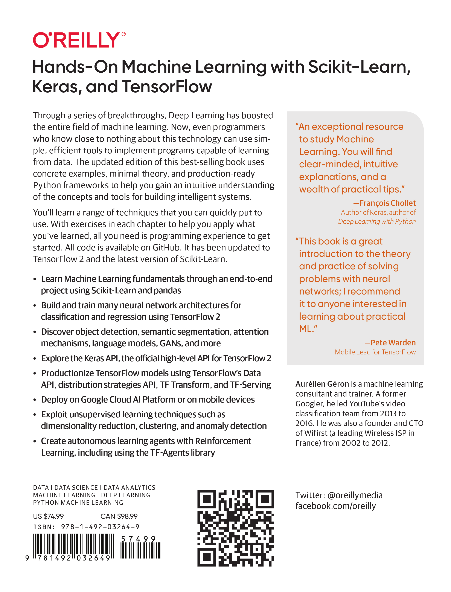
机器学习实战
使用 Scikit-Learn、Keras 和 TensorFlow
构建智能系统的概念、工具和技术
Aurélien Géron
北京 波士顿 法纳姆 塞巴斯托波尔 东京
机器学习实战：使用 Scikit-Learn、Keras 和 TensorFlow 作者：Aurélien Géron
版权所有 © 2019 Kiwisoft S.A.S. 保留所有权利。
在加拿大印刷。
由 O’Reilly Media, Inc. 出版，地址：1005 Gravenstein Highway North, Sebastopol, CA 95472。
O’Reilly 图书可用于教育、商业或销售促销用途。大多数图书也提供在线版本（http://oreilly.com）。如需更多信息，请联系我们的企业/机构销售部门：800-998-9938 或 corporate@oreilly.com。
编辑： Rachel Roumeliotis 和 Nicole Tache
索引编制： Judith McConville
制作编辑： Kristen Brown
内部设计： David Futato
文字编辑： Amanda Kersey
封面设计： Karen Montgomery
校对： Rachel Head
插图： Rebecca Demarest
2019年9月：第二版
第二版修订历史
2019-09-05：首次发布
2019-10-11：第二次发布
2019-11-22：第三次发布
发布详情请见 http://oreilly.com/catalog/errata.csp?isbn=9781492032649。
O’Reilly 标志是 O’Reilly Media, Inc. 的注册商标。机器学习实战：使用 Scikit-Learn、Keras 和 TensorFlow、封面图像以及相关装帧设计是 O’Reilly Media, Inc. 的商标。
本作品中表达的观点为作者观点，不代表出版商的观点。虽然出版商和作者已尽力确保本作品中包含的信息和说明准确无误，但出版商和作者对所有错误或遗漏不承担责任，包括但不限于因使用或依赖本作品而造成的损害责任。使用本作品中包含的信息和说明的风险由您自行承担。如果本作品包含或描述的任何代码示例或其他技术受开源许可证或他人知识产权的约束，您有责任确保您的使用符合此类许可证和/或权利。
978-1-492-03264-9
[[TI]]
前言. . . . . . . . . . . . . . . . . . . . . . . . . . . . . . . . . . . . . . . . . . . . . . . . . . . . . . . . . . . . . . . . . . . . . . . xv
第一部分：Machine Learning 基础
1. Machine Learning 概览. . . . . . . . . . . . . . . . . . . . . . . . . . . . . . . . . . . . . . . . . . . . . 1
什么是 Machine Learning？ 2
为什么使用 Machine Learning？ 2
应用示例 5
Machine Learning 系统类型 7
监督/无监督学习 7
批量和在线学习 14
基于实例与基于模型的学习 17
Machine Learning 的主要挑战 23
训练数据数量不足 23
训练数据不具代表性 25
数据质量差 26
无关特征 27
训练数据过拟合 27
训练数据欠拟合 29
回顾总结 30
测试和验证 30
超参数调优和模型选择 31
数据不匹配 32
练习 33
2. 端到端 Machine Learning 项目. . . . . . . . . . . . . . . . . . . . . . . . . . . . . . . . . . . . . . . . 35
使用真实数据 35
iii
把握全局 37
问题定义 37
选择性能指标 39
检查假设 42
获取数据 42
创建工作空间 42
下载数据 46
快速查看数据结构 47
创建测试集 51
发现和可视化数据以获得洞察 56
地理数据可视化 56
寻找相关性 58
尝试属性组合 61
为 Machine Learning 算法准备数据 62
数据清理 63
处理文本和分类属性 65
自定义转换器 68
特征缩放 69
转换管道 70
选择和训练模型 72
在训练集上训练和评估 72
使用交叉验证进行更好的评估 73
微调模型 75
网格搜索 76
随机搜索 78
集成方法 78
分析最佳模型及其错误 78
在测试集上评估系统 79
启动、监控和维护系统 80
试一试！ 83
练习 84
3. 分类. . . . . . . . . . . . . . . . . . . . . . . . . . . . . . . . . . . . . . . . . . . . . . . . . . . . . . . . . . . . . 85
MNIST 85
训练二元分类器 88
性能指标 88
使用交叉验证测量准确率 89
混淆矩阵 90
精确率和召回率 92
精确率/召回率权衡 93
ROC 曲线 97
多类分类 100
iv | 目录
错误分析 102
多标签分类 106
多输出分类 107
练习 108
线性回归 112
正规方程 114
计算复杂度 117
梯度下降 118
批量梯度下降 121
随机梯度下降 124
Mini-batch梯度下降 127
多项式回归 128
学习曲线 130
正则化线性模型 134
Ridge回归 135
Lasso回归 137
弹性网络 140
早停法 141
逻辑回归 142
估计概率 143
训练和代价函数 144
决策边界 145
Softmax回归 148
练习题 151
线性SVM分类 153
软间隔分类 154
非线性SVM分类 157
多项式核 158
相似性特征 159
高斯RBF核 160
计算复杂度 162
SVM回归 162
深入理解 164
决策函数和预测 165
训练目标 166
二次规划 167
对偶问题 168
核化SVM 169
在线SVM 172
练习题 174
训练和可视化决策树 175
进行预测 176
估计类别概率 178
CART训练算法 179
计算复杂度 180
基尼不纯度还是熵？ 180
正则化超参数 181
回归 183
不稳定性 185
练习题 186
投票分类器 189
Bagging和Pasting 192
Scikit-Learn中的Bagging和Pasting 194
袋外评估 195
随机补丁和随机子空间 196
随机森林 197
Extra-Trees 198
特征重要性 198
提升方法 199
AdaBoost 200
梯度提升 203
堆叠法 208
练习题 211
维度诅咒 214
降维的主要方法 215
投影 215
流形学习 218
PCA 219
保持方差 219
主成分 220
投影到d维 221
使用Scikit-Learn 222
解释方差比 222
选择正确的维度数量 223
PCA压缩 224
随机PCA 225
增量PCA 225
核PCA 226
选择核函数和调优超参数 227
LLE 230
其他降维技术 232
练习题 233
聚类 236
K-Means 238
K-Means的限制 248
使用聚类进行图像分割 249
使用聚类进行预处理 251
使用聚类进行半监督学习 253
DBSCAN 255
其他聚类算法 258
高斯混合 260
使用高斯混合进行异常检测 266
选择聚类数量 267
贝叶斯高斯混合模型 270
异常和新颖性检测的其他算法 274
练习题 275
从生物神经元到人工神经元 280
生物神经元 281
神经元的逻辑计算 283
感知机 284
多层感知机和反向传播 289
回归MLP 292
分类MLP 294
使用Keras实现MLP 295
安装TensorFlow 2 296
使用Sequential API构建图像分类器 297
使用Sequential API构建回归MLP 307
使用Functional API构建复杂模型 308
使用子类化API构建动态模型 313
保存和恢复模型 314
使用回调函数 315
使用TensorBoard进行可视化 317
微调神经网络超参数 320
隐藏层数量 323
每个隐藏层的神经元数量 324
学习率、批量大小和其他超参数 325
练习题 327
梯度消失/爆炸问题 332
Glorot和He初始化 333
非饱和激活函数 335
批量归一化 338
梯度裁剪 345
重用预训练层 345
使用Keras进行迁移学习 347
无监督预训练 349
辅助任务预训练 350
更快的优化器 351
动量优化 351
Nesterov加速梯度 353
AdaGrad 354
RMSProp 355
Adam和Nadam优化 356
学习率调度 359
通过正则化避免过拟合 364
ℓ1和ℓ2正则化 364
Dropout 365
蒙特卡洛(MC) Dropout 368
最大范数正则化 370
总结和实用指南 371
练习题 373
TensorFlow快速浏览 376
像NumPy一样使用TensorFlow 379
张量和操作 379
张量和NumPy 381
类型转换 381
变量 382
其他数据结构 383
自定义模型和训练算法 384
自定义损失函数 384
[获取您自己的GPU] 690
[使用配备GPU的虚拟机] 692
Colaboratory 693
[管理GPU内存] 694
[xii | 目录]
在设备上放置操作和变量 697
[跨多个设备并行执行] 699
[跨多个设备训练模型] 701
[模型并行] 701
[数据并行] 704
[使用分布策略API进行大规模训练] 709
[在TensorFlow集群上训练模型] 711
在Google Cloud AI Platform上运行大型训练作业 714
[AI Platform上的黑盒超参数调优] 716
练习 717
[谢谢！] 718
[A.] [练习解答. . . . . . . . . . . . . . . . . . . . . . . . . . . . . . . . . . . . . . . . . . . . . . . . . . . . . . . . . 719]
[B.] [机器学习项目检查清单. . . . . . . . . . . . . . . . . . . . . . . . . . . . . . . . . . . . . . . . . . . 755]
[C.] [SVM对偶问题. . . . . . . . . . . . . . . . . . . . . . . . . . . . . . . . . . . . . . . . . . . . . . . . . . . . . . . . . 761]
[D.] [自动微分. . . . . . . . . . . . . . . . . . . . . . . . . . . . . . . . . . . . . . . . . . . . . . . . . . . . . . . . . . . . . . . . . . 765]
[E.] [其他流行的ANN架构. . . . . . . . . . . . . . . . . . . . . . . . . . . . . . . . . . . . . . . . . . . . . 773]
[F.] [特殊数据结构. . . . . . . . . . . . . . . . . . . . . . . . . . . . . . . . . . . . . . . . . . . . . . . . . . . . . 783]
[G.] [TensorFlow图. . . . . . . . . . . . . . . . . . . . . . . . . . . . . . . . . . . . . . . . . . . . . . . . . . . . . . . . 791]
[索引. . . . . . . . . . . . . . . . . . . . . . . . . . . . . . . . . . . . . . . . . . . . . . . . . . . . . . . . . . . . . . . . . . . . . . . 801]
[目录 | xiii]
2006年，Geoffrey Hinton等人发表了一篇论文[1]，展示了如何训练一个能够以最先进精度（>98%）识别手写数字的深度神经网络。他们将这种技术命名为”Deep Learning”。深度神经网络是我们大脑皮层的（非常）简化模型，由多层人工神经元堆叠组成。训练深度神经网络在当时被广泛认为是不可能的[2]，大多数研究人员在1990年代末已经放弃了这个想法。这篇论文重新激发了科学界的兴趣，不久后许多新论文证明了Deep Learning不仅是可能的，而且能够实现令人震惊的成就，是其他Machine Learning (ML)技术无法企及的（在强大计算能力和大量数据的帮助下）。这种热情很快扩展到Machine Learning的许多其他领域。
大约十年后，Machine Learning征服了工业界：它是当今高科技产品中许多神奇功能的核心，为您的网络搜索结果排名，驱动智能手机的语音识别，推荐视频，并在围棋比赛中击败世界冠军。不知不觉中，它将驾驶您的汽车。
因此，您自然对Machine Learning感到兴奋，并希望加入这场盛宴！
[1] [Geoffrey E. Hinton et al., “A Fast Learning Algorithm for Deep Belief Nets,” ][Neural Computation][ 18 (2006):] [1527–1554.]
[2] [尽管Yann LeCun的深度卷积神经网络自1990年代以来在图像识别方面表现出色，但它们并不像现在这样通用。]
或者也许您的公司拥有大量数据（用户日志、财务数据、生产数据、机器传感器数据、热线统计、HR报告等），如果您知道在哪里寻找，很可能会发现一些隐藏的宝藏。通过Machine Learning，您可以实现以下功能和更多：
• 细分客户并为每个群体找到最佳营销策略。
• 根据类似客户购买的产品为每位客户推荐产品。
• 检测哪些交易可能是欺诈性的。
• 预测明年的收入。
无论出于什么原因，您已经决定学习Machine Learning并在项目中实施它。好主意！
本书假设您对Machine Learning几乎一无所知。它的目标是为您提供实现能够从数据中学习的程序所需的概念、工具和直觉。
我们将涵盖大量技术，从最简单、最常用的（如线性回归）到一些经常赢得比赛的Deep Learning技术。
我们不会实现每种算法的玩具版本，而是使用生产就绪的Python框架：
• Scikit-Learn非常易于使用，但它高效地实现了许多Machine Learning算法，因此是学习Machine Learning的绝佳入门点。它由David Cournapeau于2007年创建，现在由法国国家计算机科学与自动化研究所(Inria)的研究团队领导。
• TensorFlow是一个更复杂的分布式数值计算库。它通过将计算分布到可能数百台多GPU（图形处理单元）服务器上，使训练和运行非常大的神经网络成为可能。TensorFlow (TF)在Google创建，支持其许多大规模Machine Learning应用程序。它于开源
2015年11月发布，2.0版本于2019年9月发布。
• Keras 是一个高级Deep Learning API，使训练和运行neural networks变得非常简单。它可以运行在TensorFlow、Theano或Microsoft Cognitive Toolkit（以前称为CNTK）之上。TensorFlow带有自己的API实现，称为tf.keras，它提供对一些高级TensorFlow功能的支持（例如，高效加载数据的能力）。
xvi | 前言
本书偏向实践方法，通过具体的工作示例和少量理论来培养对Machine Learning的直观理解。虽然您可以在不使用笔记本电脑的情况下阅读本书，但我强烈建议您尝试在线提供的代码示例，这些示例作为Jupyter notebooks可在https://github.com/ageron/handson-ml2获得。
本书假设您有一定的Python编程经验，并且熟悉Python的主要科学库——特别是NumPy、pandas和Matplotlib。
此外，如果您关心底层原理，您还应该对大学水平的数学有合理的理解（微积分、线性代数、概率和统计）。
如果您还不了解Python，http://learnpython.org/是一个很好的起点。Python.org上的官方教程也相当不错。
如果您从未使用过Jupyter，第2章将指导您完成安装和基础知识：它是您工具箱中的强大工具。
如果您不熟悉Python的科学库，提供的Jupyter notebooks包括一些教程。还有一个线性代数的快速数学教程。
本书分为两部分。第一部分，Machine Learning基础，涵盖以下主题：
• Machine Learning是什么，它试图解决什么问题，以及其系统的主要类别和基本概念
• 典型Machine Learning项目中的步骤
• 通过将模型拟合到数据来学习
• 优化成本函数
• 处理、清理和准备数据
• 选择和工程化特征
• 使用交叉验证选择模型和调整超参数
• Machine Learning的挑战，特别是欠拟合和过拟合（偏差/方差权衡）
前言 | xvii
• 最常见的学习算法：Linear和Polynomial Regression、Logistic Regression、k-Nearest Neighbors、Support Vector Machines、Decision Trees、Random Forests和Ensemble方法
• 降低训练数据的维度以对抗”维度诅咒”
• 其他无监督学习技术，包括聚类、密度估计和异常检测
第二部分，Neural Networks和Deep Learning，涵盖以下主题：
• neural nets是什么以及它们的优势
• 使用TensorFlow和Keras构建和训练neural nets
• 最重要的neural net架构：用于表格数据的feedforward neural nets、用于计算机视觉的convolutional nets、用于序列处理的recurrent nets和long short-term memory (LSTM) nets、用于自然语言处理的encoder/decoders和Transformers、用于生成学习的autoencoders和generative adversarial networks (GANs)
• 训练deep neural nets的技术
• 如何构建一个agent（例如，游戏中的bot），它可以通过试错学习良好的策略，使用Reinforcement Learning
• 高效加载和预处理大量数据
• 大规模训练和部署TensorFlow模型
第一部分主要基于Scikit-Learn，而第二部分使用TensorFlow和Keras。
不要过早跳入深水：虽然Deep Learning无疑是Machine Learning中最令人兴奋的领域之一，但您应该首先掌握基础知识。此外，大多数问题都可以使用更简单的技术很好地解决，例如Random Forests和Ensemble方法（在第一部分中讨论）。Deep Learning最适合复杂问题，如图像识别、语音识别或自然语言处理，前提是您有足够的数据、计算能力和耐心。
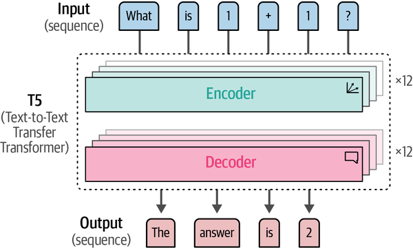
xviii | 前言
第二版有六个主要目标：
涵盖额外的ML主题：更多无监督学习技术（包括聚类、异常检测、密度估计和混合模型）；更多训练deep nets的技术（包括self-normalized networks）；额外的计算机视觉技术（包括Xception、SENet、使用YOLO的物体检测，以及使用R-CNN的语义分割）；使用convolutional neural networks (CNNs，包括WaveNet)处理序列；使用recurrent neural networks (RNNs)、CNNs和Transformers进行自然语言处理；以及GANs。
涵盖额外的库和APIs（Keras、Data API、用于Reinforcement Learning的TF-Agents）以及使用Distribution Strategies API、TF-Serving和Google Cloud AI Platform大规模训练和部署TF模型。还简要介绍TF Transform、TFLite、TF Addons/Seq2Seq和TensorFlow.js。
讨论Deep Learning研究的一些最新重要结果。
将所有TensorFlow章节迁移到TensorFlow 2，并尽可能使用TensorFlow的Keras API实现（tf.keras）。
更新代码示例以使用最新版本的Scikit-Learn、NumPy、pandas、Matplotlib和其他库。
澄清一些章节并修正一些错误，感谢读者的大量宝贵反馈。
一些章节被添加，其他章节被重写，少数章节被重新排序。详见
https://homl.info/changes2 获取第二版变更的更多详细信息。
有许多优秀的资源可以学习Machine Learning。例如，
Andrew Ng的ML课程在Coursera上非常棒，尽管需要大量的时间投入（想想几个月的时间）。
还有许多关于Machine Learning的有趣网站，当然包括Scikit-Learn的卓越用户指南。您可能还会喜欢Dataquest，它提供非常好的交互式教程，以及ML博客，如Quora上列出的那些。
最后，Deep Learning网站有一个很好的资源列表，可以查看以了解更多信息。
还有许多其他关于Machine Learning的入门书籍。特别是：
• Joel Grus的Data Science from Scratch (O’Reilly) 介绍了Machine Learning的基础知识，并用纯Python实现了一些主要算法（从零开始，正如书名所示）。
• Stephen Marsland的Machine Learning: An Algorithmic Perspective (Chapman & Hall) 是Machine Learning的绝佳入门书，深入涵盖了广泛的主题，并提供了Python代码示例（也是从零开始，但使用NumPy）。
• Sebastian Raschka的Python Machine Learning (Packt Publishing) 也是Machine Learning的绝佳入门书，并利用了Python开源库（Pylearn 2和Theano）。
• François Chollet的Deep Learning with Python (Manning) 是一本非常实用的书，以清晰简洁的方式涵盖了大量主题，正如您对优秀Keras库作者的期望。它偏重代码示例而非数学理论。
• Andriy Burkov的The Hundred-Page Machine Learning Book 非常简短，涵盖了令人印象深刻的广泛主题，以易懂的术语介绍它们，而不回避数学方程。
• Yaser S. Abu-Mostafa、Malik Magdon-Ismail和Hsuan-Tien Lin的Learning from Data (AMLBook) 是ML的理论方法，提供了深刻的见解，特别是关于偏差/方差权衡（见第4章）。
• Stuart Russell和Peter Norvig的Artificial Intelligence: A Modern Approach，第3版 (Pearson)，是一本涵盖大量主题（包括Machine Learning）的优秀（且庞大）书籍。它有助于将ML放在透视中。
最后，加入ML竞赛网站如Kaggle.com将允许您在现实世界问题上练习技能，并从一些最优秀的ML专业人士那里获得帮助和见解。
本书使用以下排版约定：
斜体
表示新术语、URL、电子邮件地址、文件名和文件扩展名。
等宽字体
用于程序清单，以及在段落中引用程序元素，如变量或函数名、数据库、数据类型、环境变量、语句和关键字。
等宽粗体
显示用户应该按字面意思键入的命令或其他文本。
等宽斜体
显示应该用用户提供的值或由上下文确定的值替换的文本。
此元素表示提示或建议。
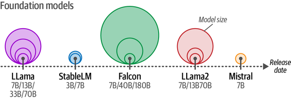
此元素表示一般注释。
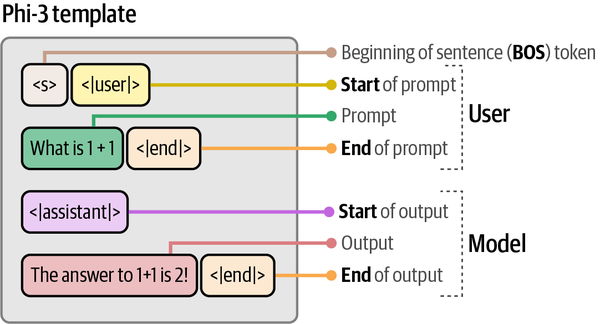
此元素表示警告或注意事项。
有一系列充满补充材料的Jupyter notebook，如代码示例和练习，可在https://github.com/ageron/handson-ml2下载。
书中的一些代码示例省略了重复的部分或明显的或与Machine Learning无关的细节。这保持了对代码重要部分的关注，并节省空间来涵盖更多主题。如果您想要完整的代码示例，它们都可以在Jupyter notebook中获得。
请注意，当代码示例显示一些输出时，这些代码示例会用Python提示符（[>>>]和[...]）显示，就像在Python shell中一样，以清楚地区分代码和输出。例如，此代码定义了[square()]函数，然后计算并显示3的平方：
[>>> ][def] [square][(][x][):]
[... ] [return] [x] [**] [2]
[...]
[>>> ][result] [=] [square][(][3][)]
[>>> ][result]
[9]
当代码不显示任何内容时，不使用提示符。但是，结果有时可能作为注释显示，如下所示：
[def] [square][(][x][):]
[return] [x] [**] [2]
[result] [=] [square][(][3][) ][# result is 9]
本书旨在帮助您完成工作。一般来说，如果本书提供了示例代码，您可以在程序和文档中使用它。除非您要复制代码的重要部分，否则无需联系我们获得许可。例如，编写使用本书中几个代码块的程序不需要许可。销售或分发O’Reilly书籍示例的CD-ROM需要许可。通过引用本书和引用示例代码来回答问题不需要许可。将本书中大量示例代码合并到产品文档中需要许可。
我们非常感谢，但不要求署名。署名通常包括标题、作者、出版商和ISBN。例如：“Hands-On Machine Learning with Scikit-Learn, Keras, and TensorFlow, 2nd Edition, by Aurélien Géron (O’Reilly). Copyright 2019 Kiwisoft S.A.S., 978-1-492-03264-9.” 如果您觉得您对代码示例的使用超出了合理使用范围或上述授权，请随时通过以下方式联系我们：
近40年来，O’Reilly Media 一直为技术和商业培训、知识和洞察提供帮助，协助公司取得成功。
我们独特的专家和创新者网络通过书籍、文章、会议和我们的在线学习平台分享他们的知识和专业技能。O’Reilly的在线学习平台为您提供按需访问的实时培训课程、深入学习路径、交互式编程环境，以及来自O’Reilly和200多家其他出版商的大量文本和视频资源。更多信息，请访问http://oreilly.com。
请将关于本书的意见和问题发送给出版商：
O’Reilly Media, Inc. 1005 Gravenstein Highway North Sebastopol, CA 95472 800-998-9938（美国或加拿大） 707-829-0515（国际或本地） 707-829-0104（传真）
我们为本书建立了一个网页，在那里我们列出了勘误表、示例和任何其他信息。您可以访问https://homl.info/oreilly2。
要对本书发表评论或询问技术问题，请发送电子邮件至bookquestions@oreilly.com。
有关我们的书籍、课程、会议和新闻的更多信息，请访问我们的网站http://www.oreilly.com。
在Facebook上找到我们：http://facebook.com/oreilly
在Twitter上关注我们：http://twitter.com/oreillymedia
在YouTube上观看我们：http://www.youtube.com/oreillymedia
我从未想过本书第一版会有如此广泛的读者群体。我收到了读者们的许多信息，其中许多人提出问题，一些人友好地指出了错误，大多数人向我发送了鼓励的话语。我无法表达对所有这些读者巨大支持的感激之情。
非常感谢大家！如果您在代码示例中发现错误（或只是想提问），请不要犹豫在GitHub上提交issue，或者如果您在文本中发现错误，请提交勘误表。一些读者还分享了这本书如何帮助他们获得第一份工作，或者如何帮助他们解决正在处理的具体问题。我发现这样的反馈极其激励人心。如果您发现这本书有帮助，我很希望您能与我分享您的故事，无论是私下（例如，通过LinkedIn）还是公开（例如，在推特上或通过亚马逊评论）。
我也非常感谢所有那些从繁忙生活中抽出时间如此用心地审阅我的书的了不起的人们。特别是，我要感谢François Chollet审阅了所有基于Keras和TensorFlow的章节，并给了我一些很棒的深入反馈。由于Keras是第二版的主要新增内容之一，让其作者审阅这本书是非常宝贵的。我强烈推荐François的书Deep Learning with Python（Manning出版）：它具有Keras库本身的简洁性、清晰性和深度。同样特别感谢Ankur Patel，他审阅了第二版的每一章并给了我出色的反馈，特别是在涵盖无监督学习技术的第9章。他可以就这个主题写一整本书…哦，等等，他确实写了！请查看Hands-On Unsupervised Learning Using Python: How to Build Applied Machine Learning Solutions from Unlabeled Data（O’Reilly出版）。同样要大大感谢Olzhas Akpambetov，他审阅了本书第二部分的所有章节，测试了大部分代码，并提供了许多很棒的建议。我感谢Mark Daoust、Jon Krohn、Dominic Monn和Josh Patterson如此彻底地审阅本书第二部分并提供他们的专业知识。他们不遗余力，提供了非常有用的反馈。
在撰写第二版时，我很幸运地得到了TensorFlow团队成员的大量帮助——特别是Martin Wicke，他不知疲倦地回答了我的数十个问题，并将其余问题分派给合适的人员，包括Karmel Allison、Paige Bailey、Eugene Brevdo、William Chargin、Daniel “Wolff” Dobson、Nick Felt、Bruce Fontaine、Goldie Gadde、Sandeep Gupta、Priya Gupta、Kevin Haas、Konstantinos Katsiapis、Viacheslav Kovalevskyi、Allen Lavoie、Clemens Mewald、Dan Moldovan、Sean Morgan、Tom O’Malley、Alexandre Passos、André Susano Pinto、Anthony Platanios、Oscar Ramirez、Anna Revinskaya、Saurabh Saxena、Ryan Sepassi、Jiri Simsa、Xiaodan Song、Christina Sorokin、Dustin Tran、Todd Wang、Pete Warden（他也审阅了第一版）、Edd Wilder-James和Yuefeng Zhou，他们都给予了巨大帮助。非常感谢你们所有人，也感谢TensorFlow团队的所有其他成员，不仅感谢你们的帮助，也感谢你们制作了如此出色的库！特别感谢TFX团队的Irene Giannoumis和Robert Crowe深入审阅了第13章和第19章。
同样要感谢 O’Reilly 出色的工作人员，特别是 Nicole Taché，她给了我深刻的反馈意见，总是开朗、鼓励和乐于助人：我无法想象有比她更好的编辑了。同样要大力感谢 Michele Cronin，她在这第二版的开始阶段非常有帮助（也很耐心），还要感谢 Kristen Brown，这第二版的制作编辑，她见证了所有步骤（她还协调了第一版每次重印的修复和更新）。同样感谢 Rachel Monaghan 和 Amanda Kersey 的彻底校对（分别负责第一版和第二版），以及 Johnny O’Toole，他管理与 Amazon 的关系并回答了我的许多问题。感谢 Marie Beaugureau、Ben Lorica、Mike Loukides 和 Laurel Ruma 相信这个项目并帮助我定义其范围。感谢 Matt Hacker 和整个 Atlas 团队回答了我关于格式、AsciiDoc 和 LaTeX 的所有技术问题，感谢 Nick Adams、Rebecca Demarest、Rachel Head、Judith McConville、Helen Monroe、Karen Montgomery、Rachel Roumeliotis 以及 O’Reilly 所有为这本书做出贡献的其他人。
我也想感谢我以前的 Google 同事，特别是 YouTube 视频分类团队，他们教会了我关于机器学习的很多知识。没有他们，我永远无法开始第一版的写作。特别感谢我个人的 ML 导师们：Clément Courbet、Julien Dubois、Mathias Kende、Daniel Kitachewsky、James Pack、Alexander Pak、Anosh Raj、Vitor Sessak、Wiktor Tomczak、Ingrid von Glehn 和 Rich Washington。感谢我在 YouTube 以及 Mountain View 令人惊叹的 Google 研究团队中合作过的所有其他人。同样要非常感谢 Martin Andrews、Sam Witteveen 和 Jason Zaman 欢迎我加入他们在新加坡的 Google Developer Experts 小组，得到了 Soonson Kwon 的友好支持，以及我们关于深度学习和 TensorFlow 的所有精彩讨论。任何对新加坡深度学习感兴趣的人都应该加入他们的新加坡深度学习聚会。Jason 特别值得感谢，因为他为第 19 章分享了一些 TFLite 专业知识！
我永远不会忘记那些审阅这本书第一版的好心人，包括 David Andrzejewski、Lukas Biewald、Justin Francis、Vincent Guilbeau、Eddy Hung、Karim Matrah、Grégoire Mesnil、Salim Sémaoune、Iain Smears、Michel Tessier、Ingrid von Glehn、Pete Warden，当然还有我亲爱的兄弟 Sylvain。特别感谢 Haesun Park，他在撰写这本书第一版的韩文翻译时给了我大量优秀的反馈并发现了几个错误。他还将 Jupyter notebooks 翻译成了韩文，更不用说 TensorFlow 的文档。我不会说韩语，但从他反馈的质量来判断，他的所有翻译一定都非常出色！Haesun 还友好地为第二版的一些练习题提供了解决方案。
最后但同样重要的是，我无限感激我亲爱的妻子 Emmanuelle，以及我们三个可爱的孩子 Alexandre、Rémi 和 Gabrielle，感谢他们鼓励我努力完成这本书。我也感谢他们永不满足的好奇心：向我的妻子和孩子们解释这本书中一些最困难的概念帮助我理清了思路，并直接改进了书中的许多部分。他们还一直给我带来饼干和咖啡！还有什么比这更让人梦寐以求的呢？
当大多数人听到”机器学习”时，他们会想象一个机器人：一个可靠的管家或致命的终结者，这取决于你问的是谁。但机器学习不仅仅是未来主义的幻想；它已经在这里了。事实上，它在一些专门的应用中已经存在了几十年，比如光学字符识别（OCR）。但第一个真正成为主流的 ML 应用，改善了数亿人的生活，在 1990 年代席卷了世界：垃圾邮件过滤器。它并不完全是一个自我意识的天网，但它确实在技术上符合机器学习的条件（它实际上学得如此之好，以至于你很少需要再将邮件标记为垃圾邮件）。紧随其后的是数百个 ML 应用，现在它们悄悄地为你经常使用的数百种产品和功能提供动力，从更好的推荐到语音搜索。
机器学习从哪里开始，又在哪里结束？机器学习某些东西到底意味着什么？如果我下载了一份 Wikipedia 的副本，我的计算机真的学到了什么吗？它突然变聪明了吗？在这一章中，我们将首先澄清什么是机器学习，以及为什么你可能想要使用它。
然后，在我们出发探索机器学习大陆之前，我们将看看地图，了解主要区域和最著名的地标：监督学习与无监督学习，在线学习与批量学习，基于实例的学习与基于模型的学习。然后我们将看看典型 ML 项目的工作流程，讨论你可能面临的主要挑战，并涵盖如何评估和微调机器学习系统。
这一章介绍了许多基本概念（和术语），每个数据科学家都应该熟记于心。这将是一个高层次的概述（这是唯一一个没有太多代码的章节），都相当简单，但你应该确保在继续阅读本书的其余部分之前，一切都对你来说是清晰明了的。所以拿一杯咖啡，让我们开始吧！

如果你已经了解所有的机器学习基础知识，你可能想要直接跳到第2章。如果你不确定，在继续之前尝试回答本章末尾列出的所有问题。
机器学习是编程计算机使其能够从数据中学习的科学（和艺术）。
这里是一个稍微更通用的定义：
[机器学习是]给予计算机学习能力的研究领域
无需明确编程。
—Arthur Samuel, 1959
还有一个更面向工程的定义：
如果一个计算机程序在某项任务T上的性能，通过性能度量P来衡量，
随着经验E的积累而提高，那么我们说这个程序从经验E中学习了
关于任务T和性能度量P。
—Tom Mitchell, 1997
你的垃圾邮件过滤器就是一个机器学习程序，它通过垃圾邮件样本（例如，用户标记的）和正常邮件（非垃圾邮件，也称为”ham”）样本，能够学会标记垃圾邮件。系统用来学习的样本称为训练集。每个训练样本称为训练实例（或样本）。在这种情况下，任务T是为新邮件标记垃圾邮件，经验E是训练数据，性能度量P需要定义；例如，你可以使用正确分类邮件的比例。这个特定的性能度量称为准确率，在分类任务中经常使用。
如果你只是下载了Wikipedia的副本，你的计算机拥有了更多数据，但它在任何任务上都没有突然变得更好。因此，下载Wikipedia副本不是机器学习。
考虑一下如何使用传统编程技术编写垃圾邮件过滤器（图1-1）：
首先你会考虑垃圾邮件通常是什么样的。你可能会注意到某些词汇或短语（如”4U”、“credit card”、“free”和”amazing”）倾向于在主题行中大量出现。也许你还会注意到发件人姓名、邮件正文和邮件其他部分的一些其他模式。
你会为每个注意到的模式编写检测算法，如果检测到若干这些模式，你的程序就会将邮件标记为垃圾邮件。
你会测试你的程序，重复步骤1和2，直到它足够好可以发布。
图1-1. 传统方法
由于问题很困难，你的程序很可能会变成一长串复杂规则—相当难以维护。
相比之下，基于机器学习技术的垃圾邮件过滤器会自动学习哪些词汇和短语是垃圾邮件的良好预测器，通过检测垃圾邮件样本中相比正常邮件样本异常频繁的词汇模式（图1-2）。程序更短、更易于维护，而且很可能更准确。
如果垃圾邮件发送者注意到所有包含”4U”的邮件都被阻止了怎么办？他们可能开始写”For U”。使用传统编程技术的垃圾邮件过滤器需要更新以标记”For U”邮件。如果垃圾邮件发送者持续绕过你的垃圾邮件过滤器，你将需要永远不断地编写新规则。
相比之下，基于机器学习技术的垃圾邮件过滤器会自动注意到”For U”在用户标记的垃圾邮件中变得异常频繁，并在没有你干预的情况下开始标记它们（图1-3）。
图1-2. 机器学习方法
图1-3. 自动适应变化
机器学习发光的另一个领域是对于传统方法过于复杂或没有已知算法的问题。例如，考虑语音识别。假设你想从简单开始，编写一个能够区分单词”one”和”two”的程序。你可能注意到单词”two”以高音调声音开始（“T”），所以你可以硬编码一个算法来测量高音调声音强度，并用它来区分ones和twos—但显然这种技术无法扩展到数百万不同的人在嘈杂环境中用数十种语言说出的数千个单词。最佳解决方案（至少在今天）是编写一个算法，给定每个单词的许多示例录音，让它自己学习。
最后，机器学习可以帮助人类学习（图1-4）。ML算法可以被检查以了解它们学到了什么（尽管对某些算法来说这可能很棘手）。例如，一旦垃圾邮件过滤器在足够的垃圾邮件上训练过，就可以轻松检查它以揭示它认为是垃圾邮件最佳预测器的单词和单词组合列表。有时这会揭示意外的关联或新趋势，从而导致对问题的更好理解。应用ML技术挖掘大量数据可以帮助发现不立即明显的模式。这称为数据挖掘。
图1-4. 机器学习可以帮助人类学习
总结一下，机器学习非常适合：
• 现有解决方案需要大量微调或长规则列表的问题：一个机器学习算法通常可以简化代码并比传统方法表现更好。
• 使用传统方法无法产生良好解决方案的复杂问题：最佳机器学习技术也许能找到解决方案。
• 波动环境：机器学习系统可以适应新数据。
• 获得关于复杂问题和大量数据的洞察。
让我们看一些机器学习任务的具体例子，以及可以处理它们的技术：
分析生产线上产品图像以自动分类它们
这是图像分类，通常使用卷积神经网络进行。
网络（CNN；参见第14章）。
应用示例 | 5
在脑部扫描中检测肿瘤
这是语义分割，图像中的每个像素都被分类（因为我们想要确定肿瘤的确切位置和形状），通常也使用CNNs。
自动分类新闻文章
这是自然语言处理(NLP)，更具体地说是文本分类，可以使用循环神经网络(RNNs)、CNNs或Transformers来解决（参见第16章）。
自动标记讨论论坛中的攻击性评论
这也是文本分类，使用相同的NLP工具。
自动摘要长文档
这是NLP的一个分支，称为文本摘要，同样使用相同的工具。
创建聊天机器人或个人助理
这涉及许多NLP组件，包括自然语言理解(NLU)和问答模块。
基于许多性能指标预测您公司明年的收入
这是一个回归任务（即预测值），可以使用任何回归模型来解决，例如线性回归或多项式回归模型（参见第4章）、回归SVM（参见第5章）、回归随机森林（参见第7章）或人工神经网络（参见第10章）。如果您想考虑过去性能指标的序列，您可能想使用RNNs、CNNs或Transformers（参见第15章和第16章）。
让您的应用程序对语音命令做出反应
这是语音识别，需要处理音频样本：由于它们是长而复杂的序列，通常使用RNNs、CNNs或Transformers来处理（参见第15章和第16章）。
检测信用卡欺诈
这是异常检测（参见第9章）。
根据客户的购买行为对客户进行分段，以便为每个分段设计不同的营销策略
这是聚类（参见第9章）。
在清晰而富有洞察力的图表中表示复杂的高维数据集
这是数据可视化，通常涉及降维技术（参见第8章）。
基于过去的购买记录向客户推荐可能感兴趣的产品
这是推荐系统。一种方法是将过去的购买记录（以及关于客户的其他信息）输入到人工神经网络中（参见第10章），并让它输出最可能的下一次购买。这个神经网络通常会在所有客户的过去购买序列上进行训练。
第1章：机器学习景观 | 6
为游戏构建智能机器人
这通常使用强化学习(RL)来解决（参见第18章），这是机器学习的一个分支，训练代理（如机器人）在给定环境中（如游戏）选择能够最大化其长期奖励的行动（例如，每当玩家失去一些生命值时，机器人可能获得奖励）。击败围棋世界冠军的著名AlphaGo程序就是使用RL构建的。
这个列表可以继续下去，但希望它能让您感受到机器学习可以处理的任务的令人难以置信的广度和复杂性，以及您将为每项任务使用的技术类型。
机器学习系统的类型如此之多，根据以下标准将它们分类为广泛的类别是有用的：
• 它们是否接受人类监督训练（监督学习、无监督学习、半监督学习和强化学习）
• 它们是否可以动态增量学习（在线学习与批量学习）
• 它们是通过简单地将新数据点与已知数据点进行比较来工作，还是通过检测训练数据中的模式并构建预测模型来工作，就像科学家所做的那样（基于实例的学习与基于模型的学习）
这些标准不是互斥的；您可以以任何您喜欢的方式组合它们。例如，最先进的垃圾邮件过滤器可能使用深度神经网络模型在垃圾邮件和正常邮件的示例上训练，并动态学习；这使它成为一个在线的、基于模型的、监督学习系统。
让我们更仔细地看看这些标准中的每一个。
机器学习系统可以根据它们在训练期间获得的监督数量和类型进行分类。有四个主要类别：监督学习、无监督学习、半监督学习和强化学习。
机器学习系统类型 | 7
在监督学习中，您提供给算法的训练集包括所需的解决方案，称为标签（图1-5）。

典型的监督学习任务是分类。垃圾邮件过滤器是一个很好的例子：它用许多示例邮件及其类别（垃圾邮件或正常邮件）进行训练，它必须学会如何对新邮件进行分类。
另一个典型任务是预测目标数值，例如给定一组特征（里程、年龄、品牌等）称为预测变量，预测汽车的价格。这种任务称为回归（图1-6）。要训练系统，您需要给它许多汽车的示例，包括它们的预测变量和标签（即它们的价格）。
在机器学习中，属性是数据类型（例如”里程”），而特征有几种含义，取决于上下文，但通常指属性加上其值（例如”里程=15,000”）。许多人交替使用属性和特征这两个词。
注意，一些回归算法也可以用于分类，反之亦然。例如，Logistic Regression 通常用于分类，因为它可以输出一个对应于属于给定类别概率的值（例如，20%的垃圾邮件概率）。
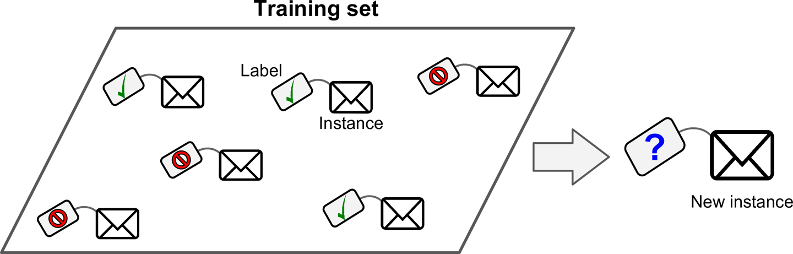
[1] [有趣的事实：这个听起来奇怪的名称是统计学术语，由Francis Galton在研究]
[高个子父母的孩子往往比他们的父母矮这一现象时引入的。由于孩子们更矮，他]
[称之为][回归到均值][。这个名称后来被应用到他用来分析变量间相关性的方法上。]
[8 | 第1章：机器学习概览]
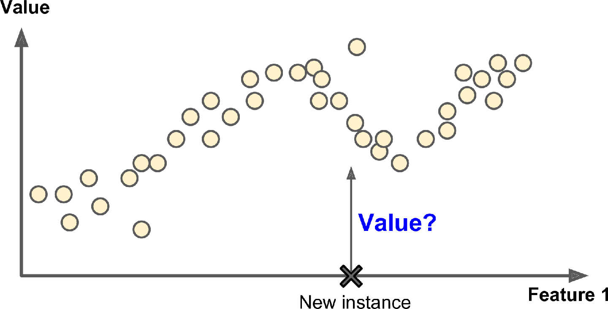
图1-6. 回归问题：给定输入特征预测一个值（通常有多个输入特征，有时有多个输出值）
以下是一些最重要的监督学习算法（本书涵盖）：
• k-最近邻
• 线性回归
• Logistic回归
• 支持向量机(SVMs)
• 决策树和随机森林
• 神经网络[2]
在无监督学习中，如你所料，训练数据是未标记的
[(图1-7)。系统试图在没有老师的情况下学习]。
[2] [一些神经网络架构可以是无监督的，如自编码器和受限玻尔兹曼机。它们也可以是半监督的，如深度信念网络和无监督预训练。]
[机器学习系统类型 | 9]
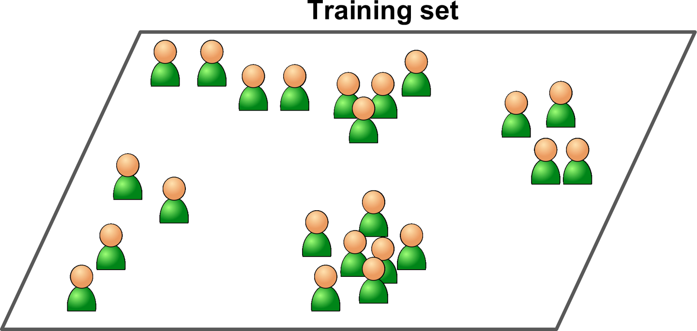
图1-7. 用于无监督学习的未标记训练集
以下是一些最重要的无监督学习算法（大多数在[第8章和][第9章]中涵盖）：
• 聚类
— K-Means
— DBSCAN
— 层次聚类分析(HCA)
• 异常检测和新颖性检测
— 单类SVM
— 孤立森林
• 可视化和降维
— 主成分分析(PCA)
— 核PCA
— 局部线性嵌入(LLE)
— t-分布随机邻域嵌入(t-SNE)
• 关联规则学习
— Apriori
— Eclat
例如，假设你有很多关于博客访问者的数据。你可能想要
运行一个聚类算法来尝[试检测相似访问者的群体(][图1-8][)。在]任何时候你都不会告诉算法访问者属于哪个群体：它在没有你帮助的情况下找到这些连接。例如，它可能注意到40%的访问者是喜欢漫画书并通常在晚上阅读你博客的男性，而20%是在周末访问的年轻科幻爱好者。如果你使用层次聚类算法，它还可能将每个群体细分为更小的群体。这可能帮助你为每个群体定制帖子。
[10 | 第1章：机器学习概览]
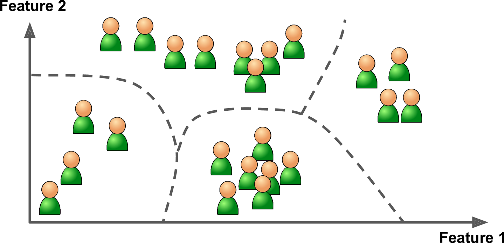
图1-8. 聚类
可视化算法也是无监督学习算法的好例子：你向它们提供大量复杂和未标记的数据，它们输出数据的2D或3D表
示，可以[轻松绘制(图1-9]）。这些算法试图尽可能保留结构（例如，试图保持输入空间中的分离簇在可视化中不重叠），以便你能理解数据是如何组织的，并可能识别出意想不到的模式。
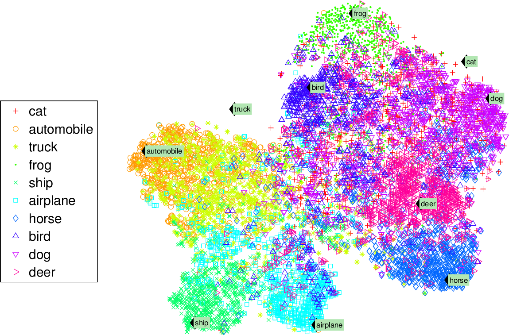
图1-9. t-SNE可视化示例，突出显示语义簇[[3]]
[3] [注意动物与车辆分离得相当好，马匹靠近鹿但远离]
[鸟类。图片经Richard Socher等人许可转载，“Zero-Shot Learning Through Cross-]
[Modal Transfer,”]][第26届神经信息处理系统国际会议论文集][ 1]
[(2013): 935–943.]
[机器学习系统类型 | 11]
一个相关的任务是降维，其目标是在不丢失太多信息的情况下简化数据。一种方法是将几个相关特征合并为一个。例如，汽车的里程可能与其年龄强相关，所以降维算法会将它们合并为一个代表汽车磨损程度的特征。这称为特征提取。
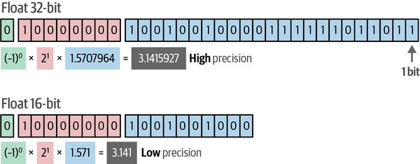
[在将训练数据输入到另一个机器学习算法（如监督] [学习算法）之前，使用降维算法减少数据维度通常] [是一个好主意。它运行得更快，数据占用更少的磁盘] [和内存空间，在某些情况下性能也可能更好。]
另一个重要的无监督任务是异常检测—例如，检测异常的信用卡交易以防止欺诈，捕获制造缺陷，或在将数据集输入另一个学习算法之前自动删除异常值。系统在训练期间主要显示正常实例，因此它学会识别它们；然后，当它看到新实例时，它可以判断是否看起来正常
类似于正常实例还是可能是异常实例（参见[图1-10]）。一个非常相似的任务是新颖性检测：它旨在检测与训练集中所有实例都不同的新实例。这需要有一个非常”干净”的训练集，不包含任何你希望算法检测到的实例。例如，如果你有数千张狗的图片，其中1%的图片代表吉娃娃，那么新颖性检测算法不应该将吉娃娃的新图片视为新颖事物。另一方面，异常检测算法可能会认为这些狗如此稀有且与其他狗如此不同，以至于它们很可能将其归类为异常（无意冒犯吉娃娃）。
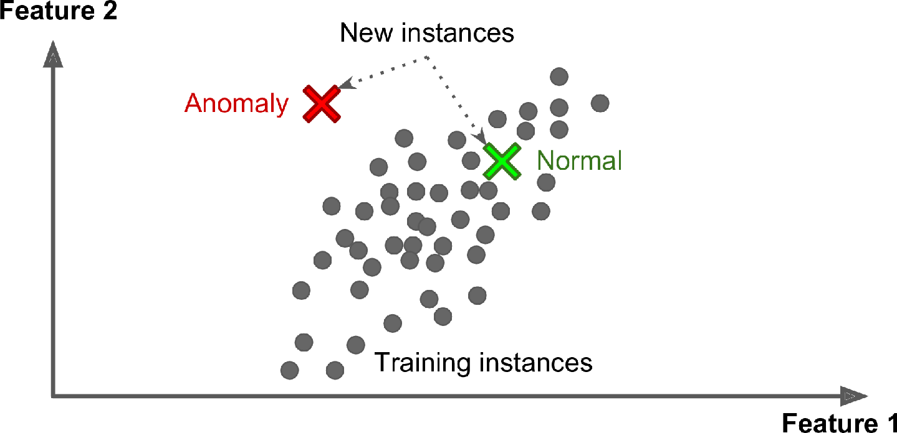
图1-10. 异常检测
最后，另一个常见的无监督任务是关联规则学习，其目标是深入挖掘大量数据并发现属性之间有趣的关系。例如，假设你拥有一家超市。对你的销售日志运行关联规则可能会发现，购买烧烤酱和薯片的人也倾向于购买牛排。因此，你可能希望将这些商品放在彼此附近。
由于标记数据通常是耗时且昂贵的，你通常会有大量的未标记实例和少量的标记实例。一些算法可以处理部分标记的数据。这被称为半监督学习（[图1-11]）。
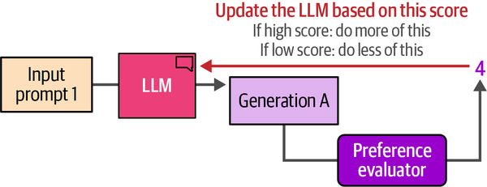
图1-11. 具有两个类别（三角形和正方形）的半监督学习：未标记的示例（圆形）帮助将新实例（十字）分类到三角形类别而不是正方形类别，即使它更接近标记的正方形
一些照片托管服务，如Google Photos，就是很好的例子。一旦你将所有家庭照片上传到服务中，它就会自动识别同一个人A出现在照片1、5和11中，而另一个人B出现在照片2、5和7中。这是算法的无监督部分（聚类）。现在系统所需要的只是你告诉它这些人是谁。只需为每个人添加一个标签，它就能够在每张照片中命名每个人，这对搜索照片很有用。
大多数半监督学习算法是无监督和监督算法的组合。例如，深度信念网络(DBNs)基于称为受限玻尔兹曼机(RBMs)的无监督组件相互堆叠。RBMs以无监督的方式顺序训练，然后使用监督学习技术对整个系统进行微调。
强化学习是一个非常不同的领域。学习系统，在这种情况下称为代理(agent)，可以观察环境，选择并执行动作，并获得奖励作为回报（或以负奖励形式的惩罚，如图1-12所示）。然后它必须自己学习什么是最佳策略，称为策略(policy)，以随着时间的推移获得最多的奖励。策略定义了代理在给定情况下应该选择什么动作。
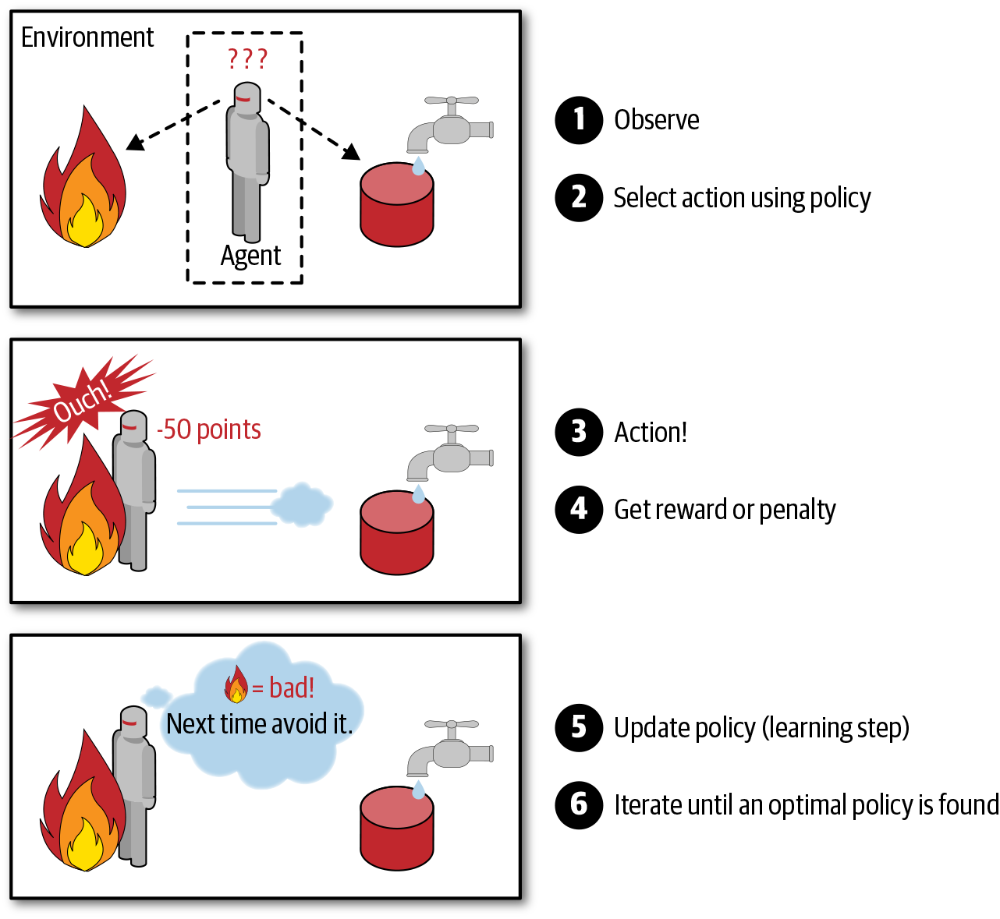
图1-12. 强化学习
例如，许多机器人实现强化学习算法来学习如何行走。DeepMind的AlphaGo程序也是强化学习的一个很好例子：它在2017年5月击败世界冠军柯洁的围棋比赛中登上了头条。它通过分析数百万场比赛，然后与自己进行许多比赛来学习其获胜策略。请注意，在与冠军的比赛中学习被关闭了；AlphaGo只是在应用它已经学到的策略。
用于分类机器学习系统的另一个标准是系统是否可以从传入数据流中增量学习。
在批量学习中，系统无法增量学习：它必须使用所有可用数据进行训练。这通常需要大量时间和计算资源，因此通常是离线完成的。首先训练系统，然后将其投入生产并在不再学习的情况下运行；它只是应用它已经学到的知识。这被称为离线学习。
如果你希望批量学习系统了解新数据（例如新类型的垃圾邮件），你需要从头开始在完整数据集上训练系统的新版本（不仅仅是新数据，还包括旧数据），然后停止旧系统并用新系统替换它。
幸运的是，训练、评估和启动机器学习系统的整个过程可以相当容易地自动化（如图1-3所示），因此即使是批量学习系统也可以适应变化。只需根据需要更新数据并从头开始训练系统的新版本。
这种解决方案简单且通常运行良好，但使用完整数据集进行训练可能需要许多小时，因此你通常只会每24小时或甚至每周训练一个新系统。如果你的系统需要适应快速变化的数据（例如，预测股票价格），那么你需要一个更具反应性的解决方案。
另外，在完整数据集上进行训练需要大量计算资源（CPU、内存空间、磁盘空间、磁盘I/O、网络I/O等）。如果你有大量数据，并且将系统自动化为每天从头训练，最终会花费你很多钱。如果数据量巨大，甚至可能无法使用批量学习算法。
最后，如果你的系统需要能够自主学习并且资源有限（例如，智能手机应用程序或火星上的探测器），那么携带大量训练数据并每天花费大量资源进行数小时训练是不可行的。
幸运的是，在所有这些情况下，更好的选择是使用能够增量学习的算法。
在在线学习中，你通过逐个或以称为mini-batches的小组形式顺序提供数据实例来增量训练系统。每个学习步骤都很快且成本低，因此系统可以在数据到达时实时学习新数据

在线学习非常适合接收连续数据流（例如股票价格）并需要快速或自主适应变化的系统。如果你的计算资源有限，这也是一个很好的选择：一旦在线学习系统学习了新的数据实例，就不再需要它们了，所以你可以丢弃它们（除非你想能够回滚到之前的状态并”重放”数据）。这可以节省大量空间。
在线学习算法也可以用于训练无法装入一台机器主内存的巨大数据集上的系统（这称为out-of-core学习）。该算法加载部分数据，在该数据上运行训练步骤，并重复这个过程直到在所有数据上运行完毕。
Out-of-core学习通常离线完成（即不在实时系统上），所以在线学习可能是一个令人困惑的名称。将其视为增量学习。
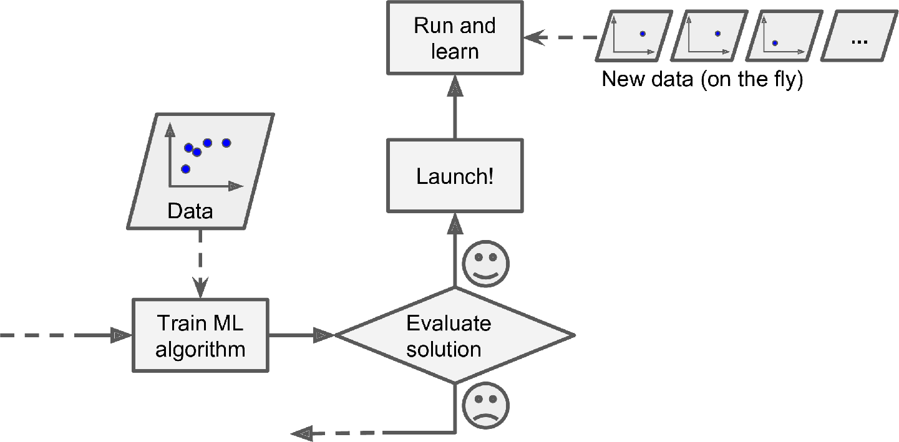
在线学习系统的一个重要参数是它们应该多快适应变化的数据：这称为学习率。如果你设置高学习率，那么你的系统将快速适应新数据，但它也会倾向于快速忘记旧数据（你不希望垃圾邮件过滤器只标记它所看到的最新类型的垃圾邮件）。相反，如果你设置低学习率，系统将有更多惯性；也就是说，它会学习得更慢，但对新数据中的噪音或非代表性数据点序列（异常值）也不太敏感。
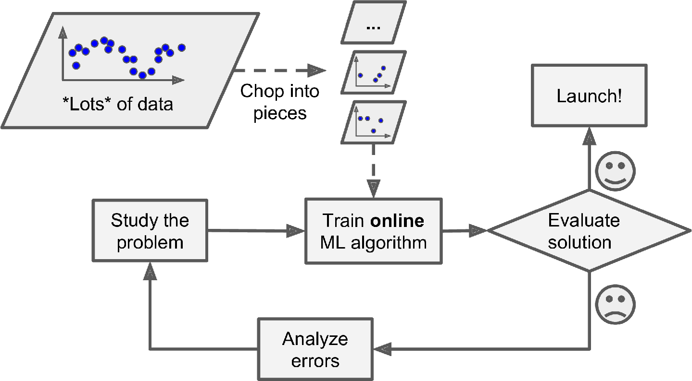
图1-14. 使用在线学习处理巨大数据集
在线学习的一个重大挑战是，如果向系统提供不良数据，系统的性能将逐渐下降。如果这是一个实时系统，你的客户会注意到。例如，不良数据可能来自机器人上故障的传感器，或来自某人向搜索引擎发送垃圾信息以试图在搜索结果中排名靠前。为了降低这种风险，你需要密切监控你的系统，如果检测到性能下降，就及时关闭学习（并可能恢复到之前的工作状态）。你可能还想监控输入数据并对异常数据做出反应（例如，使用异常检测算法）。
对机器学习系统进行分类的另一种方式是看它们如何泛化。大多数机器学习任务都是关于做出预测。这意味着给定一些训练样本，系统需要能够对它从未见过的样本做出良好预测（泛化到这些样本）。在训练数据上拥有良好的性能度量是好的，但还不够；真正的目标是在新实例上表现良好。
泛化有两种主要方法：基于实例的学习和基于模型的学习。
可能最简单的学习形式就是简单地死记硬背。如果你要以这种方式创建垃圾邮件过滤器，它只会标记与用户已经标记的邮件完全相同的所有邮件——不是最坏的解决方案，但肯定不是最好的。
你的垃圾邮件过滤器可以被编程为不仅标记与已知垃圾邮件相同的邮件，还标记与已知垃圾邮件非常相似的邮件。这需要两个邮件之间的相似性度量。两个邮件之间的（非常基本的）相似性度量可以是计算它们共同拥有的单词数量。如果一封邮件与已知垃圾邮件有很多共同单词，系统就会将其标记为垃圾邮件。
这称为基于实例的学习：系统通过死记硬背学习样本，然后通过使用相似性度量将新案例与学习到的样本（或其子集）进行比较来泛化到新案例。例如，在图1-15中，新实例将被分类为三角形，因为大多数最相似的实例属于该类。
从一组样本中泛化的另一种方式是构建这些样本的模型，然后使用该模型进行预测。这称为基于模型的学习。
例如，假设你想知道金钱是否让人快乐，所以你从OECD网站下载了Better Life Index数据和关于国内生产总值的统计数据
从IMF网站获取人均国内生产总值(GDP)的数据。然后你连接表格并按人均GDP排序。表1-1显示了你得到的结果摘录。
表1-1. 金钱会让人更快乐吗？
国家 人均GDP (美元) 生活满意度
匈牙利 12,240 4.9
韩国 27,195 5.8
法国 37,675 6.5
澳大利亚 50,962 7.3
美国 55,805 7.2
让我们绘制这些国家的数据（图1-17）。
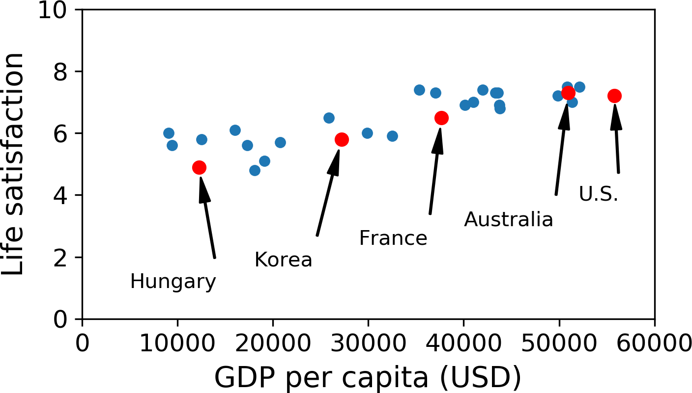
图1-17. 你看到趋势了吗？
这里确实存在一个趋势！尽管数据是有噪声的（即部分随机），但看起来生活满意度随着国家人均GDP的增加而或多或少呈线性上升。因此你决定将生活满意度建模为人均GDP的线性函数。这一步称为模型选择：你选择了一个仅使用一个属性（人均GDP）的生活满意度线性模型（方程1-1）。
方程1-1. 一个简单的线性模型
life_satisfaction = θ₀ + θ₁ × GDP_per_capita
这个模型有两个模型参数，θ₀和θ₁。通过调整这些参数，你可以让你的模型表示任何线性函数，如图1-18所示。
图1-18. 几种可能的线性模型
在使用你的模型之前，需要定义参数值θ₀和θ₁。你如何知道哪些值会让你的模型表现最佳？要回答这个问题，你需要指定一个性能度量。你可以定义一个效用函数（或适应度函数）来衡量你的模型有多好，或者定义一个代价函数来衡量它有多坏。对于线性回归问题，人们通常使用一个代价函数来衡量线性模型预测与训练样例之间的距离；目标是最小化这个距离。
这就是线性回归算法的用武之地：你向它提供训练样例，它找到使线性模型最佳拟合你的数据的参数。这称为训练模型。在我们的例子中，算法发现最优参数值是θ₀ = 4.85和θ₁ = 4.91 × 10⁻⁵。

令人困惑的是，同一个词”模型”可以指模型类型（如线性回归），完全指定的模型架构（如带有一个输入和一个输出的线性回归），或者准备用于预测的最终训练模型（如带有一个输入和一个输出，使用θ₀ = 4.85和θ₁ = 4.91 × 10⁻⁵的线性回归）。模型选择包括选择模型类型和完全指定其架构。训练模型意味着运行算法找到模型参数，使其最佳拟合训练数据（并希望对新数据做出良好预测）。
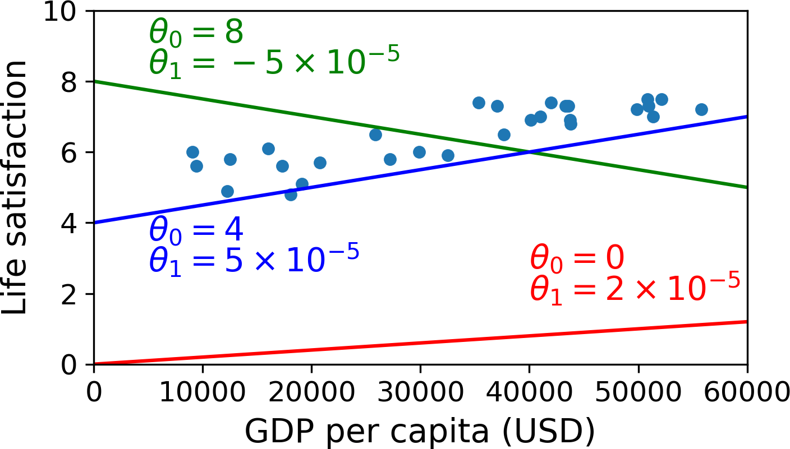
按照惯例，希腊字母θ（theta）经常用来表示模型参数。
现在模型尽可能紧密地拟合训练数据（对于线性模型），如图1-19所示。
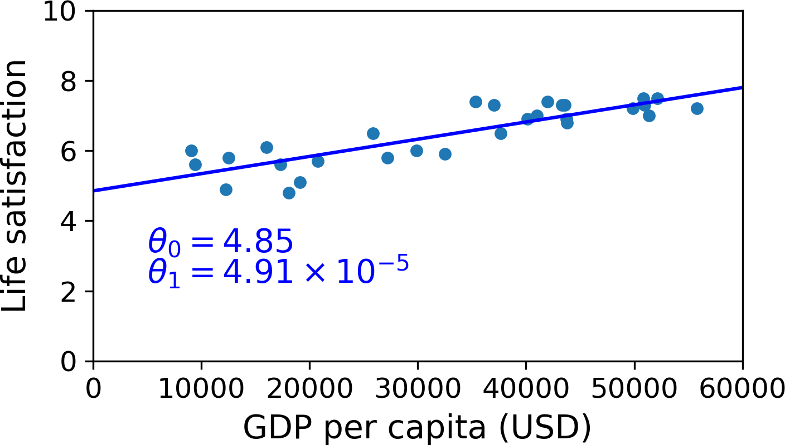
图1-19. 最佳拟合训练数据的线性模型
你终于准备好运行模型进行预测了。例如，假设你想知道塞浦路斯人有多快乐，而OECD数据没有答案。幸运的是，你可以使用你的模型进行良好预测：你查询塞浦路斯的人均GDP，发现是$22,587，然后应用你的模型，发现生活满意度可能在4.85 + 22,587 × 4.91 × 10⁻⁵ = 5.96左右。
为了激起你的兴趣，例1-1展示了加载数据、准备数据、创建散点图用于可视化，然后训练线性模型并进行预测的Python代码。
例1-1. 使用Scikit-Learn训练和运行线性模型
import matplotlib.pyplot as plt
import numpy as np
import pandas as pd
import sklearn.linear_model
# 加载数据
oecd_bli = pd.read_csv("oecd_bli_2015.csv", thousands=',')
gdp_per_capita = pd.read_csv("gdp_per_capita.csv", thousands=',', delimiter='\t',
encoding='latin1', na_values="n/a")prepare_country_stats()函数的定义在这里没有显示（如果你想要所有繁琐的细节，请参见本章的Jupyter notebook）。它只是无聊的pandas代码，将OECD的生活满意度数据与IMF的人均GDP数据连接起来。
如果你还不理解所有代码也没关系；我们将在后续章节中介绍Scikit-Learn。
# 准备数据
country_stats = prepare_country_stats(oecd_bli, gdp_per_capita)
X = np.c_[country_stats["GDP per capita"]]
y = np.c_[country_stats["Life satisfaction"]]
# 可视化数据
country_stats.plot(kind='scatter', x="GDP per capita", y='Life satisfaction')
plt.show()
# 选择线性模型
model = sklearn.linear_model.LinearRegression()
# 训练模型
model.fit(X, y)
# 为塞浦路斯进行预测
X_new = [[22587]] # 塞浦路斯的人均GDP
print(model.predict(X_new)) # 输出 [[ 5.96242338]]如果你使用基于实例的学习算法，你会发现斯洛文尼亚的人均GDP最接近塞浦路斯的人均GDP（$20,732），而由于OECD数据告诉我们斯洛文尼亚人的生活满意度是5.7，你会预测塞浦路斯的生活满意度为5.7。如果你稍微放大视野，看看接下来最接近的两个国家，你会发现葡萄牙和西班牙的生活满意度分别是5.1和6.5。将这三个值平均，你得到5.77，这与你基于模型的预测非常接近。这个简单的算法被称为k-最近邻回归（在这个例子中，k = 3）。

用k-最近邻回归替换之前代码中的线性回归模型就像替换这两行一样简单：
import sklearn.linear_model model = sklearn.linear_model.LinearRegression()
替换为这两行：
import sklearn.neighbors model = sklearn.neighbors.KNeighborsRegressor(n_neighbors=3)
如果一切顺利，你的模型将做出良好的预测。如果不行，你可能需要使用更多属性（就业率、健康状况、空气污染等），获取更多或更高质量的训练数据，或者选择一个更强大的模型（例如，多项式回归模型）。
22 | 第1章：机器学习概览
总结：
• 你研究了数据。
• 你选择了一个模型。
• 你在训练数据上训练它（即，学习算法搜索使成本函数最小化的模型参数值）。
• 最后，你应用模型对新案例进行预测（这被称为推理），希望这个模型能够很好地泛化。
这就是典型的机器学习项目的样子。在第2章中，你将通过完整地进行一个项目来亲身体验这一过程。
到目前为止我们已经涵盖了很多内容：你现在知道了机器学习真正是关于什么的，为什么它有用，ML系统最常见的一些类别是什么，以及典型的项目工作流程是什么样的。现在让我们看看学习中可能出现什么问题，阻止你做出准确的预测。
简而言之，由于你的主要任务是选择一个学习算法并在某些数据上训练它，可能出错的两件事是”坏算法”和”坏数据”。让我们从坏数据的例子开始。
对于一个蹒跚学步的孩子来学习什么是苹果，你只需要指着一个苹果说”苹果”（可能重复这个过程几次）。现在孩子就能够识别各种颜色和形状的苹果。天才。
机器学习还没有达到那种程度；大多数机器学习算法需要大量数据才能正常工作。即使对于非常简单的问题，你通常也需要数千个例子，对于复杂问题如图像或语音识别，你可能需要数百万个例子（除非你可以重用现有模型的部分）。
机器学习的主要挑战 | 23
在2001年发表的一篇著名论文中，Microsoft研究人员Michele Banko和Eric Brill表明，非常不同的机器学习算法，包括相当简单的算法，在给定足够数据后，在自然语言消歧的复杂问题上表现几乎相同（如你在图1-20中所见）。
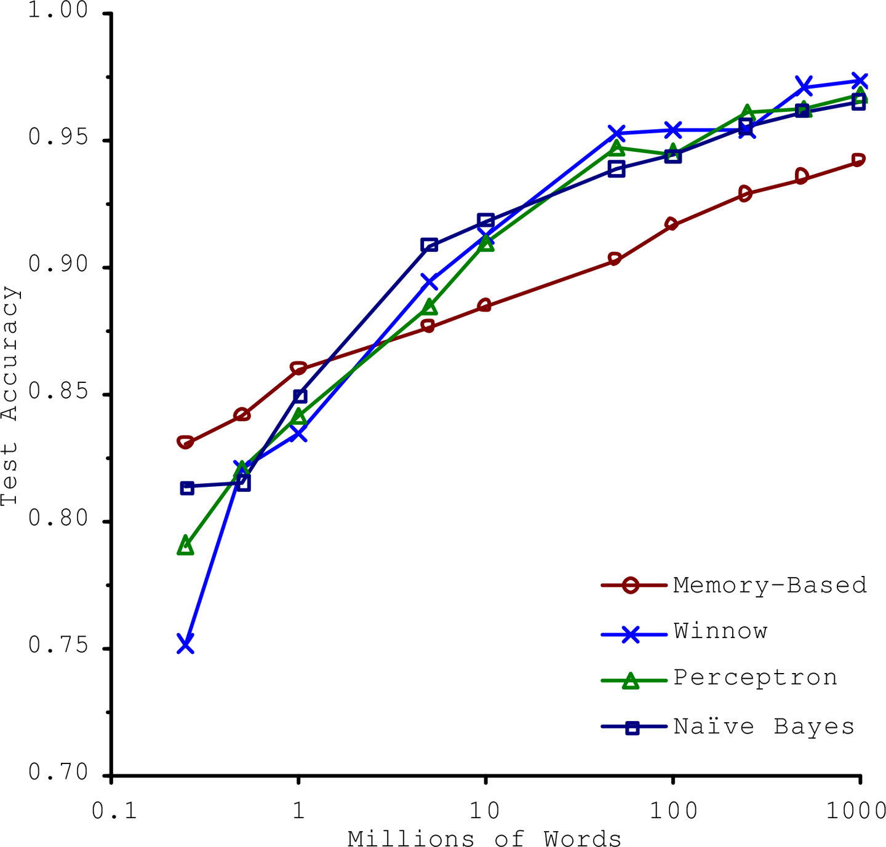
图1-20. 数据与算法的重要性
正如作者所说，“这些结果表明，我们可能需要重新考虑在算法开发上花费时间和金钱与在语料库开发上花费时间和金钱之间的权衡。”
对于复杂问题，数据比算法更重要的想法进一步被Peter Norvig等人在2009年发表的题为“数据的不合理效用”的论文中推广。不过应该注意的是，中小型数据集仍然非常常见，获得额外的训练数据并不总是容易或便宜的——所以不要抛弃算法。
8 例如，根据上下文知道写”to”、“two”还是”too”。
9 图片经Michele Banko和Eric Brill许可转载，来自”Scaling to Very Very Large Corpora for Natural Language Disambiguation”，第39届计算语言学协会年会论文集（2001）：26-33。
10 Peter Norvig等，“数据的不合理效用”，IEEE智能系统24，第2期（2009）：8-12。
24 | 第1章：机器学习概览
为了很好地泛化，你的训练数据必须代表你想要泛化到的新案例，这是至关重要的。无论你使用基于实例的学习还是基于模型的学习，这都是正确的。
例如，我们之前用于训练线性模型的国家集合并不完全具有代表性；缺少了一些国家。图1-21显示了当你添加缺失的国家时数据的样子。
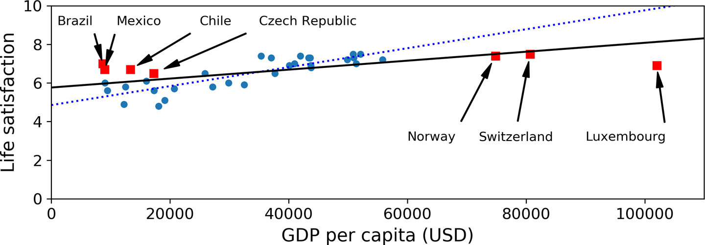
图1-21. 更具代表性的训练样本
如果你在这些数据上训练一个线性模型，你得到实线，而旧模型由虚线表示。如你所见，添加几个缺失的国家不仅显著改变了模型，而且清楚地表明这样一个简单的线性模型可能永远不会工作得很好。似乎非常富有的国家并不比适度富有的国家更快乐（事实上，他们似乎更不快乐），相反，一些贫穷的国家似乎比许多富裕国家更快乐。
通过使用不具代表性的训练集，我们训练出了一个不太可能做出准确预测的模型，特别是对于非常贫穷和非常富有的国家。
使用能够代表你想要泛化的案例的训练集是至关重要的。这往往比听起来更困难：如果样本太小，你会遇到采样噪声(sampling noise)（即由于偶然性导致的不具代表性的数据），但即使是非常大的样本，如果采样方法有缺陷，也可能不具代表性。这被称为采样偏差(sampling bias)。
也许最著名的采样偏差例子发生在1936年美国总统选举期间，兰登对阵罗斯福：Literary Digest进行了一次非常大规模的民意调查，向大约1000万人发送邮件。它获得了240万份回复，并高度自信地预测兰登将获得57%的选票。然而，罗斯福以62%的选票获胜。缺陷在于Literary Digest的采样方法：
• 首先，为了获得发送民意调查的地址，Literary Digest使用了电话簿、杂志订阅者名单、俱乐部会员名单等。所有这些名单都倾向于偏爱更富有的人，他们更可能投票给共和党（因此是兰登）。
• 其次，不到25%的被调查者回复了。这再次引入了采样偏差，潜在地排除了那些不太关心政治的人、不喜欢Literary Digest的人和其他关键群体。这是一种称为无回应偏差(nonresponse bias)的特殊类型的采样偏差。
这里是另一个例子：假设你想建立一个识别放克音乐视频的系统。构建训练集的一种方法是在YouTube上搜索”funk music”并使用结果视频。但这假设YouTube的搜索引擎返回的视频集合能够代表YouTube上所有的放克音乐视频。实际上，搜索结果很可能偏向于流行艺人（如果你住在巴西，你会得到很多”funk carioca”视频，听起来与James Brown完全不同）。另一方面，你还能如何获得大型训练集呢？
显然，如果你的训练数据充满错误、异常值和噪声（例如，由于测量质量差），会使系统更难检测潜在模式，因此系统不太可能表现良好。花时间清理训练数据通常是值得的。事实上，大多数数据科学家花费大量时间做这件事。以下是一些需要清理训练数据的例子：
• 如果某些实例明显是异常值，简单地丢弃它们或尝试手动修复错误可能会有帮助。
• 如果某些实例缺少一些特征（例如，5%的客户没有指定他们的年龄），你必须决定是否要完全忽略这个属性，忽略这些实例，填入缺失值（例如，用年龄中位数），或者训练一个包含该特征的模型和一个不包含该特征的模型。
俗话说：垃圾进，垃圾出。只有当训练数据包含足够的相关特征且不相关特征不太多时，你的系统才能够学习。机器学习项目成功的关键部分是想出一套好的特征来训练。这个过程被称为特征工程(feature engineering)，涉及以下步骤：
• 特征选择(Feature selection)（在现有特征中选择最有用的特征来训练）
• 特征提取(Feature extraction)（组合现有特征以产生更有用的特征——正如我们之前看到的，降维算法可以提供帮助）
• 通过收集新数据创建新特征
现在我们已经看了许多坏数据的例子，让我们看几个坏算法的例子。
假设你正在访问一个外国，出租车司机敲诈了你。你可能会倾向于说那个国家的所有出租车司机都是小偷。过度泛化是我们人类经常做的事情，不幸的是，如果我们不小心，机器也会落入同样的陷阱。在机器学习中这被称为过拟合(overfitting)：它意味着模型在训练数据上表现良好，但不能很好地泛化。
图1-22展示了一个高次多项式生活满意度模型的例子，该模型严重过拟合了训练数据。即使它在训练数据上的表现比简单线性模型好得多，你真的会相信它的预测吗？
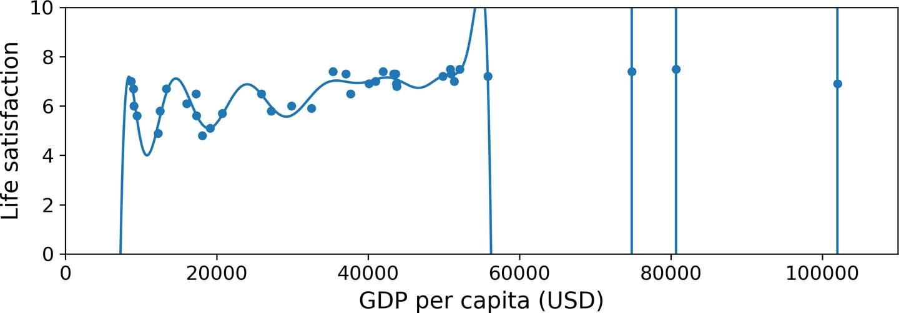
图1-22. 训练数据过拟合
深度神经网络等复杂模型可以检测数据中的细微模式，但如果训练集有噪声，或者太小（引入采样噪声），那么模型很可能检测噪声本身的模式。显然，这些模式不会泛化到新实例。例如，假设你给生活满意度模型提供更多属性，包括无信息的属性如国家名称。在这种情况下，复杂模型可能检测到这样的模式：训练数据中所有名称中带有w的国家的生活满意度都大于7：新西兰（7.3）、挪威（7.4）、瑞典（7.2）和瑞士（7.5）。你有多自信w-满意度规则能够泛化到卢旺达或津巴布韦？显然，这种模式在训练数据中纯属偶然出现，但模型无法分辨一个模式是真实的还是仅仅是数据中噪声的结果。
当模型相对于训练数据的数量和噪声水平过于复杂时，就会发生过拟合。以下是可能的解决方案：

• 通过选择参数较少的模型来简化模型（例如，使用线性模型而不是高次多项式模型），通过减少训练数据中的属性数量，或者通过约束模型。
• 收集更多训练数据。
• 减少训练数据中的噪声（例如，修复数据错误并移除异常值）。
约束模型以使其更简单并降低过拟合风险的做法称为正则化。例如，我们之前定义的线性模型有两个参数，θ[0] 和 θ[1]。这给学习算法提供了两个自由度来使模型适应训练数据：它可以同时调整直线的高度（θ[0]）和斜率（θ[1]）。如果我们强制 θ[1] = 0，算法就只有一个自由度，很难正确拟合数据：它只能上下移动直线以尽可能接近训练实例，所以最终会在平均值附近。这确实是一个非常简单的模型！如果我们允许算法修改 θ[1] 但强制它保持较小值，那么学习算法实际上会拥有介于一到两个自由度之间的某个程度。它将产生一个比两个自由度更简单但比一个自由度更复杂的模型。你需要在完美拟合训练数据和保持模型足够简单以确保良好泛化之间找到合适的平衡。
图1-23显示了三个模型。虚线代表在以圆圈表示的国家上训练的原始模型（不包括以方块表示的国家），虚线是在所有国家（圆圈和方块）上训练的第二个模型，实线是在与第一个模型相同的数据上训练但带有正则化约束的模型。你可以看到正则化强制模型具有更小的斜率：该模型不如第一个模型那样很好地拟合训练数据（圆圈），但实际上对训练期间未见过的新样本（方块）泛化得更好。
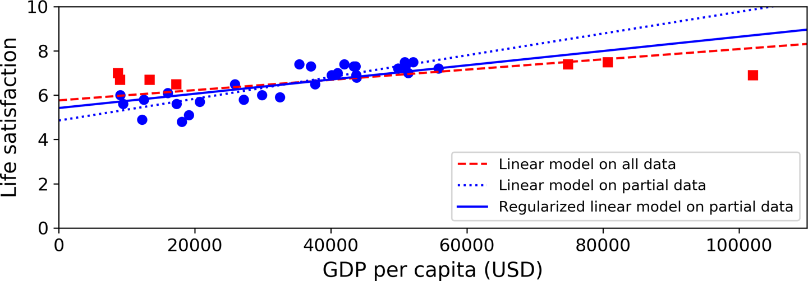
图1-23. 正则化降低过拟合风险
学习期间应用的正则化量可以通过超参数控制。超参数是学习算法的参数（不是模型的参数）。因此，它不受学习算法本身影响；必须在训练前设置并在训练期间保持不变。如果你将正则化超参数设置为非常大的值，你将得到一个几乎平坦的模型（斜率接近零）；学习算法几乎肯定不会过拟合训练数据，但找到好解决方案的可能性也会降低。调整超参数是构建机器学习系统的重要部分（你将在下一章看到详细示例）。
如你所想，欠拟合与过拟合相反：当你的模型太简单而无法学习数据的潜在结构时就会发生。例如，生活满意度的线性模型容易欠拟合；现实比模型更复杂，所以其预测必然不准确，即使在训练样本上也是如此。
解决这个问题的主要选项包括：
• 选择更强大的模型，使用更多参数。
• 向学习算法提供更好的特征（特征工程）。
• 减少对模型的约束（例如，减少正则化超参数）。
到现在你已经了解了很多关于机器学习的知识。然而，我们涉及了这么多概念，你可能感到有些迷失，所以让我们退一步看看大局：
• 机器学习是让机器通过从数据中学习而不是明确编码规则来在某项任务上变得更好。
• 有许多不同类型的ML系统：有监督或无监督的，批处理或在线的，基于实例或基于模型的。
• 在ML项目中，你在训练集中收集数据，然后将训练集提供给学习算法。如果算法是基于模型的，它会调整一些参数以使模型拟合训练集（即在训练集本身上做出好的预测），然后希望它也能在新情况下做出好的预测。如果算法是基于实例的，它只是记住样本并通过使用相似性度量将新实例与学习到的实例进行比较来泛化到新实例。
• 如果训练集太小，或者数据不具代表性、有噪声或被不相关特征污染（垃圾进，垃圾出），系统将表现不佳。最后，你的模型既不能太简单（这种情况下会欠拟合）也不能太复杂（这种情况下会过拟合）。
还有最后一个重要话题要讨论：一旦你训练了一个模型，你不想只是”希望”它能泛化到新情况。你想要评估它，必要时对其进行微调。让我们看看如何做到这一点。
了解模型在新情况下泛化能力的唯一方法是在新情况下实际尝试它。一种方法是将模型投入生产并监控其表现如何。这很有效，但如果你的模型非常糟糕，你的用户会抱怨——这不是最好的想法。
更好的选择是将数据分为两个集合：训练集和测试集。顾名思义，你使用训练集训练模型，使用测试集测试模型。新案例的错误率称为泛化错误（或样本外错误），通过在测试集上评估模型，你可以得到该错误的估计值。这个值告诉你模型在从未见过的实例上表现如何。
如果训练错误很低（即模型在训练集上出错很少）但泛化错误很高，这意味着你的模型过拟合了训练数据。
30 | 第1章：Machine Learning全景

通常使用80%的数据进行训练，保留20%用于测试。然而，这取决于数据集的大小：如果包含1000万个实例，那么保留1%意味着测试集将包含100,000个实例，可能足以很好地估计泛化错误。
评估模型很简单：只需使用测试集。但假设你在两种模型之间犹豫（比如线性模型和多项式模型）：你如何在它们之间做决定？一个选择是训练两者并使用测试集比较它们的泛化表现。
现在假设线性模型泛化更好，但你想应用一些正则化来避免过拟合。问题是，你如何选择正则化超参数的值？一个选择是使用该超参数的100个不同值训练100个不同的模型。假设你找到了产生泛化错误最低模型的最佳超参数值——比如只有5%的错误。你将此模型投入生产，但不幸的是它表现不如预期，产生15%的错误。刚才发生了什么？
问题是你在测试集上多次测量泛化错误，并调整模型和超参数以产生对那个特定集合最佳的模型。这意味着模型在新数据上不太可能表现得同样好。
这个问题的常见解决方案称为holdout验证：你简单地保留训练集的一部分来评估几个候选模型并选择最佳的一个。新的保留集称为验证集（有时称为开发集或dev集）。更具体地说，你在减少的训练集上（即完整训练集减去验证集）使用各种超参数训练多个模型，然后选择在验证集上表现最佳的模型。在这个holdout验证过程后，你在完整训练集上（包括验证集）训练最佳模型，这给你最终模型。最后，你在测试集上评估这个最终模型以获得泛化错误的估计。
这个解决方案通常工作得很好。然而，如果验证集太小，那么模型评估将不精确：你可能最终错误地选择次优模型。相反，如果验证集太大，那么剩余的训练集将比完整训练集小得多。为什么这不好？因为最终模型将在完整训练集上训练，将在小得多的训练集上训练的候选模型进行比较并不理想。这就像选择最快的短跑运动员参加马拉松。解决这个问题的一种方法是执行重复交叉验证，使用许多小验证集。每个模型在其余数据上训练后，每个验证集评估一次。通过平均模型的所有评估，你可以获得其性能的更准确度量。然而，有一个缺点：训练时间乘以验证集的数量。
测试和验证 | 31
在某些情况下，获取大量训练数据很容易，但这些数据可能无法完美代表生产环境中使用的数据。例如，假设你想创建一个移动应用程序来拍摄花朵照片并自动识别其种类。你可以轻松从网上下载数百万张花朵图片，但它们无法完美代表实际使用移动设备应用程序拍摄的照片。也许你只有10,000张代表性图片（即实际使用应用程序拍摄的）。在这种情况下，最重要的记住的规则是验证集和测试集必须尽可能代表你期望在生产中使用的数据，所以它们应该完全由代表性图片组成：你可以打乱它们，一半放入验证集，一半放入测试集（确保没有重复或近似重复的内容同时出现在两个集合中）。但是在网络图片上训练模型后，如果你观察到模型在验证集上的性能令人失望，你将不知道这是因为你的模型过度拟合了训练集，还是仅仅由于网络图片和移动应用程序图片之间的不匹配。一个解决方案是从训练图片（来自网络）中保留一些到另一个集合中，Andrew Ng称之为训练开发集。模型训练后（在训练集上，不是在训练开发集上），你可以在训练开发集上评估它。如果表现良好，那么模型没有过度拟合训练集。如果在验证集上表现不佳，问题必须来自数据不匹配。你可以尝试通过预处理网络图像使它们看起来更像移动应用程序拍摄的图片来解决这个问题，然后重新训练模型。相反，如果模型在训练开发集上表现不佳，那么它必定过度拟合了训练集，所以你应该尝试简化或正则化模型，获取更多训练数据，并清理训练数据。
模型是观察结果的简化版本。简化的目的是丢弃不太可能泛化到新实例的多余细节。要决定丢弃什么数据和保留什么数据，你必须做出假设。例如，线性模型假设数据本质上是线性的，实例与直线之间的距离只是噪声，可以安全地忽略。
在一篇著名的1996年论文中，David Wolpert证明了如果你对数据绝对不做任何假设，那么就没有理由偏好一个模型而不是任何其他模型。这被称为没有免费午餐（NFL）定理。对于某些数据集，最好的模型是线性模型，而对于其他数据集，它是神经网络。没有模型先验地保证工作得更好（因此得名）。确定哪个模型最好的唯一方法是评估所有模型。由于这是不可能的，在实践中你对数据做出一些合理的假设，并只评估几个合理的模型。例如，对于简单任务，你可能评估具有各种正则化水平的线性模型，对于复杂问题，你可能评估各种神经网络。
在本章中，我们介绍了机器学习中一些最重要的概念。在接下来的章节中，我们将深入探讨并编写更多代码，但在此之前，请确保你知道如何回答以下问题：
你如何定义机器学习？
你能说出四种它擅长的问题类型吗？
什么是标记训练集？
最常见的两个监督任务是什么？
你能说出四个常见的无监督任务吗？
你会使用什么类型的机器学习算法来让机器人在各种未知地形中行走？
你会使用什么类型的算法将客户分割成多个群体？
你会将垃圾邮件检测问题设定为监督学习问题还是无监督学习问题？
什么是在线学习系统？
什么是离线核心学习？
什么类型的学习算法依赖相似性度量来做出预测？
模型参数和学习算法的超参数之间有什么区别？
基于模型的学习算法寻找什么？它们成功使用的最常见策略是什么？它们如何做出预测？
你能说出机器学习中的四个主要挑战吗？
如果你的模型在训练数据上表现很好但对新实例泛化能力差，发生了什么？你能说出三种可能的解决方案吗？
什么是测试集，为什么要使用它？
验证集的目的是什么？
什么是训练开发集，什么时候需要它，如何使用它？
如果你使用测试集调整超参数会出现什么问题？
这些练习的解答可在附录A中找到。
在本章中，你将完整地完成一个示例项目，假装是房地产公司新聘用的数据科学家。以下是你将经历的主要步骤：
看大局。
获取数据。
发现和可视化数据以获得见解。
4. 为机器学习算法准备数据。
5. 选择一个模型并训练它。
6. 微调你的模型。
7. 展示你的解决方案。
8. 启动、监控和维护你的系统。
处理真实数据
当你学习机器学习时，最好使用真实世界的数据进行实验，而不是人工数据集。幸运的是，有数千个开放数据集可供选择，涵盖各种领域。以下是一些获取数据的地方：
• 热门开放数据存储库
• 元门户（它们列出开放数据存储库）
— 数据门户
— Quandl
• 其他列出许多热门开放数据存储库的页面
在本章中，我们将使用来自StatLib存储库的California Housing Prices数据集（见图2-1）。该数据集基于1990年加利福尼亚人口普查数据。虽然不是很新的数据（当时湾区的好房子还是负担得起的），但它具有许多学习特质，所以我们假装它是最新数据。出于教学目的，我添加了一个分类属性并删除了一些特征。
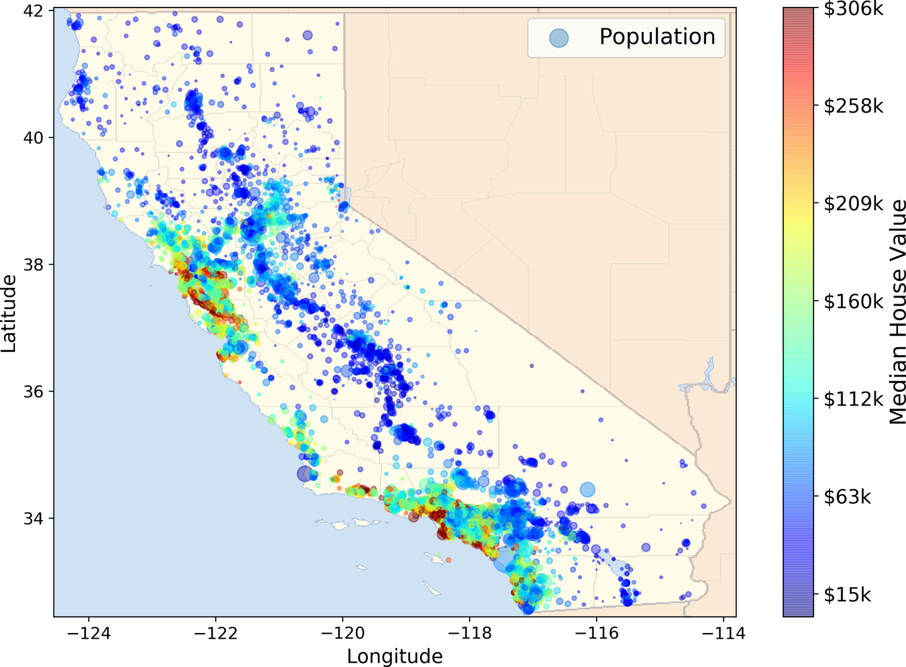
图2-1. 加利福尼亚住房价格
欢迎来到机器学习住房公司！你的第一个任务是使用加利福尼亚人口普查数据建立该州住房价格模型。这些数据包括加利福尼亚每个区块组的人口、收入中位数和住房价格中位数等指标。区块组是美国人口普查局发布样本数据的最小地理单位（一个区块组通常有600到3,000人）。我们简称为”地区”。
你的模型应该从这些数据中学习，并能够在给定所有其他指标的情况下，预测任何地区的住房价格中位数。

既然你是一个组织良好的数据科学家，你首先应该做的是拿出你的机器学习项目清单。你可以从附录B中的清单开始；它应该适用于大多数机器学习项目，但要确保根据你的需要进行调整。在本章中，我们将完成许多清单项目，但也会跳过一些，要么因为它们是不言自明的，要么因为它们将在后面的章节中讨论。
你应该问老板的第一个问题是确切的业务目标是什么。建立模型可能不是最终目标。公司期望如何使用这个模型并从中受益？了解目标很重要，因为它将决定你如何定义问题、选择哪些算法、使用什么性能指标来评估模型，以及花费多少精力来调整它。
你的老板回答说，你的模型输出（对地区住房价格中位数的预测）将与许多其他信号一起输入到另一个机器学习系统中（见图2-2）。这个下游系统将决定是否值得在给定区域投资。做对这一点至关重要，因为它直接影响收入。
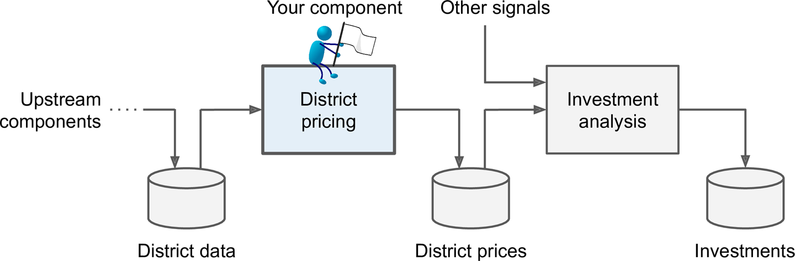
图2-2. 房地产投资的机器学习pipeline
Pipeline
数据处理组件的序列称为数据pipeline。Pipeline在机器学习系统中非常常见，因为有大量数据需要处理和许多数据转换需要应用。
组件通常异步运行。每个组件拉取大量数据，处理它，并将结果输出到另一个数据存储中。然后，一段时间后，pipeline中的下一个组件拉取这些数据并输出自己的结果。每个组件都相当独立：组件之间的接口就是数据存储。这使得系统易于理解（在数据流图的帮助下），不同的团队可以专注于不同的组件。此外，如果一个组件出现故障，下游组件通常可以通过使用故障组件的最后输出来继续正常运行（至少一段时间）。这使得架构相当稳健。
另一方面，如果没有实施适当的监控，故障组件可能在一段时间内不被注意到。数据变陈旧，整个系统的性能下降。
下一个要向老板询问的问题是当前解决方案是什么样的（如果有的话）。当前情况通常会为你提供性能参考，以及如何解决问题的见解。你的老板回答说，目前区域住房价格是由专家手动估算的：一个团队收集关于区域的最新信息，当他们无法获得住房价格中位数时，他们使用复杂的规则来估算它。
这既昂贵又耗时，而且他们的估算结果不太好；在他们设法找出实际住房价格中位数的情况下，他们经常意识到他们的估算偏差超过了20%。这就是为什么公司认为，根据区域的其他数据来训练一个模型预测区域住房价格中位数会很有用。人口普查数据看起来是一个很好的数据集，可以用于此目的，因为它包括数千个区域的住房价格中位数，以及其他数据。
有了所有这些信息，你现在准备开始设计你的系统。首先，你需要框定问题：这是监督学习、无监督学习还是强化学习？这是分类任务、回归任务还是其他任务？你应该使用批处理学习还是在线学习技术？在你继续阅读之前，暂停一下，尝试为自己回答这些问题。
你找到答案了吗？让我们看看：这显然是一个典型的监督学习任务，因为你得到了带标签的训练样本（每个实例都带有预期输出，即区域的住房价格中位数）。这也是一个典型的回归任务，因为你被要求预测一个值。更具体地说，这是一个多元回归问题，因为系统将使用多个特征来进行预测（它将使用区域的人口、收入中位数等）。这也是一个单变量回归问题，因为我们只是尝试为每个区域预测一个单一值。如果我们试图为每个区域预测多个值，那将是一个多变量回归问题。最后，没有连续的数据流进入系统，没有特别需要快速适应变化数据的需求，并且数据足够小可以放入内存中，所以普通的批处理学习就足够了。

如果数据很庞大，你可以将批处理学习工作分布到多个服务器上（使用MapReduce技术）或使用在线学习技术。
你的下一步是选择性能度量。回归问题的典型性能度量是均方根误差(RMSE)。它给出了系统在其预测中通常产生多少误差的概念，对大误差给予更高的权重。方程2-1显示了计算RMSE的数学公式。
方程2-1. 均方根误差(RMSE)
RMSE(X,h) = √(1/m ∑(i=1 to m) (h(x(i)) - y(i))²)
这个方程引入了几个非常常见的机器学习符号，我们将在本书中使用：
• m 是你正在测量RMSE的数据集中的实例数量。 — 例如，如果你在一个包含2,000个区域的验证集上评估RMSE，那么 m = 2,000。
• x(i) 是数据集中第i个实例的所有特征值（不包括标签）的向量，y(i) 是其标签（该实例的期望输出值）。 — 例如，如果数据集中的第一个区域位于经度-118.29°、纬度33.91°，有1,416名居民，收入中位数为$38,372，住房价值中位数为$156,400（暂时忽略其他特征），那么：
x(1) = [-118.29, 33.91, 1,416, 38,372]
和：
y(1) = 156,400
• X 是包含数据集中所有实例的所有特征值（不包括标签）的矩阵。每行一个实例，第i行等于x(i)的转置，记为(x(i))⊺。 — 例如，如果第一个区域如刚才描述的那样，那么矩阵X看起来像这样：
X = [(x(1))⊺, (x(2))⊺, ⋮, (x(1999))⊺, (x(2000))⊺] = [-118.29 33.91 1,416 38,372, ⋮, ⋮, ⋮, ⋮]
*注：转置操作符将列向量翻转为行向量（反之亦然）。
• h 是你系统的预测函数，也称为假设(hypothesis)。当你的系统给定一个实例的特征向量x(i)时，它为该实例输出预测值ŷ(i) = h(x(i))（ŷ读作”y-hat”）。 — 例如，如果你的系统预测第一个区域的住房价格中位数为$158,400，那么ŷ(1) = h(x(1)) = 158,400。该区域的预测误差为ŷ(1) - y(1) = 2,000。
• RMSE(X,h) 是使用你的假设h在样本集上测量的成本函数。
我们使用小写斜体字体表示标量值（如m或y(i)）和函数名（如h），小写粗体字体表示向量（如x(i)），大写粗体字体表示矩阵（如X）。
尽管RMSE通常是回归任务首选的性能度量，但在某些情况下你可能更喜欢使用另一个函数。例如，假设有许多异常值区域。在这种情况下，你可能考虑使用平均值
绝对误差 (MAE，也称为平均绝对偏差；见公式 2-2):
公式 2-2. 平均绝对误差 (MAE)
[MAE X,] [h] [= 1] [∑] [m] [m] [h] [i] [i] [x] [−] [y] [i] [= 1]
RMSE 和 MAE 都是测量两个向量之间距离的方法：预测向量和目标值向量。可以使用各种距离度量或范数：
• 计算平方和的根（RMSE）对应于欧几里得范数：这是你熟悉的距离概念。它也被称为 ℓ [2] 范数，记作 ∥ · ∥ [2]（或简写为 ∥ · ∥）。
• 计算绝对值的和（MAE）对应于 ℓ[1] 范数，记作 ∥ · ∥[1]。这有时被称为曼哈顿范数，因为它测量的是在城市中两点之间的距离，如果你只能沿着正交的城市街区行进。
• 更一般地，包含 n 个元素的向量 v 的 ℓ[k] 范数 定义为 ∥v∥[k] [k] = (| v [0] | + | v [1] | [k] + ... + | v [n] | [k] ) [1/] [k]。ℓ [0] 给出向量中非零元素的数量，ℓ [∞] 给出向量中的最大绝对值。
• 范数指数越高，越关注大值而忽略小值。这就是为什么 RMSE 比 MAE 对异常值更敏感。但当异常值呈指数稀少（如钟形曲线）时，RMSE 表现非常好，通常是首选。
最后，列出并验证到目前为止所做的假设（由你或其他人）是一个好习惯；这可以帮助你及早发现严重问题。例如，你的系统输出的区域价格将被输入到下游的 Machine Learning 系统中，你假设这些价格将按原样使用。但如果下游系统将价格转换为类别（例如”便宜”、“中等”或”昂贵”），然后使用这些类别而不是价格本身呢？在这种情况下，准确获得价格根本不重要；你的系统只需要正确分类。如果是这样，那么问题应该被构建为分类任务，而不是回归任务。你不想在做了几个月的回归系统后才发现这一点。
幸运的是，在与负责下游系统的团队交谈后，你确信他们确实需要实际价格，而不仅仅是类别。太好了！你已经准备就绪，绿灯亮起，现在可以开始编码了！
是时候亲自动手了。不要犹豫，拿起你的笔记本电脑，在 Jupyter notebook 中跟随以下代码示例。完整的 Jupyter notebook 可在 https://github.com/ageron/handson-ml2 获取。
首先你需要安装 Python。它可能已经安装在你的系统上。如果没有，你可以在 https://www.python.org/ 获取。
接下来你需要为 Machine Learning 代码和数据集创建一个工作空间目录。打开终端并输入以下命令（在 [$] 提示符后）：
[$ export ML_PATH="$HOME/ml" # 如果你愿意，可以更改路径]
[$ mkdir -p $ML_PATH]
你需要许多 Python 模块：Jupyter、NumPy、pandas、Matplotlib 和 Scikit-Learn。如果你已经运行了 Jupyter 并安装了所有这些模块，你可以安全地跳到第 46 页的”下载数据”。如果你还没有它们，有很多安装方法（及其依赖项）。你可以使用系统的包管理系统（例如 Ubuntu 上的 apt-get，或 macOS 上的 MacPorts 或 Homebrew），安装科学 Python 发行版如 Anaconda 并使用其包管理系统，或者只使用 Python 自己的包管理系统 pip，它默认包含在 Python 二进制安装程序中（从 Python 2.7.9 开始）。你可以通过输入以下命令来检查是否安装了 pip：
[$ python3 -m pip --version]
[pip 19.3.1 from [...]/lib/python3.7/site-packages/pip (python 3.7)]
你应该确保安装了最新版本的 pip。要升级 pip 模块，输入以下命令（确切版本可能不同）：
[$ python3 -m pip install --user -U pip]
[Collecting pip]
[[...]]
[Successfully installed pip-19.3.1]
如果你想在隔离环境中工作（强烈推荐，这样你就可以在不同项目上工作而不会有冲突的库版本），通过运行以下 pip 命令安装 virtualenv（同样，如果你想为机器上的所有用户安装 virtualenv，移除 --user 并以管理员权限运行此命令）：
[$ python3 -m pip install --user -U virtualenv]
[Collecting virtualenv]
[[...]]
[Successfully installed virtualenv-16.7.6]
现在你可以通过输入以下命令创建一个隔离的 Python 环境：
[$ cd $ML_PATH]
[$ python3 -m virtualenv my_env]
[Using base prefix '[...]']
[New python executable in [...]/ml/my_env/bin/python3]
[Also creating executable in [...]/ml/my_env/bin/python] [Installing setuptools, pip, wheel...done.]
现在每次你想激活这个环境时，只需打开终端并输入以下命令：
[7]
如果你想为机器上的所有用户升级pip而不仅仅是你自己的用户，你应该移除--user选项并确保你有管理员权限（例如，在Linux或macOS上在整个命令前添加sudo）。
[8]
替代工具包括venv（与virtualenv非常相似且包含在标准库中）、virtualenvwrapper（在virtualenv基础上提供额外功能）、pyenv（允许轻松切换Python版本）和pipenv（由流行的requests库同一作者开发的优秀打包工具，构建在pip和virtualenv之上）。
获取数据 | 43
$ cd $ML_PATH $ source my_env/bin/activate
# 在Linux或macOS上 $ .\\my_env\\Scripts\\activate #
在Windows上
要停用此环境，请输入deactivate。当环境处于活动状态时，使用pip安装的任何包都会安装在这个隔离环境中，Python只能访问这些包（如果你也想访问系统包，你应该使用virtualenv的--system-site-packages选项创建环境）。查看virtualenv的文档了解更多信息。
现在你可以使用这个简单的pip命令安装所有必需的模块及其依赖项（如果你没有使用virtualenv，你需要--user选项或管理员权限）：
$ python3 -m pip install -U jupyter matplotlib numpy pandas scipy scikit-learn
Collecting jupyter
Downloading https://[...]/jupyter-1.0.0-py2.py3-none-any.whl
Collecting matplotlib [...]
如果你创建了virtualenv，你需要将其注册到Jupyter并给它命名：
$ python3 -m ipykernel install --user --name=python3
现在你可以通过输入以下命令启动Jupyter：
$ jupyter notebook
[...] Serving notebooks from local directory: [...]/ml
[...] The Jupyter Notebook is running at:
[...] http://localhost:8888/?token=60995e108e44ac8d8865a[...]
[...] or http://127.0.0.1:8889/?token=60995e108e44ac8d8865a[...]
[...] Use Control-C to stop this server and shut down all kernels [...]
Jupyter服务器现在在你的终端中运行，监听端口8888。你可以通过在网页浏览器中打开http://localhost:8888/来访问此服务器（通常在服务器启动时会自动发生）。你应该看到你的空工作目录（如果你遵循了前面的virtualenv说明，只包含env目录）。
现在通过点击New按钮并选择适当的Python版本（见图2-3）来创建一个新的Python notebook。这样做会在你的工作区创建一个名为Untitled.ipynb的新notebook文件，启动一个Jupyter Python内核来运行notebook，并在新标签页中打开此notebook。你应该首先通过点击Untitled并输入新名称将此notebook重命名为”Housing”（这将自动将文件重命名为Housing.ipynb）。
[9] 注意Jupyter可以处理多个Python版本，甚至许多其他语言如R或Octave。
44 | 第2章：端到端机器学习项目
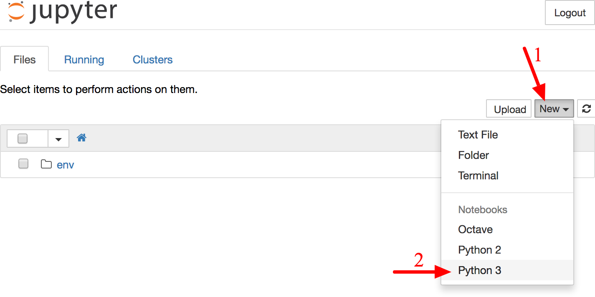
图2-3. 你在Jupyter中的工作区
notebook包含一系列单元格。每个单元格可以包含可执行代码或格式化文本。现在notebook只包含一个标记为”In
[1]:“的空代码单元格。尝试在单元格中输入print("Hello world!")并点击播放按钮（见图2-4）或按Shift-Enter。这会将当前单元格发送到此notebook的Python内核，内核运行它并返回输出。结果显示在单元格下方，由于你已到达notebook末尾，会自动创建一个新单元格。通过Jupyter帮助菜单中的用户界面导览来学习基础知识。
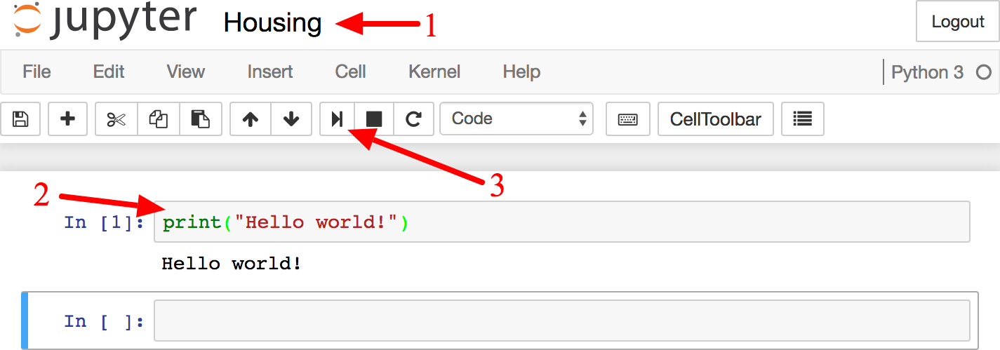
图2-4. Hello world Python notebook
获取数据 | 45
在典型环境中，你的数据会存储在关系数据库（或其他常见数据存储）中，并分布在多个表/文档/文件中。要访问它，你首先需要获得凭据和访问授权，并熟悉数据模式。然而，在这个项目中，事情要简单得多：你只需下载一个压缩文件housing.tgz，其中包含一个名为housing.csv的逗号分隔值(CSV)文件，包含所有数据。
你可以使用网页浏览器下载文件并运行tar xzf housing.tgz来解压并提取CSV文件，但最好创建一个小函数来完成这项工作。拥有一个下载数据的函数特别有用，如果数据定期变化：你可以编写一个使用该函数获取最新数据的小脚本（或者你可以设置一个定时任务定期自动执行）。如果你需要在多台机器上安装数据集，自动化获取数据的过程也很有用。
以下是获取数据的函数：
import os
import tarfile
import urllib
DOWNLOAD_ROOT = "https://raw.githubusercontent.com/ageron/handson-ml2/master/"
HOUSING_PATH = os.path.join("datasets", "housing")
HOUSING_URL = DOWNLOAD_ROOT + "datasets/housing/housing.tgz"
def fetch_housing_data(housing_url=HOUSING_URL, housing_path=HOUSING_PATH):
os.makedirs(housing_path, exist_ok=True)
tgz_path = os.path.join(housing_path, "housing.tgz")
urllib.request.urlretrieve(housing_url, tgz_path)
housing_tgz = tarfile.open(tgz_path)
housing_tgz.extractall(path=housing_path)
housing_tgz.close()现在当你调用 [fetch_housing_data()] 时，它会在你的工作空间中创建一个 datasets/housing 目录，下载 housing.tgz 文件，并在该目录中从中提取 housing.csv 文件。
[10] [你可能还需要检查法律约束，比如不应复制到不安全数据存储的私有字段。]
[11] [在真实项目中，你应该将此代码保存在 Python 文件中，但现在你可以将其写在 Jupyter notebook 中。]
46 | 第2章：端到端机器学习项目 现在让我们使用 pandas 加载数据。再一次，你应该编写一个小函数来加载数据：
[import] [pandas] [as] [pd]
[def] [load_housing_data][(][housing_path][=][HOUSING_PATH][):]
[csv_path] [=] [os][.][path][.][join][(][housing_path][, ]["housing.csv"][)] [return] [pd][.][read_csv][(][csv_path][)]
这个函数返回一个包含所有数据的 pandas DataFrame 对象。
让我们使用 DataFrame 的 [head()] 方法查看前五行（见图2-5）。
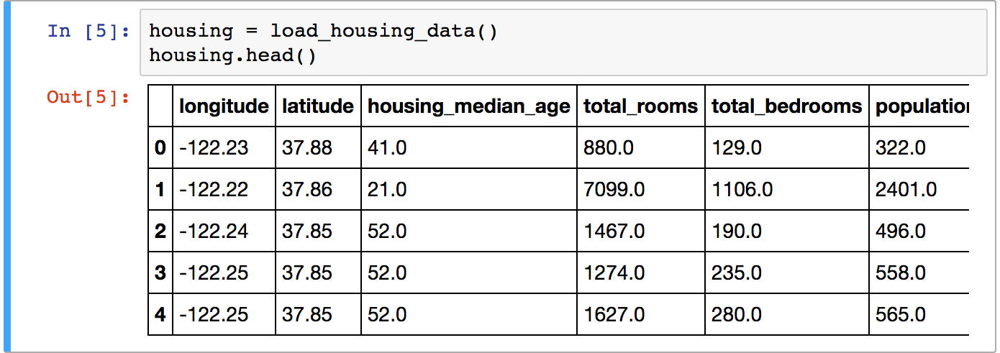
图2-5. 数据集中的前五行
每一行代表一个区域。有10个属性（你可以在截图中看到前6个）：[longitude]、[latitude]、[housing_median_age]、[total_rooms]、[total_bed] [rooms]、[population]、[households]、[median_income]、[median_house_value] 和 [ocean_proximity]。
[info()] 方法对于快速获取数据描述很有用，特别是总行数、每个属性的类型和非空值的数量（见图2-6）。
获取数据 | 47
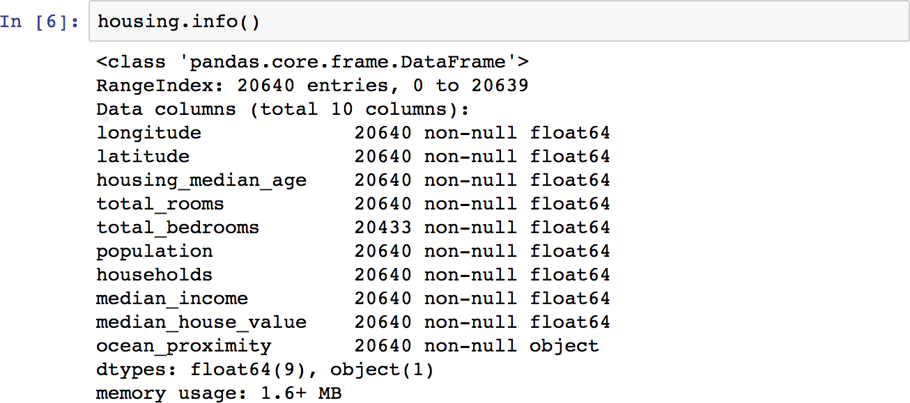
图2-6. 房屋信息
数据集中有20,640个实例，这意味着按机器学习标准来说它相当小，但用来入门是完美的。注意 [total_bed] [rooms] 属性只有20,433个非空值，意味着207个区域缺少这个特征。我们稍后需要处理这个问题。
所有属性都是数值型的，除了 [ocean_proximity] 字段。它的类型是 [object]，所以它可以保存任何类型的 Python 对象。但由于你从 CSV 文件加载了这些数据，你知道它必须是一个文本属性。当你查看前五行时，你可能注意到 [ocean_proximity] 列中的值是重复的，这意味着它可能是一个分类属性。你可以使用 [value_counts()] 方法找出存在哪些类别以及每个类别有多少个区域：
[>> ][housing][[]["ocean_proximity"][]][.][value_counts][()]
[<1H OCEAN 9136]
[INLAND 6551]
[NEAR OCEAN 2658]
[NEAR BAY 2290]
[ISLAND 5]
[Name: ocean_proximity, dtype: int64]
让我们看看其他字段。[describe()] 方法显示了数值属性的摘要（图2-7）。
48 | 第2章：端到端机器学习项目
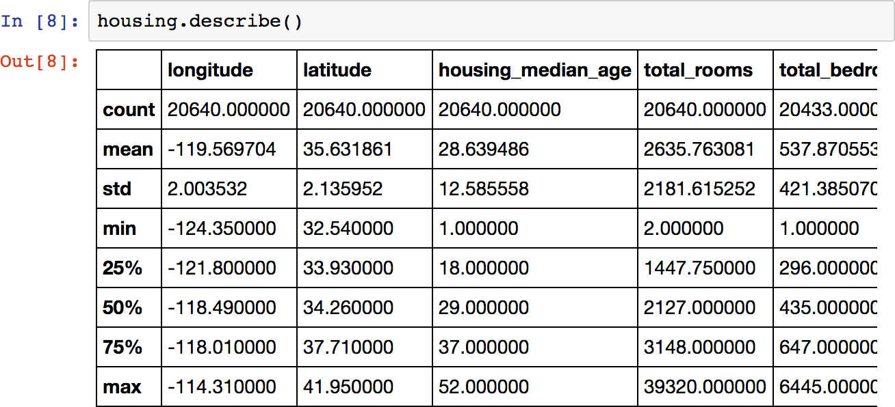
图2-7. 每个数值属性的摘要
[count]、[mean]、[min] 和 [max] 行是不言自明的。注意空值被忽略了（例如，[total_bedrooms] 的 [count] 是20,433，而不是20,640）。[std] 行显示标准差，它衡量值的分散程度。[12] 25%、50% 和 75% 行显示相应的百分位数：百分位数表示观察组中给定百分比的观察值低于该值。例如，25% 的区域的 [housing_median_age] 低于18，而50% 低于29，75% 低于37。这些通常被称为第25百分位数（或第一四分位数）、中位数和第75百分位数（或第三四分位数）。
另一种快速了解你正在处理的数据类型的方法是为每个数值属性绘制直方图。直方图显示具有给定值范围（在水平轴上）的实例数量（在垂直轴上）。你可以一次绘制一个属性，或者你可以在整个数据集上调用 [hist()] 方法（如下面的代码示例所示），它将为每个数值属性绘制直方图（见图2-8）：
[%][matplotlib] [inline] [# 仅在 Jupyter notebook 中]
[import] [matplotlib.pyplot] [as] [plt]
[housing][.][hist][(][bins][=][50][, ][figsize][=][(][20][,][15][))]
[plt][.][show][()]
[12] [标准差通常用 ][σ][ （希腊字母 sigma）表示，它是][方差][的平方根，方差是与均值的平方偏差的平均值。当特征具有钟形的][正态][分布][（也称为][高斯分布][）时，这很常见，“68-95-99.7” 规则适用：大约68% 的值落在均值的1][σ][ 范围内，95% 在2][σ][ 范围内，99.7% 在3][σ][ 范围内。]
获取数据 | 49
[hist()][ 方法依赖于 Matplotlib，Matplotlib 又依赖于用户指定的图形后端在屏幕上绘图。所以在你可以绘制任何东西之前，你需要指定 Matplotlib 应该使用哪个后端。最简单的选择是使用 Jupyter 的魔法命令 ][%matplotlib inline][。这告诉 Jupyter 设置 Matplotlib，使其使用 Jupyter 自己的后端。然后图表在 notebook 本身内渲染。注意在 Jupyter notebook 中调用 ][show()][ 是可选的，因为当执行单元格时 Jupyter 会自动显示图表。]

图2-8. 每个数值属性的直方图
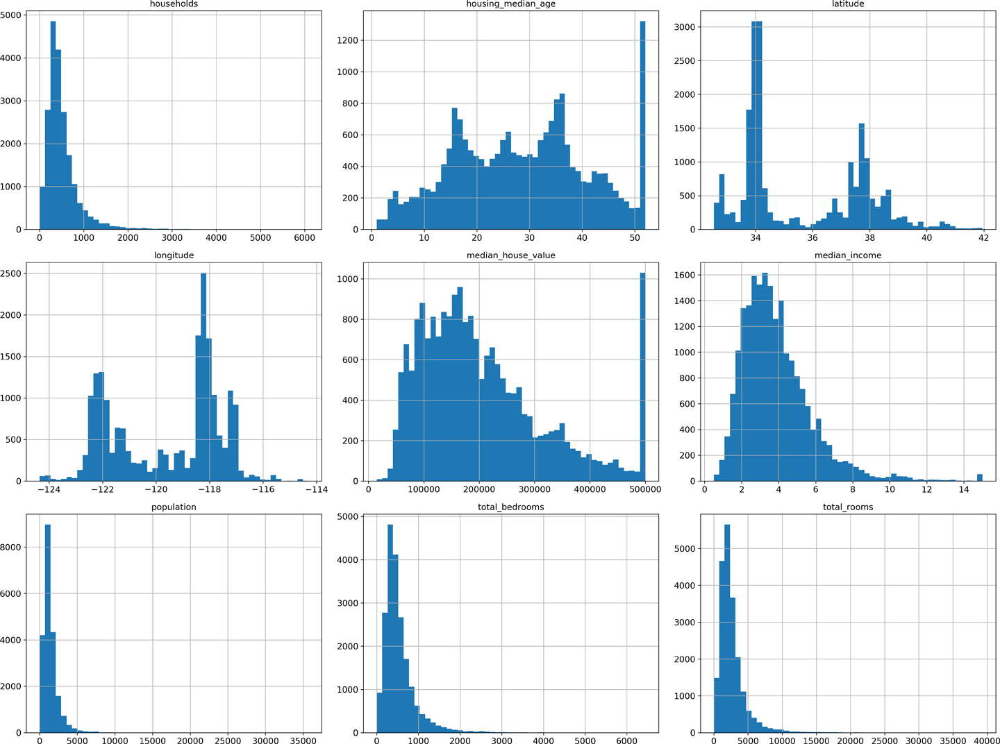
在这些直方图中你可能注意到几件事：
收入，在较低中位数收入时为0.5（实际上是0.4999）。这些数字大致代表数万美元（例如，3实际上意味着大约30,000美元）。在机器学习中使用预处理属性是常见的，这不一定是问题，但您应该尝试了解数据是如何计算的。
50 | 第2章：端到端机器学习项目
这不一定是问题，但您应该尝试了解数据是如何计算的。
房屋中位年龄和房屋中位价值也被限制了上限。后者可能是一个严重问题，因为它是您的目标属性（您的标签）。您的机器学习算法可能会学习到价格永远不会超过该限制。您需要与客户团队（将使用您系统输出的团队）核实这是否是问题。如果他们告诉您需要即使超过500,000美元也要进行精确预测，那么您有两个选择：
为标签被限制的地区收集正确的标签。
从训练集中移除这些地区（同时也从测试集中移除，因为如果您的系统预测超过500,000美元的值，不应该被评估为表现不佳）。
这些属性具有非常不同的尺度。我们将在本章后面探讨特征缩放时讨论这个问题。
最后，许多直方图都是重尾的：它们向中位数右侧延伸的距离远大于向左侧延伸的距离。这可能使某些机器学习算法更难检测模式。我们稍后会尝试转换这些属性，使其具有更像钟形的分布。
希望您现在对正在处理的数据类型有了更好的理解。
等等！在您进一步查看数据之前，您需要创建一个测试集，将其搁置，永远不要查看它。

在这个阶段自愿搁置部分数据可能听起来很奇怪。毕竟，您只是快速浏览了数据，在决定使用什么算法之前，您肯定应该了解更多关于数据的信息，对吧？这是对的，但您的大脑是一个令人惊叹的模式检测系统，这意味着它非常容易过拟合：如果您查看测试集，您可能会在测试数据中偶然发现一些看似有趣的模式，导致您选择特定类型的机器学习模型。当您使用测试集估计泛化误差时，您的估计将过于乐观，您将推出一个表现不如预期的系统。这被称为数据窥探偏差。
创建测试集在理论上很简单：随机选择一些实例，通常是数据集的20%（如果您的数据集非常大，则更少），并将它们放在一边：
获取数据 | 51
import numpy as np
def split_train_test(data, test_ratio):
shuffled_indices = np.random.permutation(len(data))
test_set_size = int(len(data) * test_ratio)
test_indices = shuffled_indices[:test_set_size]
train_indices = shuffled_indices[test_set_size:]
return data.iloc[train_indices], data.iloc[test_indices]您可以这样使用这个函数：
>>> train_set, test_set = split_train_test(housing, 0.2)
>>> len(train_set)
16512
>>> len(test_set)
4128好的，这是有效的，但并不完美：如果您再次运行程序，它将生成不同的测试集！随着时间的推移，您（或您的机器学习算法）将看到整个数据集，这正是您想要避免的。
一个解决方案是在第一次运行时保存测试集，然后在后续运行中加载它。另一个选择是设置随机数生成器的种子（例如，在调用np.random.permutation()之前使用np.random.seed(42)），使其始终生成相同的洗牌索引。
但是，这两种解决方案在您下次获取更新的数据集时都会失效。为了在更新数据集后仍有稳定的训练/测试分割，一个常见的解决方案是使用每个实例的标识符来决定它是否应该进入测试集（假设实例有唯一且不可变的标识符）。例如，您可以计算每个实例标识符的哈希值，如果哈希值小于或等于最大哈希值的20%，则将该实例放入测试集。这确保了即使您刷新数据集，测试集也将在多次运行中保持一致。新的测试集将包含20%的新实例，但不会包含任何以前在训练集中的实例。
以下是一个可能的实现：
from zlib import crc32
def test_set_check(identifier, test_ratio):
return crc32(np.int64(identifier)) & 0xffffffff < test_ratio * 2**3252 | 第2章：端到端机器学习项目
女性比例要么少于49%，要么多于54%。无论哪种情况，调查结果都会有显著偏差。
def split_train_test_by_id(data, test_ratio, id_column):
ids = data[id_column]
in_test_set = ids.apply(lambda id_: test_set_check(id_, test_ratio))
return data.loc[~in_test_set], data.loc[in_test_set]不幸的是，房屋数据集没有标识符列。最简单的解决方案是使用行索引作为ID：
housing_with_id = housing.reset_index() # 添加一个 index
列
train_set, test_set = split_train_test_by_id(housing_with_id, 0.2, “index”)
如果您使用行索引作为唯一标识符，需要确保新数据始终添加到数据集的末尾，并且不会删除任何行。如果这不可能，那么您可以尝试使用最稳定的特征来构建唯一标识符。例如，一个地区的纬度和经度在几百万年内都保证是稳定的，因此您可以将它们组合成一个ID：
housing_with_id[“id”] = housing[“longitude”] * 1000 + housing[“latitude”]
train_set, test_set = split_train_test_by_id(housing_with_id, 0.2, “id”)
Scikit-Learn提供了几个函数来以各种方式将数据集分割成多个子集。最简单的函数是train_test_split()，它与split_train_test()函数的功能基本相同，但具有一些额外的特性。首先，有一个random_state参数允许您设置随机数生成器种子。其次，您可以传递具有相同行数的多个数据集，它会在相同的索引上分割它们（例如，如果您有一个单独的标签DataFrame，这非常有用）：
from sklearn.model_selection import train_test_split
train_set, test_set = train_test_split(housing, test_size=0.2, random_state=42)
到目前为止，我们考虑的是纯随机抽样方法。如果您的数据集足够大（特别是相对于属性数量），这通常是可行的，但如果不是，您就有引入显著抽样偏差的风险。当调查公司决定致电1,000人询问一些问题时，他们不会在电话簿中随机选择1,000人。他们试图确保这1,000人代表整个人口。例如，美国人口中51.3%是女性，48.7%是男性，因此在美国进行的良好调查会尝试在样本中保持这一比例：513名女性和487名男性。这被称为分层抽样：人口被分为称为层的同质子群，并从每个层中抽取正确数量的实例，以保证测试集代表整体人口。如果进行调查的人使用纯随机抽样，大约有12%的可能性抽到有偏差的测试集。
位置信息实际上相当粗糙，因此许多地区将具有完全相同的ID，因此它们最终会在同一个集合中（测试或训练）。这引入了一些不幸的抽样偏差。
获取数据 | 53
假设您与专家交流后得知，收入中位数是预测房屋价格中位数的一个非常重要的属性。您可能希望确保测试集代表整个数据集中各种收入类别。由于收入中位数是连续的数值属性，您首先需要创建一个收入类别属性。让我们更仔细地看看收入中位数直方图（参见图2-8）：大多数收入中位数值聚集在1.5到6之间（即$15,000-$60,000），但一些收入中位数远超过6。在您的数据集中，每个层都必须有足够数量的实例，否则对层重要性的估计可能会有偏差。这意味着您不应该有太多层，每个层都应该足够大。以下代码使用pd.cut()函数创建一个具有五个类别（标记为1到5）的收入类别属性：类别1的范围从0到1.5（即少于$15,000），类别2从1.5到3，依此类推：
housing[“income_cat”] = pd.cut(housing[“median_income”], bins=[0., 1.5, 3.0, 4.5, 6., np.inf], labels=[1, 2, 3, 4, 5])
这些收入类别在图2-9中表示：
housing[“income_cat”].hist()
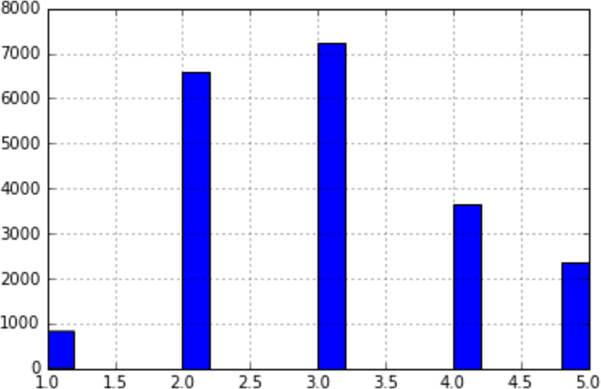
图2-9. 收入类别直方图
现在您准备基于收入类别进行分层抽样。为此，您可以使用Scikit-Learn的StratifiedShuffleSplit类：
54 | 第2章：端到端机器学习项目 发现和可视化数据以获得洞察
from sklearn.model_selection import StratifiedShuffleSplit
split = StratifiedShuffleSplit(n_splits=1, test_size=0.2, random_state=42)
for train_index, test_index in split.split(housing, housing[“income_cat”]): strat_train_set = housing.loc[train_index] strat_test_set = housing.loc[test_index]
让我们看看这是否按预期工作。您可以从查看测试集中的收入类别比例开始：
>>> strat_test_set[“income_cat”].value_counts() / len(strat_test_set)
3 0.350533 2 0.318798 4 0.176357 5 0.114583 1 0.039729 Name: income_cat, dtype: float64
使用类似的代码，您可以测量完整数据集中的收入类别比例。图2-10比较了整体数据集、使用分层抽样生成的测试集和使用纯随机抽样生成的测试集中的收入类别比例。如您所见，使用分层抽样生成的测试集具有与完整数据集几乎相同的收入类别比例，而使用纯随机抽样生成的测试集是有偏差的。
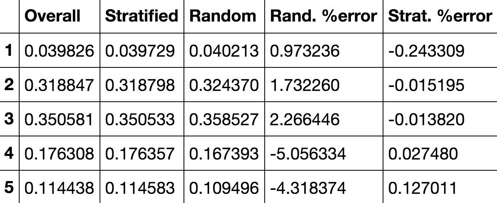
图2-10. 分层抽样与纯随机抽样的采样偏差比较
现在你应该删除[income_cat]属性，这样数据就恢复到原始状态：
[for] [set_][ in (][strat_train_set][, ][strat_test_set][):]
[set_][.][drop][(]["income_cat"][, ][axis][=][1][, ][inplace][=][True][)]
我们在测试集生成上花了相当多的时间是有充分理由的：这是Machine Learning项目中经常被忽视但却至关重要的部分。此外，当我们讨论交叉验证时，这些想法中的许多都会很有用。现在是时候进入下一个阶段：探索数据。
[获取数据 | 55]
到目前为止，你只是快速浏览了数据，对你正在处理的数据类型有了大致了解。现在的目标是深入一点。
首先，确保你已经将测试集放在一边，只探索训练集。另外，如果训练集非常大，你可能想要采样一个探索集，以便轻松快速地进行操作。在我们的情况下，数据集相当小，所以你可以直接在完整集合上工作。让我们创建一个副本，这样你就可以在不损害训练集的情况下使用它：
[housing] [=] [strat_train_set][.][copy][()]
由于有地理信息（经度和纬度），创建所有地区的散点图来可视化数据是个好主意（图2-11）：
[housing][.][plot][(][kind][=]["scatter"][, ][x][=]["longitude"][, ][y][=]["latitude"][)]
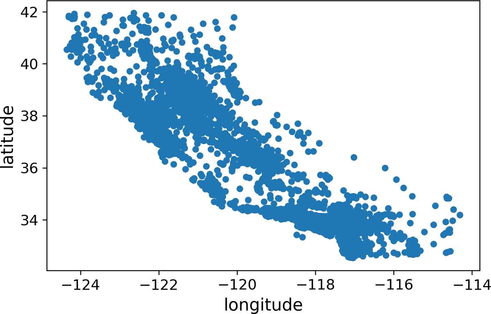
图2-11. 数据的地理散点图
这看起来确实像加利福尼亚，但除此之外很难看出任何特定的模式。将[alpha]选项设置为[0.1]使得可视化数据点高密度区域变得更加容易（图2-12）：
[housing][.][plot][(][kind][=]["scatter"][, ][x][=]["longitude"][, ][y][=]["latitude"][, ][alpha][=][0.1][)]
[56 | 第2章：端到端Machine Learning项目]
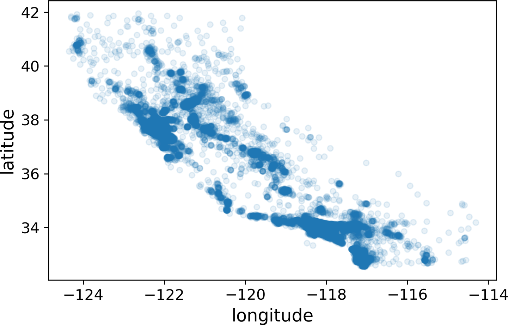
图2-12. 突出高密度区域的更好可视化
现在好多了：你可以清楚地看到高密度区域，即湾区和洛杉矶、圣地亚哥周围，以及中央谷地相当高密度的长线，特别是萨克拉门托和弗雷斯诺周围。
我们的大脑非常善于发现图片中的模式，但你可能需要调整可视化参数来使模式突出。
现在让我们看看房价（图2-13）。每个圆圈的半径代表地区的人口（选项[s]），颜色代表价格（选项[c]）。我们将使用名为[jet]的预定义颜色图（选项[cmap]），从蓝色（低值）到红色（高价格）：[[16]]
[housing][.][plot][(][kind][=]["scatter"][, ][x][=]["longitude"][, ][y][=]["latitude"][, ][alpha][=][0.4][,]
[s][=][housing][[]["population"][]][/][100][, ][label][=]["population"][, ][figsize][=][(][10][,][7][),] [c][=]["median_house_value"][, ][cmap][=][plt][.][get_cmap][(]["jet"][), ][colorbar][=][True][,]
[)]
[plt][.][legend][()]
[16] [如果你在灰度模式下阅读这本书，拿一支红笔在从湾区到圣地亚哥的大部分海岸线上涂鸦（正如你可能期望的那样）。你也可以在萨克拉门托周围添加一块黄色。]
[发现和可视化数据以获得洞察 | 57]
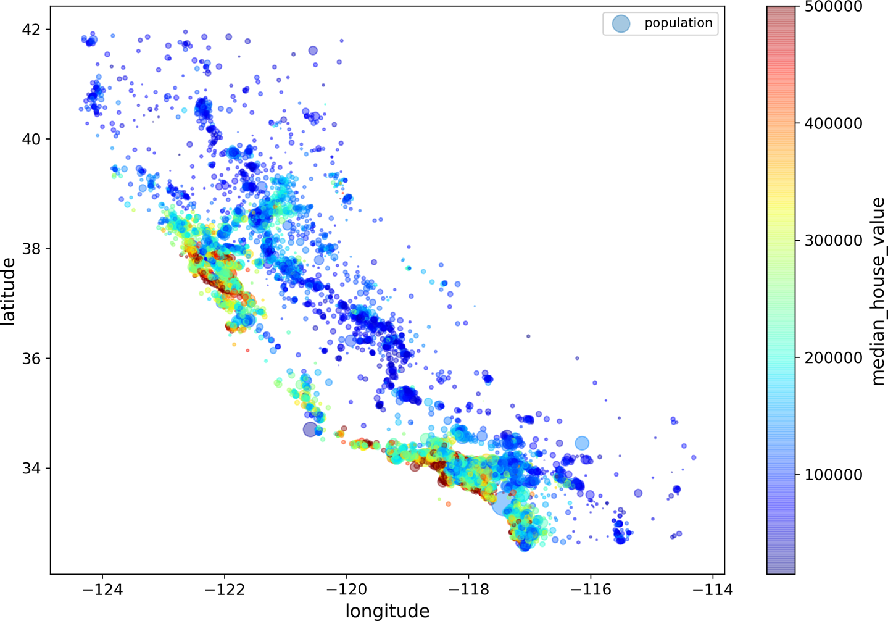
图2-13. 加利福尼亚房价：红色是昂贵的，蓝色是便宜的，较大的圆圈表示人口较多的区域
这张图告诉你房价与位置（例如，靠近海洋）和人口密度密切相关，这你可能已经知道了。聚类算法应该对检测主要集群和添加测量到集群中心距离的新特征很有用。海洋邻近属性也可能有用，尽管在北加利福尼亚，沿海地区的房价并不太高，所以这不是一个简单的规则。
由于数据集不太大，你可以使用[corr()]方法轻松计算每对属性之间的标准相关系数（也称为Pearson’s r）：
[corr_matrix] [=] [housing][.][corr][()]
现在让我们看看每个属性与房价中位数的相关程度：
[>>> ][corr_matrix][[]["median_house_value"][]][.][sort_values][(][ascending][=][False][)]
[median_house_value 1.000000]
[median_income 0.687170]
[total_rooms 0.135231]
[housing_median_age 0.114220]
[58 | 第2章：端到端Machine Learning项目]
[households 0.064702]
[total_bedrooms 0.047865]
[population -0.026699]
[longitude -0.047279]
[latitude -0.142826]
[Name: median_house_value, dtype: float64]
相关系数的范围从-1到1。当它接近1时，意味着存在强正相关；例如，房价中位数倾向于随着收入中位数上升而上升。当系数接近-1时，意味着存在强负相关；你可以看到纬度和房价中位数之间存在小的负相关（即，当你向北走时，价格有轻微下降的趋势）。最后，接近0的系数意味着没有线性相关。图2-14显示了各种图表以及其水平轴和垂直轴之间的相关系数。
图2-14. 各种数据集的标准相关系数（来源：Wikipedia；公共领域图像）
相关系数只能衡量线性相关性（“如果 x 上升，那么 y 通常上升/下降”）。它可能完全忽略非线性关系（例如，“如果 x 接近 0，那么 y 通常上升”）。注意底部行的所有图表的相关系数都等于 0，尽管它们的轴明显不独立：这些是非线性关系的例子。同样，第二行显示了相关系数等于 1 或 -1 的例子；注意这与斜率无关。例如，你的身高（英寸）与你的身高（英尺或纳米为单位）的相关系数为 1。

检查属性间相关性的另一种方法是使用 pandas
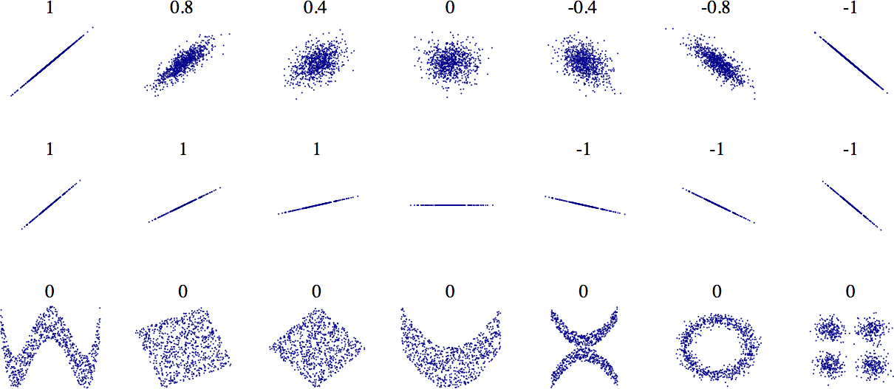
scatter_matrix() 函数，它绘制每个数值属性与其他每个数值属性的散点图
发现和可视化数据以获得洞察 | 59
看起来与房屋价值中位数最相关的属性（图 2-15）：
from pandas.plotting import scatter_matrix
attributes = [“median_house_value”, “median_income”, “total_rooms”, “housing_median_age”]
scatter_matrix(housing[attributes], figsize=(12, 8))
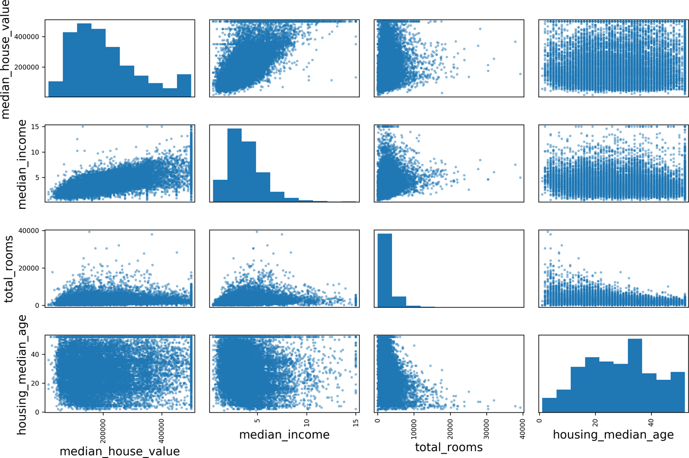
图 2-15. 这个散点矩阵绘制了每个数值属性与其他每个数值属性的关系，加上每个数值属性的直方图
如果 pandas 绘制每个变量对自身的关系，主对角线（左上角到右下角）将充满直线，这并不是很有用。所以 pandas 显示每个属性的直方图（其他选项可用；详情请参阅 pandas 文档）。
预测房屋价值中位数最有希望的属性是收入中位数，所以让我们放大它们的相关散点图（图 2-16）：
housing.plot(kind=“scatter”, x=“median_income”, y=“median_house_value”, alpha=0.1)
60 | 第2章：端到端机器学习项目
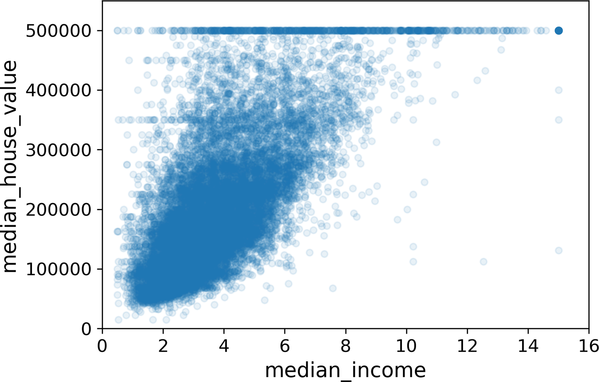
图 2-16. 收入中位数与房屋价值中位数
这个图表揭示了几个事实。首先，相关性确实很强；你可以清楚地看到上升趋势，而且点不太分散。其次，我们之前注意到的价格上限在 $500,000 处清楚地显示为一条水平线。但这个图表还揭示了其他不太明显的直线：在 $450,000 左右有一条水平线，在 $350,000 左右有另一条，可能在 $280,000 左右还有一条，下面还有更多。你可能想要尝试移除相应的地区，以防止你的算法学会重现这些数据异常。
希望前面的章节让你了解了几种探索数据和获得洞察的方法。你识别了一些数据异常，在将数据输入机器学习算法之前可能需要清理，你发现了属性之间有趣的相关性，特别是与目标属性的相关性。你还注意到一些属性具有重尾分布，所以你可能想要转换它们（例如，通过计算它们的对数）。当然，每个项目的情况会有很大差异，但总体思路是相似的。
在为机器学习算法准备数据之前，你可能想要做的最后一件事是尝试各种属性组合。例如，如果你不知道有多少家庭，地区中房间的总数就不是很有用。你真正想要的是每个家庭的房间数。同样，卧室总数本身并不是很有用：你可能想要将其与房间数进行比较。每个家庭的人口数似乎也是一个有趣的属性组合。让我们创建这些新属性：
发现和可视化数据以获得洞察 | 61
housing[“rooms_per_household”] = housing[“total_rooms”]/housing[“households”] housing[“bedrooms_per_room”] = housing[“total_bedrooms”]/housing[“total_rooms”] housing[“population_per_household”]=housing[“population”]/housing[“households”]
现在让我们再看看相关矩阵：
>>> corr_matrix = housing.corr() >>> corr_matrix[“median_house_value”].sort_values(ascending=False)
median_house_value 1.000000 median_income 0.687160 rooms_per_household 0.146285 total_rooms 0.135097 housing_median_age 0.114110 households 0.064506 total_bedrooms 0.047689 population_per_household -0.021985 population -0.026920 longitude -0.047432 latitude -0.142724 bedrooms_per_room -0.259984 Name: median_house_value, dtype: float64
嘿，不错！新的 bedrooms_per_room 属性与房屋价值中位数的相关性比房间或卧室的总数高得多。显然，卧室/房间比率较低的房子往往更昂贵。每个家庭的房间数也比地区中房间总数更有信息量——显然房子越大，价格越贵。
这轮探索不必绝对彻底；关键是要有一个良好的开端，快速获得洞察，帮助你获得第一个相当好的原型。但这是一个迭代过程：一旦你有了一个运行的原型，你可以分析它的输出以获得更多洞察，并回到这个探索步骤。
是时候为您的机器学习算法准备数据了。您应该为此编写函数，而不是手动执行此操作，原因如下：
• 这将允许您在任何数据集上轻松重现这些转换（例如，下次获得新数据集时）。
• 您将逐渐构建一个转换函数库，可以在未来项目中重复使用。
• 您可以在实时系统中使用这些函数来转换新数据，然后将其输入到算法中。
第2章：端到端机器学习项目 | 62
• 这将使您能够轻松尝试各种转换，并查看哪种转换组合效果最好。
但首先让我们恢复到干净的训练集（通过再次复制[strat_train_set]）。让我们还将预测器和标签分开，因为我们不一定要对预测器和目标值应用相同的转换（注意[drop()]创建数据的副本，不会影响[strat_train_set]）：
[housing] [=] [strat_train_set][.][drop][(]["median_house_value"][, ][axis][=][1][)]
[housing_labels] [=] [strat_train_set][[]["median_house_value"][]][.][copy][()]
大多数机器学习算法无法处理缺失特征，所以让我们创建一些函数来处理它们。我们之前看到[total_bedrooms]属性有一些缺失值，让我们修复这个问题。您有三个选择：
删除相应的地区。
删除整个属性。
将值设置为某个值（零、均值、中位数等）。
您可以使用DataFrame的[dropna()]、[drop()]和[fillna()]方法轻松完成这些操作：
[housing][.][dropna][(][subset][=][[]["total_bedrooms"][]) ][# 选项1]
[housing][.][drop][(]["total_bedrooms"][, ][axis][=][1][) ][# 选项2]
[median] [=] [housing][[]["total_bedrooms"][]][.][median][() ][# 选项3]
[housing][[]["total_bedrooms"][]][.][fillna][(][median][, ][inplace][=][True][)]
如果您选择选项3，您应该在训练集上计算中位数值，并使用它来填充训练集中的缺失值。不要忘记保存您计算出的中位数值。当您想要评估系统时，您稍后需要它来替换测试集中的缺失值，并且一旦系统上线，也需要它来替换新数据中的缺失值。
Scikit-Learn提供了一个方便的类来处理缺失值：[SimpleImputer]。
使用方法如下。首先，您需要创建一个[SimpleImputer]实例，指定您想要用该属性的中位数替换每个属性的缺失值：
[from] [sklearn.impute] [import] [SimpleImputer]
[imputer] [=] [SimpleImputer][(][strategy][=]["median"][)]
由于中位数只能在数值属性上计算，您需要创建没有文本属性[ocean_proximity]的数据副本：
[housing_num] [=] [housing][.][drop][(]["ocean_proximity"][, ][axis][=][1][)]
为机器学习算法准备数据 | 63
现在您可以使用[fit()]方法将[imputer]实例拟合到训练数据：
[imputer][.][fit][(][housing_num][)]
[imputer]简单地计算了每个属性的中位数，并将结果存储在其[statistics_]实例变量中。只有[total_bedrooms]属性有缺失值，但我们不能确定系统上线后新数据中不会有任何缺失值，所以将[imputer]应用于所有数值属性更安全：
[>>> ][imputer][.][statistics_]
[array([ -118.51 , 34.26 , 29. , 2119.5 , 433. , 1164. , 408. , 3.5409])]
[>>> ][housing_num][.][median][()][.][values]
[array([ -118.51 , 34.26 , 29. , 2119.5 , 433. , 1164. , 408. , 3.5409])]
现在您可以使用这个”训练过的”[imputer]通过用学习到的中位数替换缺失值来转换训练集：
[X] [=] [imputer][.][transform][(][housing_num][)]
结果是一个包含转换后特征的普通NumPy数组。如果您想将其放回pandas DataFrame中，很简单：
[housing_tr] [=] [pd][.][DataFrame][(][X][, ][columns][=][housing_num][.][columns][,]
[index][=][housing_num][.][index][)]
Scikit-Learn的API设计得非常出色。这些是主要设计原则：
一致性
所有对象共享一致且简单的接口：
估计器(Estimators)
任何可以基于数据集估计某些参数的对象都称为估计器（例如，[imputer]是一个估计器）。估计本身由[fit()]方法执行，它只接受一个数据集作为参数（对于监督学习算法接受两个；第二个数据集包含标签）。指导估计过程所需的任何其他参数都被认为是超参数（如[imputer]的[strategy]），必须设置为实例变量（通常通过构造函数参数）。
转换器(Transformers)
一些估计器（如[imputer]）也可以转换数据集；这些被称为转换器。同样，API很简单：转换由[transform()]方法执行，将要转换的数据集作为参数。
17 有关设计原则的更多详细信息，请参见 Lars Buitinck 等人，“机器学习软件的API设计：来自Scikit-Learn项目的经验”，arXiv预印本 arXiv:1309.0238 (2013)。
第2章：端到端机器学习项目 | 64
参数。它返回转换后的数据集。这种转换通常依赖于学习到的参数，如imputer的情况。所有transformer也有一个便利方法叫做fit_transform()，相当于调用fit()然后调用transform()（但有时fit_transform()经过优化，运行得更快）。
Predictors
最后，一些estimator在给定数据集的情况下，能够进行预测；它们被称为predictors。例如，前一章中的LinearRegression模型就是一个predictor：给定一个国家的人均GDP，它预测生活满意度。predictor有一个predict()方法，接受新实例的数据集并返回相应预测的数据集。它还有一个score()方法，在给定测试集（以及监督学习算法中相应的标签）的情况下衡量预测的质量。
Inspection
所有estimator的超参数都可以通过公共实例变量直接访问（例如，imputer.strategy），所有estimator学习到的参数都可以通过带下划线后缀的公共实例变量访问（例如，imputer.statistics_）。
Nonproliferation of classes
数据集表示为NumPy数组或SciPy稀疏矩阵，而不是自制的类。超参数只是常规的Python字符串或数字。
Composition
现有的构建块被尽可能多地重用。例如，从任意的transformer序列后跟一个最终estimator创建Pipeline estimator很容易，我们将会看到这一点。
Sensible defaults
Scikit-Learn为大多数参数提供合理的默认值，使得快速创建基线工作系统变得容易。
到目前为止，我们只处理了数值属性，但现在让我们看看文本属性。在这个数据集中，只有一个：ocean_proximity属性。让我们看看前10个实例的值：
一些predictors还提供方法来衡量其预测的置信度。
为机器学习算法准备数据 | 65
>>> housing_cat = housing[["ocean_proximity"]]
>>> housing_cat.head(10)ocean_proximity
17606 <1H OCEAN
18632 <1H OCEAN
14650 NEAR OCEAN
3230 INLAND
3555 <1H OCEAN
19480 INLAND
8879 <1H OCEAN
13685 INLAND
4937 <1H OCEAN
4861 <1H OCEAN
这不是任意文本：有有限数量的可能值，每个值代表一个类别。所以这个属性是一个分类属性。大多数机器学习算法更喜欢处理数字，所以让我们将这些类别从文本转换为数字。为此，我们可以使用Scikit-Learn的OrdinalEncoder类：
>>> from sklearn.preprocessing import OrdinalEncoder
>>> ordinal_encoder = OrdinalEncoder()
>>> housing_cat_encoded = ordinal_encoder.fit_transform(housing_cat)
>>> housing_cat_encoded[:10]
array([[0.],
[0.],
[4.],
[1.],
[0.],
[1.],
[0.],
[1.],
[0.],
[0.]])你可以使用categories_实例变量获取类别列表。它是一个包含每个分类属性的1D类别数组的列表（在这种情况下，是包含单个数组的列表，因为只有一个分类属性）：
>>> ordinal_encoder.categories_
[array(['<1H OCEAN', 'INLAND', 'ISLAND', 'NEAR BAY', 'NEAR OCEAN'],
dtype=object)]这种表示的一个问题是ML算法会假设两个相近的值比两个相距较远的值更相似。这在某些情况下可能没问题（例如，对于有序类别如”bad”、“average”、“good”和”excellent”），但对于ocean_proximity列显然不是这样（例如，类别0和4显然比类别0和1更相似）。为了解决这个问题，一个常见的解决方案
这个类在Scikit-Learn 0.20及更高版本中可用。如果你使用更早的版本，请考虑升级，或使用pandas的Series.factorize()方法。
66 | 第2章：端到端机器学习项目
是为每个类别创建一个二进制属性：当类别是”<1H OCEAN”时一个属性等于1（否则为0），当类别是”INLAND”时另一个属性等于1（否则为0），依此类推。这被称为one-hot编码，因为只有一个属性等于1（hot），而其他属性为0（cold）。新属性有时被称为dummy属性。Scikit-Learn提供了OneHotEncoder类将分类值转换为one-hot向量：
>>> from sklearn.preprocessing import OneHotEncoder
>>> cat_encoder = OneHotEncoder()
>>> housing_cat_1hot = cat_encoder.fit_transform(housing_cat)
>>> housing_cat_1hot
<16512x5 sparse matrix of type '<class 'numpy.float64'>'
with 16512 stored elements in Compressed Sparse Row format>注意输出是一个SciPy稀疏矩阵，而不是NumPy数组。当你有数千个类别的分类属性时，这非常有用。经过one-hot编码后，我们得到一个有数千列的矩阵，矩阵除了每行一个1之外全是0。使用大量内存主要来存储零是非常浪费的，所以稀疏矩阵只存储非零元素的位置。你可以像使用普通2D数组一样使用它，但如果你真的想将其转换为（密集的）NumPy数组，只需调用toarray()方法：
>>> housing_cat_1hot.toarray()
array([[1., 0., 0., 0., 0.],[[1., 0., 0., 0., 0.],]
[[0., 0., 0., 0., 1.],]
[…,]
[[0., 1., 0., 0., 0.],]
[[1., 0., 0., 0., 0.],]
[[0., 0., 0., 1., 0.]]]
再次，你可以使用编码器的 [categories_] 实例变量来获取类别列表：
[>>> ][cat_encoder][.][categories_]
[[array([‘<1H OCEAN’, ‘INLAND’, ‘ISLAND’, ‘NEAR BAY’, ‘NEAR OCEAN’],]
[dtype=object)]]
[20] [在Scikit-Learn 0.20之前，该方法只能编码整数分类值，但从0.20开始，它也可以]
[处理其他类型的输入，包括文本分类输入。]
[21] [参见SciPy的文档获取更多详细信息。]
[为机器学习算法准备数据 | 67]

[如果分类属性有大量可能的类别][(例如，国家代码、职业、物种)，那么独热编码将][产生大量的输入特征。这可能会减慢][训练速度并降低性能。如果发生这种情况，你可能想要][用与类别相关的有用数值特征来替换分类输入：][例如，你可以用到海洋的距离来替换][ocean_proximity][特征(类似地，][国家代码可以用该国的人口和][人均GDP来替换)。或者，你可以用一个可学习的、低维向量来替换每个类别，][这个向量称为][嵌入][。每个][类别的表示将在训练过程中学习。这是]
[表示学习][的一个例子(参见第][[13]][[章和第]][[17]][[章获取][更多详细信息)。]
虽然Scikit-Learn提供了许多有用的变换器，但对于自定义清理操作或组合特定属性等任务，你需要编写自己的变换器。你希望你的变换器能与Scikit-Learn功能(如流水线)无缝配合工作，由于Scikit-Learn依赖于鸭子类型(而非继承)，你只需要创建一个类并实现三个方法：[fit()]
(返回[self])、[transform()]和[fit_transform()]。
通过简单地添加[TransformerMixin]作为基类，你可以免费获得最后一个方法。
如果你添加[BaseEstimator]作为基类(并在构造函数中避免使用[*args]和[**kargs])，你还将获得两个额外的方法([get_params()]和[set_params()])，这些方法对自动超参数调优很有用。
例如，这是一个小的变换器类，它添加了我们之前讨论的组合属性：
[from] [sklearn.base] [import] [BaseEstimator][, ][TransformerMixin]
[rooms_ix][, ][bedrooms_ix][, ][population_ix][, ][households_ix] [=] [3][, ][4][, ][5][, ][6]
[class] [CombinedAttributesAdder][(][BaseEstimator][, ][TransformerMixin][):]
[def] [init][(][self][, ][add_bedrooms_per_room] [=] [True][): ][# 没有 *args 或 **kargs]
[self][.][add_bedrooms_per_room] [=] [add_bedrooms_per_room]
[def] [fit][(][self][, ][X][, ][y][=][None][):]
[return] [self] [# 没有其他事情要做]
[def] [transform][(][self][, ][X][):]
[rooms_per_household] [=] [X][[:, ][rooms_ix][] ][/] [X][[:, ][households_ix][]] [population_per_household] [=] [X][[:, ][population_ix][] ][/] [X][[:, ][households_ix][]] [if] [self][.][add_bedrooms_per_room][:]
[bedrooms_per_room] [=] [X][[:, ][bedrooms_ix][] ][/] [X][[:, ][rooms_ix][]] [return] [np][.][c_][[][X][, ][rooms_per_household][, ][population_per_household][,]
[bedrooms_per_room][]]
[68 | 第2章：端到端机器学习项目]
[else][:]
[return] [np][.][c_][[][X][, ][rooms_per_household][, ][population_per_household][]]
[attr_adder] [=] [CombinedAttributesAdder][(][add_bedrooms_per_room][=][False][)]
[housing_extra_attribs] [=] [attr_adder][.][transform][(][housing][.][values][)]
在这个例子中，变换器有一个超参数[add_bedrooms_per_room]，
默认设置为True。这个超参数将允许你轻松地找出添加这个属性是否有助于机器学习算法。更一般地说，你可以添加一个超参数来控制任何你不是100%确定的数据准备步骤。你自动化这些数据准备步骤越多，你可以自动尝试的组合就越多，这使你更有可能找到一个很好的组合(并为你节省大量时间)。
你需要应用到数据上的最重要的变换之一是特征缩放。除了少数例外，当输入数值属性具有非常不同的尺度时，机器学习算法表现不佳。房屋数据就是这种情况：房间总数的范围大约从6到39,320，而收入中位数只在0到15之间。注意，缩放目标值通常不是必需的。
有两种常见的方法让所有属性具有相同的尺度：最小-最大缩放和标准化。
最小-最大缩放(许多人称之为归一化)是最简单的：值被移位和重新缩放，使它们最终在0到1的范围内。我们通过减去最小值并除以最大值减去最小值来做到这一点。Scikit-Learn提供了一个名为[MinMaxScaler]的变换器。它有一个[feature_range]超参数，如果出于某种原因你不想要0-1范围，可以让你改变范围。
标准化是不同的：首先它减去平均值（所以标准化后的值总是有零均值），然后除以标准差，使得结果分布具有单位方差。与最小-最大缩放不同，标准化不会将值限制在特定范围内，这对某些算法可能是个问题（例如，神经网络通常期望输入值在0到1的范围内）。然而，标准化受异常值的影响要小得多。例如，假设一个区域的收入中位数等于100（错误地）。最小-最大缩放会将所有其他值从0-15压缩到0-0.15，而标准化不会受到太大影响。Scikit-Learn提供了一个名为StandardScaler的转换器用于标准化。
与所有转换一样，重要的是仅对训练数据拟合缩放器，而不是对完整数据集（包括测试集）。只有这样，你才能使用它们来转换训练集和测试集（以及新数据）。

如你所见，有许多数据转换步骤需要按正确的顺序执行。幸运的是，Scikit-Learn提供了Pipeline类来帮助处理这样的转换序列。这里是一个用于数值属性的小管道：
from sklearn.pipeline import Pipeline
from sklearn.preprocessing import StandardScaler
num_pipeline = Pipeline([
('imputer', SimpleImputer(strategy="median")),
('attribs_adder', CombinedAttributesAdder()),
('std_scaler', StandardScaler()),
])
housing_num_tr = num_pipeline.fit_transform(housing_num)Pipeline构造函数接受一个名称/估计器对的列表，定义一个步骤序列。除了最后一个估计器外，所有其他估计器都必须是转换器（即，它们必须有fit_transform()方法）。名称可以是你喜欢的任何内容（只要它们是唯一的且不包含双下划线__）；它们稍后对超参数调优会很有用。
当你调用管道的fit()方法时，它依次对所有转换器调用fit_transform()，将每次调用的输出作为参数传递给下一次调用，直到到达最终估计器，对于最终估计器，它调用fit()方法。
管道暴露与最终估计器相同的方法。在这个例子中，最后一个估计器是StandardScaler，它是一个转换器，所以管道有一个transform()方法，按顺序对数据应用所有转换（当然也有fit_transform()方法，这是我们使用的方法）。
到目前为止，我们分别处理了分类列和数值列。如果有一个能够处理所有列的单一转换器，对每一列应用适当的转换会更方便。在0.20版本中，Scikit-Learn引入了ColumnTransformer用于此目的，好消息是它与pandas DataFrames配合得很好。让我们使用它对房屋数据应用所有转换：
class类，可以应用不同的转换器并连接它们的输出。但你不能为每个转换器指定不同的列；它们都应用于整个数据。可以使用自定义转换器进行列选择来解决这个限制（参见Jupyter notebook中的示例）。
from sklearn.compose import ColumnTransformer
num_attribs = list(housing_num)
cat_attribs = ["ocean_proximity"]
full_pipeline = ColumnTransformer([
("num", num_pipeline, num_attribs),
("cat", OneHotEncoder(), cat_attribs),
])
housing_prepared = full_pipeline.fit_transform(housing)首先我们导入ColumnTransformer类，接下来我们获取数值列名的列表和分类列名的列表，然后我们构造一个ColumnTransformer。构造函数需要一个元组列表，其中每个元组包含一个名称、一个转换器和转换器应该应用的列名（或索引）列表。在这个例子中，我们指定数值列应该使用我们之前定义的num_pipeline进行转换，分类列应该使用OneHotEncoder进行转换。最后，我们将这个ColumnTransformer应用于房屋数据：它对适当的列应用每个转换器，并沿第二个轴连接输出（转换器必须返回相同的行数）。
注意OneHotEncoder返回稀疏矩阵，而num_pipeline返回密集矩阵。当存在这样的稀疏和密集矩阵混合时，ColumnTransformer估计最终矩阵的密度（即非零单元格的比率），如果密度低于给定阈值（默认情况下sparse_threshold=0.3），它返回稀疏矩阵。在这个例子中，它返回密集矩阵。就是这样！我们有一个预处理管道，它接受完整的房屋数据并对每一列应用适当的转换。
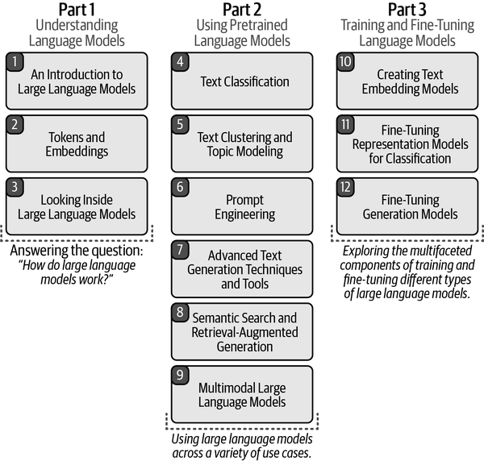
你可以指定字符串”drop”如果你想要删除列，或者你可以指定”passthrough”如果你想要保持列不变，而不是使用转换器。默认情况下，剩余的列（即那些未列出的列）将被删除，但你可以将remainder超参数设置为任何转换器（或”passthrough”），如果你想要这些列被不同地处理。
如果你使用的是Scikit-Learn 0.19或更早版本，你可以使用第三方库，例如
[sklearn-pandas]，或者你可以开发自己的自定义transformer来获得与[ColumnTransformer]相同的功能。或者，你可以使用[FeatureUnion]
终于！你确定了问题框架，获得了数据并进行了探索，采样了训练集和测试集，并编写了转换pipeline来自动清理和准备数据供Machine Learning算法使用。现在你已经准备好选择和训练Machine Learning模型了。
好消息是，由于前面的所有步骤，现在的情况将比你想象的要简单得多。让我们首先训练一个Linear Regression模型，就像我们在上一章中做的那样：
[from] [sklearn.linear_model] [import] [LinearRegression]
[lin_reg] [=] [LinearRegression][()]
[lin_reg][.][fit][(][housing_prepared][, ][housing_labels][)]
完成！你现在有了一个可工作的Linear Regression模型。让我们在训练集的几个实例上试试：
[>>> ][some_data] [=] [housing][.][iloc][[:][5][]]
[>>> ][some_labels] [=] [housing_labels][.][iloc][[:][5][]]
[>>> ][some_data_prepared] [=] [full_pipeline][.][transform][(][some_data][)]
[>>> ][print][(]["Predictions:"][, ][lin_reg][.][predict][(][some_data_prepared][))]
[Predictions: [ 210644.6045 317768.8069 210956.4333 59218.9888 189747.5584]]
[>>> ][print][(]["Labels:"][, ][list][(][some_labels][))]
[Labels: [286600.0, 340600.0, 196900.0, 46300.0, 254500.0]]
它工作了，尽管预测不是完全准确的（例如，第一个预测偏差接近40%！）。让我们使用Scikit-Learn的[mean_squared_error()]函数来测量这个回归模型在整个训练集上的RMSE：
[>>> ][from] [sklearn.metrics] [import] [mean_squared_error]
[>>> ][housing_predictions] [=] [lin_reg][.][predict][(][housing_prepared][)]
[>>> ][lin_mse] [=] [mean_squared_error][(][housing_labels][, ][housing_predictions][)]
[>>> ][lin_rmse] [=] [np][.][sqrt][(][lin_mse][)]
[>>> ][lin_rmse]
[68628.19819848922]
这比没有要好，但显然不是一个很好的分数：大多数地区的[median_housing_values]范围在$120,000到$265,000之间，所以$68,628的典型预测误差不是很令人满意。这是模型对训练数据underfitting的一个例子。当这种情况发生时，可能意味着特征没有提供足够的信息来做出好的预测，或者模型不够强大。正如我们在上一章中看到的，修复underfitting的主要方法是选择更强大的模型，为训练算法提供更好的特征，或减少对模型的约束。这个模型没有正则化，这排除了最后一个选项。你可以尝试添加更多特征（例如，人口的对数），但首先让我们尝试一个更复杂的模型，看看它的表现如何。
让我们训练一个[DecisionTreeRegressor]。这是一个强大的模型，能够在数据中发现复杂的非线性关系（Decision Trees在第6章中有更详细的介绍）。代码现在应该看起来很熟悉：
[from] [sklearn.tree] [import] [DecisionTreeRegressor]
[tree_reg] [=] [DecisionTreeRegressor][()]
[tree_reg][.][fit][(][housing_prepared][, ][housing_labels][)]
现在模型已经训练好了，让我们在训练集上评估它：
[>>> ][housing_predictions] [=] [tree_reg][.][predict][(][housing_prepared][)]
[>>> ][tree_mse] [=] [mean_squared_error][(][housing_labels][, ][housing_predictions][)]
[>>> ][tree_rmse] [=] [np][.][sqrt][(][tree_mse][)]
[>>> ][tree_rmse]
[0.0]
等等，什么！？完全没有错误？这个模型真的能完全完美吗？当然，更可能的是模型严重过拟合了数据。你怎么能确定呢？正如我们之前看到的，在你准备好启动一个你有信心的模型之前，你不想接触测试集，所以你需要使用训练集的一部分进行训练，一部分进行模型验证。
评估Decision Tree模型的一种方法是使用[train_test_split()]函数将训练集分割成一个较小的训练集和一个验证集，然后针对较小的训练集训练你的模型，并针对验证集评估它们。这需要一点工作，但没有什么太困难的，而且会工作得相当好。
一个很好的替代方案是使用Scikit-Learn的K-fold cross-validation功能。以下代码随机将训练集分成10个不同的子集，称为folds，然后训练和评估Decision Tree模型10次，每次选择不同的fold进行评估，并在其他9个folds上进行训练。结果是一个包含10个评估分数的数组：
[from] [sklearn.model_selection] [import] [cross_val_score]
[scores] [=] [cross_val_score][(][tree_reg][, ][housing_prepared][, ][housing_labels][,]
[scoring][=]["neg_mean_squared_error"][, ][cv][=][10][)]
[tree_rmse_scores] [=] [np][.][sqrt][(][-][scores][)]
[Scikit-Learn的cross-validation功能期望一个效用函数] [(越大越好)而不是成本函数(越小越好)，所以] [评分函数实际上是MSE的相反数(即负值)，这就是为什么前面的代码在计算平方根之前计算][-scores][的原因。]

让我们看看结果：
[>>> ][def] [display_scores][(][scores][):]
[... ] [print][(]["Scores:"][, ][scores][)]
[... ] [print][(]["Mean:"][, ][scores][.][mean][())]
[... ] [print][(]["Standard deviation:"][, ][scores][.][std][())]
[...]
[>>> ][display_scores][(][tree_rmse_scores][)]
[Scores: [70194.33680785 66855.16363941 72432.58244769 70758.73896782]
[ 71115.88230639 75585.14172901 70262.86139133 70273.6325285]
[ 75366.87952553 71231.65726027]]
[Mean: 71407.68766037929]
[Standard deviation: 2439.4345041191004]
现在决策树看起来不如之前那么好了。实际上，它的表现似乎比线性回归模型还要差！注意交叉验证不仅能让你获得模型性能的估计，还能获得这个估计的精确度(即标准差)。决策树的得分大约是71,407，通常±2,439。如果你只使用一个验证集，你就不会有这些信息。但是交叉验证需要多次训练模型，所以并不总是可行的。
让我们为线性回归模型计算相同的分数来确保：
[>>> ][lin_scores] [=] [cross_val_score][(][lin_reg][, ][housing_prepared][, ][housing_labels][,]
[... ] [scoring][=]["neg_mean_squared_error"][, ][cv][=][10][)]
[...]
[>>> ][lin_rmse_scores] [=] [np][.][sqrt][(][-][lin_scores][)]
[>>> ][display_scores][(][lin_rmse_scores][)]
[Scores: [66782.73843989 66960.118071 70347.95244419 74739.57052552]
[ 68031.13388938 71193.84183426 64969.63056405 68281.61137997]
[ 71552.91566558 67665.10082067]]
[Mean: 69052.46136345083]
[Standard deviation: 2731.674001798348]
没错：决策树模型过拟合得如此严重，以至于它的表现比线性回归模型还要差。
现在让我们尝试最后一个模型：[RandomForestRegressor]。正如我们将在[第7章]中看到的，随机森林通过在特征的随机子集上训练许多决策树，然后平均它们的预测来工作。在许多其他模型之上构建模型称为集成学习，这通常是进一步推进机器学习算法的好方法。我们将跳过大部分代码，因为它基本上与其他模型相同：
[74 | 第2章：端到端机器学习项目]
[>>> ][from] [sklearn.ensemble] [import] [RandomForestRegressor]
[>>> ][forest_reg] [=] [RandomForestRegressor][()]
[>>> ][forest_reg][.][fit][(][housing_prepared][, ][housing_labels][)]
[>>> ][[][...][]]
[>>> ][forest_rmse]
[18603.515021376355]
[>>> ][display_scores][(][forest_rmse_scores][)]
[Scores: [49519.80364233 47461.9115823 50029.02762854 52325.28068953]
[ 49308.39426421 53446.37892622 48634.8036574 47585.73832311]
[ 53490.10699751 50021.5852922 ]]
[Mean: 50182.303100336096]
[Standard deviation: 2097.0810550985693]
哇，这好多了：随机森林看起来非常有前途。然而，请注意训练集上的分数仍然远低于验证集上的分数，这意味着模型仍然在过拟合训练集。过拟合的可能解决方案是简化模型、约束模型(即正则化)或获得更多训练数据。但是，在你深入研究随机森林之前，你应该尝试机器学习算法各个类别中的许多其他模型(例如，具有不同核的几个支持向量机，可能还有神经网络)，而不要花费太多时间调整超参数。目标是筛选出几个(2到5个)有前途的模型。

你应该保存你实验过的每个模型，以便你可以轻松回到任何你想要的模型。确保你既保存超参数又保存训练参数，以及交叉验证分数，也许还有实际预测。这将允许你轻松比较不同模型类型的分数，并比较它们产生的错误类型。你可以通过使用Python的[pickle]模块或使用[joblib]库轻松保存Scikit-Learn模型，后者在序列化大型NumPy数组方面更有效(你可以使用pip安装此库)：
[import] [joblib]
[joblib][.][dump][(][my_model][, ]["my_model.pkl"][)] [# 稍后...]
[my_model_loaded] [=] [joblib][.][load][(]["my_model.pkl"][)]
让我们假设你现在有一个有前途的模型候选列表。你现在需要微调它们。让我们看看几种你可以做到这一点的方法。
[微调你的模型 | 75]
一个选择是手动摆弄超参数，直到你找到超参数值的很好组合。这将是非常繁琐的工作，你可能没有时间探索许多组合。
相反，你应该让Scikit-Learn的[GridSearchCV]为你搜索。你需要做的就是告诉它你希望它实验哪些超参数以及要尝试的值，它将使用交叉验证来评估超参数值的所有可能组合。例如，以下代码搜索[RandomForestRegressor]的最佳超参数值组合：
[from] [sklearn.model_selection] [import] [GridSearchCV]
[param_grid] [=][ []
[{]['n_estimators'][: [][3][, ][10][, ][30][], ]['max_features'][: [][2][, ][4][, ][6][, ][8][]},]
[{]['bootstrap'][: [][False][], ]['n_estimators'][: [][3][, ][10][], ]['max_features'][: [][2][, ][3][, ][4][]},]
[ ]]
[forest_reg] [=] [RandomForestRegressor][()]
[grid_search] [=] [GridSearchCV][(][forest_reg][, ][param_grid][, ][cv][=][5][,]
[scoring][=]['neg_mean_squared_error'][,] [return_train_score][=][True][)]
[grid_search][.][fit][(][housing_prepared][, ][housing_labels][)]

当你不知道一个超参数应该设置为什么值时，一个简单的方法是尝试连续的10的幂次（或者如果你想要更细粒度的搜索，可以使用更小的数字，如本例中的 n_estimators 超参数所示）。
这个 param_grid 告诉 Scikit-Learn 首先评估第一个 dict 中指定的 n_estimators 和 max_features 超参数值的所有 3 × 4 = 12 种组合（现在不用担心这些超参数的含义；它们将在第7章中解释），然后尝试第二个 dict 中的所有 2 × 3 = 6 种超参数值组合，但这次将 bootstrap 超参数设置为 False 而不是 True（这是该超参数的默认值）。
网格搜索将探索 12 + 6 = 18 种 RandomForestRegressor 超参数值组合，并且每个模型训练5次（因为我们使用五折交叉验证）。换句话说，总共将进行 18 × 5 = 90 轮训练！这可能需要相当长的时间，但完成后你可以像这样获得最佳参数组合：
>>> grid_search.best_params_
{‘max_features’: 8, ‘n_estimators’: 30}
76 | 第2章：端到端机器学习项目
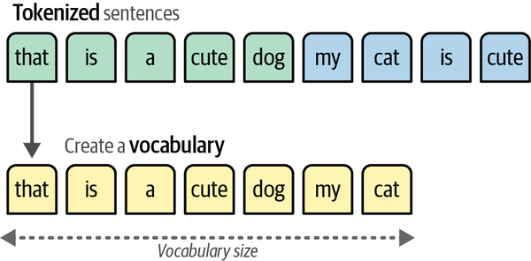
由于8和30是评估的最大值，你应该尝试用更高的值再次搜索；分数可能会继续提高。
你也可以直接获得最佳估计器：
>>> grid_search.best_estimator_
RandomForestRegressor(bootstrap=True, criterion=‘mse’, max_depth=None, max_features=8, max_leaf_nodes=None, min_impurity_decrease=0.0, min_impurity_split=None, min_samples_leaf=1, min_samples_split=2, min_weight_fraction_leaf=0.0, n_estimators=30, n_jobs=None, oob_score=False, random_state=None, verbose=0, warm_start=False)
如果 GridSearchCV 初始化时设置 refit=True（这是默认值），那么一旦它使用交叉验证找到最佳估计器，就会在整个训练集上重新训练它。这通常是个好主意，因为提供更多数据可能会提高其性能。

当然，评估分数也是可用的：
>>> cvres = grid_search.cv_results_
>>> for mean_score, params in zip(cvres[“mean_test_score”], cvres[“params”]):
… print(np.sqrt(-mean_score), params)
…
63669.05791727153 {‘max_features’: 2, ‘n_estimators’: 3}
55627.16171305252 {‘max_features’: 2, ‘n_estimators’: 10}
53384.57867637289 {‘max_features’: 2, ‘n_estimators’: 30}
60965.99185930139 {‘max_features’: 4, ‘n_estimators’: 3}
52740.98248528835 {‘max_features’: 4, ‘n_estimators’: 10}
50377.344409590376 {‘max_features’: 4, ‘n_estimators’: 30}
58663.84733372485 {‘max_features’: 6, ‘n_estimators’: 3}
52006.15355973719 {‘max_features’: 6, ‘n_estimators’: 10}
50146.465964159885 {‘max_features’: 6, ‘n_estimators’: 30}
57869.25504027614 {‘max_features’: 8, ‘n_estimators’: 3}
51711.09443660957 {‘max_features’: 8, ‘n_estimators’: 10}
49682.25345942335 {‘max_features’: 8, ‘n_estimators’: 30}
62895.088889905004 {‘bootstrap’: False, ‘max_features’: 2, ‘n_estimators’: 3}
54658.14484390074 {‘bootstrap’: False, ‘max_features’: 2, ‘n_estimators’: 10}
59470.399594730654 {‘bootstrap’: False, ‘max_features’: 3, ‘n_estimators’: 3}
52725.01091081235 {‘bootstrap’: False, ‘max_features’: 3, ‘n_estimators’: 10}
57490.612956065226 {‘bootstrap’: False, ‘max_features’: 4, ‘n_estimators’: 3}
51009.51445842374 {‘bootstrap’: False, ‘max_features’: 4, ‘n_estimators’: 10}
在这个例子中，我们通过将 max_features 超参数设置为 8 和 n_estimators 超参数设置为 30 来获得最佳解决方案。这种组合的RMSE分数是49,682，比你之前使用默认超参数值获得的分数（50,182）略好。恭喜，你已经成功微调了你的最佳模型！

不要忘记你可以将一些数据准备步骤视为超参数。例如，网格搜索将自动找出是否添加一个你不确定的特征（例如，使用你的 CombinedAttributesAdder 转换器的 add_bedrooms_per_room 超参数）。它同样可以用来自动找到处理异常值、缺失特征、特征选择等的最佳方法。
当你探索相对较少的组合时，网格搜索方法很好，就像前面的例子一样，但当超参数搜索空间很大时，通常最好使用 RandomizedSearchCV。这个类的使用方式与 GridSearchCV 类非常相似，但它不是尝试所有可能的组合，而是通过在每次迭代时为每个超参数选择一个随机值来评估给定数量的随机组合。这种方法有两个主要好处：
• 如果你让随机搜索运行1,000次迭代，这种方法将为每个超参数探索1,000个不同的值（而不是网格搜索方法中每个超参数只有几个值）。
• 通过简单地设置迭代次数，你可以更好地控制你想要分配给超参数搜索的计算预算。
优化系统的另一种方法是尝试组合表现最佳的模型。这个组合（或”集成”）通常比最佳单个模型表现更好（就像随机森林比其依赖的单个决策树表现更好），特别是当单个模型产生不同类型的错误时。
我们将在第7章中更详细地讨论这个主题。
通过检查最佳模型，你经常能获得对问题的良好洞察。例如，RandomForestRegressor可以指示每个属性对于做出准确预测的相对重要性：
>>> feature_importances = grid_search.best_estimator_.feature_importances_
>>> feature_importances
array([7.33442355e-02, 6.29090705e-02, 4.11437985e-02, 1.46726854e-02,第2章：端到端机器学习项目 | 78
1.41064835e-02, 1.48742809e-02, 1.42575993e-02, 3.66158981e-01,
5.64191792e-02, 1.08792957e-01, 5.33510773e-02, 1.03114883e-02,
1.64780994e-01, 6.02803867e-05, 1.96041560e-03, 2.85647464e-03])让我们将这些重要性分数与其对应的属性名称一起显示：
>>> extra_attribs = ["rooms_per_hhold", "pop_per_hhold", "bedrooms_per_room"]
>>> cat_encoder = full_pipeline.named_transformers_["cat"]
>>> cat_one_hot_attribs = list(cat_encoder.categories_[0])
>>> attributes = num_attribs + extra_attribs + cat_one_hot_attribs
>>> sorted(zip(feature_importances, attributes), reverse=True)
[(0.3661589806181342, 'median_income'),
(0.1647809935615905, 'INLAND'),
(0.10879295677551573, 'pop_per_hhold'),
(0.07334423551601242, 'longitude'),
(0.0629090704826203, 'latitude'),
(0.05641917918195401, 'rooms_per_hhold'),
(0.05335107734767581, 'bedrooms_per_room'),
(0.041143798478729635, 'housing_median_age'),
(0.014874280890402767, 'population'),
(0.014672685420543237, 'total_rooms'),
(0.014257599323407807, 'households'),
(0.014106483453584102, 'total_bedrooms'),
(0.010311488326303787, '<1H OCEAN'),
(0.002856474637320158, 'NEAR OCEAN'),
(0.00196041559947807, 'NEAR BAY'),
(6.028038672736599e-05, 'ISLAND')]有了这些信息，你可能想要尝试去掉一些不太有用的特征（例如，显然只有一个ocean_proximity类别真正有用，所以你可以尝试去掉其他的）。
你还应该查看系统产生的具体错误，然后尝试理解为什么会产生这些错误以及如何解决问题（添加额外特征或去除无信息特征、清理异常值等）。
在调整模型一段时间后，你最终有了一个表现足够好的系统。现在是时候在测试集上评估最终模型了。这个过程没有什么特别的；只需从测试集中获取预测变量和标签，运行你的full_pipeline来转换数据（调用transform()，不是fit_transform()——你不想拟合测试集！），然后在测试集上评估最终模型：
final_model = grid_search.best_estimator_
X_test = strat_test_set.drop("median_house_value", axis=1)
y_test = strat_test_set["median_house_value"].copy()
X_test_prepared = full_pipeline.transform(X_test)优化你的模型 | 79
final_predictions = final_model.predict(X_test_prepared)
final_mse = mean_squared_error(y_test, final_predictions)
final_rmse = np.sqrt(final_mse) # => 评估结果为47,730.2在某些情况下，泛化误差的这种点估计可能不足以说服你发布：如果它只比当前生产中的模型好0.1%怎么办？你可能想知道这个估计有多精确。为此，你可以使用scipy.stats.t.interval()计算泛化误差的95%置信区间：
>>> from scipy import stats
>>> confidence = 0.95
>>> squared_errors = (final_predictions - y_test) ** 2
>>> np.sqrt(stats.t.interval(confidence, len(squared_errors) - 1,
... loc=squared_errors.mean(),
... scale=stats.sem(squared_errors)))
...
array([45685.10470776, 49691.25001878])如果你做了很多超参数调优，性能通常会比使用交叉验证测量的结果稍差（因为你的系统最终被微调为在验证数据上表现良好，在未知数据集上可能表现不如预期）。在这个例子中不是这种情况，但当这种情况发生时，你必须抵制调整超参数以使测试集上的数字看起来更好的诱惑；这些改进不太可能推广到新数据上。
现在是项目预发布阶段：你需要展示你的解决方案（突出你学到了什么、什么有效什么无效、做了什么假设，以及你的系统有什么局限性），记录一切，并创建漂亮的演示文稿，包含清晰的可视化和易于记忆的陈述（例如，“中位收入是房价的头号预测因子”）。在这个加州房屋例子中，系统的最终性能并不比专家的价格估算更好，专家的估算误差通常约为20%，但发布它仍然可能是个好主意，特别是如果这能为专家腾出一些时间，让他们可以从事更有趣和富有成效的任务。
完美，你已经获得了发布的批准！现在你需要让你的解决方案为生产环境做好准备（例如，完善代码、编写文档和测试等等）。然后你可以将模型部署到生产环境中。一种方法是保存
训练好的 Scikit-Learn 模型（例如，使用 [joblib]），包括完整的预处理和预测管道，然后在生产环境中加载这个训练好的模型，通过调用其 [predict()] 方法来进行预测。例如，也许这个模型将在网站中使用：用户会输入一些关于新区域的数据
80 | 第2章：端到端机器学习项目
并点击预估价格按钮。这会发送一个包含数据的查询到web服务器，服务器会将其转发到你的web应用程序，最后你的代码将简单地调用模型的 [predict()] 方法（你希望在服务器启动时加载模型，而不是每次使用模型时都加载）。或者，你可以将模型包装在一个专用的web服务中，你的web应用程序可以通过REST API查询该服务（见图2-17）。这使得升级模型到新版本变得更容易，而不会中断主应用程序。它还简化了扩展，因为你可以启动所需数量的web服务，并在这些web服务之间对来自web应用程序的请求进行负载均衡。此外，它允许你的web应用程序使用任何语言，不仅仅是Python。
图2-17. 作为web服务部署并被web应用程序使用的模型
另一个流行的策略是将模型部署到云上，例如Google Cloud AI Platform（以前称为Google Cloud ML Engine）：只需使用 [joblib] 保存模型并将其上传到Google Cloud Storage (GCS)，然后前往Google Cloud AI Platform创建新的模型版本，将其指向GCS文件。就是这样！这为你提供了一个简单的web服务，为你处理负载均衡和扩展。它接受包含输入数据（例如，一个区域的数据）的JSON请求，并返回包含预测结果的JSON响应。然后你可以在网站（或你正在使用的任何生产环境）中使用这个web服务。正如我们将在第19章中看到的，在AI Platform上部署TensorFlow模型与部署Scikit-Learn模型没有太大区别。
但部署并不是故事的结尾。你还需要编写监控代码来定期检查系统的实时性能，并在性能下降时触发警报。这可能是急剧下降，很可能是由于基础设施中的组件损坏，但要注意，这也可能是缓慢的衰减，很容易长时间不被注意到。这是很常见的，因为模型往往会随着时间”腐化”：实际上，世界在变化，所以如果模型是用去年的数据训练的，它可能不适应今天的数据。
[23] [简而言之，REST（或RESTful）API是基于HTTP的API，遵循一些约定，如使用标准HTTP动词来读取、更新、创建或删除资源（GET、POST、PUT和DELETE），并使用JSON作为输入和输出。]
发布、监控和维护你的系统 | 81
即使是训练来分类猫狗图片的模型也可能需要定期重新训练，不是因为猫狗会在一夜之间发生变异，而是因为相机在不断变化，图像格式、清晰度、亮度和尺寸比例也在变化。此外，人们明年可能喜欢不同的品种，或者他们可能决定给宠物戴上小帽子——谁知道呢？
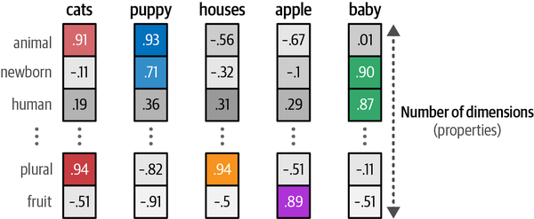
所以你需要监控模型的实时性能。但你如何做到这一点呢？嗯，这取决于情况。在某些情况下，模型的性能可以从下游指标推断出来。例如，如果你的模型是推荐系统的一部分，它建议用户可能感兴趣的产品，那么监控每天销售的推荐产品数量就很容易。如果这个数字下降（与非推荐产品相比），那么主要嫌疑对象就是模型。这可能是因为数据管道损坏，或者模型需要用新数据重新训练（我们很快会讨论这个问题）。
然而，在没有任何人工分析的情况下，并不总是能够确定模型的性能。例如，假设你训练了一个图像分类模型（见第3章）来检测生产线上的几种产品缺陷。在数千个有缺陷的产品被运送给客户之前，如果模型性能下降，你如何获得警报？一个解决方案是向人工评估员发送模型分类的所有图片样本（特别是模型不太确定的图片）。根据任务的不同，评估员可能需要是专家，或者他们可能是非专业人员，如众包平台上的工作者（例如，Amazon Mechanical Turk）。在某些应用中，他们甚至可能是用户自己，例如通过调查或重新利用的验证码来响应。
无论哪种方式，你都需要建立一个监控系统（有或没有人工评估员来评估实时模型），以及所有相关的流程来定义在失败情况下该做什么以及如何为此做准备。不幸的是，这可能是大量的工作。实际上，这通常比构建和训练模型要多得多的工作。
如果数据持续演变，你需要定期更新数据集并重新训练模型。你应该尽可能地自动化整个过程。以下是你可以自动化的一些事情：
• 定期收集新数据并标记（例如，使用人工评估员）。
• 编写脚本自动训练模型并微调超参数。这个脚本可以自动运行，例如每天或每周，取决于你的需求。
[24] [验证码(captcha)是一种测试，用来确保用户不是机器人。这些测试经常被用作标注训练数据的廉价方式。]
82 | 第2章：端到端机器学习项目
• 编写另一个脚本，在更新的测试集上评估新模型和之前的模型，如果性能没有下降就部署模型到生产环境（如果性能下降了，确保调查原因）。
你还应该确保评估模型的输入数据质量。有时性能会因为低质量的信号而略有下降（例如，故障传感器发送随机值，或其他团队的输出变得陈旧），但可能需要一段时间系统性能才会下降到足以触发警报。如果你监控模型的输入，可能会更早发现这种情况。例如，如果越来越多的输入缺少某个特征，或者其均值或标准差偏离训练集太远，或分类特征开始包含新类别，你可以触发警报。
最后，确保保留你创建的每个模型的备份，并准备好流程和工具，以便在新模型开始严重失效时能够快速回滚到之前的模型。拥有备份还可以轻松地将新模型与之前的模型进行比较。同样，你应该保留数据集每个版本的备份，这样如果新数据集被损坏（例如，添加到其中的新数据充满异常值），你可以回滚到之前的数据集。拥有数据集备份还允许你在任何之前的数据集上评估任何模型。

你可能希望创建测试集的几个子集，以评估你的模型在数据特定部分上的表现。例如，你可能希望有一个只包含最新数据的子集，或针对特定类型输入的测试集（例如，内陆地区与靠近海洋地区的对比）。这将让你更深入地了解模型的优势和劣势。
如你所见，机器学习涉及相当多的基础设施，所以如果你的第一个ML项目需要大量努力和时间来构建并部署到生产环境，不要感到惊讶。幸运的是，一旦所有基础设施都到位，从想法到生产的过程会快得多。
试试看！
希望本章让你对机器学习项目的样子有了很好的了解，并向你展示了一些可以用来训练优秀系统的工具。如你所见，大部分工作都在数据准备步骤：构建监控工具、设置人工评估流水线和自动化定期模型训练。机器学习算法当然很重要，但可能更好的做法是熟悉整个过程并深入了解三四个算法，而不是把所有时间都花在探索高级算法上。
试试看！ | 83
所以，如果你还没有这样做，现在是拿起笔记本电脑，选择一个你感兴趣的数据集，尝试完成从A到Z整个过程的好时机。一个好的起点是竞赛网站，比如http://kaggle.com/：你会有一个数据集来练习，一个明确的目标，以及可以分享经验的人。玩得开心！
练习
以下练习都基于本章的房价数据集：
尝试支持向量机回归器([sklearn.svm.SVR])和各种超参数，如[kernel=“linear”]（使用[C]超参数的各种值）或[kernel=“rbf”]（使用[C]和[gamma]超参数的各种值）。现在不要担心这些超参数的含义。最佳[SVR]预测器的表现如何？
尝试用[RandomizedSearchCV]替换[GridSearchCV]。
尝试在准备流水线中添加一个转换器，只选择最重要的属性。
尝试创建一个单一流水线，完成完整的数据准备加最终预测。
使用[GridSearchCV]自动探索一些准备选项。
这些练习的解决方案可以在Jupyter notebooks中找到，地址：https://github.com/ageron/handson-ml2
84 | 第2章：端到端机器学习项目
分类
在第1章中我提到，最常见的监督学习任务是回归（预测值）和分类（预测类别）。在第2章中我们探索了一个回归任务，使用各种算法如线性回归、决策树和随机森林（将在后面章节中详细解释）预测房价。现在我们将注意力转向分类系统。
在本章中我们将使用MNIST数据集，这是一个包含70,000张由高中生和美国人口普查局员工手写数字的小图像的集合。每张图像都标有它所代表的数字。这个数据集被研究得如此之多，以至于它经常被称为机器学习的”hello world”：每当人们想出新的分类算法时，他们都好奇看看它在MNIST上的表现如何，任何学习机器学习的人迟早都会处理这个数据集。
Scikit-Learn提供了许多辅助函数来下载流行的数据集。MNIST就是其中之一。以下代码获取MNIST数据集：
>>> from sklearn.datasets import fetch_openml >>> mnist = fetch_openml(‘mnist_784’, version=1) >>> mnist.keys() dict_keys([‘data’, ‘target’, ‘feature_names’, ‘DESCR’, ‘details’,
Datasets loaded by Scikit-Learn generally have a similar dictionary structure, including the following:
• A DESCR key describing the dataset
• A data key containing an array with one row per instance and one column per feature
• A target key containing an array with the labels
Let’s look at these arrays:
>>> X, y = mnist[“data”], mnist[“target”]
>>> X.shape
(70000, 784)
>>> y.shape
(70000,)
There are 70,000 images, and each image has 784 features. This is because each image is 28 × 28 pixels, and each feature simply represents one pixel’s intensity, from 0 (white) to 255 (black). Let’s take a peek at one digit from the dataset. All you need to do is grab an instance’s feature vector, reshape it to a 28 × 28 array, and display it using Matplotlib’s imshow() function:
import matplotlib as mpl
import matplotlib.pyplot as plt
some_digit = X[0]
some_digit_image = some_digit.reshape(28, 28)
plt.imshow(some_digit_image, cmap=“binary”)
plt.axis(“off”)
plt.show()
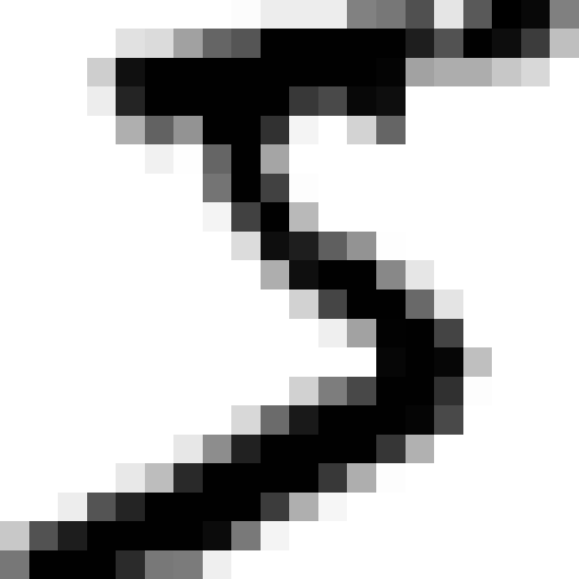
This looks like a 5, and indeed that’s what the label tells us:
>>> y[0]
‘5’
Note that the label is a string. Most ML algorithms expect numbers, so let’s cast y to integer:
>>> y = y.astype(np.uint8)
To give you a feel for the complexity of the classification task, Figure 3-1 shows a few more images from the MNIST dataset.
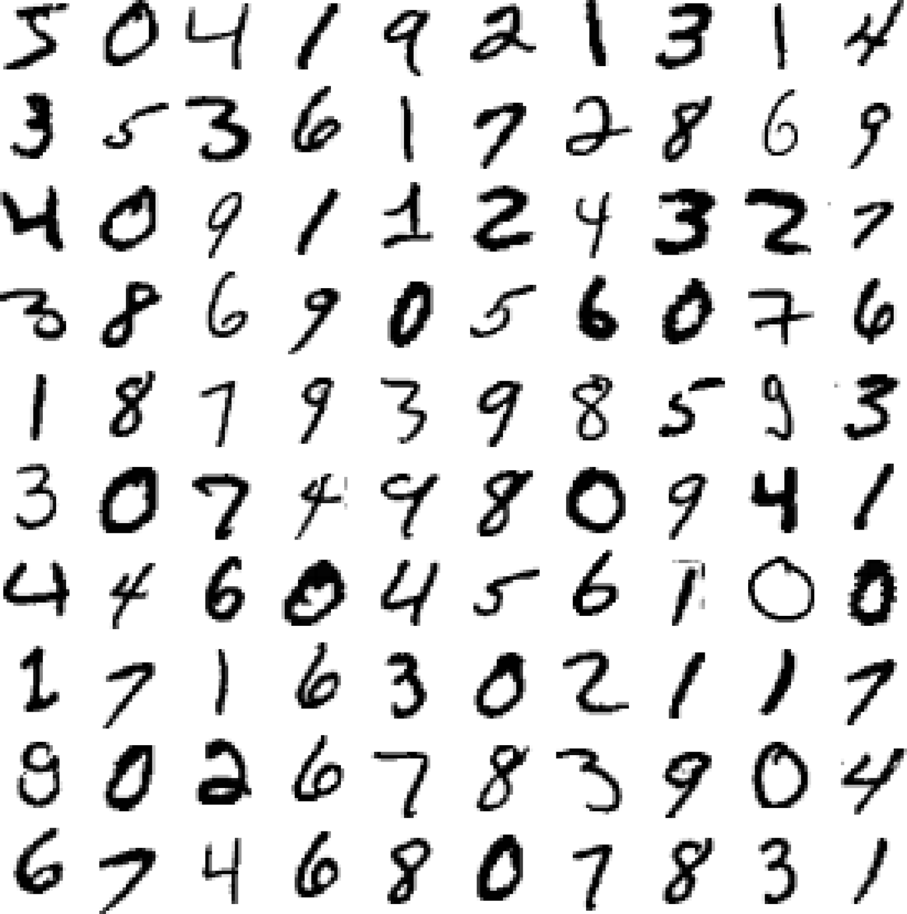
Figure 3-1. Digits from the MNIST dataset
But wait! You should always create a test set and set it aside before inspecting the data closely. The MNIST dataset is actually already split into a training set (the first 60,000 images) and a test set (the last 10,000 images):
X_train, X_test, y_train, y_test = X[:60000], X[60000:], y[:60000], y[60000:]
The training set is already shuffled for us, which is good because this guarantees that all cross-validation folds will be similar (you don’t want one fold to be missing some digits). Moreover, some learning algorithms are sensitive to the order of the training instances, and they perform poorly if they get many similar instances in a row. Shuffling the dataset ensures that this won’t happen.
Let’s simplify the problem for now and only try to identify one digit—for example, the number 5. This “5-detector” will be an example of a binary classifier, capable of distinguishing between just two classes, 5 and not-5. Let’s create the target vectors for this classification task:
y_train_5 = (y_train == 5) # True for all 5s, False for all other digits
y_test_5 = (y_test == 5)
Now let’s pick a classifier and train it. A good place to start is with a Stochastic Gradient Descent (SGD) classifier, using Scikit-Learn’s SGDClassifier class. This classifier has the advantage of being capable of handling very large datasets efficiently. This is in part because SGD deals with training instances independently, one at a time (which also makes SGD well suited for online learning), as we will see later. Let’s create an SGDClassifier and train it on the whole training set:
from sklearn.linear_model import SGDClassifier
sgd_clf = SGDClassifier(random_state=42)
sgd_clf.fit(X_train, y_train_5)
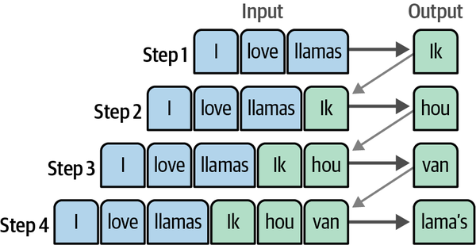
The SGDClassifier relies on randomness during training (hence the name “stochastic”). If you want reproducible results, you should set the random_state parameter.
Now we can use it to detect images of the number 5:
>>> sgd_clf.predict([some_digit])
array([ True])
The classifier guesses that this image represents a 5 (True). Looks like it guessed right in this particular case! Now, let’s evaluate this model’s performance.
Evaluating a classifier is often significantly trickier than evaluating a regressor, so we will spend a large part of this chapter on this topic. There are many performance measures available, so grab another coffee and get ready to learn many new concepts and acronyms!
A good way to evaluate a model is to use cross-validation, just as you did in Chapter 2.
Occasionally you will need more control over the cross-validation process than what Scikit-Learn provides off the shelf. In these cases, you can implement cross-validation yourself. The following code does roughly the same thing as Scikit-Learn’s cross_val_score() function, and it prints the same result:
from sklearn.model_selection import StratifiedKFold from sklearn.base import clone
skfolds = StratifiedKFold(n_splits=3, random_state=42)
for train_index, test_index in skfolds.split(X_train, y_train_5):
clone_clf = clone(sgd_clf)
X_train_folds = X_train[train_index] y_train_folds = y_train_5[train_index] X_test_fold = X_train[test_index] y_test_fold = y_train_5[test_index]
clone_clf.fit(X_train_folds, y_train_folds)
y_pred = clone_clf.predict(X_test_fold)
n_correct = sum(y_pred == y_test_fold)
print(n_correct / len(y_pred)) # 输出 0.9502, 0.96565, 和 0.96495StratifiedKFold 类执行分层采样（如第2章所述）来产生包含每个类别代表性比例的折叠。在每次迭代中，代码创建一个分类器的克隆，在训练折叠上训练该克隆，并在测试折叠上进行预测。然后计算正确预测的数量并输出正确预测的比例。
让我们使用 cross_val_score() 函数来评估我们的 SGDClassifier 模型，使用三折的K折交叉验证。记住K折交叉验证意味着将训练集分割成K个折叠（在这种情况下是三个），然后使用在剩余折叠上训练的模型在每个折叠上进行预测和评估（参见第2章）：
>>> from sklearn.model_selection import cross_val_score
>>> cross_val_score(sgd_clf, X_train, y_train_5, cv=3, scoring="accuracy")
array([0.96355, 0.93795, 0.95615])哇！在所有交叉验证折叠上都超过93%的准确率（正确预测的比例）？这看起来很棒，不是吗？好吧，在你过于兴奋之前，让我们看看一个非常愚蠢的分类器，它只是将每一张图像都分类为”非5”类：
性能指标 | 89
from sklearn.base import BaseEstimator
class Never5Classifier(BaseEstimator):
def fit(self, X, y=None):
return self
def predict(self, X):
return np.zeros((len(X), 1), dtype=bool)你能猜到这个模型的准确率吗？让我们找出答案：
>>> never_5_clf = Never5Classifier()
>>> cross_val_score(never_5_clf, X_train, y_train_5, cv=3, scoring="accuracy")
array([0.91125, 0.90855, 0.90915])没错，它有超过90%的准确率！这仅仅是因为只有大约10%的图像是5，所以如果你总是猜测一张图像不是5，你大约90%的时间都是对的。击败了诺斯特拉达穆斯。
这说明了为什么准确率通常不是分类器的首选性能指标，特别是当你处理偏斜数据集（即某些类别比其他类别更频繁出现）时。
评估分类器性能的一个更好方法是查看混淆矩阵。基本思想是计算类别A的实例被分类为类别B的次数。例如，要知道分类器将5的图像与3混淆了多少次，你需要查看混淆矩阵的第五行第三列。
要计算混淆矩阵，你首先需要有一组预测，以便将它们与实际目标进行比较。你可以在测试集上进行预测，但现在让我们保持测试集不被触动（记住你只想在项目的最后，一旦你有了准备发布的分类器时才使用测试集）。相反，你可以使用 cross_val_predict() 函数：
from sklearn.model_selection import cross_val_predict
y_train_pred = cross_val_predict(sgd_clf, X_train, y_train_5, cv=3)就像 cross_val_score() 函数一样，cross_val_predict() 执行K折交叉验证，但不是返回评估分数，而是返回在每个测试折叠上做出的预测。这意味着你为训练集中的每个实例获得一个干净的预测（“干净”意味着预测是由在训练期间从未见过该数据的模型做出的）。
现在你准备使用 confusion_matrix() 函数获得混淆矩阵。只需向它传递目标类别（y_train_5）和预测类别（y_train_pred）：
90 | 第3章：分类
>>> from sklearn.metrics import confusion_matrix
>>> confusion_matrix(y_train_5, y_train_pred)
array([[53057, 1522],
[ 1325, 4096]])混淆矩阵中的每一行代表一个实际类别，而每一列代表一个预测类别。这个矩阵的第一行考虑非5图像（负类）：其中53,057个被正确分类为非5（它们被称为真负类），而剩余的1,522个被错误分类为5（假正类）。第二行考虑5的图像（正类）：1,325个被错误分类为非5（假负类），而剩余的4,096个被正确分类为5（真正类）。一个完美的分类器只会有真正类和真负类，所以它的混淆矩阵只在主对角线上（从左上到右下）有非零值：
>>> y_train_perfect_predictions = y_train_5 # 假装我们达到了完美
>>> confusion_matrix(y_train_5, y_train_perfect_predictions)
array([[54579, 0],
[ 0, 5421]])混淆矩阵给你很多信息，但有时你可能更喜欢更简洁的指标。一个有趣的指标是正预测的准确率；这被称为分类器的精确率（方程3-1）。
方程3-1. 精确率
precision = TP / (TP + FP)
TP 是真正类的数量，FP 是假正类的数量。
获得完美精度的一个简单方法是只做一个正预测并确保它是正确的（精度 = 1/1 = 100%）。但这并不是很有用，因为分类器会忽略除了一个正实例之外的所有其他实例。所以精度通常与另一个名为召回率的指标一起使用，也称为敏感性或真正例率(TPR)：这是分类器正确检测到的正实例的比例
[(方程 3-2)]。
方程 3-2. 召回率
[召回率 =] [TP] [TP] [+] [FN]
FN 当然是假负例的数量。
如果你对混淆矩阵感到困惑，[图 3-2] 可能会有帮助。
[性能度量 | 91]
图 3-2. 混淆矩阵图解展示了真负例（左上）、假正例（右上）、假负例（左下）和真正例（右下）的示例
[精度和召回率]
Scikit-Learn 提供了几个函数来计算分类器指标，包括精度和召回率：
[>>> ][from] [sklearn.metrics] [import] [precision_score][, ][recall_score]
[>>> ][precision_score][(][y_train_5][, ][y_train_pred][) ][# == 4096 / (4096 + 1522)]
[0.7290850836596654]
[>>> ][recall_score][(][y_train_5][, ][y_train_pred][) ][# == 4096 / (4096 + 1325)]
[0.7555801512636044]
现在你的5检测器看起来不像你只看准确率时那么光鲜了。当它声称一个图像代表5时，只有72.9%的时间是正确的。而且，它只检测到了75.6%的5。
将精度和召回率合并为一个称为F[1] 分数的单一指标通常很方便，尤其是如果你需要一种简单的方法来比较两个分类器。F[1]分数是
精度和召回率的调和平均数[（][方程 3-3][）。而常规平均数]平等对待所有值，调和平均数给予低值更多的权重。
因此，只有当召回率和精度都很高时，分类器才会获得高F[1]分数。
方程 3-3. F [1]
[F] [2] [TP] [=] [= 2 × 精度 × 召回率] [1] [1] [1] [精度 + 召回率 =] [FN] [+] [FP] [+] [TP] [+] [精度] [召回率] [2]
[92 | 第3章：分类] 要计算F[1]分数，只需调用[f1_score()]函数：
[>>> ][from] [sklearn.metrics] [import] [f1_score]
[>>> ][f1_score][(][y_train_5][, ][y_train_pred][)]
[0.7420962043663375]
F[1]分数偏爱具有相似精度和召回率的分类器。这并不总是你想要的：在某些情况下你主要关心精度，在其他情况下你真正关心召回率。例如，如果你训练了一个分类器来检测对儿童安全的视频，你可能更喜欢一个拒绝许多好视频（低召回率）但只保留安全视频（高精度）的分类器，而不是一个召回率高得多但让一些真正糟糕的视频出现在你的产品中的分类器（在这种情况下，你甚至可能想要添加一个人工流程来检查分类器的视频选择）。另一方面，假设你训练一个分类器来检测监控图像中的商店扒手：只要它有99%的召回率，你的分类器只有30%的精度可能也没关系（当然，保安会收到一些错误警报，但几乎所有扒手都会被抓住）。
不幸的是，你不能两全其美：提高精度会降低召回率，反之亦然。这被称为精度/召回率权衡。
[精度/召回率权衡]
要理解这种权衡，让我们看看[SGDClassifier]如何做出分类决策。对于每个实例，它基于决策函数计算一个分数。如果该分数大于阈值，它将实例分配给正类；
否则它将其分配给负类。[图 3-3 显示了一些数字的位置]从左边的最低分数到右边的最高分数。假设决策阈值位于中央箭头处（两个5之间）：你会在该阈值右侧找到4个真正例（实际的5），以及1个假正例（实际上是6）。因此，使用该阈值，精度为80%（5个中的4个）。但在6个实际的5中，分类器只检测到4个，所以召回率为67%（6个中的4个）。如果你提高阈值（将其移动到右边的箭头），假正例（6）变成真负例，从而提高精度（在这种情况下高达100%），但一个真正例变成假负例，召回率下降到50%。相反，降低阈值会增加召回率并降低精度。
[性能度量 | 93]
图 3-3. 在这个精度/召回率权衡中，图像按分类器分数排名，那些高于所选决策阈值的被认为是正例；阈值越高，召回率越低，但（通常）精度越高
Scikit-Learn不让你直接设置阈值，但它确实让你访问用于做出预测的决策分数。你可以调用分类器的[decision_function()]方法，而不是调用[predict()]方法，该方法为每个实例返回一个分数，然后你可以使用任何阈值基于这些分数进行预测：
[>>> ][y_scores] [=] [sgd_clf][.][decision_function][([some_digit])]
[>>> ][y_scores]
[array([2412.53175101])]
[>>> ][threshold] [=] [0]
[>>> ][y_some_digit_pred] [=][ (][y_scores] [>] [threshold][)]
[array([ True])]
[SGDClassifier]使用等于0的阈值，所以前面的代码返回与[predict()]方法相同的结果（即[True]）。让我们提高阈值：
[>>> ][threshold] [=] [8000]
[>>> ][y_some_digit_pred] [=][ (][y_scores] [>] [threshold][)]
[>>> ][y_some_digit_pred]
[array([False])]
这证实了提高阈值会降低召回率。图像实际上表示数字5，当阈值为0时分类器能检测到它，但当阈值增加到8,000时就会错过它。
如何决定使用哪个阈值？首先，使用[cross_val_predict()]函数获取训练集中所有实例的分数，但这次指定返回决策分数而不是预测结果：
[y_scores] [=] [cross_val_predict][(][sgd_clf][, ][X_train][, ][y_train_5][, ][cv][=][3][,]
[method][=]["decision_function"][)]
有了这些分数，使用[precision_recall_curve()]函数计算所有可能阈值的精确率和召回率：
第3章：分类 | 94
[from] [sklearn.metrics] [import] [precision_recall_curve]
[precisions][, ][recalls][, ][thresholds] [=] [precision_recall_curve][(][y_train_5][, ][y_scores][)]
最后，使用Matplotlib将精确率和召回率绘制为阈值的函数(图3-4)：
[def] [plot_precision_recall_vs_threshold][(][precisions][, ][recalls][, ][thresholds][):]
[plt][.][plot][(][thresholds][, ][precisions][[:][-][1][], ]["b--"][, ][label][=]["Precision"][)] [plt][.][plot][(][thresholds][, ][recalls][[:][-][1][], ]["g-"][, ][label][=]["Recall"][)]
[[][...][] ][# 高亮阈值并添加图例、坐标轴标签和网格]
[plot_precision_recall_vs_threshold][(][precisions][, ][recalls][, ][thresholds][)]
[plt][.][show][()]
图3-4. 精确率和召回率与决策阈值的关系
[你可能想知道为什么图3-4中精确率曲线比召回率]

[曲线更加波动。原因是当你提高阈值时，精确率有时可能会]
[下降(虽然通常情况下会上升)。要理解为什么，回看][[图3-3]][并注意当你从中央阈值开始并将其向右移动一位时会发生什么：精确率从4/5(80%)下降到3/4(75%)。另一方面，当阈值增加时，召回率只会下降，这解释了为什么其曲线看起来很平滑。]
选择良好精确率/召回率权衡的另一种方法是直接将精确率对召回率作图，如图3-5所示(突出显示了与之前相同的阈值)。
性能指标 | 95
图3-5. 精确率与召回率
你可以看到精确率在80%召回率附近开始急剧下降。你可能想在这个下降点之前选择精确率/召回率权衡——例如，在大约60%召回率处。但当然，选择取决于你的项目。
假设你决定目标是90%精确率。你查看第一个图并发现需要使用大约8,000的阈值。为了更精确，你可以搜索给出至少90%精确率的最低阈值([np.argmax()]将给出最大值的第一个索引，在这种情况下意味着第一个[True]值)：
[threshold_90_precision] [=] [thresholds][[][np][.][argmax][(][precisions] [>=] [0.90][)] ][# ~7816]
要进行预测(目前在训练集上)，不用调用分类器的[predict()]方法，你可以运行以下代码：
[y_train_pred_90] [=][ (][y_scores] [>=] [threshold_90_precision][)]
让我们检查这些预测的精确率和召回率：
[>>> ][precision_score][(][y_train_5][, ][y_train_pred_90][)]
[0.9000380083618396]
[>>> ][recall_score][(][y_train_5][, ][y_train_pred_90][)]
[0.4368197749492714]
很好，你有了一个90%精确率的分类器！如你所见，创建一个几乎任何所需精确率的分类器相当容易：只需设置足够高的阈值即可。但是等等，别急。如果召回率太低，高精确率分类器就不是很有用！
第3章：分类 | 96
[如果有人说：“让我们达到99%精确率”，你应该问：“在什么召回率下？”]
接收者操作特征(ROC)曲线是二元分类器使用的另一个常用工具。它与精确率/召回率曲线非常相似，但ROC曲线不是绘制精确率与召回率，而是绘制真正例率(召回率的另一个名称)与假正例率(FPR)。FPR是被错误分类为正例的负例比率。它等于1减去真负例率(TNR)，TNR是被正确分类为负例的负例比率。TNR也称为特异性。因此，ROC曲线绘制敏感性(召回率)与1减去特异性。
要绘制ROC曲线，首先使用[roc_curve()]函数计算各种阈值的TPR和FPR：
[from] [sklearn.metrics] [import] [roc_curve]
[fpr][, ][tpr][, ][thresholds] [=] [roc_curve][(][y_train_5][, ][y_scores][)]
然后可以使用Matplotlib绘制FPR与TPR的关系。这段代码生成图3-6中的图：
[def] [plot_roc_curve][(][fpr][, ][tpr][, ][label][=][None][):]
[plt][.][plot][(][fpr][, ][tpr][, ][linewidth][=][2][, ][label][=][label][)] [plt][.][plot][([][0][, ][1][], [][0][, ][1][], ]['k--'][) ][# 虚线对角线]
[[][...][] ][# 添加坐标轴标签和网格]
[plot_roc_curve][(][fpr][, ][tpr][)]
[plt][.][show][()]
再次出现权衡：召回率(TPR)越高，分类器产生的假正例(FPR)就越多。虚线表示纯随机分类器的ROC曲线；好的分类器应该尽可能远离该线(朝向左上角)。
性能指标 | 97
图3-6. 这个ROC曲线绘制了所有可能阈值的假正例率与真正例率；红色圆圈突出显示了选择的比率(在43.68%召回率处)
比较分类器的一种方法是测量曲线下面积(AUC)。完美的分类器的ROC AUC等于1，而纯随机分类器的ROC AUC等于0.5。Scikit-Learn提供了一个计算ROC AUC的函数：
[>>> ][from] [sklearn.metrics] [import] [roc_auc_score]
[>>> ][roc_auc_score][(][y_train_5][, ][y_scores][)]
[0.9611778893101814]

由于ROC曲线与precision/recall (PR)曲线非常相似，您可能想知道如何决定使用哪一个。作为经验法则，当正类稀少或当您更关心假阳性而不是假阴性时，应该优先选择PR曲线。否则，使用ROC曲线。例如，查看之前的ROC曲线（和ROC AUC分数），您可能认为分类器真的很好。但这主要是因为与负样本（非5）相比，正样本（5）很少。相比之下，PR曲线清楚地表明分类器还有改进空间（曲线可以更接近左上角）。
现在让我们训练一个[RandomForestClassifier]并将其ROC曲线和ROC AUC分数与[SGDClassifier]的进行比较。首先，您需要获取训练集中每个实例的分数。但由于其工作方式（见第7章），[RandomForestClassifier]类没有[decision_function()]方法。相反，它有一个[predict_proba()]方法。Scikit-Learn分类器通常具有其中一个或另一个，或两者都有。[predict_proba()]方法返回一个数组，每个实例包含一行，每个类包含一列，每列包含给定实例属于给定类的概率（例如，图像表示5的概率为70%）：
[from] [sklearn.ensemble] [import] [RandomForestClassifier]
[forest_clf] [=] [RandomForestClassifier][(][random_state][=][42][)]
[y_probas_forest] [=] [cross_val_predict][(][forest_clf][, ][X_train][, ][y_train_5][, ][cv][=][3][,]
[method][=]["predict_proba"][)]
[roc_curve()]函数期望标签和分数，但您可以给它类概率而不是分数。让我们使用正类的概率作为分数：
[y_scores_forest] [=] [y_probas_forest][[:, ][1][] ][# score = proba of positive class]
[fpr_forest][, ][tpr_forest][, ][thresholds_forest] [=] [roc_curve][(][y_train_5][,][y_scores_forest][)]
现在您可以绘制ROC曲线了。绘制第一条ROC曲线以查看它们如何比较也很有用（图3-7）：
[plt][.][plot][(][fpr][, ][tpr][, ]["b:"][, ][label][=]["SGD"][)]
[plot_roc_curve][(][fpr_forest][, ][tpr_forest][, ]["Random Forest"][)]
[plt][.][legend][(][loc][=]["lower right"][)]
[plt][.][show][()]
图3-7. 比较ROC曲线：Random Forest分类器优于SGD分类器，因为其ROC曲线更接近左上角，并且具有更大的AUC
如您在图3-7中所见，[RandomForestClassifier]的ROC曲线看起来比[SGDClassifier]的好得多：它更接近左上角。因此，其ROC AUC分数也明显更好：
[>>> ][roc_auc_score][(][y_train_5][, ][y_scores_forest][)]
[0.9983436731328145]
尝试测量precision和recall分数：您应该发现99.0%的precision和86.6%的recall。还不错！
您现在知道如何训练二元分类器，为您的任务选择适当的指标，使用cross-validation评估您的分类器，选择适合您需求的precision/recall权衡，并使用ROC曲线和ROC AUC分数来比较各种模型。现在让我们尝试检测不只是5的数字。
而二元分类器区分两个类，多类分类器（也称为多项式分类器）可以区分两个以上的类。
一些算法（如SGD分类器、Random Forest分类器和朴素贝叶斯分类器）能够原生处理多个类。其他算法（如Logistic Regression或Support Vector Machine分类器）严格来说是二元分类器。然而，有各种策略可以用来使用多个二元分类器执行多类分类。
创建一个可以将数字图像分类为10个类（从0到9）的系统的一种方法是训练10个二元分类器，每个数字一个（0检测器、1检测器、2检测器等）。然后当您想要分类图像时，您从每个分类器获得该图像的决策分数，并选择其分类器输出最高分数的类。这称为一对其余(OvR)策略（也称为一对所有）。
另一种策略是为每对数字训练一个二元分类器：一个用于区分0和1，另一个用于区分0和2，另一个用于1和2，等等。这称为一对一(OvO)策略。如果有N个类，您需要训练N × (N – 1) / 2个分类器。对于MNIST问题，这意味着训练45个二元分类器！当您想要分类图像时，您必须让图像通过所有45个分类器，并查看哪个类赢得最多决斗。OvO的主要优势是每个分类器只需要在训练集的一部分上进行训练，用于它必须区分的两个类。
一些算法（如Support Vector Machine分类器）随着训练集大小的增加而扩展性差。对于这些算法，OvO是首选的，因为在小训练集上训练许多分类器比在大训练集上训练少数分类器更快。然而，对于大多数二元分类算法，OvR是首选的。
Scikit-Learn检测到您尝试对多类分类任务使用二元分类算法时，会根据算法自动运行OvR或OvO。让我们使用支持向量机分类器（参见第5章）来尝试这个，使用sklearn.svm.SVC类：
>>> from sklearn.svm import SVC
>>> svm_clf = SVC()
>>> svm_clf.fit(X_train, y_train) # y_train, not y_train_5
>>> svm_clf.predict([some_digit])
array([5], dtype=uint8)这很简单！这段代码在训练集上训练SVC，使用从0到9的原始目标类别（y_train），而不是”5对其余”的目标类别（y_train_5）。然后它进行预测（在这种情况下是正确的）。在底层，Scikit-Learn实际上使用了OvO策略：它训练了45个二元分类器，获得了它们对图像的决策得分，并选择了赢得最多对决的类别。
如果您调用decision_function()方法，您会看到它每个实例返回10个得分（而不是只有1个）。每个类别对应一个得分：
>>> some_digit_scores = svm_clf.decision_function([some_digit])
>>> some_digit_scores
array([[ 2.92492871, 7.02307409, 3.93648529, 0.90117363, 5.96945908,
9.5 , 1.90718593, 8.02755089, -0.13202708, 4.94216947]])最高得分确实对应于类别5：
>>> np.argmax(some_digit_scores)
5
>>> svm_clf.classes_
array([0, 1, 2, 3, 4, 5, 6, 7, 8, 9], dtype=uint8)
>>> svm_clf.classes_[5]
5当分类器被训练时，它将目标类别列表存储在其classes_属性中，按值排序。在这种情况下，classes_数组中每个类别的索引恰好与类别本身匹配（例如，索引5处的类别恰好是类别5），但通常您不会这么幸运。
如果您想强制Scikit-Learn使用一对一或一对其余策略，您可以使用OneVsOneClassifier或OneVsRestClassifier类。只需创建一个实例并将分类器传递给其构造函数（甚至不必是二元分类器）。例如，这段代码基于SVC使用OvR策略创建多类分类器：
>>> from sklearn.multiclass import OneVsRestClassifier
>>> ovr_clf = OneVsRestClassifier(SVC())
>>> ovr_clf.fit(X_train, y_train)>>> ovr_clf.predict([some_digit])
array([5], dtype=uint8)
>>> len(ovr_clf.estimators_)
10训练SGDClassifier（或RandomForestClassifier）同样简单：
>>> sgd_clf.fit(X_train, y_train)
>>> sgd_clf.predict([some_digit])
array([5], dtype=uint8)这次Scikit-Learn不需要运行OvR或OvO，因为SGD分类器可以直接将实例分类为多个类别。decision_function()方法现在每个类别返回一个值。让我们看看SGD分类器分配给每个类别的得分：
>>> sgd_clf.decision_function([some_digit])
array([[-15955.22628, -38080.96296, -13326.66695, 573.52692, -17680.68466,
2412.53175, -25526.86498, -12290.15705, -7946.05205, -10631.35889]])您可以看到分类器对其预测相当有信心：几乎所有得分都是大幅负数，而类别5的得分为2412.5。模型对类别3略有疑虑，得分为573.5。现在您当然想要评估这个分类器。像往常一样，您可以使用交叉验证。使用cross_val_score()函数来评估SGDClassifier的准确率：
>>> cross_val_score(sgd_clf, X_train, y_train, cv=3, scoring="accuracy")
array([0.8489802 , 0.87129356, 0.86988048])在所有测试折叠上都获得了超过84%的准确率。如果您使用随机分类器，您会得到10%的准确率，所以这不是一个坏分数，但您仍然可以做得更好。简单地缩放输入（如第2章中讨论的）将准确率提高到89%以上：
>>> from sklearn.preprocessing import StandardScaler
>>> scaler = StandardScaler()
>>> X_train_scaled = scaler.fit_transform(X_train.astype(np.float64))
>>> cross_val_score(sgd_clf, X_train_scaled, y_train, cv=3, scoring="accuracy")
array([0.89707059, 0.8960948 , 0.90693604])如果这是一个真实项目，您现在会按照机器学习项目检查清单中的步骤进行（参见附录B）。您会探索数据准备选项，尝试多个模型（筛选出最佳模型并使用GridSearchCV微调其超参数），并尽可能地自动化。在这里，我们假设您已经找到了一个有前途的模型，并且您想找到改进它的方法。做到这一点的一种方法是分析它所犯的错误类型。
首先，查看混淆矩阵。您需要使用cross_val_predict()函数进行预测，然后调用confusion_matrix()函数，就像您之前做的那样：
>>> y_train_pred = cross_val_predict(sgd_clf, X_train_scaled, y_train, cv=3)
>>> conf_mx = confusion_matrix(y_train, y_train_pred)
>>> conf_mx
array([[5578, 0, 22, 7, 8, 45, 35, 5, 222, 1],
[ 0, 6410, 35, 26, 4, 44, 4, 8, 198, 13],
[ 28, 27, 5232, 100, 74, 27, 68, 37, 354, 11],
[ 23, 18, 115, 5254, 2, 209, 26, 38, 373, 73],[[ 11, 14, 45, 12, 5219, 11, 33, 26, 299, 172],]
[[ 26, 16, 31, 173, 54, 4484, 76, 14, 482, 65],]
[[ 31, 17, 45, 2, 42, 98, 5556, 3, 123, 1],]
[[ 20, 10, 53, 27, 50, 13, 3, 5696, 173, 220],]
[[ 17, 64, 47, 91, 3, 125, 24, 11, 5421, 48],]
[[ 24, 18, 29, 67, 116, 39, 1, 174, 329, 5152]])]
这些数字太多了。使用Matplotlib的[matshow()]函数查看混淆矩阵的图像表示通常更方便：
[plt][.][matshow][(][conf_mx][, ][cmap][=][plt][.][cm][.][gray][)]
[plt][.][show][()]
这个混淆矩阵看起来相当不错，因为大多数图像都在主对角线上，这意味着它们被正确分类了。数字5看起来比其他数字稍微暗一些，这可能意味着数据集中5的图像较少，或者分类器在5上的表现不如其他数字。事实上，你可以验证这两种情况都是存在的。
让我们将焦点放在错误上。首先，你需要将混淆矩阵中的每个值除以相应类别中的图像数量，这样你就可以比较错误率而不是错误的绝对数量（这会让数量众多的类别看起来不公平地糟糕）：
[row_sums] [=] [conf_mx][.][sum][(][axis][=][1][, ][keepdims][=][True][)]
[norm_conf_mx] [=] [conf_mx] [/] [row_sums]
用零填充对角线以只保留错误，并绘制结果：
[np][.][fill_diagonal][(][norm_conf_mx][, ][0][)]
[plt][.][matshow][(][norm_conf_mx][, ][cmap][=][plt][.][cm][.][gray][)]
[plt][.][show][()]
你可以清楚地看到分类器犯的错误类型。记住行代表实际类别，而列代表预测类别。类别8的列相当明亮，这告诉你许多图像被错误分类为8。然而，类别8的行并不那么糟糕，告诉你实际的8通常被正确分类为8。如你所见，混淆矩阵不一定是对称的。你也可以看到3和5经常被混淆（双向都有）。
分析混淆矩阵通常会给你改进分类器的见解。看这个图，似乎你的努力应该花在减少错误的8上。例如，你可以尝试为那些看起来像8但实际不是8的数字收集更多训练数据，这样分类器就能学会将它们与真正的8区分开来。或者你可以设计新特征来帮助分类器——例如，编写一个算法来计算闭环的数量（例如，8有两个，6有一个，5没有）。或者你可以预处理图像（例如，使用Scikit-Image、Pillow或OpenCV）来使某些模式（如闭环）更加突出。
分析个别错误也是获得分类器工作原理和失败原因见解的好方法，但这更困难且耗时。例如，让我们绘制3和5的示例（[plot_digits()]函数只是使用Matplotlib的[imshow()]函数；详情请参见本章的Jupyter notebook）：
[cl_a][, ][cl_b] [=] [3][, ][5]
[X_aa] [=] [X_train][[(][y_train] [==] [cl_a][) ][&][ (][y_train_pred] [==] [cl_a][)]]
[X_ab] [=] [X_train][[(][y_train] [==] [cl_a][) ][&][ (][y_train_pred] [==] [cl_b][)]]
[X_ba] [=] [X_train][[(][y_train] [==] [cl_b][) ][&][ (][y_train_pred] [==] [cl_a][)]]
[X_bb] [=] [X_train][[(][y_train] [==] [cl_b][) ][&][ (][y_train_pred] [==] [cl_b][)]]
[plt][.][figure][(][figsize][=][(][8][,][8][))]
[plt][.][subplot][(][221][); ][plot_digits][(][X_aa][[:][25][], ][images_per_row][=][5][)]
[plt][.][subplot][(][222][); ][plot_digits][(][X_ab][[:][25][], ][images_per_row][=][5][)]
[plt][.][subplot][(][223][); ][plot_digits][(][X_ba][[:][25][], ][images_per_row][=][5][)]
[plt][.][subplot][(][224][); ][plot_digits][(][X_bb][[:][25][], ][images_per_row][=][5][)]
[plt][.][show][()]
左侧的两个5×5块显示分类为3的数字，右侧的两个5×5块显示分类为5的图像。分类器错误分类的一些数字（即左下和右上块中的）写得如此糟糕，以至于连人类都很难分类它们（例如，第一行第二列的5真的像是写得很糟糕的3）。然而，大多数错误分类的图像对我们来说似乎是明显的错误，很难理解分类器为什么会犯这些错误。原因是我们使用了一个简单的[SGDClassifier]，这是一个线性模型。它所做的就是为每个像素分配每个类别的权重，当它看到新图像时，只需将加权像素强度相加，得到每个类别的分数。所以由于3和5只相差几个像素，这个模型很容易混淆它们。
3和5之间的主要区别是连接顶线和底弧的小线的位置。如果你画一个3，连接点稍微向左移，分类器可能会将其分类为5，反之亦然。换句话说，这个分类器对图像偏移和旋转相当敏感。所以减少3/5混淆的一种方法是预处理图像以确保它们居中良好且旋转不太严重。这可能也有助于减少其他错误。
注释3：但记住我们的大脑是一个出色的模式识别系统，我们的视觉系统在任何信息到达我们的意识之前会进行大量复杂的预处理，所以感觉简单并不意味着它真的简单。
到目前为止，每个实例总是被分配到只有一个类别。在某些情况下，你可能希望你的分类器为每个实例输出多个类别。考虑一个人脸识别分类器：如果它在同一张图片中识别出几个人，它应该做什么？它应该为它识别出的每个人附加一个标签。假设分类器已经被训练来识别三张脸，Alice、Bob和Charlie。那么当分类器看到Alice和Charlie的照片时，它应该输出[1, 0, 1]（意思是”Alice是，Bob否，Charlie是”）。这样一个输出多个二进制标签的分类系统被称为多标签分类系统。
我们还不会深入人脸识别，但让我们看一个更简单的例子，仅用于说明目的：
from sklearn.neighbors import KNeighborsClassifier
y_train_large = (y_train >= 7)
y_train_odd = (y_train % 2 == 1)
y_multilabel = np.c_[y_train_large, y_train_odd]
knn_clf = KNeighborsClassifier()
knn_clf.fit(X_train, y_multilabel)
这段代码创建了一个y_multilabel数组，包含每个数字图像的两个目标标签：第一个指示数字是否大（7、8或9），第二个指示它是否为奇数。接下来的几行创建了一个KNeighborsClassifier实例（它支持多标签分类，尽管不是所有分类器都支持），我们使用多目标数组来训练它。现在你可以进行预测，注意它输出两个标签：
>>> knn_clf.predict([some_digit])
array([[False, True]])
它预测正确了！数字5确实不大(False)且为奇数(True)。
有许多方法来评估多标签分类器，选择正确的指标真的取决于你的项目。一种方法是测量每个单独标签的F1分数（或前面讨论的任何其他二进制分类器指标），然后简单地计算平均分数。这段代码计算所有标签的平均F1分数：
>>> y_train_knn_pred = cross_val_predict(knn_clf, X_train, y_multilabel, cv=3)
>>> f1_score(y_multilabel, y_train_knn_pred, average=“macro”)
0.976410265560605
然而，这假设所有标签都同等重要，这可能不是这种情况。特别是，如果你有比Bob或Charlie更多的Alice照片，你可能想给分类器在Alice照片上的分数更多权重。一个简单的选择是给每个标签一个等于其支持度的权重（即具有该目标标签的实例数量）。要做到这一点，只需在前面的代码中设置average=“weighted”。
我们在这里要讨论的最后一种分类任务类型叫做多输出-多类分类（或简称多输出分类）。它简单地是多标签分类的一般化，其中每个标签可以是多类的（即它可以有两个以上的可能值）。
为了说明这一点，让我们构建一个从图像中去除噪声的系统。它将接收一个有噪声的数字图像作为输入，并（希望）输出一个干净的数字图像，表示为像素强度数组，就像MNIST图像一样。注意分类器的输出是多标签的（每个像素一个标签），每个标签可以有多个值（像素强度范围从0到255）。因此，这是一个多输出分类系统的例子。
分类和回归之间的界限有时是模糊的，比如在这个例子中。可以说，预测像素强度更像回归而不是分类。此外，多输出系统不限于分类任务；你甚至可以有一个为每个实例输出多个标签的系统，包括类标签和值标签。
让我们开始通过获取MNIST图像并使用NumPy的randint()函数向其像素强度添加噪声来创建训练和测试集。目标图像将是原始图像：
noise = np.random.randint(0, 100, (len(X_train), 784))
X_train_mod = X_train + noise
noise = np.random.randint(0, 100, (len(X_test), 784))
X_test_mod = X_test + noise
y_train_mod = X_train
y_test_mod = X_test
让我们看一下测试集中的一张图像（是的，我们在窥探测试数据，所以你现在应该皱眉）：
左边是噪声输入图像，右边是干净的目标图像。现在让我们训练分类器并让它清理这张图像：
knn_clf.fit(X_train_mod, y_train_mod)
clean_digit = knn_clf.predict([X_test_mod[some_index]])
plot_digit(clean_digit)
看起来足够接近目标了！这就结束了我们的分类之旅。你现在应该知道如何为分类任务选择良好的指标，选择适当的精确度/召回率权衡，比较分类器，以及更一般地为各种任务构建良好的分类系统。
尝试为MNIST数据集构建一个分类器，在测试集上达到超过97%的准确率。提示：KNeighborsClassifier在这个任务上工作得相当好；你只需要找到好的超参数值（尝试在weights和n_neighbors超参数上进行网格搜索）。
编写一个可以将MNIST图像向任何方向（左、右、上、
向上或向下）一个像素。[5]] 然后，对于训练集中的每张图像，创建四个移位副本（每个方向一个）并将它们添加到训练集中。最后，在这个扩展的训练集上训练您的最佳模型，并测量其在测试集上的准确性。
您应该观察到您的模型现在表现得更好了！这种人工增长训练集的技术称为数据增强或训练集扩展。
[5] [您可以使用][scipy.ndimage.interpolation][模块中的][shift()][函数。例如，][shift(image, [2, 1], cval=0)][将图像向下移动两个像素，向右移动一个像素。]
108 | 第3章：分类
处理泰坦尼克号数据集。一个很好的起点是在Kaggle上。
构建一个垃圾邮件分类器（更具挑战性的练习）：
• 从Apache SpamAssassin的公共数据集下载垃圾邮件和正常邮件的例子。
• 解压数据集并熟悉数据格式。
• 将数据集分割为训练集和测试集。
• 编写一个数据准备pipeline，将每封邮件转换为特征向量。您的准备pipeline应该将邮件转换为（稀疏）向量，该向量指示每个可能单词的存在或不存在。例如，如果所有邮件只包含四个单词：“Hello”、“how”、“are”、“you”，那么邮件”Hello you Hello Hello you”将被转换为向量[1, 0, 0, 1]（意思是[“Hello”存在，“how”不存在，“are”不存在，“you”存在]），或者如果您希望计算每个单词的出现次数，则为[3, 0, 0, 2]。
您可能希望为您的准备pipeline添加超参数，以控制是否剥离邮件头、将每封邮件转换为小写、删除标点符号、将所有URL替换为”URL”、将所有数字替换为”NUMBER”，甚至执行词干提取（即去除单词结尾；有Python库可以做到这一点）。
最后，尝试几个分类器，看看您是否可以构建一个优秀的垃圾邮件分类器，同时具有高召回率和高精确度。
这些练习的解决方案可以在https://github.com/ageron/handson-ml2的Jupyter笔记本中找到。
练习 | 109
到目前为止，我们主要将机器学习模型及其训练算法视为黑盒子。如果您完成了前几章中的一些练习，您可能会惊讶于在不了解底层工作原理的情况下能够完成如此多的工作：您优化了一个回归系统，改进了一个数字图像分类器，甚至从头构建了一个垃圾邮件分类器，所有这些都不知道它们是如何实际工作的。确实，在许多情况下，您真的不需要了解实现细节。
然而，充分理解事物的工作原理可以帮助您快速锁定适当的模型、正确的训练算法以及适合您任务的良好超参数集。了解底层原理还将帮助您更有效地调试问题和执行错误分析。最后，本章讨论的大部分主题对于理解、构建和训练神经网络（在本书第二部分中讨论）至关重要。
在本章中，我们将首先查看线性回归模型，这是最简单的模型之一。我们将讨论训练它的两种非常不同的方法：
• 使用直接的”封闭形式”方程，直接计算最适合训练集的模型参数（即在训练集上最小化成本函数的模型参数）。
• 使用称为梯度下降（GD）的迭代优化方法，逐渐调整模型参数以最小化训练集上的成本函数，最终收敛到与第一种方法相同的参数集。我们将查看梯度下降的几个变体，当我们在第二部分研究神经网络时将再次使用：批量GD、小批量GD和随机GD。
111
接下来我们将查看多项式回归，这是一个可以拟合非线性数据集的更复杂模型。由于该模型比线性回归具有更多参数，它更容易过拟合训练数据，因此我们将查看如何使用学习曲线检测是否是这种情况，然后我们将查看几种可以减少过拟合训练集风险的正则化技术。
最后，我们将查看两个常用于分类任务的模型：逻辑回归和Softmax回归。
本章将有相当多的数学方程，使用线性代数和微积分的基本概念。要理解这些方程，您需要知道什么是向量和矩阵；如何转置、相乘和求逆它们；以及什么是偏导数。如果您对这些概念不熟悉，请查看在线补充材料中提供的Jupyter笔记本形式的线性代数和微积分入门教程。对于那些真正对数学过敏的人，您仍应该阅读本章，只需跳过方程；希望文本足以帮助您理解大部分概念。
在第1章中，我们查看了一个简单的生活满意度回归模型：life_satisfaction = θ₀ + θ₁ × GDP_per_capita。
该模型只是输入特征GDP_per_capita的线性函数。θ₀和θ₁是模型的参数。
更一般地，线性模型通过简单地计算输入特征的加权和，加上一个称为偏置项(bias term)（也称为截距项）的常数来进行预测，如方程4-1所示。
方程4-1. 线性回归模型预测
y = θ₀ + θ₁x₁ + θ₂x₂ + ⋯ + θₙxₙ
在这个方程中：
• ŷ 是预测值。
• n 是特征数量。
• xᵢ 是第i个特征值。
• θⱼ 是第j个模型参数（包括偏置项θ₀和特征权重θ₁, θ₂, ⋯, θₙ）。
这可以使用向量化形式更简洁地写出，如方程4-2所示。
方程4-2. 线性回归模型预测（向量化形式）
y = hθ(x) = θ · x
在这个方程中：
• θ 是模型的参数向量，包含偏置项θ₀和特征权重θ₁到θₙ。
• x 是实例的特征向量，包含x₀到xₙ，其中x₀总是等于1。
• θ · x 是向量θ和x的点积，当然等于θ₀x₀ + θ₁x₁ + θ₂x₂ + … + θₙxₙ*。
• hθ 是假设函数，使用模型参数θ。
在机器学习中，向量通常表示为列向量，即只有一列的2D数组。如果θ和x是列向量，那么预测是y = θᵀx，其中θᵀ是θ的转置（行向量而不是列向量），θᵀx是θᵀ和x的矩阵乘法。当然这是相同的预测，除了现在它表示为单元格矩阵而不是标量值。在本书中，我将使用这种记号来避免在点积和矩阵乘法之间切换。

好的，这就是线性回归模型——但我们如何训练它呢？回想一下，训练模型意味着设置其参数，使模型最好地拟合训练集。为此，我们首先需要一个衡量模型拟合训练数据好坏程度的方法。在第2章中，我们看到回归模型最常见的性能度量是均方根误差(RMSE)（方程2-1）。因此，为了训练线性回归模型，我们需要找到使RMSE最小的θ值。在实践中，最小化均方误差(MSE)比RMSE更简单，并且会导致相同的结果（因为使函数最小化的值也会使其平方根最小化）。¹
¹ 学习算法经常试图优化与用于评估最终模型的性能度量不同的函数。这通常是因为该函数更容易计算，因为它具有性能度量所缺乏的有用微分性质，或者因为我们想在训练期间约束模型，正如您在我们讨论正则化时将看到的那样。
训练集X上线性回归假设hθ的MSE使用方程4-3计算。
方程4-3. 线性回归模型的MSE成本函数
MSE(X, hθ) = (1/m) Σᵢ₌₁ᵐ (θᵀx⁽ⁱ⁾ - y⁽ⁱ⁾)²
大部分这些记号在第2章中已经介绍过（参见第40页的”记号”）。唯一的区别是我们写hθ而不是h，以明确模型由向量θ参数化。为了简化记号，我们将只写MSE(θ)而不是MSE(X, hθ)。
为了找到使成本函数最小的θ值，有一个闭式解(closed-form solution)——换句话说，一个直接给出结果的数学方程。这称为正规方程（方程4-4）。
方程4-4. 正规方程
θ = (XᵀX)⁻¹Xᵀy
在这个方程中：
• θ 是使成本函数最小的θ值。
• y 是包含y⁽¹⁾到y⁽ᵐ⁾的目标值向量。
让我们生成一些线性外观的数据来测试这个方程（图4-1）：
import numpy as np
X = 2 * np.random.rand(100, 1)
y = 4 + 3 * X + np.random.randn(100, 1)
图4-1. 随机生成的线性数据集
现在让我们使用正规方程计算θ。我们将使用NumPy线性代数模块(np.linalg)中的inv()函数来计算矩阵的逆，以及dot()方法进行矩阵乘法：
X_b = np.c_[np.ones((100, 1)), X] # 向每个实例添加x0 = 1
theta_best = np.linalg.inv(X_b.T.dot(X_b)).dot(X_b.T).dot(y)
我们用来生成数据的函数是y = 4 + 3x₁ + 高斯噪声。让我们看看方程找到了什么：
theta_best
array([[4.21509616],
[2.77011339]])
我们本来希望θ₀ = 4和θ₁ = 3，而不是θ₀ = 4.215和θ₁ = 2.770。足够接近了，但噪声使得无法恢复原始函数的确切参数。
现在我们可以使用θ进行预测：
X_new = np.array([[0], [2]])
X_new_b = np.c_[np.ones((2, 1)), X_new] # 向每个实例添加x0 = 1
y_predict = X_new_b.dot(theta_best)
y_predict
array([[4.21509616],
[9.75532293]])
让我们绘制这个模型的预测结果（图4-2）：
plt.plot(X_new, y_predict, “r-”) plt.plot(X, y, “b.”) plt.axis([0, 2, 0, 15]) plt.show()
图4-2. 线性回归模型预测
使用Scikit-Learn执行线性回归很简单：
from sklearn.linear_model import LinearRegression lin_reg = LinearRegression() lin_reg.fit(X, y) lin_reg.intercept_, lin_reg.coef_ (array([4.21509616]), array([[2.77011339]])) lin_reg.predict(X_new) array([[4.21509616], [9.75532293]])
LinearRegression类基于scipy.linalg.lstsq()函数（名称代表”最小二乘法”），你可以直接调用它：
theta_best_svd, residuals, rank, s = np.linalg.lstsq(X_b, y, rcond=1e-6) theta_best_svd array([[4.21509616], [2.77011339]])
该函数计算θ = X⁺y，其中X⁺是X的伪逆（具体是Moore-Penrose逆）。你可以使用np.linalg.pinv()直接计算伪逆：
注2：注意Scikit-Learn将偏置项(intercept_)与特征权重(coef_)分开。
np.linalg.pinv(X_b).dot(y) array([[4.21509616], [2.77011339]])
伪逆本身使用一种称为奇异值分解(SVD)的标准矩阵分解技术计算，该技术可以将训练集矩阵X分解为三个矩阵UΣV⊺的矩阵乘法（参见numpy.linalg.svd()）。伪逆计算为X⁺ = VΣ⁺U⊺。为了计算矩阵Σ⁺，算法取Σ并将所有小于微小阈值的值设为零，然后用它们的倒数替换所有非零值，最后转置结果矩阵。这种方法比计算正规方程更高效，而且能很好地处理边缘情况：实际上，如果矩阵X⊺X不可逆（即奇异），比如当m < n或某些特征冗余时，正规方程可能不起作用，但伪逆总是定义的。
正规方程计算X⊺X的逆，这是一个(n + 1) × (n + 1)的矩阵（其中n是特征数量）。反转这样一个矩阵的计算复杂度通常约为O(n2.4)到O(n3)，取决于实现。换句话说，如果你将特征数量翻倍，计算时间大约会乘以2^2.4 = 5.3到2^3 = 8。
Scikit-Learn的LinearRegression类使用的SVD方法约为O(n^2)。如果你将特征数量翻倍，计算时间大约会乘以4。
当特征数量增长很大时（例如100,000），正规方程和SVD方法都会变得非常慢。积极的一面是，两者对于训练集中的实例数量都是线性的（它们是O(m)），所以它们能有效处理大型训练集，前提是它们能放入内存中。
另外，一旦你训练了线性回归模型（使用正规方程或任何其他算法），预测会非常快：计算复杂度对于你想要预测的实例数量和特征数量都是线性的。换句话说，对两倍数量的实例（或两倍数量的特征）进行预测大约需要两倍的时间。
现在我们将看一种训练线性回归模型的完全不同的方法，它更适合有大量特征或训练实例太多而无法放入内存的情况。
梯度下降是一种通用优化算法，能够为广泛的问题找到最优解决方案。梯度下降的一般思想是迭代调整参数以最小化成本函数。
假设你在浓雾中迷失在山中，只能感受到脚下地面的坡度。快速到达山谷底部的好策略是沿着最陡坡度的方向下山。这正是梯度下降所做的：它测量错误函数相对于参数向量θ的局部梯度，并沿着下降梯度的方向前进。一旦梯度为零，你就达到了最小值！
具体地，你首先用随机值填充θ（这称为随机初始化）。然后逐渐改进它，一次迈一小步，每一步都试图降低成本函数（例如MSE），直到算法收敛到最小值（见图4-3）。

图4-3. 在这个梯度下降的描述中，模型参数被随机初始化，然后反复调整以最小化成本函数；学习步长与成本函数的斜率成正比，所以当参数接近最小值时，步长逐渐变小
梯度下降中一个重要参数是步长大小，由学习率超参数决定。如果学习率太小，那么算法必须经历许多次迭代才能收敛，这将花费很长时间（见图4-4）。
图4-4. 学习率太小
另一方面，如果学习率过高，你可能会跳过山谷，最终到达另一边，甚至可能比之前的位置还要高。这可能使算法发散，产生越来越大的值，无法找到好的解决方案（见[图4-5]）。
图4-5. 学习率过大
最后，并非所有成本函数都像规整的碗状。可能存在洞穴、山脊、高原和各种不规则地形，使得收敛到最小值变得困难。[图4-6]显示了梯度下降的两个主要挑战。如果随机初始化使算法从左侧开始，那么它将收敛到局部最小值，这不如全局最小值好。如果从右侧开始，那么穿越高原将需要很长时间。如果过早停止，你将永远无法到达全局最小值。
[梯度下降 | 119]
图4-6. 梯度下降的陷阱
幸运的是，线性回归模型的MSE成本函数恰好是一个凸函数，这意味着如果你在曲线上选择任意两点，连接它们的线段永远不会穿过曲线。这意味着没有局部最小值，只有一个全局最小值。它也是一个连续函数，斜率永远不会突然改变。[[3]] 这两个事实有一个重要后果：梯度下降保证能任意接近全局最小值（如果你等待足够长时间且学习率不太高）。
实际上，成本函数具有碗状形状，但如果特征具有非常不同的[尺度，它可能是一个拉长的碗。图4-7显示了梯度下降]在特征1和特征2具有相同尺度的训练集上（左侧），以及在特征1的值远小于特征2的训练集上（右侧）[[4]]。
图4-7. 有特征缩放（左）和无特征缩放（右）的梯度下降
[3] [从技术上讲，其导数是][Lipschitz连续][的。]
[4] [由于特征1较小，需要在][θ][1][上有更大的变化才能影响成本函数，这就是为什么碗沿着][θ][1][轴拉长的原因。]
[120 | 第4章：训练模型] 如你所见，在左侧，梯度下降算法直接朝向最小值，从而快速到达，而在右侧，它首先朝着几乎垂直于全局最小值方向的方向前进，最后沿着几乎平坦的山谷长途跋涉。它最终会到达最小值，但需要很长时间。
[使用梯度下降时，你应该确保所有特征] [都有相似的尺度（例如，使用Scikit-Learn的][StandardScaler] [类），否则收敛将需要更长时间。]
这个图表也说明了训练模型意味着搜索能够最小化成本函数（在训练集上）的模型参数组合。这是在模型的参数空间中的搜索：模型参数越多，这个空间的维度就越多，搜索就越困难：在300维干草堆中寻找针比在3维中要困难得多。幸运的是，由于线性回归情况下成本函数是凸的，针就在碗的底部。
[批量梯度下降]
要实现梯度下降，你需要计算成本函数相对于每个模型参数θ[j]的梯度。换句话说，你需要计算如果稍微改变θ[j]，成本函数会改变多少。这被称为偏导数。这就像问”如果我面向东方，我脚下山的坡度是多少？“然后面向北方问同样的问题（如果你能想象一个有超过三个维度的宇宙，那么对所有其他[维度也是如此）。方程]
[4-5]计算成本函数相对于参数θ[j]的偏导数，记为∂MSE(θ) / ∂θ[j]。
方程4-5. 成本函数的偏导数
[∂][m][MSE][θ = 2][∑][m][θ][⊺][i][i][i][x][−][y][x][j]
[∂][θ][i][j][= 1]
[你可以使用方程4-6]一次性计算所有偏导数，而不是单独计算这些偏导数。梯度向量，记为∇[θ]MSE(θ)，包含成本函数的所有偏导数（每个模型参数一个）。
[梯度下降 | 121]
方程4-6. 成本函数的梯度向量
[∂][∂][MSE][θ][θ][0]
[∇][∂][MSE θ][∂][θ][MSE θ =][1][= 2][X][⊺][Xθ − y][θ][m][⋮]
[∂][∂][MSE θ][θ][n]
[注意这个公式在每个梯度下降步骤中都涉及整个训练][集X的计算！这就是为什么该算法被][称为][批量梯度下降][：它在每一步都使用整批训练][数据（实际上，][完全梯度下降][可能是更好的][名称）。因此，在非常大的训练集上它非常慢][（但我们很快会看到更快的梯度下降算法）。][然而，梯度下降随着特征数量的增加而良好扩展；][当有数十万个特征时，使用梯度下降训练线性回归][模型比使用正规方程或SVD分解要快得多。]

一旦你有了指向上坡的梯度向量，只需朝相反方向下坡即可。这意味着从θ中减去∇[θ]MSE(θ)。这就是学习率η发挥作用的地方：[[5]] 将梯度向量乘以η来确定[下坡步长的大小（方程4-7）]。
方程4-7. 梯度下降步骤
[θ] [next step] [∇] [= θ −] [η] [MSE θ] [θ]
让我们来看看这个算法的快速实现：
[eta] [=] [0.1] [# 学习率]
[n_iterations] [=] [1000]
[m] [=] [100]
[theta] [=] [np][.][random][.][randn][(][2][,][1][) ][# 随机初始化]
[for] [iteration][ in ][range][(][n_iterations][):]
[gradients] [=] [2][/][m] [*] [X_b][.][T][.][dot][(][X_b][.][dot][(][theta][) ][-][y][)] [theta] [=] [theta][-][eta] [*] [gradients]
[Eta (][η][) 是希腊字母表的第七个字母。]
这并不太难！让我们看看得到的[theta]：
[>>> ][theta]
[array([[4.21509616],]
[[2.77011339]])]
嘿，这正是正规方程(Normal Equation)找到的结果！Gradient Descent完美地工作了。但是如果你使用了不同的学习率[eta]会怎样？[图4-8]显示了使用三种不同学习率的Gradient Descent的前10步（虚线表示起始点）。
图4-8. 不同学习率的Gradient Descent
在左边，学习率太低：算法最终会达到解，但需要很长时间。在中间，学习率看起来很好：仅仅几次迭代，它就已经收敛到解了。在右边，学习率太高：算法发散，到处跳跃，实际上每一步都越来越远离解。
要找到一个好的学习率，你可以使用网格搜索(grid search)（见第2章）。然而，你可能想要限制迭代次数，这样网格搜索可以淘汰那些需要太长时间才能收敛的模型。
你可能想知道如何设置迭代次数。如果太低，当算法停止时你仍会远离最优解；但如果太高，当模型参数不再改变时你会浪费时间。一个简单的解决方案是设置一个非常大的迭代次数，但当梯度向量变得很小时中断算法——也就是说，当它的范数(norm)变得小于一个微小的[数字[ϵ]]（称为容差）时——因为这发生在Gradient Descent（几乎）达到最小值时。
当成本函数是凸的且其斜率不会突然改变时（如MSE成本函数的情况），具有固定学习率的Batch Gradient Descent最终会收敛到最优解，但你可能需要等待一段时间：根据成本函数的形状，它可能需要[O][(1/]ϵ[)次迭代才能在]ϵ[的范围内达到最优值。如果你将容差除以10以获得更精确的解，那么算法可能需要运行大约10倍的时间。
Batch Gradient Descent的主要问题是它在每一步都使用整个训练集来计算梯度，这使得当训练集很大时它非常缓慢。在另一个极端，随机Gradient Descent在每一步都选择训练集中的一个随机实例，并仅基于那个单一实例计算梯度。显然，一次处理一个实例使算法快得多，因为它在每次迭代中需要操作的数据很少。它也使得在巨大的训练集上训练成为可能，因为每次迭代只需要一个实例在内存中（随机GD可以实现为一个核外算法(out-of-core algorithm)；见第1章）。
另一方面，由于其随机性质，这个算法比Batch Gradient Descent要不规律得多：它不是平缓下降直到达到最小值，成本函数会上下跳跃，只是平均来说在下降。随着时间推移，它最终会非常接近最小值，但一旦到达那里，它会继续跳跃，永远不会稳定下来（见[图4-9]）。所以一旦算法停止，最终的参数值是好的，但不是最优的。
图4-9. 使用随机Gradient Descent，每个训练步骤都比使用Batch Gradient Descent快得多，但也更加随机
当成本函数非常不规律（如图4-6）时，这实际上可以帮助算法跳出局部最小值，所以随机Gradient Descent比Batch Gradient Descent更有机会找到全局最小值。
因此，随机性有利于逃离局部最优，但不利的是意味着算法永远无法在最小值处稳定。这个困境的一个解决方案是逐渐降低学习率。步骤开始时很大（这有助于快速进展并逃离局部最小值），然后变得越来越小，允许算法在全局最小值处稳定。这个过程类似于模拟退火，一个受金属学中退火过程启发的算法，在这个过程中熔融金属被缓慢冷却。确定每次迭代学习率的函数称为学习计划。如果学习率降低得太快，你可能卡在局部最小值中，甚至最终冻结在到达最小值的中途。如果学习率降低得太慢，你可能会在最小值附近跳跃很长时间，如果过早停止训练，最终得到次优解。
这段代码使用简单的学习计划实现随机Gradient Descent：
[n_epochs] [=] [50]
[t0][, ][t1] [=] [5][, ][50] [# 学习计划超参数]
[def] [learning_schedule][(][t][):]
[return] [t0] [/][ (][t] [+] [t1][)]
[theta] [=] [np][.][random][.][randn][(][2][,][1][) ][# 随机初始化]
[for] [epoch][ in ][range][(][n_epochs][):]
[for] [i][ in ][range][(][m][):]
random_index = np.random.randint(m) xi = X_b[random_index:random_index+1] yi = y[random_index:random_index+1] gradients = 2 * xi.T.dot(xi.dot(theta) - yi) eta = learning_schedule(epoch * m + i) theta = theta - eta * gradients
按照惯例，我们按 m 次迭代的轮数进行迭代；每一轮称为一个 epoch。虽然批量梯度下降代码在整个训练集上迭代了1,000次，但这个代码只需要经过训练集50次就能达到相当好的解：
theta array([[4.21076011], [2.74856079]])
图4-10显示了训练的前20步（注意步骤是多么不规律）。
梯度下降 | 125
图4-10. 随机梯度下降的前20步
请注意，由于实例是随机选择的，某些实例可能在每个epoch中被选择多次，而其他实例可能根本不被选择。如果你想确保算法在每个epoch中都经过每个实例，另一种方法是打乱训练集（确保同时打乱输入特征和标签），然后逐个实例地进行，然后再次打乱，以此类推。然而，这种方法通常收敛得更慢。
当使用随机梯度下降时，训练实例必须是独立且同分布(IID)的，以确保参数平均被拉向全局最优。确保这一点的简单方法是在训练期间打乱实例（例如，随机选择每个实例，或在每个epoch开始时打乱训练集）。如果你不打乱实例——例如，如果实例按标签排序——那么SGD将开始为一个标签优化，然后是下一个，以此类推，它不会稳定在接近全局最小值的地方。

要使用Scikit-Learn的随机GD执行线性回归，你可以使用SGDRegressor类，它默认优化平方误差成本函数。以下代码最多运行1,000个epoch，或直到损失在一个epoch中下降少于0.001（max_iter=1000, tol=1e-3）。它从0.1的学习率开始（eta0=0.1），使用默认的学习调度（与前面的不同）。最后，它不使用任何正则化（penalty=None；稍后会详细介绍）：
126 | 第4章：训练模型
from sklearn.linear_model import SGDRegressor sgd_reg = SGDRegressor(max_iter=1000, tol=1e-3, penalty=None, eta0=0.1) sgd_reg.fit(X, y.ravel())
再一次，你找到了一个与正规方程返回的解非常接近的解：
sgd_reg.intercept_, sgd_reg.coef_ (array([4.24365286]), array([2.8250878]))
我们将要看的最后一个梯度下降算法叫做小批量梯度下降。一旦你了解了批量和随机梯度下降，就很容易理解：在每一步中，它不是基于完整的训练集（如批量GD）或仅基于一个实例（如随机GD）计算梯度，小批量GD在称为小批量的小随机实例集上计算梯度。小批量GD相比随机GD的主要优势是，你可以从矩阵运算的硬件优化中获得性能提升，特别是在使用GPU时。
算法在参数空间中的进展比随机GD更不稳定，特别是对于相当大的小批量。因此，小批量GD最终会比随机GD更接近最小值——但它可能更难从局部最小值中逃脱（对于遭受局部最小值问题的情况，与线性回归不同）。图4-11显示了三种梯度下降算法在训练期间在参数空间中采取的路径。它们都在最小值附近结束，但批量GD的路径实际上停在最小值处，而随机GD和小批量GD都继续四处游走。然而，不要忘记批量GD需要很长时间来执行每一步，如果你使用良好的学习调度，随机GD和小批量GD也会达到最小值。
图4-11. 参数空间中的梯度下降路径
梯度下降 | 127
让我们比较一下到目前为止我们讨论的线性回归算法（回想一下m是训练实例的数量，n是特征的数量）；见表4-1。
表4-1. 线性回归算法比较
算法 大m 核外支持 大n 超参数 需要缩放 Scikit-Learn 正规方程 快 否 慢 0 否 N/A SVD 快 否 慢 0 否 LinearRegression 批量GD 慢 否 快 2 是 SGDRegressor 随机GD 快 是 快 ≥2 是 SGDRegressor 小批量GD 快 是 快 ≥2 是 SGDRegressor
训练后几乎没有区别：所有这些算法最终都会得到非常相似的模型，并以完全相同的方式进行预测。
如果你的数据比直线更复杂怎么办？令人惊讶的是，你可以使用线性模型来拟合非线性数据。一个简单的方法是将每个特征的幂作为新特征添加，然后在这个扩展的特征集上训练线性模型。这种技术叫做多项式回归。
让我们看一个例子。首先，让我们基于一个简单的二次方程生成一些非线性数据（加上一些噪声；见图4-12）：
m = 100
X = 6 * np.random.rand(m, 1) - 3
y = 0.5 * X**2 + X + 2 + np.random.randn(m, 1)
虽然正态方程只能执行线性回归，但梯度下降算法可以用于训练许多其他模型，我们将会看到。
二次方程的形式为 y = ax + bx + c。
128 | 第4章：训练模型
图4-12. 生成的非线性和噪声数据集
显然，一条直线永远不能很好地拟合这些数据。所以让我们使用Scikit-Learn的PolynomialFeatures类来转换我们的训练数据，将训练集中每个特征的平方（二次多项式）作为新特征添加（在这种情况下只有一个特征）：
>>> from sklearn.preprocessing import PolynomialFeatures
>>> poly_features = PolynomialFeatures(degree=2, include_bias=False)
>>> X_poly = poly_features.fit_transform(X)
>>> X[0]
array([-0.75275929])
>>> X_poly[0]
array([-0.75275929, 0.56664654])
X_poly现在包含X的原始特征加上该特征的平方。现在你可以对这个扩展的训练数据拟合一个LinearRegression模型（图4-13）：
>>> lin_reg = LinearRegression()
>>> lin_reg.fit(X_poly, y)
>>> lin_reg.intercept_, lin_reg.coef_
(array([1.78134581]), array([[0.93366893, 0.56456263]]))
多项式回归 | 129
图4-13. 多项式回归模型预测
不错：模型估计 y = 0.56x + 0.93x + 1.78，而实际上原始函数是 y = 0.5x + 1.0x + 2.0 + 高斯噪声。
注意当有多个特征时，多项式回归能够找到特征之间的关系（这是普通线性回归模型无法做到的）。这是通过PolynomialFeatures还会添加指定次数以内所有特征组合的事实实现的。例如，如果有两个特征a和b，degree=3的PolynomialFeatures不仅会添加特征a²、a³、b²和b³，还会添加组合ab、a²b和ab²。
PolynomialFeatures(degree=d)将包含n个特征的数组转换为包含(n + d)! / d!n!个特征的数组，其中n!是n的阶乘，等于1 × 2 × 3 × ⋯ × n。注意特征数量的组合爆炸！
如果你执行高次多项式回归，你可能会比普通线性回归更好地拟合训练数据。例如，图4-14对前面的训练数据应用了300次多项式模型，并将结果与纯线性模型和二次模型（二次多项式）进行比较。注意300次多项式模型如何摆动以尽可能接近训练实例。
130 | 第4章：训练模型

图4-14. 高次多项式回归
这个高次多项式回归模型严重过拟合了训练数据，而线性模型则欠拟合。在这种情况下泛化最好的模型是二次模型，这是有道理的，因为数据是使用二次模型生成的。但通常你不知道生成数据的函数是什么，那么如何决定模型应该有多复杂？如何判断模型是过拟合还是欠拟合数据？
在第2章中，你使用交叉验证来估计模型的泛化性能。如果模型在训练数据上表现良好，但根据交叉验证指标泛化性能较差，那么你的模型就是过拟合。如果在两者上都表现不佳，那么它就是欠拟合。这是判断模型过于简单或过于复杂的一种方法。
另一种判断方法是查看学习曲线：这些是模型在训练集和验证集上的性能随训练集大小（或训练迭代）变化的图表。为了生成这些图表，在不同大小的训练集子集上多次训练模型。以下代码定义了一个函数，给定一些训练数据，绘制模型的学习曲线：
学习曲线 | 131
from sklearn.metrics import mean_squared_error
from sklearn.model_selection import train_test_split
def plot_learning_curves(model, X, y):
X_train, X_val, y_train, y_val = train_test_split(X, y, test_size=0.2)
train_errors, val_errors = [], []
**for** m **in** range(1, len(X_train)):
model.fit(X_train[:m], y_train[:m])
y_train_predict = model.predict(X_train[:m])
y_val_predict = model.predict(X_val)
train_errors.append(mean_squared_error(y_train[:m], y_train_predict))
val_errors.append(mean_squared_error(y_val, y_val_predict))
plt.plot(np.sqrt(train_errors), "r-+", linewidth=2, label="train")
plt.plot(np.sqrt(val_errors), "b-", linewidth=3, label="val")让我们看看普通线性回归模型（一条直线）的学习曲线；参见图4-15：
lin_reg = LinearRegression()
plot_learning_curves(lin_reg, X, y)

图4-15. 学习曲线
这个欠拟合的模型需要一些解释。首先，让我们看看训练数据上的性能：当训练集中只有一个或两个实例时，模型可以完美拟合它们，这就是曲线从零开始的原因。但是随着新实例添加到训练集中，模型变得不可能完美拟合训练数据，这既是因为数据有噪声，也是因为数据根本不是线性的。所以训练数据上的误差上升直到达到一个平台期，在这个点上，向训练集添加新实例不会使平均误差变得更好或更坏。现在让我们看看模型在验证数据上的性能。当模型在很少的训练实例上训练时，它无法正确泛化，这就是为什么验证误差最初相当大的原因。然后，随着
132 | 第4章：训练模型
模型看到更多训练样例，它学习了，因此验证误差慢慢下降。然而，再一次，一条直线无法很好地建模数据，所以误差最终到达一个平台期，非常接近另一条曲线。
这些学习曲线是欠拟合模型的典型特征。两条曲线都达到了平台期；它们很接近且相当高。

如果你的模型对训练数据欠拟合，添加更多训练样例不会有帮助。你需要使用更复杂的模型或想出更好的特征。
现在让我们看看在相同数据上10次多项式模型的学习曲线（图4-16）：
from sklearn.pipeline import Pipeline
polynomial_regression = Pipeline([ (“poly_features”, PolynomialFeatures(degree=10, include_bias=False)), (“lin_reg”, LinearRegression()),])
plot_learning_curves(polynomial_regression, X, y)
图4-16. 10次多项式模型的学习曲线
这些学习曲线看起来有点像之前的曲线，但有两个非常重要的差异：
• 训练数据上的误差比Linear Regression模型低得多。
学习曲线 | 133
• 曲线之间有一个间隙。这意味着模型在训练数据上的表现明显好于验证数据上的表现，这是过拟合模型的标志。然而，如果你使用更大的训练集，两条曲线会继续变得更接近。
改善过拟合模型的一种方法是给它提供更多训练数据，直到验证误差达到训练误差。
统计学和机器学习的一个重要理论结果是，模型的泛化误差可以表示为三种截然不同误差的总和：
偏差
泛化误差的这一部分是由于错误的假设，比如假设数据是线性的而实际上是二次的。高偏差模型很可能对训练数据欠拟合。
方差
这一部分是由于模型对训练数据中小变化的过度敏感。具有许多自由度的模型（如高次多项式模型）可能具有高方差，因此对训练数据过拟合。
不可约误差
这一部分是由于数据本身的噪声。减少这部分误差的唯一方法是清理数据（例如，修复数据源，如损坏的传感器，或检测和移除异常值）。
增加模型的复杂性通常会增加其方差并减少其偏差。相反，减少模型的复杂性会增加其偏差并减少其方差。这就是为什么它被称为权衡。
正如我们在第1章和第2章中看到的，减少过拟合的好方法是正则化模型（即约束它）：它拥有的自由度越少，过拟合数据就越困难。
[8] 这种偏差概念不要与线性模型的偏差项混淆。
134 | 第4章：训练模型
正则化多项式模型的简单方法是减少多项式次数。
对于线性模型，正则化通常通过约束模型的权重来实现。我们现在将看看Ridge Regression、Lasso Regression和Elastic Net，它们实现了三种不同的约束权重的方法。
Ridge Regression（也称为Tikhonov正则化）是Linear Regression的正则化版本：将等于α∑θᵢ²的ℓ²正则化项添加到成本函数中。这迫使学习算法不仅要拟合数据，还要保持模型权重尽可能小。请注意，正则化项应该只在训练期间添加到成本函数中。一旦模型训练完成，你希望使用未正则化的性能度量来评估模型的性能。
训练期间使用的成本函数与测试时使用的性能度量不同是很常见的。除了正则化之外，它们可能不同的另一个原因是，良好的训练成本函数应该具有优化友好的导数，而用于测试的性能度量应该尽可能接近最终目标。例如，分类器通常使用log loss等成本函数进行训练（稍后讨论），但使用precision/recall进行评估。

超参数α控制你想要对模型进行多少正则化。如果α = 0，那么Ridge Regression就是Linear Regression。如果α非常大，那么所有权重最终
接近零，结果是通过数据均值的平线。方程4-8展示了岭回归成本函数。
方程4-8. 岭回归成本函数
J(θ) = MSE(θ) + α ∑(i=1 to n) θ[i]²
注意偏置项θ[0]不进行正则化（求和从i = 1开始，而不是0）。如果我们将w定义为特征权重向量（θ[1]到θ[n]），那么正则化项等于½(∥w∥[2])²，其中∥w∥[2]表示权重向量的ℓ[2]范数。对于梯度下降，只需将αw添加到MSE梯度向量（方程4-6）。
在执行岭回归之前缩放数据（例如，使用StandardScaler）是很重要的，因为它对输入特征的尺度敏感。这对大多数正则化模型都是如此。

图4-17显示了使用不同α值在一些线性数据上训练的几个岭模型。在左侧，使用普通的岭模型，导致线性预测。在右侧，数据首先使用PolynomialFeatures(degree=10)进行扩展，然后使用StandardScaler进行缩放，最后将岭模型应用于结果特征：这是带有岭正则化的多项式回归。注意增加α如何导致更平坦（即，不太极端，更合理）的预测，从而减少模型的方差但增加其偏差。
图4-17. 线性模型（左）和多项式模型（右），都具有各种级别的岭正则化
与线性回归一样，我们可以通过计算闭式方程或执行梯度下降来执行岭回归。优缺点相同。方程4-9显示了闭式解，其中A是(n + 1) × (n + 1)单位矩阵，除了左上角单元格中的0，对应于偏置项。
方程4-9. 岭回归闭式解
θ = (XᵀX + αA)⁻¹Xᵀy
以下是如何使用Scikit-Learn通过闭式解执行岭回归（方程4-9的变体，使用André-Louis Cholesky的矩阵分解技术）：
>>> from sklearn.linear_model import Ridge
>>> ridge_reg = Ridge(alpha=1, solver="cholesky")
>>> ridge_reg.fit(X, y)
>>> ridge_reg.predict([[1.5]])
array([[1.55071465]])使用随机梯度下降：
>>> sgd_reg = SGDRegressor(penalty="l2")
>>> sgd_reg.fit(X, y.ravel())
>>> sgd_reg.predict([[1.5]])
array([1.47012588])penalty超参数设置要使用的正则化项类型。指定”l2”表示您希望SGD向成本函数添加等于权重向量ℓ[2]范数平方的一半的正则化项：这就是岭回归。
最小绝对收缩和选择算子回归（通常简称为Lasso回归）是线性回归的另一个正则化版本：就像岭回归一样，它向成本函数添加正则化项，但它使用权重向量的ℓ[1]范数而不是ℓ[2]范数平方的一半（见方程4-10）。
方程4-10. Lasso回归成本函数
J(θ) = MSE(θ) + α ∑(i=1 to n) |θ[i]|
图4-18显示了与图4-17相同的内容，但用Lasso模型替换了岭模型，并使用了更小的α值。
图4-18. 线性模型（左）和多项式模型（右），都使用各种级别的Lasso正则化
Lasso回归的一个重要特征是它倾向于消除最不重要特征的权重（即，将它们设置为零）。例如，图4-18右侧图中的虚线（α = 10⁻⁷）看起来是二次的，几乎是线性的：高阶多项式特征的所有权重都等于零。换句话说，Lasso回归自动执行特征选择并输出稀疏模型（即，具有很少非零特征权重）。
您可以通过查看图4-19来了解为什么会这样：轴表示两个模型参数，背景轮廓表示不同的损失函数。在左上角的图中，轮廓表示ℓ[1]损失（|θ[1]| + |θ[2]|），当您接近任何轴时线性下降。例如，如果您将模型参数初始化为θ[1] = 2和θ[2] = 0.5，运行梯度下降将同样递减两个参数（如虚黄线所示）；因此θ[2]将首先达到0（因为它一开始就更接近0）。之后，梯度下降将沿
沿着凹槽向下直到达到 θ[1] = 0（会有一些反弹，因为 ℓ[1] 的梯度永远不会接近 0：对于每个参数，它们要么是 -1 要么是 1）。在右上图中，等高线代表 Lasso 的成本函数（即 MSE 成本函数加上 ℓ[1] 损失）。小白圆圈显示了 Gradient Descent 优化某些模型参数的路径，这些参数初始化在 θ[1] = 0.25 和 θ[2] = -1 附近：再次注意路径如何快速达到 θ[2] = 0，然后沿着凹槽向下滚动，最终在全局最优解附近反弹（用红色方块表示）。如果我们增加 α，全局最优解会沿着黄色虚线向左移动，而如果我们减少 α，全局最优解会向右移动（在这个例子中，未正则化 MSE 的最优参数是 θ[1] = 2 和 θ[2] = 0.5）。
图 4-19. Lasso 与 Ridge 正则化对比
底部两个图显示了相同的情况，但使用 ℓ[2] 惩罚项。在左下图中，你可以看到 ℓ[2] 损失随着到原点距离的增加而减少，所以 Gradient Descent 只是沿着直线路径向那个点前进。在右下图中，等高线代表 Ridge Regression 的成本函数（即 MSE 成本函数加上 ℓ[2] 损失）。与 Lasso 相比有两个主要区别。首先，当参数接近全局最优解时梯度变小，所以 Gradient Descent 自然放慢速度，这有助于收敛（因为没有反弹）。其次，当你增加 α 时，最优参数（用红色方块表示）越来越接近原点，但它们永远不会完全被消除。

为了避免在使用 Lasso 时 Gradient Descent 在最优解附近反弹，你需要在训练过程中逐渐降低学习率（它仍然会在最优解附近反弹，但步长会越来越小，所以会收敛）。
Lasso 成本函数在 θ[i] = 0（对于 i = 1, 2, ⋯, n）处不可微，但如果在任何 θ[i] = 0 时使用子梯度向量 [g] 代替，Gradient Descent 仍然可以正常工作。公式 4-11 显示了一个可用于 Lasso 成本函数 Gradient Descent 的子梯度向量方程。
公式 4-11. Lasso Regression 子梯度向量
[g] [sign] [θ][1] [−1 if ][θ] [< 0] [i] [sign] [θ] [2] [θ,] [J] [=] [∇] [MSE θ +] [α] [ where sign] [θ] [=] [0 if ] [θ] [= 0] [θ] [i] [i] [⋮] [+1 if ] [θ] [> 0] [i] [sign] [θ] [n]
这里是一个使用 [Lasso] 类的简单 Scikit-Learn 示例：
[>>> ][from] [sklearn.linear_model] [import] [Lasso]
[>>> ][lasso_reg] [=] [Lasso][(][alpha][=][0.1][)]
[>>> ][lasso_reg][.][fit][(][X][, ][y][)]
[>>> ][lasso_reg][.][predict][([[][1.5][]])]
[array([1.53788174])]
注意你也可以使用 [SGDRegressor(penalty="l1")] 代替。
Elastic Net 是 Ridge Regression 和 Lasso Regression 的中间地带。正则化项是 Ridge 和 Lasso 正则化项的简单混合，你可以控制混合比例 r。当 r = 0 时，Elastic Net 等价于 Ridge Regression，当 r = 1 时，它等价于 Lasso Regression（见公式 4-12）。
公式 4-12. Elastic Net 成本函数
[J] [n] [1 −] [r] [n] [2] [θ = MSE θ +] [rα] [∑] [θ] [+] [α] [∑] [θ] [i] [= 1] [i] [2] [i] [= 1] [i]
那么什么时候应该使用普通 Linear Regression（即没有任何正则化）、Ridge、Lasso 或 Elastic Net 呢？至少使用一点正则化几乎总是更好的，所以通常你应该避免普通 Linear Regression。Ridge 是一个很好的默认选择，但如果你怀疑只有少数特征有用，你应该选择 Lasso 或 Elastic Net，因为它们倾向于将无用特征的权重降到零，正如我们讨论过的。一般来说，Elastic Net 比 Lasso 更受欢迎，因为当特征数量大于训练实例数量或当几个特征强相关时，Lasso 可能表现不稳定。
[13] 你可以将不可微点处的子梯度向量想象为该点周围梯度向量之间的中间向量。
这里是一个使用 Scikit-Learn 的 [ElasticNet] 的简短示例（[l1_ratio] 对应混合比例 r）：
[>>> ][from] [sklearn.linear_model] [import] [ElasticNet]
[>>> ][elastic_net] [=] [ElasticNet][(][alpha][=][0.1][, ][l1_ratio][=][0.5][)]
[>>> ][elastic_net][.][fit][(][X][, ][y][)]
[>>> ][elastic_net][.][predict][([[][1.5][]])]
[array([1.54333232])]
正则化迭代学习算法（如 Gradient Descent）的一种非常不同的方法是一旦验证误差达到最小值就停止训练。这被称为早停。图 4-20 显示了使用 Batch Gradient Descent 训练的复杂模型（在这种情况下是高次 Polynomial Regression 模型）。随着轮次的进行，算法学习，其在训练集上的预测误差（RMSE）下降，验证集上的预测误差也下降。然而过了一段时间，验证误差停止下降并开始回升。这表明模型已经开始过拟合训练数据。使用早停，你只需在验证误差达到最小值时停止训练。这是一种如此简单高效的正则化技术，以至于 Geoffrey Hinton 称其为”美丽的免费午餐”。
图 4-20. Early stopping 正则化

对于随机梯度下降和小批量梯度下降，曲线不那么平滑，可能很难知道是否已经达到最小值。一个解决方案是只有在验证误差已经超过最小值一段时间后才停止（当你确信模型不会做得更好时），然后将模型参数回滚到验证误差处于最小值的点。
以下是早停法的基本实现：
from sklearn.base import clone
# 准备数据
poly_scaler = Pipeline([
("poly_features", PolynomialFeatures(degree=90, include_bias=False)),
("std_scaler", StandardScaler())
])
X_train_poly_scaled = poly_scaler.fit_transform(X_train)
X_val_poly_scaled = poly_scaler.transform(X_val)
sgd_reg = SGDRegressor(max_iter=1, tol=-np.infty, warm_start=True,
penalty=None, learning_rate="constant", eta0=0.0005)
minimum_val_error = float("inf")
best_epoch = None
best_model = None
for epoch in range(1000):
sgd_reg.fit(X_train_poly_scaled, y_train) # 从上次停止的地方继续
y_val_predict = sgd_reg.predict(X_val_poly_scaled)
val_error = mean_squared_error(y_val, y_val_predict)
if val_error < minimum_val_error:
minimum_val_error = val_error
best_epoch = epoch
best_model = clone(sgd_reg)注意，当warm_start=True时，调用fit()方法会从上次停止的地方继续训练，而不是从头开始重新训练。
正如我们在第1章中讨论的，一些回归算法可以用于分类（反之亦然）。逻辑回归（也称为Logit回归）通常用于估计实例属于特定类别的概率（例如，这封邮件是垃圾邮件的概率是多少？）。如果估计概率大于50%，则模型预测该实例属于该类别（称为正类，标记为”1”），否则预测它不属于（即，它属于负类，标记为”0”）。这使其成为一个二分类器。
第4章：训练模型 | 142
那么逻辑回归是如何工作的呢？就像线性回归模型一样，逻辑回归模型计算输入特征的加权和（加上偏置项），但不像线性回归模型那样直接输出结果，而是输出这个结果的logistic（见方程4-13）。
方程4-13. 逻辑回归模型估计概率（向量化形式）
p = h_θ(x) = σ(x⊺θ)
logistic——记作σ(·)——是一个sigmoid函数（即S形），输出0到1之间的数字。它的定义如方程4-14和图4-21所示。
方程4-14. Logistic函数
σ(t) = 1/(1 + exp(-t))

图4-21. Logistic函数
一旦逻辑回归模型估计出实例x属于正类的概率p = h_θ(x)，它就可以轻松地做出预测ŷ（见方程4-15）。
方程4-15. 逻辑回归模型预测
ŷ = {0 if p < 0.5 1 if p ≥ 0.5}
注意当t < 0时σ(t) < 0.5，当t ≥ 0时σ(t) ≥ 0.5，所以逻辑回归模型在x⊺θ为正时预测1，为负时预测0。
逻辑回归 | 143
分数t通常被称为logit。这个名称来源于logit函数，定义为logit(p) = log(p / (1 - p))，是logistic函数的逆函数。实际上，如果你计算估计概率p的logit，你会发现结果是t。logit也被称为log-odds，因为它是正类估计概率与负类估计概率之比的对数。
现在你知道逻辑回归模型如何估计概率并做出预测。但它是如何训练的呢？训练的目标是设置参数向量θ，使模型对正实例(y = 1)估计高概率，对负实例(y = 0)估计低概率。这个想法由单个训练实例x的成本函数（方程4-16）体现。
方程4-16. 单个训练实例的成本函数
c(θ) = {-log(p) if y = 1 -log(1-p) if y = 0}
这个成本函数是有意义的，因为当t接近0时-log(t)会变得非常大，所以如果模型对正实例估计接近0的概率，成本会很大，如果模型对负实例估计接近1的概率，成本也会很大。另一方面，当t接近1时-log(t)接近0，所以如果对负实例的估计概率接近0或对正实例的估计概率接近1，成本将接近0，这正是我们想要的。
整个训练集上的成本函数是所有训练实例上成本的平均值。它可以用一个称为log loss的单一表达式写出，如方程4-17所示。
方程4-17. 逻辑回归成本函数（log loss）
J(θ) = -1/m ∑[i=1 to m][y(i)log(p(i)) + (1-y(i))log(1-p(i))]
坏消息是没有已知的闭式方程来计算使这个代价函数最小化的θ值（没有类似正规方程的等价形式）。好消息是这个代价函数是凸函数，所以梯度下降（或任何其他优化算法）能够保证找到全局最小值（如果学习率不太大且等待足够长的时间）。关于第j个模型参数θ[j]的代价函数偏导数由方程4-18给出。
方程4-18. Logistic代价函数偏导数
[∂] [m] [J] [θ = 1] [∑] [σ] [θ][⊺] [i] [i] [i] [x] [−] [y] [x] [j]
[∂] [θ] [m] [i] [j] [= 1]
这个方程看起来非常像方程4-5：对于每个实例，它计算预测误差并乘以第j个特征值，然后计算所有训练实例的平均值。一旦你有了包含所有偏导数的梯度向量，就可以在批量梯度下降算法中使用它。就是这样：你现在知道如何训练Logistic回归模型了。对于随机梯度下降，你每次取一个实例，对于小批量梯度下降，你每次使用一个小批量。
让我们使用鸢尾花数据集来说明Logistic回归。这是一个著名的数据集，包含150朵三种不同物种鸢尾花的萼片和花瓣长度及宽度：Iris setosa、Iris versicolor和Iris virginica（见图4-22）。
图4-22. 三种鸢尾花植物的花朵[[14]]
让我们尝试仅基于花瓣宽度特征构建一个分类器来检测Iris virginica类型。首先加载数据：
[>>> ][from] [sklearn] [import] [datasets]
[>>> ][iris] [=] [datasets][.][load_iris][()]
[>>> ][list][(][iris][.][keys][())]
[['data', 'target', 'target_names', 'DESCR', 'feature_names', 'filename']]
[>>> ][X] [=] [iris][[]["data"][][:, ][3][:] ][# 花瓣宽度]
[>>> ][y] [=][ (][iris][[]["target"][] ][==] [2][)][.][astype][(][np][.][int][) ][# 1如果是Iris virginica，否则为0]
现在让我们训练一个Logistic回归模型：
[from] [sklearn.linear_model] [import] [LogisticRegression]
[log_reg] [=] [LogisticRegression][()]
[log_reg][.][fit][(][X][, ][y][)]
让我们查看模型对花瓣宽度从0厘米到3厘米变化的花朵的估计概率（图4-23）：
[X_new] [=] [np][.][linspace][(][0][, ][3][, ][1000][)][.][reshape][(][-][1][, ][1][)]
[y_proba] [=] [log_reg][.][predict_proba][(][X_new][)]
[plt][.][plot][(][X_new][, ][y_proba][[:, ][1][], ]["g-"][, ][label][=]["Iris virginica"][)]
[plt][.][plot][(][X_new][, ][y_proba][[:, ][0][], ]["b--"][, ][label][=]["Not Iris virginica"][)]
[# + 更多Matplotlib代码使图像更美观]
图4-23. 估计概率和决策边界
Iris virginica花朵（用三角形表示）的花瓣宽度范围从1.4厘米到2.5厘米，而其他鸢尾花（用正方形表示）通常花瓣宽度较小，范围从0.1厘米到1.8厘米。注意有一些重叠。在大约2厘米以上时，分类器高度确信这朵花是Iris virginica（它对该类输出高概率），而在1厘米以下时它高度确信这不是Iris virginica（对”Not Iris virginica”类给出高概率）。在这些极值之间，分类器不确定。但是，如果你要求它预测类别（使用[predict()]方法而不是[predict_proba()]方法），它将返回最可能的类别。因此，在大约1.6厘米处有一个决策边界，此处两个概率都等于50%：如果花瓣宽度高于1.6厘米，分类器将预测这朵花是Iris virginica，否则它将预测不是（即使它不是很确信）：
[>>> ][log_reg][.][predict][([[][1.7][], [][1.5][]])]
[array([1, 0])]
图4-24显示了相同的数据集，但这次显示两个特征：花瓣宽度和长度。训练后，Logistic回归分类器可以基于这两个特征估计新花朵是Iris virginica的概率。虚线代表模型估计50%概率的点：这是模型的决策边界。注意它是线性边界。每条平行线代表模型输出特定概率的点，从15%（左下）到90%（右上）。根据模型，右上线以外的所有花朵都有超过90%的概率是Iris virginica。
图4-24. 线性决策边界
就像其他线性模型一样，Logistic回归模型可以使用ℓ[1]或ℓ[2]惩罚进行正则化。Scikit-Learn实际上默认添加ℓ[2]惩罚。
控制[Scikit-Learn] [LogisticRegression]模型正则化强度的超参数不是[alpha]（如其他线性模型），而是其倒数：[C]。[C]值越高，模型的正则化程度就越低。
[16] 它是满足θ[0] + θ[1]x[1] + θ[2]x[2] = 0的点x的集合，这定义了一条直线。
Logistic Regression | 147
Logistic Regression模型可以被推广以直接支持多个类别，而无需训练和组合多个二元分类器（如第3章所讨论的）。这被称为Softmax Regression，或Multinomial Logistic Regression。
思路很简单：当给定一个实例x时，Softmax Regression模型首先为每个类别k计算一个分数sk，然后通过对分数应用softmax函数（也称为归一化指数函数）来估计每个类别的概率。
计算sk的方程应该看起来很熟悉，因为它就像Linear Regression预测的方程（参见方程4-19）。
方程4-19. 类别k的Softmax分数
sk = x[⊺]θ[k]
注意每个类别都有自己专用的参数向量θ[(k)]。所有这些向量通常作为行存储在参数矩阵Θ中。
一旦你为实例x计算了每个类别的分数，你可以通过softmax函数（方程4-20）运行分数来估计实例属于类别k的概率p[k]。该函数计算每个分数的指数，然后对它们进行归一化（除以所有指数的和）。这些分数通常被称为logits或log-odds（尽管它们实际上是未归一化的log-odds）。
方程4-20. Softmax函数
p[k] = σ(s(x))[k] = exp(sk) / ∑[j=1][K] exp(sj)
在这个方程中：
• K是类别的数量。
• s(x)是包含实例x每个类别分数的向量。
• σ(s(x))[k]是给定该实例每个类别的分数，实例x属于类别k的估计概率。
148 | Chapter 4: Training Models
就像Logistic Regression分类器一样，Softmax Regression分类器预测具有最高估计概率的类别（这就是具有最高分数的类别），如方程4-21所示。
方程4-21. Softmax Regression分类器预测
ŷ = argmax[k] σ(s(x))[k] = argmax[k] sk = argmax[k] θ[k][⊺]x
argmax运算符返回使函数最大化的变量值。在这个方程中，它返回使估计概率σ(s(x))[k]最大化的k值。
Softmax Regression分类器一次只预测一个类别（即它是多类别的，不是多输出的），所以它应该只用于互斥的类别，如不同类型的植物。你不能用它来识别一张图片中的多个人。
既然你知道了模型如何估计概率并进行预测，让我们看看训练。目标是拥有一个为目标类别估计高概率（因此为其他类别估计低概率）的模型。最小化方程4-22所示的成本函数，称为交叉熵，应该能达到这个目标，因为当模型为目标类别估计低概率时，它会惩罚模型。交叉熵经常用于衡量一组估计的类别概率与目标类别的匹配程度。
方程4-22. 交叉熵成本函数
J(Θ) = -1/m ∑[i=1][m] ∑[k=1][K] y[k][(i)] log(p[k][(i)])
在这个方程中：
• y[k][(i)]是第i个实例属于类别k的目标概率。一般来说，它等于1或0，取决于实例是否属于该类别。
注意当只有两个类别（K = 2）时，这个成本函数等价于Logistic Regression的成本函数（log loss；参见方程4-17）。
Logistic Regression | 149
Cross entropy起源于信息论。假设你想要高效地传输关于每天天气的信息。如果有八个选项（晴天、雨天等），你可以使用三位来编码每个选项，因为2³ = 8。然而，如果你认为几乎每天都会是晴天，那么用一位（0）编码”晴天”，用四位（以1开头）编码其他七个选项会更高效。Cross entropy测量你实际为每个选项发送的平均位数。如果你对天气的假设是完美的，cross entropy将等于天气本身的熵（即其内在的不可预测性）。但如果你的假设是错误的（例如，如果经常下雨），cross entropy将增加一个称为Kullback-Leibler (KL) divergence的量。
两个概率分布p和q之间的cross entropy定义为H(p,q) = -∑[x] p(x) log q(x)（至少当分布是离散的时候）。更多详情，请查看我关于这个主题的视频。
关于θ[(k)]的这个成本函数的梯度向量由方程4-23给出。
方程4-23. 类别k的交叉熵梯度向量
∇[θ[(k)]] J(Θ) = 1/m ∑[i=1][m] (p[k][(i)] - y[k][(i)]) x[(i)]
[∑] [m]
[θ] [k] [k] [m] [i] [= 1]
现在你可以为每个类别计算梯度向量，然后使用梯度下降（或任何其他优化算法）来找到使成本函数最小化的参数矩阵Θ。
让我们使用Softmax回归将鸢尾花分类到所有三个类别中。当你在超过两个类别上训练时，Scikit-Learn的[LogisticRegression]默认使用一对多方法，但你可以将[multi_class]超参数设置为["multinomial"]来切换到Softmax回归。你还必须指定一个支持Softmax回归的求解器，比如["lbfgs"]求解器（有关更多详细信息，请参阅Scikit-Learn的文档）。它默认也应用ℓ[2]正则化，你可以使用超参数[C]来控制：
[X] [=] [iris][[]["data"][][:, (][2][, ][3][)] ][# 花瓣长度，花瓣宽度]
[y] [=] [iris][[]["target"][]]
[softmax_reg] [=] [LogisticRegression][(][multi_class][=]["multinomial"][,][solver][=]["lbfgs"][, ][C][=][10][)]
[softmax_reg][.][fit][(][X][, ][y][)]
所以下次当你发现一朵花瓣长5厘米、宽2厘米的鸢尾花时，你可以让你的模型告诉你这是什么类型的鸢尾花，它会以94.2%的概率回答Iris virginica（类别2）（或以5.8%的概率回答Iris versicolor）：
150 | 第4章：训练模型
[>> ][softmax_reg][.][predict][([[][5][, ][2][]])]
[array([2])]
[>> ][softmax_reg][.][predict_proba][([[][5][, ][2][]])]
[array([[6.38014896e-07, 5.74929995e-02, 9.42506362e-01]])]
图4-25显示了由背景颜色表示的决策边界结果。注意任意两个类别之间的决策边界都是线性的。该图还显示了Iris versicolor类别的概率，由曲线表示（例如，标记为0.450的线表示45%概率边界）。注意模型可以预测估计概率低于50%的类别。例如，在所有决策边界相交的点，所有类别的估计概率都相等，为33%。
图4-25. Softmax回归决策边界
如果你有一个包含数百万特征的训练集，你可以使用哪种线性回归训练算法？
假设你训练集中的特征具有非常不同的量级。哪些算法可能受此影响，如何受影响？你可以采取什么措施？
在训练逻辑回归模型时，梯度下降会陷入局部最小值吗？
假设让所有梯度下降算法运行足够长的时间，它们会得到相同的模型吗？
假设你使用批量梯度下降，并在每个epoch绘制验证误差。如果你注意到验证误差持续上升，可能发生了什么？你如何解决这个问题？
当验证误差上升时立即停止Mini-batch梯度下降是一个好主意吗？
练习 | 151
在我们讨论的梯度下降算法中，哪种算法最快到达最优解的附近？哪种实际会收敛？你如何使其他算法也收敛？
假设你正在使用多项式回归。你绘制了学习曲线，注意到训练误差和验证误差之间存在很大差距。发生了什么？有哪三种方法可以解决这个问题？
假设你正在使用岭回归，你注意到训练误差和验证误差几乎相等且相当高。你会说模型受到高偏差还是高方差的影响？你应该增加正则化超参数α还是减少它？
为什么你想要使用：
岭回归而不是普通线性回归（即没有任何正则化）？
Lasso而不是岭回归？
弹性网络而不是Lasso？
假设你想要将图片分类为室外/室内和白天/夜晚。你应该实现两个逻辑回归分类器还是一个Softmax回归分类器？
为Softmax回归实现带有早停的批量梯度下降（不使用Scikit-Learn）。
这些练习的解答在附录A中提供。
152 | 第4章：训练模型
支持向量机(SVM)是一个强大且多功能的机器学习模型，能够执行线性或非线性分类、回归，甚至异常值检测。它是机器学习中最受欢迎的模型之一，任何对机器学习感兴趣的人都应该将其加入工具箱。SVM特别适合对复杂的小型或中型数据集进行分类。
本章将解释SVM的核心概念、如何使用它们以及它们的工作原理。
SVM背后的基本思想最好通过一些图片来解释。图5-1
展示了在第4章末尾介绍的鸢尾花数据集的一部分。两个类别可以很容易地用一条直线分开(它们是线性可分的)。左图显示了三个可能的线性分类器的决策边界。决策边界用虚线表示的模型很糟糕，甚至无法正确分离类别。其他两个模型在这个训练集上工作得很好，但它们的决策边界非常接近实例，这些模型可能在新实例上表现不佳。相比之下，右图中的实线表示SVM分类器的决策边界；这条线不仅分离了两个类别，而且尽可能远离最近的训练实例。你可以将SVM分类器想象为在类别之间拟合尽可能宽的街道(由平行虚线表示)。这被称为大间隔分类。
图5-1. 大间隔分类
请注意，在”街道外”添加更多训练实例根本不会影响决策边界：它完全由位于街道边缘的实例确定(或”支持”)。这些实例被称为支持向量(它们在[图5-1]中被圈出)。
图5-2. 对特征尺度的敏感性
[SVM对特征尺度敏感，如你在]

[[图5-2]中所见]：在左图中，垂直尺度比水平尺度大得多，所以最宽可能的街道接近水平。经过特征缩放(例如，使用Scikit-Learn的[StandardScaler])后，右图中的决策边界看起来好多了。
如果我们严格要求所有实例必须在街道外且在正确的一侧，这被称为硬间隔分类。硬间隔分类有两个主要问题。首先，它只有在数据线性可分时才有效。其次，它对异常值敏感。[图5-3]显示了鸢尾花数据集增加了一个额外的异常值：在左侧，不可能找到硬间隔；在右侧，决策边界与我们在[图5-1]中看到的没有异常值时的决策边界完全不同，它可能不会很好地泛化。
图5-3. 硬间隔对异常值的敏感性
为了避免这些问题，使用更灵活的模型。目标是在保持街道尽可能大和限制间隔违规(即最终位于街道中间甚至错误一侧的实例)之间找到良好的平衡。这被称为软间隔分类。
使用Scikit-Learn创建SVM模型时，我们可以指定多个超参数。[C]是其中一个超参数。如果我们将其设置为低值，那么我们得到[图5-4]左侧的模型。使用高值，我们得到右侧的模型。间隔违规是不好的。通常最好少有一些。然而，在这种情况下，左侧的模型有很多间隔违规，但可能会更好地泛化。
图5-4. 大间隔(左)与较少间隔违规(右)
[如果你的SVM模型过拟合，你可以尝试通过][降低][C][来正则化它。]
以下Scikit-Learn代码加载鸢尾花数据集，缩放特征，然后训练线性SVM模型(使用[LinearSVC]类，设置[C=1]和hinge损失函数，稍后描述)来检测Iris virginica花：
[import] [numpy] [as] [np]
[from] [sklearn] [import] [datasets]
[from] [sklearn.pipeline] [import] [Pipeline]
[from] [sklearn.preprocessing] [import] [StandardScaler]
[from] [sklearn.svm] [import] [LinearSVC]
[iris] [=] [datasets][.][load_iris][()]
[X] [=] [iris][[]["data"][][:, (][2][, ][3][)] ][# 花瓣长度，花瓣宽度]
[y] [=][ (][iris][[]["target"][] ][==] [2][)][.][astype][(][np][.][float64][) ][# Iris virginica]
[svm_clf] [=] [Pipeline][([]
[(]["scaler"][, ][StandardScaler][()),]
[(]["linear_svc"][, ][LinearSVC][(][C][=][1][, ][loss][=]["hinge"][)),]
[])]
[svm_clf][.][fit][(][X][, ][y][)]
生成的模型在[图5-4]的左侧表示。
然后，像往常一样，你可以使用模型进行预测：
[>>> ][svm_clf][.][predict][([[][5.5][, ][1.7][]])]
[array([1.])]
[与Logistic Regression分类器不同，SVM分类器不输出每个类别的概率。]
我们可以使用带有线性kernel的[SVC]类，而不是使用[LinearSVC]类。创建SVC模型时，我们会写[SVC(kernel="linear", C=1)]。或者我们可以使用[SGDClassifier]类，设置[SGDClassifier(loss="hinge", alpha=1/][(m*C))]。这应用常规随机梯度下降(见第4章)来训练线性SVM分类器。它收敛速度不如[LinearSVC]类快，但对于处理在线分类任务或不适合内存的巨大数据集(核外训练)很有用。

[LinearSVC]类会正则化偏置项，所以你应该首先通过减去均值来中心化训练集。如果你使用[StandardScaler]缩放数据，这是自动的。还要确保将[loss]超参数设置为["hinge"]，因为它不是默认值。最后，为了更好的性能，你应该将[dual]超参数设置为[False]，除非特征数量多于训练实例(我们将在本章后面讨论对偶性)。
虽然线性SVM分类器效率很高，并且在许多情况下都工作得出人意料地好，但许多数据集甚至不接近线性可分。处理非线性数据集的一种方法是添加更多特征，比如多项式特征（就像你在第4章中所做的那样）；在某些情况下，这可以产生一个线性可分的数据集。
考虑图5-5中的左图：它表示一个只有一个特征x₁的简单数据集。正如你所看到的，这个数据集不是线性可分的。但如果你添加第二个特征x₂ = (x₁)²，得到的二维数据集就完全线性可分了。
图5-5. 添加特征使数据集线性可分
要使用Scikit-Learn实现这个想法，创建一个包含PolynomialFeatures变换器（在第128页的”多项式回归”中讨论）的Pipeline，然后是StandardScaler和LinearSVC。让我们在moons数据集上测试这个方法：这是一个用于二元分类的玩具数据集，其中数据点形状为两个交错的半圆（见图5-6）。你可以使用make_moons()函数生成这个数据集：
from sklearn.datasets import make_moons
from sklearn.pipeline import Pipeline
from sklearn.preprocessing import PolynomialFeatures
X, y = make_moons(n_samples=100, noise=0.15)
polynomial_svm_clf = Pipeline([
("poly_features", PolynomialFeatures(degree=3)),
("scaler", StandardScaler()),
("svm_clf", LinearSVC(C=10, loss="hinge"))
])
polynomial_svm_clf.fit(X, y)图5-6. 使用多项式特征的线性SVM分类器
添加多项式特征实现简单，可以与各种机器学习算法（不仅仅是SVM）很好地配合使用。也就是说，在低多项式度数下，这种方法无法处理非常复杂的数据集，而在高多项式度数下，它会创建大量特征，使模型过于缓慢。
幸运的是，在使用SVM时，你可以应用一种几乎神奇的数学技术，称为核技巧(kernel trick)（稍后解释）。核技巧使得即使使用非常高次的多项式，也能获得与添加许多多项式特征相同的结果，而无需实际添加这些特征。因此，特征数量不会出现组合爆炸，因为你实际上没有添加任何特征。这个技巧由SVC类实现。让我们在moons数据集上测试它：
from sklearn.svm import SVC
poly_kernel_svm_clf = Pipeline([
("scaler", StandardScaler()),
("svm_clf", SVC(kernel="poly", degree=3, coef0=1, C=5))
])
poly_kernel_svm_clf.fit(X, y)这段代码使用三次多项式核训练SVM分类器。它在图5-7的左侧显示。右侧是另一个使用10次多项式核的SVM分类器。显然，如果你的模型过拟合，你可能想要降低多项式度数。相反，如果它欠拟合，你可以尝试增加度数。超参数coef0控制模型受高次多项式与低次多项式影响的程度。
图5-7. 具有多项式核的SVM分类器

找到正确超参数值的常见方法是使用网格搜索（见第2章）。通常先进行非常粗略的网格搜索，然后在找到的最佳值周围进行更精细的网格搜索会更快。对每个超参数实际作用有良好的认识也有助于你在超参数空间的正确部分进行搜索。
解决非线性问题的另一种技术是添加使用相似性函数计算的特征，该函数测量每个实例与特定地标(landmark)的相似程度。例如，让我们取前面讨论的一维数据集，并在x₁ = -2和x₁ = 1处添加两个地标（见图5-8中的左图）。接下来，让我们将相似性函数定义为γ = 0.3的高斯径向基函数(Radial Basis Function, RBF)（见方程5-1）。
方程5-1. 高斯RBF
ϕ(x, ℓ) = exp(-γ∥x - ℓ∥²)
这是一个钟形函数，从0（距离地标很远）到1（在地标处）变化。现在我们准备计算新特征。例如，让我们看实例x₁ = -1：它距离第一个地标的距离为1，距离第二个地标的距离为2。因此，它的新特征是x₂ = exp(-0.3 × 1²) ≈ 0.74和x₃ = exp(-0.3 × 2²) ≈ 0.30。图5-8中右侧的图显示了变换后的数据集（丢弃原始特征）。如你所见，它现在是线性可分的。
图5-8. 使用高斯RBF的相似性特征
你可能想知道如何选择地标。最简单的方法是在数据集中每个实例的位置创建一个地标。这样做会创建许多维度，从而增加变换后的训练集线性可分的机会。缺点是具有m个实例和n个特征的训练集会变换为具有m个实例和m个特征的训练集（假设你丢弃原始特征）。如果你的训练集非常大，你最终会得到同样大量的特征。
就像多项式特征方法一样，相似性特征方法可以与任何机器学习算法一起使用，但计算所有额外特征可能在计算上很昂贵，特别是在大型训练集上。核技巧再次发挥其SVM魔力，使得可以获得类似于添加许多相似性特征的结果。让我们尝试使用高斯RBF核的[SVC]类：
[rbf_kernel_svm_clf] [=] [Pipeline][([]
[(]["scaler"][, ][StandardScaler][()),]
[(]["svm_clf"][, ][SVC][(][kernel][=]["rbf"][, ][gamma][=][5][, ][C][=][0.001][))]
[])]
[rbf_kernel_svm_clf][.][fit][(][X][, ][y][)]
该模型在图5-9的左下角表示。其他图显示了使用不同超参数gamma和[C]值训练的模型。增加[gamma]会使钟形曲线变窄（见图5-8中的左侧图）。因此，每个实例的影响范围更小：决策边界最终会更不规则，围绕个别实例摆动。相反，小的[gamma]值会使钟形曲线更宽：实例具有更大的影响范围，决策边界最终会更平滑。所以γ就像一个正则化超参数：如果你的模型过拟合，你应该减少它；如果欠拟合，你应该增加它（类似于[C]超参数）。
第5章：Support Vector Machines | 160
图5-9. 使用RBF核的SVM分类器
存在其他核，但使用频率要低得多。一些核专门用于特定的数据结构。字符串核有时用于分类文本文档或DNA序列（例如，使用字符串子序列核或基于Levenshtein距离的核）。
[有这么多核可供选择，你如何决定使用哪一个？根据经验法则，你应该总是首先尝试线性核（记住][LinearSVC][比][SVC(ker][nel="linear")][快得多），特别是如果训练集非常大或有大量特征。如果训练集不是太大，你也应该尝试高斯RBF核；它在大多数情况下都能很好地工作。然后如果你有空闲时间和计算能力，你可以使用交叉验证和网格搜索来实验其他几个核。如果有专门针对你的训练集数据结构的核，你会特别想要这样实验。]
非线性SVM分类 | 161
[LinearSVC]类基于[liblinear]库，该库实现了一个针对线性SVM的优化算法。它不支持核技巧，但与训练实例数量和特征数量几乎呈线性扩展。其训练时间复杂度大约为O(m × n)。
如果你需要非常高的精度，算法需要更长时间。这由容差超参数[ϵ]（在Scikit-Learn中称为[tol]）控制。在大多数分类任务中，默认容差是可以的。
[SVC]类基于[libsvm]库，该库实现了一个支持核技巧的算法。训练时间复杂度通常在O(m² × n)和O(m³ × n)之间。不幸的是，这意味着当训练实例数量变大时（例如，数十万个实例），它会变得非常慢。该算法对于复杂的小型或中型训练集是完美的。它能很好地扩展特征数量，特别是稀疏特征（即，当每个实例有很少非零特征时）。在这种情况下，算法大致与每个实例的平均非零特征数量呈比例扩展。表5-1比较了Scikit-Learn的SVM分类类。
表5-1. Scikit-Learn SVM分类类的比较
| 类 | 时间复杂度 | 核外支持 | 需要缩放 | 核技巧 |
|---|---|---|---|---|
| LinearSVC | O(m × n) | 否 | 是 | 否 |
| SGDClassifier | O(m × n) | 是 | 是 | 否 |
| SVC | O(m² × n)到O(m³ × n) | 否 | 是 | 是 |
如前所述，SVM算法是多功能的：它不仅支持线性和非线性分类，还支持线性和非线性回归。要使用SVM进行回归而不是分类，诀窍是反转目标：不是试图在两个类之间拟合尽可能大的街道同时限制边距违规，SVM回归试图在街道上拟合尽可能多的实例，同时限制边距违规（即，街道外的实例）。街道的宽度由超参数[ϵ]控制。图5-10显示了两个线性SVM回归模型，它们在一些随机线性数据上训练，一个具有大边距([ϵ] = 1.5)，另一个具有小边距([ϵ] = 0.5)。
图5-10. SVM回归
第5章：Support Vector Machines | 162
[1] Chih-Jen Lin等人，“大规模线性SVM的双坐标下降方法”，第25届国际机器学习会议论文集(2008)：408-415。
[2] John Platt，“顺序最小优化：训练Support Vector Machines的快速算法”（微软研究技术报告，1998年4月21日），https://www.microsoft.com/en-us/research/wp-content/uploads/2016/02/tr-98-14.pdf。
在边界内添加更多训练实例不会影响模型的预测；因此，该模型被称为 [ϵ]-不敏感.
您可以使用 Scikit-Learn 的 [LinearSVR] 类来执行线性 SVM 回归。以下代码产生了 [图 5-10] 左侧所示的模型（训练数据应该首先进行缩放和中心化）：
[from] [sklearn.svm] [import] [LinearSVR]
[svm_reg] [=] [LinearSVR][(][epsilon][=][1.5][)]
[svm_reg][.][fit][(][X][, ][y][)]
要处理非线性回归任务，您可以使用核化的 SVM 模型。
[图 5-11] 显示了在随机二次训练集上使用二次多项式核的 SVM 回归。左图几乎没有正则化（即，较大的 [C] 值），右图有更多的正则化（即，较小的 [C] 值）。
以下代码使用 Scikit-Learn 的 [SVR] 类（支持核技巧）来产生图 5-11 左侧所示的模型：
[from] [sklearn.svm] [import] [SVR]
[svm_poly_reg] [=] [SVR][(][kernel][=]["poly"][, ][degree][=][2][, ][C][=][100][, ][epsilon][=][0.1][)]
[svm_poly_reg][.][fit][(][X][, ][y][)]
[SVR] 类是 [SVC] 类的回归等价物，[LinearSVR] 类是 [LinearSVC] 类的回归等价物。[LinearSVR] 类与训练集大小呈线性扩展（就像 [LinearSVC] 类一样），而当训练集变得很大时，[SVR] 类变得太慢（就像 [SVC] 类一样）。
SVM 也可以用于异常值检测；有关更多详细信息，请参阅 Scikit-Learn 的文档。
本节解释了 SVM 如何进行预测以及它们的训练算法如何工作，从线性 SVM 分类器开始。如果您刚开始接触机器学习，可以安全地跳过本节，直接转到本章末尾的练习，稍后当您想要更深入地理解 SVM 时再回来。
首先，关于记号的说明。在第 4 章中，我们使用了将所有模型参数放在一个向量 θ 中的约定，包括偏置项 θ[0] 和输入特征权重 θ[1] 到 θ[n]，并为所有实例添加偏置输入 x[0] = 1。在本章中，我们将使用在处理 SVM 时更方便（也更常见）的约定：偏置项将被称为 b，特征权重向量将被称为 w。不会向输入特征向量添加偏置特征。
线性 SVM 分类器模型通过简单地计算决策函数 w[⊺] x + b = w[1] x[1] + ⋯ + w[n] x[n] + b 来预测新实例 x 的类别。如果结果为正，预测类别 ŷ 是正类（1），否则是负类（0）；见方程 5-2。
方程 5-2. 线性 SVM 分类器预测
[y] [=] [0 如果 w[⊺]x + b < 0,] [1 如果 w[⊺]x + b ≥ 0]
[图 5-12] 显示了对应于图 5-4 左侧模型的决策函数：它是一个 2D 平面，因为此数据集有两个特征（花瓣宽度和花瓣长度）。决策边界是决策函数等于 0 的点的集合：它是两个平面的交线，是一条直线（由粗实线表示）。
虚线表示决策函数等于 1 或 -1 的点：它们平行且与决策边界等距，围绕决策边界形成边界。训练线性 SVM 分类器意味着找到 w 和 b 的值，使这个边界尽可能宽，同时避免边界违反（硬边界）或限制它们（软边界）。
考虑决策函数的斜率：它等于权重向量的范数，∥ w ∥。如果我们将这个斜率除以 2，决策函数等于 ±1 的点将距离决策边界两倍远。换句话说，将斜率除以 2 将使边界乘以 2。在 2D 中可能更容易可视化，如图 5-13 所示。权重向量 w 越小，边界越大。
所以我们想要最小化 ∥ w ∥ 来得到大边界。如果我们还想避免任何边界违反（硬边界），那么我们需要决策函数对于所有正训练实例大于 1，对于负训练实例小于 -1。如果我们为负实例定义 t[(i)] = -1（如果 y[(i)] = 0），为正实例定义 t[(i)] = 1（如果 y[(i)] = 1），那么我们可以将此约束表达为对于所有实例 t(i) ≥ 1。
因此，我们可以将硬边界线性 SVM 分类器目标表达为方程 5-3 中的约束优化问题。
方程 5-3. 硬边界线性 SVM 分类器目标
[最小化] [1/2 w[⊺] w] [关于 w, b] [约束条件] [t(i) ≥ 1 对于 i = 1, 2, ⋯, m]
我们正在最小化 ½ w⊺w，这等于 ½∥w∥²，而不是最小化 ∥w∥。实际上，½∥w∥² 有一个良好、简单的导数（就是 w），而 ∥w∥ 在 w = 0 处不可微分。优化算法在可微分函数上工作得更好。

为了得到软边界目标，我们需要为每个实例引入一个松弛变量 ζ(i) ≥ 0：ζ(i) 衡量第 i 个实例允许违反边界的程度。现在我们有两个冲突的目标：使松弛变量尽可能小以减少边界违反，以及使 ½ w⊺w 尽可能小以增加边界。这就是 C 超参数的作用：它允许我们定义这两个目标之间的权衡。这给出了方程 5-4 中的约束优化问题。
方程 5-4. 软边界线性 SVM 分类器目标
minimize w,b,ζ ½w⊺w + C∑(i=1 to m)ζi
subject to t(i)(w⊺x(i) + b) ≥ 1 - ζ(i) 且 ζ(i) ≥ 0 对于 i = 1, 2, ⋯, m
硬边界和软边界问题都是具有线性约束的凸二次优化问题。这类问题被称为二次规划(QP)问题。有许多现成的求解器可以使用各种超出本书范围的技术来解决 QP 问题。
4 Zeta (ζ) 是希腊字母表的第六个字母。 5 要了解更多关于二次规划的内容，你可以从阅读 Stephen Boyd 和 Lieven Vandenberghe 的书Convex Optimization (Cambridge University Press, 2004) 或观看 Richard Brown 的系列视频讲座开始。
深入了解 | 167
一般问题表述由方程 5-5 给出。
方程 5-5. 二次规划问题
Minimize(p) ½p⊺Hp + f⊺p
subject to Ap ≤ b
其中 p 是一个 np 维向量（np = 参数数量）， H 是一个 np × np 矩阵， f 是一个 np 维向量， A 是一个 nc × np 矩阵（nc = 约束数量）， b 是一个 nc 维向量。
注意表达式 Ap ≤ b 定义了 nc 个约束：p⊺a(i) ≤ b(i) 对于 i = 1, 2, ⋯, nc，其中 a(i) 是包含 A 第 i 行元素的向量，b(i) 是 b 的第 i 个元素。
你可以容易地验证，如果以下列方式设置 QP 参数，你会得到硬边界线性 SVM 分类器目标：
• np = n + 1，其中 n 是特征数量（+1 是偏置项）。
• nc = m，其中 m 是训练实例数量。
• H 是 np × np 单位矩阵，除了左上角单元格为零（忽略偏置项）。
• f = 0，一个充满 0 的 np 维向量。
• b = -1，一个充满 -1 的 nc 维向量。
• a(i) = -t(i)x˙(i)，其中 x˙(i) 等于 x(i) 加上一个额外的偏置特征 x˙0 = 1。
训练硬边界线性 SVM 分类器的一种方法是使用现成的 QP 求解器并传递上述参数。结果向量 p 将包含偏置项 b = p0 和特征权重 wi = pi 对于 i = 1, 2, ⋯, n。类似地，你可以使用 QP 求解器来解决软边界问题（见本章末尾的练习）。
要使用核技巧，我们将研究一个不同的约束优化问题。
给定一个约束优化问题，称为原始问题，可以表达一个不同但密切相关的问题，称为其对偶问题。
168 | 第5章：支持向量机
对偶问题的解通常给出原始问题解的下界，但在某些条件下它可以具有与原始问题相同的解。幸运的是，SVM 问题恰好满足这些条件，所以你可以选择解决原始问题或对偶问题；两者将具有相同的解。方程 5-6 显示了线性 SVM 目标的对偶形式（如果你有兴趣了解如何从原始问题推导对偶问题，请参见附录 C）。
方程 5-6. 线性 SVM 目标的对偶形式
minimize(α) ½∑∑(i=1 to m)(j=1 to m)αiαjt(i)t(j)x(i)⊺x(j) - ∑(i=1 to m)αi
subject to αi ≥ 0 对于 i = 1, 2, ⋯, m
一旦你找到最小化这个方程的向量 α（使用 QP 求解器），使用方程 5-7 计算最小化原始问题的 w 和 b。
方程 5-7. 从对偶解到原始解
w = ∑(i=1 to m)αit(i)x(i)
b = (1/ns)∑(i=1, αi>0 to m)(t(i) - w⊺x(i))
当训练实例数量小于特征数量时，对偶问题比原始问题求解更快。更重要的是，对偶问题使核技巧成为可能，而原始问题不行。那么这个核技巧到底是什么呢？
假设你想要对二维训练集（例如月牙形训练集）应用二次多项式变换，然后在变换后的训练集上训练线性SVM分类器。公式5-8展示了你想要应用的二次多项式映射函数ϕ。
[6] [目标函数是凸函数，且不等式约束是连续可微且凸的函数。]
引擎盖下 | 169
公式5-8. 二次多项式映射
[x] [2] [x] [1] [ϕ] [1] [x =] [ϕ] [=] [2] [x] [x] [x] [1] [2] [2] [2] [x] [2]
注意变换后的向量是3D而不是2D。现在让我们看看如果我们对两个2D向量a和b应用这个二次多项式映射，然后计算变换后向量的点积会发生什么（见公式5-9）。
公式5-9. 二次多项式映射的核技巧
[a] [2] [⊺] [2] [b] [1] [1] [ϕ] [a] [⊺] [2] [2] [2] [2] [ϕ] [b] [=] [2] [a] [a] [2] [b] [b] [=] [a] [b] [+ 2] [a] [b] [a] [b] [+] [a] [b] [1] [2] [1] [2] [1] [1] [1] [1] [2] [2] [2] [2] [a] [2] [2] [b] [2] [2]
[=] [2] [a] [⊺] [2] [b] [1] [1] [2] [a] [b] [+] [a] [b] [=] [= a] [⊺] [b] [1] [1] [2] [2] [a] [b] [2] [2]
真是令人惊奇！变换后向量的点积等于原始向量点积的平方：ϕ(a)[⊺] ϕ(b) = (a[⊺] b)[2]。
这里是关键洞察：如果你对所有训练实例应用变换ϕ，那么对偶问题（见公式5-6）将包含点积ϕ(x[(][i][)])[⊺] ϕ(x[(][j][)])。
但如果ϕ是公式5-8中定义的二次多项式变换，那么你可以简单地用x [i] [[2] [⊺] [j] x]替换这个变换后向量的点积。因此，你根本不需要变换训练实例；只需在公式5-6中用其平方替换点积。结果将与你费力变换训练集然后拟合线性SVM算法严格相同，但这个技巧使整个过程在计算上更加高效。
函数K(a, b) = (a[⊺] b)[2]是一个二次多项式核。在机器学习中，核是一个能够计算点积ϕ(a)[⊺] ϕ(b)的函数，
[7] [如第4章所解释的，两个向量a和b的点积通常记作a · b。然而，在机器学习中，向量经常表示为列向量（即单列矩阵），所以点积通过计算a][⊺][b实现。为了与本书其余部分保持一致，我们将在这里使用这种记号，忽略这在技术上会产生单个单元矩阵而不是标量值的事实。]
170 | 第5章：支持向量机 基于原始向量a和b，而无需计算（甚至无需了解）变换ϕ。公式5-10列出了一些最常用的核。
公式5-10. 常见核
[线性:] [K] [a, b = a][⊺][b] [多项式:] [K] [a, b =] [γ][a][⊺] [d] [b +] [r] [高斯RBF:] [K] [a, b = exp −][γ][∥] [2] [a − b] [∥] [Sigmoid:] [⊺] [K] [a, b = tanh] [γ] [a][b +] [r]
Mercer定理
根据Mercer定理，如果一个函数K(a, b)满足一些称为Mercer条件的数学条件（例如，K必须在其参数中连续且对称，使得K(a, b) = K(b, a)等），那么存在一个函数ϕ将a和b映射到另一个空间（可能具有更高的维数），使得K(a, b) = ϕ(a)[⊺] ϕ(b)。你可以使用K作为核，因为你知道ϕ存在，即使你不知道ϕ是什么。在高斯RBF核的情况下，可以证明ϕ将每个训练实例映射到无限维空间，所以你不需要实际执行映射是一件好事！
注意一些经常使用的核（如sigmoid核）并不满足所有Mercer条件，但它们在实践中通常效果很好。
我们还有一个松散的端点需要处理。公式5-7展示了在线性SVM分类器情况下如何从对偶解到原始解。但如果你应用核技巧，你最终会得到包含ϕ(x[(][i][)])的方程。实际上，w必须具有与ϕ(x[(][i][)])相同的维数，这可能是巨大的甚至是无限的，所以你无法计算它。但是在不知道w的情况下如何进行预测呢？好消息是你可以将公式5-7中w的公式代入新实例x[(][n][)]的决策函数，你会得到一个只有输入向量之间点积的方程。这使得使用核技巧成为可能（公式5-11）。
引擎盖下 | 171
公式5-11. 使用核化SVM进行预测
[h] [n] [i] [i] [i] [n] [m] [⊺] [ϕ] [x] [⊺] [n] [= w] [ϕ] [x] [+] [b] [=] [∑] [w,] [α] [t] [ϕ] [x] [ϕ] [x] [+] [b] [b] [i] [= 1]
[=] [m] [⊺] [i] [∑] [i] [i] [n] [α] [t] [ϕ] [x] [ϕ] [x] [+] [b] [i] [= 1]
[=] [∑] [m] [α] [i] [i] [i] [n] [t] [K] [x] [, x] [+] [b] [i] [= 1] [α i] [> 0]
注意，由于 α[(][i][)] ≠ 0 只对支持向量成立，进行预测涉及计算新输入向量 x[(][n][)] 与支持向量的点积，而不是与所有训练实例。当然，你需要使用相同的技巧来计算偏置项 b（公式5-12）。
公式5-12. 使用核技巧计算偏置项
[b] [i] [i] [m] [m] [m] [⊺] [= 1] [∑] [t] [⊺] [j] [j] [j] [i] [− w] [ϕ] [x] [= 1] [∑] [t] [i] [−] [∑] [n] [α] [t] [ϕ] [x] [ϕ] [x] [i]
[s] [= 1] [n][s] [i] [= 1] [j] [= 1]
[α i] [> 0] [α i] [> 0]
[= 1] [i] [i] [j] [j] [j] [t] [−] [∑] [α] [t] [K] [x] [, x] [∑] [m] [m]
[n] [i] [s] [= 1] [j] [= 1]
[α i] [> 0] [α j] [> 0]
如果你开始头疼了，这是完全正常的：这是核技巧的一个不幸副作用。
在结束本章之前，让我们快速了解一下在线SVM分类器（回想一下，在线学习意味着渐进式学习，通常是在新实例到达时进行）。
对于线性SVM分类器，一种实现在线SVM分类器的方法是使用梯度下降（例如，使用SGDClassifier）来最小化公式5-13中的代价函数，该函数源自原始问题。不幸的是，梯度下降的收敛速度比基于QP的方法慢得多。
172 | 第5章：支持向量机
公式5-13. 线性SVM分类器代价函数
[J] [⊺] [i] [⊺] [i] [w,] [b] [w +] [C] [∑] [max] [0, 1 −] [t] [w] [x] [+] [b]
[= 12w] [m]
[i] [= 1]
代价函数中的第一项会推动模型拥有较小的权重向量w，从而导致更大的间距。第二项计算所有间距违反的总和。一个实例的间距违反等于0，如果它位于街道外侧且在正确一侧，否则它与街道正确一侧的距离成正比。最小化这一项确保模型使间距违反尽可能小且尽可能少。
函数max(0, 1 - t)被称为hinge loss函数（见下图）。当t ≥ 1时，它等于0。它的导数（斜率）在t < 1时等于-1，在t > 1时等于0。它在t = 1处不可微分，但就像Lasso回归一样（见第137页的”Lasso回归”），你仍然可以在t = 1处使用任何次导数（即-1和0之间的任何值）进行梯度下降。
实现在线核化SVM也是可能的，如论文“增量和减量支持向量机学习”和“具有在线和主动学习的快速核分类器”中所述。这些核化SVM在Matlab和C++中实现。对于大规模非线性问题，你可能想考虑使用神经网络（见第二部分）。
引用资料
8 Gert Cauwenberghs和Tomaso Poggio，“增量和减量支持向量机学习”，第13届神经信息处理系统国际会议论文集（2000年）：388-394。
9 Antoine Bordes等，“具有在线和主动学习的快速核分类器”，机器学习研究期刊 6（2005年）：1579-1619。
引擎盖下 | 173
支持向量机背后的基本思想是什么？
什么是支持向量？
使用SVM时为什么缩放输入很重要？
SVM分类器在对实例进行分类时能输出置信度分数吗？概率呢？
对于有数百万个实例和数百个特征的训练集，你应该使用SVM问题的原始形式还是对偶形式来训练模型？
假设你已经用RBF核训练了一个SVM分类器，但它似乎对训练集拟合不足。你应该增加还是减少γ（gamma）？C呢？
你应该如何设置QP参数（H、f、A和b）来使用现成的QP求解器解决软间距线性SVM分类器问题？
在线性可分的数据集上训练LinearSVC。然后在同一数据集上训练SVC和SGDClassifier。看看你能否让它们产生大致相同的模型。
在MNIST数据集上训练SVM分类器。由于SVM分类器是二元分类器，你需要使用一对其余的方法来分类所有10个数字。你可能想使用小的验证集来调整超参数以加快过程。你能达到什么准确率？
在加利福尼亚房价数据集上训练SVM回归器。
这些练习的解答在附录A中提供。
174 | 第5章：支持向量机
像SVM一样，决策树是多功能的机器学习算法，可以执行分类和回归任务，甚至多输出任务。它们是强大的算法，能够拟合复杂的数据集。例如，在第2章中，你在加利福尼亚房价数据集上训练了一个DecisionTreeRegressor模型，完美地拟合了它（实际上是过拟合了）。
决策树也是随机森林的基本组成部分（见第7章），随机森林是当今最强大的机器学习算法之一。
在本章中，我们将首先讨论如何训练、可视化决策树并使用其进行预测。然后我们将介绍Scikit-Learn使用的CART训练算法，并讨论如何正则化树以及将其用于回归任务。最后，我们将讨论决策树的一些局限性。
为了理解决策树，让我们构建一个决策树并看看它是如何进行预测的。以下代码在iris数据集上训练了一个DecisionTreeClassifier（参见第4章）：
from sklearn.datasets import load_iris
from sklearn.tree import DecisionTreeClassifier
iris = load_iris()
X = iris.data[:, 2:] # petal length and width
y = iris.target
tree_clf = DecisionTreeClassifier(max_depth=2)
tree_clf.fit(X, y)你可以通过首先使用export_graphviz()方法输出一个名为iris_tree.dot的图形定义文件来可视化训练好的决策树：
from sklearn.tree import export_graphviz
export_graphviz(
tree_clf,
out_file=image_path("iris_tree.dot"),
feature_names=iris.feature_names[2:],
class_names=iris.target_names,
rounded=True,
filled=True
)然后，你可以使用Graphviz包中的dot命令行工具将这个.dot文件转换成各种格式，如PDF或PNG。[[1]] 这个命令行将.dot文件转换为.png图像文件：
$ dot -Tpng iris_tree.dot -o iris_tree.png你的第一个决策树如图6-1所示。
图6-1. Iris决策树
让我们看看图6-1中表示的树是如何进行预测的。假设你发现了一朵鸢尾花，想要对其进行分类。你从根节点开始（深度0，在顶部）：这个节点询问花的花瓣长度是否小于2.45厘米。如果是，那么你向下移动到根节点的左子节点（深度1，左侧）。在这种情况下，它是一个叶
[1] Graphviz是一个开源图形可视化软件包，可在http://www.graphviz.org/获得。
节点（即它没有任何子节点），所以它不会提出任何问题：只需查看该节点的预测类别，决策树预测你的花是Iris setosa（class=setosa）。
现在假设你找到了另一朵花，这次花瓣长度大于2.45厘米。你必须向下移动到根节点的右子节点（深度1，右侧），它不是叶节点，所以节点提出另一个问题：花瓣宽度是否小于1.75厘米？如果是，那么你的花很可能是Iris versicolor（深度2，左侧）。如果不是，它很可能是Iris virginica（深度2，右侧）。就是这么简单。
决策树的众多优点之一是它们几乎不需要数据预处理。事实上，它们根本不需要特征缩放或中心化。
节点的samples属性计算有多少训练实例适用于它。例如，100个训练实例的花瓣长度大于2.45厘米（深度1，右侧），在这100个中，54个的花瓣宽度小于1.75厘米（深度2，左侧）。
节点的value属性告诉你这个节点适用于每个类别的训练实例数量：例如，右下角的节点适用于0个Iris setosa、1个Iris versicolor和45个Iris virginica。最后，节点的gini属性测量其不纯度：如果适用于节点的所有训练实例都属于同一类别，则节点是”纯净的”（gini=0）。例如，由于深度1的左节点仅适用于Iris setosa训练实例，它是纯净的，其gini得分为0。方程6-1显示了训练算法如何计算第i个节点的gini得分G[i]。深度2的左节点的gini得分等于1 - (0/54)² - (49/54)² - (5/54)² ≈ 0.168。
方程6-1. Gini不纯度
G[i] = 1 - ∑[k=1 to n] p[i,k]²
在这个方程中： • p[i,k]是第i个节点中训练实例中类别k实例的比例。
Scikit-Learn使用CART算法，该算法仅生成二叉树：非叶节点总是有两个子节点（即问题只有是/否答案）。然而，其他算法如ID3可以生成具有超过两个子节点的决策树。
图6-2显示了这个决策树的决策边界。粗垂直线表示根节点（深度0）的决策边界：花瓣长度=2.45厘米。由于左侧区域是纯净的（只有Iris setosa），它不能进一步分割。然而，右侧区域是不纯的，所以深度1的右节点在花瓣宽度=1.75厘米处分割它（用虚线表示）。由于max_depth设置为2，决策树在这里停止。如果你将max_depth设置为3，那么两个深度2的节点将各自添加另一个决策边界（用点线表示）。
图6-2. 决策树决策边界
决策树是直观的，它们的决策很容易解释。这样的模型通常被称为白盒模型。相比之下，正如我们将看到的，随机森林或神经网络通常被认为是黑盒模型。它们做出很好的预测，你可以轻松检查它们为做出这些预测而执行的计算；然而，通常很难用简单的术语解释为什么会做出这些预测
[were made. For example, if a neural network says that a particular person appears on]
[a picture, it is hard to know what contributed to this prediction: did the model recog‐]
[nize that person’s eyes? Their mouth? Their nose? Their shoes? Or even the couch]
[that they were sitting on? Conversely, Decision Trees provide nice, simple classifica‐]
[tion rules that can even be applied manually if need be (e.g., for flower classification).]
。例如，如果一个神经网络说某张图片上出现了特定的人，很难知道是什么因素导致了这个预测：模型是识别了那个人的眼睛吗？他们的嘴巴？他们的鼻子？他们的鞋子？或者甚至是他们坐着的沙发？相反，决策树提供了简洁明了的分类规则，甚至可以在需要时手动应用（例如，用于花朵分类）。
决策树还可以估算一个实例属于特定类别 k 的概率。首先它遍历树找到该实例对应的叶节点，然后返回该节点中类别 k 的训练实例比例。例如，假设你找到了一朵花瓣长5厘米、宽1.5厘米的花。
对应的叶节点是深度为2的左节点，所以决策树应该输出以下概率：Iris setosa 为 0% (0/54)，Iris versicolor 为 90.7% (49/54)，Iris virginica 为 9.3% (5/54)。如果你要求它预测类别，它应该输出 Iris versicolor（类别1），因为它的概率最高。让我们验证一下：
>>> tree_clf.predict_proba([[5, 1.5]])
array([[0. , 0.90740741, 0.09259259]])
>>> tree_clf.predict([[5, 1.5]])
array([1])
完美！注意，在图6-2的右下角矩形的任何其他地方，估算的概率都是相同的——例如，如果花瓣长6厘米、宽1.5厘米（尽管在这种情况下，它很明显很可能是 Iris virginica）。
Scikit-Learn使用 分类和回归树 (CART) 算法来训练决策树（也称为”生长”树）。该算法首先使用单个特征 k 和阈值 t[k]（例如，“花瓣长度 ≤ 2.45 cm”）将训练集分成两个子集。它如何选择 k 和 t[k]？它搜索能产生最纯子集（按其大小加权）的对 (k, t[k])。方程6-2给出了算法试图最小化的成本函数。
方程6-2. CART分类成本函数
J(k, t[k]) = (m[left]/m) G[left] + (m[right]/m) G[right]
其中 G[left/right] 衡量左/右子集的不纯度，
m[left/right] 是左/右子集中的实例数量。
一旦CART算法成功将训练集分成两部分，它就使用相同的逻辑分割子集，然后是子子集，以此类推，递归进行。当它达到最大深度（由 max_depth 超参数定义）时，或者如果它找不到能减少不纯度的分割时，就停止递归。还有一些其他超参数（稍后描述）控制额外的停止条件（min_samples_split、min_samples_leaf、min_weight_fraction_leaf 和 max_leaf_nodes）。
如你所见，CART算法是一个 贪心算法：它贪心地在顶层搜索最优分割，然后在每个后续层重复这个过程。它不检查分割是否会在几层之下导致最低可能的不纯度。贪心算法通常产生相当好的解决方案，但不保证是最优的。
不幸的是，找到最优树是一个已知的 NP完全 问题：它需要 O(exp(m)) 时间，使得即使对于小的训练集，问题也变得难以处理。这就是为什么我们必须满足于”相当好”的解决方案。
进行预测需要从根节点到叶节点遍历决策树。决策树通常大致平衡，所以遍历决策树需要通过大约 O(log2) 个节点。由于每个节点只需要检查一个特征的值，整体预测复杂度是 O(log2)，与特征数量无关。所以预测非常快，即使在处理大型训练集时也是如此。
训练算法在每个节点上比较所有特征（或者如果设置了 max_features 则更少）与所有样本。在每个节点上比较所有特征与所有样本导致训练复杂度为 O(n × m log2)。对于小的训练集（少于几千个实例），Scikit-Learn可以通过预排序数据（设置 presort=True）来加速训练，但对于更大的训练集，这样做会显著减慢训练速度。
默认情况下，使用Gini不纯度度量，但你可以通过将 criterion 超参数设置为 “entropy” 来选择 熵 不纯度度量。熵的概念起源于热力学，作为分子无序度的度量：当分子静止且井然有序时，熵接近零。熵后来传播到各种领域，包括Shannon的 信息理论，其中它衡量消息的平均信息含量：当所有消息都相同时，熵为零。在机器学习中，熵经常被用作
P是可以在多项式时间内解决的问题集合。NP是解决方案可以在多项式时间内验证的问题集合。NP困难问题是任何NP问题都可以在多项式时间内简化为的问题。NP完全问题既是NP又是NP困难的。一个主要的开放数学问题是P是否等于NP。如果P ≠ NP（这似乎很可能），那么对于任何NP完全问题都不会找到多项式算法（除非可能在量子计算机上）。
[3] [log][2][ 是二进制对数。它等于 log][2][(][m][) = log(][m][) / log(2).] [4] [熵的减少通常被称为][信息增益][.]
180 | 第6章：决策树 不纯度度量：当一个集合只包含一个类别的实例时，其熵为零。
[公式 6-3] 显示了第 i 个节点的熵的定义。例如，[图 6-1 中深度为2的左节点] 的熵等于 –(49/54) log[2] (49/54) – (5/54) log[2] (5/54) ≈ 0.445。
公式 6-3. 熵
[H] [= −] [p] [i] [n] [∑] [p] [log] [i]
[k] [,] [k] [2] [i][,] [k] [= 1]
[pi] [≠ 0] [,] [k]
那么，你应该使用 Gini 不纯度还是熵呢？事实上，大多数时候这并没有太大区别：它们产生相似的树。Gini 不纯度计算稍快一些，所以是一个很好的默认选择。然而，当它们有差异时，Gini 不纯度倾向于将最频繁的类别隔离在树的自己分支中，而熵倾向于产生稍微更平衡的树。[[5]]
决策树对训练数据做出很少假设（与线性模型相对，例如线性模型假设数据是线性的）。如果不加约束，树结构会适应训练数据，非常紧密地拟合它——实际上，很可能过拟合。这样的模型通常被称为非参数模型，不是因为它没有任何参数（它通常有很多参数），而是因为参数的数量不是在训练前确定的，所以模型结构可以自由地紧贴数据。相比之下，参数模型，如线性模型，有预先确定的参数数量，所以其自由度有限，降低了过拟合的风险（但增加了欠拟合的风险）。
为了避免过拟合训练数据，你需要在训练期间限制决策树的自由度。正如你现在所知，这被称为正则化。正则化超参数取决于所使用的算法，但通常你至少可以限制决策树的最大深度。在 Scikit-Learn 中，这是由 [max_depth] 超参数控制的（默认值是 [None]，意味着无限制）。减少 [max_depth] 将正则化模型，从而降低过拟合的风险。
[DecisionTreeClassifier] 类有其他几个类似地限制决策树形状的参数：[min_samples_split]（节点在分裂前必须具有的最小样本数），[min_samples_leaf]（叶节点必须具有的最小样本数），[min_weight_fraction_leaf]（与 [min_samples_leaf] 相同，但表示为加权实例总数的分数），[max_leaf_nodes]（叶节点的最大数量），和 [max_features]（在每个节点分裂时评估的最大特征数）。
增加 [min_*] 超参数或减少 [max_*] 超参数将正则化模型。
[其他算法的工作方式是首先不加限制地训练决策树，然后][修剪][（删除）不必要的节点。如果一个节点的所有子节点都是叶节点，且它提供的纯度改进在统计上不显著，则该节点被认为是不必要的。标准统计检验，如][χ][2] [检验][（卡方检验），用于估计改进纯粹是偶然结果的概率（这被称为][零假设][）。如果这个概率，称为][p值][，高于给定阈值（通常是5%，由超参数控制），则该节点被认为是不必要的，其子节点被删除。修剪继续进行，直到所有不必要的节点都被修剪掉。]
[图 6-3] 显示了在月亮数据集上训练的两个决策树（在## [第5章中介绍）。左边的决策树使用默认超参数训练（即没有限制），右边的使用 [min_samples_leaf=4] 训练。很明显，左边的模型过拟合了，右边的模型可能会有更好的泛化能力。
图 6-3. 使用 [min_samples_leaf] 进行正则化
182 | 第6章：决策树
决策树也能够执行回归任务。让我们使用 Scikit-Learn 的 [DecisionTreeRegressor] 类构建一个回归树，在带有噪声的二次数据集上训练它，设置 [max_depth=2]：
[from] [sklearn.tree] [import] [DecisionTreeRegressor]
[tree_reg] [=] [DecisionTreeRegressor][(][max_depth][=][2][)]
[tree_reg][.][fit][(][X][, ][y][)]
结果树在[图 6-4]中表示。
图 6-4. 用于回归的决策树
这棵树看起来与你之前构建的分类树非常相似。主要区别是，它不是在每个节点中预测一个类别，而是预测一个值。例如，假设你想对 x [1] = 0.6 的新实例进行预测。你从根节点开始遍历树，最终到达预测 [value=0.111] 的叶节点。这个预测是与该叶节点相关的110个训练实例的目标值平均值，在这110个实例上产生的均方误差等于0.015。
该模型的预测在[图 6-5]的左侧表示。如果你设置
[max_depth=3]，你会得到右侧显示的预测结果。注意每个区域的预测值总是该区域内实例的平均目标值。算法以一种使大多数训练实例尽可能接近预测值的方式分割每个区域。
回归 | 183
图6-5. 两个决策树回归模型的预测
CART算法的工作方式基本相同，只是它不再尝试以最小化不纯度的方式分割训练集，而是尝试以最小化MSE(均方误差)的方式分割训练集。方程6-4显示了算法试图最小化的成本函数。
方程6-4. 回归的CART成本函数
J(k,tk) = (mleft/m)MSEleft + (mright/m)MSEright
其中 MSEnode = (1/mnode) ∑(i∈node) (yi - ŷnode)²
就像分类任务一样，决策树在处理回归任务时也容易过拟合。没有任何正则化(即使用默认超参数)，你会得到图6-6左侧的预测结果。这些预测显然严重过拟合了训练集。仅仅设置min_samples_leaf=10就会得到一个更合理的模型，如图6-6右侧所示。
图6-6. 正则化决策树回归器
184 | 第6章：决策树
希望到目前为止你已经确信决策树有很多优点：它们易于理解和解释、易于使用、多功能且功能强大。然而，它们确实有一些局限性。首先，正如你可能已经注意到的，决策树喜欢正交决策边界(所有分割都垂直于某个轴)，这使得它们对训练集旋转很敏感。例如，图6-7显示了一个简单的线性可分数据集：在左侧，决策树可以轻松分割它，而在右侧，数据集旋转45°后，决策边界看起来不必要地复杂。尽管两个决策树都完美拟合了训练集，但右侧的模型很可能不会很好地泛化。限制这个问题的一种方法是使用主成分分析(见第8章)，这通常会导致训练数据的更好方向。
图6-7. 对训练集旋转的敏感性
更一般地说，决策树的主要问题是它们对训练数据的微小变化非常敏感。例如，如果你只是从鸢尾花训练集中移除最宽的鸢尾花变色花(花瓣长4.8厘米、宽1.8厘米的那朵)并训练一个新的决策树，你可能会得到图6-8中表示的模型。如你所见，它看起来与之前的决策树(图6-2)非常不同。
实际上，由于Scikit-Learn使用的训练算法是随机的[6]，即使在相同的训练数据上，你也可能得到非常不同的模型(除非你设置random_state超参数)。
[6] 它在每个节点随机选择要评估的特征集。
不稳定性 | 185
图6-8. 对训练集细节的敏感性
随机森林可以通过对许多树的预测进行平均来限制这种不稳定性，我们将在下一章中看到。
在包含一百万个实例的训练集上训练(无限制)的决策树的近似深度是多少？
节点的基尼不纯度通常比其父节点的低还是高？是通常低/高，还是总是低/高？
如果决策树过拟合训练集，尝试减少max_depth是一个好主意吗？
如果决策树欠拟合训练集，尝试缩放输入特征是一个好主意吗？
如果在包含100万个实例的训练集上训练决策树需要一个小时，那么在包含1000万个实例的训练集上训练另一个决策树大概需要多长时间？
如果你的训练集包含100,000个实例，设置presort=True会加速训练吗？
按照以下步骤为moons数据集训练和微调决策树：
使用make_moons(n_samples=10000, noise=0.4)生成一个moons数据集。
使用train_test_split()将数据集分割为训练集和测试集。
186 | 第6章：决策树
使用网格搜索和交叉验证(借助GridSearchCV类)为DecisionTreeClassifier找到好的超参数值。提示：尝试max_leaf_nodes的各种值。
使用这些超参数在完整训练集上训练它，并在测试集上测量模型的性能。你应该得到大约85%到87%的准确率。
按照以下步骤培育一个森林：
继续前一个练习，生成训练集的1,000个子集，每个子集包含随机选择的100个实例。提示：你可以为此使用Scikit-Learn的ShuffleSplit类。
在每个子集上训练一个决策树，使用在前一个练习中找到的最佳超参数值。在测试集上评估这1,000个决策树。由于它们是在较小的集合上训练的，这些决策树可能比第一个决策树表现更差，只能达到大约80%的准确率。
现在是神奇的部分。对于每个测试集实例，生成1,000个决策树的预测，并只保留最频繁的预测(你可以使用SciPy的mode()函数)。这种方法为你提供了测试集上的多数投票预测。
在测试集上评估这些预测：你应该获得稍高的
精度比你的第一个模型高（约高0.5到1.5%）。恭喜，你已经训练出了一个Random Forest分类器！
这些练习的解决方案可以在附录A中找到。
[练习 | 187]
[集成学习和Random Forests]
假设你向数千名随机的人提出一个复杂的问题，然后汇总他们的答案。在许多情况下，你会发现这个汇总答案比专家的答案更好。这被称为群体智慧。同样，如果你汇总一组预测器（如分类器或回归器）的预测，你往往会得到比最佳单个预测器更好的预测。一组预测器被称为集成；因此，这种技术被称为集成学习，集成学习算法被称为集成方法。
作为集成方法的一个例子，你可以训练一组Decision Tree分类器，每个都在训练集的不同随机子集上训练。为了进行预测，你获得所有单个树的预测，然后预测获得最多票数的类别（参见第6章的最后一个练习）。这样的Decision Trees集成被称为Random Forest，尽管它很简单，但这是当今最强大的机器学习算法之一。
[如第2章所讨论的]，你通常会在项目接近结束时使用集成方法，一旦你已经构建了几个好的预测器，将它们组合成一个更好的预测器。事实上，机器学习竞赛中的获胜解决方案通常涉及几种集成方法（最著名的是Netflix Prize[竞赛]）。
在本章中，我们将讨论最流行的集成方法，包括bagging、boosting和stacking。我们还将探索Random Forests。
[投票分类器]
假设你已经训练了几个分类器，每个都达到了约80%的准确率。你可能有一个Logistic Regression分类器、一个SVM分类器、一个Random Forest分类器、一个K-Nearest Neighbors分类器，也许还有更多（参见[图7-1]）。
[189]
图7-1. 训练多样化分类器
创建更好分类器的一个非常简单的方法是汇总每个分类器的预测，并预测获得最多票数的类别。这种多数投票分类器被称为硬投票分类器（参见[图7-2]）。
图7-2. 硬投票分类器预测
令人惊讶的是，这个投票分类器通常比集成中最好的分类器达到更高的准确率。事实上，即使每个分类器都是一个弱学习器（意味着它只比随机猜测稍好一点），集成仍然可以是一个强学习器（达到高准确率），前提是有足够数量的弱学习器并且它们足够多样化。
[190 | 第7章：集成学习和Random Forests] 这怎么可能？以下类比可以帮助阐明这个奥秘。假设你有一枚稍微有偏向的硬币，正面朝上的概率为51%，反面朝上的概率为49%。如果你抛硬币1,000次，通常会得到大约510次正面和490次反面，因此正面占多数。如果你计算一下，你会发现在1,000次抛硬币后获得正面多数的概率接近75%。抛硬币次数越多，概率越高（例如，抛10,000次，概率攀升至97%以上）。这是由于大数定律：当你继续抛硬币时，正面的比例越来越接近正面的概率（51%）。[图7-3显示了10个有偏向硬币抛掷序列。]你可以看到随着抛掷次数的增加，正面比例接近51%。最终所有10个序列都非常接近51%，它们始终高于50%。
图7-3. 大数定律
同样，假设你构建了一个包含1,000个分类器的集成，这些分类器单独正确率只有51%（仅比随机猜测稍好）。如果你预测多数投票的类别，你可以期望达到75%的准确率！然而，这只有在所有分类器完全独立、产生不相关错误的情况下才成立，这显然不是这种情况，因为它们是在相同数据上训练的。它们很可能犯同样类型的错误，所以会有许多错误类别的多数投票，降低集成的准确率。

[集成方法在预测器彼此尽可能独立时效果最佳。获得] [多样化分类器的一种方法是使用非常不同的算法来训练] [它们。这增加了它们犯非常不同类型错误的机会，提高] [了集成的准确率。]
以下代码在Scikit-Learn中创建和训练一个投票分类器，由三个多样化分类器组成（训练集是moons数据集，在第5章中介绍）：
[投票分类器 | 191]
[from] [sklearn.ensemble] [import] [RandomForestClassifier]
[from] [sklearn.ensemble] [import] [VotingClassifier]
[from] [sklearn.linear_model] [import] [LogisticRegression]
[from] [sklearn.svm] [import] [SVC]
[log_clf] [=] [LogisticRegression][()]
[rnd_clf] [=] [RandomForestClassifier][()]
[svm_clf] [=] [SVC][()]
[voting_clf] [=] [VotingClassifier][(]
[estimators][=][[(]['lr'][, ][log_clf][), (]['rf'][, ][rnd_clf][), (]['svc'][, ][svm_clf][)],] [voting][=]['hard'][)]
[voting_clf][.][fit][(][X_train][, ][y_train][)]
让我们看看每个分类器在测试集上的准确率：
[>>> ][from] [sklearn.metrics] [import] [accuracy_score]
[>>> ][for] [clf][ in (][log_clf][, ][rnd_clf][, ][svm_clf][, ][voting_clf][):]
[... ] [clf][.][fit][(][X_train][, ][y_train][)]
[... ] [y_pred] [=] [clf][.][predict][(][X_test][)]
[... ] [print][(][clf][.][__class__][.][__name__][, ][accuracy_score][(][y_test][, ][y_pred][))]
[...]
[LogisticRegression 0.864]
[RandomForestClassifier 0.896]
[SVC 0.888]
[VotingClassifier 0.904]
就是这样！投票分类器的性能略优于所有单个分类器。
如果所有分类器都能够估计类别概率（即，它们都有[predict_proba()]方法），那么您可以告诉Scikit-Learn预测具有最高类别概率的类别，该概率在所有单个分类器上求平均。这被称为软投票。它通常比硬投票获得更高的性能，因为它给高置信度的投票更多权重。您只需将[voting="hard"]替换为[voting="soft"]并确保所有分类器都能估计类别概率。默认情况下[SVC]类不是这种情况，因此您需要将其[probability]超参数设置为[True]（这将使[SVC]类使用交叉验证来估计类别概率，减慢训练速度，并将添加[predict_proba()]方法）。如果您修改前面的代码以使用软投票，您将发现投票分类器达到超过91.2%的准确率！
获得多样化分类器集合的一种方法是使用非常不同的训练算法，如刚才讨论的。另一种方法是为每个预测器使用相同的训练算法，并在训练集的不同随机子集上训练它们。当采样有放回地执行时，这种方法被称为bagging（bootstrap aggregating的缩写）。当采样无放回地执行时，它被称为pasting。
换句话说，bagging和pasting都允许训练实例在多个预测器中被采样多次，但只有bagging允许训练实例在同一个预测器中被采样多次。这个采样和训练过程在图7-4中表示。
图7-4. Bagging和pasting涉及在训练集的不同随机样本上训练多个预测器
一旦所有预测器都经过训练，集成模型可以通过简单地聚合所有预测器的预测来对新实例进行预测。聚合函数通常是统计众数（即，最频繁的预测，就像硬投票分类器一样）用于分类，或者是平均值用于回归。每个单独的预测器比在原始训练集上训练时具有更高的偏差，但聚合减少了偏差和方差。通常，最终结果是集成模型具有与在原始训练集上训练的单个预测器相似的偏差，但方差更低。
如您在图7-4中所见，预测器都可以并行训练，通过不同的CPU核心甚至不同的服务器。同样，预测也可以并行进行。这是bagging和pasting如此受欢迎的方法的原因之一：它们扩展性很好。
Scikit-Learn为bagging和pasting提供了简单的API，使用[BaggingClassifier]类（或用于回归的[BaggingRegressor]）。以下代码训练了500个决策树分类器的集成模型：每个都在从训练集中有放回地随机采样的100个训练实例上进行训练（这是bagging的一个例子，但如果您想使用pasting，只需设置[bootstrap=False]）。[n_jobs]参数告诉Scikit-Learn用于训练和预测的CPU核心数量（[-1]告诉Scikit-Learn使用所有可用核心）：
[from] [sklearn.ensemble] [import] [BaggingClassifier]
[from] [sklearn.tree] [import] [DecisionTreeClassifier]
[bag_clf] [=] [BaggingClassifier][(]
[DecisionTreeClassifier][(), ][n_estimators][=][500][,] [max_samples][=][100][, ][bootstrap][=][True][, ][n_jobs][=-][1][)]
[bag_clf][.][fit][(][X_train][, ][y_train][)]
[y_pred] [=] [bag_clf][.][predict][(][X_test][)]
如果基分类器能够估计类别概率（即，如果它有[predict_proba()]方法），[BaggingClassifier]会自动执行软投票而不是硬投票，决策树分类器就是这种情况。
图7-5比较了单个决策树的决策边界与500棵树的bagging集成模型的决策边界（来自前面的代码），两者都在moons数据集上训练。如您所见，集成模型的预测可能比单个决策树的预测泛化得更好：集成模型具有相当的偏差但更小的方差（它在训练集上犯的错误数量大致相同，但决策边界不那么不规则）。
图7-5. 单个决策树（左）与500棵树的bagging集成（右）
Bootstrapping在每个预测器训练的子集中引入了更多多样性，因此bagging比pasting具有稍高的偏差；但额外的多样性也意味着预测器之间的相关性更低，从而降低了集成的方差。总的来说，bagging通常能产生更好的模型，这解释了为什么它通常被首选。但是，如果你有空闲时间和CPU算力，可以使用交叉验证来评估bagging和pasting，选择效果最好的那个。
使用bagging时，对于任何给定的预测器，某些实例可能被多次采样，而其他实例可能根本不被采样。默认情况下，BaggingClassifier有放回地采样m个训练实例（bootstrap=True），其中m是训练集的大小。这意味着平均每个预测器只采样了大约63%的训练实例。剩余37%未被采样的训练实例称为out-of-bag(oob)实例。请注意，对于所有预测器来说，这37%并不相同。
由于预测器在训练期间从未见过oob实例，因此可以在这些实例上评估它，无需单独的验证集。你可以通过平均每个预测器的oob评估来评估整个集成。
在Scikit-Learn中，创建BaggingClassifier时可以设置oob_score=True来请求训练后的自动oob评估。以下代码演示了这一点。结果评估分数可通过oob_score_变量获得：
[6] 随着m增长，这个比率接近1 – exp(–1) ≈ 63.212%。
Bagging和Pasting | 195
>>> bag_clf = BaggingClassifier(
... DecisionTreeClassifier(), n_estimators=500,
... bootstrap=True, n_jobs=-1, oob_score=True)
...
>>> bag_clf.fit(X_train, y_train)
>>> bag_clf.oob_score_
0.90133333333333332根据这个oob评估，这个BaggingClassifier在测试集上可能达到约90.1%的准确率。让我们验证一下：
>>> from sklearn.metrics import accuracy_score
>>> y_pred = bag_clf.predict(X_test)
>>> accuracy_score(y_test, y_pred)
0.91200000000000003我们在测试集上得到91.2%的准确率——足够接近！
每个训练实例的oob决策函数也可通过oob_decision_function_变量获得。在这种情况下（由于基础估计器有predict_proba()方法），决策函数返回每个训练实例的类别概率。例如，oob评估估计第一个训练实例有68.25%的概率属于正类（31.75%概率属于负类）：
>>> bag_clf.oob_decision_function_
array([[0.31746032, 0.68253968],
[0.34117647, 0.65882353],
[1. , 0. ],
...
[1. , 0. ],
[0.03108808, 0.96891192],
[0.57291667, 0.42708333]])BaggingClassifier类也支持对特征进行采样。采样由两个超参数控制：max_features和bootstrap_features。它们的工作方式与max_samples和bootstrap相同，但用于特征采样而不是实例采样。因此，每个预测器将在输入特征的随机子集上训练。
这种技术在处理高维输入（如图像）时特别有用。同时采样训练实例和特征称为Random
Patches方法。保持所有训练实例（通过设置bootstrap=False
[7] Gilles Louppe and Pierre Geurts, “Ensembles on Random Patches,” Lecture Notes in Computer Science 7523 (2012): 346–361.
196 | 第7章：集成学习和随机森林
和max_samples=1.0）但采样特征（通过设置bootstrap_features为True和/或max_features为小于1.0的值）称为Random
Subspaces方法。
采样特征会产生更多的预测器多样性，用稍多的偏差换取更低的方差。
如我们所讨论的，随机森林是决策树的集成，通常通过bagging方法训练（有时是pasting），典型地将max_samples设置为训练集的大小。与其构建BaggingClassifier并向其传递DecisionTreeClassifier，你可以使用RandomForestClassifier类，它更方便且针对决策树进行了优化（类似地，有用于回归任务的RandomForestRegressor类）。以下代码使用所有可用CPU核心训练一个有500棵树的随机森林分类器（每棵树限制最多16个节点）：
from sklearn.ensemble import RandomForestClassifier
rnd_clf = RandomForestClassifier(n_estimators=500, max_leaf_nodes=16, n_jobs=-1)
rnd_clf.fit(X_train, y_train)
y_pred_rf = rnd_clf.predict(X_test)除了少数例外，RandomForestClassifier拥有DecisionTreeClassifier的所有超参数（用于控制树的生长），以及BaggingClassifier的所有超参数来控制集成本身。
随机森林算法在生长树时引入了额外的随机性；
[8] [参考链接] [9] [参考链接]
[10] [参考链接] [11] [参考链接]
而不是在分割节点时搜索最佳特征(see Chapter 6)，它在随机特征子集中搜索最佳特征。该算法产生更大的树多样性，这(再次)用更高的偏差换取更低的方差，通常产生更好的整体模型。以下BaggingClassifier大致等同于之前的RandomForestClassifier：
[8] Tin Kam Ho, “The Random Subspace Method for Constructing Decision Forests,” IEEE Transactions on Pattern Analysis and Machine Intelligence 20, no. 8 (1998): 832–844.
[9] Tin Kam Ho, “Random Decision Forests,” Proceedings of the Third International Conference on Document Analysis and Recognition 1 (1995): 278.
[10] 如果你想要除Decision Trees之外的其他东西的袋装，BaggingClassifier类仍然有用。
[11] 有几个显著的例外：splitter缺失(强制为”random”)，presort缺失(强制为False)，max_samples缺失(强制为1.0)，base_estimator缺失(强制为带有提供的超参数的DecisionTreeClassifier)。
Random Forests | 197
bag_clf = BaggingClassifier(
DecisionTreeClassifier(splitter="random", max_leaf_nodes=16),
n_estimators=500, max_samples=1.0, bootstrap=True, n_jobs=-1)当你在Random Forest中生长树时，在每个节点只考虑特征的随机子集进行分割(如前所述)。通过对每个特征也使用随机阈值而不是搜索最佳可能阈值(像常规Decision Trees那样)，可以使树变得更加随机。
这种极其随机的树森林被称为Extremely Randomized Trees集成(或简称Extra-Trees)。再次，这种技术用更多的偏差换取更低的方差。它还使Extra-Trees比常规Random Forests训练得更快，因为在每个节点为每个特征找到最佳可能阈值是生长树最耗时的任务之一。
你可以使用Scikit-Learn的ExtraTreesClassifier类创建Extra-Trees分类器。它的API与RandomForestClassifier类相同。同样，ExtraTreesRegressor类具有与RandomForestRegressor类相同的API。

很难提前知道RandomForestClassifier是否会比ExtraTreesClassifier表现更好或更差。通常，唯一的办法是尝试两者并使用交叉验证进行比较(使用网格搜索调整超参数)。
Random Forests的另一个优秀品质是它们使测量每个特征的相对重要性变得容易。Scikit-Learn通过查看使用该特征的树节点平均减少多少不纯度(在森林中的所有树上)来测量特征的重要性。更准确地说，它是一个加权平均值，其中每个节点的权重等于与其相关联的训练样本数量(see Chapter 6)。
Scikit-Learn在训练后自动为每个特征计算此分数，然后缩放结果使所有重要性的总和等于1。你可以使用feature_importances_变量访问结果。例如，以下代码在iris数据集(在Chapter 4中介绍)上训练RandomForestClassifier并输出每个特征的重要性。看起来最重要的特征是花瓣长度(44%)和宽度(42%)，而萼片长度和宽度相比之下相当不重要(分别为11%和2%)：
[12] Pierre Geurts et al., “Extremely Randomized Trees,” Machine Learning 63, no. 1 (2006): 3–42.
198 | Chapter 7: Ensemble Learning and Random Forests
>>> from sklearn.datasets import load_iris
>>> iris = load_iris()
>>> rnd_clf = RandomForestClassifier(n_estimators=500, n_jobs=-1)
>>> rnd_clf.fit(iris["data"], iris["target"])
>>> for name, score in zip(iris["feature_names"], rnd_clf.feature_importances_):
... print(name, score)
...
sepal length (cm) 0.112492250999
sepal width (cm) 0.0231192882825
petal length (cm) 0.441030464364
petal width (cm) 0.423357996355同样，如果你在MNIST数据集(在Chapter 3中介绍)上训练Random Forest分类器并绘制每个像素的重要性，你得到Figure 7-6中表示的图像。
图7-6. MNIST像素重要性(根据Random Forest分类器)
Random Forests非常便于快速了解哪些特征实际上重要，特别是如果你需要执行特征选择。
Boosting(最初称为hypothesis boosting)指的是任何可以将几个弱学习器组合成强学习器的Ensemble方法。大多数boosting方法的一般思想是顺序训练预测器，每个都试图纠正其前任。有许多可用的boosting方法，但到目前为止最流行的是AdaBoost(Adaptive Boosting的缩写)和Gradient Boosting。让我们从AdaBoost开始。
Boosting | 199
新预测器纠正其前任的一种方法是对前任欠拟合的训练实例给予更多关注。这导致新预测器越来越多地关注困难案例。这是AdaBoost使用的技术。
例如，在训练AdaBoost分类器时，算法首先训练一个基分类器（如决策树）并使用它对训练集进行预测。然后算法增加被错误分类的训练实例的相对权重。接着训练第二个分类器，使用更新后的权重，再次对训练集进行预测，更新实例权重，如此往复（见图7-7）。
图7-7. AdaBoost顺序训练与实例权重更新
图7-8显示了在moons数据集上五个连续预测器的决策边界（在这个例子中，每个预测器都是高度正则化的SVM分类器，使用RBF核）。第一个分类器错误分类了许多实例，因此它们的权重得到提升。第二个分类器因此在这些实例上表现更好，以此类推。右侧的图表示相同的预测器序列，只是学习率减半（即错误分类实例的权重在每次迭代时提升幅度减半）。正如你所见，这种顺序学习技术与梯度下降有一些相似之处，不同的是AdaBoost不是调整单个预测器的参数来最小化成本函数，而是向集成中添加预测器，逐渐改进它。
图7-8. 连续预测器的决策边界
一旦所有预测器都被训练完成，集成的预测方式与bagging或pasting非常相似，不同的是预测器根据它们在加权训练集上的整体准确性具有不同的权重。
这种顺序学习技术有一个重要缺点：它无法并行化（或仅部分并行化），因为每个预测器只能在前一个预测器被训练和评估之后才能训练。因此，它的扩展性不如bagging或pasting。

让我们更仔细地看看AdaBoost算法。每个实例权重w(i)最初设置为1/m。训练第一个预测器，在训练集上计算其加权错误率r[1]；见方程7-1。
方程7-1. 第j个预测器的加权错误率
其中yj是第j个预测器对第i个实例的预测。
然后使用方程7-2计算预测器的权重α[j]，其中η是学习率超参数（默认为1）。预测器越准确，其权重就越高。如果它只是随机猜测，那么权重将接近零。但是，如果它经常出错（即准确性低于随机猜测），那么权重将是负数。
方程7-2. 预测器权重
α[j] = η log((1 - r[j])/r[j])
接下来，AdaBoost算法使用方程7-3更新实例权重，提升错误分类实例的权重。
方程7-3. 权重更新规则
对于i = 1, 2, ⋯, m
w(i) ← w(i) 如果 y(i) = ŷj w(i) ← w(i) exp(α[j]) 如果 y(i) ≠ ŷj
然后对所有实例权重进行归一化（即除以∑[i=1]m w(i)）。
最后，使用更新后的权重训练新的预测器，整个过程重复进行（计算新预测器的权重，更新实例权重，然后训练另一个预测器，如此往复）。当达到所需的预测器数量或找到完美预测器时，算法停止。
为了进行预测，AdaBoost简单地计算所有预测器的预测并使用预测器权重α[j]对它们进行加权。预测的类别是获得加权投票多数的类别（见方程7-4）。
方程7-4. AdaBoost预测
ŷ(x) = argmax[k] ∑[j=1]N α[j] 其中N是预测器数量，当ŷj = k时
Scikit-Learn使用AdaBoost的多类版本称为SAMME（代表Stagewise Additive Modeling using a Multiclass Exponential loss function）。当只有两个类别时，SAMME等同于AdaBoost。如果预测器可以估计类别概率（即如果它们有predict_proba()方法），Scikit-Learn可以使用SAMME的变体称为SAMME.R（R代表”Real”），它依赖于类别概率而不是预测，通常表现更好。
以下代码使用Scikit-Learn的AdaBoostClassifier类训练基于200个决策桩的AdaBoost分类器（正如你所期望的，还有一个AdaBoostRegressor类）。决策桩是max_depth=1的决策树——换句话说，是由单个决策节点加两个叶节点组成的树。这是AdaBoostClassifier类的默认基估计器：
from sklearn.ensemble import AdaBoostClassifier
ada_clf = AdaBoostClassifier(
DecisionTreeClassifier(max_depth=1), n_estimators=200,
algorithm="SAMME.R", learning_rate=0.5)ada_clf.fit(X_train, y_train)

如果你的AdaBoost集成在训练集上过拟合，你可以尝试减少估算器的数量或更强烈地正则化基础估算器。
梯度提升(Gradient Boosting)
另一个非常流行的boosting算法是梯度提升。就像AdaBoost一样，梯度提升通过依次向集成中添加预测器来工作，每个预测器都纠正其前驱者。然而，与AdaBoost在每次迭代时调整实例权重不同，这种方法试图让新的预测器拟合前一个预测器产生的残差误差。
让我们通过一个简单的回归示例来了解，使用决策树作为基础预测器（当然，梯度提升在回归任务中也表现很好）。这被称为梯度树提升，或梯度提升回归树(GBRT)。首先，让我们将一个DecisionTreeRegressor拟合到训练集（例如，一个有噪声的二次训练集）：
from sklearn.tree import DecisionTreeRegressor
tree_reg1 = DecisionTreeRegressor(max_depth=2) tree_reg1.fit(X, y)
接下来，我们将在第一个预测器产生的残差误差上训练第二个DecisionTreeRegressor：
y2 = y - tree_reg1.predict(X) tree_reg2 = DecisionTreeRegressor(max_depth=2) tree_reg2.fit(X, y2)
然后我们在第二个预测器产生的残差误差上训练第三个回归器：
y3 = y2 - tree_reg2.predict(X) tree_reg3 = DecisionTreeRegressor(max_depth=2) tree_reg3.fit(X, y3)
现在我们有一个包含三棵树的集成。它可以通过简单地将所有树的预测相加来对新实例进行预测：
y_pred = sum(tree.predict(X_new) for tree in (tree_reg1, tree_reg2, tree_reg3))
图7-9在左列表示这三棵树的预测，在右列表示集成的预测。在第一行中，集成只有一棵树，所以它的预测与第一棵树的预测完全相同。在第二行中，一棵新树在第一棵树的残差误差上进行训练。在右侧你可以看到集成的预测等于前两棵树预测的总和。类似地，在第三行中另一棵树在第二棵树的残差误差上进行训练。你可以看到随着树被添加到集成中，集成的预测逐渐变好。
训练GBRT集成的更简单方法是使用Scikit-Learn的GradientBoostingRegressor类。很像RandomForestRegressor类，它具有控制决策树增长的超参数（例如，max_depth、min_samples_leaf），以及控制集成训练的超参数，比如树的数量(n_estimators)。以下代码创建与前一个相同的集成：
from sklearn.ensemble import GradientBoostingRegressor
gbrt = GradientBoostingRegressor(max_depth=2, n_estimators=3, learning_rate=1.0) gbrt.fit(X, y)
图7-9. 在这个梯度提升的描述中，第一个预测器（左上）正常训练，然后每个连续的预测器（中左和下左）在前一个预测器的残差上训练；右列显示生成的集成预测
learning_rate超参数缩放每棵树的贡献。如果你将其设置为低值，如0.1，你将需要集成中更多的树来拟合训练集，但预测通常会更好地泛化。这是一种称为收缩的正则化技术。图7-10显示了两个用低学习率训练的GBRT集成：左边的没有足够的树来拟合训练集，而右边的树太多并且过拟合了训练集。
图7-10. 预测器不足（左）和过多（右）的GBRT集成
为了找到最优的树数量，你可以使用早停（见第4章）。实现这一点的简单方法是使用staged_predict()方法：它返回一个迭代器，遍历集成在训练的每个阶段（一棵树、两棵树等）的预测。以下代码训练一个有120棵树的GBRT集成，然后测量训练每个阶段的验证误差以找到最优的树数量，最后使用最优树数量训练另一个GBRT集成：
import numpy as np from sklearn.model_selection import train_test_split from sklearn.metrics import mean_squared_error
X_train, X_val, y_train, y_val = train_test_split(X, y)
gbrt = GradientBoostingRegressor(max_depth=2, n_estimators=120) gbrt.fit(X_train, y_train)
errors = [mean_squared_error(y_val, y_pred) for y_pred in gbrt.staged_predict(X_val)] bst_n_estimators = np.argmin(errors) + 1
gbrt_best = GradientBoostingRegressor(max_depth=2, n_estimators=bst_n_estimators)
gbrt_best.fit(X_train, y_train)验证误差在图7-11的左侧表示，最佳模型的预测在右侧表示。
206 | 第7章：集成学习和Random Forests
图7-11. 使用早期停止调整树的数量
也可以通过实际提前停止训练来实现早期停止（而不是先训练大量树然后回头寻找最优数量）。你可以通过设置warm_start=True来实现，这使得Scikit-Learn在调用fit()方法时保留现有的树，允许增量训练。以下代码在验证误差连续五次迭代没有改善时停止训练：
gbrt = GradientBoostingRegressor(max_depth=2, warm_start=True)
min_val_error = float("inf")
error_going_up = 0
for n_estimators in range(1, 120):
gbrt.n_estimators = n_estimators
gbrt.fit(X_train, y_train)
y_pred = gbrt.predict(X_val)
val_error = mean_squared_error(y_val, y_pred)
if val_error < min_val_error:
min_val_error = val_error
error_going_up = 0
else:
error_going_up += 1
if error_going_up == 5:
break # 早期停止GradientBoostingRegressor类还支持一个subsample超参数，它指定用于训练每棵树的训练实例的比例。例如，如果subsample=0.25，那么每棵树都在随机选择的25%的训练实例上进行训练。正如你现在可能猜到的，这种技术用更高的偏差换取更低的方差。它还大大加快了训练速度。这被称为随机梯度提升(Stochastic
Gradient Boosting)。
Boosting | 207
可以将Gradient
Boosting与其他损失函数一起使用。这由loss超参数控制（详见Scikit-Learn的文档）。

值得注意的是，在流行的Python库XGBoost中有Gradient Boosting的优化实现，XGBoost代表极端梯度提升(Extreme Gradient Boosting)。这个包最初由陈天奇作为分布式（深度）机器学习社区（DMLC）的一部分开发，旨在极其快速、可扩展和可移植。事实上，XGBoost通常是ML竞赛获胜作品的重要组成部分。XGBoost的API与Scikit-Learn的非常相似：
import xgboost
xgb_reg = xgboost.XGBRegressor()
xgb_reg.fit(X_train, y_train)
y_pred = xgb_reg.predict(X_val)XGBoost还提供了几个不错的功能，例如自动处理早期停止：
xgb_reg.fit(X_train, y_train,
eval_set=[(X_val, y_val)], early_stopping_rounds=2)
y_pred = xgb_reg.predict(X_val)你绝对应该看看！
本章中我们将讨论的最后一个集成方法叫做stacking（堆叠泛化(stacked generalization)的简称）。它基于一个简单的想法：与其使用简单的函数（如硬投票）来聚合集成中所有预测器的预测，为什么不训练一个模型来执行这种聚合呢？图7-12显示了这样一个集成在新实例上执行回归任务。底部的三个预测器分别预测不同的值（3.1、2.7和2.9），然后最终预测器（称为blender或meta learner）将这些预测作为输入并做出最终预测（3.0）。
David H. Wolpert, “Stacked Generalization,” Neural Networks 5, no. 2 (1992): 241–259.
208 | 第7章：集成学习和Random Forests
图7-12. 使用混合预测器聚合预测
为了训练blender，一种常见的方法是使用保留集(hold-out set)。让我们看看它是如何工作的。首先，训练集被分成两个子集。第一个子集用于训练第一层的预测器（见图7-13）。
图7-13. 训练第一层
接下来，第一层的预测器用于对第二个（保留的）集合进行预测（见图7-14）。这确保了预测是”干净的”，因为预测器在训练期间从未见过这些实例。对于保留集中的每个实例，
或者，可以使用折外预测(out-of-fold predictions)。在某些语境中这被称为stacking，而使用保留集被称为blending。对许多人来说，这些术语是同义的。
Stacking | 209
有三个预测值。我们可以使用这些预测值作为输入特征创建一个新的训练集（这使得这个新训练集是三维的），并保持目标值。blender在这个新训练集上训练，因此它学会在给定第一层预测的情况下预测目标值。
图7-14. 训练blender
实际上可以通过这种方式训练几个不同的blender（例如，一个使用线性回归，另一个使用随机森林回归），来获得一整层blender。诀窍是将训练集分成三个子集：第一个用于训练第一层，第二个用于创建训练第二层的训练集（使用第一层预测器的预测结果），第三个用于创建训练第三层的训练集（使用第二层预测器的预测结果）。完成这些后，我们可以通过依次通过每一层来对新实例进行预测，如图7-15所示。
图7-15. 多层堆叠集成中的预测
不幸的是，Scikit-Learn不直接支持堆叠，但实现自己的版本并不太难（请参阅以下练习）。或者，您可以使用开源实现，如DESlib。
如果您在完全相同的训练数据上训练了五个不同的模型，并且它们都达到了95%的精确度，是否有可能将这些模型组合起来获得更好的结果？如果可以，如何做？如果不可以，为什么？
硬投票分类器和软投票分类器之间有什么区别？
是否可以通过将bagging集成分布到多个服务器上来加速训练？那么pasting集成、boosting集成、随机森林或堆叠集成呢？
out-of-bag评估的好处是什么？
是什么让Extra-Trees比常规随机森林更随机？这种额外的随机性如何帮助？Extra-Trees比常规随机森林更慢还是更快？
如果您的AdaBoost集成在训练数据上欠拟合，您应该调整哪些超参数，如何调整？
如果您的梯度提升集成在训练集上过拟合，您应该增加还是减少学习率？
加载MNIST数据（在第3章中介绍），并将其分为训练集、验证集和测试集（例如，使用50,000个实例用于训练，10,000个用于验证，10,000个用于测试）。然后训练各种分类器，如随机森林分类器、Extra-Trees分类器和SVM分类器。接下来，尝试使用软投票或硬投票将它们组合成一个在验证集上优于每个单独分类器的集成。一旦找到一个，就在测试集上尝试它。与单独的分类器相比，它的性能提高了多少？
运行前一个练习中的单独分类器在验证集上进行预测，并使用生成的预测创建一个新的训练集：每个训练实例是一个向量，包含您所有分类器对一张图像的预测集合，目标是图像的类别。在这个新训练集上训练一个分类器。恭喜，您刚刚训练了一个blender，它与分类器一起形成了一个堆叠集成！现在在测试集上评估集成。对于测试集中的每张图像，使用您所有的分类器进行预测，然后将预测结果输入blender以获得集成的预测。与您之前训练的投票分类器相比如何？
这些练习的解答可在附录A中找到。
许多机器学习问题涉及每个训练实例的数千甚至数百万个特征。所有这些特征不仅使训练变得极其缓慢，而且还可能使找到好的解决方案变得更加困难，我们将会看到。这个问题通常被称为维度诅咒。
幸运的是，在现实世界的问题中，通常可以大大减少特征的数量，将一个难以处理的问题转变为一个可处理的问题。例如，考虑MNIST图像（在第3章中介绍）：图像边界上的像素几乎总是白色的，所以您可以完全从训练集中删除这些像素而不会丢失太多信息。图7-6证实了这些像素对分类任务完全不重要。此外，两个相邻的像素通常高度相关：如果您将它们合并成一个像素（例如，通过取两个像素强度的平均值），您不会丢失太多信息。
降维确实会导致一些信息丢失（就像将图像压缩为JPEG可能会降低其质量一样），所以即使它会加速训练，也可能使您的系统性能略有下降。它还会使您的管道更加复杂，因此更难维护。所以，如果训练太慢，您应该首先尝试使用原始数据训练您的系统，然后再考虑使用降维。在某些情况下，减少训练数据的维度可能会过滤掉一些噪声和不必要的细节，从而获得更高的性能，但一般来说不会；它只会加速训练。

除了加速训练外，降维对于数据可视化（或DataViz）也极其有用。将维度数量减少到二维（或三维）使得可以在图表上绘制高维训练集的压缩视图，并且通过视觉检测模式（如聚类）通常能获得一些重要见解。此外，DataViz对于向非数据科学家（特别是将使用您结果的决策者）传达您的结论至关重要。
在本章中，我们将讨论维度诅咒，并了解高维空间中发生的情况。然后，我们将考虑降维的两种主要方法（投影和流形学习），并将介绍三种最流行的降维技术：PCA、Kernel PCA和LLE。
我们习惯于生活在三维空间中[[1]]，当我们尝试想象高维空间时，我们的直觉会失效。即使是基本的4D超立方体也很难在我们的脑海中想象（见图8-1），更不用说在1,000维空间中弯曲的200维椭球体了。
图8-1. 点、线段、正方形、立方体和超正方体（0D到4D超立方体）[[2]]
事实证明，许多事物在高维空间中的行为非常不同。例如，如果你在单位正方形（1×1正方形）中随机选择一个点，它距离边界小于0.001的概率只有大约0.4%（换句话说，随机点在任何维度上都是”极端”的可能性很小）。但在10,000维单位超立方体中，这个概率大于99.999999%。高维超立方体中的大多数点都非常接近边界[[3]]。
[1] [嗯，如果算上时间就是四维，如果你是弦理论家还会有更多维度。]
[2] [观看投影到3D空间的旋转超正方体，请访问] [https://homl.info/30][[。图片由Wikipedia用户Nerd-]
[Boy1392提供 (] [Creative Commons BY-SA 3.0][). 转载自] [https://en.wikipedia.org/wiki/Tesseract][.]
[3] [有趣的事实：如果考虑足够多的维度，你认识的任何人都可能在至少一个维度上是极端主义者（例如，他们在咖啡中放了多少糖）。]
这里有一个更令人困扰的差异：如果你在单位正方形中随机选择两个点，这两个点之间的距离平均大约是0.52。如果你在单位3D立方体中选择两个随机点，平均距离大约是0.66。但是在1,000,000维超立方体中随机选择的两个点呢？平均距离，信不信由你，大约是408.25（大约1,000,000/6）！这是违反直觉的：当两个点都位于同一个单位超立方体内时，它们怎么可能相距如此之远？好吧，高维空间中有很多空间。因此，高维数据集有变得非常稀疏的风险：大多数训练实例可能彼此相距很远。这也意味着新实例可能远离任何训练实例，使得预测比在低维度中的可靠性要低得多，因为它们将基于更大的外推。简而言之，训练集的维度越多，过拟合的风险就越大。
理论上，解决维度诅咒的一个方案可能是增加训练集的大小，以达到训练实例的足够密度。不幸的是，在实践中，达到给定密度所需的训练实例数量随着维度数量呈指数增长。仅仅100个特征（远少于MNIST问题中的特征），你需要比可观测宇宙中原子更多的训练实例，才能使训练实例平均彼此相距0.1以内，假设它们均匀分布在所有维度上。
在深入研究具体的降维算法之前，让我们看看降维的两种主要方法：投影和流形学习。
在大多数现实世界问题中，训练实例不会均匀分布在所有维度上。许多特征几乎是常数，而其他特征高度相关（如前面MNIST讨论的那样）。因此，所有训练实例都位于（或接近）高维空间的一个低得多的子空间内。这听起来很抽象，所以让我们看一个例子。在图8-2中，你可以看到一个由圆圈表示的3D数据集。
图8-2. 接近2D子空间的3D数据集
注意所有训练实例都接近一个平面：这是高维（3D）空间的一个低维（2D）子空间。如果我们将每个训练实例垂直投影到这个子空间上（由连接实例到平面的短线表示），我们得到图8-3所示的新2D数据集。搞定！我们刚刚将数据集的维度从3D降低到2D。注意轴对应于新特征z[1]和z[2]（在平面上投影的坐标）。
图8-3. 投影后的新2D数据集
然而，投影并不总是降维的最佳方法。在许多情况下，子空间可能扭曲和转向，例如在著名的瑞士卷玩具数据集中，如图8-4所示。
图8-4. 瑞士卷数据集
简单地投影到平面上（例如，通过丢弃x[3]）会将瑞士卷的不同层挤压在一起，如图8-5左侧所示。你真正想要的是展开瑞士卷以获得图8-5右侧的2D数据集。
图8-5. 投影到平面的挤压（左）与展开瑞士卷（右）
Swiss roll是2D manifold（流形）的一个例子。简单来说，2D manifold是一个可以在高维空间中弯曲和扭转的2D形状。更一般地说，d维manifold是n维空间（其中d < n）的一部分，在局部类似于d维超平面。在Swiss roll的情况下，d = 2，n = 3：它在局部类似于2D平面，但在第三个维度上是卷曲的。
许多降维算法通过建模训练实例所在的manifold来工作；这被称为Manifold Learning（流形学习）。它依赖于manifold assumption（流形假设），也称为manifold hypothesis（流形假说），该假设认为大多数现实世界的高维数据集都位于一个维度更低的manifold附近。这个假设在经验上经常被观察到。
再次思考MNIST数据集：所有手写数字图像都有一些相似性。它们由连接的线条组成，边界是白色的，并且或多或少居中。如果你随机生成图像，只有极其微小的一部分看起来像手写数字。换句话说，如果你试图创建数字图像，可用的自由度远低于如果你被允许生成任何你想要的图像时所拥有的自由度。这些约束倾向于将数据集压缩到一个低维manifold中。
manifold假设通常伴随着另一个隐含假设：如果在manifold的低维空间中表达，手头的任务（例如，分类或回归）将更简单。例如，在[Figure 8-6]的顶行中，Swiss roll被分为两个类：在3D空间中（左侧），决策边界会相当复杂，但在2D展开的manifold空间中（右侧），决策边界是一条直线。
然而，这个隐含假设并不总是成立。例如，在[Figure 8-6]的底行中，决策边界位于x[1] = 5处。这个决策边界在原始3D空间中看起来非常简单（一个垂直平面），但在展开的manifold中看起来更复杂（四个独立线段的集合）。
简而言之，在训练模型之前降低训练集的维数通常会加快训练速度，但它不一定总是导致更好或更简单的解决方案；这完全取决于数据集。
希望你现在对维数灾难是什么以及降维算法如何对抗它有了很好的理解，特别是当manifold假设成立时。本章的其余部分将介绍一些最流行的算法。
Figure 8-6. 在低维度下，决策边界可能并不总是更简单
Principal Component Analysis (PCA)（主成分分析）是迄今为止最流行的降维算法。首先，它识别最接近数据的超平面，然后将数据投影到该超平面上，就像在Figure 8-2中一样。
在将训练集投影到低维超平面之前，你首先需要选择正确的超平面。例如，一个简单的2D数据集在Figure 8-7的左侧表示，以及三个不同的轴（即1D超平面）。右侧是数据集在每个轴上投影的结果。如你所见，在实线上的投影保持了最大方差，而在虚线上的投影保持很少的方差，在虚线上的投影保持中等数量的方差。
Figure 8-7. 选择要投影的子空间
选择保持最大方差量的轴似乎是合理的，因为它很可能比其他投影损失更少的信息。证明这种选择的另一种方法是，它是最小化原始数据集与其在该轴上投影之间的均方距离的轴。这就是PCA背后相当简单的想法。
PCA识别在训练集中占最大方差量的轴。在Figure 8-7中，它是实线。它还找到第二个轴，与第一个轴正交，占剩余方差的最大量。在这个2D例子中没有选择：它是虚线。如果是更高维的数据集，PCA还会找到第三个轴，与前两个轴正交，第四个、第五个等等——与数据集中的维数一样多的轴。
第i个轴称为数据的第i个principal component (PC)（主成分）。在Figure 8-7中，第一个PC是向量c[1]所在的轴，第二个PC是向量c[2]所在的轴。在Figure 8-2中，前两个PC是平面上两个箭头所在的正交轴，第三个PC是与该平面正交的轴。
对于每个主成分，PCA找到一个指向PC方向的零中心单位向量。由于两个相对的单位向量位于同一轴上，PCA返回的单位向量的方向并不稳定：如果你轻微扰动训练集并再次运行PCA，单位向量可能指向与原始向量相反的方向。然而，它们通常仍会位于相同的轴上。在某些情况下，一对单位向量甚至可能旋转或交换（如果沿这两个轴的方差很接近），但它们定义的平面通常保持不变。
那么如何找到训练集的主成分呢？幸运的是，有一种称为奇异值分解（SVD）的标准矩阵分解技术，可以将训练集矩阵X分解为三个矩阵U Σ V[⊺]的矩阵乘法，其中V包含定义我们要寻找的所有主成分的单位向量，如方程8-1所示。
[∣ ∣] [∣]
[V =] [c] [c] [⋯] [c] [1] [2][n]
[∣ ∣] [∣]
以下Python代码使用NumPy的[svd()]函数获得训练集的所有主成分，然后提取定义前两个PC的两个单位向量：
[X_centered] [=] [X][-][X][.][mean][(][axis][=][0][)]
[U][, ][s][, ][Vt] [=] [np][.][linalg][.][svd][(][X_centered][)]
[c1] [=] [Vt][.][T][[:, ][0][]]
[c2] [=] [Vt][.][T][[:, ][1][]]
PCA假设数据集以原点为中心。正如我们将看到的，Scikit-Learn的PCA类会为你处理数据中心化。如果你自己实现PCA（如前面的例子），或者使用其他库，不要忘记首先对数据进行中心化。

一旦你识别出所有主成分，就可以通过将数据集投影到由前d个主成分定义的超平面上，将数据集的维度降低到d维。选择这个超平面确保投影将保留尽可能多的方差。例如，在图8-2中，3D数据集被投影到由前两个主成分定义的2D平面上，保留了数据集方差的很大一部分。因此，2D投影看起来非常像原始的3D数据集。
要将训练集投影到超平面上并获得维度为d的简化数据集X[d][-proj]，计算训练集矩阵X与矩阵W[d]的矩阵乘法，W[d]定义为包含V前d列的矩阵，如方程8-2所示。
[X] [= XW] [d] [‐proj][d]
以下Python代码将训练集投影到由前两个主成分定义的平面上：
[W2] [=] [Vt][.][T][[:, :][2][]]
[X2D] [=] [X_centered][.][dot][(][W2][)]
这就是了！你现在知道如何在保留尽可能多方差的同时，将任何数据集的维度降低到任意维数。
Scikit-Learn的PCA类使用SVD分解来实现PCA，就像我们在本章前面所做的一样。以下代码应用PCA将数据集的维度降低到两维（注意它会自动处理数据中心化）：
[from] [sklearn.decomposition] [import] PCA
pca [=] [PCA][(][n_components] [=] [2][)]
[X2D] [=] [pca][.][fit_transform][(][X][)]
将PCA转换器拟合到数据集后，其[components_]属性包含W[d]的转置（例如，定义第一个主成分的单位向量等于[pca.components_.T[:, 0]]）。
另一个有用的信息是每个主成分的解释方差比，可通过[explained_variance_ratio_]变量获得。该比率表示数据集方差沿每个主成分的比例。例如，让我们看看图8-2中表示的3D数据集前两个成分的解释方差比：
>>>[.][explained_variance_ratio_]
[array([0.84248607, 0.14631839])]
这个输出告诉你84.2%的数据集方差位于第一个PC上，14.6%位于第二个PC上。这为第三个PC留下了不到1.2%的方差，所以合理假设第三个PC可能携带很少的信息。
与其任意选择要降低到的维数，不如选择加起来占足够大方差比例（例如95%）的维数。当然，除非你是为了数据可视化而降维——在那种情况下，你会想要将维度降低到2或3。
以下代码在不降维的情况下执行PCA，然后计算保留训练集95%方差所需的最小维数：
pca [=] [PCA][()]
[pca][.][fit][(][X_train][)]
[cumsum] [=] [np][.][cumsum][(][pca][.][explained_variance_ratio_][)]
[d] [=] [np][.][argmax][(][cumsum] [>=] [0.95][) ][+] [1]
然后你可以设置[n_components=d]并再次运行PCA。但有一个更好的选择：与其指定你想要保留的主成分数量，你可以将[n_components]设置为0.0到1.0之间的浮点数，表示你希望保留的方差比：
pca [=] [PCA][(][n_components][=][0.95][)]
[X_reduced] [=] [pca][.][fit_transform][(][X_train][)]
另一个选择是绘制解释方差作为维数函数的图（简单地绘制cumsum；参见图8-8）。曲线中通常会有一个拐点，解释方差在此处停止快速增长。在这种情况下，你可以看到将维度降低到大约100维不会丢失太多解释方差。
PCA | 223
图8-8. 解释方差作为维数的函数
在降维之后，训练集占用的空间要少得多。例如，尝试将PCA应用于MNIST数据集，同时保留其95%的方差。你应该发现每个实例只有刚好超过150个特征，而不是原来的784个特征。因此，虽然大部分方差得以保留，但数据集现在不到原始大小的20%！这是一个合理的压缩比，你可以看到这种大小的减少如何能够极大地加速分类算法（如SVM分类器）。
也可以通过应用PCA投影的逆变换将减少的数据集解压缩回784维。这不会给你返回原始数据，因为投影丢失了一些信息（在被丢弃的5%方差内），但它可能会接近原始数据。原始数据和重建数据（压缩然后解压缩）之间的均方距离称为重建误差。
以下代码将MNIST数据集压缩到154维，然后使用inverse_transform()方法将其解压缩回784维：
pca = PCA(n_components = 154) X_reduced = pca.fit_transform(X_train) X_recovered = pca.inverse_transform(X_reduced)
图8-9显示了来自原始训练集的几个数字（左侧），以及压缩和解压缩后的相应数字。你可以看到图像质量有轻微损失，但数字大部分仍然完整。
224 | 第8章：降维
图8-9. 保留95%方差的MNIST压缩
逆变换的方程显示在方程8-3中。
方程8-3. PCA逆变换，回到原始维数
Xrecovered = Xd-proj Wd⊺
如果你将svd_solver超参数设置为”randomized”，Scikit-Learn使用一种叫做随机化PCA的随机算法，它快速找到前d个主成分的近似值。其计算复杂度是O(m × d²) + O(d³)，而不是完整SVD方法的O(m × n²) + O(n³)，所以当d远小于n时，它比完整SVD快得多：
rnd_pca = PCA(n_components=154, svd_solver=“randomized”) X_reduced = rnd_pca.fit_transform(X_train)
默认情况下，svd_solver实际上设置为”auto”：如果m或n大于500且d小于m或n的80%，Scikit-Learn会自动使用随机化PCA算法，否则使用完整SVD方法。如果你想强制Scikit-Learn使用完整SVD，可以将svd_solver超参数设置为”full”。
前面PCA实现的一个问题是它们需要整个训练集适合内存才能运行算法。幸运的是，增量PCA（IPCA）算法已经被开发出来。它们允许你将训练集分成mini-batch，并一次向IPCA算法提供一个mini-batch。
PCA | 225
这对于大型训练集和在线应用PCA（即动态地，当新实例到达时）很有用。
以下代码将MNIST数据集分成100个mini-batch（使用NumPy的array_split()函数），并将它们提供给Scikit-Learn的IncrementalPCA类，以将MNIST数据集的维度降低到154维（就像以前一样）。注意你必须对每个mini-batch调用partial_fit()方法，而不是对整个训练集调用fit()方法：
from sklearn.decomposition import IncrementalPCA
n_batches = 100 inc_pca = IncrementalPCA(n_components=154) for X_batch in np.array_split(X_train, n_batches): inc_pca.partial_fit(X_batch)
X_reduced = inc_pca.transform(X_train)
或者，你可以使用NumPy的memmap类，它允许你操作存储在磁盘上二进制文件中的大型数组，就像它完全在内存中一样；该类只在需要时将需要的数据加载到内存中。由于IncrementalPCA类在任何给定时间只使用数组的一小部分，内存使用量保持在控制之下。这使得调用常用的fit()方法成为可能，如下面的代码所示：
X_mm = np.memmap(filename, dtype=“float32”, mode=“readonly”, shape=(m, n)) batch_size = m // n_batches inc_pca = IncrementalPCA(n_components=154, batch_size=batch_size) inc_pca.fit(X_mm)
在第5章中，我们讨论了核技巧，这是一种数学技术，它隐式地将实例映射到一个非常高维的空间（称为特征空间），使得支持向量机能够进行非线性分类和回归。回想一下，高维特征空间中的线性决策边界对应于原始空间中的复杂非线性决策边界。
事实证明，同样的技巧可以应用于PCA，使得可以执行
用于降维的复杂非线性投影。这被称为核主成分分析 PCA (kPCA)。它通常擅长在投影后保持实例簇，有时甚至能展开接近扭曲流形的数据集。
以下代码使用Scikit-Learn的[KernelPCA]类来执行带有RBF核的kPCA（关于RBF核和其他核的更多详细信息，请参见第5章）：
from sklearn.decomposition import KernelPCA
rbf_pca = KernelPCA(n_components=2, kernel="rbf", gamma=0.04)
X_reduced = rbf_pca.fit_transform(X)图8-10显示了使用线性核（等同于简单使用PCA类）、RBF核和sigmoid核将瑞士卷降至二维的结果。
图8-10. 使用各种核的kPCA将瑞士卷降至2D
由于kPCA是无监督学习算法，没有明显的性能指标来帮助您选择最佳核和超参数值。也就是说，降维通常是监督学习任务（例如分类）的准备步骤，因此您可以使用网格搜索来选择在该任务上产生最佳性能的核和超参数。以下代码创建了一个两步流水线，首先使用kPCA将维度降至二维，然后应用逻辑回归进行分类。接着使用[GridSearchCV]为kPCA找到最佳核和[gamma]值，以在流水线末端获得最佳分类准确率：
from sklearn.model_selection import GridSearchCV
from sklearn.linear_model import LogisticRegression
from sklearn.pipeline import Pipeline
clf = Pipeline([
("kpca", KernelPCA(n_components=2)),
("log_reg", LogisticRegression())
])
param_grid = [{
"kpca__gamma": np.linspace(0.03, 0.05, 10),
"kpca__kernel": ["rbf", "sigmoid"]
}]
grid_search = GridSearchCV(clf, param_grid, cv=3)
grid_search.fit(X, y)最佳核和超参数可通过[best_params_]变量获得：
>>> print(grid_search.best_params_)
{'kpca__gamma': 0.043333333333333335, 'kpca__kernel': 'rbf'}另一种完全无监督的方法是选择产生最低重构误差的核和超参数。注意重构不如线性PCA那么容易。原因如下。图8-11显示了原始瑞士卷3D数据集（左上）和使用RBF核应用kPCA后的2D数据集（右上）。由于核技巧，这种变换在数学上等同于使用特征映射φ将训练集映射到无限维特征空间（右下），然后使用线性PCA将变换后的训练集投影到2D。
注意，如果我们能够对降维空间中给定实例逆转线性PCA步骤，重构点将位于特征空间中，而不是原始空间中（例如，图中用X表示的点）。由于特征空间是无限维的，我们无法计算重构点，因此无法计算真实重构误差。幸运的是，可以在原始空间中找到一个点，该点将映射到接近重构点的位置。这个点称为重构前像。一旦您有了这个前像，就可以测量它与原始实例的平方距离。然后您可以选择最小化这种重构前像误差的核和超参数。
图8-11. 核PCA和重构前像误差
您可能想知道如何执行这种重构。一种解决方案是训练监督回归模型，以投影实例作为训练集，原始实例作为目标。如果您设置[fit_inverse_transform=True]，Scikit-Learn将自动执行此操作，如以下代码所示：
rbf_pca = KernelPCA(n_components=2, kernel="rbf", gamma=0.0433,
fit_inverse_transform=True)
X_reduced = rbf_pca.fit_transform(X)
X_preimage = rbf_pca.inverse_transform(X_reduced)默认情况下，[fit_inverse_transform=False]且[KernelPCA]没有[inverse_transform()]方法。只有当您设置[fit_inverse_transform=True]时，才会创建此方法。
然后您可以计算重构前像误差：
>>> from sklearn.metrics import mean_squared_error
>>> mean_squared_error(X, X_preimage)
32.786308795766132现在你可以使用网格搜索结合交叉验证来找到最小化这个误差的核函数和超参数。
局部线性嵌入（Locally Linear Embedding，LLE）是另一种强大的非线性降维（NLDR）技术。它是一种流形学习技术，不像前面的算法那样依赖投影。简而言之，LLE的工作原理是首先测量每个训练实例如何与其最近邻线性相关，然后寻找训练集的低维表示，使这些局部关系得到最好的保持（稍后详述）。这种方法使其特别擅长展开扭曲的流形，尤其是在噪声不太多的情况下。
以下代码使用Scikit-Learn的LocallyLinearEmbedding类来展开瑞士卷：
from sklearn.manifold import LocallyLinearEmbedding
lle = LocallyLinearEmbedding(n_components=2, n_neighbors=10)
X_reduced = lle.fit_transform(X)生成的2D数据集如图8-12所示。如你所见，瑞士卷完全展开了，实例之间的距离在局部得到了很好的保持。然而，在更大尺度上距离并未得到保持：展开的瑞士卷左侧被拉伸，而右侧被压缩。尽管如此，LLE在建模流形方面做得相当不错。
图8-12. 使用LLE展开的瑞士卷
LLE的工作原理如下：对于每个训练实例x⁽ⁱ⁾，算法识别其k个最近邻（在前面的代码中k = 10），然后尝试将x⁽ⁱ⁾重构为这些邻居的线性函数。更具体地说，它找到权重wᵢ,ⱼ使得x⁽ⁱ⁾与∑wᵢ,ⱼx⁽ʲ⁾之间的平方距离尽可能小，假设∑wᵢ,ⱼ = 1且如果x⁽ʲ⁾不是x⁽ⁱ⁾的k个最近邻之一则wᵢ,ⱼ = 0。因此LLE的第一步是方程8-4中描述的约束优化问题，其中W是包含所有权重wᵢ,ⱼ的权重矩阵。第二个约束简单地对每个训练实例x⁽ⁱ⁾的权重进行归一化。
方程8-4. LLE第一步：线性建模局部关系
W = argmin ∑ᵢ₌₁ᵐ ||x⁽ⁱ⁾ - ∑ⱼ₌₁ᵐ wᵢ,ⱼx⁽ʲ⁾||²
subject to ∑ⱼ₌₁ᵐ wᵢ,ⱼ = 1 for i = 1, 2, ⋯, m wᵢ,ⱼ = 0 if x⁽ʲ⁾ is not one of the k c.n. of x⁽ⁱ⁾
在这一步之后，权重矩阵W（包含权重wᵢ,ⱼ）编码了训练实例之间的局部线性关系。第二步是将训练实例映射到d维空间（其中d < n），同时尽可能保持这些局部关系。如果z⁽ⁱ⁾是x⁽ⁱ⁾在这个d维空间中的像，那么我们希望z⁽ⁱ⁾与∑ⱼ₌₁ᵐ wᵢ,ⱼz⁽ʲ⁾之间的平方距离尽可能小。这个想法导致了方程8-5中描述的无约束优化问题。它看起来与第一步非常相似，但不是保持实例固定并找到最优权重，我们做的是相反的：保持权重固定并找到实例图像在低维空间中的最优位置。注意Z是包含所有z⁽ⁱ⁾的矩阵。
方程8-5. LLE第二步：在保持关系的同时降维
Z = argmin ∑ᵢ₌₁ᵐ ||z⁽ⁱ⁾ - ∑ⱼ₌₁ᵐ wᵢ,ⱼz⁽ʲ⁾||²
Scikit-Learn的LLE实现具有以下计算复杂度：找到k个最近邻需要O(m log(m)n log(k))，优化权重需要O(mnk³)，构建低维表示需要O(dm²)。不幸的是，最后一项中的m²使得该算法对非常大的数据集扩展性较差。
还有许多其他的降维技术，其中几种在Scikit-Learn中可用。以下是一些最流行的：
随机投影
如其名称所示，使用随机线性投影将数据投影到低维空间。这听起来可能很疯狂，但事实证明，这样的随机投影实际上很可能很好地保持距离，这在William B. Johnson和Joram Lindenstrauss的一个著名引理中得到了数学证明。降维的质量取决于实例的数量和目标维度，但令人惊讶的是不依赖于初始维度。查看sklearn.random_projection包的文档以获取更多详细信息。
多维标度（MDS）
在尝试保持实例之间距离的同时降低维度。
Isomap
通过将每个实例连接到其最近邻来创建图，然后在尝试保持实例之间的测地距离的同时降低维度。
t-分布随机邻域嵌入（t-SNE）
在尝试保持相似实例接近而不相似实例分离的同时降低维度。它主要用于可视化，特别是用于可视化高维空间中的实例聚类（例如，可视化MNIST
图像在2D中）。
线性判别分析（Linear Discriminant Analysis, LDA）
是一种分类算法，但在训练过程中它学习类别之间最具判别性的轴，然后可以使用这些轴来定义一个超平面，将数据投影到该超平面上。这种方法的好处是投影会使类别保持尽可能远的距离，因此LDA是在运行其他分类算法（如SVM分类器）之前降低维度的好技术。
[图8-13显示了其中几种技术的结果。]
图8-13. 使用各种技术将瑞士卷降维到2D
降低数据集维度的主要动机是什么？主要缺点是什么？
什么是维度诅咒？
[9] [图中两个节点之间的测地距离是这些节点之间最短路径上的节点数。]
[练习 | 233]
一旦数据集的维度被降低，是否可能逆转该操作？如果可以，如何操作？如果不可以，为什么？
PCA能用于降低高度非线性数据集的维度吗？
假设你对一个1000维的数据集执行PCA，将解释方差比设置为95%。结果数据集将有多少维？
在什么情况下你会使用原始PCA、增量PCA、随机PCA或核PCA？
如何评估维度降低算法在你的数据集上的性能？
串联两个不同的维度降低算法有意义吗？
加载MNIST数据集（在第3章中介绍）并将其分为训练集和测试集（取前60,000个实例用于训练，其余10,000个用于测试）。在数据集上训练一个随机森林分类器并计时需要多长时间，然后在测试集上评估生成的模型。接下来，使用PCA将数据集的维度降低，解释方差比为95%。在降维后的数据集上训练一个新的随机森林分类器，看看需要多长时间。训练是否快得多？接下来，在测试集上评估分类器。与之前的分类器相比如何？
使用t-SNE将MNIST数据集降维到二维，并使用Matplotlib绘制结果。你可以使用散点图，用10种不同的颜色来表示每个图像的目标类别。或者，你可以用相应实例的类别（0到9的数字）替换散点图中的每个点，甚至绘制缩小版本的数字图像本身（如果绘制所有数字，可视化会太混乱，所以你应该要么绘制随机样本，要么只有在没有其他实例已经在接近距离绘制时才绘制实例）。你应该得到一个很好的可视化，其中数字聚类分离良好。尝试使用其他维度降低算法，如PCA、LLE或MDS，并比较生成的可视化。
这些练习的解决方案可在附录A中找到。
[234 | 第8章：维度降低]
[无监督学习技术]
尽管当今机器学习的大多数应用都基于监督学习（因此，这是大部分投资的去向），但绝大多数可用数据都是无标签的：我们有输入特征X，但没有标签y。计算机科学家Yann LeCun有句名言：“如果智能是一个蛋糕，无监督学习就是蛋糕本身，监督学习就是蛋糕上的糖霜，强化学习就是蛋糕上的樱桃。”换句话说，无监督学习有巨大的潜力，而我们才刚刚开始涉足。
假设你想创建一个系统，对制造生产线上的每个物品拍摄几张照片，并检测哪些物品是有缺陷的。你可以相当容易地创建一个自动拍照的系统，这可能每天给你数千张照片。然后你可以在几周内建立一个相当大的数据集。但是等等，没有标签！如果你想训练一个常规的二元分类器来预测物品是否有缺陷，你需要将每张照片标记为”有缺陷”或”正常”。这通常需要人类专家坐下来手动检查所有照片。这是一项漫长、昂贵且繁琐的任务，所以通常只会在可用照片的一小部分上完成。结果，标记的数据集会相当小，分类器的性能会令人失望。此外，每当公司对其产品进行任何更改时，整个过程都需要从头开始。如果算法能够利用无标签数据而不需要人类标记每张照片，那不是很好吗？这就是无监督学习的用武之地。
在第8章中，我们研究了最常见的无监督学习任务：维度降低。在本章中，我们将研究更多的无监督学习任务和算法：
[235]
聚类
目标是将相似的实例组合到聚类中。聚类是数据分析、客户细分、推荐系统、搜索引擎、图像分割、半监督学习、维度降低等的绝佳工具。
异常检测
目标是学习什么是”正常”数据，然后用它来检测异常实例，如生产线上的有缺陷物品或时间序列中的新趋势。
密度估计
这是估计生成数据集的随机过程的概率密度函数（PDF）的任务。密度估计通常用于
异常检测：位于极低密度区域的实例很可能是
异常值。它在数据分析和可视化方面也很有用。
准备好享受美味了吗？我们将从聚类开始，使用K-Means和DBSCAN，然后讨论高斯混合模型，看看它们如何用于密度估计、聚类和异常检测。
当你在山中徒步时，偶然发现了一种从未见过的植物。你环顾四周，注意到还有几株。它们并不完全相同，但足够相似，让你知道它们很可能属于同一物种（或至少是同一属）。你可能需要植物学家来告诉你具体是什么物种，但你确实不需要专家来识别相似外观物体的群组。这被称为聚类：它是识别相似实例并将它们分配到簇或相似实例组中的任务。
就像在分类中一样，每个实例都被分配到一个组中。然而，与分类不同，聚类是一个无监督任务。考虑图9-1：左侧是iris数据集（在第4章中介绍），其中每个实例的物种（即其类别）用不同的标记表示。这是一个标记数据集，分类算法如逻辑回归、SVM或随机森林分类器都很适合。右侧是同一数据集，但没有标签，所以你不能再使用分类算法。这就是聚类算法发挥作用的地方：其中许多算法可以轻松检测到左下角的簇。用我们自己的眼睛也很容易看到，但右上角的簇由两个不同的子簇组成就不那么明显了。话虽如此，数据集还有两个额外的特征（萼片长度和宽度），这里没有表示，聚类算法可以很好地利用所有特征，所以实际上它们能相当好地识别三个簇（例如，使用高斯混合模型，150个实例中只有5个被分配到错误的簇中）。
图9-1. 分类（左）与聚类（右）
聚类在各种应用中都有使用，包括：
客户细分
你可以根据客户的购买记录和在你网站上的活动对他们进行聚类。这有助于了解你的客户是谁以及他们需要什么，从而使你能够针对每个细分市场调整产品和营销活动。例如，客户细分在推荐系统中很有用，可以向用户推荐同一簇中其他用户喜欢的内容。
数据分析
当你分析新数据集时，运行聚类算法然后分别分析每个簇会很有帮助。
作为降维技术
一旦数据集被聚类，通常可以测量每个实例与每个簇的亲和力（亲和力是衡量实例与簇匹配程度的任何度量）。然后每个实例的特征向量x可以用其簇亲和力向量替换。如果有k个簇，那么这个向量是k维的。这个向量通常比原始特征向量维度低得多，但可以保留足够的信息进行进一步处理。
异常检测（也称为离群值检测）
任何对所有簇都有低亲和力的实例都可能是异常值。例如，如果你基于用户在网站上的行为对他们进行聚类，你可以检测出具有异常行为的用户，比如每秒请求数异常。异常检测在制造业缺陷检测或欺诈检测中特别有用。
半监督学习
如果你只有少量标签，你可以执行聚类并将标签传播到同一簇中的所有实例。这种技术可以大大增加
后续监督学习算法可用的标签数量，从而提高其性能。
搜索引擎
一些搜索引擎允许你搜索与参考图像相似的图像。要构建这样的系统，你首先要对数据库中的所有图像应用聚类算法；相似的图像最终会在同一个簇中。然后当用户提供参考图像时，你只需使用训练好的聚类模型找到该图像的簇，然后简单地返回该簇中的所有图像。
分割图像
通过根据像素颜色对像素进行聚类，然后用其簇的平均颜色替换每个像素的颜色，可以大大减少图像中不同颜色的数量。图像分割在许多物体检测和跟踪系统中使用，因为它使检测每个物体的轮廓变得更容易。
对于什么是簇并没有通用定义：它真的取决于上下文，不同的算法会捕获不同类型的簇。一些算法寻找围绕特定点（称为质心）中心的实例。其他算法寻找密集打包实例的连续区域：这些簇可以采用任何形状。一些算法是分层的，寻找簇的簇。还有很多其他类型。
在本节中，我们将研究两种流行的聚类算法，K-Means和DBSCAN，并探索它们的一些应用，如非线性降维、半监督学习和异常检测。
考虑[图9-2：你可以清楚地看到五个]实例斑点所代表的无标签数据集。K-Means算法是一个简单的算法，能够非常快速高效地聚类这种数据集，通常只需几次迭代。该算法由Stuart Lloyd于1957年在贝尔实验室提出，作为脉冲编码调制的技术，但直到1982年才在公司外部发布。[[1]] [1965年，Edward W]. Forgy发表了基本相同的算法，因此K-Means有时被称为Lloyd-Forgy算法。
[1] [Stuart P. Lloyd, “Least Squares Quantization in PCM,” ][IEEE Transactions on Information Theory][ 28, no. 2] [(1982): 129–137.]
图9-2. 由五个实例斑点组成的无标签数据集
让我们在这个数据集上训练一个K-Means聚类器。它将尝试找到每个斑点的中心，并将每个实例分配给最近的斑点：
[from] [sklearn.cluster] [import] [KMeans] [k] [=] [5] [kmeans] [=] [KMeans][(][n_clusters][=][k][)] [y_pred] [=] [kmeans][.][fit_predict][(][X][)]
请注意，你必须指定算法必须找到的聚类数量k。在这个例子中，通过观察数据可以很明显地看出k应该设置为5，但一般来说这并不容易。我们稍后会讨论这个问题。
每个实例都被分配到五个聚类中的一个。在聚类的上下文中，实例的标签是该实例被算法分配到的聚类的索引：这不应与分类中的类别标签混淆（记住聚类是无监督学习任务）。[KMeans]实例保留了它训练过的实例标签的副本，可通过[labels_]实例变量获得：
[>>> ][y_pred] [array([4, 0, 1, ..., 2, 1, 0], dtype=int32)] [>>> ][y_pred][ is ][kmeans][.][labels_] [True]
我们还可以查看算法找到的五个质心：
[>>> ][kmeans][.][cluster_centers_] [array([[-2.80389616, 1.80117999],] [[ 0.20876306, 2.25551336],] [[-2.79290307, 2.79641063],] [[-1.46679593, 2.28585348],] [[-2.80037642, 1.30082566]])]
你可以轻松地将新实例分配给质心最近的聚类：
[>>> ][X_new] [=] [np][.][array][([[][0][, ][2][], [][3][, ][2][], [][-][3][, ][3][], [][-][3][, ][2.5][]])] [>>> ][kmeans][.][predict][(][X_new][)] [array([1, 1, 2, 2], dtype=int32)]
如果你绘制聚类的决策边界，你会得到一个Voronoi镶嵌(见[图9-3]，其中每个质心用X表示)。
图9-3. K-Means决策边界(Voronoi镶嵌)
绝大多数实例都被清楚地分配到了合适的聚类，但一些实例可能被错误标记了(特别是在左上聚类和中心聚类之间的边界附近)。实际上，当斑点有非常不同的直径时，K-Means算法表现不是很好，因为在将实例分配给聚类时，它只关心到质心的距离。
与将每个实例分配给单个聚类(称为硬聚类)不同，给每个实例一个针对每个聚类的评分可能很有用，这称为软聚类。评分可以是实例与质心之间的距离；相反，它可以是相似性评分(或亲和性)，如高斯径向基函数([在第5章中介绍]. 在[KMeans]类中，[transform()]方法测量从每个实例到每个质心的距离：
[>>> ][kmeans][.][transform][(][X_new][)] [array([[2.81093633, 0.32995317, 2.9042344 , 1.49439034, 2.88633901],] [[5.80730058, 2.80290755, 5.84739223, 4.4759332 , 5.84236351],] [[1.21475352, 3.29399768, 0.29040966, 1.69136631, 1.71086031],] [[0.72581411, 3.21806371, 0.36159148, 1.54808703, 1.21567622]])]
在这个例子中，[X_new]中的第一个实例距离第一个质心2.81，距离第二个质心0.33，距离第三个质心2.90，距离第四个质心1.49，距离第五个质心2.89。如果你有一个高维数据集并以这种方式转换它，你最终会得到一个k维数据集：这种转换可以是非常有效的非线性降维技术。
那么，算法是如何工作的呢？假设给定了质心。你可以通过将每个实例分配给质心最近的聚类来轻松标记数据集中的所有实例。相反，如果给定了所有实例标签，你可以通过计算每个聚类实例的均值来轻松定位所有质心。但是你既没有标签也没有质心，那么你如何进行呢？只需随机放置质心(例如，随机选择k个实例并使用它们的位置作为质心)。然后标记实例，更新质心，标记实例，更新质心，如此往复，直到质心停止移动。该算法保证在有限步数内收敛(通常相当小)；它不会永远[振荡.[2]]
[你可以在图9-4中看到算法的运行]：质心被随机初始化(左上)，然后实例被标记(右上)，然后质心被更新(中左)，实例被重新标记(中右)，如此继续。如你所见，仅仅三次迭代，算法就达到了看起来接近最优的聚类。
算法的计算复杂度通常与实例数量m、聚类数量k和维数n呈线性关系。然而，这只有在数据具有聚类结构时才成立。如果没有，那么在最坏情况下，复杂度可能会随着实例数量呈指数级增长。在实践中，这种情况很少发生，K-Means通常是最快的聚类算法之一。
[2] 这是因为实例与其最近质心之间的均方距离在每一步都只能减少。
聚类 | 241
图9-4. K-Means算法
尽管算法保证收敛，但它可能不会收敛到正确的解（即，它可能收敛到局部最优）：是否收敛取决于质心初始化。图9-5显示了如果在随机初始化步骤中运气不好，算法可能收敛到的两个次优解。
图9-5. 由于不幸的质心初始化导致的次优解
让我们看看几种通过改进质心初始化来缓解这种风险的方法。
242 | 第9章：无监督学习技术
如果你碰巧大致知道质心应该在哪里（例如，如果你之前运行过另一个聚类算法），那么你可以将init超参数设置为包含质心列表的NumPy数组，并将n_init设置为1：
good_init = np.array([[-3, 3], [-3, 2], [-3, 1], [-1, 2], [0, 2]])
kmeans = KMeans(n_clusters=5, init=good_init, n_init=1)另一个解决方案是使用不同的随机初始化多次运行算法，并保留最佳解。随机初始化的次数由n_init超参数控制：默认情况下，它等于10，这意味着当你调用fit()时，前面描述的整个算法运行10次，Scikit-Learn保留最佳解。但它究竟如何知道哪个解是最佳的呢？它使用性能指标！该指标称为模型的惯性，即每个实例与其最近质心之间的均方距离。对于图9-5左侧的模型，它大约等于223.3，右侧模型为237.5，图9-3中的模型为211.6。KMeans类运行算法n_init次，并保留具有最低惯性的模型。在这个例子中，图9-3中的模型将被选择（除非我们在n_init次连续随机初始化中非常不幸）。如果你好奇，模型的惯性可以通过inertia_实例变量访问：
>>> kmeans.inertia_
211.59853725816856score()方法返回负惯性。为什么是负数？因为预测器的score()方法必须始终遵守Scikit-Learn的”越大越好”规则：如果一个预测器比另一个更好，其score()方法应该返回更大的分数。
>>> kmeans.score(X)
-211.59853725816856K-Means算法的一个重要改进K-Means++在David Arthur和Sergei Vassilvitskii的2006年论文中提出。他们引入了一个更智能的初始化步骤，倾向于选择彼此距离较远的质心，这一改进使K-Means算法收敛到次优解的可能性大大降低。他们表明，更智能初始化步骤所需的额外计算是值得的，因为它可以大幅减少找到最优解所需的算法运行次数。以下是K-Means++初始化算法：
[3] David Arthur和Sergei Vassilvitskii，“k-Means++: The Advantages of Careful Seeding”，第18届ACM-SIAM离散算法年度研讨会论文集（2007）：1027-1035。
聚类 | 243
取一个新质心c(i)，选择实例x(i)的概率为D(x(i))²/∑j=1^m D(x(j))²，其中D(x(i)是实例xi与已选择的最近质心之间的距离。这种概率分布确保距离已选择质心较远的实例更有可能被选为质心。
重复前一步骤，直到选择了所有k个质心。
KMeans类默认使用这种初始化方法。如果你想强制它使用原始方法（即随机选择k个实例来定义初始质心），那么你可以将init超参数设置为”random”。你很少需要这样做。
K-Means算法的另一个重要改进在Charles Elkan的2003年论文中提出。它通过避免许多不必要的距离计算大大加速了算法。Elkan通过利用三角不等式（即直线总是两点之间的最短距离）并跟踪实例和质心之间距离的下界和上界来实现这一点。这是KMeans类默认使用的算法（你可以通过将algorithm超参数设置为”full”来强制它使用原始算法，尽管你可能永远不需要这样做）。
K-Means算法的另一个重要变体在2010年提出
论文作者David Sculley[.][[6]] [该算法不使用每次迭代的完整数据]集，而是能够使用mini-batch，在每次迭代中只是轻微移动质心。这通常将算法速度提高三到四倍，并使得可以对内存中无法容纳的巨大数据集进行聚类。Scikit-Learn在[MiniBatchKMeans]类中实现了
这个算法。你可以像使用[KMeans]类一样使用这个类：
[from] [sklearn.cluster] [import] [MiniBatchKMeans]
[minibatch_kmeans] [=] [MiniBatchKMeans][(][n_clusters][=][5][)]
[minibatch_kmeans][.][fit][(][X][)]
[4] [Charles Elkan, “Using the Triangle Inequality to Accelerate k-Means,” ][Proceedings of the 20th International]
[Conference on Machine Learning][ (2003): 147–153.]
[5] [三角不等式是AC ≤ AB + BC，其中A、B和C是三个点，AB、AC和BC是]
[这些点之间的距离。]
[6] [David Sculley, “Web-Scale K-Means Clustering,” ][Proceedings of the 19th International Conference on World]
[Wide Web][ (2010): 1177–1178.]
第9章：无监督学习技术 | 244 如果数据集无法放入内存，最简单的选择是使用[memmap]类，
就像我们在第8章中为增量PCA所做的那样。或者，你可以一次将一个mini-batch传递给[partial_fit()]方法，但这需要更多工作，因为你需要执行多次初始化并自己选择最佳的一个（请参见notebook的mini-batch K-Means部分的示例）。
尽管Mini-batch K-Means算法比常规K-Means算法快得多，但其惯性通常略差，特别是随着聚类数量的增加。你可以在[图9-6]中看到这一点：左侧的图比较了使用不同聚类数k在之前数据集上训练的Mini-batch K-Means和常规K-Means模型的惯性。两条曲线之间的差异保持相当恒定，但随着k的增加，这种差异变得越来越显著，因为惯性变得越来越小。在右侧的图中，你可以看到Mini-batch K-Means比常规K-Means快得多，这种差异随着k的增加而增大。

图9-6. Mini-batch K-Means的惯性比K-Means高（左），但速度更快（右），特别是随着k的增加
到目前为止，我们将聚类数k设置为5，因为通过观察数据很明显这是正确的聚类数量。但通常情况下，知道如何设置k并不那么容易，如果设置错误的值，结果可能会很糟糕。如你在[图9-7]中所见，将k设置为3或8会导致相当糟糕的模型。
聚类 | 245
图9-7. 聚类数量的糟糕选择：当k太小时，独立的聚类会被合并（左），当k太大时，一些聚类会被切割成多个片段（右）
你可能会想，我们可以直接选择惯性最低的模型，对吗？不幸的是，这并不那么简单。k=3的惯性是653.2，远高于k=5（211.6）。但是当k=8时，惯性只有119.1。在试图选择k时，惯性不是一个好的性能指标，因为随着k的增加，它会持续降低。确实，聚类越多，每个实例就越接近其最近的质心，因此惯性就越低。让我们
将惯性绘制为k的函数（见[图9-8]）。
图9-8. 当将惯性绘制为聚类数k的函数时，曲线通常包含一个称为”肘部”的拐点
如你所见，当我们将k增加到4时，惯性下降得非常快，但当我们继续增加k时，它下降得慢得多。这条曲线大致呈手臂的形状，在k = 4处有一个”肘部”。所以，如果我们不知道更好的选择，4会是一个好的选择：任何更低的值都会很糟糕，而任何更高的值都不会有太大帮助，我们可能只是无缘无故地将完美的聚类分成两半。
这种选择聚类数量最佳值的技术相当粗糙。一种更精确的方法（但计算成本也更高）是使用轮廓分数，它是所有实例的平均轮廓系数。
第9章：无监督学习技术 | 246 实例的轮廓系数等于(b – a) / max(a, b)，其中a是到同一聚类中其他实例的平均距离（即平均聚类内距离），b是平均最近聚类距离（即到下一个最近聚类实例的平均距离，定义为使b最小化的聚类，不包括实例自己的聚类）。轮廓系数可以在-1和+1之间变化。接近+1的系数意味着实例很好地位于其自己的聚类内并远离其他聚类，而接近0的系数意味着它接近聚类边界，最后接近-1的系数意味着实例可能被分配到了错误的聚类。
要计算轮廓分数，你可以使用Scikit-Learn的[silhouette_score()]函数，给它数据集中的所有实例和它们被分配的标签：
[>>> ][from] [sklearn.metrics] [import] [silhouette_score]
[>>> ][silhouette_score][(][X][, ][kmeans][.][labels_][)]
[0.655517642572828]
让我们比较不同聚类数量的轮廓分数（见图9-9）。
图9-9. 使用轮廓分数选择聚类数k
如你所见，这个可视化比之前的更加丰富：虽然它确认了 k = 4 是一个非常好的选择，但它也强调了 k = 5 也是相当好的，比 k = 6 或 7 要好得多。在比较惯性时这一点并不明显。
当你绘制每个实例的轮廓系数时，会得到更具信息性的可视化，按照它们被分配到的簇和系数值进行排序。这称为轮廓图[(参见] [图9-10][)。每个图包含每个簇一个刀形。形状的高度表示簇包含的实例数量，其宽度表示簇中实例的排序轮廓系数（越宽越好）。虚线表示平均轮廓系数。
[聚类 | 247]
图9-10. 分析不同k值的轮廓图
垂直虚线表示每个簇数量的轮廓分数。当簇中的大多数实例的系数低于此分数时（即，如果许多实例在虚线之前就停止了，结束在虚线的左侧），那么该簇就相当糟糕，因为这意味着其实例与其他簇过于接近。我们可以看到当 k = 3 和 k = 6 时，我们得到了糟糕的簇。但当 k = 4 或 k = 5 时，簇看起来相当不错：大多数实例延伸到虚线之外，向右且更接近1.0。当 k = 4 时，索引1处的簇（从顶部数第三个）相当大。当 k = 5 时，所有簇都有相似的大小。因此，尽管 k = 4 的整体轮廓分数略高于 k = 5，但使用 k = 5 来获得相似大小的簇似乎是个好主意。
尽管有许多优点，特别是快速和可扩展，K-Means并不完美。正如我们所看到的，有必要多次运行算法以避免次优解，另外你需要指定簇的数量，这可能相当麻烦。此外，当簇有不同的大小、
[248 | 第9章：无监督学习技术]
不同密度或非球形形状时，K-Means的表现不是很好。例如，[图9-11] 显示了K-Means如何对包含三个不同维度、密度和方向的椭球形簇的数据集进行聚类。
图9-11. K-Means无法正确聚类这些椭球形斑点
如你所见，这些解决方案都不好。左边的解决方案更好，但它仍然切掉了中间簇的25%并将其分配给右边的簇。右边的解决方案简直糟糕透了，尽管其惯性更低。因此，根据数据的不同，不同的聚类算法可能表现更好。对于这些类型的椭圆形簇，Gaussian混合模型效果很好。

[在运行K-Means之前缩放输入特征很重要，] [否则簇可能会非常拉伸，K-Means的表现] [会很差。缩放特征并不能保证所有簇] [都会很好且呈球形，但通常会改善情况。]
现在让我们看看从聚类中受益的几种方法。我们将使用K-Means，但你可以自由尝试其他聚类算法。
图像分割是将图像分割成多个片段的任务。在语义分割中，属于同一对象类型的所有像素被分配到同一片段。例如，在自动驾驶汽车的视觉系统中，属于行人图像的所有像素可能被分配到”行人”片段（会有一个包含所有行人的片段）。在实例分割中，属于同一个体对象的所有像素被分配到同一片段。在这种情况下，每个行人都会有不同的片段。如今语义或实例分割的最先进技术是使用基于卷积神经网络的复杂架构实现的(参见第14章)。在这里，我们要做一些更简单的事情：颜色分割。如果像素具有相似的颜色，我们将简单地将它们分配到同一片段。在某些应用中，这可能就足够了。例如，
[聚类 | 249]
如果你想分析卫星图像来测量一个地区有多少总森林面积，颜色分割可能就很好。
首先，使用Matplotlib的[imread()]函数加载图像（参见[图9-12]中的左上角图像）：
[>>> ][from] [matplotlib.image] [import] [imread] [# 或 `from imageio import imread`]
[>>> ][image] [=] [imread][(][os][.][path][.][join][(]["images"][,]["unsupervised_learning"][,]["ladybug.png"][))]
[>>> ][image][.][shape]
[(533, 800, 3)]
图像表示为3D数组。第一个维度的大小是高度；第二个是宽度；第三个是颜色通道数，在这种情况下是红、绿、蓝(RGB)。换句话说，对于每个像素，有一个包含红、绿、蓝强度的3D向量，每个都在0.0和1.0之间（或在0和255之间，如果你使用[imageio.imread()]）。一些图像可能有更少的通道，如灰度图像（一个通道）。一些图像可能有更多通道，如带有透明度附加alpha通道的图像或卫星图像，它们通常包含许多光频率的通道（例如，红外线）。以下代码重塑数组以获得RGB颜色的长列表，然后使用K-Means对这些颜色进行聚类：
[X] [=] [image][.][reshape][(][-][1][, ][3][)]
[kmeans] [=] [KMeans][(][n_clusters][=][8][)][.][fit][(][X][)]
[segmented_img] [=] [kmeans][.][cluster_centers_][[][kmeans][.][labels_][]]
[segmented_img] [=] [segmented_img][.][reshape][(][image][.][shape][)]
例如，它可能识别出所有绿色阴影的颜色聚类。接下来，对于每种颜色（例如深绿色），它寻找像素颜色聚类的平均颜色。例如，所有绿色阴影可能被替换为相同的浅绿色（假设绿色聚类的平均颜色是浅绿色）。最后，它将这个长颜色列表重新塑形以获得与原始图像相同的形状。完成！
这输出了[图 9-12]右上角显示的图像。您可以尝试不同数量的聚类，如图所示。当您使用少于八个聚类时，请注意瓢虫鲜艳的红色无法获得自己的聚类：它与环境中的颜色合并了。这是因为K-Means偏好相似大小的聚类。瓢虫很小——比图像的其余部分小得多——所以即使它的颜色很鲜艳，K-Means也无法为其分配一个聚类。
第9章：无监督学习技术 | 250
图 9-12. 使用不同数量颜色聚类的K-Means进行图像分割
这并不太难，对吧？现在让我们看看聚类的另一个应用：预处理。
聚类可以是降维的有效方法，特别是作为监督学习算法之前的预处理步骤。作为使用聚类进行降维的示例，让我们处理数字数据集，这是一个简单的类似MNIST的数据集，包含1,797个表示数字0到9的灰度8×8图像。首先，加载数据集：
[from] [sklearn.datasets] [import] [load_digits]
[X_digits][, ][y_digits] [=] [load_digits][(][return_X_y][=][True][)]
现在，将其分为训练集和测试集：
[from] [sklearn.model_selection] [import] [train_test_split]
[X_train][, ][X_test][, ][y_train][, ][y_test] [=] [train_test_split][(][X_digits][, ][y_digits][)]
接下来，拟合一个逻辑回归模型：
[from] [sklearn.linear_model] [import] [LogisticRegression]
[log_reg] [=] [LogisticRegression][()]
[log_reg][.][fit][(][X_train][, ][y_train][)]
让我们评估其在测试集上的准确性：
[>>> ][log_reg][.][score][(][X_test][, ][y_test][)]
[0.9688888888888889]
聚类 | 251
好的，这是我们的基线：96.9%准确率。让我们看看是否可以通过使用K-Means作为预处理步骤来做得更好。我们将创建一个pipeline，首先将训练集聚类为50个聚类，并用图像到这50个聚类的距离替换图像，然后应用逻辑回归模型：
[from] [sklearn.pipeline] [import] [Pipeline]
[pipeline] [=] [Pipeline][([]
[(]["kmeans"][, ][KMeans][(][n_clusters][=][50][)),]
[(]["log_reg"][, ][LogisticRegression][()),]
[])]
[pipeline][.][fit][(][X_train][, ][y_train][)]
[由于有10个不同的数字，很容易将聚类数设置为10。然而，每个数字可以用几种不同的方式书写，所以最好使用更大的聚类数，比如50。]
现在让我们评估这个分类pipeline：
[>>> ][pipeline][.][score][(][X_test][, ][y_test][)]
[0.9777777777777777]
怎么样？我们将错误率降低了近30%（从约3.1%到约2.2%）！
但我们任意选择了聚类数k；我们肯定可以做得更好。由于K-Means只是分类pipeline中的预处理步骤，找到k的好值比之前简单得多。无需执行轮廓分析或最小化惯性；k的最佳值就是在交叉验证期间产生最佳分类性能的值。我们可以使用[GridSearchCV]找到最优的聚类数：
[from] [sklearn.model_selection] [import] [GridSearchCV]
[param_grid] [=] [dict][(][kmeans__n_clusters][=][range][(][2][, ][100][))]
[grid_clf] [=] [GridSearchCV][(][pipeline][, ][param_grid][, ][cv][=][3][, ][verbose][=][2][)]
[grid_clf][.][fit][(][X_train][, ][y_train][)]
让我们看看k的最佳值和结果pipeline的性能：
[>>> ][grid_clf][.][best_params_]
[{'kmeans__n_clusters': 99}]
[>>> ][grid_clf][.][score][(][X_test][, ][y_test][)]
[0.9822222222222222]
使用k = 99个聚类，我们获得了显著的准确率提升，在测试集上达到98.22%的准确率。很好！您可能想要继续探索更高的k值，因为99是我们探索范围内的最大值。
第9章：无监督学习技术 | 252
聚类的另一个用例是半监督学习，当我们有大量无标签实例和很少有标签实例时。让我们在数字数据集的50个有标签实例样本上训练一个逻辑回归模型：
[n_labeled] [=] [50]
[log_reg] [=] [LogisticRegression][()]
[log_reg][.][fit][(][X_train][[:][n_labeled][], ][y_train][[:][n_labeled][])]
这个模型在测试集上的性能如何？
[>>> ][log_reg][.][score][(][X_test][, ][y_test][)]
[0.8333333333333334]
准确率只有83.3%。毫不奇怪，这比之前在完整训练集上训练模型时要低得多。让我们看看如何做得更好。首先，让我们将训练集聚类为50个聚类。然后对于每个聚类，让我们找到最接近质心的图像。我们将这些图像称为代表性图像：
[k] [=] [50]
[kmeans] [=] [KMeans][(][n_clusters][=][k][)]
[X_digits_dist] [=] [kmeans][.][fit_transform][(][X_train][)]
[representative_digit_idx] [=] [np][.][argmin][(][X_digits_dist][, ][axis][=][0][)]
[X_representative_digits] [=] [X_train][[][representative_digit_idx][]]
图9-13显示了这50个代表性图像。
图9-13. 50个代表性数字图像（每个簇一个）
让我们查看每个图像并手动标记它：
y_representative_digits = np.array([4, 8, 0, 6, 8, 3, …, 7, 6, 2, 3, 1, 1])
现在我们有一个只有50个标记实例的数据集，但它们不是随机实例，而是每个簇的代表性图像。让我们看看性能是否有所改善：
>>> log_reg = LogisticRegression() >>> log_reg.fit(X_representative_digits, y_representative_digits) >>> log_reg.score(X_test, y_test) 0.9222222222222223
聚类 | 253
哇！我们从83.3%的准确率跳跃到92.2%，尽管我们仍然只在50个实例上训练模型。由于标记实例通常是昂贵且痛苦的，特别是当它必须由专家手动完成时，标记代表性实例而不是随机实例是一个好主意。
但也许我们可以更进一步：如果我们将标签传播到同一簇中的所有其他实例会怎样？这称为标签传播：
y_train_propagated = np.empty(len(X_train), dtype=np.int32) for i in range(k): y_train_propagated[kmeans.labels_ == i] = y_representative_digits[i]
现在让我们再次训练模型并查看其性能：
>>> log_reg = LogisticRegression() >>> log_reg.fit(X_train, y_train_propagated) >>> log_reg.score(X_test, y_test) 0.9333333333333333
我们获得了合理的准确率提升，但没有什么绝对惊人的。问题是我们将每个代表性实例的标签传播到同一簇中的所有实例，包括位于簇边界附近的实例，这些实例更容易被错误标记。让我们看看如果我们只将标签传播到距离质心最近的20%实例会发生什么：
percentile_closest = 20 X_cluster_dist = X_digits_dist[np.arange(len(X_train)), kmeans.labels_] for i in range(k): in_cluster = (kmeans.labels_ == i) cluster_dist = X_cluster_dist[in_cluster] cutoff_distance = np.percentile(cluster_dist, percentile_closest) above_cutoff = (X_cluster_dist > cutoff_distance) X_cluster_dist[in_cluster & above_cutoff] = -1
partially_propagated = (X_cluster_dist != -1) X_train_partially_propagated = X_train[partially_propagated] y_train_partially_propagated = y_train_propagated[partially_propagated]
现在让我们在这个部分传播的数据集上再次训练模型：
>>> log_reg = LogisticRegression() >>> log_reg.fit(X_train_partially_propagated, y_train_partially_propagated) >>> log_reg.score(X_test, y_test) 0.94
很好！仅用50个标记实例（平均每个类只有5个示例！），我们获得了94.0%的准确率，这非常接近逻辑回归在完全标记数字数据集上的性能（96.9%）。这种良好的性能是由于传播的标签实际上相当好——它们的准确率非常接近99%，如下面的代码所示：
254 | 第9章：无监督学习技术
>>> np.mean(y_train_partially_propagated == y_train[partially_propagated]) 0.9896907216494846
为了继续改进你的模型和训练集，下一步可能是进行几轮主动学习，这是当人类专家与学习算法交互，在算法请求时为特定实例提供标签。主动学习有许多不同的策略，但最常见的策略之一称为不确定性采样。以下是它的工作原理：
在到目前为止收集的标记实例上训练模型，并使用该模型对所有未标记实例进行预测。
模型最不确定的实例（即估计概率最低时）被给予专家进行标记。
你迭代这个过程，直到性能改进不再值得标记努力。
其他策略包括标记会导致最大模型变化的实例，或模型验证错误最大下降的实例，或不同模型不一致的实例（例如，SVM或随机森林）。
在我们转向高斯混合模型之前，让我们看看DBSCAN，另一个流行的聚类算法，它展示了基于局部密度估计的非常不同的方法。这种方法允许算法识别任意形状的簇。
该算法将簇定义为高密度的连续区域。以下是它的工作原理：
• 对于每个实例，算法计算在距离它小距离ε（epsilon）内有多少个实例。这个区域称为实例的ε-邻域。
• 如果一个实例在其ε-邻域中至少有min_samples个实例（包括它自己），那么它被认为是一个核心实例。换句话说，核心实例是那些位于密集区域的实例。
• 核心实例邻域中的所有实例都属于同一个簇。这个邻域可能包括其他核心实例；因此，一长串相邻的核心实例形成一个单一的簇。
聚类 | 255
• 任何不是核心实例且在其邻域中没有核心实例的实例
hood被认为是异常值。
如果所有聚类都足够密集，并且它们被低密度区域很好地分离，这个算法就能很好地工作。Scikit-Learn中的DBSCAN类的使用就像你期望的那样简单。让我们在第5章介绍的moons数据集上测试它：
[from] [sklearn.cluster] [import] DBSCAN
[from] [sklearn.datasets] [import] [make_moons]
[X][, ][y] [=] [make_moons][(][n_samples][=][1000][, ][noise][=][0.05][)]
dbscan [=] [DBSCAN][(][eps][=][0.05][, ][min_samples][=][5][)]
[dbscan][.][fit][(][X][)]
所有实例的标签现在都可以在[labels_]实例变量中获得：
>>>[.][labels_]
[array([ 0, 2, -1, -1, 1, 0, 0, 0, ..., 3, 2, 3, 3, 4, 2, 6, 3])]
注意有些实例的聚类索引等于-1，这意味着它们被算法认为是异常值。核心实例的索引可以在[core_sample_indices_]实例变量中获得，核心实例本身可以在[components_]实例变量中获得：
[>>> ][len]([.][core_sample_indices_][)]
[808]
>>>[.][core_sample_indices_]
[array([ 0, 4, 5, 6, 7, 8, 10, 11, ..., 992, 993, 995, 997, 998, 999])]
>>>[.][components_]
[array([[-0.02137124, 0.40618608],]
[[-0.84192557, 0.53058695],]
[...]
[[-0.94355873, 0.3278936 ],]
[[ 0.79419406, 0.60777171]])]
这个聚类在图9-14的左侧图中表示。如你所见，它识别出了相当多的异常值，加上七个不同的聚类。多么令人失望！
幸运的是，如果我们通过将[eps]增加到0.2来扩大每个实例的邻域，我们就得到了右侧的聚类，看起来很完美。让我们继续使用这个模型。
图9-14. 使用两种不同邻域半径的DBSCAN聚类
有些令人惊讶的是，DBSCAN类没有[predict()]方法，尽管它有[fit_predict()]方法。换句话说，它无法预测新实例属于哪个聚类。这个实现决定是因为不同的分类算法对于不同的任务可能更好，所以作者决定让用户选择使用哪一个。而且，实现起来并不困难。例如，让我们训练一个[KNeighborsClassifier]：
[from] [sklearn.neighbors] [import] [KNeighborsClassifier]
[knn] [=] [KNeighborsClassifier][(][n_neighbors][=][50][)]
[knn][.][fit][(][dbscan][.][components_][, ][dbscan][.][labels_][[][dbscan][.][core_sample_indices_][])]
现在，给定一些新实例，我们可以预测它们最可能属于哪个聚类，甚至估计每个聚类的概率：
[>>> ][X_new] [=] [np][.][array][([[][-][0.5][, ][0][], [][0][, ][0.5][], [][1][, ][-][0.1][], [][2][, ][1][]])]
[>>> ][knn][.][predict][(][X_new][)]
[array([1, 0, 1, 0])]
[>>> ][knn][.][predict_proba][(][X_new][)]
[array([[0.18, 0.82],]
[[1. , 0. ],]
[[0.12, 0.88],]
[[1. , 0. ]])]
注意我们只在核心实例上训练了分类器，但我们也可以选择在所有实例上训练它，或者除异常值外的所有实例：这个选择取决于最终任务。
决策边界在图9-15中表示（十字表示[X_new]中的四个实例）。注意由于训练集中没有异常值，分类器总是选择一个聚类，即使该聚类距离很远。引入最大距离是相当直接的，在这种情况下，远离两个聚类的两个实例被分类为异常值。要做到这一点，使用[KNeighborsClassifier]的[kneighbors()]方法。给定一组实例，它返回训练集中k个最近邻的距离和索引（两个矩阵，每个都有k列）：
[>>> ][y_dist][, ][y_pred_idx] [=] [knn][.][kneighbors][(][X_new][, ][n_neighbors][=][1][)]
[>>> ][y_pred] [=] [dbscan][.][labels_][[][dbscan][.][core_sample_indices_][][][y_pred_idx][]]
[>>> ][y_pred][[][y_dist] [>] [0.2][] ][=][-][1]
[>>> ][y_pred][.][ravel][()]
[array([-1, 0, 1, -1])]
图9-15. 两个聚类之间的决策边界
简而言之，DBSCAN是一个非常简单而强大的算法，能够识别任意数量的任意形状的聚类。它对离群值(outliers)具有鲁棒性，只有两个超参数([eps]和[min_samples])。然而，如果聚类之间的密度变化很大，它可能无法正确捕获所有聚类。它的计算复杂度大约是O(m log m)，使其在实例数量方面几乎接近线性，但如果[eps]很大，Scikit-Learn的实现可能需要高达O(m[2])的内存。

你可能还想尝试Hierarchical DBSCAN (HDBSCAN)，它在scikit-learn-contrib项目中实现。
Scikit-Learn实现了几种更多的聚类算法，你应该看看。我们不能在这里详细介绍它们，但这里是一个简要概述：
聚类的层次结构是自下而上构建的。想象许多小气泡漂浮在水面上，逐渐相互附着，直到有一个大的气泡群。类似地，在每次迭代中，凝聚聚类连接最近的一对聚类（从单个实例开始）。如果你为每对合并的聚类画一棵树，你会得到一个二叉树
种类的聚类，其中叶子节点是单个实例。这种方法对大量实例或聚类具有很好的扩展性。它可以捕获各种形状的聚类，产生灵活且信息丰富的聚类树，而不是强制你选择特定的聚类规模，并且可以与任何成对距离一起使用。如果你提供连接矩阵，它可以很好地扩展到大量实例，连接矩阵是一个稀疏的 m × m 矩阵，指示哪些实例对是邻居（例如，由 [sklearn.neighbors.kneighbors_graph()] 返回）。
没有连接矩阵的情况下，该算法无法很好地扩展到大型数据集。
BIRCH
BIRCH (Balanced Iterative Reducing and Clustering using Hierarchies) 算法专门为非常大的数据集而设计，只要特征数量不太大（<20），它可以比批量 K-Means 更快，并产生类似的结果。在训练期间，它构建一个树结构，只包含足够的信息来快速将每个新实例分配到一个聚类，而不必在树中存储所有实例：这种方法允许它使用有限的内存，同时处理巨大的数据集。
Mean-Shift
这个算法首先在每个实例上放置一个以其为中心的圆；然后对于每个圆，它计算位于其内的所有实例的均值，并将圆移动，使其以均值为中心。接下来，它迭代这个均值移动步骤，直到所有圆停止移动（即，直到每个圆都以其包含的实例的均值为中心）。Mean-Shift 将圆向更高密度的方向移动，直到每个圆都找到一个局部密度最大值。最终，所有圆停留在同一位置（或足够接近）的实例被分配到同一个聚类。Mean-Shift 具有与 DBSCAN 相同的一些特征，比如它可以找到任意数量、任意形状的聚类，它的超参数很少（只有一个——圆的半径，称为带宽），并且它依赖于局部密度估计。但与 DBSCAN 不同，当聚类具有内部密度变化时，Mean-Shift 倾向于将聚类切成碎片。不幸的是，它的计算复杂度是 O(m[2])，所以不适合大型数据集。
Affinity propagation
这个算法使用投票系统，其中实例投票选择相似的实例作为它们的代表，一旦算法收敛，每个代表及其投票者形成一个聚类。Affinity propagation 可以检测任意数量的不同大小的聚类。不幸的是，这个算法的计算复杂度是 O(m[2])，所以它也不适合大型数据集。
Spectral clustering
这个算法接受实例之间的相似性矩阵，并从中创建低维嵌入（即，降低其维度），然后在这个低维空间中使用另一个聚类算法（Scikit-Learn 的实现使用 K-Means）。Spectral clustering 可以捕获复杂的聚类结构，还可以用于切割图（例如，识别社交网络上的朋友聚类）。它无法很好地扩展到大量实例，当聚类具有非常不同的大小时，它的表现也不好。
现在让我们深入了解高斯混合模型，它可以用于密度估计、聚类和异常检测。
高斯混合模型 (GMM) 是一个概率模型，假设实例是从几个参数未知的高斯分布的混合中生成的。从单个高斯分布生成的所有实例形成一个聚类，通常看起来像椭球体。每个聚类可以有不同的椭球形状、大小、密度和方向，就像在 [图 9-11] 中一样。当你观察一个实例时，你知道它是从其中一个高斯分布生成的，但你不知道是哪一个，也不知道这些分布的参数是什么。
有几种 GMM 变体。在最简单的变体中，在 [GaussianMixture] 类中实现，你必须提前知道高斯分布的数量 k。数据集 X 被假设通过以下概率过程生成：
• 对于每个实例，从 k 个聚类中随机选择一个聚类。选择第 j 个聚类的概率由聚类的权重 ϕ[(][j][)] 定义。第 i 个实例选择的聚类索引记为 z[(][i][)]。
• 如果 z[(][i][)]=j，意味着第 i 个实例被分配到第 j 个聚类，这个实例的位置 x[(][i][)] 从均值为 μ[(][j][)] 和协方差矩阵为 Σ[(][j][)] 的高斯分布中随机采样。这记为 x ∼ � μ[(][j][)]，Σ[(][j][)]。
这个生成过程可以表示为图形模型。[图 9-16] 表示随机变量之间条件依赖的结构。
[7] Phi (ϕ 或 φ) 是希腊字母表的第21个字母。
260 | 第9章：无监督学习技术
图 9-16. 高斯混合模型的图形表示，包括其参数（正方形）、随机变量（圆形）以及它们的条件依赖关系（实心箭头）
以下是如何解释这个图形：
• 圆形表示随机变量。
• 正方形表示固定值（即模型的参数）。
• 大矩形称为板。它们表示其内容被重复若干次。
• 每个板右下角的数字表示其内容重复的次数。因此，有 m 个随机变量 z[(][i][)]（从 z[(1)] 到 z[(][m][)]）和 m
随机变量 x[(][i][)]。还有 k 个均值 μ[(][j][)] 和 k 个协方差矩阵 Σ[(][j][)]。
最后，只有一个权重向量 ϕ（包含所有权重 ϕ[(1)] 到 ϕ[(][k][)]）。
• 每个变量 z[(][i][)] 从具有权重 ϕ 的 分类分布(categorical distribution) 中抽取。每个
变量 x[(][i][)] 从正态分布中抽取，其均值和协方差
矩阵由其聚类 z[(][i][)] 定义。
• 实线箭头表示条件依赖关系。例如，每个随机变量 z[(][i][)] 的概率
分布依赖于权重向量 ϕ。
注意当箭头穿过板边界时，意味着它适用于该板的所有
重复。例如，权重向量 ϕ 条件化了
所有随机变量 x[(1)] 到 x[(][m][)] 的概率分布。
• 从 z[(][i][)] 到 x[(][i][)] 的波浪箭头表示一个开关：根据 z[(][i][)] 的值，
实例 x[(][i][)] 将从不同的高斯分布中采样。例如，
如果 z[(][i][)] [i] [j] [j] = j，那么 x ∼ � μ，Σ。
[8] [这些符号大多是标准的，但一些额外的符号取自维基百科关于]
[高斯混合 | 261]
• 阴影节点表示值是已知的。所以，在这种情况下，只有随机
变量 x[(][i][)] 具有已知值：它们被称为 观测变量(observed variables)。未知的
随机变量 z[(][i][)] 被称为 潜在变量(latent variables)。
那么，你可以用这样的模型做什么呢？通常，给定数据集 X，你想要首先估计权重 ϕ 和所有分布参数 μ[(1)] 到 μ[(][k][)] 以及
Σ[(1)] 到 Σ[(][k][)]。Scikit-Learn 的 [GaussianMixture] 类使这变得非常简单：
[from] [sklearn.mixture] [import] [GaussianMixture]
[gm] [=] [GaussianMixture][(][n_components][=][3][, ][n_init][=][10][)]
[gm][.][fit][(][X][)]
让我们看看算法估计的参数：
[>>> ][gm][.][weights_]
[array([0.20965228, 0.4000662 , 0.39028152])]
[>>> ][gm][.][means_]
[array([[ 3.39909717, 1.05933727],]
[[-1.40763984, 1.42710194],]
[[ 0.05135313, 0.07524095]])]
[>>> ][gm][.][covariances_]
[array([[[ 1.14807234, -0.03270354],]
[[-0.03270354, 0.95496237]],]
[[[ 0.63478101, 0.72969804],]
[[ 0.72969804, 1.1609872 ]],]
[[[ 0.68809572, 0.79608475],]
[[ 0.79608475, 1.21234145]]])]
很好，它工作得很好！确实，用于生成数据的权重是 0.2、0.4 和 0.4；类似地，均值和协方差矩阵非常接近算法找到的那些。但是怎么做到的呢？这个类依赖于 期望最大化(Expectation-Maximization) (EM) 算法，它与 K-Means 算法有很多相似之处：它也随机初始化聚类参数，然后重复两个步骤直到收敛，首先将实例分配给聚类（这被称为 期望步骤(expectation step)），然后更新聚类（这被称为 最大化步骤(maximization step)）。听起来很熟悉，对吧？在聚类的背景下，你可以将 EM 视为 K-Means 的泛化，它不仅找到聚类中心（μ[(1)] 到 μ[(][k][)]），还找到它们的大小、形状和方向（Σ[(1)] 到 Σ[(][k][)]），以及它们的相对权重（ϕ[(1)] 到 ϕ[(][k][)]）。然而，与 K-Means 不同，EM 使用软聚类分配，而不是硬分配。对于每个实例，在期望步骤中，算法估计它属于每个聚类的概率（基于当前聚类参数）。然后，在最大化步骤中，使用数据集中的 所有 实例来更新每个聚类，每个实例按其属于该聚类的估计概率加权。这些概率被称为聚类对实例的 责任(responsibilities)。
[262 | 第9章：无监督学习技术] 在最大化步骤中，每个聚类的更新主要受它最负责的实例影响。
[不幸的是，就像 K-Means 一样，EM 可能会收敛到] [糟糕的解决方案，所以需要运行多次，只保留] [最佳解决方案。这就是为什么我们将 ][n_init][ 设置为 ][10][。要小心：默认情况下] [n_init][ 设置为 ][1][。]
你可以检查算法是否收敛以及花费了多少次迭代：
[>>> ][gm][.][converged_]
[True]
[>>> ][gm][.][n_iter_]
[3]
现在你有了每个聚类的位置、大小、形状、方向和相对权重的估计，模型可以轻松地将每个实例分配给最可能的聚类（硬聚类）或估计它属于特定聚类的概率（软聚类）。只需使用 [predict()] 方法进行硬聚类，或使用
[predict_proba()] 方法进行软聚类：
[>>> ][gm][.][predict][(][X][)]
[array([2, 2, 1, ..., 0, 0, 0])]
[>>> ][gm][.][predict_proba][(][X][)]
[array([[2.32389467e-02, 6.77397850e-07, 9.76760376e-01],]
[[1.64685609e-02, 6.75361303e-04, 9.82856078e-01],]
[[2.01535333e-06, 9.99923053e-01, 7.49319577e-05],]
[...,]
[[9.99999571e-01, 2.13946075e-26, 4.28788333e-07],]
[[1.00000000e+00, 1.46454409e-41, 5.12459171e-16],]
[[1.00000000e+00, 8.02006365e-41, 2.27626238e-15]])]
高斯混合模型是一个 生成模型(generative model)，意味着你可以从中采样新实例（注意它们按聚类索引排序）：
[>>> ][X_new][, ][y_new] [=] [gm][.][sample][(][6][)]
[>>> ][X_new]
[array([[ 2.95400315, 2.63680992],]
[[-1.16654575, 1.62792705],]
[[-1.39477712, -1.48511338],]
[[ 0.27221525, 0.690366 ],]
[[ 0.54095936, 0.48591934],]
[[ 0.38064009, -0.56240465]])]
[>>> ][y_new]
[array([0, 1, 2, 2, 2, 2])]
也可以估计模型在任何给定位置的密度。这是通过 [score_samples()] 方法实现的：对于给定的每个实例，该方法估计该位置的概率密度函数 (PDF) 的对数。分数越高，密度越高：
[>>> ][gm][.][score_samples][(][X][)]
[array([-2.60782346, -3.57106041, -3.33003479, ..., -3.51352783,]
[-4.39802535, -3.80743859])]
如果计算这些分数的指数，就得到给定实例位置处的PDF值。这些不是概率，而是概率密度：它们可以取任何正值，而不仅仅是0到1之间的值。要估计实例落在特定区域内的概率，需要在该区域上对PDF进行积分（如果在可能实例位置的整个空间上进行积分，结果将是1）。
[Figure 9-17] 显示了该模型的簇均值、决策边界（虚线）和密度等高线。
图9-17. 训练后的高斯混合模型的簇均值、决策边界和密度等高线
很好！算法显然找到了一个出色的解决方案。当然，我们通过使用一组2D高斯分布生成数据使其任务变得容易（不幸的是，现实生活中的数据并不总是如此高斯和低维的）。我们还给算法提供了正确的簇数量。当有许多维度、许多簇或很少实例时，EM可能难以收敛到最优解。您可能需要通过限制算法必须学习的参数数量来降低任务的难度。一种方法是限制簇可以具有的形状和方向范围。这可以通过对协方差矩阵施加约束来实现。为此，将 [covariance_type] 超参数设置为以下值之一：
["spherical"]
所有簇必须是球形的，但可以有不同的直径（即不同的方差）。
["diag"]
簇可以取任何椭球形状和任何大小，但椭球的轴必须平行于坐标轴（即协方差矩阵必须是对角的）。
["tied"]
所有簇必须具有相同的椭球形状、大小和方向（即所有簇共享相同的协方差矩阵）。
默认情况下，[covariance_type] 等于 ["full"]，这意味着每个簇可以取任何形状、大小和方向（它有自己的无约束协方差矩阵）。[Figure 9-18] 绘制了当 [covariance_type] 设置为 ["tied"] 或 "[spherical]" 时EM算法找到的解决方案。
图9-18. 绑定簇（左）和球形簇（右）的高斯混合
[训练 ][GaussianMixture] [模型的计算复杂度取决于实例数 ][m][、维度数 ][n][、簇数 ][k][ 以及对协方差矩阵的约束。如果 ][covariance_type][ 是 ]["spherical][ 或 ]["diag"][，假设数据具有聚类结构，复杂度是 ][O][(][kmn][)。如果 ][covariance_type][ 是 ]["tied"][ 或 ]["full"][，复杂度是 ][O][(][kmn][2][ + ][kn][3][)，因此无法扩展到大量特征。]
高斯混合模型也可以用于异常检测。让我们看看如何实现。
异常检测（也称为离群点检测）是检测严重偏离正常情况的实例的任务。这些实例称为异常或离群点，而正常实例称为内点。异常检测在各种应用中都很有用，例如欺诈检测、检测制造中的缺陷产品，或在训练另一个模型之前从数据集中移除离群点（这可以显著提高生成模型的性能）。
使用高斯混合模型进行异常检测非常简单：位于低密度区域的任何实例都可以被视为异常。您必须定义要使用的密度阈值。例如，在试图检测缺陷产品的制造公司中，缺陷产品的比例通常是已知的。假设它等于4%。然后您将密度阈值设置为导致4%的实例位于该阈值密度以下区域的值。如果您注意到得到太多误报（即完全良好的产品被标记为缺陷），可以降低阈值。相反，如果您有太多误报（即系统未将缺陷产品标记为缺陷的产品），您可以提高阈值。这是通常的精确率/召回率权衡（见第3章）。以下是如何使用第四百分位最低密度作为阈值来识别离群点（即大约4%的实例将被标记为异常）：
[densities] [=] [gm][.][score_samples][(][X][)]
[density_threshold] [=] [np][.][percentile][(][densities][, ][4][)]
[anomalies] [=] [X][[][densities] [<] [density_threshold][]]
[Figure 9-19] 将这些异常表示为星号。
图9-19. 使用高斯混合模型进行异常检测
一个密切相关的任务是新颖性检测：它与异常检测的不同之处在于，假设算法在”干净”的数据集上训练，未被离群点污染，而异常检测不做这个假设。实际上，离群点检测通常用于清理数据集。

Gaussian mixture模型试图拟合所有数据，包括异常值，所以如果异常值太多，这会偏向模型对”正常”的看法，一些异常值可能会被错误地认为是正常的。如果出现这种情况，你可以尝试先拟合一次模型，使用它来检测和移除最极端的异常值，然后在清理后的数据集上再次拟合模型。另一种方法是使用鲁棒的协方差估计方法（参见EllipticEnvelope类）。
就像K-Means一样，GaussianMixture算法需要你指定聚类的数量。那么，如何找到它呢？
对于K-Means，你可以使用惯性或轮廓系数来选择合适的聚类数量。但对于Gaussian mixtures，无法使用这些指标，因为当聚类不是球形或具有不同大小时，它们不可靠。相反，你可以尝试找到最小化理论信息准则的模型，例如贝叶斯信息准则(BIC)或赤池信息准则(AIC)，如方程9-1中定义的。
方程9-1. 贝叶斯信息准则(BIC)和赤池信息准则(AIC)
BIC = log m p − 2 log L
AIC = 2p − 2 log L
在这些方程中：
• m 是实例的数量，一如既往。
• p 是模型学习的参数数量。
• L 是模型似然函数的最大化值。
BIC和AIC都会惩罚具有更多参数需要学习的模型（例如，更多聚类），并奖励很好拟合数据的模型。它们通常最终会选择相同的模型。当它们不同时，BIC选择的模型往往更简单（参数更少）而不是AIC选择的模型，但往往不会很好地拟合数据（这对于更大的数据集尤其如此）。
术语”概率”和”似然”在英语中经常互换使用，但它们在统计学中有着非常不同的含义。给定一个具有某些参数θ的统计模型，“概率”一词用于描述未来结果x的合理性（已知参数值θ），而”似然”一词用于描述特定参数值集合θ的合理性，在结果x已知之后。
考虑一个以-4和+1为中心的两个Gaussian分布的一维混合模型。为简单起见，这个玩具模型有一个单一参数θ，它控制两个分布的标准偏差。图9-20中左上角的等高线图显示了整个模型f(x; θ)作为x和θ的函数。要估计未来结果x的概率分布，你需要设置模型参数θ。例如，如果你将θ设置为1.3（水平线），你会得到左下图中显示的概率密度函数f(x; θ=1.3)。假设你想估计x落在-2和+2之间的概率。你必须计算PDF在这个范围内的积分（即阴影区域的面积）。但是如果你不知道θ，而你观察到了一个单一实例x=2.5（左上图中的垂直线）呢？在这种情况下，你得到了似然函数ℒ(θ|x=2.5)=f(x=2.5; θ)，在右上图中表示。
图9-20. 模型的参数函数（左上），以及一些派生函数：PDF（左下），似然函数（右上），和对数似然函数（右下）
简而言之，PDF是x的函数（θ固定），而似然函数是θ的函数（x固定）。重要的是要理解似然函数不是概率分布：如果你对x的所有可能值积分概率分布，你总是得到1；但如果你对θ的所有可能值积分似然函数，结果可以是任何正值。
给定数据集X，一个常见任务是尝试估计模型参数的最可能值。要做到这一点，你必须找到使似然函数最大化的值，给定X。在这个例子中，如果你观察到单一实例x=2.5，θ的最大似然估计(MLE)是θ =1.5。如果存在θ的先验概率分布g，可以通过最大化ℒ(θ|x)g(θ)而不是仅仅最大化ℒ(θ|x)来考虑它。这被称为最大后验(MAP)估计。由于MAP约束参数值，你可以将其视为MLE的正则化版本。
注意最大化似然函数等同于最大化其对数（在图9-20的右下图中表示）。实际上对数是一个严格递增函数，所以如果θ最大化对数似然，它也最大化似然。事实证明，最大化对数似然通常更容易。例如，如果你观察到几个独立实例x(1)到x(m)，你需要找到θ的值，使个别似然函数的乘积最大化。但是最大化对数似然函数的和（不是乘积）是等价的，也更简单，这要归功于对数的魔力，它将乘积转换为和：log(ab)=log(a)+log(b)。
一旦你估计出了θ，即最大化似然函数的θ值，
那么你就可以计算L = ℒθ,�，这个值用于计算
AIC和BIC；你可以将其视为模型拟合数据好坏程度的度量。
要计算BIC和AIC，请调用bic()和aic()方法：
>>> gm.bic(X)
8189.74345832983
>>> gm.aic(X)
8102.518178214792
图9-21显示了不同聚类数k的BIC值。正如你所看到的，当k=3时，BIC和AIC都是最低的，所以这很可能是最佳选择。注意我们也可以搜索covariance_type超参数的最佳值。
例如，如果它是”spherical”而不是”full”，那么模型需要学习的参数会显著减少，但它不会很好地拟合数据。
Gaussian Mixtures | 269
图9-21. 不同聚类数k的AIC和BIC
与其手动搜索最优聚类数，你可以使用
BayesianGaussianMixture类，它能够为不必要的聚类赋予等于(或接近)
零的权重。将聚类数n_components设置为一个你有充分理由相信大于最优聚类数的值(这假设对手头问题有一些最基本的了解)，算法会自动消除不必要的聚类。例如，让我们将聚类数设置为10，看看会发生什么：
>>> from sklearn.mixture import BayesianGaussianMixture
>>> bgm = BayesianGaussianMixture(n_components=10, n_init=10)
>>> bgm.fit(X)
>>> np.round(bgm.weights_, 2)
array([0.4 , 0.21, 0.4 , 0. , 0. , 0. , 0. , 0. , 0. , 0. ])
完美：算法自动检测到只需要三个聚类，结果聚类几乎与图9-17中的聚类相同。
在这个模型中，聚类参数(包括权重、均值和协方差矩阵)不再被视为固定的模型参数，而是潜在随机变量，就像聚类分配一样(见图9-22)。所以z现在包含聚类参数和聚类分配。
Beta分布通常用于对值位于固定范围内的随机变量建模。在这种情况下，范围是从0到1。Stick-Breaking过程(SBP)最好通过一个例子来解释：假设Φ=[0.3, 0.6, 0.5,…]，那么30%的实例将被分配到聚类0，然后剩余实例的60%将被分配到聚类1，然后剩余实例的50%将被分配到聚类2，依此类推。这个过程是一个很好的模型，适用于新实例更可能加入大聚类而不是小聚类的数据集(例如，人们更可能搬到较大的城市)。如果浓度α较高，那么Φ值可能接近0，SBP会生成许多聚类。相反，如果浓度较低，那么Φ值可能接近1，聚类数会很少。最后，Wishart分布用于采样协方差矩阵：参数d和V控制聚类形状的分布。
图9-22. 贝叶斯高斯混合模型
关于潜在变量z的先验知识可以编码在称为先验的概率分布p(z)中。例如，我们可能有一个先验信念，即聚类可能很少(低浓度)，或者相反，它们可能很多(高浓度)。这种关于聚类数的先验信念可以使用weight_concentration_prior超参数进行调整。将其设置为0.01或10,000会产生非常不同的聚类(见图9-23)。然而，我们拥有的数据越多，先验的影响就越小。事实上，要绘制具有如此大差异的图表，你必须使用非常强的先验和很少的数据。
图9-23. 在相同数据上使用不同浓度先验会产生不同数量的聚类
贝叶斯定理(方程9-2)告诉我们在观察到一些数据X后如何更新潜在变量的概率分布。它计算后验分布p(z|X)，这是给定X的z的条件概率。
方程9-2. 贝叶斯定理
pz|X = 后验 = 似然 × 先验 = p(X|z)p(z) / p(X) = 证据
不幸的是，在高斯混合模型(以及许多其他问题)中，分母p(x)是难以处理的，因为它需要对z的所有可能值进行积分(方程9-3)，这需要考虑聚类参数和聚类分配的所有可能组合。
方程9-3. 证据p(X)通常是难以处理的
p(X) = ∫p(X|z)p(z)dz
这种难处理性是贝叶斯统计学的核心问题之一，有几种方法可以解决它。其中一种是变分推理，它选择一个具有自己变分参数λ(lambda)的分布族q(z;λ)，然后优化这些参数使q(z)成为p(z|X)的良好近似。这是通过找到使q(z)到p(z|X)的KL散度最小的λ值来实现的。
p(z|X)，记作 D KL。KL散度方程如[方程9-4]所示，它可以重写为证据的对数（log p(X)）减去证据下界(ELBO)。由于证据的对数不依赖于q，它是一个常数项，所以最小化KL散度只需要最大化ELBO。
方程9-4. 从q(z)到p(z|X)的KL散度
[D] [q] [z] [q] [‖] [p] [=] [∫] [log] [KL] [q] [p] [z X]
[=] [∫] [log] [q] [z − log] [p] [z X] [q]
[=] [p] [z, X] [∫] [log] [q] [q] [z − log] [p] [X]
[=] [∫] [log] [q] [z − log] [p] [z, X + log] [p] [X] [q]
[=] [∫] [log] [q] [z −] [∫] [log] [p] [z, X +] [∫] [log] [p] [X] [q] [q] [q]
[=] [∫] [log] [p] [X −] [∫] [log] [p] [z, X −] [∫] [log] [q] [z] [q] [q] [q]
[= log] [p] [X − ELBO]
[其中 ELBO =] [∫] [log] [p] [z, X −] [∫] [log] [q] [z] [q] [q]
在实践中，有不同的技术来最大化ELBO。在均值场变分推理(mean field variational inference)中，需要非常仔细地选择分布族q(z; λ)和先验p(z)，以确保ELBO的方程简化为可计算的形式。不幸的是，没有通用的方法来做到这一点。选择正确的分布族和正确的先验取决于任务，需要一些数学技能。例如，Scikit-Learn的[BayesianGaussianMixture]类中使用的分布和下界方程在文档中给出。从这些方程可以推导出聚类参数和分配变量的更新方程：这些方程的使用方式与期望最大化算法非常相似。实际上，[BayesianGaussianMixture]类的计算复杂度与[GaussianMixture]类相似（但通常明显更慢）。最大化ELBO的一个更简单的方法称为黑盒随机变分推理(black box stochastic variational inference, BBSVI)：在每次迭代中，从q中抽取几个样本，用它们来估计ELBO相对于变分参数λ的梯度，然后用于梯度上升步骤。这种方法使得可以对任何类型的模型使用贝叶斯推理（只要它是可微的），甚至是深度神经网络；将贝叶斯推理与深度神经网络结合使用称为贝叶斯深度学习。

如果您想深入了解贝叶斯统计，请查看Andrew Gelman等人的书籍贝叶斯数据分析（Chapman & Hall出版社）。
Gaussian混合模型在椭球形状的聚类上效果很好，但如果您尝试拟合具有不同形状的数据集，可能会有不好的惊喜。例如，让我们看看如果使用贝叶斯Gaussian混合模型来聚类月亮数据集会发生什么（见[图9-24]）。
图9-24. 将Gaussian混合拟合到非椭球聚类
糟糕！算法拼命寻找椭球，所以它找到了八个不同的聚类而不是两个。密度估计还不错，所以这个模型或许可以用于异常检测，但它未能识别出两个月亮。现在让我们看看一些能够处理任意形状聚类的聚类算法。
Scikit-Learn实现了其他专门用于异常检测或新颖性检测的算法：
PCA（以及其他具有 [inverse_transform()] 方法的降维技术）
如果将正常实例的重构误差与异常的重构误差进行比较，后者通常会大得多。这是一种简单且通常相当有效的异常检测方法（有关此方法的应用，请参见本章的练习）。
Fast-MCD（最小协方差行列式）
由[EllipticEnvelope]类实现，此算法对异常值检测很有用，特别是用于清理数据集。它假设正常实例（内点）是从单个Gaussian分布（不是混合）生成的。它还假设数据集被不是从这个Gaussian分布生成的异常值污染。当算法估计Gaussian分布的参数（即围绕内点的椭圆包络的形状）时，它会小心地忽略最可能是异常值的实例。这种技术给出了椭圆包络的更好估计，从而使算法更好地识别异常值。
Isolation Forest
这是一种高效的异常值检测算法，特别是在高维数据集中。该算法构建一个Random Forest，其中每个Decision Tree都是随机生长的：在每个节点，它随机选择一个特征，然后选择一个随机阈值（在最小值和最大值之间）将数据集分成两部分。数据集以这种方式逐渐被切成片段，直到所有实例最终与其他实例隔离。异常值通常远离其他实例，因此平均而言（在所有Decision Tree中）它们倾向于比正常实例用更少的步骤被隔离。
局部异常因子（LOF）
这个算法也很适合异常值检测。它将给定实例周围的密度与其邻居周围的密度进行比较。异常值通常比其k个最近邻居更孤立。
One-class SVM
该算法更适合用于异常检测(novelty detection)。回顾一下，核化的SVM分类器通过首先（隐式地）将所有实例映射到高维空间，然后在该高维空间内使用线性SVM分类器来分离两个类别，从而分离两个类别（见第5章）。由于我们只有一个类别的实例，one-class SVM算法转而尝试在高维空间中将实例与原点分离。在原始空间中，这对应于找到一个包含所有实例的小区域。如果新实例不在该区域内，则为异常。有几个超参数需要调整：核化SVM的常规参数，以及一个边距超参数，该参数对应于新实例实际正常但被错误地视为异常的概率。它工作得很好，特别是对于高维数据集，但像所有SVM一样，它无法扩展到大型数据集。
你如何定义聚类？你能说出几种聚类算法吗？
聚类算法的主要应用有哪些？
描述使用K-Means时选择正确聚类数量的两种技术。
什么是标签传播？你为什么要实现它，如何实现？
你能说出两种可以扩展到大型数据集的聚类算法吗？以及两种寻找高密度区域的算法？
你能想到主动学习有用的用例吗？你如何实现它？
异常检测和异常值检测(novelty detection)之间有什么区别？
什么是高斯混合？你可以将其用于哪些任务？
使用高斯混合模型时，你能说出两种找到正确聚类数量的技术吗？
经典的Olivetti人脸数据集包含400张64×64像素的灰度人脸图像。每张图像被展平为大小为4,096的1D向量。拍摄了40个不同的人（每人10次），通常的任务是训练一个可以预测每张图片中代表哪个人的模型。使用[sklearn.datasets.fetch_olivetti_faces()]函数加载数据集，然后将其分割为训练集、验证集和测试集（注意数据集已经在0和1之间缩放）。由于数据集相当小，你可能想要使用分层采样来确保每个集合中每个人的图像数量相同。接下来，使用K-Means对图像进行聚类，并确保你有一个良好的聚类数量（使用本章讨论的技术之一）。可视化聚类：你在每个聚类中看到相似的人脸吗？
继续使用Olivetti人脸数据集，训练一个分类器来预测每张图片中代表哪个人，并在验证集上评估它。接下来，将K-Means用作降维工具，并在减少的集合上训练分类器。搜索允许分类器获得最佳性能的聚类数量：你能达到什么性能？如果你将减少集合的特征附加到原始特征上会怎样（再次搜索最佳聚类数量）？
在Olivetti人脸数据集上训练高斯混合模型。为了加速算法，你应该可能减少数据集的维度（例如，使用PCA，保留99%的方差）。使用模型生成一些新人脸（使用[sample()]方法），并可视化它们（如果你使用了PCA，你需要使用其[inverse_transform()]方法）。尝试修改一些图像（例如，旋转、翻转、变暗），看看模型是否能检测到异常（即，比较正常图像和异常图像的[score_samples()]方法输出）。
一些降维技术也可以用于异常检测。例如，取Olivetti人脸数据集并使用PCA减少它，保留99%的方差。然后计算每个图像的重构误差。接下来，取一些你在上一个练习中构建的修改图像，查看它们的重构误差：注意重构误差大得多。如果你绘制重构图像，你会看到原因：它试图重构正常人脸。
这些练习的解答可在附录A中找到。
鸟类启发我们飞行，牛蒡植物启发了魔术贴(Velcro)，大自然启发了无数更多的发明。因此，为了构建智能机器而观察大脑架构寻求灵感似乎是合乎逻辑的。这就是激发人工神经网络(ANNs)的逻辑：ANN是受我们大脑中发现的生物神经元网络启发的机器学习模型。然而，尽管飞机受到鸟类启发，它们不必拍打翅膀。同样，ANN逐渐变得与它们的生物表亲相当不同。一些研究人员甚至认为我们应该完全放弃生物类比（例如，说”单元”而不是”神经元”），以免我们将创造力限制在生物学上合理的系统中。
ANN是Deep Learning的核心。它们具有多功能性、强大性和可扩展性，使其成为处理大型和高度复杂的机器学习任务的理想选择，例如对数十亿图像进行分类（例如Google Images）、为语音识别服务提供动力（例如Apple的Siri）、每天向数亿用户推荐最佳观看视频（例如YouTube），或学习在围棋比赛中击败世界冠军（DeepMind的AlphaGo）。
本章的第一部分介绍人工神经网络，从最早的ANN架构的快速概览开始，逐步深入到今天广泛使用的多层感知机(MLPs)（其他架构将在后续章节中探讨）。在第二部分，我们将学习如何使用流行的Keras API实现神经网络。这是一个设计精美且简单的高级API，用于构建、训练、评估和运行神经网络。但不要被它的简洁性所迷惑：它足够有表达力和灵活性，让你构建各种神经网络架构。事实上，它可能足以满足你的大部分用例。如果你需要额外的灵活性，你总是可以使用其底层API编写自定义Keras组件，正如我们将在第12章中看到的。
但首先，让我们回到过去，看看人工神经网络是如何产生的！
令人惊讶的是，ANNs已经存在了相当长的时间：它们最初由神经生理学家Warren McCulloch和数学家Walter Pitts在1943年引入。在他们的开创性论文《神经活动中固有思想的逻辑演算》中，McCulloch和Pitts提出了一个简化的计算模型，描述了生物神经元如何在动物大脑中协同工作，使用命题逻辑执行复杂计算。这是第一个人工神经网络架构。从那时起，发明了许多其他架构，我们将会看到。
ANNs的早期成功导致了广泛的信念，即我们很快就能与真正智能的机器对话。当1960年代明确这个承诺不会实现（至少在相当长时间内不会）时，资金流向了其他地方，ANNs进入了漫长的寒冬。1980年代初，发明了新架构并开发了更好的训练技术，重新点燃了对连接主义(神经网络研究)的兴趣。但进展缓慢，到1990年代，发明了其他强大的机器学习技术，如支持向量机(见第5章)。这些技术似乎比ANNs提供更好的结果和更强的理论基础，因此神经网络的研究再次被搁置。
我们现在正在见证ANNs的另一波兴趣浪潮。这波浪潮会像之前的那些一样消退吗？嗯，这里有几个很好的理由相信这次不同，对ANNs的重新兴趣将对我们的生活产生更深远的影响：
• 现在有大量数据可用于训练神经网络，在非常大和复杂的问题上，ANNs经常优于其他ML技术。
• 自1990年代以来计算能力的巨大增长现在使得在合理时间内训练大型神经网络成为可能。这部分归因于摩尔定律(集成电路中组件数量在过去50年中大约每2年翻一番)，但也要感谢游戏行业，它刺激了数百万强大GPU卡的生产。此外，云平台使每个人都能获得这种计算能力。
• 训练算法得到了改进。公平地说，它们与1990年代使用的算法只有轻微差异，但这些相对较小的调整产生了巨大的积极影响。
• ANNs的一些理论限制在实践中被证明是良性的。例如，许多人认为ANN训练算法注定要失败，因为它们可能陷入局部最优解，但事实证明这在实践中相当罕见(当出现这种情况时，它们通常相当接近全局最优)。
• ANNs似乎已经进入了资金和进步的良性循环。基于ANNs的惊人产品定期成为头条新闻，吸引越来越多的关注和资金，导致越来越多的进步和更多惊人的产品。
在讨论人工神经元之前，让我们快速看一下生物神经元(图10-1所示)。它是一个外观奇特的细胞，主要存在于动物大脑中。它由包含细胞核和大部分细胞复杂成分的细胞体、许多称为树突的分支延伸以及一个称为轴突的很长延伸组成。轴突的长度可能只比细胞体长几倍，或长达数万倍。在其末端附近，轴突分成许多称为末梢的分支，在这些分支的尖端是称为突触末梢(或简称突触)的微小结构，它们连接到其他神经元的树突或细胞体。生物神经元产生称为动作电位(APs，或只是信号)的短电脉冲，沿轴突传播并使突触释放称为神经递质的化学信号。当神经元在几毫秒内接收到足够数量的这些神经递质时，它会发射自己的电脉冲(实际上，这取决于神经递质，因为其中一些会抑制神经元发射)。
图10-1. 生物神经元[[4]]
因此，单个生物神经元的行为方式似乎相当简单，但它们被组织在一个由数十亿神经元组成的庞大网络中，每个神经元通常连接到数千个其他神经元。相当简单的神经元网络可以执行高度复杂的计算，就像复杂的蚁丘可以从简单蚂蚁的共同努力中产生一样。生物神经网络(BNN)[[5]]的架构仍然是活跃研究的主题，但大脑的某些部分已经被绘制出来，似乎神经元通常以连续层的形式组织，特别是在大脑皮质(即大脑的外层)中，如图10-2所示。
[4] [Bruce Blaus制作的图像(][Creative Commons 3.0][)。转载自][https://en.wikipedia.org/wiki/Neuron][.] [5] [在机器学习的语境中，“神经网络”一词通常指的是人工神经网络(ANN)，而不是生物神经网络(BNN)。]
282 | 第10章：使用Keras的人工神经网络入门
图10-2. 生物神经网络中的多层结构(人类皮质)[[6]]
McCulloch和Pitts提出了一个非常简单的生物神经元模型，后来被称为人工神经元：它有一个或多个二进制(开/关)输入和一个二进制输出。当超过一定数量的输入处于活跃状态时，人工神经元激活其输出。在他们的论文中，他们表明即使使用这样简化的模型，也可以构建一个人工神经元网络来计算您想要的任何逻辑命题。为了了解这样的网络是如何工作的，让我们构建一些执行各种逻辑计算的人工神经网络(见图10-3)，假设当至少两个输入处于活跃状态时神经元被激活。
图10-3. 执行简单逻辑计算的人工神经网络
[6] [S. Ramon y Cajal绘制的皮质分层图(公共领域)。转载自][https://en.wikipe][dia.org/wiki/Cerebral_cortex][.]
从生物神经元到人工神经元 | 283
让我们看看这些网络做什么：
• 左边的第一个网络是恒等函数：如果神经元A被激活，那么神经元C也会被激活(因为它从神经元A接收两个输入信号)；但如果神经元A关闭，那么神经元C也关闭。
• 第二个网络执行逻辑AND：只有当神经元A和B都被激活时，神经元C才被激活(单个输入信号不足以激活神经元C)。
• 第三个网络执行逻辑OR：如果神经元A或神经元B被激活(或两者都激活)，神经元C就会被激活。
• 最后，如果我们假设输入连接可以抑制神经元的活动(生物神经元就是这种情况)，那么第四个网络计算一个稍微复杂的逻辑命题：只有当神经元A活跃且神经元B关闭时，神经元C才被激活。如果神经元A一直处于活跃状态，那么您就得到了逻辑NOT：当神经元B关闭时神经元C活跃，反之亦然。
您可以想象这些网络如何组合起来计算复杂的逻辑表达式(参见本章末尾的练习中的示例)。
感知器是最简单的人工神经网络架构之一，由Frank Rosenblatt在1957年发明。它基于一个稍有不同的人工神经元(见图10-4)，称为阈值逻辑单元(TLU)，有时也称为线性阈值单元(LTU)。输入和输出是数字(而不是二进制开/关值)，每个输入连接都与一个权重相关联。TLU计算其输入的加权和(z = w[1] x[1] + w[2] x[2] + ⋯ + w[n] x[n] = x[⊺] w)，然后对该和应用阶跃函数并输出结果：hw = step(z)，其中z = x[⊺] w。
图10-4. 阈值逻辑单元：计算输入加权和然后应用阶跃函数的人工神经元
284 | 第10章：使用Keras的人工神经网络入门
感知器中使用的最常见阶跃函数是Heaviside阶跃函数(见方程10-1)。有时使用符号函数代替。
方程10-1. 感知器中使用的常见阶跃函数(假设阈值 = 0)
[−1 if] [z] [< 0] [0 if] [z] [< 0] [heaviside] [z] [=] [sgn] [z] [=] [0 if] [z] [= 0] [1 if] [z] [≥ 0] [+1 if] [z] [> 0]
单个TLU可以用于简单的线性二分类。它计算输入的线性组合，如果结果超过阈值，就输出正类。否则输出负类(就像Logistic回归或线性SVM分类器一样)。例如，您可以使用单个TLU根据花瓣长度和宽度对鸢尾花进行分类(还要添加一个额外的偏置特征x[0] = 1，就像我们在前面章节中所做的那样)。在这种情况下，训练TLU意味着找到w[0]、w[1]和w[2]的正确值(训练算法稍后讨论)。
感知器简单地由单层TLU组成[[7]]，每个TLU连接到所有输入。当一层中的所有神经元都连接到前一层(即其输入神经元)中的每个神经元时，该层称为全连接层或密集层。感知器的输入被馈送到称为输入神经元的特殊直通神经元：它们输出馈送给它们的任何输入。所有输入神经元
构成输入层。此外，通常还会添加一个额外的偏置特征（x[0] = 1）：它通常使用一种称为偏置神经元的特殊神经元类型来表示，该神经元始终输出1。具有两个输入和三个输出的感知器如图10-5所示。这个感知器可以同时将实例分类到三个不同的二元类别中，这使其成为一个多输出分类器。
[7] [感知器这个名称有时用来指代只有一个TLU(阈值逻辑单元)的微型网络。]
从生物神经元到人工神经元 | 285
图10-5. 具有两个输入神经元、一个偏置神经元和三个输出神经元的感知器架构
得益于线性代数的魅力，方程10-2使得能够高效计算一层人工神经元对多个实例的输出。
方程10-2. 计算全连接层的输出
[h] [X =] [ϕ] [XW + b] [W, b]
在这个方程中：
• 如往常一样，X表示输入特征的矩阵。每行代表一个实例，每列代表一个特征。
• 权重矩阵W包含除偏置神经元连接之外的所有连接权重。每行对应一个输入神经元，每列对应该层中的一个人工神经元。
• 偏置向量b包含偏置神经元与人工神经元之间的所有连接权重。每个人工神经元对应一个偏置项。
• 函数ϕ称为激活函数：当人工神经元是TLU时，它是一个阶跃函数（但我们很快会讨论其他激活函数）。
那么，感知器是如何训练的呢？Rosenblatt提出的感知器训练算法在很大程度上受到了Hebb规则的启发。在他1949年的著作《行为的组织》(Wiley出版社)中，Donald Hebb提出，当一个生物神经元经常触发另一个神经元时，这两个神经元之间的连接会变得更强。Siegrid Löwel后来用一个朗朗上口的短语总结了Hebb的想法：“一起放电的细胞，相互连接”；也就是说，当两个神经元同时放电时，它们之间的连接权重趋向于增加。这个规则后来被称为Hebb规则（或Hebbian学习）。感知器使用这个规则的一个变体进行训练，该变体考虑了网络在进行预测时的误差；
286 | 第10章：使用Keras介绍人工神经网络
感知器学习规则强化那些有助于减少误差的连接。更具体地说，感知器每次接收一个训练实例，并对每个实例进行预测。对于每个产生错误预测的输出神经元，它会强化那些本应对正确预测有贡献的输入连接权重。该规则如方程10-3所示。
方程10-3. 感知器学习规则（权重更新）
[w] [下一步] [=] [w] [+] [η] [(y] [−] [ŷ] [)][x] [i] [,] [j] [i] [,] [j] [j] [j][i]
在这个方程中：
• w[i][, ][j]是第i个输入神经元与第j个输出神经元之间的连接权重。
• x[i]是当前训练实例的第i个输入值。
• ŷ[j]是当前训练实例第j个输出神经元的输出。
• y[j]是当前训练实例第j个输出神经元的目标输出。
• η是学习率。
每个输出神经元的决策边界都是线性的，因此感知器无法学习复杂的模式（就像逻辑回归分类器一样）。然而，如果训练实例是线性可分的，Rosenblatt证明了这个算法会收敛到一个解。[[8]] 这被称为感知器收敛定理。
Scikit-Learn提供了一个Perceptron类，实现了单TLU网络。它的使用方式与你期望的基本相同——例如，在鸢尾花数据集上（在第4章中介绍）：
import numpy as np
from sklearn.datasets import load_iris
from sklearn.linear_model import Perceptron
iris = load_iris()
X = iris.data[:, (2, 3)] # 花瓣长度，花瓣宽度
y = (iris.target == 0).astype(np.int) # 山鸢尾？
per_clf = Perceptron()
per_clf.fit(X, y)
y_pred = per_clf.predict([[2, 0.5]])[8] 注意这个解并不唯一：当数据点线性可分时，有无限个超平面可以分离它们。
从生物神经元到人工神经元 | 287
你可能已经注意到，感知器学习算法与随机梯度下降非常相似。实际上，Scikit-Learn的Perceptron类等价于使用具有以下超参数的SGDClassifier：loss=“perceptron”，learning_rate=“constant”，eta0=1（学习率），和penalty=None（无正则化）。
注意，与逻辑回归分类器相反，感知器不输出类别概率；相反，它们基于硬阈值进行预测。这是选择逻辑回归而非感知器的一个原因。
在他们1969年的专著《感知器》中，Marvin Minsky和Seymour Papert强调了感知器的一些严重弱点——特别是它们无法解决一些简单问题的事实（例如，异或(XOR)分类问题；见图10-6的左侧）。这对任何其他线性分类模型（如逻辑回归分类器）都是如此，但研究人员对感知器抱有更高的期望，一些人非常失望，以至于完全放弃了神经网络，转而研究更高层次的问题，如逻辑、问题求解和搜索。
事实证明，通过堆叠多个感知机可以消除感知机的一些限制。产生的ANN被称为多层感知机(MLP)。MLP可以解决XOR问题，你可以通过计算
图10-6右侧表示的MLP的输出来验证：输入(0, 0)或(1, 1)时，网络输出0，输入(0, 1)或(1, 0)时输出1。除了显示权重的四个连接外，所有连接的权重都等于1。试着验证这个网络确实解决了XOR问题！
图10-6. XOR分类问题和解决它的MLP
第10章：使用Keras的人工神经网络介绍 | 288 多层感知机和反向传播
MLP由一个(直通)输入层、一个或多个称为隐藏层的TLU层和一个称为输出层的TLU最终层组成(见图10-7)。靠近输入层的层通常称为下层，靠近输出的层通常称为上层。除输出层外，每一层都包含一个偏置神经元，并与下一层完全连接。
图10-7. 具有两个输入、一个包含四个神经元的隐藏层和三个输出神经元的多层感知机架构(这里显示了偏置神经元，但通常它们是隐式的)
信号只在一个方向上流动(从输入到输出)，所以这种架构是前馈神经网络(FNN)的一个例子。
当ANN包含深层隐藏层堆栈时，[[9]]它被称为深度神经网络(DNN)。深度学习领域研究DNN，更一般地说是包含深层计算堆栈的模型。即便如此，许多人只要涉及神经网络(即使是浅层的)就谈论深度学习。
多年来，研究人员努力寻找训练MLP的方法，但没有成功。但在1986年，David Rumelhart、Geoffrey Hinton和Ronald Williams发表了一篇
[9] 在1990年代，具有两个以上隐藏层的ANN被认为是深层的。如今，看到具有几十层甚至数百层的ANN是很常见的，所以”深层”的定义相当模糊。
从生物神经元到人工神经元 | 289
突破性论文[[10]]，介绍了反向传播训练算法，该算法至今仍在使用。简而言之，它是梯度下降(在第4章中介绍)，使用一种自动计算梯度的高效技术：[[11]]只需通过网络进行两次传递(一次前向，一次后向)，反向传播算法就能计算网络误差相对于每个模型参数的梯度。换句话说，它可以找出应该如何调整每个连接权重和每个偏置项以减少误差。一旦有了这些梯度，它就执行常规的梯度下降步骤，整个过程重复进行，直到网络收敛到解。
自动计算梯度称为自动微分或autodiff。有各种autodiff技术，具有不同的优缺点。反向传播使用的技术称为反向模式autodiff。它快速且精确，非常适合要微分的函数有许多变量(例如连接权重)和少数输出(例如一个损失)的情况。如果你想了解更多关于autodiff的信息，请查看附录D。

让我们更详细地了解这个算法：
• 它一次处理一个mini-batch(例如，每个包含32个实例)，并多次遍历完整的训练集。每次遍历称为一个epoch。
• 每个mini-batch被传递到网络的输入层，输入层将其发送到第一个隐藏层。然后算法计算该层中所有神经元的输出(对于mini-batch中的每个实例)。结果传递到下一层，计算其输出并传递到下一层，如此继续直到我们得到最后一层(输出层)的输出。这是前向传递：它完全像进行预测，除了所有中间结果都被保留，因为后向传递需要它们。
• 接下来，算法测量网络的输出误差(即它使用损失函数比较期望输出和网络的实际输出，并返回误差的某种度量)。
• 然后它计算每个输出连接对误差贡献了多少。这通过应用链式法则(也许是微积分中最基本的法则)来分析完成，这使得这一步快速且精确。
[10] David Rumelhart等. “Learning Internal Representations by Error Propagation,” (Defense Technical Information Center技术报告, 1985年9月).
[11] 这种技术实际上被不同领域的各种研究人员独立发明了几次，始于1974年的Paul Werbos。
第10章：使用Keras的人工神经网络介绍 | 290
• 然后算法测量这些误差贡献中有多少来自下一层的每个连接，再次使用链式法则，向后工作直到算法到达输入层。如前所述，这种反向传递通过在网络中向后传播误差梯度来有效地测量网络中所有连接权重的误差梯度(因此算法得名)。
• 最后，算法使用刚计算出的误差梯度执行梯度下降步骤来调整网络中的所有连接权重。
这个算法如此重要，值得再次总结：对于每个训练实例，反向传播算法首先进行预测（前向传播）并测量误差，然后反向遍历每一层以测量每个连接的误差贡献（反向传播），最后调整连接权重以减少误差（梯度下降步骤）。
对所有隐藏层的连接权重进行随机初始化非常重要，否则训练将失败。例如，如果将所有权重和偏差初始化为零，那么给定层中的所有神经元将完全相同，因此反向传播将以完全相同的方式影响它们，所以它们将保持相同。换句话说，尽管每层有数百个神经元，您的模型表现得就像每层只有一个神经元：它不会太智能。如果您随机初始化权重，则会打破对称性并允许反向传播训练不同的神经元团队。
为了使这个算法正常工作，其作者对MLP的架构进行了一个关键改变：他们将阶跃函数替换为logistic（sigmoid）函数，σ(z) = 1 / (1 + exp(–z))。这是必要的，因为阶跃函数只包含平坦段，所以没有梯度可以使用（梯度下降无法在平坦表面上移动），而logistic函数在任何地方都有定义良好的非零导数，允许梯度下降在每一步都取得一些进展。实际上，反向传播算法在许多其他激活函数中都运行良好，不仅仅是logistic函数。这里有两个其他流行的选择：
双曲正切函数：tanh(z) = 2σ(2z) – 1
就像logistic函数一样，这个激活函数是S形的，连续的，可微分的，但其输出值范围从–1到1（而不是logistic函数的0到1）。该范围倾向于使每层的输出在训练开始时或多或少地以0为中心，这通常有助于加速收敛。
修正线性单元函数：ReLU(z) = max(0, z)
ReLU函数是连续的，但不幸的是在z = 0处不可微分（斜率突然变化，这可能使梯度下降跳跃），并且当z < 0时其导数为0。然而，在实践中，它工作得非常好，并且具有计算快速的优势，因此它已成为默认选择。最重要的是，它没有最大输出值的事实有助于减少梯度下降过程中的一些问题（我们将在第11章中回到这个问题）。
这些流行的激活函数及其导数在图10-8中表示。但是等等！我们为什么首先需要激活函数？嗯，如果您链接几个线性变换，您得到的只是一个线性变换。例如，如果f(x) = 2x + 3和g(x) = 5x – 1，那么链接这两个线性函数给您另一个线性函数：f(g(x)) = 2(5x – 1) + 3 = 10x + 1。因此，如果层之间没有一些非线性，那么即使是深层堆叠也等同于单层，您无法用它解决非常复杂的问题。相反，具有非线性激活的足够大的DNN理论上可以近似任何连续函数。
图10-8. 激活函数及其导数
好的！您知道神经网络的来源，它们的架构是什么，以及如何计算它们的输出。您还了解了反向传播算法。但是您到底可以用它们做什么？
首先，MLP可以用于回归任务。如果您想预测单个值（例如，给定房屋的许多特征，预测房屋的价格），那么您只需要一个输出神经元：其输出是预测值。对于多变量回归（即，一次预测多个值），您需要每个输出维度一个输出神经元。例如，要定位图像中对象的中心，您需要预测2D坐标，因此您需要两个输出神经元。如果您还想在对象周围放置一个边界框，那么您需要另外两个数字：对象的宽度和高度。因此，您最终得到四个输出神经元。
一般来说，在构建用于回归的MLP时，您不希望为输出神经元使用任何激活函数，因此它们可以自由输出任何值范围。如果您想保证输出始终为正，那么您可以在输出层使用ReLU激活函数。或者，您可以使用softplus激活函数，它是ReLU的平滑变体：softplus(z) = log(1 + exp(z))。当z为负时它接近0，当z为正时接近z。最后，如果您想保证预测将落在给定的值范围内，那么您可以使用logistic函数或双曲正切，然后将标签缩放到适当的范围：logistic函数为0到1，双曲正切为–1到1。
训练过程中使用的损失函数通常是均方误差，但如果训练集中有很多异常值，您可能更喜欢使用平均绝对误差。或者，您可以使用Huber损失，它是两者的组合。

Huber损失在误差小于阈值δ（通常为1）时是二次的，但当误差大于δ时是线性的。线性部分使其对异常值的敏感性低于均方误差，而二次部分使其收敛更快，比平均绝对误差更精确。
表10-1总结了回归MLP的典型架构。
表10-1. 典型回归MLP架构
超参数 典型值
输入神经元数量 每个输入特征一个（例如，MNIST为28 x 28 = 784）
隐藏层数量 取决于问题，但通常为1到5
每个隐藏层的神经元数量 取决于问题，但通常为10到100
输出神经元数量 每个预测维度1个
隐藏激活函数 ReLU（或SELU，见[第11章]）
输出激活函数 无，或ReLU/softplus（如果输出为正）或logistic/tanh（如果输出有界）
损失函数 MSE或MAE/Huber（如果有异常值）
从生物神经元到人工神经元 | 293
MLP也可用于分类任务。对于二元分类问题，你只需要一个使用logistic激活函数的输出神经元：输出将是0到1之间的数字，你可以将其解释为正类的估计概率。负类的估计概率等于1减去该数字。
MLP也可以轻松处理多标签二元分类任务（见[第3章]）。例如，你可以有一个电子邮件分类系统，预测每封传入电子邮件是否为正常邮件或垃圾邮件，同时预测它是否为紧急或非紧急电子邮件。在这种情况下，你需要两个输出神经元，都使用logistic激活函数：第一个输出电子邮件是垃圾邮件的概率，第二个输出它是紧急邮件的概率。更一般地说，你将为每个正类分配一个输出神经元。注意输出概率不一定加起来等于1。这让模型输出标签的任何组合：你可以有非紧急正常邮件、紧急正常邮件、非紧急垃圾邮件，甚至可能是紧急垃圾邮件（尽管这可能是一个错误）。
如果每个实例只能属于单一类别，从三个或更多可能类别中选择（例如，数字图像分类的0到9类），那么你需要每个类别有一个输出神经元，并且应该为整个输出层使用softmax激活函数（见[图10-9]）。softmax函数（在第4章中介绍）将确保所有估计概率都在0和1之间，并且它们加起来等于1（如果类别是互斥的，这是必需的）。这称为多类分类。
图10-9. 用于分类的现代MLP（包括ReLU和softmax）
294 | 第10章：使用Keras的人工神经网络入门
关于损失函数，由于我们预测概率分布，交叉熵损失（也称为log损失，见第4章）通常是一个好选择。
表10-2总结了分类MLP的典型架构。
表10-2. 典型分类MLP架构
超参数 二元分类 多标签二元分类 多类分类
输入和隐藏层 与回归相同 与回归相同 与回归相同
输出神经元数量 1 每个标签1个 每个类别1个
输出层激活函数 Logistic Logistic Softmax
损失函数 交叉熵 交叉熵 交叉熵
在我们继续之前，我建议你完成本章末尾的练习1。你将使用各种神经网络架构并使用TensorFlow Playground可视化它们的输出。这对更好地理解MLP非常有用，包括所有超参数的影响（层数和神经元数量、激活函数等）。
现在你拥有了开始使用Keras实现MLP所需的所有概念！
Keras是一个高级深度学习API，允许你轻松构建、训练、评估和执行各种神经网络。其文档（或规范）可在https://keras.io/获得。参考实现，也称为Keras，由François Chollet作为研究项目的一部分开发，并于2015年3月作为开源项目发布。由于其易用性、灵活性和优美的设计，它迅速获得了流行。为了执行神经网络所需的繁重计算，此参考实现依赖于计算后端。目前，你可以从三个流行的开源深度学习库中选择：TensorFlow、Microsoft Cognitive Toolkit（CNTK）和Theano。因此，为避免任何混淆，我们将此参考实现称为多后端Keras。
自2016年底以来，其他实现已经发布。你现在可以在Apache MXNet、Apple的Core ML、JavaScript或TypeScript（在web浏览器中运行Keras代码）和PlaidML（可以在各种GPU设备上运行，不仅仅是Nvidia）上运行Keras。此外，TensorFlow本身现在捆绑了自己的Keras实现tf.keras。它只支持TensorFlow作为后端，但它具有提供一些非常有用的额外功能的优势（见[图10-10]）：例如，它支持
项目ONEIROS（开放式神经电子智能机器人操作系统）。
使用Keras实现MLP | 295
TensorFlow的数据API使数据高效加载和预处理变得简单。因此，我们将在本书中使用tf.keras。但是，在本章中我们不会使用任何TensorFlow特定的功能，因此代码应该也能在其他Keras实现上正常运行（至少在Python中），只需进行少量修改，比如更改导入。
图10-10. Keras API的两种实现：多后端Keras（左）和tf.keras（右）
继Keras和TensorFlow之后最受欢迎的深度学习库是Facebook的PyTorch库。好消息是它的API与Keras的非常相似（部分原因是两个API都受到了Scikit-Learn和Chainer的启发），所以一旦你了解了Keras，如果你想要的话，切换到PyTorch并不困难。PyTorch的受欢迎程度在2018年呈指数级增长，主要归功于其简单性和出色的文档，这些并不是TensorFlow 1.x的主要优势。然而，TensorFlow 2可以说与PyTorch一样简单，因为它采用了Keras作为其官方高级API，其开发人员大大简化和清理了API的其余部分。文档也已完全重新组织，现在更容易找到你需要的内容。同样，PyTorch的主要弱点（例如有限的可移植性和没有计算图分析）在PyTorch 1.0中已得到很大程度的解决。健康的竞争对每个人都有益。
好了，是时候编程了！由于tf.keras与TensorFlow捆绑在一起，让我们从安装TensorFlow开始。
假设你已经按照第2章中的安装说明安装了Jupyter和Scikit-Learn，使用pip安装TensorFlow。如果你使用virtualenv创建了隔离环境，你首先需要激活它：
第10章：使用Keras的人工神经网络介绍 | 296
$ cd $ML_PATH # 你的ML工作目录（例如，$HOME/ml）
$ source my_env/bin/activate # 在Linux或macOS上
$ .\\my_env\\Scripts\\activate # 在Windows上接下来，安装TensorFlow 2（如果你没有使用virtualenv，你将需要管理员权限，或添加[–user]选项）：
$ python3 -m pip install -U tensorflow为了获得GPU支持，在撰写本文时，你需要安装[tensorflow-gpu]而不是[tensorflow]，但TensorFlow团队正在努力提供一个支持仅CPU和配备GPU系统的单一库。你仍然需要为GPU支持安装额外的库（有关更多详细信息，请参见https://tensorflow.org/install）。我们将在第19章中更深入地研究GPU。
为了测试你的安装，打开Python shell或Jupyter notebook，然后导入TensorFlow和tf.keras并打印它们的版本：
>>> import tensorflow as tf
>>> from tensorflow import keras
>>> tf.__version__
'2.0.0'
>>> keras.__version__
'2.2.4-tf'第二个版本是tf.keras实现的Keras API版本。注意它以[-tf]结尾，强调了tf.keras实现Keras API以及一些额外TensorFlow特定功能的事实。
现在让我们使用tf.keras！我们将从构建一个简单的图像分类器开始。
首先，我们需要加载一个数据集。在本章中，我们将处理Fashion MNIST，它是MNIST的直接替代品（[在第3章中介绍]）。它与MNIST具有完全相同的格式（70,000张28×28像素的灰度图像，有10个类别），但图像代表时尚物品而不是手写数字，因此每个类别更加多样化，问题比MNIST更具挑战性。例如，简单的线性模型在MNIST上达到约92%的准确率，但在Fashion MNIST上只有约83%。
Keras提供了一些实用函数来获取和加载常见数据集，包括MNIST、Fashion MNIST和我们[在第2章中使用的]加利福尼亚房价数据集。让我们加载Fashion MNIST：
使用Keras实现MLP | 297
fashion_mnist = keras.datasets.fashion_mnist
(X_train_full, y_train_full), (X_test, y_test) = fashion_mnist.load_data()使用Keras而不是Scikit-Learn加载MNIST或Fashion MNIST时，一个重要的区别是每个图像都表示为28×28的数组，而不是大小为784的1D数组。此外，像素强度表示为整数（从0到255），而不是浮点数（从0.0到255.0）。让我们看看训练集的形状和数据类型：
>>> X_train_full.shape
(60000, 28, 28)
>>> X_train_full.dtype
dtype('uint8')注意数据集已经分为训练集和测试集，但没有验证集，所以我们现在创建一个。此外，由于我们将使用梯度下降训练神经网络，必须缩放输入特征。为简单起见，我们通过除以255.0将像素强度缩放到0-1范围（这也将它们转换为浮点数）：
X_valid, X_train = X_train_full[:5000] / 255.0, X_train_full[5000:] / 255.0
y_valid, y_train = y_train_full[:5000], y_train_full[5000:]对于MNIST，当标签等于5时，意味着图像代表手写数字5。很简单。但对于Fashion MNIST，我们需要类别名称列表来知道我们处理的是什么：
class_names = ["T-shirt/top", "Trouser", "Pullover", "Dress", "Coat",[“Sandal”], [“Shirt”], [“Sneaker”], [“Bag”], [“Ankle boot”]]
例如，训练集中的第一张图片代表一件外套：
class_names[y_train[0]]
‘Coat’
图10-11展示了Fashion MNIST数据集的一些样本。
图10-11. Fashion MNIST样本
现在让我们构建神经网络！这是一个带有两个隐藏层的分类多层感知器(MLP)：
model = keras.models.Sequential()
model.add(keras.layers.Flatten(input_shape=[28, 28]))
model.add(keras.layers.Dense(300, activation=“relu”))
model.add(keras.layers.Dense(100, activation=“relu”))
model.add(keras.layers.Dense(10, activation=“softmax”))
让我们逐行解释这段代码：
• 第一行创建了一个Sequential模型。这是最简单的Keras模型类型，适用于仅由单一层堆栈按顺序连接组成的神经网络。这被称为Sequential API。
• 接下来，我们构建第一层并将其添加到模型中。这是一个Flatten层，其作用是将每个输入图像转换为一维数组：如果它接收输入数据X，它会计算X.reshape(-1, 1)。这一层没有任何参数；它只是用来做一些简单的预处理。由于它是模型中的第一层，你应该指定input_shape，它不包括批量大小，只包括实例的形状。或者，你可以添加一个keras.layers.InputLayer作为第一层，设置input_shape=[28,28]。
• 接下来我们添加一个有300个神经元的Dense隐藏层。它将使用ReLU激活函数。每个Dense层管理自己的权重矩阵，包含神经元与其输入之间的所有连接权重。它还管理一个偏置项向量（每个神经元一个）。当它接收到一些输入数据时，它会计算方程10-2。
• 然后我们添加第二个有100个神经元的Dense隐藏层，同样使用ReLU激活函数。
• 最后，我们添加一个有10个神经元（每个类别一个）的Dense输出层，使用softmax激活函数（因为类别是互斥的）。

指定activation=“relu”等同于指定activation=keras.activations.relu。其他激活函数在keras.activations包中可用，我们将在本书中使用其中的许多函数。完整列表请参见https://keras.io/activations/。
除了像我们刚才那样逐一添加层之外，你还可以在创建Sequential模型时传递一个层的列表：
model = keras.models.Sequential([ keras.layers.Flatten(input_shape=[28, 28]), keras.layers.Dense(300, activation=“relu”), keras.layers.Dense(100, activation=“relu”), keras.layers.Dense(10, activation=“softmax”)])
keras.io上记录的代码示例可以与tf.keras正常工作，但你需要更改导入。例如，考虑这个keras.io代码：
from keras.layers import Dense
output_layer = Dense(10)
你必须这样更改导入：
from tensorflow.keras.layers import Dense output_layer = Dense(10)
或者简单地使用完整路径，如果你愿意的话：
from tensorflow import keras
output_layer = keras.layers.Dense(10)
这种方法更冗长，但我在本书中使用它，这样你就可以轻松看到使用哪些包，并避免标准类和自定义类之间的混淆。在生产代码中，我更喜欢之前的方法。许多人也使用from tensorflow.keras import layers，然后使用layers.Dense(10)。
模型的summary()方法显示模型的所有层，包括每层的名称（除非你在创建层时设置，否则会自动生成）、其输出形状（None表示批量大小可以是任何值）和参数数量。摘要以参数总数结束，包括可训练和不可训练参数。这里我们只有可训练参数（我们将在第11章中看到不可训练参数的示例）：
model.summary()
Model: “sequential” _________________________________________________________________ Layer (type) Output Shape Param # ================================================================= flatten (Flatten) (None, 784) 0 _________________________________________________________________ dense (Dense) (None, 300) 235500 _________________________________________________________________ dense_1 (Dense) (None, 100) 30100 _________________________________________________________________ dense_2 (Dense) (None, 10) 1010 ================================================================= Total params: 266,610 Trainable params: 266,610 Non-trainable params: 0
你可以使用keras.utils.plot_model()来生成模型的图像。
在创建层时，权重）或bias_initializer。我们将讨论初始化器
注意[Dense]层通常具有大量参数。例如，第一个隐藏层有784 × 300个连接权重，加上300个偏置项，总计235,500个参数！这为模型提供了相当大的灵活性来拟合训练数据，但这也意味着模型有过拟合的风险，特别是当你没有大量训练数据时。我们稍后会回到这个问题。
你可以轻松获取模型的层列表，通过索引获取层，或者通过名称获取：
>>> model.layers
[<keras.layers.core.Dense object at 0x...>,
<keras.layers.core.Dense object at 0x...>,
<keras.layers.core.Dense object at 0x...>]
>>> hidden1 = model.layers[1]
>>> hidden1.name
'dense'
>>> model.get_layer('dense') is hidden1
True层的所有参数都可以通过其get_weights()和set_weights()方法访问。对于[Dense]层，这包括连接权重和偏置项：
>>> weights, biases = hidden1.get_weights()
>>> weights
array([[ 0.02448617, -0.00877795, -0.02189048, ..., -0.02766046,
0.03859074, -0.06889391],
...,
[-0.06022581, 0.01577859, -0.02585464, ..., -0.00527829,
0.00272203, -0.06793761]], dtype=float32)
>>> weights.shape
(784, 300)
>>> biases
array([0., 0., 0., 0., 0., 0., 0., 0., 0., ..., 0., 0., 0.], dtype=float32)
>>> biases.shape
(300,)注意[Dense]层随机初始化连接权重（这是打破对称性所必需的，正如我们之前讨论的），偏置被初始化为零，这是没问题的。如果你想使用不同的初始化方法，你可以设置kernel_initializer（kernel是连接权重矩阵的另一个名称）。
权重矩阵的形状取决于输入的数量。这就是为什么建议在创建[Sequential]模型中的第一层时指定input_shape。但是，如果你不指定输入形状，也没关系：Keras会等到它知道输入形状后再实际构建模型。这会在你向它提供实际数据时（例如，在训练期间）或调用其build()方法时发生。在模型真正构建之前，层不会有任何权重，你将无法做某些事情（如打印模型摘要或保存模型）。所以，如果你在创建模型时知道输入形状，最好指定它。
创建模型后，你必须调用其compile()方法来指定要使用的损失函数和优化器。可选地，你可以指定在训练和评估期间计算的额外指标列表：
model.compile(loss="sparse_categorical_crossentropy",
optimizer="sgd",
metrics=["accuracy"])使用loss="sparse_categorical_crossentropy"等价于使用loss=keras.losses.sparse_categorical_crossentropy。类似地，指定optimizer="sgd"等价于指定optimizer=keras.optimizers.SGD()，而metrics=["accuracy"]等价于metrics=[keras.metrics.sparse_categorical_accuracy]（当使用这种损失时）。在本书中我们将使用许多其他损失函数、优化器和指标；完整列表请参见https://keras.io/losses、https://keras.io/optimizers和https://keras.io/metrics。
这段代码需要一些解释。首先，我们使用"sparse_categorical_crossentropy"损失，因为我们有稀疏标签（即，对于每个实例，只有一个目标类别索引，在这种情况下从0到9），且类别是互斥的。如果我们每个实例每个类别都有一个目标概率（如one-hot向量，例如[0., 0., 0., 1., 0., 0., 0., 0., 0., 0.]表示类别3），那么我们需要使用"categorical_crossentropy"损失。如果我们在做二元分类（有一个或多个二元标签），那么我们会在输出层使用"sigmoid"（即逻辑）激活函数而不是"softmax"激活函数，并且会使用"binary_crossentropy"损失。
如果你想将稀疏标签（即类别索引）转换为one-hot向量标签，使用keras.utils.to_categorical()函数。要反向转换，使用带有axis=1的np.argmax()函数。
关于优化器，"sgd"意味着我们将使用简单的随机梯度下降训练模型。换句话说，Keras将执行前面描述的反向传播算法（即反向模式自动微分加梯度下降）。我们将在第11章讨论更高效的优化器（它们改进梯度下降部分，而不是自动微分）。
当使用[SGD]优化器时，调整学习率很重要。所以，你通常会想使用optimizer=keras.optimizers.SGD(lr=???)来设置学习率，而不是optimizer="sgd"，后者默认为lr=0.01。

最后，由于这是一个分类器，在训练和评估期间测量其"accuracy"是有用的。
现在模型已经准备好开始训练了。我们只需要调用它的 [fit()] 方法：
[>>> ][history] [=] [model][.][fit][(][X_train][, ][y_train][, ][epochs][=][30][,]
[... ] [validation_data][=][(][X_valid][, ][y_valid][))]
[...]
[Train on 55000 samples, validate on 5000 samples]
[Epoch 1/30]
[55000/55000 [======] - 3s 49us/sample - loss: 0.7218 - accuracy: 0.7660]
[- val_loss: 0.4973 - val_accuracy: 0.8366]
[Epoch 2/30]
[55000/55000 [======] - 2s 45us/sample - loss: 0.4840 - accuracy: 0.8327]
[- val_loss: 0.4456 - val_accuracy: 0.8480]
[[...]]
[Epoch 30/30]
[55000/55000 [======] - 3s 53us/sample - loss: 0.2252 - accuracy: 0.9192]
[- val_loss: 0.2999 - val_accuracy: 0.8926]
我们向它传递输入特征（[X_train]）和目标类别（[y_train]），以及训练的epochs数量（否则默认只有1个epoch，这绝对不足以收敛到一个好的解决方案）。我们还传递了一个验证集（这是可选的）。Keras会在每个epoch结束时测量这个集合上的损失和额外的指标，这对于了解模型的真实性能非常有用。如果训练集上的性能远好于验证集，那么你的模型可能
在训练集上过拟合了（或者存在bug，比如训练集和验证集之间的数据不匹配）。
就是这样！神经网络已经训练完成了。在训练期间的每个epoch，Keras都会显示到目前为止已处理的实例数量（以及进度条）、每个样本的平均训练时间，以及训练集和验证集上的损失和准确率（或你要求的任何其他额外指标）。你可以看到训练损失下降了，这是一个好兆头，验证准确率在30个epochs后达到了89.26％。这与训练准确率相差不远，所以似乎没有太多过拟合现象。

除了使用 [validation_data] 参数传递验证集，你也可以设置 [validation_split] 为你希望Keras用于验证的训练集比例。例如，[validation_split=0.1] 告诉Keras使用数据的最后10％（在洗牌之前）用于验证。
如果训练集非常倾斜，某些类别被过度代表而其他类别代表不足，那么在调用 [fit()] 方法时设置 [class_weight] 参数会很有用，这会给代表不足的类别更大的权重，给过度代表的类别更小的权重。Keras在计算损失时会使用这些权重。如果你需要per-instance权重，设置 [sample_weight] 参数（如果同时提供了 [class_weight] 和 [sample_weight]，Keras会将它们相乘）。Per-instance权重在某些实例由专家标记而其他实例通过众包平台标记时可能很有用：你可能想给前者更多权重。你也可以通过在 [validation_data] 元组中添加第三项来为验证集提供样本权重（但不能提供类别权重）。
[fit()] 方法返回一个 [History] 对象，包含训练参数（[history.params]）、它经历的epochs列表（[history.epoch]），以及最重要的是一个字典（[history.history]），包含它在每个epoch结束时在训练集和验证集（如果有的话）上测量的损失和额外指标。如果你使用这个字典创建一个pandas DataFrame并调用它的 [plot()] 方法，你会得到图10-12中显示的学习曲线：
如果你的训练或验证数据与预期形状不匹配，你会得到一个异常。这可能是最常见的错误，所以你应该熟悉错误消息。消息实际上相当清楚：例如，如果你尝试用包含扁平化图像的数组来训练这个模型（[X_train.reshape(-1, 784)]），那么你会得到以下异常：“ValueError: Error when checking input: expected flatten_input to have 3 dimensions, but got array with shape (60000, 784).”
训练集性能最终超过验证性能，这在训练足够长时间时通常会出现。你可以看出模型还没有完全收敛，因为验证损失仍在下降，所以你应该
[import] [pandas] [as] [pd]
[import] [matplotlib.pyplot] [as] [plt]
[pd][.][DataFrame][(][history][.][history][)][.][plot][(][figsize][=][(][8][, ][5][))]
[plt][.][grid][(][True][)]
[plt][.][gca][()][.][set_ylim][(][0][, ][1][) ][# 将垂直范围设置为 [0-1]]
[plt][.][show][()]
图10-12. 学习曲线：每个epoch测量的平均训练损失和准确率，以及每个epoch结束时测量的平均验证损失和准确率
你可以看到在训练过程中，训练准确率和验证准确率都稳步提高，而训练损失和验证损失则下降。很好！此外，验证曲线接近训练曲线，这意味着没有太多过拟合。在这个特殊情况下，模型在训练开始时似乎在验证集上的表现比在训练集上更好。但实际情况并非如此：验证错误是在每个epoch的结束时计算的，而训练错误是在每个epoch期间使用运行平均值计算的。所以训练曲线应该向左移动半个epoch。如果你这样做，你会看到在训练开始时训练曲线和验证曲线几乎完全重叠。
绘制训练曲线时，应该向左移动半个epoch。
继续训练。这就像再次调用 fit() 方法一样简单，因为 Keras 会从中断的地方继续训练（你应该能够达到接近 89% 的验证准确率）。
如果你对模型的性能不满意，应该回去调整超参数。首先要检查的是学习率。如果这没有帮助，尝试另一个优化器（在更改任何超参数后始终重新调整学习率）。如果性能仍然不好，那么尝试调整模型超参数，如层数、每层神经元数量，以及每个隐藏层使用的激活函数类型。你还可以尝试调整其他超参数，如批次大小（可以在 fit() 方法中使用 batch_size 参数设置，默认为 32）。我们将在本章末尾回到超参数调整。一旦你对模型的验证准确率满意，你应该在测试集上评估它，以便在将模型部署到生产环境之前估计泛化误差。你可以使用 evaluate() 方法轻松做到这一点（它还支持其他几个参数，如 batch_size 和 sample_weight；请查看文档了解更多详细信息）：
>>> model.evaluate(X_test, y_test)
10000/10000 [==========] - 0s 29us/sample - loss: 0.3340 - accuracy: 0.8851
[0.3339798209667206, 0.8851]正如我们在第2章中看到的，在测试集上获得比验证集稍低的性能是常见的，因为超参数是在验证集上调整的，而不是在测试集上（然而，在这个例子中，我们没有做任何超参数调整，所以较低的准确率只是运气不好）。记住要抵制在测试集上调整超参数的诱惑，否则你对泛化误差的估计会过于乐观。
接下来，我们可以使用模型的 predict() 方法对新实例进行预测。由于我们没有实际的新实例，我们将只使用测试集的前三个实例：
>>> X_new = X_test[:3]
>>> y_proba = model.predict(X_new)
>>> y_proba.round(2)
array([[0. , 0. , 0. , 0. , 0. , 0.03, 0. , 0.01, 0. , 0.96],
[0. , 0. , 0.98, 0. , 0.02, 0. , 0. , 0. , 0. , 0. ],
[0. , 1. , 0. , 0. , 0. , 0. , 0. , 0. , 0. , 0. ]],
dtype=float32)如你所见，对于每个实例，模型估计每个类别的一个概率，从类别0到类别9。例如，对于第一张图像，它估计类别9（踝靴）的概率是96%，类别5（凉鞋）的概率是3%，类别7（运动鞋）的概率是1%，其他类别的概率可以忽略不计。换句话说，它”认为”第一张图像是鞋类，最可能是踝靴，但也可能是凉鞋或运动鞋。如果你只关心估计概率最高的类别（即使该概率相当低），那么你可以使用 predict_classes() 方法：
>>> y_pred = model.predict_classes(X_new)
>>> y_pred
array([9, 2, 1])
>>> np.array(class_names)[y_pred]
array(['Ankle boot', 'Pullover', 'Trouser'], dtype='<U11')在这里，分类器实际上正确分类了所有三张图像（这些图像如图10-13所示）：
>>> y_new = y_test[:3]
>>> y_new
array([9, 2, 1])图10-13. 正确分类的Fashion MNIST图像
现在你知道如何使用Sequential API来构建、训练、评估和使用分类MLP。但是回归呢？
让我们切换到California房价问题，使用回归神经网络来解决它。为简单起见，我们将使用Scikit-Learn的 fetch_california_housing() 函数来加载数据。这个数据集比我们在第2章中使用的更简单，因为它只包含数值特征（没有 ocean_proximity 特征），并且没有缺失值。加载数据后，我们将其分割为训练集、验证集和测试集，并缩放所有特征：
from sklearn.datasets import fetch_california_housing
from sklearn.model_selection import train_test_split
from sklearn.preprocessing import StandardScalerhousing = fetch_california_housing()
X_train_full, X_test, y_train_full, y_test = train_test_split(
housing.data, housing.target)
X_train, X_valid, y_train, y_valid = train_test_split(
X_train_full, y_train_full)
scaler = StandardScaler()
X_train = scaler.fit_transform(X_train)
X_valid = scaler.transform(X_valid)
X_test = scaler.transform(X_test)使用Sequential API构建、训练、评估和使用回归MLP进行预测与我们为分类所做的非常相似。主要差异在于输出层只有一个神经元（因为我们只想预测单个值）并且不使用激活函数，损失函数是均方误差。由于数据集相当嘈杂，我们只使用一个隐藏层，神经元数量比之前少，以避免过拟合：
model = keras.models.Sequential([
keras.layers.Dense(30, activation="relu", input_shape=X_train.shape[1:]),
keras.layers.Dense(1)
])model.compile(loss=“mean_squared_error”, optimizer=“sgd”)
history = model.fit(X_train, y_train, epochs=20, validation_data=(X_valid, y_valid))
mse_test = model.evaluate(X_test, y_test)
X_new = X_test[:3] # 假设这些是新实例
y_pred = model.predict(X_new)
如您所见，Sequential API 使用起来非常简单。然而，尽管Sequential模型极其常见，但有时构建具有更复杂拓扑结构或具有多个输入或输出的神经网络是有用的。为此，Keras提供了Functional API。
使用Functional API构建复杂模型
非顺序神经网络的一个例子是Wide & Deep神经网络。
这种神经网络架构在2016年由Heng-Tze Cheng等人发表的论文中被引入。它将所有或部分输入直接连接到输出层，如图10-14所示。这种架构使神经网络能够学习深层模式（使用深层路径）和简单规则（通过短路径）。相比之下，常规MLP强制所有数据流经所有层的完整堆栈；
Heng-Tze Cheng et al., “Wide & Deep Learning for Recommender Systems,” Proceedings of the First Workshop on Deep Learning for Recommender Systems (2016): 7–10.
短路径也可以用于向神经网络提供手工设计的特征。
第10章：Keras人工神经网络介绍 | 308 因此，数据中的简单模式最终可能会被这一系列变换所扭曲。
图10-14. Wide & Deep神经网络
让我们构建这样一个神经网络来解决加利福尼亚房价问题：
input_ = keras.layers.Input(shape=X_train.shape[1:])
hidden1 = keras.layers.Dense(30, activation="relu")(input_)
hidden2 = keras.layers.Dense(30, activation="relu")(hidden1)
concat = keras.layers.Concatenate()([input_, hidden2])
output = keras.layers.Dense(1)(concat)
model = keras.Model(inputs=[input_], outputs=[output])让我们逐行解释这段代码：
• 首先，我们需要创建一个Input对象。这是模型将接收的输入类型的规范，包括其shape和dtype。一个模型实际上可能有多个输入，我们稍后将看到。
• 接下来，我们创建一个具有30个神经元的Dense层，使用ReLU激活函数。一旦创建，注意我们像函数一样调用它，传递输入。这就是为什么这被称为Functional API。注意我们只是告诉Keras如何连接层；实际上还没有处理任何数据。
• 然后我们创建第二个隐藏层，再次将其用作函数。注意我们传递给它第一个隐藏层的输出。
名称input_用于避免覆盖Python内置的input()函数。
使用Keras实现MLP | 309
• 接下来，我们创建一个Concatenate层，再次立即将其用作函数，连接输入和第二个隐藏层的输出。您可能更喜欢keras.layers.concatenate()函数，它创建一个Concatenate层并立即用给定的输入调用它。
• 然后我们创建输出层，具有单个神经元且没有激活函数，我们像函数一样调用它，传递连接的结果。
• 最后，我们创建一个Keras Model，指定要使用的输入和输出。
一旦您构建了Keras模型，一切都与之前完全相同，所以这里不需要重复：您必须编译模型、训练它、评估它，并使用它进行预测。
但是如果您想通过宽路径发送特征子集，通过深路径发送不同的子集（可能重叠）呢？在这种情况下，一种解决方案是使用多个输入。例如，假设我们想通过宽路径发送五个特征（特征0到4），通过深路径发送六个特征（特征2到7）：
input_A = keras.layers.Input(shape=[5], name="wide_input")
input_B = keras.layers.Input(shape=[6], name="deep_input")
hidden1 = keras.layers.Dense(30, activation="relu")(input_B)
hidden2 = keras.layers.Dense(30, activation="relu")(hidden1)
concat = keras.layers.concatenate([input_A, hidden2])
output = keras.layers.Dense(1, name="output")(concat)
model = keras.Model(inputs=[input_A, input_B], outputs=[output])图10-15. 处理多个输入
第10章：Keras人工神经网络介绍 | 310 代码是自解释的。您应该为最重要的层命名，特别是当模型变得有点复杂时。注意我们在创建模型时指定了inputs=[input_A, input_B]。现在我们可以像往常一样编译模型，但当我们调用fit()方法时，不是传递单个输入矩阵X_train，我们必须传递一对矩阵(X_train_A, X_train_B)：每个输入一个。这同样适用于X_valid，以及当您调用evaluate()或predict()时的X_test和X_new：
model.compile(loss="mse", optimizer=keras.optimizers.SGD(lr=1e-3))
X_train_A, X_train_B = X_train[:, :5], X_train[:, 2:]X_valid_A, X_valid_B = X_valid[:, :5], X_valid[:, 2:]
X_test_A, X_test_B = X_test[:, :5], X_test[:, 2:]
X_new_A, X_new_B = X_test_A[:3], X_test_B[:3]
history = model.fit((X_train_A, X_train_B), y_train, epochs=20, validation_data=((X_valid_A, X_valid_B), y_valid))
mse_test = model.evaluate((X_test_A, X_test_B), y_test)
y_pred = model.predict((X_new_A, X_new_B))
有许多用例需要多个输出：
• 任务可能需要多个输出。例如，你可能想要定位并分类图片中的主要对象。这既是一个回归任务（找到对象中心的坐标以及其宽度和高度），也是一个分类任务。
• 类似地，你可能基于相同的数据有多个独立的任务。当然，你可以为每个任务训练一个神经网络，但在许多情况下，通过训练一个具有每个任务一个输出的单一神经网络，你将在所有任务上获得更好的结果。这是因为神经网络可以学习数据中对所有任务都有用的特征。例如，你可以对人脸图片执行多任务分类，使用一个输出分类人的面部表情（微笑、惊讶等），另一个输出识别他们是否戴眼镜。
• 另一个用例是作为正则化技术（即，其目标是减少过拟合从而提高模型泛化能力的训练约束）。例如，你可能想要在神经网络架构中添加一些辅助输出（见图10-16），以确保网络的底层部分自己学习有用的东西，而不依赖于网络的其余部分。
或者，你可以传递一个将输入名称映射到输入值的字典，如{“wide_input”: X_train_A, “deep_input”: X_train_B}。当有许多输入时，这特别有用，可以避免顺序错误。
使用Keras实现MLP | 311
图10-16. 处理多个输出，在这个例子中添加一个辅助输出用于正则化
添加额外的输出非常容易：只需将它们连接到适当的层并将它们添加到模型的输出列表中。例如，以下代码构建了图10-16中表示的网络：
[…] # 与上面相同，直到主输出层
output = keras.layers.Dense(1, name=“main_output”)(concat)
aux_output = keras.layers.Dense(1, name=“aux_output”)(hidden2)
model = keras.Model(inputs=[input_A, input_B], outputs=[output, aux_output])
每个输出都需要自己的损失函数。因此，当我们编译模型时，应该传递一个损失列表（如果我们传递单个损失，Keras将假设所有输出都必须使用相同的损失）。默认情况下，Keras将计算所有这些损失并简单地将它们相加以获得用于训练的最终损失。我们比辅助输出更关心主输出（因为它只是用于正则化），所以我们想给主输出的损失一个更大的权重。幸运的是，在编译模型时可以设置所有损失权重：
model.compile(loss=[“mse”, “mse”], loss_weights=[0.9, 0.1], optimizer=“sgd”)
现在当我们训练模型时，需要为每个输出提供标签。在这个例子中，主输出和辅助输出应该尝试预测相同的东西，所以它们应该使用相同的标签。因此，我们需要传递(y_train, y_train)而不是传递y_train（对于y_valid和y_test也是如此）：
history = model.fit( [X_train_A, X_train_B], [y_train, y_train], epochs=20, validation_data=([X_valid_A, X_valid_B], [y_valid, y_valid]))
或者，你可以传递一个将每个输出名称映射到相应损失的字典。就像输入一样，当有多个输出时这很有用，可以避免顺序错误。损失权重和度量（稍后讨论）也可以使用字典设置。
312 | 第10章：使用Keras的人工神经网络简介
当我们评估模型时，Keras将返回总损失以及所有单个损失：
total_loss, main_loss, aux_loss = model.evaluate( [X_test_A, X_test_B], [y_test, y_test])
类似地，predict()方法将为每个输出返回预测：
y_pred_main, y_pred_aux = model.predict([X_new_A, X_new_B])
如你所见，使用Functional API可以非常容易地构建任何你想要的架构。让我们看看构建Keras模型的最后一种方法。
使用子类化API构建动态模型
Sequential API和Functional API都是声明式的：你首先声明你想要使用哪些层以及它们应该如何连接，然后才能开始向模型提供一些数据进行训练或推理。这有很多优点：模型可以轻松保存、克隆和共享；其结构可以显示和分析；框架可以推断形状和检查类型，因此错误可以及早发现（即在任何数据通过模型之前）。调试也相当容易，因为整个模型是一个静态的层图。但缺点恰恰是：它是静态的。一些模型涉及循环、变化的形状、条件分支和其他动态行为。对于这种情况，或者如果你更喜欢更命令式的编程风格，子类化API适合你。
简单地子类化Model类，在构造函数中创建你需要的层，并在call()方法中使用它们来执行你想要的计算。例如，创建以下WideAndDeepModel类的实例会给我们一个等价的模型，与我们刚刚用Functional API构建的模型相同。然后你可以编译它、评估它，并使用它进行预测，就像我们刚才做的那样：
class WideAndDeepModel(keras.Model):
def init(self, units=30, activation=“relu”, **kwargs):
super().__init__(**kwargs) # handles standard args (e.g., name) self.hidden1 = keras.layers.Dense(units, activation=activation) self.hidden2 = keras.layers.Dense(units, activation=activation) self.main_output = keras.layers.Dense(1) self.aux_output = keras.layers.Dense(1)
def call(self, inputs):
input_A, input_B = inputs hidden1 = self.hidden1(input_B) hidden2 = self.hidden2(hidden1) concat = keras.layers.concatenate([input_A, hidden2]) main_output = self.main_output(concat) aux_output = self.aux_output(hidden2) return main_output, aux_output
model = WideAndDeepModel()
使用Keras实现MLPs | 313
这个例子看起来很像Functional API，除了我们不需要创建输入；我们只使用call()方法的input参数，并将层的创建与它们在call()方法中的使用分离开来。
最大的区别是你可以在call()方法中做几乎任何你想做的事情：for循环、if语句、低级TensorFlow操作——你的想象力是极限（参见第12章）！这使它成为研究人员实验新想法的绝佳API。
这种额外的灵活性确实是有代价的：你的模型架构隐藏在call()方法中，所以Keras无法轻易检查它；它无法保存或克隆它；当你调用summary()方法时，你只能得到层的列表，没有关于它们如何相互连接的任何信息。此外，Keras无法提前检查类型和形状，更容易出错。所以除非你真的需要那种额外的灵活性，否则你应该坚持使用Sequential API或Functional API。

Keras模型可以像常规层一样使用，所以你可以轻松地组合它们来构建复杂的架构。
现在你知道如何使用Keras构建和训练神经网络，你会想要保存它们！
当使用Sequential API或Functional API时，保存训练好的Keras模型再简单不过了：
model = keras.models.Sequential([…]) # or keras.Model([…]) model.compile([…]) model.fit([…]) model.save(“my_keras_model.h5”)
Keras将使用HDF5格式来保存模型的架构（包括每层的超参数）和每层所有模型参数的值（例如，连接权重和偏置）。它还保存优化器（包括其超参数和可能拥有的任何状态）。在第19章中，我们将看到如何使用TensorFlow的SavedModel格式来保存tf.keras模型。
Keras模型有一个output属性，所以我们不能将该名称用于主输出层，这就是为什么我们将其重命名为main_output的原因。
314 | 第10章：使用Keras的人工神经网络简介
你通常会有一个训练模型并保存它的脚本，以及一个或多个加载模型并使用它进行预测的脚本（或Web服务）。加载模型同样简单：
model = keras.models.load_model(“my_keras_model.h5”)
这在使用Sequential API或Functional API时有效，但不幸的是在使用模型子类化时无效。你可以使用save_weights()和load_weights()至少保存和恢复模型参数，但你需要自己保存和恢复其他所有内容。
但是如果训练持续几个小时怎么办？这很常见，特别是在大数据集上训练时。在这种情况下，你不仅应该在训练结束时保存模型，还应该在训练期间定期保存检查点，以避免在计算机崩溃时丢失一切。但是你如何告诉fit()方法保存检查点呢？使用回调函数。
fit()方法接受一个callbacks参数，让你可以指定一个对象列表，Keras将在训练开始和结束时、每个epoch开始和结束时，甚至在处理每个批次之前和之后调用这些对象。例如，ModelCheckpoint回调在训练期间定期保存模型的检查点，默认情况下在每个epoch结束时：
[…] # build and compile the model checkpoint_cb = keras.callbacks.ModelCheckpoint(“my_keras_model.h5”) history = model.fit(X_train, y_train, epochs=10, callbacks=[checkpoint_cb])
此外，如果你在训练期间使用验证集，你可以在创建ModelCheckpoint时设置save_best_only=True。在这种情况下，它只会在模型在验证集上的性能是迄今为止最好的时候保存你的模型。这样，你就不需要担心训练时间过长和过拟合训练集：在训练后简单地恢复最后保存的模型，这将是验证集上的最佳模型。以下代码是实现早停的简单方法
(在第4章中介绍):
checkpoint_cb = keras.callbacks.ModelCheckpoint(“my_keras_model.h5”, save_best_only=True) history = model.fit(X_train, y_train, epochs=10, validation_data=(X_valid, y_valid), callbacks=[checkpoint_cb]) model = keras.models.load_model(“my_keras_model.h5”) # 回滚到最佳模型
另一种实现早停的方法是简单地使用EarlyStopping回调。它会在验证集上连续多个epochs没有进展时(由patience参数定义)中断训练，并且可以选择回滚到最佳模型。你可以结合这两个回调来保存模型的检查点(以防计算机崩溃)并在没有更多进展时提前中断训练(避免浪费时间和资源):
early_stopping_cb = keras.callbacks.EarlyStopping(patience=10, restore_best_weights=True) history = model.fit(X_train, y_train, epochs=100, validation_data=(X_valid, y_valid), callbacks=[checkpoint_cb, early_stopping_cb])
epochs数量可以设置为一个较大的值，因为当没有更多进展时训练会自动停止。在这种情况下，不需要恢复保存的最佳模型，因为EarlyStopping回调会跟踪最佳权重并在训练结束时为你恢复它们。

在keras.callbacks包中还有许多其他可用的回调。
如果你需要额外的控制，可以轻松编写自己的自定义回调。作为如何做到这一点的示例，以下自定义回调将在训练期间显示验证损失与训练损失的比率(例如，用于检测过拟合):
class PrintValTrainRatioCallback(keras.callbacks.Callback): def on_epoch_end(self, epoch, logs): print(“\nval/train: {:.2f}”.format(logs[“val_loss”] / logs[“loss”]))
正如你可能期望的那样，你可以实现on_train_begin()、on_train_end()、on_epoch_begin()、on_epoch_end()、on_batch_begin()和on_batch_end()。如果需要，回调也可以在评估和预测期间使用(例如，用于调试)。对于评估，你应该实现on_test_begin()、on_test_end()、on_test_batch_begin()或on_test_batch_end()(由evaluate()调用)，对于预测，你应该实现on_predict_begin()、on_predict_end()、on_predict_batch_begin()或on_predict_batch_end()(由predict()调用)。
现在让我们看看在使用tf.keras时你的工具箱中绝对应该有的另一个工具：TensorBoard。
TensorBoard是一个出色的交互式可视化工具，你可以使用它来查看训练期间的学习曲线、比较多次运行之间的学习曲线、可视化计算图、分析训练统计信息、查看模型生成的图像、可视化投影到3D并自动聚类的复杂多维数据等等！这个工具在你安装TensorFlow时会自动安装，所以你已经拥有了它。
要使用它，你必须修改程序，使其将你想要可视化的数据输出到称为事件文件的特殊二进制日志文件中。每个二进制数据记录称为摘要。TensorBoard服务器将监控日志目录，它会自动获取更改并更新可视化：这允许你可视化实时数据(有短暂延迟)，比如训练期间的学习曲线。通常，你希望将TensorBoard服务器指向根日志目录，并配置程序使其每次运行时写入不同的子目录。这样，同一个TensorBoard服务器实例将允许你可视化和比较程序多次运行的数据，而不会将所有内容混淆。
让我们首先定义我们将用于TensorBoard日志的根日志目录，以及一个基于当前日期和时间生成子目录路径的小函数，这样每次运行时都会不同。你可能希望在日志目录名称中包含额外信息，比如你正在测试的超参数值，以便更容易知道你在TensorBoard中查看的是什么：
import os
root_logdir = os.path.join(os.curdir, “my_logs”)
def get_run_logdir(): import time run_id = time.strftime(“run_%Y_%m_%d-%H_%M_%S”) return os.path.join(root_logdir, run_id)
run_logdir = get_run_logdir() # 例如，‘./my_logs/run_2019_06_07-15_15_22’
好消息是Keras提供了一个很好的TensorBoard()回调：
[…] # 构建和编译你的模型
tensorboard_cb = keras.callbacks.TensorBoard(run_logdir) history = model.fit(X_train, y_train, epochs=30, validation_data=(X_valid, y_valid), callbacks=[tensorboard_cb])
就是这样！使用起来再简单不过了。如果你运行这段代码，TensorBoard()回调会为你创建日志目录(如果需要，还会创建其父目录)，并在训练期间创建事件文件并向其中写入摘要。第二次运行程序后(也许是
更改某些超参数值后），你最终会得到如下的目录结构：
[my_logs/]
[├── run_2019_06_07-15_15_22]
[│ ├── train]
[│ │ ├── events.out.tfevents.1559891732.mycomputer.local.38511.694049.v2]
[│ │ ├── events.out.tfevents.1559891732.mycomputer.local.profile-empty]
[│ │ └── plugins/profile/2019-06-07_15-15-32]
[│ │ └── local.trace]
[│ └── validation]
[│ └── events.out.tfevents.1559891733.mycomputer.local.38511.696430.v2]
[└── run_2019_06_07-15_15_49]
[└── [...]]
每次运行都有一个目录，每个目录包含一个训练日志子目录和一个验证日志子目录。两者都包含事件文件，但训练日志还包括性能分析跟踪：这使TensorBoard能够向你显示模型在模型各个部分上花费了多少时间，跨越所有设备，这对于定位性能瓶颈非常有用。
接下来你需要启动TensorBoard服务器。一种方法是在终端中运行命令。如果你在virtualenv中安装了TensorFlow，你应该先激活它。然后，在项目根目录下运行以下命令（或从任何其他地方，只要你指向适当的日志目录）：
[$ tensorboard --logdir=./my_logs --port=6006]
[TensorBoard 2.0.0 at http://mycomputer.local:6006/ (Press CTRL+C to quit)]
如果你的shell找不到tensorboard脚本，那么你必须更新你的[PATH]环境变量，使其包含安装脚本的目录
（或者，你可以在命令行中将[tensorboard]替换为[python3]
[-m tensorboard.main]）。一旦服务器启动，你可以打开网页浏览器并访问
或者，你可以在Jupyter中直接使用TensorBoard，运行以下命令。第一行加载TensorBoard扩展，第二行在端口6006上启动TensorBoard服务器（除非已经启动）并连接到它：
[%][load_ext] [tensorboard]
[%][tensorboard][--][logdir][=./][my_logs][--][port][=][6006]
无论哪种方式，你都应该看到TensorBoard的Web界面。点击SCALARS标签查看学习曲线（见图10-17）。在左下角，选择你想要可视化的日志（例如，来自第一次和第二次运行的训练日志），然后点击
[epoch_loss]标量。注意训练损失在两次运行中都很好地下降了，但第二次运行下降得更快。实际上，我们使用了0.05的学习率
（[optimizer=keras.optimizers.SGD(lr=0.05)]）而不是0.001。
图10-17. 使用TensorBoard可视化学习曲线
你还可以可视化整个图、学习到的权重（投影到3D）或性能分析跟踪。[TensorBoard()]回调有选项可以记录额外的数据，比如嵌入（见第13章）。
此外，TensorFlow在[tf.summary]包中提供了更低级的API。以下代码使用[create_file_writer()]函数创建一个[SummaryWriter]，并使用这个writer作为上下文来记录标量、直方图、图像、音频和文本，所有这些都可以使用TensorBoard进行可视化（试试看！）：
[test_logdir] [=] [get_run_logdir][()]
[writer] [=] [tf][.][summary][.][create_file_writer][(][test_logdir][)]
[with] [writer][.][as_default][():]
[for] [step][ in ][range][(][1][, ][1000] [+] [1][):]
[tf][.][summary][.][scalar][(]["my_scalar"][, ][np][.][sin][(][step] [/] [10][), ][step][=][step][)] [data] [=][ (][np][.][random][.][randn][(][100][) ][+] [2][) ][*] [step] [/] [100] [# 一些随机数据] [tf][.][summary][.][histogram][(]["my_hist"][, ][data][, ][buckets][=][50][, ][step][=][step][)] [images] [=] [np][.][random][.][rand][(][2][, ][32][, ][32][, ][3][) ][# 随机32×32 RGB图像] [tf][.][summary][.][image][(]["my_images"][, ][images] [*] [step] [/] [1000][, ][step][=][step][)] [texts] [=][ []["The step is "] [+] [str][(][step][), ]["Its square is "] [+] [str][(][step][**][2][)]] [tf][.][summary][.][text][(]["my_text"][, ][texts][, ][step][=][step][)] [sine_wave] [=] [tf][.][math][.][sin][(][tf][.][range][(][12000][) ][/] [48000] [*] [2] [*] [np][.][pi] [*] [step][)] [audio] [=] [tf][.][reshape][(][tf][.][cast][(][sine_wave][, ][tf][.][float32][), [][1][, ][-][1][, ][1][])] [tf][.][summary][.][audio][(]["my_audio"][, ][audio][, ][sample_rate][=][48000][, ][step][=][step][)]
这实际上是一个有用的可视化工具，即使在TensorFlow或深度学习之外也是如此。
让我们总结一下你在本章中学到的内容：我们了解了神经网络的起源，什么是MLP以及如何将其用于分类和回归，如何使用tf.keras的Sequential API构建MLP，以及如何使用Functional API或Subclassing API构建更复杂的模型架构。你学会了如何保存和恢复模型，以及如何使用回调进行检查点、早停等。最后，你学会了如何使用TensorBoard进行可视化。你已经可以继续使用神经网络来解决许多问题了！但是，你可能想知道如何选择隐藏层的数量、网络中神经元的数量以及所有其他超参数。现在让我们来看看这个问题。
神经网络的灵活性也是它们的主要缺点之一：有许多超参数需要调整。你不仅可以使用任何可想象的网络架构，而且即使在简单的MLP中，你也可以改变层数、每层神经元数量、每层使用的激活函数类型、权重初始化逻辑等等。你怎么知道哪种超参数组合对你的任务是最好的？
一种选择是简单地尝试超参数的多种组合，看看哪一种在验证集上效果最好（或使用K折交叉验证）。例如，我们可以使用[GridSearchCV]或[RandomizedSearchCV]来探索超参数空间，[正如我们在第2章中所做的那样]。为此，我们需要将Keras模型包装在模拟常规Scikit-Learn回归器的对象中。第一步是创建一个函数，该函数将根据一组超参数构建和编译Keras模型：
[def] [build_model][(][n_hidden][=][1][, ][n_neurons][=][30][, ][learning_rate][=][3e-3][, ][input_shape][=][[][8][]):]
[model] [=] [keras][.][models][.][Sequential][()] [model][.][add][(][keras][.][layers][.][InputLayer][(][input_shape][=][input_shape][))] [for] [layer][ in ][range][(][n_hidden][):]
[model][.][add][(][keras][.][layers][.][Dense][(][n_neurons][, ][activation][=]["relu"][))]
[model][.][add][(][keras][.][layers][.][Dense][(][1][))] [optimizer] [=] [keras][.][optimizers][.][SGD][(][lr][=][learning_rate][)] [model][.][compile][(][loss][=]["mse"][, ][optimizer][=][optimizer][)] [return] [model]
该函数为单变量回归（仅一个输出神经元）创建一个简单的[Sequential]模型，具有给定的输入形状以及给定数量的隐藏层和神经元，并使用配置了指定学习率的[SGD]优化器对其进行编译。为尽可能多的超参数提供合理的默认值是一个好习惯，正如Scikit-Learn所做的那样。
接下来，让我们基于这个[build_model()]函数创建一个[KerasRegressor]：
[320 | 第10章：使用Keras介绍人工神经网络]
[keras_reg] [=] [keras][.][wrappers][.][scikit_learn][.][KerasRegressor][(][build_model][)]
[KerasRegressor]对象是使用[build_model()]构建的Keras模型的薄包装器。由于我们在创建它时没有指定任何超参数，它将使用我们在[build_model()]中定义的默认超参数。现在我们可以像使用常规Scikit-Learn回归器一样使用这个对象：我们可以使用其[fit()]方法训练它，然后使用其[score()]方法评估它，并使用其[predict()]方法进行预测，如以下代码所示：
[keras_reg][.][fit][(][X_train][, ][y_train][, ][epochs][=][100][,]
[validation_data][=][(][X_valid][, ][y_valid][),] [callbacks][=][[][keras][.][callbacks][.][EarlyStopping][(][patience][=][10][)])]
[mse_test] [=] [keras_reg][.][score][(][X_test][, ][y_test][)]
[y_pred] [=] [keras_reg][.][predict][(][X_new][)]
请注意，您传递给[fit()]方法的任何额外参数都将传递给底层的Keras模型。还要注意，分数将是MSE的相反数，因为Scikit-Learn需要分数而不是损失（即，更高应该更好）。
但是，我们不想像这样训练和评估单个模型，我们想要训练数百个变体，看看哪一个在验证集上表现最好。由于有许多超参数，最好使用随机搜索而不是网格搜索（正如我们在第2章中讨论的那样）。让我们尝试探索隐藏层数量、神经元数量和学习率：
[from] [scipy.stats] [import] [reciprocal]
[from] [sklearn.model_selection] [import] [RandomizedSearchCV]
[param_distribs] [=][ {]
["n_hidden"][: [][0][, ][1][, ][2][, ][3][],]
["n_neurons"][: ][np][.][arange][(][1][, ][100][),] ["learning_rate"][: ][reciprocal][(][3e-4][, ][3e-2][),]
[}]
[rnd_search_cv] [=] [RandomizedSearchCV][(][keras_reg][, ][param_distribs][, ][n_iter][=][10][, ][cv][=][3][)]
[rnd_search_cv][.][fit][(][X_train][, ][y_train][, ][epochs][=][100][,]
[validation_data][=][(][X_valid][, ][y_valid][),] [callbacks][=][[][keras][.][callbacks][.][EarlyStopping][(][patience][=][10][)])]
这与我们在第2章中所做的完全相同，除了这里我们向[fit()]方法传递额外的参数，它们被转发给底层的Keras模型。请注意，[RandomizedSearchCV]使用K折交叉验证，因此它不使用[X_valid]和[y_valid]，这些仅用于早期停止。
根据硬件、数据集大小、模型复杂性以及[n_iter]和[cv]的值，探索可能会持续很长时间。完成后，您可以像这样访问找到的最佳参数、最佳分数和训练的Keras模型：
[微调神经网络超参数 | 321]
[>>> ][rnd_search_cv][.][best_params_]
[{'learning_rate': 0.0033625641252688094, 'n_hidden': 2, 'n_neurons': 42}]
[>>> ][rnd_search_cv][.][best_score_]
[-0.3189529188278931]
[>>> ][model] [=] [rnd_search_cv][.][best_estimator_][.][model]
现在您可以保存此模型，在测试集上评估它，如果您对其性能感到满意，就可以将其部署到生产环境中。使用随机搜索并不太困难，对于许多相当简单的问题效果很好。然而，当训练缓慢时（例如，对于具有更大数据集的更复杂问题），这种方法只会探索超参数空间的很小一部分。您可以通过手动辅助搜索过程来部分缓解这个问题：首先使用宽范围的超参数值运行快速随机搜索，然后使用以第一次运行中找到的最佳值为中心的较小值范围运行另一个搜索，依此类推。这种方法有望缩小到一组好的超参数。然而，这非常耗时，可能不是您时间的最佳利用。
幸运的是，有许多技术可以比随机搜索更有效地探索搜索空间。它们的核心思想很简单：当空间的某个区域表现良好时，应该对其进行更多探索。这些技术为您处理”缩放”过程，并在更短的时间内产生更好的解决方案。以下是一些您可以用来优化超参数的Python库：
一个流行的库，用于在各种复杂搜索空间上进行优化（包括实数值，如学习率，以及离散值，如层数）。
用于优化Keras模型超参数的有用库（前两个基于Hyperopt）。
Google为Keras模型开发的易于使用的超参数优化库，配有用于可视化和分析的托管服务。
通用优化库。[BayesSearchCV]类使用类似[GridSearchCV]的接口执行贝叶斯优化。
贝叶斯优化库。
322 | 第10章：使用Keras的人工神经网络介绍
基于Lisha Li等人最新Hyperband论文[[22]]的快速超参数调优库。
基于进化算法的超参数优化库，具有类似[GridSearchCV]的接口。
此外，许多公司提供超参数优化服务。我们将在第19章讨论Google Cloud AI Platform的超参数调优服务。其他选择包括Arimo和SigOpt的服务，以及CallDesk的Oscar。
超参数调优仍然是一个活跃的研究领域，进化算法正在卷土重来。例如，查看DeepMind优秀的2017年论文[[23]]，作者联合优化模型种群及其超参数。Google也使用了进化方法，不仅用于搜索超参数，还用于寻找问题的最佳神经网络架构；他们的AutoML套件已经作为云服务提供。也许手动构建神经网络的时代很快就会结束？查看Google关于这个话题的文章。实际上，进化算法已经成功用于训练个体神经网络，取代了无处不在的梯度下降！例如，参见Uber的2017年文章，作者介绍了他们的Deep Neuroevolution技术。
但是尽管有这些令人兴奋的进展以及所有这些工具和服务，了解每个超参数的合理值仍然有助于构建快速原型并限制搜索空间。以下部分提供了在MLP中选择隐藏层数和神经元数以及为一些主要超参数选择良好值的指导。
对于许多问题，您可以从单个隐藏层开始并获得合理的结果。理论上，只有一个隐藏层的MLP可以建模最复杂的函数，只要它有足够的神经元。但对于复杂问题，深度网络比浅层网络具有更高的参数效率：它们可以使用指数级更少的神经元来建模复杂函数，使它们能够在相同的训练数据量下达到更好的性能。
为了理解原因，假设您被要求使用某个绘图软件画一片森林，但禁止您复制粘贴任何内容。这将需要大量时间：您必须单独绘制每棵树，一根树枝一根树枝，一片叶子一片叶子。如果您可以先画一片叶子，复制粘贴它来画一根树枝，然后复制粘贴那根树枝来创建一棵树，最后复制粘贴这棵树来制作森林，您很快就能完成。现实世界的数据通常以这种分层方式结构化，深度神经网络自动利用这个事实：较低的隐藏层建模低级结构（例如，各种形状和方向的线段），中间隐藏层将这些低级结构组合来建模中级结构（例如，正方形、圆形），最高隐藏层和输出层将这些中级结构组合来建模高级结构（例如，人脸）。
这种分层架构不仅帮助DNN更快地收敛到良好解决方案，而且还提高了它们泛化到新数据集的能力。例如，如果您已经训练了一个模型来识别图片中的人脸，现在想要训练一个新的神经网络来识别发型，您可以通过重用第一个网络的较低层来启动训练。不是随机初始化新神经网络前几层的权重和偏差，您可以将它们初始化为第一个网络较低层的权重和偏差值。这样，网络就不必从头学习大多数图片中出现的所有低级结构；它只需要学习更高级的结构（例如，发型）。这称为迁移学习。
[22] [Lisha Li等人，“Hyperband: A Novel Bandit-Based Approach to Hyperparameter Optimization，” ][Journal of] [Machine Learning Research][ 18 (2018年4月): 1–52.]
[23] [Max Jaderberg等人，“Population Based Training of Neural Networks，” arXiv预印本 arXiv:1711.09846] [(2017).]
神经网络超参数微调 | 323
总结来说，对于许多问题，你可以只使用一到两个隐藏层就能让神经网络正常工作。例如，在MNIST数据集上，仅使用一个包含几百个神经元的隐藏层就能轻松达到97%以上的准确率，使用两个隐藏层且神经元总数相同的情况下，可以达到98%以上的准确率，训练时间大致相同。对于更复杂的问题，你可以逐步增加隐藏层数量，直到开始过拟合训练集。非常复杂的任务，如大规模图像分类或语音识别，通常需要包含数十层（甚至数百层，但不是全连接层，我们将在第14章中看到）的网络，并且需要大量的训练数据。你很少需要从头训练这样的网络：更常见的做法是重用执行类似任务的预训练最先进网络的部分。这样训练会更快，需要的数据也更少（我们将在第11章中讨论这一点）。
输入层和输出层的神经元数量由任务所需的输入和输出类型决定。例如，MNIST任务需要28 × 28 = 784个输入神经元和10个输出神经元。
至于隐藏层，过去常见的做法是将它们设计成金字塔形状，每一层的神经元越来越少——其理论依据是许多低级特征可以合并成更少的高级特征。MNIST的典型神经网络可能有3个隐藏层，第一层有300个神经元，第二层有200个，第三层有100个。然而，这种做法已经基本被放弃了，因为似乎在所有隐藏层中使用相同数量的神经元在大多数情况下表现得同样好，甚至更好；另外，只需要调整一个超参数，而不是每层一个。也就是说，根据数据集的不同，有时让第一个隐藏层比其他层更大会有帮助。
就像层数一样，你可以尝试逐渐增加神经元数量，直到网络开始过拟合。但在实践中，选择一个比实际需要更多层和神经元的模型通常更简单、更高效，然后使用早停和其他正则化技术来防止过拟合。谷歌科学家Vincent Vanhoucke将此称为”弹性裤”方法：与其浪费时间寻找完美合身的裤子，不如使用会收缩到合适尺寸的大号弹性裤。通过这种方法，你避免了可能破坏模型的瓶颈层。另一方面，如果一层神经元太少，它将没有足够的表示能力来保留输入中的所有有用信息（例如，只有两个神经元的层只能输出2D数据，所以如果它处理3D数据，一些信息就会丢失）。无论网络的其余部分多么庞大和强大，这些信息都永远无法恢复。

一般来说，增加层数比增加每层神经元数量更有效果。
隐藏层和神经元的数量并不是你在MLP中可以调整的唯一超参数。以下是一些最重要的超参数，以及如何设置它们的建议：
学习率
学习率可以说是最重要的超参数。一般来说，最优学习率大约是最大学习率的一半（即超过该学习率时训练算法会发散，正如我们在第4章中看到的）。找到好的学习率的一种方法是训练模型几百次迭代，从很低的学习率开始（例如10-5），逐渐增加到很大的值（例如10）。这是通过在每次迭代时将学习率乘以一个常数因子来完成的（例如，乘以exp(log(106)/500)以在500次迭代中从10^-5到10）。如果你绘制损失函数关于学习率的图（学习率使用对数刻度），你应该会看到它一开始下降。但过一段时间后，学习率会太大，所以损失会急剧上升：最优学习率会比损失开始上升的点稍低一些（通常比转折点低约10倍）。然后你可以重新初始化模型，使用这个好的学习率正常训练。我们将在第11章中看到更多学习率技术。
优化器
选择比普通的Mini-batch梯度下降更好的优化器（并调整其超参数）也很重要。我们将在第11章中看到几种高级优化器。
批次大小
批次大小对模型性能和训练时间有重大影响。使用大批次大小的主要好处是GPU等硬件加速器可以高效处理它们（见第19章），因此训练算法每秒可以看到更多实例。因此，许多研究人员和从业者建议使用能放入GPU RAM的最大批次大小。不过有个问题：在实践中，大批次大小经常导致训练不稳定，特别是在训练开始时，生成的模型可能不如使用小批次大小训练的模型泛化得好。2018年4月，Yann LeCun甚至发推特说”朋友不会让朋友使用大于32的mini-batch”，引用了Dominic Masters和Carlo Luschi的2018年论文，该论文得出结论：使用小批次（从2到32）更好，因为小批次导致
更好的模型在更少的训练时间内完成。然而，其他论文指向相反的方向；
在2017年，Elad Hoffer等人的论文[[25]]和Priya Goyal等人的论文[[26]]表明
可以使用非常大的批次大小（高达8,192），使用各种技术，如学习率预热（即以小的学习率开始训练，然后逐步提升，正如我们将在[第11章]中看到的）。这导致了非常短的训练时间，而没有任何泛化差距。因此，一种策略是尝试使用大批次大小，使用学习率预热，如果训练不稳定或最终性能令人失望，那么尝试使用小批次大小。
激活函数
我们在本章前面讨论了如何选择激活函数：一般来说，ReLU激活函数对所有隐藏层都是一个很好的默认选择。对于输出层，这确实取决于你的任务。
[24] [Dominic Masters and Carlo Luschi, “Revisiting Small Batch Training for Deep Neural Networks,” arXiv preprint arXiv:1804.07612 (2018).]
[25] [Elad Hoffer et al., “Train Longer, Generalize Better: Closing the Generalization Gap in Large Batch Training of Neural Networks,” Proceedings of the 31st International Conference on Neural Information Processing Systems (2017): 1729–1739.]
[26] [Priya Goyal et al., “Accurate, Large Minibatch SGD: Training ImageNet in 1 Hour,” arXiv preprint arXiv: 1706.02677 (2017).]
第10章：使用Keras进行人工神经网络介绍 | 326
迭代次数
在大多数情况下，训练迭代次数实际上不需要调整：只需使用早停即可。
最优学习率取决于其他超参数——特别是批次大小——所以如果你修改任何超参数，确保也要更新学习率。
关于调整神经网络超参数的更多最佳实践，请查看Leslie Smith的优秀2018年论文[27]。
这结束了我们对人工神经网络及其使用Keras实现的介绍。在接下来的几章中，我们将讨论训练非常深的网络的技术。我们还将探索如何使用TensorFlow的底层API自定义模型，以及如何使用Data API高效地加载和预处理数据。我们将深入研究其他流行的神经网络架构：用于图像处理的卷积神经网络，用于序列数据的循环神经网络，用于表示学习的自编码器，以及用于建模和生成数据的生成对抗网络[28]。
练习
TensorFlow Playground是TensorFlow团队构建的便捷神经网络模拟器。在这个练习中，你将只需点击几下就训练几个二元分类器，并调整模型的架构和超参数，以获得关于神经网络如何工作以及其超参数作用的一些直觉。花一些时间探索以下内容：
神经网络学习的模式。尝试通过点击运行按钮（左上角）来训练默认神经网络。注意它如何快速找到分类任务的良好解决方案。第一个隐藏层中的神经元学会了简单模式，而第二个隐藏层中的神经元学会了将第一个隐藏层的简单模式组合成更复杂的模式。一般来说，层数越多，模式就越复杂。
激活函数。尝试用ReLU激活函数替换tanh激活函数，并再次训练网络。注意它找到解决方案的速度更快，但这次边界是线性的。这是由于ReLU函数的形状造成的。
局部最小值的风险。修改网络架构，使其只有一个包含三个神经元的隐藏层。多次训练它（要重置网络权重，点击播放按钮旁边的重置按钮）。注意训练时间变化很大，有时甚至会陷入局部最小值。
当神经网络太小时会发生什么。移除一个神经元，只保留两个。注意神经网络现在无法找到好的解决方案，即使你多次尝试。该模型参数太少，系统性地欠拟合训练集。
当神经网络足够大时会发生什么。将神经元数量设置为八，并多次训练网络。注意它现在始终快速且从不卡住。这突显了神经网络理论中的一个重要发现：大型神经网络几乎从不陷入局部最小值，即使陷入了，这些局部最优值也几乎与全局最优值一样好。然而，它们仍然可能在长平台上卡住很长时间。
深度网络中梯度消失的风险。选择螺旋数据集（“DATA”下的右下角数据集），并将网络架构更改为四个隐藏层，每层八个神经元。注意训练需要更长时间，并且经常在平台上卡住很长时间。还要注意最高层（右侧）的神经元往往比最低层（左侧）的神经元进化得更快。这个问题称为”梯度消失”问题，可以通过更好的权重初始化和其他技术、更好的优化器（如AdaGrad或Adam）或批量归一化（在[第11章]中讨论）来缓解。
[27] [Leslie N. Smith, “A Disciplined Approach to Neural Network Hyper-Parameters: Part 1—Learning Rate, Batch Size, Momentum, and Weight Decay,” arXiv preprint arXiv:1803.09820 (2018).]
[28] [在附录E中介绍了一些额外的ANN架构。]
练习 | 327
使用原始人工神经元（如图10-3所示）绘制一个计算 A ⊕ B 的ANN（其中⊕表示XOR运算）。提示：A ⊕ B = (A ∧ ¬ B) ∨ (¬ A ∧ B)。
为什么通常更倾向于使用Logistic Regression分类器而不是经典感知机（即使用感知机训练算法训练的单层阈值逻辑单元）？如何调整感知机使其等效于Logistic Regression分类器？
为什么logistic激活函数是训练第一批MLP的关键要素？
说出三种流行的激活函数。你能画出它们吗？
第10章：使用Keras的人工神经网络入门 | 328
• 输入矩阵X的形状是什么？
• 隐藏层的权重向量W[h]和偏置向量b[h]的形状是什么？
• 输出层的权重向量W[o]和偏置向量b[o]的形状是什么？
• 网络输出矩阵Y的形状是什么？
• 写出计算网络输出矩阵Y作为X、W[h]、b[h]、W[o]和b[o]函数的方程。
如果你想将邮件分类为垃圾邮件或正常邮件，输出层需要多少个神经元？输出层应该使用什么激活函数？如果要处理MNIST，输出层需要多少个神经元，应该使用哪个激活函数？如果让网络预测房价（如第2章），情况又如何？
什么是反向传播，它是如何工作的？反向传播和反向模式自动微分有什么区别？
你能列出基础MLP中可以调整的所有超参数吗？如果MLP对训练数据过拟合，你如何调整这些超参数来解决问题？
在MNIST数据集上训练深度MLP（可以使用keras.datasets.mnist.load_data()加载）。看看能否达到98%以上的精度。尝试使用本章介绍的方法搜索最优学习率（即指数增长学习率，绘制损失图，找到损失急剧上升的点）。尝试添加所有增强功能——保存检查点、使用早停，并使用TensorBoard绘制学习曲线。
这些练习的解答可在附录A中找到。
练习 | 329
训练深度神经网络
在第10章中，我们介绍了人工神经网络并训练了第一批深度神经网络。但那些都是浅层网络，只有几个隐藏层。如果你需要解决复杂问题，比如在高分辨率图像中检测数百种类型的物体怎么办？你可能需要训练更深的DNN，也许有10层或更多层，每层包含数百个神经元，通过数十万个连接相链接。训练深度DNN并非易事。以下是你可能遇到的一些问题：
• 你可能面临棘手的梯度消失问题或相关的梯度爆炸问题。这是指在训练期间梯度在DNN中反向流动时变得越来越小或越来越大。这两个问题都使得较低层很难训练。
• 对于如此大的网络，你可能没有足够的训练数据，或者标注成本可能过高。
• 训练可能极其缓慢。
• 拥有数百万参数的模型会严重面临训练集过拟合的风险，特别是在训练实例不足或噪声过多时。
在本章中，我们将逐一讨论这些问题并介绍解决技术。我们将首先探索梯度消失和梯度爆炸问题及其最流行的解决方案。接下来，我们将研究迁移学习和无监督预训练，这些方法可以帮助你在标注数据很少的情况下处理复杂任务。然后我们将讨论各种优化器，它们可以大幅加速大型模型的训练。最后，我们将介绍几种流行的大型神经网络正则化技术。
有了这些工具，你将能够训练非常深的网络。欢迎来到深度学习的世界！
正如我们在第10章中讨论的，反向传播算法通过从输出层到输入层，沿路传播误差梯度来工作。一旦算法计算出成本函数相对于网络中每个参数的梯度，它使用这些梯度通过梯度下降步骤更新每个参数。
不幸的是，当算法向下层推进时，梯度通常会变得越来越小。结果，梯度下降更新使得较低层的连接权重几乎保持不变，训练永远无法收敛到好的解决方案。我们称之为梯度消失问题。在某些情况下，相反的情况可能发生：梯度可能变得越来越大，直到层获得极大的权重更新，算法发散。这就是梯度爆炸问题，在循环神经网络中出现（见第15章）。更一般地说，深度神经网络遭受不稳定梯度问题；不同层可能以差异极大的速度学习。
这种不幸的行为很早就被经验性地观察到了，它是深度神经网络在2000年代早期大多被放弃的原因之一。在训练DNN时，是什么导致梯度如此不稳定并不清楚，但Xavier Glorot和Yoshua Bengio在2010年的论文中揭示了一些原因。作者发现了几个可疑因素，包括流行的逻辑sigmoid激活函数与当时最流行的权重初始化技术的组合（即均值为0、标准差为1的正态分布）。简而言之，他们证明了使用这种激活函数和初始化方案，每层输出的方差远大于其输入的方差。在网络中向前传播时，方差在每层之后持续增加，直到激活函数在顶层饱和。逻辑函数的均值为0.5而不是0这一事实实际上使这种饱和情况变得更糟（双曲正切函数的均值为0，在深度网络中的表现比逻辑函数稍好）。
观察逻辑激活函数（见图11-1），你可以看到当输入变得很大（负值或正值）时，函数在0或1处饱和，导数极其接近0。因此，当反向传播开始时，几乎没有梯度可以通过网络反向传播；而存在的少量梯度在反向传播通过顶层时持续被稀释，所以底层实际上什么都得不到。
[1] Xavier Glorot and Yoshua Bengio, “Understanding the Difficulty of Training Deep Feedforward Neural Networks,” Proceedings of the 13th International Conference on Artificial Intelligence and Statistics (2010): 249–256.
332 | 第11章：训练深度神经网络
图11-1. 逻辑激活函数饱和
在他们的论文中，Glorot和Bengio提出了一种显著缓解不稳定梯度问题的方法。他们指出我们需要信号在两个方向上都能正确流动：在进行预测时的前向方向，以及在反向传播梯度时的反向方向。我们既不希望信号消失，也不希望它爆炸和饱和。为了使信号正确流动，作者认为我们需要每层输出的方差等于其输入的方差，并且我们需要梯度在反向流经一层前后具有相等的方差（如果您对数学细节感兴趣，请查看该论文）。实际上不可能同时保证这两点，除非该层有相等数量的输入和神经元（这些数量被称为该层的fan-in和fan-out），但Glorot和Bengio提出了一个在实践中被证明非常有效的良好折中方案：每层的连接权重必须按照方程11-1中描述的方式随机初始化，其中fanavg = (fanin + fanout)/2。这种初始化策略被称为Xavier初始化或Glorot初始化，以该论文第一作者的名字命名。
[2] 这里有个类比：如果您将麦克风放大器的旋钮设置得太接近零，人们将听不到您的声音，但如果您将其设置得太接近最大值，您的声音将饱和，人们将无法理解您在说什么。现在想象这样的放大器链：它们都需要正确设置，以便您的声音在链的末端能够清晰响亮地传出。您的声音必须以与进入时相同的幅度从每个放大器中传出。
梯度消失/爆炸问题 | 333
方程11-1. Glorot初始化（使用逻辑激活函数时）
均值为0、方差为σ² = 1/fanᵧᵥᵧ的正态分布
或-r和+r之间的均匀分布，其中r = √(3/fanᵧᵥᵧ)
如果在方程11-1中用fanin替换fanavg，您将得到Yann LeCun在1990年代提出的初始化策略。他称之为LeCun初始化。Genevieve Orr和Klaus-Robert Müller甚至在他们1998年的著作《神经网络：实用技巧》(Springer)中推荐了这种方法。当fanin = fanout时，LeCun初始化等同于Glorot初始化。研究人员花了十多年才意识到这个技巧有多重要。使用Glorot初始化可以显著加快训练速度，它是导致深度学习成功的技巧之一。
一些论文为不同的激活函数提供了类似的策略。这些策略仅在方差的尺度以及是否使用fanavg或fanin方面有所不同，如表11-1所示（对于均匀分布，只需计算r = √(3σ²)）。
ReLU激活函数（及其变体，包括稍后描述的ELU激活）的初始化策略有时被称为He初始化，以该论文第一作者的名字命名。SELU激活函数将在本章后面解释。它应该与LeCun初始化一起使用（最好使用正态分布，正如我们将看到的）。
表11-1. 每种激活函数类型的初始化参数
| 初始化 | 激活函数 | σ²（正态） |
|---|---|---|
| Glorot | None, tanh, logistic, softmax | 1 / fanᵧᵋᵍ |
| He | ReLU及其变体 | 2 / fanᵢₙ |
| LeCun | SELU | 1 / fanᵢₙ |
默认情况下，Keras使用均匀分布的Glorot初始化。创建层时，您可以通过设置kernel_initializer=“he_uniform”或kernel_initializer=“he_normal”将其更改为He初始化，如下所示：
keras.layers.Dense(10, activation=“relu”, kernel_initializer=“he_normal”)
如果你想要使用He初始化的uniform分布，但基于fan_avg而不是fan_in，你可以像这样使用VarianceScaling初始化器：
[3] 例如，Kaiming He等人，“Delving Deep into Rectifiers: Surpassing Human-Level Performance on ImageNet Classification,”《2015 IEEE International Conference on Computer Vision会议论文集》(2015): 1026–1034。
334 | 第11章：训练深度神经网络 参数）。据报告，PReLU在大型图像数据集上明显优于ReLU，但在较小的数据集上，它存在过拟合训练集的风险。
he_avg_init = keras.initializers.VarianceScaling(scale=2., mode=‘fan_avg’, distribution=‘uniform’) keras.layers.Dense(10, activation=“sigmoid”, kernel_initializer=he_avg_init)
Glorot和Bengio在2010年论文中的见解之一是，不稳定梯度的问题部分归因于激活函数的糟糕选择。在那之前，大多数人都认为，如果大自然选择在生物神经元中使用大致sigmoid激活函数，那它们一定是绝佳的选择。但事实证明，其他激活函数在深度神经网络中的表现要好得多——特别是ReLU激活函数，主要是因为它在正值时不会饱和（而且计算速度快）。
不幸的是，ReLU激活函数并不完美。它存在一个被称为dying ReLUs的问题：在训练过程中，一些神经元实际上”死亡”，意味着它们停止输出除0以外的任何值。在某些情况下，你可能会发现网络中一半的神经元都死了，特别是当你使用较大的学习率时。当神经元的权重被调整到使其输入的加权和对训练集中的所有实例都为负值时，神经元就会死亡。当这种情况发生时，它只会持续输出零，梯度下降不再影响它，因为当ReLU函数的输入为负时，其梯度为零。[4]
为了解决这个问题，你可能想要使用ReLU函数的变体，比如leaky ReLU。这个函数定义为LeakyReLU_α(z) = max(αz, z)（见图11-2）。超参数α定义了函数”泄漏”的程度：它是z < 0时函数的斜率，通常设置为0.01。这个小斜率确保leaky ReLU永远不会死亡；它们可能进入长期昏迷，但有机会最终苏醒。2015年的一篇论文[5]比较了ReLU激活函数的几种变体，其结论之一是leaky变体总是优于严格的ReLU激活函数。实际上，设置α = 0.2（大量泄漏）似乎比α = 0.01（少量泄漏）产生更好的性能。该论文还评估了randomized leaky ReLU(RReLU)，其中α在训练期间在给定范围内随机选择，在测试期间固定为平均值。RReLU也表现相当好，似乎起到了正则化的作用（降低过拟合训练集的风险）。最后，该论文评估了parametric leaky ReLU(PReLU)，其中α被授权在训练期间学习（不是超参数，而是变成可以像任何其他参数一样通过反向传播修改的参数）。
[4] 除非它是第一个隐藏层的一部分，死亡的神经元有时可能复活：梯度下降确实可能调整下层的神经元，使死亡神经元输入的加权和再次为正。
[5] Bing Xu等人，“Empirical Evaluation of Rectified Activations in Convolutional Network,” arXiv预印本 arXiv:1505.00853 (2015)。
梯度消失/爆炸问题 | 335
图11-2. Leaky ReLU：像ReLU一样，但对负值有小斜率
最后但并非最不重要的是，Djork-Arné Clevert等人2015年的一篇论文[6]提出了一个新的激活函数，称为exponential linear unit(ELU)，在作者的实验中优于所有ReLU变体：训练时间减少了，神经网络在测试集上的表现更好。图11-3绘制了该函数，方程11-2显示了其定义。
方程11-2. ELU激活函数
ELU_α(z) = { α(exp(z) - 1) if z < 0 { z if z ≥ 0
图11-3. ELU激活函数
[6] Djork-Arné Clevert等人，“Fast and Accurate Deep Network Learning by Exponential Linear Units (ELUs),”《International Conference on Learning Representations会议论文集》(2016)。
336 | 第11章：训练深度神经网络 ELU激活函数看起来很像ReLU函数，但有几个主要区别：
• 当z < 0时它取负值，这允许单元具有更接近0的平均输出，有助于缓解梯度消失问题。超参数α定义了当z是大负数时ELU函数接近的值。它通常设置为1，但你可以像调整任何其他超参数一样调整它。
• 对于z < 0，它具有非零梯度，避免了死神经元问题。
• 如果α等于1，那么函数在任何地方都是平滑的，包括在z = 0附近，这有助于加速梯度下降，因为它不会在z = 0的左右两侧反弹太多。
ELU激活函数的主要缺点是它的计算速度比ReLU函数及其变体更慢（由于使用了指数函数）。训练期间更快的收敛速度可以补偿这种缓慢的计算，但在测试时，ELU网络仍然会比ReLU网络慢。
然后，Günter Klambauer等人在2017年的一篇论文中引入了Scaled ELU (SELU)激活函数：顾名思义，它是ELU激活函数的缩放变体。作者表明，如果你构建一个完全由密集层堆叠组成的神经网络，并且所有隐藏层都使用SELU激活函数，那么网络将自归一化：每层的输出在训练期间趋向于保持均值为0和标准差为1，这解决了梯度消失/爆炸问题。因此，SELU激活函数经常在此类神经网络（特别是深层网络）上显著优于其他激活函数。然而，自归一化的发生有几个条件（数学证明参见论文）：
• 输入特征必须标准化（均值为0，标准差为1）。
• 每个隐藏层的权重必须使用LeCun正态初始化进行初始化。
在Keras中，这意味着设置[kernel_initializer=“lecun_normal”]。
• 网络架构必须是顺序的。不幸的是，如果你试图在非顺序架构中使用SELU，如循环网络（见第15章）或具有跳跃连接的网络（即跳过层的连接，如Wide & Deep网络），自归一化将不被保证，所以SELU不一定优于其他激活函数。
[7] Günter Klambauer et al., “Self-Normalizing Neural Networks,” Proceedings of the 31st International Conference on Neural Information Processing Systems (2017): 972-981.
梯度消失/爆炸问题 | 337
• 论文只保证在所有层都是密集层时的自归一化，但一些研究者注意到SELU激活函数也可以改善卷积神经网络的性能（见第14章）。
那么，你应该为深度神经网络的隐藏层使用哪种激活函数？虽然你的情况可能有所不同，但一般来说SELU > ELU > leaky ReLU（及其变体）> ReLU > tanh > logistic。如果网络架构阻止其自归一化，那么ELU可能比SELU表现更好（因为SELU在z = 0处不平滑）。如果你非常关心运行时延迟，那么你可能更喜欢leaky ReLU。如果你不想调整另一个超参数，你可以使用Keras使用的默认α值（例如，leaky ReLU为0.3）。如果你有空余时间和计算能力，你可以使用交叉验证来评估其他激活函数，比如如果你的网络过拟合可以使用RReLU，或者如果你有巨大的训练集可以使用PReLU。也就是说，因为ReLU是最常用的激活函数（到目前为止），许多库和硬件加速器提供了ReLU特定的优化；因此，如果速度是你的优先考虑，ReLU可能仍然是最好的选择。
要使用leaky ReLU激活函数，创建一个[LeakyReLU]层并在你想要应用它的层之后将其添加到模型中：
[model] [=] [keras][.][models][.][Sequential][([] [[][...][]] [keras][.][layers][.][Dense][(][10][, ][kernel_initializer][=]["he_normal"][),] [keras][.][layers][.][LeakyReLU][(][alpha][=][0.2][),] [[][...][]] [])]
对于PReLU，将[LeakyRelu(alpha=0.2)]替换为[PReLU()]。目前Keras中没有RReLU的官方实现，但你可以相当容易地实现自己的（要学习如何做到这一点，参见第12章末尾的练习）。
对于SELU激活，在创建层时设置[activation=“selu”]和[kernel_initializer=“lecun_normal”]：
[layer] [=] [keras][.][layers][.][Dense][(][10][, ][activation][=]["selu"][,] [kernel_initializer][=]["lecun_normal"][)]
虽然使用He初始化配合ELU（或ReLU的任何变体）可以显著减少训练开始时梯度消失/爆炸问题的危险，但它不能保证这些问题在训练期间不会重新出现。
338 | 第11章：训练深度神经网络
在2015年的一篇论文中，Sergey Ioffe和Christian Szegedy提出了一种称为Batch Normalization (BN)的技术来解决这些问题。该技术包括在每个隐藏层的激活函数之前或之后的模型中添加一个操作。这个操作简单地将每个输入零中心化和归一化，然后使用每层两个新的参数向量来缩放和移位结果：一个用于缩放，另一个用于移位。换句话说，该操作让模型学习每层输入的最优缩放和均值。在许多情况下，如果你在神经网络的第一层添加一个BN层，你不需要标准化你的训练集（例如，使用[StandardScaler]）；BN层会为你做这件事（嗯，大约如此，因为它一次只查看一个批次，它也可以重新缩放和移位每个输入特征）。
为了零中心化和归一化输入，算法需要估计每个输入的均值和标准差。它通过评估当前小批量上输入的均值和标准差来实现（因此得名”Batch Normalization”）。整个操作在方程11-3中逐步总结。
方程11-3. Batch Normalization算法
[2 .] [2] [mB] [2] [i] [σ] [= 1] [x] [− μ] [B] [∑] [m] [B] [i] [B] [= 1]
[3 .] [i] [B] [x] [i] [− μ] [x] [=] [2] [σ]
[B] [+] [ε]
[4 .] [i] [i] [⊗] [z] [= γ] [x] [+ β]
在这个算法中：
• μ[B] 是输入均值向量，在整个mini-batch B 上计算（每个输入对应一个均值）。
• σ[B] 是输入标准差向量，同样在整个mini-batch上计算（每个输入对应一个标准差）。
• m[B] 是mini-batch中实例的数量。
• x[(][i][)] 是实例 i 的零中心化和标准化输入向量。
[8] [Sergey Ioffe and Christian Szegedy, “Batch Normalization: Accelerating Deep Network Training by Reducing]
[Internal Covariate Shift,” ][Proceedings of the 32nd International Conference on Machine Learning][ (2015): 448–]
[456.]
[梯度消失/爆炸问题 | 339]
• γ 是该层的输出缩放参数向量（每个输入对应一个缩放参数）。
• ⊗ 表示逐元素乘法（每个输入乘以其对应的输出缩放参数）。
• β 是该层的输出偏移（偏置）参数向量（每个输入对应一个偏移参数）。每个输入都会被其对应的偏移参数偏移。
• ε 是一个微小的数值，用于避免除零错误（通常为10[–5]）。这被称为平滑项。
• z[(][i][)] 是BN操作的输出。它是输入的重新缩放和偏移版本。
因此在训练过程中，BN标准化其输入，然后重新缩放和偏移它们。很好！那么在测试时呢？嗯，这并不那么简单。确实，我们可能需要对单个实例而不是实例批次进行预测：在这种情况下，我们将无法计算每个输入的均值和标准差。此外，即使我们确实有一批实例，它可能太小，或者实例可能不是独立同分布的，因此在批次实例上计算统计量将是不可靠的。一个解决方案可能是等到训练结束，然后让整个训练集通过神经网络，并计算BN层每个输入的均值和标准差。然后，在进行预测时，可以使用这些”最终”输入均值和标准差来代替批次输入均值和标准差。然而，大多数Batch Normalization的实现通过使用层输入均值和标准差的移动平均来在训练期间估计这些最终统计量。这就是当您使用[BatchNormalization]层时Keras自动执行的操作。总结一下，在每个批标准化层中学习四个参数向量：γ（输出缩放向量）和β（输出偏移向量）通过常规反向传播学习，μ（最终输入均值向量）和σ（最终输入标准差向量）使用指数移动平均估计。注意μ和σ在训练期间估计，但它们仅在训练后使用（在[方程11-3]中替换批次输入均值和标准差）。
Ioffe和Szegedy证明了Batch Normalization显著改善了他们实验的所有深度神经网络，在ImageNet分类任务上取得了巨大改进（ImageNet是一个大型图像数据库，按许多类别分类，通常用于评估计算机视觉系统）。梯度消失问题得到了强烈缓解，以至于他们可以使用饱和激活函数，如tanh甚至logistic激活函数。网络对权重初始化也不那么敏感。作者能够使用更大的学习率，显著加快了学习过程。具体而说，他们指出：
[340 | 第11章：训练深度神经网络]
[应用于最先进的图像分类模型，Batch Normalization以14倍更少的训练步骤达到了相同的精度，并以显著的优势击败了原始模型。[…]使用批标准化网络的集成，我们改进了ImageNet分类的最佳公开结果：达到4.9%的top-5验证错误（和4.8%的测试错误），超过了人类评级员的准确性。]
最后，就像一份不断给予的礼物一样，Batch Normalization起到正则化器的作用，减少了对其他正则化技术的需求（如dropout，本章后面会描述）。
然而，Batch Normalization确实为模型增加了一些复杂性（尽管它可以消除对输入数据标准化的需求，正如我们之前讨论的）。此外，还有运行时惩罚：由于每层需要额外的计算，神经网络的预测速度较慢。幸运的是，在训练后通常可以将BN层与前一层融合，从而避免运行时惩罚。这是通过更新前一层的权重和偏置来完成的，使其直接产生适当规模和偏移的输出。例如，如果前一层计算XW + b，那么BN层将计算γ⊗(XW + b – μ)/σ + β（忽略分母中的平滑项ε）。如果我们定义W′ = γ⊗ W/σ和b′ = γ⊗(b – μ)/σ + β，方程简化为XW′ + b′。所以如果我们用更新的权重和偏置（W′和b′）替换前一层的权重和偏置（W和b），我们可以摆脱BN层（TFLite的优化器自动执行此操作；见第19章）。
[您可能会发现训练速度相当慢，因为当您使用 Batch Normalization 时，每个epoch 花费的时间会更多。这通常会被一个事实所抵消：使用 BN 时收敛速度更快，所以达到相同性能只需要更少的epoch。总的来说，wall time 通常会更短（这是您墙上时钟测量的时间）。]

和 Keras 中的大多数功能一样，实现 Batch Normalization 既简单又直观。只需在每个隐藏层的激活函数之前或之后添加一个 [BatchNormalization] 层，并可选择在模型的第一层也添加一个 BN 层。例如，这个模型在每个隐藏层之后和模型的第一层（在展平输入图像之后）应用 BN：
[model] [=] [keras][.][models][.][Sequential][([ [keras][.][layers][.][Flatten][(][input_shape][=][[28][, ][28][]),] [keras][.][layers][.][BatchNormalization][(),] [keras][.][layers][.][Dense][(][300][, ][activation][=][“elu”][, ][kernel_initializer][=][“he_normal”][),] [keras][.][layers][.][BatchNormalization][(),] [keras][.][layers][.][Dense][(][100][, ][activation][=][“elu”][, ][kernel_initializer][=][“he_normal”][),] [keras][.][layers][.][BatchNormalization][(),] [keras][.][layers][.][Dense][(][10][, ][activation][=][“softmax”][)] [)]
就是这样！在这个只有两个隐藏层的小例子中，Batch Normalization 不太可能产生非常积极的影响；但对于更深的网络，它可以产生巨大的差异。
让我们显示模型摘要：
[>>> ][model][.][summary][()]
[Model: “sequential_3”]
[_________________________________________________________________]
[Layer (type) Output Shape Param #]
[=================================================================]
[flatten_3 (Flatten) (None, 784) 0]
[_________________________________________________________________]
[batch_normalization_v2 (Batc (None, 784) 3136]
[_________________________________________________________________]
[dense_50 (Dense) (None, 300) 235500]
[_________________________________________________________________]
[batch_normalization_v2_1 (Ba (None, 300) 1200]
[_________________________________________________________________]
[dense_51 (Dense) (None, 100) 30100]
[_________________________________________________________________]
[batch_normalization_v2_2 (Ba (None, 100) 400]
[_________________________________________________________________]
[dense_52 (Dense) (None, 10) 1010]
[=================================================================]
[Total params: 271,346]
[Trainable params: 268,978]
[Non-trainable params: 2,368]
如您所见，每个 BN 层为每个输入添加四个参数：γ、β、μ 和 σ（例如，第一个 BN 层添加 3,136 个参数，即 4 × 784）。最后两个参数 μ 和 σ 是移动平均值；它们不受反向传播影响，所以 Keras 称它们为”不可训练的”[9]（如果您计算 BN 参数的总数 3,136 + 1,200 + 400，然后除以 2，您得到 2,368，这是此模型中不可训练参数的总数）。
[9] [然而，它们在训练期间基于训练数据进行估计，所以可以说它们][是][可训练的。在] [Keras 中，“不可训练”真正意味着”不受反向传播影响”。]
让我们查看第一个 BN 层的参数。其中两个是可训练的（通过反向传播），两个不是：
[>>> ][[(][var][.][name][, ][var][.][trainable][) ][for] [var][ in ][model][.][layers][[1][]].[]]
[[('batch_normalization_v2/gamma:0', True),] [ ('batch_normalization_v2/beta:0', True),] [ ('batch_normalization_v2/moving_mean:0', False),] [ ('batch_normalization_v2/moving_variance:0', False)]]
现在当您在 Keras 中创建 BN 层时，它还会创建两个操作，这些操作将在训练期间每次迭代时被 Keras 调用。这些操作将更新移动平均值。由于我们使用的是 TensorFlow 后端，这些操作是 TensorFlow 操作（我们将在第12章讨论 TF 操作）：
[>>> ][model][.][layers][[1][]][.][updates]
[[,] [ ]]
BN 论文的作者主张在激活函数之前而不是之后（如我们刚才所做的）添加 BN 层。对此存在一些争议，因为哪种方法更好似乎取决于任务——您也可以尝试这两种选择，看看哪种在您的数据集上效果最好。要在激活函数之前添加 BN 层，您必须从隐藏层中移除激活函数，并在 BN 层之后将它们作为单独的层添加。此外，由于 Batch Normalization 层包含每个输入一个偏移参数，您可以从前一层中移除偏置项（创建时只需传递 [use_bias=False]）：
[model] [=] [keras][.][models][.][Sequential][([
keras.layers.Flatten(input_shape=[28, 28]), keras.layers.BatchNormalization(), keras.layers.Dense(300, kernel_initializer=“he_normal”, use_bias=False), keras.layers.BatchNormalization(), keras.layers.Activation(“elu”), keras.layers.Dense(100, kernel_initializer=“he_normal”, use_bias=False), keras.layers.BatchNormalization(), keras.layers.Activation(“elu”), keras.layers.Dense(10, activation=“softmax”)
])
BatchNormalization类有不少可以调整的超参数。默认值通常会很好用，但你偶尔可能需要调整momentum。
这个超参数在BatchNormalization层更新指数移动平均时使用；给定一个新值v（即在当前批次上计算的输入均值或标准差的新向量），该层使用以下方程更新运行平均值：
v ← v × momentum + v × (1 − momentum)
一个好的momentum值通常接近1；例如，0.9、0.99或0.999（对于更大的数据集和更小的mini-batch，你需要更多的9）。
另一个重要的超参数是axis：它决定应该标准化哪个轴。它默认为-1，意味着默认情况下它会标准化最后一个轴（使用在其他轴上计算的均值和标准差）。当输入批次是2D的（即批次形状为[batch size, features]），这意味着每个输入特征将基于在批次中所有实例上计算的均值和标准差进行标准化。例如，前面代码示例中的第一个BN层将独立地标准化（并重新缩放和偏移）784个输入特征中的每一个。如果我们将第一个BN层移到Flatten层之前，那么输入批次将是3D的，形状为[batch size, height, width]；因此，BN层将计算28个均值和28个标准差（每列像素1个，在批次中的所有实例和列中的所有行上计算），并且它将使用相同的均值和标准差标准化给定列中的所有像素。还将只有28个缩放参数和28个偏移参数。如果你仍然想要独立处理784个像素中的每一个，那么你应该设置axis=[1, 2]。
注意BN层在训练期间和训练后执行的计算不同：它在训练期间使用批次统计，在训练后使用”最终”统计（即移动平均的最终值）。让我们查看这个类的源代码，看看这是如何处理的：
class BatchNormalization(keras.layers.Layer): […]
def call(self, inputs, training=None): […]
call()方法是执行计算的方法；如你所见，它有一个额外的training参数，默认设置为None，但fit()方法在训练期间将其设置为1。如果你需要编写自定义层，并且它在训练和测试期间必须表现不同，那么在call()方法中添加一个training参数，并在方法中使用这个参数来决定计算什么[10]（我们将在第12章讨论自定义层）。
BatchNormalization已成为深度神经网络中最常用的层之一，以至于在图表中经常被省略，因为假设在每层之后都添加了BN。但Hongyi Zhang等人最近的一篇论文[11]可能会改变这一假设：通过使用一种新颖的fixed-update(fixup)权重初始化技术，作者成功地训练了一个非常深的神经网络（10,000层！）而没有使用BN，
[10] Keras API还指定了一个keras.backend.learning_phase()函数，它应该在训练期间返回1，否则返回0。
[11] Hongyi Zhang et al., “Fixup Initialization: Residual Learning Without Normalization,” arXiv preprint arXiv:1901.09321 (2019).
在复杂的图像分类任务上达到了最先进的性能。然而，由于这是前沿研究，在放弃Batch Normalization之前，你可能需要等待额外的研究来确认这一发现。
缓解梯度爆炸问题的另一种流行技术是在反向传播期间裁剪梯度，使其永远不会超过某个阈值。这被称为梯度裁剪[12]。这种技术最常用于循环神经网络，因为Batch Normalization在RNN中很难使用，正如我们将在第15章中看到的。对于其他类型的网络，BN通常就足够了。
在Keras中，实现梯度裁剪只需要在创建优化器时设置clipvalue或clipnorm参数，如下所示：
optimizer = keras.optimizers.SGD(clipvalue=1.0) model.compile(loss=“mse”, optimizer=optimizer)
这个优化器将把梯度向量的每个分量裁剪到-1.0和1.0之间的值。这意味着损失的所有偏导数（相对于每个可训练参数）都将被裁剪在-1.0和1.0之间。阈值是一个你可以调整的超参数。注意它可能会改变梯度向量的方向。例如，如果原始梯度向量是[0.9, 100.0]，它主要指向第二个轴的方向；但一旦你按值裁剪它，你得到[0.9, 1.0]，它大致指向两个轴之间的对角线方向。在实践中，这种方法效果很好。如果你想确保梯度裁剪不会改变方向
的梯度向量，你应该通过设置[clipnorm]而不是[clipvalue]来按范数进行裁剪。这将在整个梯度的ℓ[2]范数大于你选择的阈值时裁剪整个梯度。例如，如果你设置[clipnorm=1.0]，那么向量[0.9, 100.0]将被裁剪为[0.00899964, 0.9999595]，保持其方向但几乎消除第一个分量。如果你观察到训练过程中梯度爆炸（你可以使用TensorBoard跟踪梯度的大小），你可能想要尝试按值裁剪和按范数裁剪，使用不同的阈值，看哪个选项在验证集上表现最好。
从头开始训练一个非常大的DNN通常不是一个好主意：相反，你应该总是尝试找到一个完成与你试图解决的任务相似的现有神经网络（我们将在第14章讨论如何找到它们），然后重用该网络的较低层。这种技术被称为迁移学习。
[12] [Razvan Pascanu et al., “On the Difficulty of Training Recurrent Neural Networks,” ]Proceedings of the 30th
International Conference on Machine Learning[ (2013): 1310–1318.]
它不仅会大大加快训练速度，还需要显著更少的训练数据。
假设你可以访问一个经过训练的DNN，它可以将图片分类为100个不同的类别，包括动物、植物、车辆和日常用品。你现在想要训练一个DNN来分类特定类型的车辆。这些任务非常相似，甚至部分重叠，所以你应该尝试重用第一个网络的部分（见图11-4）。
图11-4. 重用预训练层
如果你新任务的输入图片与原始任务中使用的图片大小不同，你通常需要添加一个预处理步骤来将它们调整到原始模型期望的大小。更一般地说，当输入具有相似的低级特征时，迁移学习效果最好。
原始模型的输出层通常应该被替换，因为它对新任务很可能根本没有用，甚至可能没有新任务所需的正确输出数量。
同样，原始模型的上层隐藏层不太可能像较低层那样有用，因为对新任务最有用的高级特征可能与对原始任务最有用的特征有很大不同。你需要找到正确的重用层数。

任务越相似，你想要重用的层就越多（从较低层开始）。对于非常相似的任务，尝试保留所有隐藏层，只替换输出层。
首先尝试冻结所有重用的层（即，使它们的权重不可训练，这样梯度下降就不会修改它们），然后训练你的模型，看看它的表现如何。然后尝试解冻一两个顶层隐藏层，让反向传播调整它们，看看性能是否提高。你拥有的训练数据越多，你可以解冻的层就越多。当你解冻重用的层时，降低学习率也是有用的：这将避免破坏它们的精细调整权重。
如果你仍然无法获得良好的性能，并且你的训练数据很少，尝试丢弃顶层隐藏层并再次冻结所有剩余的隐藏层。你可以迭代直到找到正确的重用层数。如果你有大量的训练数据，你可以尝试替换顶层隐藏层而不是丢弃它们，甚至添加更多的隐藏层。
让我们看一个例子。假设Fashion MNIST数据集只包含八个类别——例如，除了凉鞋和衬衫之外的所有类别。有人在该数据集上构建并训练了一个Keras模型，并获得了相当好的性能（>90%准确率）。我们称这个模型为A。你现在想要解决一个不同的任务：你有凉鞋和衬衫的图像，你想要训练一个二元分类器（正类=衬衫，负类=凉鞋）。你的数据集相当小；你只有200张带标签的图像。当你为这个任务训练一个新模型（我们称之为模型B），使用与模型A相同的架构时，它表现合理（97.2%准确率）。但由于这是一个更容易的任务（只有两个类别），你希望获得更好的结果。在喝早晨咖啡时，你意识到你的任务与任务A非常相似，所以也许迁移学习可以帮助？让我们来看看！
首先，你需要加载模型A并基于该模型的层创建一个新模型。让我们重用除输出层之外的所有层：
[model_A] [=] [keras][.][models][.][load_model][(]["my_model_A.h5"][)]
[model_B_on_A] [=] [keras][.][models][.][Sequential][(][model_A][.][layers][[:][-][1][])]
[model_B_on_A][.][add][(][keras][.][layers][.][Dense][(][1][, ][activation][=]["sigmoid"][))]
注意[model_A]和[model_B_on_A]现在共享一些层。当你训练[model_B_on_A]时，它也会影响[model_A]。如果你想避免这种情况，你需要在重用其层之前克隆[model_A]。为此，你使用[clone_model()]克隆模型A的架构，然后复制其权重（因为[clone_model()]不会克隆权重）：
[model_A_clone] [=] [keras][.][models][.][clone_model][(][model_A][)]
[model_A_clone][.][set_weights][(][model_A][.][get_weights][())]
现在你可以训练 [model_B_on_A] 用于任务B，但是由于新的输出层是随机初始化的，它会产生很大的错误（至少在前几个epoch中），所以会有很大的错误梯度，可能会破坏重用的权重。为了避免这种情况，一种方法是在前几个epoch中冻结重用的层，给新层一些时间来学习合理的权重。要做到这一点，将每一层的 [trainable] 属性设置为 [False] 并编译模型：
[for] [layer][ in ][model_B_on_A][.][layers][[:][-][1][]:]
[layer][.][trainable] [=] [False]
[model_B_on_A][.][compile][(][loss][=]["binary_crossentropy"][, ][optimizer][=]["sgd"][,]
[metrics][=][[]["accuracy"][])]
[你必须在冻结或解冻层后始终编译你的模型。]

现在你可以训练模型几个epoch，然后解冻重用的层（这需要再次编译模型）并继续训练以微调重用的层用于任务B。解冻重用的层后，通常最好降低学习率，再次避免损坏重用的权重：
[history] [=] [model_B_on_A][.][fit][(][X_train_B][, ][y_train_B][, ][epochs][=][4][,]
[validation_data][=][(][X_valid_B][, ][y_valid_B][))]
[for] [layer][ in ][model_B_on_A][.][layers][[:][-][1][]:]
[layer][.][trainable] [=] [True]
[optimizer] [=] [keras][.][optimizers][.][SGD][(][lr][=][1e-4][) ][# 默认lr是1e-2]
[model_B_on_A][.][compile][(][loss][=]["binary_crossentropy"][, ][optimizer][=][optimizer][,]
[metrics][=][[]["accuracy"][])]
[history] [=] [model_B_on_A][.][fit][(][X_train_B][, ][y_train_B][, ][epochs][=][16][,]
[validation_data][=][(][X_valid_B][, ][y_valid_B][))]
那么，最终的结论是什么？嗯，这个模型的测试准确率是99.25%，这意味着迁移学习将错误率从2.8%降低到几乎0.7%！这是四倍的提升！
[>>> ][model_B_on_A][.][evaluate][(][X_test_B][, ][y_test_B][)]
[[0.06887910133600235, 0.9925]]
你相信吗？你不应该相信：我作弊了！我尝试了许多配置，直到找到一个能展示强烈改进的配置。如果你尝试改变类别或随机种子，你会发现改进通常会下降，甚至消失或逆转。我所做的被称为”折磨数据直到它承认”。当一篇
[348 | 第11章：训练深度神经网络] 论文看起来太积极时，你应该保持怀疑：也许这种华丽的新技术实际上并没有多大帮助（事实上，它甚至可能降低性能），但作者尝试了许多变体，只报告了最好的结果（这可能纯粹是由于运气），而没有提及他们在途中遇到了多少失败。大多数时候，这根本不是恶意的，但这是科学中许多结果永远无法重现的原因之一。
我为什么要作弊？事实证明，迁移学习在小型密集网络上效果不是很好，大概是因为小型网络学习的模式很少，而密集网络学习非常特定的模式，这些模式不太可能在其他任务中有用。迁移学习最适合深度卷积神经网络，它们倾向于学习更通用的特征检测器（特别是在较低层）。我们将在[第14章]中重新讨论迁移学习，使用我们刚刚讨论的技术（这次不会有作弊，我保证！）。
假设你想要解决一个复杂的任务，但你没有太多标记的训练数据，但不幸的是你无法找到在类似任务上训练的模型。不要失去希望！首先，你应该尝试收集更多标记的训练数据，但如果你
做不到，你仍然可能能够执行无监督预训练[(见][图11-5][)。]确实，收集未标记的训练样本通常很便宜，但标记它们很昂贵。如果你能收集大量未标记的训练数据，你可以尝试使用它来训练无监督模型，如autoencoder或生成对抗网络
[(见第17章])。然后你可以重用autoencoder的较低层或GAN判别器的较低层，在顶部为你的任务添加输出层，并使用监督学习（即使用标记的训练样本）微调最终网络。
正是这种技术，Geoffrey Hinton和他的团队在2006年使用，并导致了神经网络的复兴和深度学习的成功。直到2010年，无监督
预训练——通常使用受限玻尔兹曼机(RBMs; 见附录E)——是深度网络的常态，只有在梯度消失问题得到缓解后，使用纯监督学习训练DNN才变得更加普遍。无监督预训练（今天通常使用autoencoders或GANs而不是RBMs）在你有复杂任务要解决、没有可以重用的类似模型、标记训练数据很少但有大量未标记训练数据时，仍然是一个好选择。
请注意，在深度学习的早期，训练深度模型很困难，所以人们会使用一种叫做贪婪逐层预训练的技术（如
[图11-5所示）。他们会首先训练一个单层的无监督模型，通]常是RBM，然后他们会冻结那一层并在其顶部添加另一层，然后再次训练模型（实际上只是训练新层），然后冻结
[重用预训练层 | 349]
新层并在其顶部添加另一层，再次训练模型，依此类推。如今，事情变得简单多了：人们通常一次性训练完整的无监督模型
[（即在图11-5中，直接从第三步开始]）并使用autoencoders或GANs而不是RBMs。
图11-5. 在无监督训练中，模型首先使用无监督学习技术在未标记数据（或所有数据）上进行训练，然后使用监督学习技术在标记数据上对最终任务进行微调；无监督部分可能如图所示逐层训练，也可能直接训练完整模型
如果你没有太多标记的训练数据，最后一个选择是在辅助任务上训练第一个神经网络，对于该任务你可以轻松获得或生成标记的训练数据，然后将该网络的较低层重用于你的实际任务。第一个神经网络的较低层将学习特征检测器，这些检测器很可能可以被第二个神经网络重用。
例如，如果你想构建一个识别人脸的系统，你可能只有每个人的几张照片——显然不足以训练一个好的分类器。收集每个人的数百张照片是不现实的。然而，你可以从网上收集大量随机人员的照片，并训练第一个神经网络来检测两张不同的照片是否是同一个人。这样的网络将学习到良好的人脸特征检测器，因此重用其较低层将使你能够训练一个使用少量训练数据的良好人脸分类器。
对于自然语言处理(NLP)应用，你可以下载包含数百万文本文档的语料库，并从中自动生成标记数据。例如，你可以随机遮蔽一些单词，并训练模型预测缺失的单词是什么（例如，它应该预测句子”What ___ you saying?“中缺失的单词可能是”are”或”were”）。如果你能训练模型在这个任务上达到良好性能，那么它已经对语言了解相当多，你当然可以将其重用于实际任务，并在标记数据上对其进行微调（我们将在第15章中讨论更多预训练任务）。
自监督学习是指你从数据本身自动生成标签，然后使用监督学习技术在生成的”标记”数据集上训练模型。由于这种方法完全不需要人工标记，因此最好归类为无监督学习的一种形式。
训练一个非常大的深度神经网络可能会非常缓慢。到目前为止，我们已经看到四种加速训练（并达到更好解决方案）的方法：为连接权重应用良好的初始化策略、使用良好的激活函数、使用Batch Normalization，以及重用预训练网络的部分（可能建立在辅助任务上或使用无监督学习）。另一个巨大的速度提升来自使用比常规梯度下降优化器更快的优化器。在本节中，我们将介绍最流行的算法：momentum优化、Nesterov Accelerated Gradient、AdaGrad、RMSProp，以及最后的Adam和Nadam优化。
想象一个保龄球在光滑表面上沿着平缓斜坡向下滚动：它开始时会很慢，但会迅速获得momentum，直到最终达到终端速度（如果有一些摩擦力或空气阻力）。这就是momentum优化背后非常简单的想法，由Boris Polyak在1964年提出。相比之下，常规梯度下降只是沿着斜坡迈出小而规律的步伐，因此算法需要更多时间才能到达底部。
回想一下，梯度下降通过直接减去成本函数J(θ)相对于权重的梯度(∇[θ]J(θ))乘以学习率η来更新权重θ。方程是：θ ← θ - η∇[θ]J(θ)。它不关心之前的梯度是什么。如果局部梯度很小，它就会走得很慢。
Momentum优化非常关心之前的梯度：在每次迭代中，它从momentum向量m中减去局部梯度（乘以学习率η），并通过添加这个momentum向量来更新权重（见方程11-4）。换句话说，梯度用于加速，而不是速度。为了模拟某种摩擦机制并防止momentum增长过大，算法引入了一个新的超参数β，称为momentum，必须设置在0（高摩擦力）和1（无摩擦力）之间。典型的momentum值是0.9。
方程11-4. Momentum算法
你可以轻易验证，如果梯度保持恒定，终端速度（即权重更新的最大大小）等于该梯度乘以学习率η再乘以1/(1-β)（忽略符号）。例如，如果β = 0.9，那么终端速度等于梯度乘以学习率的10倍，所以momentum优化最终比梯度下降快10倍！这使得momentum优化能够比梯度下降更快地逃离平台。我们在第4章中看到，当输入具有非常不同的尺度时，成本
函数看起来像一个拉长的碗（见图4-7）。梯度下降沿着陡峭的斜坡快速下降，但随后需要很长时间才能下到谷底。相比之下，动量优化会越来越快地滚下山谷，直到达到底部（最优点）。在不使用批归一化的深度神经网络中，上层通常会有输入尺度差异很大的情况，因此使用动量优化会有很大帮助。它还可以帮助越过局部最优点。
由于动量的存在，优化器可能会稍微冲过头，然后回来，再次冲过头，这样振荡很多次才会在最小值处稳定下来。这就是系统中有一点摩擦力的好处之一：它消除了这些振荡，从而加速收敛。
在Keras中实现动量优化非常简单：只需使用SGD优化器并设置其动量超参数，然后躺下享受收益！
352 | 第11章：训练深度神经网络
optimizer = keras.optimizers.SGD(lr=0.001, momentum=0.9)动量优化的一个缺点是它增加了另一个需要调整的超参数。然而，0.9的动量值在实践中通常效果很好，几乎总是比常规梯度下降更快。
动量优化的一个小变体，由Yurii Nesterov在1983年提出，几乎总是比普通动量优化更快。Nesterov加速梯度(NAG)方法，也称为Nesterov动量优化，不是在局部位置θ处测量成本函数的梯度，而是在动量方向上稍微前面的位置θ + βm处测量（见方程11-5）。
方程11-5. Nesterov加速梯度算法
这个小调整之所以有效，是因为一般来说动量向量会指向正确的方向（即朝向最优点），所以使用在该方向上稍远一点测量的梯度会比在原始位置的梯度稍微更准确，如图11-6所示（其中∇₁表示在起始点θ处测量的成本函数梯度，∇₂表示在位于θ + βm处的点的梯度）。
如你所见，Nesterov更新最终更接近最优点。一段时间后，这些小改进会累积起来，NAG最终会比常规动量优化快得多。此外，注意当动量将权重推过山谷时，∇₁继续向山谷对面推，而∇₂则推回山谷底部。这有助于减少振荡，因此NAG收敛更快。
NAG通常比常规动量优化更快。要使用它，只需在创建SGD优化器时设置nesterov=True：
optimizer = keras.optimizers.SGD(lr=0.001, momentum=0.9, nesterov=True)Yurii Nesterov, “A Method for Unconstrained Convex Minimization Problem with the Rate of Convergence O(1/k²),” Doklady AN USSR 269 (1983): 543–547.
更快的优化器 | 353
图11-6. 常规动量优化与Nesterov动量优化：前者应用动量步骤之前计算的梯度，后者应用动量步骤之后计算的梯度
再次考虑拉长碗问题：梯度下降开始时快速沿着最陡的斜坡下降，这并不直接指向全局最优点，然后它非常缓慢地下降到谷底。如果算法能够更早地修正其方向，更多地指向全局最优点，那就太好了。AdaGrad算法通过沿最陡维度缩放梯度向量来实现这种修正（见方程11-6）。
方程11-6. AdaGrad算法
第一步将梯度的平方累积到向量s中（回想⊗符号表示逐元素乘法）。这种向量化形式等价于对向量s的每个元素sᵢ计算 sᵢ ← sᵢ + (∂J(θ) / ∂θᵢ)²；换句话说，每个sᵢ累积成本函数关于参数θᵢ的偏导数的平方。如果成本函数沿第i维很陡峭，那么sᵢ在每次迭代时会变得越来越大。
第二步几乎与梯度下降相同，但有一个重大区别：梯度向量被√(s + ε)的因子缩放（⊘符号表示逐元素除法，ε是平滑项以避免除零，通常设为10⁻¹⁰）。
John Duchi et al., “Adaptive Subgradient Methods for Online Learning and Stochastic Optimization,” Journal of Machine Learning Research 12 (2011): 2121–2159.
354 | 第11章：训练深度神经网络
这种向量化形式等价于对所有参数θᵢ同时计算θᵢ ← θᵢ − η ∂J(θ) / ∂θᵢ / √(sᵢ + ε)。
简而言之，这个算法会衰减学习率，但对陡峭维度的衰减比对平缓斜坡维度的衰减更快。这被称为自适应学习率。它有助于使结果更新更直接地指向全局最优点（见
[图11-7])。另一个额外的好处是它需要对学习率超参数η进行的调优要少得多。
图11-7. AdaGrad与梯度下降的对比：前者能更早地修正方向以指向最优值
AdaGrad在简单的二次问题上通常表现良好，但在训练神经网络时经常过早停止。学习率被缩小得太多，以至于算法在到达全局最优值之前就完全停止了。因此，尽管Keras有一个Adagrad优化器，你不应该用它来训练深度神经网络（不过对于线性回归等简单任务可能是高效的）。尽管如此，理解AdaGrad有助于掌握其他自适应学习率优化器。
正如我们所见，AdaGrad有可能减速过快而永远无法收敛到全局最优值。RMSProp算法通过仅累积最近迭代的梯度（而不是训练开始以来的所有梯度）来修复这个问题。
这个算法由Geoffrey Hinton和Tijmen Tieleman在2012年创建，并由Geoffrey Hinton在他的Coursera神经网络课程中展示（幻灯片：https://homl.info/57；视频：https://homl.info/58）。有趣的是，由于作者没有写论文来描述这个算法，研究人员在他们的论文中经常引用”第6讲第29张幻灯片”。
更快的优化器 | 355
它通过在第一步中使用指数衰减来实现这一点[（见方程11-7）]。
方程11-7. RMSProp算法
衰减率β通常设置为0.9。是的，这又是一个新的超参数，但这个默认值通常工作良好，所以你可能根本不需要调优它。
正如你所期望的，Keras有一个RMSprop优化器：
optimizer = keras.optimizers.RMSprop(lr=0.001, rho=0.9)注意[rho]参数对应于方程11-7中的β。除了在非常简单的问题上，这个优化器几乎总是比AdaGrad表现得更好。实际上，在Adam优化出现之前，它是许多研究人员首选的优化算法。
Adam代表自适应矩估计(adaptive moment estimation)，它结合了动量优化和RMSProp的思想：就像动量优化一样，它跟踪过去梯度的指数衰减平均值；就像RMSProp一样，它跟踪过去平方梯度的指数衰减平均值[（见方程11-8）]。
方程11-8. Adam算法
Diederik P. Kingma和Jimmy Ba，“Adam: A Method for Stochastic Optimization”，arXiv预印本arXiv: 1412.6980 (2014)。
这些是梯度均值和（非中心）方差的估计。均值通常被称为一阶矩，而方差通常被称为二阶矩，因此得名。
356 | 第11章：训练深度神经网络
在这个方程中，t表示迭代次数（从1开始）。
如果你只看步骤1、2和5，你会注意到Adam与动量优化和RMSProp的密切相似性。唯一的区别是步骤1计算指数衰减平均值而不是指数衰减和，但除了常数因子外，这些实际上是等价的（衰减平均值只是1 - β₁倍的衰减和）。步骤3和4是某种技术细节：由于m和s初始化为0，它们在训练开始时会偏向0，所以这两个步骤将帮助在训练开始时提升m和s。
动量衰减超参数β₁通常初始化为0.9，而缩放衰减超参数β₂通常初始化为0.999。如前所述，平滑项ε通常初始化为一个很小的数，如10⁻⁷。这些是[Adam]类的默认值（准确地说，[epsilon]默认为[None]，这告诉Keras使用[keras.backend.epsilon()]，默认为10⁻⁷；你可以使用[keras.backend.set_epsilon()]来改变它）。以下是如何使用Keras创建Adam优化器：
optimizer = keras.optimizers.Adam(lr=0.001, beta_1=0.9, beta_2=0.999)由于Adam是一个自适应学习率算法（像AdaGrad和RMSProp），它需要对学习率超参数η进行较少的调优。你通常可以使用默认值η = 0.001，这使得Adam比梯度下降更容易使用。
如果你开始对所有这些不同的技术感到不知所措，并想知道如何为你的任务选择正确的方法，不要担心：本章末尾提供了一些实用指南。
最后，值得提及Adam的两个变体：
注意在方程11-8的步骤2中，Adam在s中累积梯度的平方（对最近的梯度给予更大的权重）。在步骤5中，如果我们忽略ε和步骤3、4（反正这些是技术细节），Adam通过s的平方根来缩小参数更新。简而言之，Adam通过时间衰减梯度的ℓ₂范数来缩小参数更新（回想一下
ℓ[2] 范数是平方和的平方根）。AdaMax，在与Adam同一篇论文中引入，用ℓ[∞] 范数替换ℓ[2] 范数（一种表示最大值的巧妙方式）。具体来说，它将方程11-8中的步骤2替换为 s ← max(β[2]s,∇[θ]J(θ))，丢弃步骤4，在步骤5中通过因子s（即时间衰减梯度的最大值）来缩放梯度更新。在实践中，这可以使AdaMax比Adam更稳定，但这真的取决于数据集，总的来说Adam表现更好。所以，这只是当你在某些任务上使用Adam遇到问题时可以尝试的另一个优化器。
Nadam优化是Adam优化加上Nesterov技巧，因此它通常比Adam收敛稍微快一些。在介绍这一技术的报告中，研究者Timothy Dozat在各种任务上比较了许多不同的优化器，发现Nadam通常优于Adam，但有时被RMSProp超越。

自适应优化方法（包括RMSProp、Adam和Nadam优化）通常很出色，能快速收敛到好的解决方案。然而，Ashia C. Wilson等人的2017年论文显示，它们可能导致在某些数据集上泛化能力较差的解决方案。因此，当你对模型性能感到失望时，尝试使用普通的Nesterov加速梯度：你的数据集可能对自适应梯度过敏。同时关注最新研究，因为这个领域发展很快。
到目前为止讨论的所有优化技术都只依赖于一阶偏导数（雅可比矩阵）。优化文献还包含基于二阶偏导数（海塞矩阵，即雅可比矩阵的偏导数）的惊人算法。不幸的是，这些算法很难应用于深度神经网络，因为每个输出有n[2]个海塞矩阵（其中n是参数数量），而每个输出只有n个雅可比矩阵。由于DNN通常有数万个参数，二阶优化算法往往甚至无法装入内存，即使可以装入，计算海塞矩阵也太慢了。
刚才介绍的所有优化算法都产生密集模型，意味着大部分参数都是非零的。如果你需要运行时极快的模型，或者需要占用更少内存，你可能更愿意得到稀疏模型。
实现这一点的一个简单方法是照常训练模型，然后去除微小的权重（将它们设置为零）。注意，这通常不会产生非常稀疏的模型，并且可能降低模型性能。
更好的选择是在训练期间应用强ℓ[1]正则化（我们将在本章后面看到如何做），因为它推动优化器尽可能多地将权重归零（如第4章”Lasso回归”中讨论的）。
如果这些技术仍然不够，请查看TensorFlow模型优化工具包(TF-MOT)，它提供了一个剪枝API，能够在训练期间基于连接的幅度迭代地移除连接。
表11-2比较了我们迄今为止讨论的所有优化器（是差，是一般，是好）。
表11-2. 优化器比较
| 类别 | 收敛速度 | 收敛质量 |
|---|---|---|
| SGD | * | *** |
| SGD(momentum=…) | ** | *** |
| SGD(momentum=…, nesterov=True) | ** | *** |
| Adagrad | *** | *（停止过早） |
| RMSProp | *** | 或* |
| Adam | *** | 或* |
| Nadam | *** | 或* |
| AdaMax | *** | 或* |
找到好的学习率非常重要。如果设置得过高，训练可能发散（如第118页”梯度下降”中讨论的）。如果设置得太低，训练最终会收敛到最优值，但需要很长时间。如果设置得稍微过高，开始时会进展很快，但最终会在最优值附近摆动，永远无法真正稳定下来。如果计算预算有限，你可能不得不在收敛之前中断训练，得到次优解（见图11-8）。
图11-8. 各种学习率η的学习曲线
如第10章讨论的，你可以通过训练模型几百次迭代来找到好的学习率，将学习率从非常小的值指数增长到非常大的值，然后查看学习曲线，选择略低于学习曲线开始急剧上升点的学习率。然后你可以重新初始化模型并用该学习率训练它。
但你可以做得比恒定学习率更好：如果你从大学习率开始，然后在训练停止快速进展时降低它，你可以比使用最优恒定学习率更快地达到好的解决方案。有许多不同的策略可以在训练期间降低学习率。从低学习率开始，增加它，然后再次降低也可能是有益的。这些策略
叫做学习率调度(我们在第4章中简要[介绍了这个概念])。以下是最常用的学习率调度方法：
幂调度
将学习率设置为迭代次数t的函数：η(t) = η[0] / (1 + t/s)[c]。
初始学习率η[0]、幂次c(通常设为1)和步数s都是
超参数。学习率在每一步都会下降。经过s步后，学习率降到
η[0] / 2。再经过s步，学习率降到η[0] / 3，然后降到η[0] / 4，接着η[0] /
5，以此类推。如你所见，这种调度方式开始时下降很快，然后越来越
慢。当然，幂调度需要调整η[0]和s(可能还有
c)。
指数调度
将学习率设置为η(t) = η[0] 0.1[t/s]。学习率会每s步逐渐下降
10倍。幂调度使学习率下降得越来越慢，而指数调度每
s步都会将其削减10倍。
分段常数调度
在一定的训练轮数中使用恒定的学习率(例如，η[0] = 0.1训练5轮)，
然后在另一个训练轮数中使用更小的学习率(例如，η[1] = 0.001训练50
轮)，以此类推。虽然这种解决方案可以工作得很好，但需要反复
调试才能找出正确的学习率序列以及每个学习率的使用时长。
性能调度
每N步测量一次验证误差(就像早停法一样)，当误差停止下降时
将学习率减少λ倍。
1cycle调度
与其他方法相反，1cycle(在Leslie Smith的2018年论文[21]中引入)首先增加初始学习率η[0]，在训练进行到一半时线性增长到η[1]。然后在训练的后半段将学习率线性降低回η[0]，最后几轮通过将学习率降低几个数量级来结束(仍然是线性的)。最大学习率η[1]使用我们用来找到最优学习率的相同方法来选择，初始学习率η[0]被选择为大约低10倍。当使用momentum时，我们首先使用高momentum(例如0.95)，然后在训练的前半段将其降低到较低的momentum(例如线性降低到0.85)，然后在训练的后半段将其重新提高到最大值(例如0.95)，最后几轮以该最大值结束。Smith进行了许多实验，表明这种方法通常能够大大加快训练速度并达到更好的性能。例如，在流行的CIFAR10图像数据集上，这种方法仅用100轮就达到了91.9%的验证准确率，而标准方法用800轮才达到90.3%的准确率(使用相同的神经网络架构)。
Andrew Senior等人2013年的论文[22][比较了]在使用momentum优化训练语音识别深度神经网络时一些最流行学习率调度的性能。作者得出结论，在这种设置下，性能调度和指数调度都表现良好。他们偏爱指数调度，因为它易于调整且收敛到最优解的速度稍快(他们还提到它比性能调度更容易实现，但在Keras中两个选项都很容易)。也就是说，1cycle方法似乎表现得更好。
在Keras中实现幂调度是最简单的选择：只需在创建优化器时设置[decay]超参数：
[optimizer] [=] [keras][.][optimizers][.][SGD][(][lr][=][0.01][, ][decay][=][1e-4][)]
[decay]是s的倒数(将学习率再除以一个单位所需的步数)，Keras假设c等于1。
指数调度和分段调度也相当简单。你首先需要定义一个函数，该函数接受当前轮数并返回学习率。例如，让我们实现指数调度：
[def] [exponential_decay_fn][(][epoch][):]
[return] [0.01] [*] [0.1][**][(][epoch] [/] [20][)]
如果你不想硬编码η[0]和s，可以创建一个返回配置函数的函数：
[def] [exponential_decay][(][lr0][, ][s][):]
[def] [exponential_decay_fn][(][epoch][):]
[return] [lr0] [*] [0.1][**][(][epoch] [/] [s][)]
[return] [exponential_decay_fn]
[exponential_decay_fn] [=] [exponential_decay][(][lr0][=][0.01][, ][s][=][20][)]
接下来，创建一个[LearningRateScheduler]回调，为其提供调度函数，并
将此回调传递给[fit()]方法：
[lr_scheduler] [=] [keras][.][callbacks][.][LearningRateScheduler][(][exponential_decay_fn][)]
[history] [=] [model][.][fit][(][X_train_scaled][, ][y_train][, [][...][], ][callbacks][=][[][lr_scheduler][])]
[LearningRateScheduler] 将在每个epoch开始时更新优化器的 [learning_rate] 属性。每个epoch更新一次学习率通常就足够了，但如果你希望更频繁地更新，例如在每一步都更新，你总是可以编写自己的回调函数（参见notebook的”指数调度”部分的示例）。在每一步都更新学习率是有意义的，如果每个epoch有很多步骤。或者，你可以使用 [keras.optimizers.schedules] 方法，稍后将介绍。
调度函数可以选择性地将当前学习率作为第二个参数。例如，以下调度函数将前一个学习率乘以 0.1^(1/20)，这会产生相同的指数衰减（除了衰减现在从epoch 0的开始而不是1开始）：
def exponential_decay_fn(epoch, lr):
return lr * 0.1**(1 / 20)这个实现依赖于优化器的初始学习率（与之前的实现相反），所以请确保适当地设置它。
当你保存模型时，优化器及其学习率会与模型一起保存。这意味着使用这个新的调度函数，你可以只是加载一个训练好的模型并从中断的地方继续训练，没有问题。但是，如果你的调度函数使用 [epoch] 参数，事情就不那么简单了：epoch不会被保存，每次调用 [fit()] 方法时它都会重置为0。如果你要从中断的地方继续训练模型，这可能导致非常大的学习率，这很可能会损害你的模型权重。一个解决方案是手动设置 [fit()] 方法的 [initial_epoch] 参数，以便 [epoch] 从正确的值开始。
对于分段常数调度，你可以使用如下调度函数（如前所述，如果需要，你可以定义一个更通用的函数；参见notebook的”分段常数调度”部分的示例），然后使用此函数创建一个 [LearningRateScheduler] 回调，并将其传递给 [fit()] 方法，就像我们对指数调度所做的那样：
def piecewise_constant_fn(epoch):
if epoch < 5:
return 0.01
elif epoch < 15:
return 0.005
else:
return 0.001对于性能调度，使用 [ReduceLROnPlateau] 回调。例如，如果你将以下回调传递给 [fit()] 方法，当最佳验证损失连续五个epoch没有改善时，它会将学习率乘以0.5（其他选项可用；请查看文档了解更多详细信息）：
lr_scheduler = keras.callbacks.ReduceLROnPlateau(factor=0.5, patience=5)最后，tf.keras提供了实现学习率调度的另一种方法：使用 [keras.optimizers.schedules] 中可用的调度之一定义学习率，然后将此学习率传递给任何优化器。这种方法在每一步而不是每个epoch更新学习率。例如，这里是如何实现与我们之前定义的 [exponential_decay_fn()] 函数相同的指数调度：
s = 20 * len(X_train) // 32 # 20个epoch中的步数（批大小=32）
learning_rate = keras.optimizers.schedules.ExponentialDecay(0.01, s, 0.1)
optimizer = keras.optimizers.SGD(learning_rate)这既简洁又简单，而且当你保存模型时，学习率及其调度（包括其状态）也会一起保存。然而，这种方法不是Keras API的一部分；它是tf.keras特有的。
至于1cycle方法，实现没有特别的困难：只需创建一个自定义回调，在每次迭代时修改学习率（你可以通过更改 [self.model.optimizer.lr] 来更新优化器的学习率）。参见notebook的”1Cycle调度”部分的示例。
总结一下，指数衰减、性能调度和1cycle可以显著加速收敛，所以试试看！
“用四个参数我可以拟合一头大象，用五个参数我可以让它摆动鼻子。” —约翰·冯·诺依曼，由恩里科·费米在《自然》杂志中引用
有了数千个参数，你可以拟合整个动物园。深度神经网络通常有数万个参数，有时甚至数百万个。这给了它们难以置信的自由度，意味着它们可以拟合各种各样的复杂数据集。但这种巨大的灵活性也使网络容易过拟合训练集。我们需要正则化。
我们已经在第10章中实现了最好的正则化技术之一：早期停止。此外，尽管批量归一化(Batch Normalization)是为了解决不稳定梯度问题而设计的，但它也像一个相当好的正则化器。在本节中，我们将检查神经网络的其他流行正则化技术：ℓ₁和ℓ₂正则化、dropout和最大范数正则化。
就像你在第4章中对简单线性模型所做的那样，你可以使用ℓ₂正则化来约束神经网络的连接权重，和/或如果你想要稀疏模型（许多权重等于0），可以使用ℓ₁正则化。以下是如何对Keras层的连接权重应用ℓ₂正则化，使用0.01的正则化因子：
layer = keras.layers.Dense(100, activation="elu",
kernel_initializer="he_normal",
kernel_regularizer=keras.regularizers.l2(0.01))[l2()]函数返回一个正则化器，它会在训练过程中的每个步骤被调用来计算正则化损失。然后将其添加到最终损失中。正如你所期望的，如果想要ℓ[1]正则化，可以使用[keras.regularizers.l1()]；如果想要ℓ[1]和ℓ[2]正则化，可以使用[keras.regularizers.l1_l2()]（指定两个正则化因子）。
由于你通常希望对网络中的所有层应用相同的正则化器，以及在所有隐藏层中使用相同的激活函数和相同的初始化策略，你可能会发现自己在重复相同的参数。这使得代码变得丑陋且容易出错。为了避免这种情况，你可以尝试重构代码以使用循环。另一个选择是使用Python的[functools.partial()]函数，它允许你为任何可调用对象创建一个薄包装器，带有一些默认参数值：
[from] [functools] [import] [partial]
[RegularizedDense] [=] [partial][(][keras][.][layers][.][Dense][,]
[activation][=]["elu"][,] [kernel_initializer][=]["he_normal"][,] [kernel_regularizer][=][keras][.][regularizers][.][l2][(][0.01][))]
[model] [=] [keras][.][models][.][Sequential][([]
[keras][.][layers][.][Flatten][(][input_shape][=][[][28][, ][28][]),] [RegularizedDense][(][300][),]
[RegularizedDense][(][100][),]
[RegularizedDense][(][10][, ][activation][=]["softmax"][,]
[kernel_initializer][=]["glorot_uniform"][)]
[])]
Dropout是深度神经网络最流行的正则化技术之一。它由Geoffrey Hinton在2012年的一篇论文中提出，并在Nitish Srivastava等人2014年的论文中进一步详述，已被证明非常成功：即使是最先进的神经网络，仅仅通过添加dropout就能获得1-2%的准确率提升。这听起来可能不多，但当一个模型已经有95%的准确率时，获得2%的准确率提升意味着将错误率降低了近40%（从5%的错误率降到大约3%）。
这是一个相当简单的算法：在每个训练步骤中，每个神经元（包括输入神经元，但总是排除输出神经元）都有概率p被临时”dropout”，意味着它在这个训练步骤中将被完全忽略，但在下一步中可能会处于活跃状态（见图11-9）。超参数p称为dropout率，通常设置在10%到50%之间：在循环神经网络中更接近20-30%（见第15章），在卷积神经网络中更接近40-50%（见第14章）。训练后，神经元不再被dropped。就是这样（除了我们稍后讨论的技术细节）。
图11-9. 使用dropout正则化，在每个训练迭代中，一个或多个层（除了输出层）中所有神经元的随机子集被”dropout”；这些神经元在此迭代中输出0（用虚线箭头表示）
一开始这种破坏性技术竟然有效是令人惊讶的。如果告诉公司员工每天早上抛硬币决定是否上班，公司会表现得更好吗？嗯，谁知道呢；也许会！公司将被迫调整其组织结构；它不能依赖任何单个人来操作咖啡机或执行任何其他关键任务，所以这种专业知识必须分散到多个人身上。员工必须学会与许多同事合作，而不仅仅是少数几个。公司会变得更有韧性。如果有人辞职，也不会有太大影响。不清楚这个想法对公司是否真的有效，但对神经网络确实有效。使用dropout训练的神经元不能与相邻神经元共同适应；它们必须尽可能独立地发挥作用。它们也不能过度依赖少数几个输入神经元；必须关注每个输入神经元。最终，它们对输入的微小变化变得不那么敏感。最终，你得到一个更鲁棒、泛化能力更好的网络。
理解dropout威力的另一种方式是意识到在每个训练步骤都会生成一个唯一的神经网络。由于每个神经元可以存在或不存在，总共有2[N]种可能的网络（其中N是可dropout神经元的总数）。这个数字如此巨大，以至于几乎不可能两次采样到相同的神经网络。一旦运行了10,000个训练步骤，你基本上训练了10,000个不同的神经网络（每个只有一个训练实例）。这些神经网络显然不是独立的，因为它们共享许多权重，但它们仍然都是不同的。结果得到的神经网络可以看作是所有这些较小神经网络的平均集成。
在实践中，通常只需要对最顶层的一到三层神经元（不包括输出层）应用dropout。
有一个小但重要的技术细节。假设 p = 50%，在这种情况下，测试期间神经元会连接到比训练期间（平均）多两倍的输入神经元。为了补偿这个事实，我们需要在训练后将每个神经元的输入连接权重乘以0.5。如果我们不这样做，每个神经元将获得大约是网络训练时两倍大的总输入信号，并且不太可能表现良好。更一般地说，我们需要在训练后将每个输入连接权重乘以 保留概率（1 – p）。或者，我们可以在训练期间将每个神经元的输出除以保留概率（这些替代方案并不完全等价，但它们同样有效）。
要使用Keras实现dropout，你可以使用[keras.layers.Dropout]层。在训练期间，它随机丢弃一些输入（将它们设置为0）并将剩余输入除以保留概率。训练后，它什么都不做；它只是将输入传递给下一层。以下代码在每个[Dense]层之前应用dropout正则化，使用0.2的dropout率：
[model] [=] [keras][.][models][.][Sequential][([]
[keras][.][layers][.][Flatten][(][input_shape][=][[][28][, ][28][]),] [keras][.][layers][.][Dropout][(][rate][=][0.2][),] [keras][.][layers][.][Dense][(][300][, ][activation][=]["elu"][, ][kernel_initializer][=]["he_normal"][),] [keras][.][layers][.][Dropout][(][rate][=][0.2][),] [keras][.][layers][.][Dense][(][100][, ][activation][=]["elu"][, ][kernel_initializer][=]["he_normal"][),] [keras][.][layers][.][Dropout][(][rate][=][0.2][),] [keras][.][layers][.][Dense][(][10][, ][activation][=]["softmax"][)]
[])]
[由于dropout只在训练期间活跃，比较训练损失和验证损失可能会产生误导。特别是，模型可能会过拟合训练集，但仍然具有相似的训练和验证损失。因此，请确保在没有dropout的情况下评估训练损失（例如，训练后）。]
如果你观察到模型过拟合，你可以增加dropout率。相反，如果模型对训练集欠拟合，你应该尝试降低dropout率。对大层增加dropout率，对小层减少dropout率也会有所帮助。此外，许多最先进的架构只在最后一个隐藏层后使用dropout，所以如果完全dropout太强，你可能想尝试这种方法。
Dropout确实倾向于显著减慢收敛速度，但在适当调整时，它通常会产生更好的模型。因此，额外的时间和努力通常是值得的。

[如果你想正则化基于SELU激活函数的自归一化网络（如前面讨论的），你应该使用 alpha dropout：这是dropout的一个变体，它保持其输入的均值和标准差（它在与SELU相同的论文中引入，因为常规dropout会破坏自归一化）。]
2016年，Yarin Gal和Zoubin Ghahramani的一篇论文为使用dropout增加了几个更好的理由：
• 首先，该论文在dropout网络（即在每个权重层之前包含Dropout层的神经网络）和近似Bayesian推理之间建立了深刻的联系，为dropout提供了坚实的数学证明。
• 其次，作者引入了一种名为MC Dropout的强大技术，它可以在不需要重新训练甚至根本不修改的情况下提升任何训练过的dropout模型的性能，提供模型不确定性的更好度量，并且实现起来非常简单。
如果这些听起来像”一个奇怪技巧”的广告，那么看看下面的代码。这是MC Dropout的完整实现，在不重新训练的情况下提升我们之前训练的dropout模型：
[y_probas] [=] [np][.][stack][([][model][(][X_test_scaled][, ][training][=][True][)]
[for] [sample][ in ][range][(][100][)])]
[y_proba] [=] [y_probas][.][mean][(][axis][=][0][)]
我们只需对测试集进行100次预测，设置[training=True]以确保Dropout层处于活跃状态，并堆叠预测结果。由于dropout处于活跃状态，所有预测都会不同。回忆[predict()]返回一个矩阵，每个实例一行，每个类别一列。因为测试集中有10,000个实例和10个类别，这是一个形状为[10000, 10]的矩阵。我们堆叠100个这样的矩阵，所以[y_probas]是一个形状为[100, 10000, 10]的数组。一旦我们对第一个维度（[axis=0]）求平均，我们得到[y_proba]，一个形状为[10000, 10]的数组，就像我们用单次预测得到的一样。就是这样！在dropout开启的情况下对多个预测求平均，给我们一个Monte Carlo估计，通常比dropout关闭的单次预测结果更可靠。例如，让我们看看模型对Fashion MNIST测试集中第一个实例的预测，dropout关闭：
[>>> ][np][.][round][(][model][.][predict][(][X_test_scaled][[:][1][]), ][2][)]
[array([[0. , 0. , 0. , 0. , 0. , 0. , 0. , 0.01, 0. , 0.99]],]
[dtype=float32)]
模型似乎几乎确定这张图像属于第9类（踝靴）。你应该相信它吗？真的没有任何疑虑的余地吗？将此与激活dropout时的预测进行比较：
[>>> ][np][.][round][(][y_probas][[:, :][1][], ][2][)]
[array([[[0. , 0. , 0. , 0. , 0. , 0.14, 0. , 0.17, 0. , 0.68]],]
[[[0. , 0. , 0. , 0. , 0. , 0.16, 0. , 0.2 , 0. , 0.64]],]
[[[0. , 0. , 0. , 0. , 0. , 0.02, 0. , 0.01, 0. , 0.97]],]
[[...]]
这告诉了我们一个截然不同的故事：显然，当我们激活dropout时，模型不再确定。它仍然倾向于选择第9类，但有时会在第5类（凉鞋）和第7类（运动鞋）之间犹豫，这是有道理的，因为它们都是鞋类。一旦我们在第一个维度上取平均值，就得到以下MC Dropout预测：
[>>> ][np][.][round][(][y_proba][[:][1][], ][2][)]
[array([[0. , 0. , 0. , 0. , 0. , 0.22, 0. , 0.16, 0. , 0.62]],]
[dtype=float32)]
模型仍然认为这张图像属于第9类，但只有62%的置信度，这似乎比99%更合理。此外，准确知道
其他可能的类别也很有用。你还可以查看概率估计的标准差：
[>>> ][y_std] [=] [y_probas][.][std][(][axis][=][0][)]
[>>> ][np][.][round][(][y_std][[:][1][], ][2][)]
[array([[0. , 0. , 0. , 0. , 0. , 0.28, 0. , 0.21, 0.02, 0.32]],]
[dtype=float32)]
显然概率估计中存在相当大的方差：如果你正在构建一个风险敏感的系统（例如，医疗或金融系统），你应该对这种不确定的预测极其谨慎。你绝对不会将其视为99%置信度的预测。此外，模型的准确率从86.8小幅提升到86.9：
[>>> ][accuracy] [=] [np][.][sum][(][y_pred] [==] [y_test][) ][/] [len][(][y_test][)]
[>>> ][accuracy]
[0.8694]
[通过正则化避免过拟合 | 369]
[你使用的Monte Carlo样本数量（在这个例子中是100）是一个可以调整的超参数。数值越高，预测及其不确定性估计就越准确。然而，如果你将其加倍，推理时间也会加倍。此外，超过一定的样本数量后，你会发现改进很少。因此，你的工作是根据应用找到延迟和准确性之间的正确平衡。]

如果你的模型包含其他在训练期间表现特殊的层（例如[BatchNormalization]层），那么你不应该像我们刚才那样强制训练模式。相反，你应该用以下[MCDropout]类替换Dropout层：[[27]]
[class] [MCDropout][(][keras][.][layers][.][Dropout][):]
[def] [call][(][self][, ][inputs][):]
[return] [super][()][.][call][(][inputs][, ][training][=][True][)]
在这里，我们只是继承Dropout层并重写[call()]方法以强制其[training]参数为[True][(见第12章)]。类似地，你可以通过继承[AlphaDropout]来定义MCAlpha类。如果你从头创建模型，只需使用[MCDropout]而不是Dropout。但如果你有一个已经使用Dropout训练的模型，你需要创建一个与现有模型相同的新模型，除了将Dropout层替换为[MCDrop][out]，然后将现有模型的权重复制到新模型中。
简而言之，MC Dropout是一种出色的技术，它提升了dropout模型并提供了更好的不确定性估计。当然，由于它在训练期间只是常规的dropout，所以它也起到正则化器的作用。
另一种在神经网络中流行的正则化技术称为max-norm正则化：对于每个神经元，它约束传入连接的权重w，使得∥ w ∥[2] ≤ r，其中r是max-norm超参数，∥ · ∥[2]是ℓ[2]范数。
Max-norm正则化不会在整体损失函数中添加正则化损失项。相反，它通常通过在每个训练步骤后计算∥w∥[2]并在需要时重新缩放w（w ← w r/‖ w ‖[2]）来实现。
[27] [这个][MCDropout][类将适用于所有Keras API，包括Sequential API。如果你只关心Functional API或Subclassing API，你不必创建][MCDropout]类；你可以创建一个常规的[层并使用][training=True][调用它。]
[370 | 第11章：训练深度神经网络]
减少r会增加正则化的程度并有助于减少过拟合。Max-norm正则化还可以帮助缓解不稳定梯度问题（如果你没有使用Batch Normalization）。
要在Keras中实现max-norm正则化，将每个隐藏层的[kernel_constraint]参数设置为具有适当最大值的[max_norm()]约束，如下所示：
[keras][.][layers][.][Dense][(][100][, ][activation][=]["elu"][, ][kernel_initializer][=]["he_normal"][,]
[kernel_constraint][=][keras][.][constraints][.][max_norm][(][1.][))]
在每次训练迭代后，模型的[fit()]方法将调用[max_norm()]返回的对象，向其传递层的权重并获得重新缩放的权重作为返回，然后替换层的权重。正如你将在第12章中看到的，如果有必要，你可以定义自己的自定义约束函数并将其用作[kernel_con][straint]。你也可以通过设置[bias_constraint]参数来约束偏置项。
[max_norm()]函数有一个默认为[0]的[axis]参数。[Dense]层通常
通常具有形状为[输入数量，神经元数量]的权重，因此使用[axis=0]意味着最大范数约束将独立应用于每个神经元的权重向量。如果您想在卷积层中使用最大范数（参见第14章），请确保适当设置[max_norm()]约束的[axis]参数（通常为[axis=[0, 1, 2]]）。
在本章中，我们涵盖了广泛的技术，您可能想知道应该使用哪些技术。这取决于任务，目前还没有明确的共识，但我发现表11-3中的配置在大多数情况下都能很好地工作，无需大量的超参数调优。也就是说，请不要将这些默认值视为硬性规则！
表11-3. 默认DNN配置
超参数 默认值
核初始化器 He初始化
激活函数 ELU
归一化 浅层网络不使用；深层网络使用Batch Norm
正则化 早停（如需要可添加ℓ2正则化）
优化器 动量优化（或RMSProp或Nadam）
学习率调度 1cycle
总结和实用指南 | 371
如果网络是密集层的简单堆叠，那么它可以自归一化，您应该使用表11-4中的配置。
表11-4. 自归一化网络的DNN配置
超参数 默认值
核初始化器 LeCun初始化
激活函数 SELU
归一化 无（自归一化）
正则化 如需要可使用Alpha dropout
优化器 动量优化（或RMSProp或Nadam）
学习率调度 1cycle
不要忘记标准化输入特征！如果您能找到解决类似问题的预训练神经网络，您还应该尝试重用其部分结构，或者如果您有大量未标记数据，可以使用无监督预训练，或者如果您有大量类似任务的标记数据，可以使用辅助任务预训练。
虽然之前的指南应该涵盖大多数情况，但这里有一些例外：
• 如果您需要稀疏模型，可以使用ℓ1正则化（训练后可选择将微小权重置零）。如果您需要更稀疏的模型，可以使用TensorFlow Model Optimization Toolkit。这会破坏自归一化，因此在这种情况下应该使用默认配置。
• 如果您需要低延迟模型（执行闪电般快速预测的模型），您可能需要使用更少的层，将批归一化层折叠到前一层中，并可能使用更快的激活函数，如leaky ReLU或ReLU。拥有稀疏模型也会有帮助。最后，您可能想要将浮点精度从32位降低到16位甚至8位（参见第685页的”将模型部署到移动或嵌入式设备”）。再次，查看TFMOT。
• 如果您正在构建风险敏感应用程序，或者推理延迟在您的应用程序中不是很重要，您可以使用MC Dropout来提升性能并获得更可靠的概率估计，以及不确定性估计。
有了这些指南，您现在准备好训练非常深的网络了！我希望您现在相信仅使用Keras就可以走得很远。然而，可能会有需要更多控制的时候；例如，编写自定义损失函数或调整训练算法。对于这种情况，您需要使用TensorFlow的低级API，正如您将在下一章中看到的。
372 | 第11章：训练深度神经网络
只要该值是使用He初始化随机选择的，将所有权重初始化为相同值是否可以？
将偏置项初始化为0是否可以？
说出SELU激活函数相对于ReLU的三个优势。
在哪些情况下您会想要使用以下激活函数：SELU、leaky ReLU（及其变体）、ReLU、tanh、logistic和softmax？
当使用SGD优化器时，如果将momentum超参数设置得过于接近1（例如0.99999），可能会发生什么？
说出三种可以产生稀疏模型的方法。
dropout会减慢训练速度吗？它会减慢推理速度（即对新实例进行预测）吗？MC Dropout呢？
在CIFAR10图像数据集上练习训练深度神经网络：
构建一个具有20个隐藏层、每层100个神经元的DNN（这太多了，但这是本练习的要点）。使用He初始化和ELU激活函数。
使用Nadam优化和早停，在CIFAR10数据集上训练网络。您可以使用keras.datasets.cifar10.load_data()加载它。该数据集由60,000个32×32像素彩色图像组成（50,000个用于训练，10,000个用于测试），有10个类别，因此您需要一个具有10个神经元的softmax输出层。记住每次更改模型架构或超参数时都要搜索合适的学习率。
现在尝试添加批归一化并比较学习曲线：它比以前收敛得更快吗？它产生更好的模型吗？它如何影响训练速度？
尝试用SELU替换批归一化，并进行必要的调整以确保网络自归一化（即标准化输入特征，使用LeCun正态初始化，确保DNN只包含密集层序列等）。
尝试使用alpha dropout对模型进行正则化。然后，在不重新训练模型的情况下，看看是否可以使用MC Dropout获得更好的准确性。
使用1cycle调度重新训练您的模型，看看它是否改善了训练速度和模型准确性。
这些练习的解决方案可在附录A中找到。
练习 | 373
到目前为止，我们只使用了TensorFlow的高级API tf.keras，但它已经让我们走得很远了：我们构建了各种神经网络架构，包括回归和分类网络、Wide & Deep网络和自归一化网络，使用了各种技术，如Batch Normalization、dropout和学习率调度。实际上，您将遇到的95%的用例都不需要除tf.keras（和tf.data；参见第13章）之外的任何东西。但现在是时候深入TensorFlow并查看其低级Python API了。当您需要额外控制来编写自定义损失函数、自定义指标、层、模型、初始化器、正则化器、权重约束等时，这将非常有用。您甚至可能需要完全控制训练循环本身，例如对梯度应用特殊变换或约束（不仅仅是裁剪它们）或为网络的不同部分使用多个优化器。我们将在本章中涵盖所有这些情况，我们还将了解如何使用TensorFlow的自动图生成功能来提升您的自定义模型和训练算法。但首先，让我们快速了解一下TensorFlow。
TensorFlow 2.0（beta版）于2019年6月发布，使TensorFlow更易于使用。本书第一版使用了TF 1，而本版使用TF 2。
使用TensorFlow进行自定义模型和训练 | 375
如您所知，TensorFlow是一个强大的数值计算库，特别适合和精细调优用于大规模机器学习（但您可以将其用于任何其他需要大量计算的事情）。它由Google Brain团队开发，为Google的许多大规模服务提供支持，如Google Cloud语音、Google相册和Google搜索。它于2015年11月开源，现在是最受欢迎的深度学习库（就论文引用、公司采用、GitHub星标等而言）。无数项目使用TensorFlow进行各种机器学习任务，如图像分类、自然语言处理、推荐系统和时间序列预测。
那么TensorFlow提供了什么？以下是摘要：
• 其核心与NumPy非常相似，但具有GPU支持。
• 它支持分布式计算（跨多个设备和服务器）。
• 它包含一种即时(JIT)编译器，允许它优化计算的速度和内存使用。它通过从Python函数中提取计算图，然后优化它（例如，通过修剪未使用的节点），最后高效运行它（例如，通过自动并行运行独立操作）来工作。
• 计算图可以导出为可移植格式，因此您可以在一个环境中训练TensorFlow模型（例如，在Linux上使用Python），并在另一个环境中运行它（例如，在Android设备上使用Java）。
• 它实现了autodiff（参见第10章和附录D）并提供了一些优秀的优化器，如RMSProp和Nadam（参见第11章），因此您可以轻松最小化各种损失函数。
TensorFlow在这些核心功能之上提供了更多功能：最重要的当然是tf.keras，但它还有数据加载和预处理操作（tf.data、tf.io等）、图像处理操作（tf.image）、信号处理操作（tf.signal）等等（参见图12-1了解TensorFlow Python API的概述）。
TensorFlow包含另一个称为Estimators API的深度学习API，但TensorFlow团队建议改用tf.keras。
376 | 第12章：使用TensorFlow进行自定义模型和训练

我们将涵盖TensorFlow API的许多包和函数，但不可能涵盖所有内容，因此您应该花一些时间浏览API；您会发现它相当丰富且文档完善。
在最底层，每个TensorFlow操作（简称op）都使用高度优化的C++代码实现。许多操作都有多个称为kernels的实现：每个kernel专用于特定设备类型，如CPU、GPU甚至TPU（tensor processing units，张量处理单元）。如您所知，GPU可以通过将计算分割成许多较小的块并在许多GPU线程上并行运行来显著加速计算。TPU甚至更快：它们是专门为深度学习操作构建的定制ASIC芯片（我们将在第19章中讨论如何在GPU或TPU上使用TensorFlow）。
TensorFlow的架构如图12-2所示。大多数时候您的代码将使用高级API（特别是tf.keras和tf.data）；但当您需要更多灵活性时，您将使用低级Python API，直接处理张量。请注意，
如果您需要（但您可能不会），您可以使用C++ API编写自己的操作。
要了解更多关于TPU及其工作原理的信息，请查看https://homl.info/tpus。
TensorFlow快速浏览 | 377
其他语言的API也可用。无论如何，TensorFlow的执行引擎将负责高效运行操作，如果您告诉它，甚至可以跨多个设备和机器运行。
TensorFlow不仅在Windows、Linux和macOS上运行，还在移动设备上运行（使用TensorFlow Lite），包括iOS和Android（参见第19章）。如果您不想使用Python API，还有C++、Java、Go和Swift API。甚至还有一个名为TensorFlow.js的JavaScript实现，可以直接在浏览器中运行您的模型。
TensorFlow的内容远不止是一个库。TensorFlow处于一个广泛的库生态系统的中心。首先，有用于可视化的TensorBoard（见第10章）。接下来，有TensorFlow Extended (TFX)，这是Google构建的一套用于将TensorFlow项目产品化的库：它包括数据验证、预处理、模型分析和服务的工具（使用TF Serving；见第19章）。Google的TensorFlow Hub提供了一种轻松下载和重用预训练神经网络的方法。您还可以在TensorFlow的模型园中获得许多神经网络架构，其中一些是预训练的。查看TensorFlow Resources和https://github.com/jtoy/awesome-tensorflow获取更多基于TensorFlow的项目。您会在GitHub上找到数百个TensorFlow项目，因此通常很容易找到适合您所尝试做的任何事情的现有代码。

越来越多的机器学习论文与其实现一起发布，有时甚至带有预训练模型。查看
https://paperswithcode.com/轻松找到它们。
第12章：使用TensorFlow的自定义模型和训练 | 378
最后但同样重要的是，TensorFlow拥有一支充满激情和乐于助人的专门开发团队，以及一个为改进它而做出贡献的庞大社区。要提出技术问题，您应该使用http://stackoverflow.com/并用tensorflow和python标记您的问题。您可以通过GitHub提交错误和功能请求。对于一般讨论，请加入Google group。
好了，是时候开始编程了！
TensorFlow的API围绕tensors（张量）展开，这些张量从一个操作流向另一个操作——因此得名TensorFlow。张量与NumPy ndarray非常相似：它通常是一个多维数组，但也可以保存标量（简单值，如42）。当我们创建自定义成本函数、自定义指标、自定义层等时，这些张量将很重要，所以让我们看看如何创建和操作它们。
您可以使用tf.constant()创建张量。例如，这里是一个表示具有两行三列浮点数矩阵的张量：
>>> tf.constant([[1., 2., 3.], [4., 5., 6.]]) # matrix
<tf.Tensor: shape=(2, 3), dtype=float32, numpy= array([[1., 2., 3.], [4., 5., 6.]], dtype=float32)>
>>> tf.constant(42) # scalar
<tf.Tensor: shape=(), dtype=int32, numpy=42>
就像ndarray一样，tf.Tensor有形状和数据类型（dtype）：
>>> t = tf.constant([[1., 2., 3.], [4., 5., 6.]])
>>> t.shape
TensorShape([2, 3])
>>> t.dtype
tf.float32
索引的工作方式与NumPy非常相似：
>>> t[:, 1:]
<tf.Tensor: shape=(2, 2), dtype=float32, numpy= array([[2., 3.], [5., 6.]], dtype=float32)>
>>> t[…, 1, tf.newaxis]
<tf.Tensor: shape=(2, 1), dtype=float32, numpy= array([[2.], [5.]], dtype=float32)>
最重要的是，各种张量操作都可用：
>>> t + 10
<tf.Tensor: shape=(2, 3), dtype=float32, numpy=
像NumPy一样使用TensorFlow | 379
array([[11., 12., 13.], [14., 15., 16.]], dtype=float32)>
>>> tf.square(t)
<tf.Tensor: shape=(2, 3), dtype=float32, numpy= array([[ 1., 4., 9.], [16., 25., 36.]], dtype=float32)>
>>> t @ tf.transpose(t)
<tf.Tensor: shape=(2, 2), dtype=float32, numpy= array([[14., 32.], [32., 77.]], dtype=float32)>
请注意，写t + 10等同于调用tf.add(t, 10)（实际上，Python调用魔术方法t.__add__(10)，它只是调用tf.add(t, 10)）。其他运算符如-和*也受支持。@运算符在Python 3.5中添加，用于矩阵乘法：它等同于调用tf.matmul()函数。
您将找到所需的所有基本数学运算（tf.add()、tf.multiply()、tf.square()、tf.exp()、tf.sqrt()等）以及在NumPy中可以找到的大多数运算（例如，tf.reshape()、tf.squeeze()、tf.tile()）。一些函数的名称与NumPy中的不同；例如，tf.reduce_mean()、tf.reduce_sum()、tf.reduce_max()和tf.math.log()分别等同于np.mean()、np.sum()、np.max()和np.log()。当名称不同时，通常有充分的理由。
例如，在TensorFlow中您必须写tf.transpose(t)；您不能像在NumPy中那样只写t.T。原因是tf.transpose()函数与NumPy的T属性做的事情不完全相同：在TensorFlow中，创建一个新张量，其中包含转置数据的自己副本，而在NumPy中，t.T只是同一数据的转置视图。类似地，tf.reduce_sum()操作之所以这样命名，是因为其GPU内核（即GPU实现）使用了不保证元素相加顺序的reduce算法：由于32位浮点数精度有限，每次调用此操作时结果可能会略有变化。tf.reduce_mean()也是如此（但当然tf.reduce_max()是确定性的）。
许多函数和类都有别名。例如，tf.add()和tf.math.add()是同一个函数。这允许TensorFlow为最常见的操作提供简洁的名称[4]，同时保持良好组织的包。
[4] 一个显著的例外是tf.math.log()，它经常使用但没有tf.log()别名（因为它可能与logging混淆）。
Keras API有自己的低级API，位于keras.backend中。它包含square()、exp()和sqrt()等函数。在tf.keras中，这些函数通常只是调用相应的TensorFlow操作。如果您想编写可移植到其他Keras实现的代码，应该使用这些Keras函数。但是，它们只涵盖TensorFlow中所有可用函数的一个子集，所以在本书中我们将直接使用TensorFlow操作。以下是使用keras.backend的简单示例，通常简称为K：
>>> from tensorflow import keras
>>> K = keras.backend
>>> K.square(K.transpose(t)) + 10
<tf.Tensor: shape=(3, 2), dtype=float32, numpy=
array([[11., 26.],
[14., 35.],
[19., 46.]], dtype=float32)>Tensor与NumPy配合良好：您可以从NumPy数组创建tensor，反之亦然。您甚至可以将TensorFlow操作应用于NumPy数组，将NumPy操作应用于tensor：
>>> a = np.array([2., 4., 5.])
>>> tf.constant(a)
<tf.Tensor: shape=(3,), dtype=float64, numpy=array([2., 4., 5.])>
>>> t.numpy() # or np.array(t)
array([[1., 2., 3.],
[4., 5., 6.]], dtype=float32)
>>> tf.square(a)
<tf.Tensor: shape=(3,), dtype=float64, numpy=array([ 4., 16., 25.])>
>>> np.square(t)
array([[ 1., 4., 9.],
[16., 25., 36.]], dtype=float32)请注意，NumPy默认使用64位精度，而TensorFlow使用32位精度。这是因为32位精度对于神经网络通常足够，而且运行更快，使用更少的RAM。所以当您从NumPy数组创建tensor时，确保设置dtype=tf.float32。
类型转换会显著影响性能，而且在自动执行时很容易被忽视。为了避免这种情况，TensorFlow不会自动执行任何类型转换：如果您尝试对不兼容类型的tensor执行操作，它只会引发异常。例如，您不能将float tensor和integer tensor相加，甚至不能将32位float和64位float相加：
>>> tf.constant(2.) + tf.constant(40)
Traceback[...]InvalidArgumentError[...]expected to be a float[...]
>>> tf.constant(2.) + tf.constant(40., dtype=tf.float64)
Traceback[...]InvalidArgumentError[...]expected to be a double[...]这起初可能有点烦人，但请记住这是为了好的目的！当然，当您真的需要转换类型时，可以使用tf.cast()：
>>> t2 = tf.constant(40., dtype=tf.float64)
>>> tf.constant(2.0) + tf.cast(t2, tf.float32)
<tf.Tensor: shape=(), dtype=float32, numpy=42.0>到目前为止我们看到的tf.Tensor值是不可变的：您无法修改它们。这意味着我们不能使用常规tensor来实现神经网络中的权重，因为它们需要通过反向传播进行调整。此外，其他参数也可能需要随时间变化（例如，momentum优化器跟踪过去的梯度）。
我们需要的是tf.Variable：
>>> v = tf.Variable([[1., 2., 3.], [4., 5., 6.]])
>>> v
<tf.Variable 'Variable:0' shape=(2, 3) dtype=float32, numpy=
array([[1., 2., 3.],
[4., 5., 6.]], dtype=float32)>tf.Variable的行为很像tf.Tensor：您可以对它执行相同的操作，它与NumPy配合良好，对类型同样挑剔。但它也可以使用assign()方法（或assign_add()或assign_sub()，它们按给定值递增或递减变量）就地修改。您还可以通过使用单元格（或切片）的assign()方法（直接项目赋值不起作用）或使用scatter_update()或scatter_nd_update()方法来修改单个单元格（或切片）：
v.assign(2 * v) # => [[2., 4., 6.], [8., 10., 12.]]
v[0, 1].assign(42) # => [[2., 42., 6.], [8., 10., 12.]]
v[:, 2].assign([0., 1.]) # => [[2., 42., 0.], [8., 10., 1.]]
v.scatter_nd_update(indices=[[0, 0], [1, 2]], updates=[100., 200.])
# => [[100., 42., 0.], [8., 10., 200.]]在实践中，您很少需要手动创建变量，因为Keras提供了add_weight()方法来为您处理，我们将会看到。此外，模型参数通常会直接由优化器更新，所以您很少需要手动更新变量。
TensorFlow支持几种其他数据结构，包括以下（更多详细信息请参见笔记本中的”Tensors and Operations”部分或附录F）：
稀疏tensor (tf.SparseTensor) 高效表示主要包含零的tensor。tf.sparse包含用于稀疏tensor的操作。
Tensor数组 (tf.TensorArray) 是tensor的列表。默认情况下它们有固定大小，但可以选择性地设为动态。它们包含的所有tensor必须具有相同的形状和数据类型。
不规则tensor (tf.RaggedTensor) 表示tensor列表的静态列表，其中每个tensor具有相同的形状和数据类型。tf.ragged包含用于不规则tensor的操作。
字符串tensor 是tf.string类型的常规tensor。这些表示字节字符串，不是Unicode字符串，所以如果您使用Unicode字符串创建字符串tensor（例如，常规的
如果是 Python 3 字符串（如 [“café”]），则会自动编码为 UTF-8（例如，[b”caf”]）。或者，你可以使用 [tf.int32] 类型的张量来表示 Unicode 字符串，其中每个项目代表一个 Unicode 代码点（例如，[[99, 97, 102, 233]]）。[tf.strings] 包（带有 [s]）包含用于字节字符串和 Unicode 字符串的操作（以及两者之间的转换）。需要注意的是，[tf.string] 是原子性的，这意味着它的长度不会出现在张量的形状中。一旦你将其转换为 Unicode 张量（即保存 Unicode 代码点的 [tf.int32] 类型张量），长度就会出现在形状中。
用常规张量（或稀疏张量）表示。例如，[tf.constant([[1, 2], [3, 4]])] 表示两个集合 {1, 2} 和 {3, 4}。更一般地说，每个集合由张量最后一个轴中的一个向量表示。你可以使用 [tf.sets] 包中的操作来操作集合。
跨多个步骤存储张量。TensorFlow 提供各种类型的队列：简单的先进先出（FIFO）队列（FIFOQueue）、可以对某些项目进行优先级排序的队列（[PriorityQueue]）、打乱项目顺序的队列（[RandomShuffleQueue]）以及通过填充对不同形状的项目进行批处理的队列（[PaddingFIFOQueue]）。这些类都在 [tf.queue] 包中。
有了张量、操作、变量和各种数据结构，你现在已经准备好自定义你的模型和训练算法了！
让我们从创建自定义损失函数开始，这是一个简单且常见的用例。
假设你想训练一个回归模型，但你的训练集有点嘈杂。当然，你首先尝试通过删除或修复异常值来清理数据集，但这还不够；数据集仍然很嘈杂。你应该使用哪个损失函数？均方误差可能会过度惩罚大错误，导致模型不精确。平均绝对误差不会惩罚异常值那么多，但训练可能需要一段时间才能收敛，而且训练的模型可能不是很精确。这可能是使用 Huber 损失（在第 10 章中介绍）而不是传统 MSE 的好时机。Huber 损失目前不是官方 Keras API 的一部分，但在 tf.keras 中可用（只需使用 [keras.losses.Huber] 类的实例）。但让我们假设它不存在：实现它非常简单！只需创建一个接受标签和预测作为参数的函数，并使用 TensorFlow 操作计算每个实例的损失：
def huber_fn(y_true, y_pred):
error = y_true - y_pred
is_small_error = tf.abs(error) < 1
squared_loss = tf.square(error) / 2
linear_loss = tf.abs(error) - 0.5
return tf.where(is_small_error, squared_loss, linear_loss)为了获得更好的性能，你应该使用向量化实现，就像这个例子一样。此外，如果你想从 TensorFlow 的图特性中受益，你应该只使用 TensorFlow 操作。
最好返回一个包含每个实例一个损失的张量，而不是返回平均损失。这样，Keras 可以在请求时应用类权重或样本权重（参见第 10 章）。
现在你可以在编译 Keras 模型时使用这个损失，然后训练你的模型：
model.compile(loss=huber_fn, optimizer="nadam")
model.fit(X_train, y_train, [...])就是这样！在训练期间的每个批次，Keras 将调用 [huber_fn()] 函数来计算损失并使用它执行梯度下降步骤。此外，它将跟踪自 epoch 开始以来的总损失，并显示平均损失。
但是当你保存模型时，这个自定义损失会发生什么？
保存包含自定义损失函数的模型工作正常，因为 Keras 保存函数的名称。每当你加载它时，你都需要提供一个将函数名称映射到实际函数的字典。更一般地说，当你加载包含自定义对象的模型时，你需要将名称映射到对象：
model = keras.models.load_model("my_model_with_a_custom_loss.h5",
custom_objects={"huber_fn": huber_fn})在当前实现中，-1 和 1 之间的任何错误都被认为是”小的”。但是如果你想要不同的阈值呢？一个解决方案是创建一个创建配置损失函数的函数：
def create_huber(threshold=1.0):
def huber_fn(y_true, y_pred):
error = y_true - y_pred
is_small_error = tf.abs(error) < threshold
squared_loss = tf.square(error) / 2
linear_loss = threshold * tf.abs(error) - threshold**2 / 2
return tf.where(is_small_error, squared_loss, linear_loss)
return huber_fn
model.compile(loss=create_huber(2.0), optimizer="nadam")不幸的是，当你保存模型时，[threshold] 不会被保存。这意味着你在加载模型时必须指定 [threshold] 值（注意要使用的名称是 [“huber_fn”]，这是你给 Keras 的函数名称，而不是创建它的函数名称）：
model = keras.models.load_model("my_model_with_a_custom_loss_threshold_2.h5",
custom_objects={"huber_fn": create_huber(2.0)})你可以通过创建 [keras.losses.Loss] 类的子类来解决这个问题，然后
通过实现其 [get_config()] 方法：
[自定义模型和训练算法 | 385]
[class] [HuberLoss][(][keras][.][losses][.][Loss][):]
[def] [init][(][self][, ][threshold][=][1.0][, ][**][kwargs][):]
[self][.][threshold] [=] [threshold] [super][()][.][init][(][**][kwargs][)]
[def] [call][(][self][, ][y_true][, ][y_pred][):]
[error] [=] [y_true][-][y_pred]
[is_small_error] [=] [tf][.][abs][(][error][) ][<] [self][.][threshold] [squared_loss] [=] [tf][.][square][(][error][) ][/] [2] [linear_loss] [=] [self][.][threshold] [*] [tf][.][abs][(][error][) ][-][self][.][threshold][**][2] [/] [2] [return] [tf][.][where][(][is_small_error][, ][squared_loss][, ][linear_loss][)]
[def] [get_config][(][self][):]
[base_config] [=] [super][()][.][get_config][()] [return][ {][**][base_config][, ]["threshold"][: ][self][.][threshold][}]
[当前的 Keras API 只指定了如何使用子类化来定义层、模型、回调和正则化器。如果你使用子类化构建其他组件（如损失函数、指标、初始化器或约束），它们可能无法移植到其他 Keras 实现中。Keras API 很可能会更新以指定所有这些组件的子类化。]

让我们逐步了解这段代码：
• 构造函数接受 [**kwargs] 并将它们传递给父构造函数，父构造函数处理标准超参数：损失函数的 [name] 和用于聚合各个实例损失的 [reduction] 算法。默认情况下，它是 ["sum_over_batch_size"]，这意味着损失将是实例损失的总和，按样本权重加权（如果有的话），然后除以批次大小（不是除以权重总和，所以这不是加权平均值）。其他可能的值是 ["sum"] 和 ["none"]。
• [call()] 方法接受标签和预测，计算所有实例损失，并返回它们。
• [get_config()] 方法返回一个字典，将每个超参数名称映射到其值。它首先调用父类的 [get_config()] 方法，然后将新的超参数添加到此字典中（注意方便的 [{**x}] 语法是在 Python 3.5 中添加的）。
然后，当你编译模型时，可以使用此类的任何实例：
[model][.][compile][(][loss][=][HuberLoss][(][2.][), ][optimizer][=]["nadam"][)]
[386 | 第12章：使用 TensorFlow 的自定义模型和训练]
当你保存模型时，阈值将与模型一起保存；当你加载模型时，你只需要将类名映射到类本身：
[model] [=] [keras][.][models][.][load_model][(]["my_model_with_a_custom_loss_class.h5"][,]
[custom_objects][=][{]["HuberLoss"][: ][HuberLoss][})]
当你保存模型时，Keras 调用损失实例的 [get_config()] 方法并将配置作为 JSON 保存在 HDF5 文件中。当你加载模型时，它调用 [HuberLoss] 类的 [from_config()] 类方法：此方法由基类（[Loss]）实现，并创建类的实例，将 [**config] 传递给构造函数。
关于损失函数就是这样！这并不太难，不是吗？同样简单的还有自定义激活函数、初始化器、正则化器和约束。现在让我们看看这些。
大多数 Keras 功能，如损失函数、正则化器、约束、初始化器、指标、激活函数、层，甚至完整的模型，都可以用非常相似的方式进行自定义。大多数情况下，你只需要编写一个具有适当输入和输出的简单函数。以下是自定义激活函数（等效于 [keras.activations.softplus()] 或 [tf.nn.softplus()]）、自定义 Glorot 初始化器（等效于 [keras.initializers.glorot_normal()]）、自定义 ℓ[1] 正则化器（等效于 [keras.regularizers.l1(0.01)]）和确保权重都为正的自定义约束（等效于 [keras.constraints.nonneg()] 或 [tf.nn.relu()]）的示例：
[def] [my_softplus][(][z][): ][# 返回值就是 tf.nn.softplus(z)]
[return] [tf][.][math][.][log][(][tf][.][exp][(][z][) ][+] [1.0][)]
[def] [my_glorot_initializer][(][shape][, ][dtype][=][tf][.][float32][):]
[stddev] [=] [tf][.][sqrt][(][2.] [/][ (][shape][[][0][] ][+] [shape][[][1][]))] [return] [tf][.][random][.][normal][(][shape][, ][stddev][=][stddev][, ][dtype][=][dtype][)]
[def] [my_l1_regularizer][(][weights][):]
[return] [tf][.][reduce_sum][(][tf][.][abs][(][0.01] [*] [weights][))]
[def] [my_positive_weights][(][weights][): ][# 返回值就是 tf.nn.relu(weights)]
[return] [tf][.][where][(][weights] [<] [0.][, ][tf][.][zeros_like][(][weights][), ][weights][)]
如你所见，参数取决于自定义函数的类型。然后可以正常使用这些自定义函数；例如：
[layer] [=] [keras][.][layers][.][Dense][(][30][, ][activation][=][my_softplus][,]
[kernel_initializer][=][my_glorot_initializer][,] [kernel_regularizer][=][my_l1_regularizer][,] [kernel_constraint][=][my_positive_weights][)]
[自定义模型和训练算法 | 387]
激活函数将应用于这个[Dense]层的输出，其结果将传递到下一层。该层的权重将使用初始化器返回的值进行初始化。在每个训练步骤中，权重将传递给正则化函数以计算正则化损失，该损失将被添加到主损失中以获得用于训练的最终损失。最后，约束函数将在每个训练步骤后被调用，该层的权重将被约束权重替换。
如果一个函数有需要与模型一起保存的超参数，那么你需要子类化相应的类，例如[keras.regularizers.Regularizer]、[keras.constraints.Constraint]、[keras.initializers.Initializer]或[keras.layers.Layer]（对于任何层，包括激活函数）。就像我们为自定义损失所做的那样，这里是一个简单的ℓ[1]正则化类，它保存了[factor]超参数（这次我们不需要调用父构造函数或[get_config()]方法，因为它们没有被父类定义）：
[class] [MyL1Regularizer][(][keras][.][regularizers][.][Regularizer][):]
[def] [init][(][self][, ][factor][):]
[self][.][factor] [=] [factor]
[def] [call][(][self][, ][weights][):]
[return] [tf][.][reduce_sum][(][tf][.][abs][(][self][.][factor] [*] [weights][))]
[def] [get_config][(][self][):]
[return][ {]["factor"][: ][self][.][factor][}]
注意，你必须为损失、层（包括激活函数）和模型实现[call()]方法，或者为正则化器、初始化器和约束实现[call()]方法。对于指标，情况有所不同，我们现在将看到。
损失和指标在概念上不是同一回事：损失（例如交叉熵）被梯度下降用来训练模型，所以它们必须是可微分的（至少在它们被评估的地方），并且它们的梯度不应该在任何地方都为0。另外，如果它们不容易被人类解释也是可以的。相反，指标（例如准确率）用于评估模型：它们必须更容易解释，并且可以是不可微分的或在任何地方都有0梯度。
话虽如此，在大多数情况下，定义自定义指标函数与定义自定义损失函数完全相同。实际上，我们甚至可以使用之前创建的Huber损失函数作为指标；它会工作得很好（持久化也会以相同方式工作，在这种情况下只保存函数名称，[“huber_fn”]）：
但是，Huber损失很少用作指标（更偏好MAE或MSE）。
以及到目前为止见过的实例数量。当询问结果时，它返回比率，即简单的平均Huber损失：
[model][.][compile][(][loss][=]["mse"][, ][optimizer][=]["nadam"][, ][metrics][=][[][create_huber][(][2.0][)])]
在训练期间的每个批次，Keras将计算这个指标并跟踪自epoch开始以来的平均值。大多数时候，这正是你想要的。但并非总是如此！例如，考虑二元分类器的精确度。正如我们在第3章中看到的，精确度是真正例数除以正预测数（包括真正例和假正例）。假设模型在第一个批次中做出了五个正预测，其中四个是正确的：那是80%的精确度。然后假设模型在第二个批次中做出了三个正预测，但它们都是错误的：第二个批次的精确度是0%。如果你只是计算这两个精确度的平均值，你得到40%。但等等——那不是模型在这两个批次上的精确度！实际上，总共有四个真正例（4 + 0）在八个正预测中（5 + 3），所以总体精确度是50%，不是40%。我们需要的是一个对象，它可以跟踪真正例的数量和假正例的数量，并在请求时计算它们的比率。这正是[keras.metrics.Precision]类所做的：
[>>> ][precision] [=] [keras][.][metrics][.][Precision][()]
[>>> ][precision][([][0][, ][1][, ][1][, ][1][, ][0][, ][1][, ][0][, ][1][], [][1][, ][1][, ][0][, ][1][, ][0][, ][1][, ][0][, ][1][])]
[>>> ][precision][([][0][, ][1][, ][0][, ][0][, ][1][, ][0][, ][1][, ][1][], [][1][, ][0][, ][1][, ][1][, ][0][, ][0][, ][0][, ][0][])]
在这个例子中，我们创建了一个[Precision]对象，然后我们像函数一样使用它，传递第一个批次的标签和预测，然后是第二个批次（注意我们也可以传递样本权重）。我们使用了与刚才讨论的例子中相同数量的真正例和假正例。第一个批次后，它返回80%的精确度；然后第二个批次后，它返回50%（这是到目前为止的总体精确度，不是第二个批次的精确度）。这被称为流式指标（或有状态指标），因为它是逐批次逐渐更新的。
在任何时候，我们都可以调用[result()]方法来获取指标的当前值。我们还可以通过使用variables属性查看其变量（跟踪真正例和假正例的数量），并且我们可以使用[reset_states()]方法重置这些变量：
[>>> ][precision][.][result][()]
[>>> ][precision].
[[,]
[ ]]
[>>> ][precision][.][reset_states][() ][# 两个变量都重置为0.0]
如果你需要创建这样的流式指标，创建[keras.metrics.Metric]类的子类。这里是一个简单的例子，它跟踪总Huber损失
[class] [HuberMetric][(][keras][.][metrics][.][Metric][):]
def init(self, threshold=1.0, **kwargs):
super().__init__(**kwargs) # 处理基础参数（如dtype） self.threshold = threshold self.huber_fn = create_huber(threshold) self.total = self.add_weight(“total”, initializer=“zeros”) self.count = self.add_weight(“count”, initializer=“zeros”)
def update_state(self, y_true, y_pred, sample_weight=None):
metric = self.huber_fn(y_true, y_pred) self.total.assign_add(tf.reduce_sum(metric)) self.count.assign_add(tf.cast(tf.size(y_true), tf.float32))
def result(self):
return self.total / self.count
def get_config(self):
base_config = super().get_config() return {**base_config, “threshold”: self.threshold}
让我们来解析这段代码：
• 构造函数使用add_weight()方法创建在多个批次中跟踪指标状态所需的变量——在这种情况下，是所有Huber损失的总和(total)和到目前为止观察到的实例数量(count)。如果你愿意，也可以手动创建变量。Keras会跟踪任何设置为属性的tf.Variable（更一般地说，任何”可跟踪”对象，如层或模型）。
• 当你将这个类的实例用作函数时（就像我们对Precision对象所做的那样），会调用update_state()方法。它根据一个批次的标签和预测（以及样本权重，但在这种情况下我们忽略它们）更新变量。
• result()方法计算并返回最终结果，在这种情况下是所有实例的平均Huber指标。当你将指标用作函数时，首先调用update_state()方法，然后调用result()方法，并返回其输出。
• 我们还实现了get_config()方法，以确保threshold与模型一起保存。
• reset_states()方法的默认实现将所有变量重置为0.0（但如果需要，你可以覆盖它）。
[7] 这个类仅用于说明目的。更简单更好的实现只需继承keras.metrics.Mean类；请参见notebook中的”流式指标”部分的示例。
390 | 第12章：使用TensorFlow的自定义模型和训练
Keras会无缝处理变量持久化；无需任何操作。
当你使用简单函数定义指标时，Keras会自动为每个批次调用它，并在每个epoch期间跟踪平均值，就像我们手动做的那样。因此，我们的HuberMetric类的唯一好处是threshold会被保存。但当然，一些指标，如precision，不能简单地在批次上平均：在这些情况下，除了实现流式指标之外别无选择。
现在我们已经构建了一个流式指标，构建自定义层就像公园散步一样简单！
你可能偶尔想要构建一个包含TensorFlow没有提供默认实现的奇特层的架构。在这种情况下，你需要创建一个自定义层。或者你可能只是想构建一个非常重复的架构，包含许多次重复的相同层块，将每个层块视为单个层会很方便。例如，如果模型是层的序列A、B、C、A、B、C、A、B、C，那么你可能想要定义一个包含层A、B、C的自定义层D，这样你的模型就简单地是D、D、D。让我们看看如何构建自定义层。
首先，一些层没有权重，如keras.layers.Flatten或keras.layers.ReLU。如果你想创建一个没有任何权重的自定义层，最简单的选择是编写一个函数并将其包装在keras.layers.Lambda层中。例如，以下层将对其输入应用指数函数：
exponential_layer = keras.layers.Lambda(lambda x: tf.exp(x))
这个自定义层然后可以像任何其他层一样使用，使用Sequential API、Functional API或Subclassing API。你也可以将其用作激活函数（或者你可以使用activation=tf.exp、activation=keras.activations.exponential，或简单地使用activation=“exponential”）。指数层有时用于回归模型的输出层，当要预测的值具有非常不同的尺度时（例如，0.001、10.、1,000.）。
正如你现在可能已经猜到的，要构建一个自定义有状态层（即，具有权重的层），你需要创建keras.layers.Layer类的子类。例如，以下类实现了Dense层的简化版本：
自定义模型和训练算法 | 391
class MyDense(keras.layers.Layer):
def init(self, units, activation=None, **kwargs): super().__init__(**kwargs) self.units = units self.activation = keras.activations.get(activation)
def build(self, batch_input_shape): self.kernel = self.add_weight( name=“kernel”, shape=[batch_input_shape[-1], self.units], initializer=“glorot_normal”) self.bias = self.add_weight( name=“bias”, shape=[self.units], initializer=“zeros”) super().build(batch_input_shape) # 必须在最后
def call(self, X): return self.activation(X @ self.kernel + self.bias)
[def] [compute_output_shape][(][self][, ][batch_input_shape][):]
[return] [tf][.][TensorShape][(][batch_input_shape][.][as_list][()[:][-][1][] ][+][ [][self][.][units][])]
[def] [get_config][(][self][):]
[base_config] [=] [super][()][.][get_config][()] [return][ {][**][base_config][, ]["units"][: ][self][.][units][,]
["activation"][: ][keras][.][activations][.][serialize][(][self][.][activation][)}]
让我们来分析这段代码：
• 构造函数接受所有超参数作为参数（在这个例子中是 [units] 和 [activation]），重要的是它还接受一个 [**kwargs] 参数。它调用父构造函数，传递 [kwargs]：这负责处理标准参数，如 [input_shape]、[trainable] 和 [name]。然后它将超参数保存为属性，使用 [keras.activations.get()] 函数将 [activation] 参数转换为适当的激活函数（它接受函数、标准字符串如 ["relu"] 或 ["selu"]，或者简单的 [None]）。[[8]]
• [build()] 方法的作用是通过为每个权重调用 [add_weight()] 方法来创建层的变量。[build()] 方法在首次使用该层时被调用。在那时，Keras 会知道该层输入的形状，并将其传递给 [build()] 方法，[[9]] 这通常是创建某些权重所必需的。例如，我们需要知道前一层中神经元的数量才能创建连接权重矩阵（即 ["kernel"]）：这对应于输入最后一个维度的大小。在 [build()] 方法的末尾（且仅在末尾），你必须调用父类的
[8] [这个函数特定于 tf.keras。你也可以使用 ][keras.layers.Activation][ 代替。]
[9] [Keras API 称这个参数为 ][input_shape][，但由于它也包含批次维度，我更喜欢称之为]
[它为 ][batch_input_shape][。][compute_output_shape()][ 也是如此。]
[392 | 第12章：使用TensorFlow自定义模型和训练]
现在这个层可以像任何其他层一样使用，但当然只能使用函数式API和子类化API，而不能使用Sequential API（它只接受具有一个输入和一个输出的层）。
[build()] 方法：这告诉Keras该层已构建完成（它只是设置 [self.built=True]）。
• [call()] 方法执行所需的操作。在这种情况下，我们计算输入 [X] 和层的kernel的矩阵乘法，添加偏置向量，并对结果应用激活函数，这给出了层的输出。
• [compute_output_shape()] 方法只是返回该层输出的形状。在这种情况下，它与输入的形状相同，除了最后一个维度被替换为层中神经元的数量。注意在tf.keras中，形状是 [tf.TensorShape] 类的实例，你可以使用 [as_list()] 将其转换为Python列表。
• [get_config()] 方法与之前的自定义类相同。注意我们通过调用 [keras.activations.serialize()] 保存激活函数的完整配置。
现在你可以像使用任何其他层一样使用 [MyDense] 层！
[你通常可以省略 ][compute_output_shape()][ 方法，因为] [tf.keras 自动推断输出形状，除非该层是动态的（我们稍后会看到）。在其他Keras实现中，这个方法要么是必需的，要么其默认实现假设输出形状与输入形状相同。]

要创建具有多个输入的层（例如 [Concatenate]），[call()] 方法的参数应该是包含所有输入的元组，类似地，[compute_output_shape()] 方法的参数应该是包含每个输入的批次形状的元组。要创建具有多个输出的层，[call()] 方法应该返回输出列表，[compute_output_shape()] 应该返回批次输出形状列表（每个输出一个）。例如，以下玩具层接受两个输入并返回三个输出：
[class] [MyMultiLayer][(][keras][.][layers][.][Layer][):]
[def] [call][(][self][, ][X][):]
[X1][, ][X2] [=] [X]
[return][ [][X1] [+] [X2][, ][X1] [*] [X2][, ][X1] [/] [X2][]]
[def] [compute_output_shape][(][self][, ][batch_input_shape][):]
[b1][, ][b2] [=] [batch_input_shape] [return][ [][b1][, ][b1][, ][b1][] ][# 应该可能处理广播规则]
[自定义模型和训练算法 | 393]
如果你的层在训练期间和测试期间需要有不同的行为（例如，如果它使用 Dropout 或 [BatchNormalization] 层），那么你必须在 [call()] 方法中添加一个 [training] 参数，并使用这个参数来决定要做什么。例如，让我们创建一个在训练期间添加高斯噪声（用于正则化）但在测试期间什么都不做的层（Keras有一个做同样事情的层，[keras.layers.GaussianNoise]）：
[class] [MyGaussianNoise][(][keras][.][layers][.][Layer][):]
[def] [__init__][(][self][, ][stddev][, ][**][kwargs][):]
[super][()][.][__init__][(][**][kwargs][)] [self][.][stddev] [=] [stddev]
[def] [call][(][self][, ][X][, ][training][=][None][):]
[if] [training][:]
[noise] [=] [tf][.][random][.][normal][(][tf][.][shape][(][X][), ][stddev][=][self][.][stddev][)] [return] [X] [+] [noise]
[else][:]
[return] [X]
[def] [compute_output_shape][(][self][, ][batch_input_shape][):]
[return] [batch_input_shape]
有了这个，你现在可以构建任何你需要的自定义层！现在让我们创建自定义模型。
我们已经在第10章讨论子类化API时看过创建自定义模型类。[[10]] 这很简单：子类化 [keras.Model] 类，创建
在构造函数中创建层和变量，并实现 [call()] 方法来做你希望模型做的任何事情。假设你想构建如[图 12-3]所示的模型。
[10] [名称”子类化 API”通常只指通过子类化创建自定义模型，尽管] [如我们在本章中看到的，许多其他东西也可以通过子类化创建。]
[394 | 第12章：使用TensorFlow自定义模型和训练]
图 12-3. 自定义模型示例：包含跳跃连接的自定义ResidualBlock层的任意模型
输入经过第一个密集层，然后通过一个由两个密集层和一个加法运算组成的残差块(如我们将在[第14章]中看到的，残差块将其输入添加到其输出中)，然后再通过这个相同的残差块三次，接着通过第二个残差块，最终结果通过一个密集输出层。注意这个模型并没有多大意义；它只是一个例子，用来说明你可以轻松构建任何类型的模型，甚至包含循环和跳跃连接的模型。要实现这个模型，最好先创建一个[ResidualBlock]层，因为我们要创建几个相同的块(并且我们可能想在另一个模型中重用它)：
[class] [ResidualBlock][(][keras][.][layers][.][Layer][):]
[def] [__init__][(][self][, ][n_layers][, ][n_neurons][, ][**][kwargs][):]
[super][()][.][__init__][(][**][kwargs][)] [self][.][hidden] [=][ [][keras][.][layers][.][Dense][(][n_neurons][, ][activation][=]["elu"][,]
[kernel_initializer][=]["he_normal"][)]
[for] [_][ in ][range][(][n_layers][)]]
[def] [call][(][self][, ][inputs][):]
[Z] [=] [inputs]
[for] [layer][ in ][self][.][hidden][:]
[Z] [=] [layer][(][Z][)]
[return] [inputs] [+] [Z]
这个层有些特殊，因为它包含其他层。这由Keras透明地处理：它自动检测到[hidden]属性包含可跟踪对象(在这种情况下是层)，因此它们的变量会自动添加到该层的变量列表中。
[自定义模型和训练算法 | 395]
这个类的其余部分是不言自明的。接下来，让我们使用子类化API来定义模型本身：
[class] [ResidualRegressor][(][keras][.][Model][):]
[def] [__init__][(][self][, ][output_dim][, ][**][kwargs][):]
[super][()][.][__init__][(][**][kwargs][)] [self][.][hidden1] [=] [keras][.][layers][.][Dense][(][30][, ][activation][=]["elu"][,]
[kernel_initializer][=]["he_normal"][)]
[self][.][block1] [=] [ResidualBlock][(][2][, ][30][)] [self][.][block2] [=] [ResidualBlock][(][2][, ][30][)] [self][.][out] [=] [keras][.][layers][.][Dense][(][output_dim][)]
[def] [call][(][self][, ][inputs][):]
[Z] [=] [self][.][hidden1][(][inputs][)]
[for] [_][ in ][range][(][1] [+] [3][):]
[Z] [=] [self][.][block1][(][Z][)]
[Z] [=] [self][.][block2][(][Z][)]
[return] [self][.][out][(][Z][)]
我们在构造函数中创建层，并在[call()]方法中使用它们。然后这个模型可以像任何其他模型一样使用(编译它、拟合它、评估它，并使用它进行预测)。如果你还想能够使用[save()]方法保存模型并使用[keras.models.load_model()]函数加载它，你必须在[ResidualBlock]类和[ResidualRegressor]类中都实现[get_config()]方法(就像我们之前做的那样)。或者，你可以使用[save_weights()]和[load_weights()]方法保存和加载权重。
[Model]类是[Layer]类的子类，所以模型可以像层一样定义和使用。但模型有一些额外的功能，当然包括[compile()]、[fit()]、[evaluate()]和[predict()]方法(以及一些变体)，还有[get_layers()]方法(可以按名称或索引返回模型的任何层)和[save()]方法(以及对[keras.models.load_model()]和[keras.models.clone_model()]的支持)。
[如果模型比层提供更多功能，为什么不把每个层都定义为模型呢？从技术上讲，你可以这样做，但通常区分模型的内部组件(即层或可重用的层块)和模型本身(即你将训练的对象)会更清晰。前者应该子类化Layer类，而后者应该子类化Model类。]
有了这些，你可以自然而简洁地构建几乎任何在论文中找到的模型，使用Sequential API、Functional API、子类化API，甚至这些的混合。“几乎”任何模型？是的，仍有一些我们需要研究的事情：
[396 | 第12章：使用TensorFlow自定义模型和训练]
首先，如何定义基于模型内部的损失或指标，其次，如何构建自定义训练循环。
我们之前定义的自定义损失和指标都基于标签和预测(以及可选的样本权重)。有时你会想要基于模型的其他部分定义损失，比如隐藏层的权重或激活。这对于正则化目的或监控模型的某些内部方面可能很有用。
要定义基于模型内部的自定义损失，根据你想要的模型的任何部分计算它，然后将结果传递给[add_loss()]方法。例如，让我们构建一个由五个隐藏层堆叠加上一个输出层组成的自定义回归MLP模型。这个自定义模型还会在上层隐藏层之上有一个辅助输出。与这个辅助输出相关联的损失将被称为
重建损失 [(参见] [第17章]): 它是重建结果与输入之间的均方差。通过将这个重建损失添加到主损失中，我们将鼓励模型通过隐藏层保留尽可能多的信息——即使是对回归任务本身没有直接用处的信息。在实践中，这种损失有时会改善泛化(这是一种正则化损失)。以下是具有自定义重建损失的自定义模型的代码：
class ReconstructingRegressor(keras.Model):
def __init__(self, output_dim, **kwargs):
super().__init__(**kwargs)
self.hidden = [keras.layers.Dense(30, activation="selu",
kernel_initializer="lecun_normal")
for _ in range(5)]
self.out = keras.layers.Dense(output_dim)
def build(self, batch_input_shape):
n_inputs = batch_input_shape[-1]
self.reconstruct = keras.layers.Dense(n_inputs)
super().build(batch_input_shape)
def call(self, inputs):
Z = inputs
for layer in self.hidden:
Z = layer(Z)
reconstruction = self.reconstruct(Z)
recon_loss = tf.reduce_mean(tf.square(reconstruction - inputs))
self.add_loss(0.05 * recon_loss)
return self.out(Z)让我们来详细了解这段代码：
• 构造函数创建了一个具有五个密集隐藏层和一个密集输出层的DNN。
•
build()方法创建了一个额外的密集层，用于重建模型的输入。它必须在这里创建，因为它的单元数必须等于输入数，而这个数字在build()方法被调用之前是未知的。
•
call()方法通过所有五个隐藏层处理输入，然后将结果通过重建层，产生重建结果。
•
然后call()方法计算重建损失(重建结果与输入之间的均方差)，并使用add_loss()方法将其添加到模型的损失列表中。注意我们通过乘以0.05来缩小重建损失(这是一个你可以调整的超参数)。这确保重建损失不会主导主损失。
•
最后，call()方法将隐藏层的输出传递给输出层并返回其输出。
类似地，你可以基于模型内部状态添加自定义指标，只要结果是指标对象的输出，你可以以任何方式计算它。例如，你可以在构造函数中创建一个keras.metrics.Mean对象，然后在call()方法中调用它，向其传递recon_loss，最后通过调用模型的add_metric()方法将其添加到模型中。这样，当你训练模型时，Keras将显示每个epoch的平均损失(损失是主损失加上0.05倍重建损失的总和)和每个epoch的平均重建误差。两者都会在训练过程中下降：
Epoch 1/5
11610/11610 [=============] [...] loss: 4.3092 - reconstruction_error: 1.7360
Epoch 2/5
11610/11610 [=============] [...] loss: 1.1232 - reconstruction_error: 0.8964
[...]在超过99%的情况下，到目前为止我们讨论的一切都足以实现你想要构建的任何模型，即使是具有复杂架构、损失和指标的模型。然而，在一些罕见的情况下，你可能需要自定义训练循环本身。在我们到达那里之前，我们需要看看如何在TensorFlow中自动计算梯度。
要理解如何使用自动微分(autodiff)(参见第10章和附录D)来自动计算梯度，让我们考虑一个简单的玩具函数：
def f(w1, w2):
return 3 * w1 ** 2 + 2 * w1 * w2如果你了解微积分，你可以分析得出这个函数对w1的偏导数是6 * w1 + 2 * w2。你也可以发现它对w2的偏导数是2 * w1。例如，在点(w1, w2) = (5, 3)处，这些偏导数分别等于36和10，所以在这个点的梯度向量是(36, 10)。但如果这是一个神经网络，函数会复杂得多，通常有数万个参数，手工分析找到偏导数几乎是不可能的任务。一个解决方案可能是通过测量当你调整相应参数时函数输出变化多少来计算每个偏导数的近似值：
>>> w1, w2 = 5, 3
>>> eps = 1e-6
>>> (f(w1 + eps, w2) - f(w1, w2)) / eps
36.000003007075065
>>> (f(w1, w2 + eps) - f(w1, w2)) / eps
10.000000003174137看起来很对！这种方法效果相当好且易于实现，但它只是一个近似值，重要的是你需要每个参数至少调用一次f()(不是两次，因为我们可以只计算一次f(w1, w2))。每个参数至少需要调用一次f()使得这种方法对于大型神经网络来说是不可行的。所以相反，我们应该使用自动微分。TensorFlow让这变得非常简单：
w1, w2 = tf.Variable(5.), tf.Variable(3.)[11]
你也可以在模型内的任何层上调用add_loss()，因为模型会递归地从其所有层收集损失。
with tf.GradientTape() as tape:
z = f(w1, w2)
gradients = tape.gradient(z, [w1, w2])我们首先定义两个变量 w1 和 w2，然后创建一个 tf.GradientTape 上下文，它会自动记录涉及变量的每个操作，最后我们要求这个磁带计算结果 z 相对于两个变量 [w1, w2] 的梯度。让我们看看 TensorFlow 计算的梯度：
>>> gradients
[<tf.Tensor: shape=(), dtype=float32, numpy=36.0>,
<tf.Tensor: shape=(), dtype=float32, numpy=10.0>]完美！结果不仅准确（精度仅受浮点误差限制），而且 gradient() 方法只需要遍历记录的计算一次（按相反顺序），无论有多少个变量，所以它非常高效。这就像魔法一样！

为了节省内存，只在 tf.GradientTape() 块内放入绝对必要的最少内容。或者，通过在 tf.GradientTape() 块内创建 with tape.stop_recording() 块来暂停记录。
磁带在您调用其 gradient() 方法后会立即自动被擦除，所以如果您尝试调用 gradient() 两次，会得到异常：
with tf.GradientTape() as tape:
z = f(w1, w2)
dz_dw1 = tape.gradient(z, w1) # => tensor 36.0
dz_dw2 = tape.gradient(z, w2) # RuntimeError!如果您需要多次调用 gradient()，您必须使磁带持久化，并在每次使用完毕后删除它以释放资源：
with tf.GradientTape(persistent=True) as tape:
z = f(w1, w2)
dz_dw1 = tape.gradient(z, w1) # => tensor 36.0
dz_dw2 = tape.gradient(z, w2) # => tensor 10.0, 现在工作正常！
del tape默认情况下，磁带只会跟踪涉及变量的操作，所以如果您尝试计算 z 相对于变量以外的任何内容的梯度，结果将是 None：
c1, c2 = tf.constant(5.), tf.constant(3.)
with tf.GradientTape() as tape:
z = f(c1, c2)
gradients = tape.gradient(z, [c1, c2]) # returns [None, None]但是，您可以强制磁带观察您喜欢的任何张量，以记录涉及它们的每个操作。然后您可以计算相对于这些张量的梯度，就像它们是变量一样：
如果磁带超出范围，例如当使用它的函数返回时，Python 的垃圾收集器会为您删除它。
这是因为使用 autodiff 计算此函数的梯度会导致一些数值困难：由于浮点精度误差，autodiff 最终计算无穷大除以无穷大（返回 NaN）。幸运的是，我们可以分析地发现 softplus 函数的导数就是 1 / (1 + 1 / exp(x))，这在数值上是稳定的。接下来，我们可以告诉 TensorFlow 在以下情况下使用这个稳定函数：
with tf.GradientTape() as tape:
tape.watch(c1)
tape.watch(c2)
z = f(c1, c2)
gradients = tape.gradient(z, [c1, c2]) # returns [tensor 36., tensor 10.]这在某些情况下很有用，比如如果您想实现一个正则化损失，当输入变化很小时惩罚变化很大的激活：损失将基于激活相对于输入的梯度。由于输入不是变量，您需要告诉磁带观察它们。
大多数时候梯度磁带用于计算单个值（通常是损失）相对于一组值（通常是模型参数）的梯度。这是反向模式 autodiff 发光的地方，因为它只需要做一次前向传递和一次反向传递即可同时获得所有梯度。如果您尝试计算向量的梯度，例如包含多个损失的向量，那么 TensorFlow 将计算向量和的梯度。所以如果您需要获得个别梯度（例如，每个损失相对于模型参数的梯度），您必须调用磁带的 jacobian() 方法：它将为向量中的每个损失执行一次反向模式 autodiff（默认情况下全部并行）。甚至可以计算二阶偏导数（Hessians，即偏导数的偏导数），但在实践中很少需要（有关示例，请参阅笔记本的”使用 Autodiff 计算梯度”部分）。
在某些情况下，您可能希望阻止梯度通过神经网络的某些部分反向传播。为此，您必须使用 tf.stop_gradient() 函数。该函数在前向传递期间返回其输入（如 tf.identity()），但在反向传播期间不让梯度通过（它像常数一样工作）：
def f(w1, w2):
return 3 * w1 ** 2 + tf.stop_gradient(2 * w1 * w2)
with tf.GradientTape() as tape:
z = f(w1, w2) # 与没有 stop_gradient() 的结果相同
gradients = tape.gradient(z, [w1, w2]) # => returns [tensor 30., None]最后，您偶尔可能会在计算梯度时遇到一些数值问题。例如，如果您为大输入计算 my_softplus() 函数的梯度，结果将是 NaN：
>>> x = tf.Variable([100.])
>>> with tf.GradientTape() as tape:
... z = my_softplus(x)
...[>>> ][tape][.][gradient][(][z][, [][x][])]
[]
[自定义模型和训练算法 | 401]
通过使用[@tf.custom_gradient]装饰器来计算[my_softplus()]函数的梯度，并让它返回正常输出和计算导数的函数（注意它将接收到目前为止反向传播到softplus函数的梯度作为输入；根据链式法则，我们应该将它们与此函数的梯度相乘）：
[@tf.custom_gradient]
[def] [my_better_softplus][(][z][):]
[exp] [=] [tf][.][exp][(][z][)]
[def] [my_softplus_gradients][(][grad][):]
[return] [grad] [/][ (][1] [+] [1] [/] [exp][)]
[return] [tf][.][math][.][log][(][exp] [+] [1][), ][my_softplus_gradients]
现在当我们计算[my_better_softplus()]函数的梯度时，即使对于大的输入值，我们也能得到正确的结果（但是，主输出仍然会因为指数而爆炸；一个解决方法是使用[tf.where()]在输入值较大时返回输入值）。
恭喜！你现在可以计算任何函数的梯度（只要它在计算点处可微分），甚至可以在需要时阻止反向传播，并编写自己的梯度函数！这可能比你需要的灵活性更大，即使你构建自己的自定义训练循环，正如我们现在将看到的。
[自定义训练循环]
在一些罕见情况下，[fit()]方法可能不够灵活，无法满足你的需求。例如，我们在[讨论的][Wide & Deep论文](https://homl.info/widedeep)[使用了两个不同的优化器：一个用于宽路径，另一个用于深路径。由于[fit()]方法只使用一个优化器（我们在编译模型时指定的那个），实现这篇论文需要编写自己的自定义循环。
你也可能想要编写自定义训练循环，只是为了更确信它们确切地按照你的意图执行（也许你对[fit()]方法的某些细节不确定）。让一切变得明确有时会感到更安全。但是，请记住，编写自定义训练循环会使你的代码更长、更容易出错且更难维护。
[402 | 第12章：使用TensorFlow的自定义模型和训练]
[除非你真的需要额外的灵活性，否则应该优先使用][fit()][方法而不是实现自己的训练循环，特别是如果你在团队中工作。]
首先，让我们构建一个简单的模型。不需要编译它，因为我们将手动处理训练循环：
[l2_reg] [=] [keras][.][regularizers][.][l2][(][0.05][)]
[model] [=] [keras][.][models][.][Sequential][([]
[keras][.][layers][.][Dense][(][30][, ][activation][=]["elu"][, ][kernel_initializer][=]["he_normal"][,]
[kernel_regularizer][=][l2_reg][),]
[keras][.][layers][.][Dense][(][1][, ][kernel_regularizer][=][l2_reg][)]
[])]
接下来，让我们创建一个小函数，它将从训练集中随机抽取一批实例（在第13章中我们将讨论Data API，它提供了一个更好的替代方案）：
[def] [random_batch][(][X][, ][y][, ][batch_size][=][32][):]
[idx] [=] [np][.][random][.][randint][(][len][(][X][), ][size][=][batch_size][)] [return] [X][[][idx][], ][y][[][idx][]]
让我们还定义一个函数来显示训练状态，包括步数、总步数、从epoch开始的平均损失（即，我们将使用[Mean]指标来计算它）和其他指标：
[def] [print_status_bar][(][iteration][, ][total][, ][loss][, ][metrics][=][None][):]
[metrics] [=] [" - "][.][join][([]["{}: {:.4f}"][.][format][(][m][.][name][, ][m][.][result][())]
[for] [m][ in [][loss][] ][+][ (][metrics][ or [])])]
[end] [=] [""] [if] [iteration] [<] [total] [else] ["\n"] [print][(]["\r{}/{} - "][.][format][(][iteration][, ][total][) ][+] [metrics][,]
[end][=][end][)]
这段代码不言自明，除非你不熟悉Python字符串格式化：[{:.4f}]将格式化一个浮点数，小数点后保留四位数字，使用[\r]（回车符）与[end=""]一起确保状态栏总是在同一行打印。在notebook中，[print_status_bar()]函数包含一个进度条，但你也可以使用便利的[tqdm]库。
有了这些，让我们开始正题！首先，我们需要定义一些超参数并选择优化器、损失函数和指标（在这个例子中只有MAE）：
[n_epochs] [=] [5]
[batch_size] [=] [32]
[n_steps] [=] [len][(][X_train][) ][//] [batch_size]
[optimizer] [=] [keras][.][optimizers][.][Nadam][(][lr][=][0.01][)]
[loss_fn] [=] [keras][.][losses][.][mean_squared_error]
[自定义模型和训练算法 | 403]
[mean_loss] [=] [keras][.][metrics][.][Mean][()]
[metrics] [=][ [][keras][.][metrics][.][MeanAbsoluteError][()]]
现在我们准备构建自定义循环！
[for] [epoch][ in ][range][(][1][, ][n_epochs] [+] [1][):]
[print][(]["Epoch {}/{}"][.][format][(][epoch][, ][n_epochs][))] [for] [step][ in ][range][(][1][, ][n_steps] [+] [1][):]
[X_batch][, ][y_batch] [=] [random_batch][(][X_train_scaled][, ][y_train][)] [with] [tf][.][GradientTape][() ][as] [tape][:]
[y_pred] [=] [model][(][X_batch][, ][training][=][True][)] [main_loss] [=] [tf][.][reduce_mean][(][loss_fn][(][y_batch][, ][y_pred][))] [loss] [=] [tf][.][add_n][([][main_loss][] ][+] [model][.][losses][)]
[gradients] [=] [tape][.][gradient][(][loss][, ][model][.][trainable_variables][)] [optimizer][.][apply_gradients][(][zip][(][gradients][, ][model][.][trainable_variables][))] [mean_loss][(][loss][)]
[for] [metric][ in ][metrics][:]
[metric][(][y_batch][, ][y_pred][)]
[print_status_bar][(][step] [*] [batch_size][, ][len][(][y_train][), ][mean_loss][, ][metrics][)]
[print_status_bar][(][len][(][y_train][), ][len][(][y_train][), ][mean_loss][, ][metrics][)] [for] [metric][ in [][mean_loss][] ][+] [metrics][:]
[metric][.][reset_states][()]
这段代码有很多内容，让我们逐步了解：
• 我们创建了两个嵌套循环：一个用于epoch，另一个用于epoch内的批次。
• 然后我们从训练集中采样一个随机批次。
• 在[tf.GradientTape()]块内，我们对一个批次进行预测（将模型用作函数），并计算损失：它等于主要损失加上其他损失（在这个模型中，每层有一个正则化损失）。由于[mean_squared_error()]函数为每个实例返回一个损失，我们使用[tf.reduce_mean()]计算批次的均值（如果你想对每个实例应用不同的权重，这是你要做的地方）。正则化损失已经被减少为单个标量，所以我们只需要将它们求和（使用[tf.add_n()]，它对相同形状和数据类型的多个张量求和）。
• 接下来，我们要求tape计算损失相对于每个可训练变量的梯度（不是所有变量！），并将它们应用到优化器以执行梯度下降步骤。
• 然后我们更新均值损失和指标（在当前epoch上），并显示状态栏。
[404 | 第12章：使用TensorFlow的自定义模型和训练]
• 在每个epoch结束时，我们再次显示状态栏，使其看起来完整并打印换行符，然后重置均值损失和指标的状态。
如果你设置了优化器的[clipnorm]或[clipvalue]超参数，它会为你处理这个问题。如果你想对梯度应用任何其他变换，只需在调用[apply_gradients()]方法之前这样做。
如果你为模型添加了权重约束（例如，在创建层时设置[kernel_constraint]或[bias_constraint]），你应该更新训练循环以在[apply_gradients()]之后应用这些约束：
[for] [variable][ in ][model][.][variables][:]
[if] [variable][.][constraint][ is not ][None][:]
[variable][.][assign][(][variable][.][constraint][(][variable][))]
最重要的是，这个训练循环不处理在训练和测试期间行为不同的层（例如，[BatchNormalization]或Dropout）。为了处理这些，你需要使用[training=True]调用模型，并确保它传播到每个需要它的层。
如你所见，有很多事情你需要做对，很容易犯错误。但好的一面是，你得到了完全的控制权，所以由你决定。
现在你知道如何自定义模型的任何部分和训练算法，让我们看看如何使用TensorFlow的自动图生成功能：它可以显著加速你的自定义代码，并且还会使其在TensorFlow支持的任何平台上可移植（参见第19章）。
在TensorFlow 1中，图是不可避免的（以及伴随而来的复杂性），因为它们是TensorFlow API的核心部分。在TensorFlow 2中，它们仍然存在，但不再是核心，而且使用起来更加（更加！）简单。为了展示有多简单，让我们从一个计算输入立方的简单函数开始：
[def] [cube][(][x][):]
[return] [x] [**] [3]
我们显然可以用Python值调用这个函数，比如int或float，或者我们可以用张量调用它：
[>>> ][cube][(][2][)]
[8]
[>>> ][cube][(][tf][.][constant][(][2.0][))]
[]
现在，让我们使用[tf.function()]将这个Python函数转换为TensorFlow函数：
[>>> ][tf_cube] [=] [tf][.][function][(][cube][)]
[>>> ][tf_cube]
[]
然后可以像使用原始Python函数一样使用这个TF函数，它将返回相同的结果（但作为张量）：
[>>> ][tf_cube][(][2][)]
[]
[>>> ][tf_cube][(][tf][.][constant][(][2.0][))]
[]
在底层，[tf.function()]分析了[cube()]函数执行的计算，并生成了等效的计算图！如你所见，这相当轻松（我们很快就会看到这是如何工作的）。或者，我们可以将[tf.function]用作装饰器；这实际上更常见：
[@tf.function]
[def] [tf_cube][(][x][):]
[return] [x] [**] [3]
原始Python函数仍然可以通过TF函数的[python_function]属性获得，以防你需要它：
[>>> ][tf_cube][.][python_function][(][2][)]
[8]
TensorFlow优化计算图，修剪未使用的节点，简化表达式（例如，1 + 2会被替换为3），等等。一旦优化图准备就绪，TF函数就会按适当的顺序（并在可能时并行）高效地执行图中的操作。因此，TF函数通常会比原始Python函数运行得更快，特别是如果它执行复杂的计算。大多数时候你不需要知道更多：当你想提升Python函数时，只需将其转换为TF函数。就这样！
但是，在这个简单的例子中，计算图非常小，完全没有优化的空间，所以 tf_cube() 实际上比 cube() 运行得慢得多。
406 | 第12章：使用TensorFlow构建自定义模型和训练
此外，当你编写自定义损失函数、自定义指标、自定义层或任何其他自定义函数并在Keras模型中使用它们时（正如我们在本章中所做的），Keras会自动将你的函数转换为TF函数——无需使用
tf.function()。因此大多数时候，所有这些魔法都是100%透明的。
你可以通过在创建自定义层或自定义模型时设置 dynamic=True
来告诉Keras 不要
将你的Python函数转换为TF函数。或者，你可以在调用模型的
compile() 方法时设置 run_eagerly=True。
默认情况下，TF函数为每个唯一的输入形状和数据类型集合生成一个新图并缓存它以供后续调用。例如，如果你调用
tf_cube(tf.constant(10))，将为形状为 []
的int32张量(tensor)生成一个图。然后如果你调用
tf_cube(tf.constant(20))，将重用相同的图。但如果你接着调用
tf_cube(tf.constant([10, 20]))，将为形状为 [2]
的int32张量生成一个新图。这就是TF函数如何处理多态性（即变化的参数类型和形状）。然而，这仅对张量参数为真：如果你向TF函数传递Python数值，将为每个不同的值生成一个新图：例如，调用
tf_cube(10) 和 tf_cube(20) 将生成两个图。
如果你用不同的Python数值多次调用TF函数，那么将生成许多图，这会拖慢你的程序并消耗大量RAM（你必须删除TF函数才能释放它）。Python值应该保留给具有少数唯一值的参数，比如每层神经元数量等超参数。这允许TensorFlow更好地优化你模型的每个变体。

TensorFlow是如何生成图的呢？它首先分析Python函数的源代码来捕获所有控制流语句，如
for 循环、while 循环和 if
语句，以及 break、continue 和
return 语句。这第一步被称为
AutoGraph。TensorFlow必须分析源代码的原因是Python没有提供任何其他方式来捕获控制流语句：它提供了像
__add__() 和 __mul__() 这样的魔法方法来捕获
+ 和 * 等操作符，但没有
__while__() 或 __if__()
魔法方法。在分析函数代码后，AutoGraph输出该函数的升级版本，其中所有控制流语句都被相应的TensorFlow操作替换，如用
tf.while_loop() 替换循环，用 tf.cond() 替换
if 语句。例如，在图12-4中，AutoGraph分析
sum_squares() Python函数的源代码，并生成
tf__sum_squares() 函数。在这个函数中，for
循环被替换为 loop_body() 函数的定义（包含原始
for 循环的主体），然后是对 for_stmt()
函数的调用。这个调用将在计算图中构建适当的 tf.while_loop()
操作。
TensorFlow函数和图 | 407

图12-4. TensorFlow如何使用AutoGraph和追踪生成图
接下来，TensorFlow调用这个”升级的”函数，但不是传递参数，而是传递一个
符号张量
——一个没有实际值的张量，只有名称、数据类型和形状。例如，如果你调用
sum_squares(tf.constant(10))，那么
tf__sum_squares() 函数将用类型为int32、形状为
[] 的符号张量调用。该函数将在 图模式
下运行，这意味着每个TensorFlow操作都会在图中添加一个节点来表示自身及其输出张量（与常规模式相对，称为
即时执行 或
即时模式）。在图模式下，TF操作不执行任何计算。如果你了解TensorFlow
1，这应该会感到熟悉，因为图模式是默认模式。在图12-4中，你可以看到
tf__sum_squares()
函数被以符号张量作为参数调用（在这种情况下，是形状为 []
的int32张量），以及在追踪期间生成的最终图。节点表示操作，箭头表示张量（生成的函数和图都被简化了）。
408 | 第12章：使用TensorFlow构建自定义模型和训练
要查看生成函数的源代码，你可以调用
tf.autograph.to_code(sum_squares.python_function)。这代码不是为了美观，但有时对调试有帮助。
大多数时候，将执行TensorFlow操作的Python函数转换为TF函数是简单的：用
@tf.function
装饰它或让Keras为你处理它。然而，有一些规则需要遵守：
•
如果你调用任何外部库，包括NumPy甚至标准库，这个调用将只在追踪期间运行；它不会成为图的一部分。实际上，TensorFlow图只能包含TensorFlow构造（张量、操作、变量、数据集等）。因此，确保使用
tf.reduce_sum() 而不是 np.sum()，使用
tf.sort() 而不是内置的 sorted()
函数，等等（除非你真的希望代码只在追踪期间运行）。这有一些额外的含义：
— 如果你定义一个TF函数 f(x) 只返回
np.random.rand()，随机数只会在函数被追踪时生成，所以
f(tf.con
[stant(2.))] 和 [f(tf.constant(3.))] 将返回相同的随机数，
但 [f(tf.constant([2., 3.]))] 将返回不同的随机数。如果您将
[np.random.rand()] 替换为 [tf.random.uniform([])]，那么每次调用都会生成新的随机数，因为该操作将成为图的一部分。
— 如果您的非TensorFlow代码有副作用（比如记录日志或更新Python计数器），那么您不应该期望这些副作用在每次调用TF Function时都会发生，因为它们只会在函数被跟踪时发生。
— 您可以将任意Python代码包装在 [tf.py_function()] 操作中，但这样做会影响性能，因为TensorFlow无法对此代码进行任何图优化。这也会降低可移植性，因为图只能在有Python可用的平台上运行（并且安装了正确的库）。
• 您可以调用其他Python函数或TF Functions，但它们应该遵循相同的规则，因为TensorFlow会在计算图中捕获它们的操作。请注意，这些其他函数不需要用 [@tf.function] 装饰。
• 如果函数创建了TensorFlow变量（或任何其他有状态的TensorFlow对象，如数据集或队列），它必须在第一次调用时才这样做，否则您会得到异常。通常最好在TF Function外部创建变量（例如，在自定义层的 [build()] 方法中）。如果您想为变量分配新值，请确保调用其 [assign()] 方法，而不是使用 [=] 运算符。
• 您的Python函数的源代码必须对TensorFlow可用。如果源代码不可用（例如，如果您在Python shell中定义函数，shell不提供对源代码的访问，或者如果您只将编译后的 *.pyc Python文件部署到生产环境），那么图生成过程将失败或功能有限。
• TensorFlow只会捕获在张量或数据集上迭代的 [for] 循环。所以请确保使用 [for i in tf.range(x)] 而不是 [for i in range(x)]，否则循环不会被捕获在图中。相反，它会在跟踪期间运行。（如果 [for] 循环是用来构建图的，例如创建神经网络中的每一层，这可能正是您想要的。）
• 与往常一样，出于性能考虑，您应该尽可能选择向量化实现，而不是使用循环。
是时候总结了！在本章中，我们首先简要概述了TensorFlow，然后了解了TensorFlow的低级API，包括张量、操作、变量和特殊数据结构。然后我们使用这些工具自定义了tf.keras中的几乎每个组件。最后，我们了解了TF Functions如何提升性能、如何使用AutoGraph和跟踪生成图，以及编写TF Functions时要遵循的规则（如果您想进一步打开黑盒，例如探索生成的图，您可以在附录G中找到技术细节）。
在下一章中，我们将了解如何使用TensorFlow高效地加载和预处理数据。
1. 您如何用一句话描述TensorFlow？它的主要特性是什么？您能说出其他流行的深度学习库吗？
2. TensorFlow是NumPy的直接替代品吗？两者之间的主要区别是什么？
3. 使用 [tf.range(10)] 和 [tf.constant(np.arange(10))] 会得到相同的结果吗？
4. 除了常规张量之外，您能说出TensorFlow中可用的其他六种数据结构吗？
5. 自定义损失函数可以通过编写函数或继承 [keras.losses.Loss] 类来定义。您会在什么时候使用每种选项？
6. 类似地，自定义指标可以在函数中定义或作为 [keras.metrics.Metric] 的子类定义。您会在什么时候使用每种选项？
7. 什么时候应该创建自定义层而不是自定义模型？
8. 哪些用例需要编写您自己的自定义训练循环？
9. 自定义Keras组件可以包含任意Python代码，还是必须可转换为TF Functions？
10. 如果您希望函数可转换为TF Function，需要遵循哪些主要规则？
11. 什么时候需要创建动态Keras模型？如何做到这一点？为什么不让所有模型都是动态的？
12. 实现一个执行 Layer Normalization 的自定义层（我们将在第15章中使用这种类型的层）：
a. [build()] 方法应该定义两个可训练权重 α 和 β，两者的形状都是 [input_shape[-1:]]，数据类型为 [tf.float32]。α 应该用1初始化，β 用0初始化。
b. [call()] 方法应该计算每个实例特征的均值 μ 和标准差 σ。为此，您可以使用 [tf.nn.moments(inputs, axes=-1, keepdims=True)]，它返回所有实例的均值 μ 和方差 σ²（计算方差的平方根得到标准差）。然后函数应该计算并返回 α⊗(X - μ)/(σ + ε) + β，其中⊗表示逐元素乘法([*])，ε 是平滑项（小常数以避免除零，例如0.001）。
c. 确保您的自定义层产生与 [keras.layers.LayerNormalization] 层相同（或非常接近）的输出。
13. 使用自定义训练循环训练模型来处理Fashion MNIST数据集（参见第10章）。
a. 显示每个epoch的epoch数、迭代次数、平均训练损失和平均准确率（在每次迭代时更新），以及每个epoch结束时的验证损失和准确率。
b. 尝试为上层和下层使用不同学习率的不同优化器。
这些练习的解答可在附录A中找到。
[练习 | 411]
[使用TensorFlow加载和预处理数据]
到目前为止，我们只使用了能够完全加载到内存中的数据集，但深度学习系统通常需要在非常大的数据集上训练，这些数据集无法完全加载到RAM中。使用其他深度学习库来高效地摄取大型数据集并对其进行预处理可能很复杂，但TensorFlow通过Data API使这变得简单：你只需创建一个数据集对象，告诉它从哪里获取数据以及如何转换数据。TensorFlow会处理所有实现细节，如多线程、队列、批处理和预取。此外，Data API与tf.keras无缝协作！
开箱即用，Data API可以从文本文件（如CSV文件）、具有固定大小记录的二进制文件，以及使用TensorFlow的TFRecord格式的二进制文件中读取数据，TFRecord格式支持可变大小的记录。TFRecord是一种灵活高效的二进制格式，通常包含协议缓冲区(protocol buffers)（一种开源二进制格式）。Data API还支持从SQL数据库读取数据。此外，还有许多开源扩展可用于从各种数据源读取数据，例如Google的BigQuery服务。
高效读取庞大数据集并不是唯一的困难：数据还需要进行预处理，通常需要标准化。此外，数据并不总是严格由方便的数值字段组成：可能有文本特征、分类特征等。这些需要进行编码，例如使用独热编码(one-hot encoding)、词袋编码(bag-of-words encoding)或嵌入(embeddings)（正如我们将看到的，嵌入是表示类别或标记的可训练密集向量）。处理所有这些预处理的一个选择是编写你自己的自定义预处理层。另一个选择是使用Keras提供的标准预处理层。
[使用TensorFlow加载和预处理数据 | 413]
在本章中，我们将介绍Data API、TFRecord格式，以及如何创建自定义预处理层并使用标准的Keras预处理层。我们还将快速了解TensorFlow生态系统中的几个相关项目：
TF Transform (tf.Transform)
使编写单个预处理函数成为可能，该函数可以在训练前以批处理模式在完整训练集上运行（以加速训练），然后导出到TF函数并集成到训练好的模型中，这样一旦在生产环境中部署，它就可以实时处理新实例的预处理。
TF Datasets (TFDS)
提供了一个方便的函数来下载许多常见的各种类型数据集，包括像ImageNet这样的大型数据集，以及使用Data API操作它们的便捷数据集对象。
让我们开始吧！
[Data API]
整个Data API围绕数据集的概念展开：正如你可能猜到的，它表示数据项的序列。通常你会使用从磁盘逐步读取数据的数据集，但为了简单起见，让我们使用[tf.data.Dataset.from_tensor_slices()]在RAM中完全创建一个数据集：
[>>> ][X] [=] [tf][.][range][(][10][) ][# 任何数据张量]
[>>> ][dataset] [=] [tf][.][data][.][Dataset][.][from_tensor_slices][(][X][)]
[>>> ][dataset]
[]
[from_tensor_slices()]函数接受一个张量并创建一个[tf.data.Dataset]，其元素是[X]的所有切片（沿第一个维度），因此该数据集包含10个项目：张量0、1、2、…、9。在这种情况下，如果我们使用[tf.data.Dataset.range(10)]，我们会得到相同的数据集。
你可以像这样简单地迭代数据集的项目：
[>>> ][for] [item][ in ][dataset][:]
[... ] [print][(][item][)]
[...]
[tf.Tensor(0, shape=(), dtype=int32)]
[tf.Tensor(1, shape=(), dtype=int32)]
[tf.Tensor(2, shape=(), dtype=int32)]
[[...]]
[tf.Tensor(9, shape=(), dtype=int32)]
[414 | 第13章：使用TensorFlow加载和预处理数据] [链式转换]
一旦你有了数据集，你可以通过调用其转换方法对其应用各种转换。每个方法都返回一个新的数据集，因此你可以像这样链式转换（此链式过程如[图13-1]所示）：
[>>> ][dataset] [=] [dataset][.][repeat][(][3][)][.][batch][(][7][)]
[>>> ][for] [item][ in ][dataset][:]
[... ] [print][(][item][)]
[...]
[tf.Tensor([0 1 2 3 4 5 6], shape=(7,), dtype=int32)]
[tf.Tensor([7 8 9 0 1 2 3], shape=(7,), dtype=int32)]
[tf.Tensor([4 5 6 7 8 9 0], shape=(7,), dtype=int32)]
[tf.Tensor([1 2 3 4 5 6 7], shape=(7,), dtype=int32)]
[tf.Tensor([8 9], shape=(2,), dtype=int32)]
图13-1. 链式数据集转换
在这个例子中，我们首先在原始数据集上调用[repeat()]方法，它返回一个新的数据集，该数据集将原始数据集的项目重复三次。当然，这不会在内存中复制所有数据三次！（如果你在没有参数的情况下调用此方法，新数据集将永远重复源数据集，因此迭代数据集的代码必须决定何时停止。）然后我们在这个新数据集上调用[batch()]方法，这又创建了一个新的数据集。这个数据集将前一个数据集的项目分组为七个项目的批次。最后，我们迭代这个最终数据集的项目。如你所见，[batch()]方法必须输出一个大小为2而不是7的最终批次，但如果你希望它丢弃这个最终批次以便所有批次都具有完全相同的大小，你可以使用[drop_remainder=True]调用它。
[Data API | 415]
[数据集方法][不会][修改数据集，它们创建新的数据集，][因此确保保持对这些新数据集的引用（例如，使用][dataset = ...][），否则什么都不会发生。]
您也可以通过调用 map()
方法来转换项目。例如，这将创建一个所有项目都翻倍的新数据集：
>>> dataset = dataset.map(lambda x: x * 2) # Items: [0,2,4,6,8,10,12]这个函数是您将调用的函数，用于对数据应用任何您想要的预处理。有时这将包括可能相当密集的计算，例如重塑或旋转图像，因此您通常希望生成多个线程来加速处理：只需设置
num_parallel_calls 参数即可。请注意，您传递给
map() 方法的函数必须可转换为 TF
Function(TensorFlow函数)（参见第12章）。
虽然 map() 方法对每个项目应用转换，但
apply() 方法对整个数据集应用转换。例如，以下代码将
unbatch()
函数应用于数据集（此函数目前是实验性的，但很可能在未来版本中移至核心API）。新数据集中的每个项目将是单个整数张量(tensor)，而不是七个整数的批次：
>>> dataset = dataset.apply(tf.data.experimental.unbatch()) # Items: 0,2,4,...也可以使用 filter() 方法简单地过滤数据集：
>>> dataset = dataset.filter(lambda x: x < 10) # Items: 0 2 4 6 8 0 2 4 6...您经常希望只查看数据集中的几个项目。您可以使用 take()
方法来实现：
>>> for item in dataset.take(3):
... print(item)
...
tf.Tensor(0, shape=(), dtype=int64)
tf.Tensor(2, shape=(), dtype=int64)
tf.Tensor(4, shape=(), dtype=int64)如您所知，当训练集中的实例独立且同分布时，梯度下降(Gradient
Descent)效果最佳（参见第4章）。确保这一点的简单方法是使用
shuffle()
方法洗牌实例。它将创建一个新数据集，该数据集将首先用源数据集的前几个项目填充缓冲区。然后，每当需要一个项目时，它将从缓冲区中随机抽取一个，并用源数据集中的新项目替换它，直到完全遍历源数据集。此时，它继续从缓冲区中随机抽取项目，直到缓冲区为空。您必须指定缓冲区大小，重要的是要使其足够大，否则洗牌效果不会很好。只是不要超过您拥有的RAM量，即使您有大量RAM，也没有必要超过数据集的大小。如果您希望每次运行程序时都有相同的随机顺序，可以提供随机种子。例如，以下代码创建并显示一个包含整数0到9的数据集，重复3次，使用大小为5的缓冲区和随机种子42进行洗牌，并以批次大小7进行批处理：
>>> dataset = tf.data.Dataset.range(10).repeat(3) # 0 to 9, three times
>>> dataset = dataset.shuffle(buffer_size=5, seed=42).batch(7)
>>> for item in dataset:
... print(item)
...
tf.Tensor([0 2 3 6 7 9 4], shape=(7,), dtype=int64)
tf.Tensor([5 0 1 1 8 6 5], shape=(7,), dtype=int64)
tf.Tensor([4 8 7 1 2 3 0], shape=(7,), dtype=int64)
tf.Tensor([5 4 2 7 8 9 9], shape=(7,), dtype=int64)
tf.Tensor([3 6], shape=(2,), dtype=int64)如果您在洗牌的数据集上调用
repeat()，默认情况下它将在每次迭代时生成新的顺序。这通常是个好主意，但如果您更愿意在每次迭代时重用相同的顺序（例如，用于测试或调试），可以设置
reshuffle_each_iteration=False。
对于不适合内存的大型数据集，这种简单的洗牌缓冲区方法可能不够，因为与数据集相比，缓冲区会很小。一个解决方案是洗牌源数据本身（例如，在Linux上您可以使用
shuf
命令洗牌文本文件）。这肯定会大大改善洗牌效果！即使源数据已经洗牌，您通常仍希望进一步洗牌，否则每个epoch都会重复相同的顺序，模型最终可能会产生偏差（例如，由于源数据顺序中偶然存在的一些虚假模式）。要进一步洗牌实例，常见的方法是将源数据分割成多个文件，然后在训练期间以随机顺序读取它们。但是，位于同一文件中的实例仍然会彼此靠近。为了避免这种情况，您可以随机选择多个文件并同时读取它们，交错它们的记录。
然后在此基础上，您可以使用 shuffle()
方法添加洗牌缓冲区。如果这一切听起来工作量很大，不用担心：Data
API使得这一切只需几行代码就能实现。让我们看看如何做到这一点。
首先，假设你已经加载了加利福尼亚住房数据集，将其洗牌（除非已经洗牌），并将其分为训练集、验证集和测试集。然后你将每个集合分成许多CSV文件，每个文件看起来像这样（每行包含八个输入特征加上目标中位房价）：
[MedInc,HouseAge,AveRooms,AveBedrms,Popul,AveOccup,Lat,Long,MedianHouseValue]
[3.5214,15.0,3.0499,1.1065,1447.0,1.6059,37.63,-122.43,1.442]
[5.3275,5.0,6.4900,0.9910,3464.0,3.4433,33.69,-117.39,1.687]
[3.1,29.0,7.5423,1.5915,1328.0,2.2508,38.44,-122.98,1.621]
[[...]]
同时假设 [train_filepaths] 包含训练文件路径列表（你也有 [valid_filepaths] 和 [test_filepaths]）：
[>>> ][train_filepaths]
[['datasets/housing/my_train_00.csv', 'datasets/housing/my_train_01.csv',...]]
或者，你也可以使用文件模式；例如，[train_filepaths = "data]
[sets/housing/my_train_*.csv"]. 现在让我们创建一个仅包含这些文件路径的数据集：
[filepath_dataset] [=] [tf][.][data][.][Dataset][.][list_files][(][train_filepaths][, ][seed][=][42][)]
默认情况下，[list_files()] 函数返回一个对文件路径进行洗牌的数据集。一般来说这是件好事，但如果出于某种原因你不希望这样，可以设置 [shuffle=False]。
接下来，你可以调用 [interleave()] 方法来同时从五个文件中读取并交替读取它们的行（使用 [skip()] 方法跳过每个文件的第一行，即标题行）：
[n_readers] [=] [5]
[dataset] [=] [filepath_dataset][.][interleave][(]
[lambda] [filepath][: ][tf][.][data][.][TextLineDataset][(][filepath][)][.][skip][(][1][),] [cycle_length][=][n_readers][)]
[interleave()] 方法将创建一个数据集，它从 [filepath_dataset] 中提取五个文件路径，对于每一个文件路径，它将调用你提供的函数（在这个例子中是一个lambda函数）来创建一个新的数据集（在这种情况下是 [TextLineDataset]）。明确地说，在这个阶段总共会有七个数据集：文件路径数据集、交替数据集，以及由交替数据集内部创建的五个 [TextLineDataset]。当我们遍历交替数据集时，它将循环遍历这五个 [TextLineDataset]，每次从每个数据集中读取一行，直到所有数据集都没有项目。然后它将从 [filepath_dataset] 获取接下来的五个文件路径并以同样的方式交替读取，依此类推，直到文件路径用完。

为了使交替工作得最好，最好有相同长度的文件；否则最长文件的末尾将不会被交替读取。
默认情况下，[interleave()] 不使用并行；它只是依次从每个文件中一次读取一行。如果你希望它实际并行读取文件，可以将 [num_parallel_calls] 参数设置为你想要的线程数（注意 [map()] 方法也有这个参数）。你甚至可以将其设置为 [tf.data.experimen]
[tal.AUTOTUNE] 让TensorFlow根据可用CPU动态选择正确的线程数（但这目前是一个实验性功能）。让我们看看数据集现在包含什么：
[>>> ][for] [line][ in ][dataset][.][take][(][5][):]
[... ] [print][(][line][.][numpy][())]
[...]
[b'4.2083,44.0,5.3232,0.9171,846.0,2.3370,37.47,-122.2,2.782']
[b'4.1812,52.0,5.7013,0.9965,692.0,2.4027,33.73,-118.31,3.215']
[b'3.6875,44.0,4.5244,0.9930,457.0,3.1958,34.04,-118.15,1.625']
[b'3.3456,37.0,4.5140,0.9084,458.0,3.2253,36.67,-121.7,2.526']
[b'3.5214,15.0,3.0499,1.1065,1447.0,1.6059,37.63,-122.43,1.442']
这些是随机选择的五个CSV文件的第一行（忽略标题行）。看起来不错！但如你所见，这些只是字节字符串；我们需要解析它们并缩放数据。
让我们实现一个执行此预处理的小函数：
[X_mean][, ][X_std] [=][ [][...][] ][# mean and scale of each feature in the training set]
[n_inputs] [=] [8]
[def] [preprocess][(][line][):]
[defs] [=][ [][0.][] ][*] [n_inputs] [+][ [][tf][.][constant][([], ][dtype][=][tf][.][float32][)]] [fields] [=] [tf][.][io][.][decode_csv][(][line][, ][record_defaults][=][defs][)] [x] [=] [tf][.][stack][(][fields][[:][-][1][])]
[y] [=] [tf][.][stack][(][fields][[][-][1][:])]
[return][ (][x][-][X_mean][) ][/] [X_std][, ][y]
让我们逐步了解这段代码：
• 首先，代码假设我们已经预先计算了训练集中每个特征的均值和标准差。[X_mean] 和 [X_std] 只是一维张量（或NumPy数组），包含八个浮点数，每个输入特征一个。
• [preprocess()] 函数接受一个CSV行并开始解析它。为此它使用 [tf.io.decode_csv()] 函数，该函数接受两个参数：第一个是要解析的行，第二个是包含CSV文件中每列默认值的数组。这个数组不仅告诉TensorFlow每列的默认值，还告诉它列数和类型。在这个例子中，我们告诉它所有特征列都是浮点数，缺失值应该默认为0，但我们为最后一列（目标）提供一个类型为 [tf.float32] 的空数组作为默认值：数组告诉TensorFlow这一列包含浮点数，但没有默认值，所以如果遇到缺失值会抛出异常。
• [decode_csv()] 函数返回标量张量列表（每列一个），但我们需要返回一维张量数组。所以我们对除最后一个张量（目标）之外的所有张量调用 [tf.stack()]：这将把这些张量堆叠成一维数组。然后我们
对目标值做同样的操作（这使其成为包含单个值的1D张量数组，而不是标量张量）。
• 最后，我们通过减去特征均值然后除以特征标准差来缩放输入特征，并返回包含缩放后特征和目标值的元组。
让我们测试这个预处理函数：
[>>> ][preprocess](['4.2083,44.0,5.3232,0.9171,846.0,2.3370,37.47,-122.2,2.782'][)]
[(]
[ array([ 0.16579159, 1.216324 , -0.05204564, -0.39215982, -0.5277444 ,]
[-0.2633488 , 0.8543046 , -1.3072058 ], dtype=float32)>,]
[ )]
看起来不错！现在我们可以将这个函数应用到数据集上。
为了使代码可重用，让我们将到目前为止讨论的所有内容整合到一个小型辅助函数中：它将创建并返回一个数据集，该数据集将高效地从多个CSV文件加载加利福尼亚房价数据，对其进行预处理、打乱、可选重复和批处理（见图13-2）：
[def] [csv_reader_dataset][(][filepaths][, ][repeat][=][1][, ][n_readers][=][5][,]
[n_read_threads][=][None][, ][shuffle_buffer_size][=][10000][,] [n_parse_threads][=][5][, ][batch_size][=][32][):]
[dataset] [=] [tf][.][data][.][Dataset][.][list_files][(][filepaths][)] [dataset] [=] [dataset][.][interleave][(]
[lambda] [filepath][: ][tf][.][data][.][TextLineDataset][(][filepath][)][.][skip][(][1][),]
420 | 第13章：使用TensorFlow加载和预处理数据
[cycle_length][=][n_readers][, ][num_parallel_calls][=][n_read_threads][)]
[dataset] [=] [dataset][.][map][(][preprocess][, ][num_parallel_calls][=][n_parse_threads][)] [dataset] [=] [dataset][.][shuffle][(][shuffle_buffer_size][)][.][repeat][(][repeat][)] [return] [dataset][.][batch][(][batch_size][)][.][prefetch][(][1][)]
这段代码中的所有内容都应该很好理解，除了最后一行（[prefetch(1)]），这对性能很重要。

图13-2. 从多个CSV文件加载和预处理数据
通过在最后调用[prefetch(1)]，我们创建了一个数据集，它将尽力始终提前准备好一个批次。[[2]] 换句话说，当我们的训练算法正在处理一个批次时，数据集已经在并行工作，准备下一个批次（例如，从磁盘读取数据并预处理）。这可以显著提高性能，如图13-3所示。如果我们还确保加载和预处理是多线程的（通过在调用[interleave()]和[map()]时设置[num_parallel_calls]），我们可以利用CPU上的多个核心，希望使准备一个数据批次的时间短于在GPU上运行训练步骤：
[2] [一般来说，只预取一个批次就足够了，但在某些情况下可能需要预取更多批次。或者，您可以通过传递][tf.data.experimental.AUTOTUNE][让TensorFlow自动决定（这目前是一个实验性功能）。]
数据API | 421
这样GPU将几乎100%被利用（除了从CPU到GPU的数据传输时间[[3]]），训练将运行得更快。
图13-3. 通过预取，CPU和GPU并行工作：当GPU处理一个批次时，CPU处理下一个批次

[如果您计划购买GPU卡，其处理能力和内存大小当然非常重要（特别是，大容量RAM对计算机视觉至关重要）。获得良好性能同样重要的是其][内存带宽][；这是它每秒可以进出其RAM的数据千兆字节数。]
如果数据集足够小以适合内存，您可以通过使用数据集的[cache()]方法将其内容缓存到RAM中来显著加快训练速度。您通常应该在加载和预处理数据之后，但在打乱、重复、批处理和预取之前执行此操作。这样，每个实例只会被读取和
[3] [但请查看][tf.data.experimental.prefetch_to_device()][函数，它可以直接将数据预取到GPU。]
422 | 第13章：使用TensorFlow加载和预处理数据
预处理一次（而不是每个epoch一次），但数据仍将在每个epoch以不同方式打乱，下一个批次仍将提前准备好。
现在您知道如何构建高效的输入管道来从多个文本文件加载和预处理数据。我们已经讨论了最常见的数据集方法，但还有一些您可能想要了解的：[concatenate()]、[zip()]、[window()]、[reduce()]、[shard()]、[flat_map()]和[padded_batch()]。还有一些类方法：[from_generator()]和[from_tensors()]，它们分别从Python生成器或张量列表创建新数据集。请查看API文档了解更多详细信息。还要注意[tf.data.experimental]中有可用的实验性功能，其中许多可能会在未来版本中进入核心API（例如，查看[CsvDataset]类以及[make_csv_dataset()]方法，它负责推断每列的类型）。
现在我们可以使用[csv_reader_dataset()]函数为训练集创建数据集。请注意，我们不需要重复它，因为这将由tf.keras处理。我们还为验证集和测试集创建数据集：
[train_set] [=] [csv_reader_dataset][(][train_filepaths][)]
[valid_set] [=] [csv_reader_dataset][(][valid_filepaths][)]
[test_set] [=] [csv_reader_dataset][(][test_filepaths][)]
现在我们可以简单地使用这些数据集构建和训练Keras模型。[[4]] 我们需要做的就是将训练和验证数据集传递给[fit()]方法，而不是[X_train, y_train]、[X_valid]和[y_valid]：[[5]]
[model] [=] [keras][.][models][.][Sequential][([][...][])]
[model][.][compile][([][...][])]
[model][.][fit][(][train_set][, ][epochs][=][10][, ][validation_data][=][valid_set][)]
类似地，我们可以将数据集传递给 [evaluate()] 和 [predict()] 方法：
[model][.][evaluate][(][test_set][)]
[new_set] [=] [test_set][.][take][(][3][)][.][map][(][lambda] [X][, ][y][: ][X][) ][# 假装我们有3个新实例]
[model][.][predict][(][new_set][) ][# 包含新实例的数据集]
与其他数据集不同，[new_set] 通常不包含标签（如果包含，Keras会忽略它们）。注意在所有这些情况下，你仍然可以使用NumPy数组而不是数据集（但当然需要先加载和预处理）。
如果你想构建自己的自定义训练循环（如第12章），你可以很自然地迭代训练集：
[for] [X_batch][, ][y_batch][ in ][train_set][:]
[[][...][] ][# 执行一步梯度下降]
事实上，甚至可以创建一个执行整个训练循环的TF Function（见第12章）：
[@tf.function]
[def] [train][(][model][, ][optimizer][, ][loss_fn][, ][n_epochs][, [][...][]):]
[train_set] [=] [csv_reader_dataset][(][train_filepaths][, ][repeat][=][n_epochs][, [][...][])] [for] [X_batch][, ][y_batch][ in ][train_set][:]
[with] [tf][.][GradientTape][() ][as] [tape][:]
[y_pred] [=] [model][(][X_batch][)] [main_loss] [=] [tf][.][reduce_mean][(][loss_fn][(][y_batch][, ][y_pred][))] [loss] [=] [tf][.][add_n][([][main_loss][] ][+] [model][.][losses][)]
[grads] [=] [tape][.][gradient][(][loss][, ][model][.][trainable_variables][)] [optimizer][.][apply_gradients][(][zip][(][grads][, ][model][.][trainable_variables][))]
恭喜，你现在知道如何使用Data API构建强大的输入流水线了！然而，到目前为止我们使用的是CSV文件，它们常见、简单且方便，但效率不高，也不能很好地支持大型或复杂的数据结构（如图像或音频）。所以让我们看看如何使用TFRecords。
如果你对CSV文件（或你使用的其他格式）满意，你不必须使用TFRecords。俗话说，如果没坏，就不要修理！当训练期间的瓶颈是加载和解析数据时，TFRecords非常有用。
TFRecord格式是TensorFlow用于存储大量数据并高效读取的首选格式。它是一种非常简单的二进制格式，只包含可变大小的二进制记录序列（每个记录由长度、用于检查长度未损坏的CRC校验和、实际数据，最后是数据的CRC校验和组成）。你可以使用[tf.io.TFRecordWriter]类轻松创建TFRecord文件：
[with] [tf][.][io][.][TFRecordWriter][(]["my_data.tfrecord"][) ][as] [f][:]
[f][.][write][(b]["This is the first record"][)] [f][.][write][(b]["And this is the second record"][)]
然后你可以使用[tf.data.TFRecordDataset]读取一个或多个TFRecord文件：
[filepaths] [=][ []["my_data.tfrecord"][]]
[dataset] [=] [tf][.][data][.][TFRecordDataset][(][filepaths][)]
[for] [item][ in ][dataset][:]
[print][(][item][)]
这将输出：
[tf.Tensor(b'This is the first record', shape=(), dtype=string)]
[tf.Tensor(b'And this is the second record', shape=(), dtype=string)]

默认情况下，[TFRecordDataset]会逐个读取文件，但你可以通过设置[num_parallel_reads]让它并行读取多个文件并交错它们的记录。或者，你可以像之前读取多个CSV文件一样使用[list_files()]和[interleave()]获得相同结果。
有时压缩TFRecord文件很有用，特别是当需要通过网络连接加载时。你可以通过设置[options]参数创建压缩的TFRecord文件：
[options] [=] [tf][.][io][.][TFRecordOptions][(][compression_type][=]["GZIP"][)]
[with] [tf][.][io][.][TFRecordWriter][(]["my_compressed.tfrecord"][, ][options][) ][as] [f][:]
[ [][...][]]
读取压缩的TFRecord文件时，需要指定压缩类型：
[dataset] [=] [tf][.][data][.][TFRecordDataset][([]["my_compressed.tfrecord"][],]
[compression_type][=]["GZIP"][)]
尽管每个记录可以使用你想要的任何二进制格式，TFRecord文件通常包含序列化的protocol buffers（也称为protobufs）。这是Google在2001年开发并在2008年开源的便携、可扩展且高效的二进制格式；protobufs现在被广泛使用，特别是在gRPC（Google的远程过程调用系统）中。它们使用如下的简单语言定义：
[syntax] [=] ["proto3"][;]
[message] [Person] [{]
[string] [name] [=] [1][;]
[int32] [id] [=] [2][;]
[repeated] [string] [email] [=] [3][;]
[}]
这个定义说明我们使用protobuf格式的第3版，并指定
每个 [Person] [对象][[6]] 可以（可选地）拥有一个类型为 [string] 的 [name]，一个类型为 [int32] 的 [id]，以及零个或多个 [email] 字段，每个都是 [string] 类型。数字 [1]、[2] 和 [3] 是字段标识符：它们将在每个记录的二进制表示中使用。一旦你在 .proto 文件中有了定义，就可以编译它。这需要 [protoc]，即 protobuf 编译器，来生成 Python（或其他语言）的访问类。注意，我们将使用的 protobuf 定义已经为你编译好了，它们的 Python 类是 TensorFlow 的一部分，所以你不需要使用 [protoc]。你只需要知道如何在 Python 中使用 protobuf 访问类。为了说明基础知识，让我们看一个简单的例子，使用为 [Person] protobuf 生成的访问类（代码在注释中解释）：
[>>> ][from] [person_pb2] [import] [Person] [# 导入生成的访问类]
[>>> ][person] [=] [Person][(][name][=]["Al"][, ][id][=][123][, ][email][=][[]["a@b.com"][]) ][# 创建一个 Person]
[>>> ][print][(][person][) ][# 显示 Person]
[name: "Al"]
[id: 123]
[email: "a@b.com"]
[>>> ][person][.][name] [# 读取一个字段]
["Al"]
[>>> ][person][.][name] [=] ["Alice"] [# 修改一个字段]
[>>> ][person][.][email][[][0][] ][# 重复字段可以像数组一样访问]
["a@b.com"]
[>>> ][person][.][email][.][append][(]["c@d.com"][) ][# 添加一个邮箱地址]
[>>> ][s] [=] [person][.][SerializeToString][() ][# 将对象序列化为字节串]
[>>> ][s]
[b'\n\x05Alice\x10{\x1a\x07a@b.com\x1a\x07c@d.com']
[>>> ][person2] [=] [Person][() ][# 创建一个新的 Person]
[>>> ][person2][.][ParseFromString][(][s][) ][# 解析字节串（长度为27字节）]
[27]
[>>> ][person] [==] [person2] [# 现在它们相等了]
[True]
简而言之，我们导入由 [protoc] 生成的 [Person] 类，创建一个实例并使用它，可视化它并读写一些字段，然后使用 [SerializeToString()] 方法将其序列化。这是准备保存或通过网络传输的二进制数据。当读取或接收这些二进制数据时，我们可以使用 [ParseFromString()] 方法解析它，并获得被序列化对象的副本[[7]]。
我们可以将序列化的 [Person] 对象保存到 TFRecord 文件中，然后加载并解析它：一切都能正常工作。然而，[SerializeToString()] 和 [ParseFrom]
[6] [由于 protobuf 对象是为了序列化和传输，它们被称为][消息][。] [7] [本章包含了使用 TFRecords 所需了解的关于 protobufs 的最少知识。要了解更多]
[关于 protobufs 的信息，请访问 ][https://homl.info/protobuf][。]
[426 | 第13章：使用 TensorFlow 加载和预处理数据] [String()] 不是 TensorFlow 操作（这段代码中的其他操作也不是），所以它们不能包含在 TensorFlow Function 中（除非用 [tf.py_function()] 操作包装它们，这会使代码变慢且移植性较差，正如我们在第12章中看到的）。幸运的是，TensorFlow 确实包含了特殊的 protobuf 定义，并为其提供了解析操作。
TFRecord 文件中通常使用的主要 protobuf 是 [Example] protobuf，它表示数据集中的一个实例。它包含一个命名特征列表，其中每个特征可以是字节字符串列表、浮点数列表或整数列表。以下是 protobuf 定义：
[syntax] [=] ["proto3"][;]
[message] [BytesList] [{] [repeated] [bytes] [value] [=] [1][;] [}]
[message] [FloatList] [{] [repeated] [float] [value] [=] [1] [[][packed] [=] [true][];] [}]
[message] [Int64List] [{] [repeated] [int64] [value] [=] [1] [[][packed] [=] [true][];] [}]
[message] [Feature] [{]
[oneof] [kind] [{]
[BytesList] [bytes_list] [=] [1][;] [FloatList] [float_list] [=] [2][;] [Int64List] [int64_list] [=] [3][;]
[}]
[};]
[message] [Features] [{] [map][<][string][,] [Feature][>] [feature] [=] [1][;] [};]
[message] [Example] [{] [Features] [features] [=] [1][;] [};]
[BytesList]、[FloatList] 和 [Int64List] 的定义很简单。注意，[[packed = true]] 用于重复的数值字段，以实现更高效的编码。[Feature] 包含 [BytesList]、[FloatList] 或 [Int64List] 中的一个。[Features]（带 [s]）包含一个字典，将特征名称映射到相应的特征值。最后，[Example] 只包含一个 [Features] 对象[[8]]。以下是如何创建一个 [tf.train.Example] 来表示与之前相同的人员，并将其写入 TFRecord 文件：
[from] [tensorflow.train] [import] [BytesList][, ][FloatList][, ][Int64List]
[from] [tensorflow.train] [import] [Feature][, ][Features][, ][Example]
[person_example] [=] [Example][(]
[features][=][Features][(]
[feature][=][{]
["name"][: ][Feature][(][bytes_list][=][BytesList][(][value][=][[b]["Alice"][])),]
[8] [为什么还要定义 ][Example][，既然它只包含一个 ][Features][ 对象？好吧，TensorFlow 的开发]
[者们可能有一天会决定向其添加更多字段。只要新的 ][Example][ 定义仍然包含]
[features][ 字段，具有相同的ID，它就是向后兼容的。这种可扩展性是 protobufs 的优秀特性之]
[一。]
[TFRecord 格式 | 427]
["id"][: ][Feature][(][int64_list][=][Int64List][(][value][=][[][123][])),] ["emails"][: ][Feature][(][bytes_list][=][BytesList][(][value][=][[b]["a@b.com"][,]
[b]["c@d.com"][]))]
[}))]
这段代码有点冗长和重复，但相对简单明了（你可以轻松地把它包装在一个小的辅助函数中）。现在我们有了一个[Example] protobuf，
我们可以通过调用其[SerializeToString()]方法来序列化它，然后将结果数据写入TFRecord文件：
[with] [tf][.][io][.][TFRecordWriter][(]["my_contacts.tfrecord"][) ][as] [f][:]
[f][.][write][(][person_example][.][SerializeToString][())]
通常你会写入远超一个[Example]的数据！典型情况下，你会创建一个转换脚本，从当前格式（比如CSV文件）读取数据，为每个实例创建一个[Example] protobuf，序列化它们，并将它们保存到多个TFRecord文件中，理想情况下在此过程中对它们进行洗牌。这需要一些工作，所以再次确保这确实必要（也许你的管道使用CSV文件就能正常工作）。
现在我们有了一个包含序列化[Example]的好用TFRecord文件，让我们尝试加载它。
要加载序列化的[Example] protobuf，我们将再次使用[tf.data.TFRecordDataset]，并使用[tf.io.parse_single_example()]解析每个[Example]。这是一个TensorFlow操作，所以它可以包含在TF Function中。它至少需要两个参数：一个包含序列化数据的字符串标量张量，以及每个特征的描述。描述是一个字典，将每个特征名称映射到[tf.io.FixedLenFeature]描述器（指示特征的形状、类型和默认值）或[tf.io.VarLenFeature]描述器（仅指示类型，如果特征列表的长度可能变化，比如[“emails”]特征）。
以下代码定义了一个描述字典，然后遍历[TFRecord] [Dataset]并解析此数据集包含的序列化[Example] protobuf：
[feature_description] [=][ {]
["name"][: ][tf][.][io][.][FixedLenFeature][([], ][tf][.][string][, ][default_value][=][""][),] ["id"][: ][tf][.][io][.][FixedLenFeature][([], ][tf][.][int64][, ][default_value][=][0][),] ["emails"][: ][tf][.][io][.][VarLenFeature][(][tf][.][string][),]
[}]
[for] [serialized_example][ in ][tf][.][data][.][TFRecordDataset][([]["my_contacts.tfrecord"][]):]
[parsed_example] [=] [tf][.][io][.][parse_single_example][(][serialized_example][,]
[feature_description][)]
固定长度特征被解析为常规张量，但可变长度特征被解析为稀疏张量。你可以使用[tf.sparse.to_dense()]将稀疏张量转换为密集张量，但在这种情况下，直接访问其值更简单：
[>>> ][tf][.][sparse][.][to_dense][(][parsed_example][[]["emails"][], ][default_value]=[""][)]
[]
[>>> ][parsed_example][[]["emails"][]][.][values]
[]
[BytesList]可以包含你想要的任何二进制数据，包括任何序列化对象。例如，你可以使用[tf.io.encode_jpeg()]使用JPEG格式编码图像，并将此二进制数据放入[BytesList]中。稍后，当你的代码读取TFRecord时，它将首先解析[Example]，然后需要调用[tf.io.decode_jpeg()]来解析数据并获取原始图像（或者你可以使用[tf.io.decode_image()]，它可以解码任何BMP、GIF、JPEG或PNG图像）。你也可以通过使用[tf.io.serialize_tensor()]序列化张量，然后将结果字节字符串放入[BytesList]特征中，在[BytesList]中存储任何你想要的张量。稍后，当你解析TFRecord时，可以使用[tf.io.parse_tensor()]解析此数据。
除了使用[tf.io.parse_single_example()]逐个解析示例外，你可能希望使用[tf.io.parse_example()]按批次解析：
[dataset] [=] [tf][.][data][.][TFRecordDataset][([]["my_contacts.tfrecord"][])][.][batch][(][10][)]
[for] [serialized_examples][ in ][dataset][:]
[parsed_examples] [=] [tf][.][io][.][parse_example][(][serialized_examples][,]
[feature_description][)]
如你所见，[Example] protobuf对大多数用例来说可能是足够的。然而，当你处理列表的列表时，使用起来可能有点繁琐。例如，假设你想对文本文档进行分类。每个文档可能表示为句子列表，其中每个句子表示为单词列表。也许每个文档还有评论列表，其中每个评论表示为单词列表。可能还有一些上下文数据，比如文档的作者、标题和发布日期。TensorFlow的[SequenceExample] protobuf就是为这种用例设计的。
这是[SequenceExample] protobuf的定义：
[message] [FeatureList] [{] [repeated] [Feature] [feature] [=] [1][;] [};]
[message] [FeatureLists] [{] [map][<][string][,] [FeatureList][>] [feature_list] [=] [1][;] [};]
[message] [SequenceExample] [{]
[Features] [context] [=] [1][;]
[FeatureLists] [feature_lists] [=] [2][;]
[};]
[SequenceExample]包含一个用于上下文数据的[Features]对象和一个[FeatureLists]对象，后者包含一个或多个命名的[FeatureList]对象（例如，一个名为[“content”]的[FeatureList]和另一个名为[“comments”]的）。每个[FeatureList]包含[Feature]对象列表，每个对象可能是字节字符串列表、64位整数列表或浮点数列表（在这个例子中，每个[Feature]代表一个句子或评论，可能以单词标识符列表的形式）。构建[SequenceExample]、序列化和解析它类似于构建、序列化和解析[Example]，但你必须使用[tf.io.parse_single_sequence_example()]来
解析单个 [SequenceExample] 或使用 [tf.io.parse_sequence_example()] 解析批次。这两个函数都返回一个包含上下文特征（作为字典）和特征列表（也作为字典）的元组。如果特征列表包含不同大小的序列（如前面的示例），您可能希望使用 [tf.RaggedTensor.from_sparse()] 将它们转换为锯齿张量(ragged tensors)（完整代码请参见笔记本）：
[parsed_context][, ][parsed_feature_lists] [=] [tf][.][io][.][parse_single_sequence_example][(]
[serialized_sequence_example][, ][context_feature_descriptions][,] [sequence_feature_descriptions][)]
[parsed_content] [=] [tf][.][RaggedTensor][.][from_sparse][(][parsed_feature_lists][[]["content"][])]
现在您知道如何高效地存储、加载和解析数据，下一步是准备数据以便能够输入到神经网络中。
为神经网络准备数据需要将所有特征转换为数值特征，通常需要对它们进行归一化等处理。特别是，如果您的数据包含分类特征或文本特征，它们需要转换为数字。这可以在准备数据文件时使用任何您喜欢的工具（例如 NumPy、pandas 或 Scikit-Learn）提前完成。或者，您可以在使用 Data API 加载数据时动态预处理数据（例如，使用数据集的 [map()] 方法，正如我们之前看到的），或者您可以直接在模型中包含预处理层。让我们现在看看最后这个选项。
例如，这是如何使用 [Lambda] 层实现标准化层。对于每个特征，它减去均值并除以标准差（加上一个小的平滑项以避免除零）：
[means] [=] [np][.][mean][(][X_train][, ][axis][=][0][, ][keepdims][=][True][)]
[stds] [=] [np][.][std][(][X_train][, ][axis][=][0][, ][keepdims][=][True][)]
[eps] [=] [keras][.][backend][.][epsilon][()]
[model] [=] [keras][.][models][.][Sequential][([]
[keras][.][layers][.][Lambda][(][lambda] [inputs][: (][inputs][-][means][) ][/][ (][stds] [+] [eps][)),]
[[][...][] ][# 其他层]
[])]
第13章：使用TensorFlow加载和预处理数据 | 430
这并不难！但是，您可能更喜欢使用一个很好的自包含自定义层（非常像 Scikit-Learn 的 [StandardScaler]），而不是让像 [means] 和 [stds] 这样的全局变量悬空：
[class] [Standardization][(][keras][.][layers][.][Layer][):]
[def] [adapt][(][self][, ][data_sample][):]
[self][.][means_] [=] [np][.][mean][(][data_sample][, ][axis][=][0][, ][keepdims][=][True][)] [self][.][stds_] [=] [np][.][std][(][data_sample][, ][axis][=][0][, ][keepdims][=][True][)]
[def] [call][(][self][, ][inputs][):]
[return][ (][inputs][-][self][.][means_][) ][/][ (][self][.][stds_] [+] [keras][.][backend][.][epsilon][())]
在您可以使用这个标准化层之前，您需要通过调用 [adapt()] 方法并传递数据样本来将其适配到您的数据集。这将允许它为每个特征使用适当的均值和标准差：
[std_layer] [=] [Standardization][()]
[std_layer][.][adapt][(][data_sample][)]
这个样本必须足够大以代表您的数据集，但不必是完整的训练集：一般来说，几百个随机选择的实例就足够了（但这取决于您的任务）。接下来，您可以像使用普通层一样使用这个预处理层：
[model] [=] [keras][.][Sequential][()]
[model][.][add][(][std_layer][)]
[[][...][] ][# 创建模型的其余部分]
[model][.][compile][([][...][])]
[model][.][fit][([][...][])]
如果您认为 Keras 应该包含这样的标准化层，这里有个好消息：当您阅读本书时，[keras.layers.Normal]
[ization] 层可能已经可用了。它的工作方式与我们的自定义 [Standardization] 层非常相似：首先创建层，然后通过将数据样本传递给 [adapt()] 方法来将其适配到您的数据集，最后正常使用该层。
现在让我们看看分类特征。我们将从使用独热向量(one-hot vectors)对它们进行编码开始。
考虑我们在第2章中探索的加州住房数据集中的 [ocean_proximity] 特征：它是一个分类特征，有五个可能的值：["<1H OCEAN"]、["INLAND"]、["NEAR OCEAN"]、["NEAR BAY"] 和 ["ISLAND"]。在将这个特征输入到神经网络之前，我们需要对其进行编码。由于类别很少，我们可以使用独热编码。为此，我们首先需要将每个类别映射到其索引（0到4），这可以使用查找表来完成：
[vocab] [=][ []["<1H OCEAN"][, ]["INLAND"][, ]["NEAR OCEAN"][, ]["NEAR BAY"][, ]["ISLAND"][]]
[indices] [=] [tf][.][range][(][len][(][vocab][), ][dtype][=][tf][.][int64][)]
预处理输入特征 | 431
[table_init] [=] [tf][.][lookup][.][KeyValueTensorInitializer][(][vocab][, ][indices][)]
[num_oov_buckets] [=] [2]
[table] [=] [tf][.][lookup][.][StaticVocabularyTable][(][table_init][, ][num_oov_buckets][)]
让我们逐一解释这段代码：
• 我们首先定义词汇表：这是所有可能类别的列表。
• 然后我们创建一个包含相应索引（0到4）的张量。
• 接下来，我们为查找表创建一个初始化器，向其传递类别列表及其相应的索引。在这个例子中，我们已经有了这些数据，所以我们使用 [KeyValueTensorInitializer]；但如果类别列在文本文件中（每行一个类别），我们将使用 [TextFileInitializer]。
• 在最后两行中，我们创建查找表，给它初始化器并指定词汇表外(out-of-vocabulary, oov)桶的数量。如果我们查找一个类别
当在词汇表中不存在某个类别时，查找表将计算该类别的哈希值，并使用它将未知类别分配到其中一个 out-of-vocabulary (oov) 桶中。
它们的索引从已知类别之后开始，因此在此示例中，两个 oov 桶的索引为 5 和 6。
为什么使用 oov 桶？如果类别数量很大（例如邮政编码、城市、单词、产品或用户），且数据集也很大，或者数据集不断变化，那么获得完整的类别列表可能不太方便。一种解决方案是基于数据样本（而不是整个训练集）定义词汇表，并为数据样本中没有的其他类别添加一些 oov 桶。你预期在训练期间找到的未知类别越多，就应该使用越多的 oov 桶。实际上，如果 oov 桶不够，就会发生冲突：不同的类别会最终在同一个桶中，因此神经网络将无法区分它们（至少无法基于此特征进行区分）。
现在让我们使用查找表将一小批分类特征编码为 one-hot 向量：
>>> categories = tf.constant(["NEAR BAY", "DESERT", "INLAND", "INLAND"])
>>> cat_indices = table.lookup(categories)
>>> cat_indices
<tf.Tensor: shape=(4,), dtype=int64, numpy=array([3, 5, 1, 1])>
>>> cat_one_hot = tf.one_hot(cat_indices, depth=len(vocab) + num_oov_buckets)
>>> cat_one_hot
<tf.Tensor: shape=(4, 7), dtype=float32, numpy=
array([[0., 0., 0., 1., 0., 0., 0.],
[0., 0., 0., 0., 0., 1., 0.],
[0., 1., 0., 0., 0., 0., 0.],
[0., 1., 0., 0., 0., 0., 0.]], dtype=float32)>如你所见，“NEAR BAY” 被映射到索引 3，未知类别 “DESERT” 被映射到两个
oov 桶中的一个（索引 5），而 “INLAND” 被映射到索引
1，出现两次。然后我们使用 tf.one_hot() 对这些索引进行
one-hot 编码。注意我们必须告诉这个函数索引的总数，它等于词汇表大小加上
oov 桶的数量。现在你知道如何使用 TensorFlow 将分类特征编码为 one-hot
向量了！
第13章：使用 TensorFlow 加载和预处理数据 | 432
就像之前一样，将所有这些逻辑打包到一个完善的独立类中并不太困难。它的
adapt()
方法将接受一个数据样本并提取其包含的所有不同类别。它将创建一个查找表来将每个类别映射到其索引（包括使用
oov 桶的未知类别）。然后它的 call()
方法将使用查找表将输入类别映射到它们的索引。好消息是：在你阅读本书时，Keras
可能已经包含了一个名为 keras.layers.TextVectorization
的层，它能够做到这一点：它的 adapt()
方法将从数据样本中提取词汇表，而它的 call()
方法将把每个类别转换为在词汇表中的索引。你可以在模型的开头添加这个层，然后跟一个
Lambda 层来应用 tf.one_hot()
函数，如果你想将这些索引转换为 one-hot 向量的话。
不过，这可能不是最佳解决方案。每个 one-hot 向量的大小是词汇表长度加上 oov 桶的数量。当只有几个可能的类别时这没问题，但如果词汇表很大，使用嵌入(embeddings)来编码它们会更高效。

经验法则：如果类别数量少于 10，那么 one-hot 编码通常是首选方法（但你的情况可能有所不同！）。如果类别数量大于 50（使用哈希桶时经常是这种情况），那么嵌入通常更可取。在 10 到 50 个类别之间，你可能想要同时试验这两种选项，看看哪种最适合你的用例。
嵌入是表示类别的可训练密集向量。默认情况下，嵌入是随机初始化的，例如 “NEAR BAY” 类别最初可能由一个随机向量如 [0.131, 0.890] 表示，而 “NEAR OCEAN” 类别可能由另一个随机向量如 [0.631, 0.791] 表示。在这个例子中，我们使用 2D 嵌入，但维度数量是你可以调整的超参数。由于这些嵌入是可训练的，它们会在训练过程中逐渐改进；由于它们表示相当相似的类别，梯度下降肯定会最终推动它们更接近，同时倾向于将它们从 “INLAND” 类别的嵌入中移开（见图 13-4）。实际上，表示越好，神经网络就越容易做出准确预测，因此训练倾向于使嵌入成为
预处理输入特征 | 433
类别的有用表示。这被称为表示学习（我们将在第17章中看到其他类型的表示学习）。
图 13-4. 嵌入在训练过程中会逐渐改进
嵌入不仅对当前任务通常是有用的表示，而且这些相同的嵌入通常可以成功地重用于其他任务。最常见的例子是词嵌入（即单个单词的嵌入）：当你处理自然语言处理任务时，重用预训练的词嵌入通常比训练自己的嵌入更好。
使用向量表示单词的想法可以追溯到1960年代，许多复杂的技术被用来生成有用的向量，包括使用神经网络。但事情在2013年真正起飞，当时 Tomáš Mikolov 和其他
Google研究人员发表了一篇论文9，描述了一种使用神经网络学习词嵌入的高效技术，显著超越了之前的尝试。
这使他们能够在非常大的文本语料库上学习嵌入：他们训练了一个神经网络来预测任何给定词附近的词，并获得了令人惊讶的词嵌入。例如，同义词具有非常接近的嵌入，语义相关的词如France、Spain和Italy最终聚集在一起。
但不仅仅是邻近性：词嵌入还沿着嵌入空间中有意义的轴进行组织。这里有一个著名的例子：如果你计算King - Man + Woman（对这些词的嵌入向量进行加减运算），那么结果将非常接近词Queen的嵌入（见图13-5）。换句话说，词嵌入编码了性别的概念！
9 Tomas Mikolov et al., “Distributed Representations of Words and Phrases and Their Compositionality,” Proceedings of the 26th International Conference on Neural Information Processing Systems 2 (2013): 3111–3119.
类似地，你可以计算Madrid - Spain + France，结果接近Paris，这似乎表明首都城市的概念也被编码在嵌入中。
图13-5. 相似词的词嵌入往往很接近，一些轴似乎编码了有意义的概念
不幸的是，词嵌入有时会捕捉到我们最糟糕的偏见。例如，尽管它们正确地学习了Man对King如同Woman对Queen，但它们似乎也学习了Man对Doctor如同Woman对Nurse：这是相当性别歧视的偏见！公平地说，这个特定的例子可能被夸大了，正如Malvina Nissim等人在2019年论文[10]中指出的那样。尽管如此，确保Deep Learning算法的公平性是一个重要且活跃的研究主题。
让我们看看如何手动实现嵌入来理解它们的工作原理（然后我们将使用一个简单的Keras层代替）。首先，我们需要创建一个嵌入矩阵，包含每个类别的嵌入，随机初始化；它将有每个类别和每个oov bucket一行，每个嵌入维度一列：
embedding_dim = 2
embed_init = tf.random.uniform([len(vocab) + num_oov_buckets, embedding_dim])
embedding_matrix = tf.Variable(embed_init)10 Malvina Nissim et al., “Fair Is Better Than Sensational: Man Is to Doctor as Woman Is to Doctor,” arXiv preprint arXiv:1905.09866 (2019).
在这个例子中我们使用2D嵌入，但作为经验法则，嵌入通常有10到300个维度，取决于任务和词汇表大小（你需要调整这个超参数）。
这个嵌入矩阵是一个随机的6×2矩阵，存储在一个变量中（因此在训练期间可以通过梯度下降进行调整）：
>>> embedding_matrix
array([[0.6645621 , 0.44100678],
[0.3528825 , 0.46448255],
[0.03366041, 0.68467236],
[0.74011743, 0.8724445 ],
[0.22632635, 0.22319686],
[0.3103881 , 0.7223358 ]], dtype=float32)现在让我们编码与之前相同的分类特征批次，但这次使用这些嵌入：
>>> categories = tf.constant(["NEAR BAY", "DESERT", "INLAND", "INLAND"])
>>> cat_indices = table.lookup(categories)
>>> cat_indices
>>> tf.nn.embedding_lookup(embedding_matrix, cat_indices)
array([[0.74011743, 0.8724445 ],
[0.3103881 , 0.7223358 ],
[0.3528825 , 0.46448255],
[0.3528825 , 0.46448255]], dtype=float32)tf.nn.embedding_lookup()函数在给定索引处查找嵌入矩阵中的行——这就是它所做的全部。例如，查找表说"INLAND"类别在索引1处，所以tf.nn.embedding_lookup()函数返回嵌入矩阵第1行处的嵌入（两次）：[0.3528825, 0.46448255]。
Keras提供了一个keras.layers.Embedding层来处理嵌入矩阵（默认情况下可训练）；当创建该层时，它随机初始化嵌入矩阵，然后当使用一些类别索引调用它时，它返回嵌入矩阵中这些索引处的行：
>>> embedding = keras.layers.Embedding(input_dim=len(vocab) + num_oov_buckets,
... output_dim=embedding_dim)
...
>>> embedding(cat_indices)
array([[ 0.02401174, 0.03724445],
[-0.01896119, 0.02223358],
[-0.01471175, -0.00355174],
[-0.01471175, -0.00355174]], dtype=float32)综合所有内容，我们现在可以创建一个Keras模型，它可以处理分类特征（连同常规数值特征）并为每个类别（以及每个oov bucket）学习嵌入：
regular_inputs = keras.layers.Input(shape=[8])
categories = keras.layers.Input(shape=[], dtype=tf.string)
cat_indices = keras.layers.Lambda(lambda cats: table.lookup(cats))(categories)
cat_embed = keras.layers.Embedding(input_dim=6, output_dim=2)(cat_indices)
encoded_inputs = keras.layers.concatenate([regular_inputs, cat_embed])[outputs] [=] [keras][.][layers][.][Dense][(][1][)(][encoded_inputs][)]
[model] [=] [keras][.][models][.][Model][(][inputs][=][[][regular_inputs][, ][categories][],]
[outputs][=][[][outputs][])]
这个模型接受两个输入：一个包含每个实例八个数值特征的常规输入，加上一个分类输入（每个实例包含一个分类特征）。它使用一个 [Lambda] 层来查找每个类别的索引，然后查找这些索引的嵌入向量。接下来，它将嵌入向量和常规输入连接起来，形成编码输入，准备输入到神经网络中。此时我们可以添加任何类型的神经网络，但我们只添加了一个密集输出层，并创建了Keras模型。
当 [keras.layers.TextVectorization] 层可用时，你可以调用其 [adapt()] 方法来从数据样本中提取词汇表（它会负责为你创建查找表）。然后你可以将其添加到模型中，它将执行索引查找（替代前面代码示例中的 [Lambda] 层）。
[独热编码后接一个][Dense][层（无激活函数和偏置）等效于一个][Embedding][层。然而，][Embedding][层使用的计算量要少得多（当嵌入矩阵的大小增长时，性能差异变得明显）。][Dense][层的权重矩阵起到嵌入矩阵的作用。例如，使用大小为20的独热向量和具有10个单元的][Dense][层等效于使用][input_dim=20][和][output_dim=10][的][Embedding][层。因此，使用比][Embedding][层后面层的单元数更多的嵌入维度是浪费的。]

现在让我们更仔细地看看Keras预处理层。
TensorFlow团队正在努力提供一套标准的Keras预处理层。在你阅读本书时它们可能已经可用；然而，到那时API可能会略有变化，所以如果有任何异常行为，请参考本章的notebook。这个新API可能会取代现有的Feature Columns API，后者更难使用且不够直观（如果你仍想了解更多Feature Columns API，请查看本章的notebook）。
我们已经讨论了其中两个层：[keras.layers.Normalization] 层将执行特征标准化（它等效于我们之前定义的 [Standardization] 层），以及 [TextVectorization] 层将能够将输入中的每个单词编码为其在词汇表中的索引。在两种情况下，你创建层，用数据样本调用其 [adapt()] 方法，然后在模型中正常使用该层。其他预处理层将遵循相同的模式。
API还将包括一个 [keras.layers.Discretization] 层，它将把连续数据切分成不同的bin，并将每个bin编码为独热向量。例如，你可以用它将价格离散化为三个类别（低、中、高），分别编码为 [1, 0, 0]、[0, 1, 0] 和 [0, 0, 1]。当然这会丢失很多信息，但在某些情况下，它可以帮助模型检测仅查看连续值时不明显的模式。
[Discretization][层不可微分，应该只在模型开始时使用。实际上，模型的预处理层在训练期间会被冻结，所以它们的参数不会受到梯度下降的影响，因此不需要是可微分的。这也意味着如果你想让][Embedding][层可训练，就不应该直接在自定义预处理层中使用它：相反，应该像前面代码示例中那样单独添加到模型中。]

还可以使用 [PreprocessingStage] 类链接多个预处理层。例如，以下代码将创建一个预处理管道，首先对输入进行标准化，然后离散化（这可能让你想起Scikit-Learn管道）。在将此管道适配到数据样本后，你可以像在模型中使用常规层一样使用它（但同样，只能在模型开始时使用，因为它包含不可微分的预处理层）：
[normalization] [=] [keras][.][layers][.][Normalization][()]
[discretization] [=] [keras][.][layers][.][Discretization][([][...][])]
[pipeline] [=] [keras][.][layers][.][PreprocessingStage][([][normalization][, ][discretization][])]
[pipeline][.][adapt][(][data_sample][)]
[TextVectorization] 层还将有一个选项来输出词频向量而不是词索引。例如，如果词汇表包含三个词，比如 [["and", "basketball", "more"]]，那么文本 ["more and more"] 将被映射到向量 [[1, 0, 2]]：单词 ["and"] 出现一次，单词 ["basketball"] 完全不出现，单词 ["more"] 出现两次。这种文本表示称为词袋，因为它完全丢失了单词的顺序。像 ["and"] 这样的常见词在大多数文本中都有很大的值，尽管它们通常是最不
有趣的是（例如，在文本[“more and more basketball”]中，单词[“basketball”]显然是最重要的，正是因为它不是一个非常频繁的词）。因此，单词计数应该以一种降低频繁单词重要性的方式进行归一化。一种常见的方法是将每个单词计数除以该单词在训练实例中出现的总数的对数。这种技术被称为词频 × 逆文档频率(TF-IDF)。例如，让我们假设单词[“and”]、[“basketball”]和[“more”]分别出现在训练集的200、10和
100个文本实例中：在这种情况下，最终向量将是[[1/]
[log(200), 0/log(10), 2/log(100)]]，大约等于[[0.19, 0.,]
[0.43]]。[TextVectorization]层将（很可能）具有执行TF-IDF的选项。
[如果标准预处理层对您的任务不够，][您仍然可以选择创建自己的自定义预处理][层，就像我们之前对][Standardization][类所做的那样。创建][keras.layers.PreprocessingLayer][类的子类，带有][adapt()][方法，该方法应该接受][data_sample][参数和可选的额外][reset_state][参数：如果为][True][，][那么][adapt()][方法应该在][计算新状态之前重置任何现有状态；如果为][False][，它应该尝试更新现有][状态。]

如您所见，这些Keras预处理层将使预处理变得更加容易！现在，无论您选择编写自己的预处理层还是使用Keras的（甚至使用Feature Columns API），所有预处理都将在运行时完成。然而，在训练期间，提前执行预处理可能更可取。让我们看看为什么要这样做以及如何去做。
如果预处理在计算上很昂贵，那么在训练之前而不是在运行时处理它可能会给您带来显著的加速：数据将在训练之前每个实例只预处理一次，而不是在训练期间每个实例每个epoch预处理一次。如前所述，如果数据集小到足以装入RAM，您可以
使用其[cache()]方法。但如果它太大，那么Apache Beam或Spark等工具将有所帮助。它们让您能够在大量数据上运行高效的数据处理管道，甚至分布在多个服务器上，因此您可以使用它们在训练之前预处理所有训练数据。
这很有效，确实可以加速训练，但有一个问题：一旦您的模型训练完成，假设您想将其部署到移动应用程序。在这种情况下，您需要在应用程序中编写一些代码来处理数据预处理，然后再
将其输入到模型中。假设您还想将模型部署到TensorFlow.js以便在Web浏览器中运行？您又需要编写一些预处理代码。这可能成为维护噩梦：每当您想要更改预处理逻辑时，您需要更新Apache Beam代码、移动应用程序代码和JavaScript代码。这不仅耗时，而且容易出错：您可能最终在训练前执行的预处理操作与在应用程序或浏览器中执行的操作之间存在细微差异。这种训练/服务偏差将导致错误或性能下降。
一个改进方法是采用训练好的模型（在由Apache Beam或Spark代码预处理的数据上训练），并在将其部署到应用程序或浏览器之前，添加额外的预处理层来处理运行时预处理。这肯定更好，因为现在您只有两个版本的预处理代码：Apache Beam或Spark代码，以及预处理层的代码。
但是，如果您可以只定义一次预处理操作会怎样？这就是
TF Transform的设计目的。它是TensorFlow Extended (TFX)的一部分，TFX是一个端到端的TensorFlow模型生产化平台。首先，要使用TFX组件（如TF Transform），您必须安装它；它不与TensorFlow捆绑提供。然后，您只需定义一次预处理函数（用Python），使用TF Transform函数进行缩放、分桶等操作。您还可以使用所需的任何TensorFlow操作。如果我们只有两个特征，这个预处理函数可能如下所示：
import tensorflow_transform as tft
def preprocess(inputs): # inputs = a batch of input features
median_age = inputs[“housing_median_age”] ocean_proximity = inputs[“ocean_proximity”] standardized_age = tft.scale_to_z_score(median_age) ocean_proximity_id = tft.compute_and_apply_vocabulary(ocean_proximity) return { “standardized_median_age”: standardized_age, “ocean_proximity_id”: ocean_proximity_id }
接下来，TF Transform允许您使用Apache Beam将此[preprocess()]函数应用于整个训练集（它提供了一个[AnalyzeAndTransformDataset]类，您可以在Apache Beam管道中使用）。在此过程中，它还将计算整个训练集上的所有必要统计信息：在此示例中，[housing_median_age]特征的均值和标准差，以及[ocean_proximity]特征的词汇表。计算这些统计信息的组件称为分析器。
重要的是，TF Transform还将生成一个等效的TensorFlow函数，您可以将其插入到部署的模型中。这个TF函数包含一些常量
这些常量对应于Apache Beam计算的所有必要统计信息（均值、标准差和词汇表）。
使用 Data API、TFRecords、Keras 预处理层和 TF Transform，你可以构建高度可扩展的训练输入管道，并从生产环境中快速且可移植的数据预处理中受益。
但是如果你只是想使用标准数据集呢？在这种情况下，事情就简单多了：直接使用 TFDS 即可！
TensorFlow Datasets (TFDS) 项目
TensorFlow Datasets 项目使得下载常见数据集变得非常容易，从像 MNIST 或 Fashion MNIST 这样的小数据集到像 ImageNet 这样的巨大数据集（你需要相当多的磁盘空间！）。列表包括图像数据集、文本数据集（包括翻译数据集）以及音频和视频数据集。你可以访问 https://homl.info/tfds 查看完整列表，以及每个数据集的描述。
TFDS 没有与 TensorFlow 打包在一起，所以你需要安装 [tensorflow-datasets] 库（例如，使用 pip）。然后调用 [tfds.load()] 函数，它会下载你想要的数据（除非之前已经下载过）并将数据作为数据集字典返回（通常一个用于训练，一个用于测试，但这取决于你选择的数据集）。例如，让我们下载 MNIST：
import tensorflow_datasets as tfds
dataset = tfds.load(name="mnist")
mnist_train, mnist_test = dataset["train"], dataset["test"]然后你可以应用任何你想要的转换（通常是打乱、批处理和预取），你就准备好训练你的模型了。这里是一个简单的例子：
mnist_train = mnist_train.shuffle(10000).batch(32).prefetch(1)
for item in mnist_train:
images = item["image"]
labels = item["label"]
[...]
load() 函数会打乱它下载的每个数据分片（仅针对训练集）。这可能不够充分，所以最好进一步打乱训练数据。
注意数据集中的每个项目都是一个包含特征和标签的字典。但是 Keras 期望每个项目是一个包含两个元素的元组（同样是特征和标签）。你可以使用 map() 方法转换数据集，像这样：
TensorFlow Datasets (TFDS) 项目 | 441
mnist_train = mnist_train.shuffle(10000).batch(32)
mnist_train = mnist_train.map(lambda items: (items["image"], items["label"]))
mnist_train = mnist_train.prefetch(1)但是更简单的方法是通过设置 as_supervised=True 让 load() 函数为你做这件事（显然这只对带标签的数据集有效）。如果你想要的话，你也可以指定批大小。然后你可以直接将数据集传递给你的 tf.keras 模型：
dataset = tfds.load(name="mnist", batch_size=32, as_supervised=True)
mnist_train = dataset["train"].prefetch(1)
model = keras.models.Sequential([...])
model.compile(loss="sparse_categorical_crossentropy", optimizer="sgd")
model.fit(mnist_train, epochs=5)这是一个相当技术性的章节，你可能觉得它与神经网络的抽象美感有点距离，但事实是深度学习通常涉及大量数据，知道如何高效地加载、解析和预处理数据是一项至关重要的技能。在下一章中，我们将研究卷积神经网络，它是图像处理和许多其他应用中最成功的神经网络架构之一。
练习
为什么你想要使用 Data API？
将大数据集分割成多个文件有什么好处？
在训练期间，你如何判断输入管道是瓶颈？你可以做什么来修复它？
你可以将任何二进制数据保存到 TFRecord 文件中，还是只能保存序列化的 protocol buffers？
为什么你要费力将所有数据转换为 Example protobuf 格式？为什么不使用你自己的 protobuf 定义？
使用 TFRecords 时，你什么时候想要激活压缩？为什么不系统性地这样做？
数据可以在写入数据文件时直接预处理，或在 tf.data 管道内，或在模型内的预处理层中，或使用 TF Transform。你能列出每种选项的一些优缺点吗？
说出一些你可以用来编码分类特征的常见技术。文本呢？
加载 Fashion MNIST 数据集（在第10章中介绍）；将其分割为训练集、验证集和测试集；打乱训练集；并将每个数据集保存到多个 TFRecord 文件中。每条记录应该是一个序列化的 Example protobuf，具有两个特征：序列化图像（使用 tf.io.serialize_tensor()
442 | 第13章：使用 TensorFlow 加载和预处理数据
序列化每个图像）和标签。然后使用 tf.data 为每个集合创建一个高效的数据集。最后，使用 Keras 模型训练这些数据集，包括一个预处理层来标准化每个输入特征。尝试使输入管道尽可能高效，使用 TensorBoard 可视化性能分析数据。
在这个练习中，你将下载一个数据集，分割它，创建一个 tf.data.Dataset 来高效地加载和预处理它，然后构建和训练一个包含 Embedding 层的二元分类模型：
来自Internet Movie Database的评论。数据被组织在两个目录中，train和test，每个目录都包含一个pos子目录（包含12,500个正面评论）和一个neg子目录（包含12,500个负面评论）。每个评论都存储在单独的文本文件中。还有其他文件和文件夹（包括预处理的词袋模型），但在这个练习中我们将忽略它们。
b. 将测试集分割为验证集（15,000）和测试集（10,000）。
c. 使用tf.data为每个集合创建高效的数据集。
d. 创建一个二分类模型，使用[TextVectorization]层来预处理每个评论。如果[TextVectorization]层还不可用（或者如果您喜欢挑战），尝试创建自己的自定义预处理层：您可以使用[tf.strings]包中的函数，例如[lower()]使所有内容小写，[regex_replace()]用空格替换标点符号，以及[split()]在空格上分割单词。您应该使用查找表输出单词索引，这必须在[adapt()]方法中准备。
e. 添加一个[Embedding]层并计算每个评论的平均embedding，乘以单词数量的平方根（参见第16章）。这个重新缩放的平均embedding然后可以传递给模型的其余部分。
f. 训练模型并查看获得的准确率。尝试优化您的管道以使训练尽可能快。
g. 使用TFDS更轻松地加载相同的数据集：[tfds.load(“imdb_reviews”)]。
这些练习的解决方案在附录A中提供。
[11] [对于大图像，您可以使用][tf.io.encode_jpeg()]。[这会节省大量空间，但会损失少量图像质量]。
[练习 | 443]
[使用卷积神经网络进行深度计算机视觉]
尽管IBM的Deep Blue超级计算机早在1996年就击败了国际象棋世界冠军加里·卡斯帕罗夫，但直到最近，计算机才能够可靠地执行看似琐碎的任务，如在图片中检测小狗或识别语音。为什么这些任务对我们人类来说如此轻松？答案在于感知很大程度上发生在我们的意识领域之外，在我们大脑中专门的视觉、听觉和其他感官模块内。当感官信息到达我们的意识时，它已经被高级特征装饰；例如，当您看到一张可爱小狗的图片时，您无法选择不看到小狗，不注意到它的可爱。您也无法解释如何识别可爱的小狗；对您来说这很明显。因此，我们不能相信我们的主观体验：感知根本不是琐碎的，要理解它，我们必须了解感官模块是如何工作的。
卷积神经网络(CNN)起源于对大脑视觉皮层的研究，自20世纪80年代以来一直用于图像识别。在过去几年中，由于计算能力的增加、可用训练数据的数量以及第11章中介绍的训练深度网络的技巧，CNN已经在一些复杂的视觉任务上取得了超人的性能。它们为图像搜索服务、自动驾驶汽车、自动视频分类系统等提供动力。此外，CNN不仅限于视觉感知：它们在许多其他任务上也很成功，如语音识别和自然语言处理。但是，我们现在将专注于视觉应用。
在本章中，我们将探索CNN的起源，了解它们的构建模块是什么样的，以及如何使用TensorFlow和Keras实现它们。然后我们将讨论一些最佳的CNN架构，以及其他视觉任务，包括
[445]
目标检测（在图像中分类多个对象并在它们周围放置边界框）和语义分割（根据像素所属对象的类别对每个像素进行分类）。
[视觉皮层的架构]
David H. Hubel和Torsten Wiesel在1958年[[1]]和1959年[2]对猫进行了一系列实验(几年后又在猴子身上进行了实验[[3]][)，为视觉皮层的结构提供了重要见解]（作者因其工作在1981年获得了诺贝尔生理学或医学奖）。特别是，他们表明视觉皮层中的许多神经元都有一个小的局部感受野，这意味着它们只对位于视野有限区域内的视觉刺激做出反应（见图14-1，其中五个神经元的局部感受野由虚线圆圈表示）。不同神经元的感受野可能重叠，它们一起覆盖整个视野。
此外，作者表明一些神经元只对水平线的图像做出反应，而其他神经元只对不同方向的线做出反应（两个神经元可能有相同的感受野但对不同的线方向做出反应）。他们还注意到一些神经元有更大的感受野，它们对更复杂的模式做出反应，这些模式是低级模式的组合。这些观察导致了这样的想法：高级神经元基于相邻低级神经元的输出（在图14-1中，注意每个神经元只连接到前一层的几个神经元）。这种强大的架构能够检测视野任何区域的各种复杂模式。
[1] [David H. Hubel, “Single Unit Activity in Striate Cortex of Unrestrained Cats,” ][The Journal of Physiology][ 147 (1959): 226–238.]
[2] [David H. Hubel and Torsten N. Wiesel, “Receptive Fields of Single Neurons in the Cat’s Striate Cortex,” ][The Journal of Physiology][ 148 (1959): 574–591.]
[3] [David H. Hubel and Torsten N. Wiesel, “Receptive Fields and Functional Architecture of Monkey Striate Cortex,” The Journal of Physiology 195 (1968): 215–243.]

图14-1：视觉皮层中的生物神经元对视野中称为感受野的小区域内的特定模式产生响应；随着视觉信号通过连续的大脑模块，神经元对更大感受野中更复杂的模式产生响应。
这些对视觉皮层的研究启发了1980年引入的neocognitron(新认知机)，后来逐渐演化为我们现在称之为卷积神经网络的结构。一个重要的里程碑是Yann LeCun等人1998年的论文，该论文介绍了著名的LeNet-5架构，被银行广泛用于识别手写支票数字。这种架构包含一些你已经了解的构建块，如全连接层和sigmoid激活函数，但它还引入了两个新的构建块：卷积层和池化层。让我们现在来看看它们。
为什么不简单地使用具有全连接层的深度神经网络来完成图像识别任务？不幸的是，虽然这对小图像(例如MNIST)效果很好，但对于更大的图像却会失效，因为它需要大量的参数。例如，一个100×100像素的图像有10,000个像素，如果第一层只有1,000个神经元(这已经严重限制了传递到下一层的信息量)，这意味着总共有1000万个连接。而这只是第一层。CNN通过使用部分连接层和权重共享来解决这个问题。
[4] [Kunihiko Fukushima, “Neocognitron: A Self-Organizing Neural Network Model for a Mechanism of Pattern Recognition Unaffected by Shift in Position,” Biological Cybernetics 36 (1980): 193–202.]
[5] [Yann LeCun et al., “Gradient-Based Learning Applied to Document Recognition,” Proceedings of the IEEE 86, no. 11 (1998): 2278–2324.]
CNN最重要的构建块是卷积层：第一个卷积层中的神经元不连接到输入图像中的每个像素(就像我们在前面章节讨论的层中那样)，而只连接到它们感受野中的像素(见图14-2)。反过来，第二个卷积层中的每个神经元只连接到位于第一层小矩形内的神经元。这种架构允许网络在第一个隐藏层中专注于小的低级特征，然后在下一个隐藏层中将它们组装成更大的高级特征，依此类推。这种分层结构在现实世界的图像中很常见，这是CNN在图像识别方面表现如此出色的原因之一。

图14-2：具有矩形局部感受野的CNN层
到目前为止，我们看到的所有多层神经网络都有由一长串神经元组成的层，我们必须在将输入图像送入神经网络之前将其展平为1D。在CNN中，每一层都以2D形式表示，这使得神经元与其对应输入的匹配变得更容易。
[6] [卷积是一种数学运算，它将一个函数滑过另一个函数并测量它们逐点乘积的积分。它与傅里叶变换和拉普拉斯变换有着深刻的联系，在信号处理中被大量使用。卷积层实际使用互相关，这与卷积非常相似(详见https://homl.info/76)。]
位于给定层第i行、第j列的神经元连接到前一层中位于第i行到第i + fh - 1行、第j列到第j + fw - 1列的神经元的输出，其中fh和fw是感受野的高度和宽度(见图14-3)。为了使层具有与前一层相同的高度和宽度，通常在输入周围添加零，如图所示。这称为零填充。
图14-3：层间连接和零填充
也可以通过间隔感受野来将大的输入层连接到小得多的层，如图14-4所示。这显著降低了模型的计算复杂性。从一个感受野到下一个感受野的移动称为步长。在图中，一个5×7的输入层(加上零填充)使用3×3的感受野和步长为2连接到3×4的层(在这个例子中，两个方向的步长相同，但不一定如此)。位于上层第i行、第j列的神经元连接到前一层中位于第i × sh行到第i × sh + fh - 1行、第j × sw列到第j × sw + fw - 1列的神经元的输出，其中sh和sw是垂直和水平步长。
图14-4：使用步长为2降低维度
神经元的权重可以表示为感受野大小的小图像。
例如，[图14-5]显示了两种可能的权重集合，称为filters（或卷积核）。第一个表示为中间有一条垂直白线的黑色方块（这是一个7×7的矩阵，除了中央列全为1之外，其余全为0）；使用这些权重的神经元将忽略其感受野中除中央垂直线之外的所有内容（因为所有输入都会乘以0，除了位于中央垂直线上的输入）。第二个filter是中间有一条水平白线的黑色方块。同样，使用这些权重的神经元将忽略其感受野中除中央水平线之外的所有内容。
现在，如果一层中的所有神经元都使用相同的垂直线filter（和相同的偏置项），并且你向网络输入[图14-5]中显示的输入图像（底部图像），该层将输出左上角的图像。注意垂直白线得到增强，而其余部分变得模糊。类似地，如果所有神经元使用相同的水平线filter，你会得到右上角的图像；注意水平白线得到增强，而其余部分被模糊。因此，使用相同filter的神经元组成的层会输出一个特征图，它突出显示图像中最能激活该filter的区域。当然，你不必手动定义这些filters：相反，在训练过程中，卷积层将自动学习对其任务最有用的filters，而上层将学习将它们组合成更复杂的模式。

到目前为止，为了简单起见，我将每个卷积层的输出表示为2D层，但实际上卷积层有多个filters（由你决定多少个）并且每个filter输出一个特征图，所以更准确地说它应该用3D表示（见[图14-6]）。每个特征图中每个像素都有一个神经元，给定特征图内的所有神经元共享相同的参数（即相同的权重和偏置项）。不同特征图中的神经元使用不同的参数。神经元的感受野与前面描述的相同，但它延伸到前一层的所有特征图。简而言之，卷积层同时对其输入应用多个可训练的filters，使其能够检测输入中任何位置的多个特征。
特征图中的所有神经元共享相同参数这一事实显著减少了模型中的参数数量。一旦CNN学会在一个位置识别某个模式，它就可以在任何其他位置识别它。相比之下，一旦常规DNN学会在一个位置识别某个模式，它只能在那个特定位置识别它。
输入图像也由多个子层组成：每个色彩通道一个。通常有三个：红、绿、蓝(RGB)。灰度图像只有一个通道，但有些图像可能有更多——例如，捕获额外光频率（如红外线）的卫星图像。
具体来说，位于给定卷积层l中特征图k的第i行、第j列的神经元连接到前一层l-1中位于第i×s[h]行到第i×s[h]+f[h]-1行和第j×s[w]列到第j×s[w]+f[w]-1列的神经元输出，跨越所有特征图（在层l-1中）。注意，位于相同行i和列j但在不同特征图中的所有神经元都连接到前一层中完全相同神经元的输出。
[方程14-1]在一个大的数学方程中总结了前面的解释：它显示了如何计算卷积层中给定神经元的输出。由于所有不同的索引，它看起来有点复杂，但它所做的只是计算所有输入的加权和，加上偏置项。
方程14-1. 计算卷积层中神经元的输出
z[i,j,k] = b[k] + ∑∑∑ x[i’,j’,k’] . w[u,v,k’,k] 其中 i’ = i × s[h] + u, j’ = j × s[w] + v
在这个方程中：
• z[i,j,k]是位于卷积层（层l）特征图k的第i行、第j列的神经元的输出。
• 如前所述，s[h]和s[w]是垂直和水平步长，f[h]和f[w]是感受野的高度和宽度，f[n]’是前一层（层l-1）中特征图的数量。
• x[i’,j’,k’]是位于层l-1、第i’行、第j’列、特征图k’（如果前一层是输入层，则为通道k’）的神经元的输出。
• b[k]是特征图k（在层l中）的偏置项。你可以将其视为调节特征图k整体亮度的旋钮。
• w[u,v,k’,k]是层l特征图k中任何神经元与其位于第u行、第v列（相对于神经元感受野）、特征图k’的输入之间的连接权重。
在TensorFlow中，每个输入图像通常表示为形状为[height, width, channels]的3D张量。一个mini-batch表示为形状为[mini-batch size, height, width, channels]的4D张量。卷积层的权重表示为形状为[f[h], f[w], f[n][′], f[n]]的4D张量。卷积层的偏置项简单地表示为形状为[f[n]]的1D张量。
让我们看一个简单的例子。以下代码加载两个示例图像，使用Scikit-Learn的[load_sample_image()]函数（它加载两个彩色图像，一个是中国寺庙，另一个是花朵），然后创建两个滤波器并将它们应用于两个图像，最后显示其中一个生成的特征图。请注意，您必须pip install [Pillow]包才能使用[load_sample_image()]。
[from] [sklearn.datasets] [import] [load_sample_image]
[# 加载示例图像]
[china] [=] [load_sample_image][(]["china.jpg"][) ][/] [255]
[flower] [=] [load_sample_image][(]["flower.jpg"][) ][/] [255]
[卷积层 | 453]
[images] [=] [np][.][array][([][china][, ][flower][])]
[batch_size][, ][height][, ][width][, ][channels] [=] [images][.][shape]
[# 创建2个滤波器]
[filters] [=] [np][.][zeros][(][shape][=][(][7][, ][7][, ][channels][, ][2][), ][dtype][=][np][.][float32][)]
[filters][[:, ][3][, :, ][0][] ][=] [1] [# 垂直线]
[filters][[][3][, :, :, ][1][] ][=] [1] [# 水平线]
[outputs] [=] [tf][.][nn][.][conv2d][(][images][, ][filters][, ][strides][=][1][, ][padding][=]["SAME"][)]
[plt][.][imshow][(][outputs][[][0][, :, :, ][1][], ][cmap][=]["gray"][) ][# 绘制第1个图像的第2个特征图]
[plt][.][show][()]
让我们分析这段代码：
• 每个颜色通道的像素强度表示为0到255之间的字节，所以我们简单地除以255来缩放这些特征，得到0到1范围内的浮点数。
• 然后我们创建两个7×7滤波器（一个在中间有垂直白线，另一个在中间有水平白线）。
• 我们使用[tf.nn.conv2d()]函数将它们应用于两个图像，这是TensorFlow低级深度学习API的一部分。在此示例中，我们使用零填充([padding="SAME"])和步长为1。
• 最后，我们绘制其中一个生成的特征图（类似于图14-5中的右上图像）。
[tf.nn.conv2d()]这行需要更多解释：
• [images]是输入的mini-batch（4D张量，如前所述）。
• [filters]是要应用的滤波器集合（也是4D张量，如前所述）。
• [strides]等于[1]，但也可以是具有四个元素的1D数组，其中两个中心元素是垂直和水平步长(s[h]和s[w])。第一个和最后一个元素目前必须等于[1]。它们将来可能用于指定批次步长（跳过某些实例）和通道步长（跳过前一层的某些特征图或通道）。
• [padding]必须是["SAME"]或["VALID"]：
— 如果设置为["SAME"]，卷积层必要时使用零填充。输出大小设置为输入神经元数量除以步长，向上取整。例如，如果输入大小为13，步长为5（见图14-7），则输出大小为3（即13/5=2.6，向上取整为3）。然后根据需要在输入周围尽可能均匀地添加零。当[strides=1]时，该层的输出将具有与其输入相同的空间维度（宽度和高度），因此名为same。
[454 | 第14章：使用卷积神经网络进行深度计算机视觉] [内存需求]
— 如果设置为["VALID"]，卷积层不使用零填充，并且可能根据步长忽略输入图像底部和右侧的某些行和列，如图14-7所示（为简单起见，这里只显示水平维度，但当然相同的逻辑也适用于垂直维度）。这意味着每个神经元的感受野严格位于输入内的有效位置（不超出边界），因此名为valid。

图14-7. Padding="SAME"或"VALID"（输入宽度13，滤波器宽度6，步长5）
在此示例中，我们手动定义了滤波器，但在真实的CNN中，您通常会将滤波器定义为可训练变量，以便神经网络可以学习哪些滤波器效果最好，如前所述。不要手动创建变量，而是使用[keras.layers.Conv2D]层：
[conv] [=] [keras][.][layers][.][Conv2D][(][filters][=][32][, ][kernel_size][=][3][, ][strides][=][1][,]
[padding][=]["same"][, ][activation][=]["relu"][)]
这段代码创建了一个[Conv2D]层，有32个滤波器，每个3×3，使用步长1（水平和垂直方向），["same"]填充，并对其输出应用ReLU激活函数。如您所见，卷积层有相当多的超参数：您必须选择滤波器的数量、它们的高度和宽度、步长和填充类型。与往常一样，您可以使用交叉验证来找到正确的超参数值，但这非常耗时。我们稍后将讨论常见的CNN架构，让您了解在实践中哪些超参数值效果最好。
[卷积层 | 455]
CNN的另一个问题是卷积层需要大量的RAM。这在训练期间尤其如此，因为反向传播的反向传递需要前向传递期间计算的所有中间值。
例如，考虑一个具有5×5滤波器的卷积层，输出200个大小为150×100的feature map，步长为1且使用”same”填充。如果输入是一个150×100的RGB图像（三个通道），那么参数数量为(5×5×3+1)×200=15,200（+1对应偏置项），这与全连接层相比是相当小的。然而，200个feature map中的每一个都包含150×100个神经元，每个神经元都需要计算其5×5×3=75个输入的加权和：这总共需要2.25亿次浮点数乘法运算。虽然没有全连接层那么糟糕，但仍然具有相当大的计算密集性。此外，如果feature map使用32位浮点数表示，那么卷积层的输出将占用200×150×100×32=9600万位（12MB）的RAM。这只是一个实例的情况——如果训练批次包含100个实例，那么这一层将使用1.2GB的RAM！
在推理过程中（即对新实例进行预测时），一层占用的RAM可以在下一层计算完成后立即释放，所以你只需要两个连续层所需的RAM容量。但在训练过程中，前向传播期间计算的所有内容都需要为反向传播保留，因此所需的RAM容量（至少）是所有层所需RAM的总和。

如果训练因内存不足错误而崩溃，你可以尝试减少mini-batch大小。或者，你可以尝试使用步长来减少维度，或删除几个层。或者你可以尝试使用16位浮点数而不是32位浮点数。或者你可以将CNN分布在多个设备上。
现在让我们看看CNN的第二个常见构建块：池化层。
一旦你理解了卷积层的工作原理，池化层就很容易掌握了。它们的目标是对输入图像进行子采样（即缩小），以减少计算负载、内存使用和参数数量（从而限制过拟合的风险）。
就像卷积层一样，池化层中的每个神经元都连接到前一层中有限数量的神经元的输出，这些神经元位于一个小的矩形感受野内。你必须定义其大小、步长和填充类型，就像之前一样。然而，池化神经元没有权重；它所做的就是使用聚合函数（如max或mean）聚合输入。图14-8显示了一个最大池化层，这是最常见的池化层类型。在这个例子中，我们使用2×2的池化核，步长为2且无填充。每个感受野中只有最大的输入值会传递到下一层，而其他输入值会被丢弃。例如，在图14-8的左下角感受野中，输入值为1、5、3、2，所以只有最大值5被传播到下一层。由于步长为2，输出图像的高度和宽度都是输入图像的一半（向下舍入，因为我们不使用填充）。

图14-8. 最大池化层（2×2池化核，步长2，无填充）
池化层通常独立地作用于每个输入通道，因此输出深度与输入深度相同。
除了减少计算、内存使用和参数数量外，最大池化层还引入了对小幅平移的一定程度的不变性，如图14-9所示。这里我们假设明亮像素的值比暗像素低，并考虑三幅图像（A、B、C）通过具有2×2核和步长2的最大池化层。图像B和C与图像A相同，但分别向右移动了一个和两个像素。
如你所见，图像A和B的最大池化层输出是相同的。这就是平移不变性的含义。对于图像C，输出是不同的：它向右移动了一个像素（但仍有75%的不变性）。通过在CNN中每隔几层插入一个最大池化层，可以在更大尺度上获得一定程度的平移不变性。此外，最大池化还提供少量的旋转不变性和轻微的尺度不变性。这种不变性（即使有限）在预测不应依赖于这些细节的情况下很有用，比如在分类任务中。
图14-9. 对小幅平移的不变性
然而，最大池化也有一些缺点。首先，它显然是非常具有破坏性的：即使使用小小的2×2核和步长2，输出在两个方向上都会小两倍（因此其面积会小四倍），简单地丢弃了75%的输入值。在某些应用中，不变性是不可取的。以语义分割为例（对图像中每个像素根据该像素所属的对象进行分类的任务，我们将在本章后面探讨）：显然，如果输入图像向右平移一个像素，输出也应该向右平移一个像素。在这种情况下，目标是等变性，而不是不变性：输入的小变化应该导致输出相应的小变化。
在TensorFlow中实现最大池化层非常简单。以下代码使用2×2内核创建了一个最大池化层。步长默认为内核大小，因此这一层将使用步长为2（水平和垂直方向）。默认情况下，它使用”valid”填充（即根本没有填充）：
max_pool = keras.layers.MaxPool2D(pool_size=2)要创建平均池化层，只需使用AvgPool2D而不是MaxPool2D。正如您所期望的，它的工作原理与最大池化层完全相同，只是计算平均值而不是最大值。平均池化层曾经非常流行，但现在人们主要使用最大池化层，因为它们通常表现更好。这可能看起来令人惊讶，因为计算平均值通常比计算最大值损失更少的信息。但另一方面，最大池化只保留最强的特征，去掉所有无意义的特征，因此下一层得到更清晰的信号来处理。此外，最大池化比平均池化提供更强的平移不变性，并且需要稍少的计算量。
请注意，最大池化和平均池化可以沿深度维度而不是空间维度执行，尽管这并不常见。这可以允许CNN学习对各种特征保持不变。例如，它可以学习多个滤波器，每个滤波器检测同一模式的不同旋转（如手写数字；见图14-10），深度方向的最大池化层将确保无论旋转如何，输出都是相同的。CNN同样可以学习对任何其他东西保持不变：厚度、亮度、倾斜、颜色等。
图14-10. 深度方向最大池化可以帮助CNN学习任何不变性
Keras不包含深度方向最大池化层，但TensorFlow的低级Deep Learning API可以：只需使用tf.nn.max_pool()函数，并将内核大小和步长指定为4元组（即大小为4的元组）。每个元组的前三个值应该是1：这表明沿批次、高度和宽度维度的内核大小和步长应该是1。最后一个值应该是您想要沿深度维度的任何内核大小和步长——例如3（这必须是输入深度的除数；如果前一层输出20个特征图，它将不起作用，因为20不是3的倍数）：
output = tf.nn.max_pool(images,
ksize=(1, 1, 1, 3), strides=(1, 1, 1, 3),
padding="valid")如果您想将其作为层包含在Keras模型中，请将其包装在Lambda层中（或创建自定义Keras层）：
depth_pool = keras.layers.Lambda(
lambda X: tf.nn.max_pool(X, ksize=(1, 1, 1, 3), strides=(1, 1, 1, 3),
padding="valid"))您在现代架构中经常看到的最后一种池化层类型是全局平均池化层。它的工作方式非常不同：它所做的就是计算每个完整特征图的平均值（就像使用与输入相同空间维度的池化内核的平均池化层）。这意味着它只是为每个特征图和每个实例输出一个数字。尽管这当然是极具破坏性的（特征图中的大部分信息都丢失了），但它可以作为输出层很有用，正如我们将在本章后面看到的那样。要创建这样的层，只需使用keras.layers.GlobalAvgPool2D类：
global_avg_pool = keras.layers.GlobalAvgPool2D()它等价于这个简单的Lambda层，它计算空间维度（高度和宽度）上的平均值：
global_avg_pool = keras.layers.Lambda(lambda X: tf.reduce_mean(X, axis=[1, 2]))现在您知道了创建卷积神经网络的所有构建块。让我们看看如何组装它们。
典型的CNN架构堆叠几个卷积层（每个通常跟随一个ReLU层），然后是一个池化层，然后是另外几个卷积层（+ReLU），然后是另一个池化层，依此类推。图像在通过网络时变得越来越小，但由于卷积层的作用，它通常也变得越来越深（即具有更多特征图）（见图14-11）。在堆栈顶部，添加了一个常规的前馈神经网络，由几个全连接层（+ReLU）组成，最终层输出预测（例如，输出估计类别概率的softmax层）。
图14-11. 典型的CNN架构

一个常见的错误是使用过大的卷积内核。例如，不要使用5×5内核的卷积层，而是堆叠两个3×3内核的层：它将使用更少的参数并需要更少的计算，通常表现更好。一个例外是第一个卷积层：它通常可以有一个大内核（例如5×5），通常步长为2或更多：这将减少图像的空间维度而不会丢失太多信息，而且由于输入图像通常只有三个通道，所以不会太昂贵。
以下是如何实现一个简单的CNN来处理Fashion MNIST数据集（在第10章中介绍）：
model = keras.models.Sequential([
keras.layers.Conv2D(64, 7, activation="relu", padding="same",
input_shape=[28, 28, 1]),keras.layers.MaxPooling2D(2), keras.layers.Conv2D(128, 3, activation=“relu”, padding=“same”), keras.layers.Conv2D(128, 3, activation=“relu”, padding=“same”), keras.layers.MaxPooling2D(2), keras.layers.Conv2D(256, 3, activation=“relu”, padding=“same”), keras.layers.Conv2D(256, 3, activation=“relu”, padding=“same”), keras.layers.MaxPooling2D(2), keras.layers.Flatten(),
keras.layers.Dense(128, activation=“relu”), keras.layers.Dropout(0.5),
keras.layers.Dense(64, activation=“relu”), keras.layers.Dropout(0.5),
keras.layers.Dense(10, activation=“softmax”)
)]
让我们来详细了解这个模型：
• 第一层使用64个相当大的过滤器（7 × 7），但没有使用步长，因为输入图像不是很大。它还设置了input_shape=[28, 28, 1]，因为图像是28 × 28像素，具有单个颜色通道（即灰度）。
• 接下来我们有一个最大池化层，使用池化大小为2，因此它将每个空间维度除以2。
• 然后我们重复相同的结构两次：两个卷积层后跟一个最大池化层。对于更大的图像，我们可以多次重复这种结构（重复次数是您可以调整的超参数）。
• 注意，当我们在CNN中向输出层攀升时，过滤器的数量在增长（最初是64，然后是128，然后是256）：这种增长是有意义的，因为低级特征的数量通常相当少（例如，小圆圈、水平线），但有许多不同的方式将它们组合成更高级的特征。在每个池化层之后将过滤器数量翻倍是一种常见做法：由于池化层将每个空间维度除以2，我们可以在下一层中将特征图的数量翻倍，而不用担心参数数量、内存使用或计算负载的爆炸性增长。
• 接下来是全连接网络，由两个隐藏密集层和一个密集输出层组成。注意我们必须展平其输入，因为密集网络期望每个实例有一个1D特征数组。我们还添加了两个dropout层，每个的dropout率都是50%，以减少过拟合。
这个CNN在测试集上达到了超过92%的准确率。虽然这不是最先进的，但相当不错，明显比我们在第10章中使用密集网络获得的结果要好得多。
多年来，这种基本架构的变体得到了发展，在该领域取得了惊人的进步。衡量这种进步的一个很好的指标是ILSVRC ImageNet挑战赛等比赛中的错误率。在这项比赛中，图像分类的前五错误率在短短六年内从超过26%下降到不到2.3%。前五错误率是指系统的前五个预测中不包含正确答案的测试图像数量。图像很大（256像素高），有1,000个类别，其中一些真的很微妙（试着区分120个狗品种）。观察获奖作品的演变是了解CNN如何工作的好方法。
我们首先看看经典的LeNet-5架构（1998年），然后是ILSVRC挑战赛的三个获奖者：AlexNet（2012年）、GoogLeNet（2014年）和ResNet（2015年）。
LeNet-5架构可能是最广为人知的CNN架构。如前所述，它由Yann LeCun在1998年创建，广泛用于手写数字识别（MNIST）。它由表14-1中显示的层组成。
表14-1. LeNet-5架构
| 层类型 | 映射 | 大小 | 核大小 | 步长 | 激活函数 |
|---|---|---|---|---|---|
| Out | 全连接 | – | 10 | – | – |
| F6 | 全连接 | – | 84 | – | – |
| C5 | 卷积 | 120 | 1 × 1 | 5 × 5 | 1 |
| S4 | 平均池化 | 16 | 5 × 5 | 2 × 2 | 2 |
| C3 | 卷积 | 16 | 10 × 10 | 5 × 5 | 1 |
| S2 | 平均池化 | 6 | 14 × 14 | 2 × 2 | 2 |
| C1 | 卷积 | 6 | 28 × 28 | 5 × 5 | 1 |
| In | 输入 | 1 | 32 × 32 | – | – |
需要注意的一些额外细节：
• MNIST图像是28 × 28像素，但在输入网络之前会被零填充到32 × 32像素并进行归一化。网络的其余部分不使用任何填充，这就是为什么当图像在网络中传播时大小不断缩小的原因。
• 平均池化层比通常的要稍微复杂一些：每个神经元计算其输入的平均值，然后将结果乘以一个可学习的系数（每个映射一个）并添加一个可学习的偏置项（同样，每个映射一个），然后最终应用激活函数。
• C3映射中的大多数神经元只连接到三个或四个S2映射中的神经元（而不是所有六个S2映射）。详见原始论文第8页的表1。
• 输出层有点特殊：不是计算输入和权重向量的矩阵乘法，每个神经元输出其输入向量和权重向量之间欧几里得距离的平方。每个输出测量图像属于特定数字类别的程度。现在首选交叉熵成本函数，因为它对错误预测的惩罚更大，产生更大的梯度并更快收敛。
Yann LeCun的网站展示了LeNet-5数字分类的精彩演示。
AlexNet CNN架构[11]以巨大优势赢得了2012年ImageNet ILSVRC挑战赛：它实现了17%的top-five错误率，而第二名仅达到26%！它由Alex Krizhevsky（因此得名）、Ilya Sutskever和Geoffrey Hinton开发。它与LeNet-5相似，只是更大更深，并且它是第一个直接将卷积层堆叠在一起的架构，而不是在每个卷积层之上堆叠池化层。表14-2展示了这个架构。
表14-2. AlexNet架构
| 层类型 | 映射 | 尺寸 | 核大小 | 步长 | 填充 | 激活函数 |
|---|---|---|---|---|---|---|
| Out | 全连接 – | 1,000 | – | – | – | Softmax |
| F10 | 全连接 – | 4,096 | – | – | – | ReLU |
| F9 | 全连接 – | 4,096 | – | – | – | ReLU |
| S8 | 最大池化 | 256 | 6 × 6 | 3 × 3 | 2 | valid |
| C7 | 卷积 | 256 | 13 × 13 | 3 × 3 | 1 | same |
| C6 | 卷积 | 384 | 13 × 13 | 3 × 3 | 1 | same |
| C5 | 卷积 | 384 | 13 × 13 | 3 × 3 | 1 | same |
| S4 | 最大池化 | 256 | 13 × 13 | 3 × 3 | 2 | valid |
| C3 | 卷积 | 256 | 27 × 27 | 5 × 5 | 1 | same |
| S2 | 最大池化 | 96 | 27 × 27 | 3 × 3 | 2 | valid |
| C1 | 卷积 | 96 | 55 × 55 | 11 × 11 | 4 | valid |
| In | 输入 | 3 (RGB) 227 × 227 – | – | – | – |
为了减少过拟合，作者使用了两种正则化技术。首先，他们在训练过程中对F9和F10层的输出应用了dropout（在第11章中介绍），dropout率为50%。其次，他们通过随机偏移训练图像、水平翻转以及改变光照条件来进行数据增强。
[11] Alex Krizhevsky et al., “ImageNet Classification with Deep Convolutional Neural Networks,” Proceedings of the 25th International Conference on Neural Information Processing Systems 1 (2012): 1097–1105.
第14章：使用卷积神经网络的深度计算机视觉 | 464
数据增强通过为每个训练实例生成许多真实变体来人工增加训练集的大小。这减少了过拟合，使其成为一种正则化技术。生成的实例应该尽可能真实：理想情况下，给定增强训练集中的图像，人类应该无法判断它是否被增强过。简单地添加白噪声是无用的；修改应该是可学习的（白噪声不是）。
例如，你可以对训练集中的每张图片进行轻微的平移、旋转和调整大小，并将结果图片添加到训练集中（见图14-12）。这迫使模型对图片中物体位置、方向和大小的变化更加宽容。对于对不同光照条件更宽容的模型，你可以类似地生成具有各种对比度的许多图像。一般来说，你也可以水平翻转图片（除了文本和其他不对称物体）。通过组合这些变换，你可以大大增加训练集的大小。
图14-12. 从现有实例生成新的训练实例
AlexNet还在C1和C3层的ReLU步骤之后立即使用竞争性归一化步骤，称为局部响应归一化(LRN)：最强激活的神经元抑制位于相邻特征图中相同位置的其他神经元（这种竞争性激活在生物神经元中已被观察到）。这鼓励不同的特征图专业化，将它们推开并迫使它们探索更广泛的特征范围，最终改善泛化。方程14-2显示了如何应用LRN。
方程14-2. 局部响应归一化(LRN)
b[j] = a[j] / (k + α ∑[i=j[low]][j[high]] a[i]²)^β
其中：j[low] = max(0, j - r/2), j[high] = min(j + r/2, f[n] - 1)
在这个方程中：
• b[i]是位于特征图i中某行u和某列v的神经元的归一化输出（注意在这个方程中我们只考虑位于该行和列的神经元，所以不显示u和v）。
• a[i]是该神经元在ReLU步骤之后但归一化之前的激活。
• k、α、β和r是超参数。k被称为偏置，r被称为深度半径。
• f[n]是特征图的数量。
例如，如果r = 2且神经元有强激活，它将抑制位于其自身特征图上方和下方特征图中的神经元的激活。
在AlexNet中，超参数设置如下：r = 2, α = 0.00002, β = 0.75, k = 1。这个步骤可以使用[tf.nn.local_response_normalization()]函数实现（如果你想在Keras模型中使用它，可以将其包装在Lambda层中）。
AlexNet的一个变体称为ZF Net[12]，由Matthew Zeiler和Rob Fergus开发，赢得了2013年ILSVRC挑战赛。它本质上是AlexNet，只是调整了一些超参数（特征图数量、核大小、步长等）。
GoogLeNet架构由Google Research的Christian Szegedy等人开发[13]，它通过将top-five错误率推至7%以下赢得了ILSVRC 2014挑战赛。这种出色性能很大程度上来自于网络
比之前的CNN要深得多（如您将在图14-14中看到的）。这通过称为inception模块的子网络成为可能，这些模块使GoogLeNet能够比之前的架构更高效地使用参数：GoogLeNet实际上比AlexNet的参数少10倍（大约600万而不是6000万）。
图14-13显示了inception模块的架构。符号”3 × 3 + 1(S)“表示该层使用3 × 3核、步长1和”same”填充。输入信号首先被复制并馈送到四个不同的层。所有卷积层都使用ReLU激活函数。请注意，第二组卷积层使用不同的核大小（1 × 1、3 × 3和5 × 5），使它们能够捕获不同尺度的模式。还要注意，每一层都使用步长1和”same”填充（甚至最大池化层也是如此），因此它们的输出都与输入具有相同的高度和宽度。这使得可以在最终的深度连接层中沿深度维度连接所有输出（即，将来自所有四个顶部卷积层的特征图堆叠起来）。这个连接层可以在TensorFlow中使用tf.concat()操作实现，axis=3（轴是深度）。
图14-13. Inception模块
您可能想知道为什么inception模块有1 × 1核的卷积层。当然，这些层不能捕获任何特征，因为它们一次只看一个像素？实际上，这些层有三个目的：
• 虽然它们不能捕获空间模式，但它们可以沿深度维度捕获模式。
• 它们被配置为输出比输入更少的特征图，因此它们充当瓶颈层，意味着它们降低了维度。这减少了计算成本和参数数量，加快了训练速度并改善了泛化能力。
• 每对卷积层（[1 × 1, 3 × 3]和[1 × 1, 5 × 5]）就像一个单一的强大卷积层，能够捕获更复杂的模式。实际上，这对卷积层不是在图像上扫描简单的线性分类器（如单个卷积层所做的），而是在图像上扫描一个两层神经网络。
简而言之，您可以将整个inception模块视为增强版的卷积层，能够输出在各种尺度上捕获复杂模式的特征图。
每个卷积层的卷积核数量是一个超参数。不幸的是，这意味着您添加的每个inception层都有六个额外的超参数需要调整。

现在让我们看看GoogLeNet CNN的架构（见图14-14）。每个卷积层和每个池化层输出的特征图数量显示在核大小之前。该架构如此之深，以致必须用三列来表示，但GoogLeNet实际上是一个高塔形堆栈，包括九个inception模块（带有旋转顶部的框）。inception模块中的六个数字表示模块中每个卷积层输出的特征图数量（与图14-13中的顺序相同）。请注意，所有卷积层都使用ReLU激活函数。
图14-14. GoogLeNet架构
让我们来了解这个网络的结构：
• 前两层将图像的高度和宽度除以4（因此其面积除以16），以减少计算负载。第一层使用大核大小，以便保留大部分信息。
• 然后局部响应归一化层确保前面的层学习各种各样的特征（如前所述）。
• 接下来是两个卷积层，其中第一个充当瓶颈层。如前所述，您可以将这一对视为单个更智能的卷积层。
• 再次，局部响应归一化层确保前面的层捕获各种各样的模式。
• 接下来，最大池化层将图像高度和宽度减少2，再次加速计算。
• 然后是九个inception模块的高塔形堆栈，中间穿插几个最大池化层以降低维度并加速网络。
• 接下来，全局平均池化层输出每个特征图的平均值：这丢弃了任何剩余的空间信息，这没关系，因为此时没有太多空间信息了。实际上，GoogLeNet输入图像通常预期为224 × 224像素，因此在5个最大池化层之后，每个都将高度和宽度除以2，特征图降至7 × 7。此外，这是分类任务，不是定位，所以对象在哪里并不重要。由于这一层带来的维度减少，不需要在CNN顶部有几个全连接层（如在AlexNet中），这大大减少了网络中的参数数量并限制了过拟合的风险。
• 最后几层不言自明：dropout用于正则化，然后是全连接层
tion function输出估计的类别概率。
这个图表稍微简化了：原始的GoogLeNet架构还包括两个辅助分类器，分别插在第3个和第6个inception模块之上。它们都由一个平均池化层、一个卷积层、两个全连接层和一个softmax激活层组成。在训练过程中，它们的损失（缩放70%）被加到总体损失中。目标是对抗梯度消失问题并正则化网络。然而，后来证明它们的效果相对较小。
Google研究人员后来提出了GoogLeNet架构的几个变体，包括Inception-v3和Inception-v4，使用稍微不同的inception模块并达到了更好的性能。
ILSVRC 2014挑战赛的亚军是VGGNet，由牛津大学视觉几何组(VGG)研究实验室的Karen Simonyan和Andrew Zisserman开发。它具有非常简单和经典的架构，有2或3个卷积层和一个池化层，然后再有2或3个卷积层和一个池化层，如此类推（总共只有16或19个卷积层，取决于VGG变体），外加一个包含2个隐藏层和输出层的最终密集网络。它只使用3×3滤波器，但使用了很多滤波器。
Kaiming He等人使用残差网络(Residual Network或ResNet)赢得了ILSVRC 2015挑战赛，实现了惊人的低于3.6%的top-five错误率。获胜的变体使用了一个由152层组成的极深CNN（其他变体有34、50和101层）。这证实了总体趋势：模型变得越来越深，参数却越来越少。能够训练如此深的网络的关键是使用跳跃连接(skip connections，也称为快捷连接shortcut connections)：输入到一层的信号也被添加到位于堆栈更高位置的层的输出中。让我们看看为什么这很有用。
在训练neural network时，目标是让它对目标函数h(x)建模。如果你将输入x添加到网络的输出中（即，你添加一个跳跃连接），那么网络将被迫对f(x) = h(x) - x而不是h(x)建模。这被称为残差学习（见图14-15）。
图14-15. 残差学习
当你初始化一个常规neural network时，其权重接近于零，所以网络只输出接近零的值。如果你添加一个跳跃连接，生成的网络只输出其输入的副本；换句话说，它最初对恒等函数建模。如果目标函数相当接近恒等函数（这通常是情况），这将大大加快训练速度。
此外，如果你添加许多跳跃连接，即使几个层还没有开始学习，网络也可以开始取得进展（见图14-16）。由于跳跃连接，信号可以轻松地穿过整个网络。深度残差网络可以看作是残差单元(residual units, RUs)的堆栈，其中每个残差单元都是一个带有跳跃连接的小neural network。
图14-16. 常规深度neural network（左）和深度残差网络（右）
现在让我们看看ResNet的架构（见图14-17）。它出人意料地简单。它的开始和结束与GoogLeNet完全相同（除了没有dropout层），中间只是一个非常深的简单残差单元堆栈。每个残差单元由两个卷积层组成（没有池化层！），具有Batch Normalization (BN)和ReLU激活，使用3×3内核并保持空间维度（步长1，“same”填充）。
图14-17. ResNet架构
请注意，特征图的数量每隔几个残差单元就会翻倍，同时它们的高度和宽度会减半（使用步长为2的卷积层）。当这种情况发生时，输入不能直接添加到残差单元的输出中，因为它们的shape不同（例如，这个问题影响图14-17中虚线箭头表示的跳跃连接）。为了解决这个问题，输入通过步长为2的1×1卷积层和正确数量的输出特征图（见图14-18）。
图14-18. 改变特征图大小和深度时的跳跃连接
ResNet-34是具有34层的ResNet（仅计算卷积层和全连接层），包含3个输出64个特征图的残差单元，4个输出128个特征图的RUs，6个输出256个特征图的RUs，以及3个输出512个特征图的RUs。我们将在本章后面实现这个架构。
比ResNet更深的网络，如ResNet-152，使用稍微不同的残差单元。它们不是使用两个3×3卷积层（比如256个特征图），而是使用三个卷积层：首先是一个1×1卷积层，只有64个特征图（少4倍），它作为瓶颈层（如前所述），然后是一个3×3层，有64个特征图，最后是另一个1×1卷积层，有256个特征图（64的4倍），恢复原始深度。ResNet-152包含3个这样的RU，输出256个映射，然后8个RU有512个映射，多达36个RU有1,024个映射，最后3个RU有2,048个映射。
[Google的][Inception-v4](https://homl.info/84)18[架构融合了GoogLeNet和ResNet的思想，在ImageNet分类上实现了接近3%的top-five错误率。]

GoogLeNet架构的另一个值得注意的变体是：Xception19（代表Extreme Inception），由François Chollet（Keras的作者）于2016年提出，它在一个巨大的视觉任务（3.5亿张图像和17,000个类别）上显著超越了Inception-v3。就像Inception-v4一样，它融合了GoogLeNet和ResNet的思想，但它用一种称为深度可分离卷积层（或简称可分离卷积层[20]）的特殊类型层替换了inception模块。这些层之前已经在一些CNN架构中使用过，但它们在Xception架构中并不是如此核心。而常规卷积层使用试图同时捕获空间模式（如椭圆形）和跨通道模式（如嘴+鼻子+眼睛=脸）的滤波器，可分离卷积层做出了一个强假设，即空间模式和跨通道模式可以分别建模（见图14-19）。因此，它由两部分组成：第一部分为每个输入特征图应用单个空间滤波器，然后第二部分专门寻找跨通道模式——它只是一个带有1×1滤波器的常规卷积层。
图14-19. 深度可分离卷积层
由于可分离卷积层每个输入通道只有一个空间滤波器，你应该避免在通道太少的层之后使用它们，比如输入层（当然，这就是图14-19所表示的，但这只是为了说明目的）。因此，Xception架构从2个常规卷积层开始，但架构的其余部分只使用可分离卷积（总共34个），再加上几个最大池化层和通常的最终层（全局平均池化层和密集输出层）。
你可能想知道为什么Xception被认为是GoogLeNet的变体，因为它根本不包含inception模块。好吧，正如我们之前讨论的，inception模块包含带有1×1滤波器的卷积层：这些专门寻找跨通道模式。然而，位于它们之上的卷积层是常规卷积层，既寻找空间模式又寻找跨通道模式。所以你可以将inception模块视为常规卷积层（联合考虑空间模式和跨通道模式）和可分离卷积层（分别考虑它们）之间的中间形式。在实践中，似乎可分离卷积层通常表现更好。

可分离卷积层使用更少的参数、更少的内存和更少的计算量，相比常规卷积层，通常甚至表现更好，所以你应该考虑默认使用它们（除了在通道数少的层之后）。
ILSVRC 2016挑战赛由香港中文大学的CUImage团队获得。他们使用了许多不同技术的集成，包括一个称为GBD-Net[21]的复杂目标检测系统，实现了低于3%的top-five错误率。虽然这个结果无疑令人印象深刻，但解决方案的复杂性与ResNet的简单性形成了对比。此外，一年后另一个相当简单的架构表现得更好，正如我们现在将看到的。
ILSVRC 2017挑战赛的获胜架构是Squeeze-and-Excitation Network (SENet)[22]。这种架构扩展了现有的架构，如inception网络和ResNet，并提升了它们的性能。这使得SENet以惊人的2.25%的top-five错误率赢得了比赛！inception网络和ResNet的扩展版本分别称为SE-Inception和SE-ResNet。性能提升来自于SENet在原始架构的每个单元（即每个inception模块或每个残差单元）中添加了一个称为SE块的小型神经网络，如图14-20所示。
图14-20. SE-Inception模块（左）和SE-ResNet单元（右）
[21] Xingyu Zeng等，“Crafting GBD-Net for Object Detection”，IEEE Transactions on Pattern Analysis and
[22] [Jie Hu et al., “Squeeze-and-Excitation Networks,” ][Proceedings of the IEEE Conference on Computer Vision and]
[Pattern Recognition][ (2018): 7132–7141.]
476 | 第14章：使用卷积神经网络的深度计算机视觉
SE块分析其所附加单元的输出，专门关注深度维度（它不寻找任何空间模式），并学习哪些特征通常最活跃地一起出现。然后它使用这些信息重新校准特征图，如图14-21所示。例如，SE块可能学会嘴巴、鼻子和眼睛通常在图片中一起出现：如果你看到嘴巴和鼻子，你应该期望也看到眼睛。所以如果该块在嘴巴和鼻子特征图中看到强激活，但在眼睛特征图中只有轻微激活，它会增强眼睛特征图（更准确地说，它会减少无关的特征图）。如果眼睛在某种程度上与其他东西混淆，这种特征图重新校准将有助于解决歧义。
图14-21. SE块执行特征图重新校准
SE块仅由三层组成：全局平均池化层、使用ReLU激活函数的隐藏密集层，以及使用sigmoid激活函数的密集输出层（见图14-22）。
图14-22. SE块架构
如前所述，全局平均池化层计算每个特征图的平均激活：例如，如果其输入包含256个特征图，它将输出256个数字，表示每个滤波器的整体响应水平。
CNN架构 | 477
下一层是”压缩”发生的地方：这一层的神经元数量明显少于256个——通常比特征图数量少16倍（例如，16个神经元）——所以256个数字被压缩成一个小向量（例如，16维）。这是特征响应分布的低维向量表示（即嵌入）。这个瓶颈步骤迫使SE块学习特征组合的通用表示（当我们在第17章讨论自编码器时，我们将再次看到这个原理的作用）。最后，输出层获取嵌入并输出包含每个特征图一个数字（例如，256个）的重新校准向量，每个数字在0和1之间。然后特征图乘以这个重新校准向量，所以无关特征（重新校准分数低）被缩小，而相关特征（重新校准分数接近1）保持不变。
到目前为止描述的大多数CNN架构实现起来都相当简单（尽管通常你会加载预训练网络，正如我们将看到的）。为了说明这个过程，让我们使用Keras从零开始实现ResNet-34。首先，让我们创建一个ResidualUnit层：
class ResidualUnit(keras.layers.Layer):
def __init__(self, filters, strides=1, activation="relu", **kwargs):
super().__init__(**kwargs)
self.activation = keras.activations.get(activation)
self.main_layers = [
keras.layers.Conv2D(filters, 3, strides=strides,
padding="same", use_bias=False),
keras.layers.BatchNormalization(),
self.activation,
keras.layers.Conv2D(filters, 3, strides=1,
padding="same", use_bias=False),
keras.layers.BatchNormalization()]
self.skip_layers = []
if strides > 1:
self.skip_layers = [
keras.layers.Conv2D(filters, 1, strides=strides,
padding="same", use_bias=False),
keras.layers.BatchNormalization()]
def call(self, inputs):
Z = inputs
for layer in self.main_layers:
Z = layer(Z)
skip_Z = inputs
for layer in self.skip_layers:
skip_Z = layer(skip_Z)
return self.activation(Z + skip_Z)478 | 第14章：使用卷积神经网络的深度计算机视觉
如你所见，这段代码与图14-18非常接近。在构造函数中，我们创建所有需要的层：主层是图表右侧的层，跳跃层是左侧的层（只有当步长大于1时才需要）。然后在call()方法中，我们让输入通过主层和跳跃层（如果有的话），然后我们将两个输出相加并应用激活函数。
接下来，我们可以使用Sequential模型构建ResNet-34，因为它实际上只是一个长的层序列（既然我们有了ResidualUnit类，我们可以将每个残差单元视为单个层）：
model = keras.models.Sequential()
model.add(keras.layers.Conv2D(64, 7, strides=2, input_shape=[224, 224, 3],
padding="same", use_bias=False))
model.add(keras.layers.BatchNormalization())
model.add(keras.layers.Activation("relu"))
model.add(keras.layers.MaxPool2D(pool_size=3, strides=2, padding="same"))
prev_filters = 64
for filters in [64] * 3 + [128] * 4 + [256] * 6 + [512] * 3:
strides = 1 if filters == prev_filters else 2
model.add(ResidualUnit(filters, strides=strides))
prev_filters = filtersmodel.add(keras.layers.GlobalAvgPool2D())
model.add(keras.layers.Flatten())
model.add(keras.layers.Dense(10, activation=“softmax”))
这段代码中唯一稍微复杂的部分是向模型添加ResidualUnit层的循环：如前所述，前3个RU有64个filter，然后接下来的4个RU有128个filter，以此类推。当filter数量与前一个RU相同时，我们将stride设置为1，否则设置为2。然后我们添加ResidualUnit，最后更新prev_filters。
令人惊讶的是，用不到40行代码，我们就能构建出赢得ILSVRC 2015挑战赛的模型！这既展示了ResNet模型的优雅性，也体现了Keras API的表达力。实现其他CNN架构也并不困难。然而，Keras内置了这些架构中的几种，为什么不直接使用它们呢？
一般来说，你不需要手动实现像GoogLeNet或ResNet这样的标准模型，因为预训练网络在keras.applications包中只需一行代码就能获得。例如，你可以用以下代码行加载在ImageNet上预训练的ResNet-50模型：
model = keras.applications.resnet50.ResNet50(weights=“imagenet”)
就是这样！这将创建一个ResNet-50模型并下载在ImageNet数据集上预训练的权重。要使用它，你首先需要确保图像具有正确的尺寸。ResNet-50模型期望224×224像素的图像（其他模型可能期望其他尺寸，如299×299），所以让我们使用TensorFlow的tf.image.resize()函数来调整我们之前加载的图像大小：
images_resized = tf.image.resize(images, [224, 224])

tf.image.resize()不会保持纵横比。如果这是个问题，请尝试在调整大小之前将图像裁剪到合适的纵横比。这两个操作可以用tf.image.crop_and_resize()一次完成。
预训练模型假设图像以特定方式进行预处理。在某些情况下，它们可能期望输入被缩放到0到1，或-1到1等等。每个模型都提供一个preprocess_input()函数，你可以用它来预处理图像。这些函数假设像素值范围从0到255，所以我们必须将它们乘以255（因为之前我们将它们缩放到0-1范围）：
inputs = keras.applications.resnet50.preprocess_input(images_resized * 255)
现在我们可以使用预训练模型进行预测：
Y_proba = model.predict(inputs)
像往常一样，输出Y_proba是一个矩阵，每张图像一行，每个类别一列（在这种情况下，有1,000个类别）。如果你想显示前K个预测，包括类别名称和每个预测类别的估计概率，请使用decode_predictions()函数。对于每张图像，它返回一个包含前K个预测的数组，其中每个预测表示为包含类别标识符、其名称和相应置信度分数的数组：
top_K = keras.applications.resnet50.decode_predictions(Y_proba, top=3)
for image_index in range(len(images)): print(“Image #{}”.format(image_index)) for class_id, name, y_proba in top_K[image_index]: print(” {} - {:12s} {:.2f}%“.format(class_id, name, y_proba * 100)) print()
输出如下所示：
Image #0 n03877845 - palace 42.87% n02825657 - bell_cote 40.57% n03781244 - monastery 14.56%
在ImageNet数据集中，每张图像都与WordNet数据集中的一个词相关联：类别ID只是一个WordNet ID。
接下来我们必须预处理图像。CNN期望224×224的图像，所以我们需要
Image #1 n04522168 - vase 46.83% n07930864 - cup 7.78% n11939491 - daisy 4.87%
正确的类别（monastery和daisy）出现在两个图像的前三个结果中。考虑到模型必须从1,000个类别中选择，这是相当不错的。
正如你所看到的，使用预训练模型创建一个相当好的图像分类器是非常容易的。keras.applications中还有其他视觉模型，包括几个ResNet变体、GoogLeNet变体如Inception-v3和Xception、VGGNet变体，以及MobileNet和MobileNetV2（用于移动应用的轻量级模型）。
但是如果你想要为不属于ImageNet的图像类别使用图像分类器怎么办？在这种情况下，你仍然可以从预训练模型中受益来执行迁移学习。
如果你想构建一个图像分类器但没有足够的训练数据，那么重用预训练模型的较低层通常是一个好主意，正如我们在第11章中讨论的那样。例如，让我们训练一个对花朵图片进行分类的模型，重用预训练的Xception模型。首先，让我们使用TensorFlow Datasets加载数据集（参见第13章）：
import tensorflow_datasets as tfds
dataset, info = tfds.load(“tf_flowers”, as_supervised=True, with_info=True) dataset_size = info.splits[“train”].num_examples # 3670 class_names = info.features[“label”].names # [“dandelion”, “daisy”, …] n_classes = info.features[“label”].num_classes # 5
请注意，您可以通过设置 [with_info=True] 来获取数据集信息。在这里，我们获取数据集大小和类别名称。不幸的是，只有一个
[“train”] 数据集，没有测试集或验证集，所以我们需要分割训练集。TF Datasets 项目为此提供了一个 API。例如，让我们取数据集的前 10% 用于测试，接下来的 15% 用于验证，剩余的 75% 用于训练：
[test_split][, ][valid_split][, ][train_split] [=] [tfds][.][Split][.][TRAIN][.][subsplit][([][10][, ][15][, ][75][])]
[test_set] [=] [tfds][.][load][(]["tf_flowers"][, ][split][=][test_split][, ][as_supervised][=][True][)]
[valid_set] [=] [tfds][.][load][(]["tf_flowers"][, ][split][=][valid_split][, ][as_supervised][=][True][)]
[train_set] [=] [tfds][.][load][(]["tf_flowers"][, ][split][=][train_split][, ][as_supervised][=][True][)]
来调整它们的大小。我们还需要通过 Xception 的 [preprocess_input()] 函数来处理图像：
[def] [preprocess][(][image][, ][label][):]
[resized_image] [=] [tf][.][image][.][resize][(][image][, [][224][, ][224][])] [final_image] [=] [keras][.][applications][.][xception][.][preprocess_input][(][resized_image][)] [return] [final_image][, ][label]
让我们将这个预处理函数应用到所有三个数据集，打乱训练集，并为所有数据集添加批处理和预取：
[batch_size] [=] [32]
[train_set] [=] [train_set][.][shuffle][(][1000][)]
[train_set] [=] [train_set][.][map][(][preprocess][)][.][batch][(][batch_size][)][.][prefetch][(][1][)]
[valid_set] [=] [valid_set][.][map][(][preprocess][)][.][batch][(][batch_size][)][.][prefetch][(][1][)]
[test_set] [=] [test_set][.][map][(][preprocess][)][.][batch][(][batch_size][)][.][prefetch][(][1][)]
如果您想执行一些数据增强，请更改训练集的预处理函数，为训练图像添加一些随机变换。例如，使用 [tf.image.random_crop()] 随机裁剪图像，使用
[tf.image.random_flip_left_right()] 随机水平翻转图像，等等（参见 notebook 中的”用于迁移学习的预训练模型”部分的示例）。

[keras.preprocessing.image.ImageDataGenerator][ 类]可以轻松地从磁盘加载图像并以各种方式增强它们：您可以移动每个图像、旋转它、重新缩放它、水平或垂直翻转它、剪切它，或对其应用您想要的任何变换函数。这对于简单项目非常方便。然而，构建 tf.data 管道有许多优势：它可以高效地（例如，并行地）从任何来源读取图像，而不仅仅是本地磁盘；您可以按需要操作 [Dataset]；如果您基于 [tf.image] 操作编写预处理函数，该函数可以同时在 tf.data 管道和您将部署到生产环境的模型中使用（参见第19章[)。
接下来让我们加载一个在 ImageNet 上预训练的 Xception 模型。我们通过设置 [include_top=False] 来排除网络的顶部：这排除了全局平均池化层和密集输出层。然后我们基于基础模型的输出添加自己的全局平均池化层，接着是一个密集输出层，每个类别有一个单元，使用 softmax 激活函数。最后，我们创建 Keras [Model]：
[base_model] [=] [keras][.][applications][.][xception][.][Xception][(][weights][=]["imagenet"][,]
[include_top][=][False][)]
[avg] [=] [keras][.][layers][.][GlobalAveragePooling2D][()(][base_model][.][output][)]
[output] [=] [keras][.][layers][.][Dense][(][n_classes][, ][activation][=]["softmax"][)(][avg][)]
[model] [=] [keras][.][Model][(][inputs][=][base_model][.][input][, ][outputs][=][output][)]
如第11章所述，冻结预训练层的权重通常是个好主意，至少在训练开始时是这样：
[for] [layer][ in ][base_model][.][layers][:]
[layer][.][trainable] [=] [False]
由于我们的模型直接使用基础模型的层，而不是 [base_model] 对象本身，设置 [base_model.trainable=False] 将没有效果。

最后，我们可以编译模型并开始训练：
[optimizer] [=] [keras][.][optimizers][.][SGD][(][lr][=][0.2][, ][momentum][=][0.9][, ][decay][=][0.01][)]
[model][.][compile][(][loss][=]["sparse_categorical_crossentropy"][, ][optimizer][=][optimizer][,]
[metrics][=][[]["accuracy"][])]
[history] [=] [model][.][fit][(][train_set][, ][epochs][=][5][, ][validation_data][=][valid_set][)]
除非您有 GPU，否则这将非常缓慢。如果您没有，那么您应该在 Colab 中运行本章的 notebook，使用 GPU 运行时（它是免费的！）。参见https://github.com/ageron/[handson-ml2][.]的说明。

训练模型几个 epoch 后，其验证准确率应该达到约 75-80% 并停止取得很大进展。这意味着顶层现在已经训练得相当好了，所以我们准备解冻所有层（或者您可以尝试只解冻顶层）并继续训练（当您冻结或解冻层时不要忘记编译模型）。这次我们使用更低的学习率以避免损害预训练的权重：
[for] [layer][ in ][base_model][.][layers][:]
[layer][.][trainable] [=] [True]
[optimizer] [=] [keras][.][optimizers][.][SGD][(][lr][=][0.01][, ][momentum][=][0.9][, ][decay][=][0.001][)]
[model][.][compile][(][...][)]
[history] [=] [model][.][fit][(][...][)]
它需要一些时间，但这个模型应该能在测试集上达到大约95%的准确率。有了这个，你就可以开始训练出色的图像分类器了！但计算机视觉不仅仅是分类。例如，如果你还想知道花朵在图片中的位置怎么办？让我们现在来看看这个问题。
在图片中定位一个对象可以表达为一个回归任务，正如第10章中讨论的：为了预测对象周围的边界框，一种常见的方法是预测对象中心的水平和垂直坐标，以及它的高度和宽度。这意味着我们有四个数字要预测。这对模型不需要太多改变；我们只需要添加一个具有四个单元的第二个密集输出层（通常在全局平均池化层之上），并且可以使用MSE损失进行训练：
base_model = keras.applications.xception.Xception(weights="imagenet",
include_top=False)
avg = keras.layers.GlobalAveragePooling2D()(base_model.output)
class_output = keras.layers.Dense(n_classes, activation="softmax")(avg)
loc_output = keras.layers.Dense(4)(avg)
model = keras.Model(inputs=base_model.input,
outputs=[class_output, loc_output])
model.compile(loss=["sparse_categorical_crossentropy", "mse"],
loss_weights=[0.8, 0.2], # 取决于你最关心什么
optimizer=optimizer, metrics=["accuracy"])但现在我们有一个问题：花朵数据集没有花朵周围的边界框。所以，我们需要自己添加它们。这通常是机器学习项目中最困难和最昂贵的部分之一：获取标签。花时间寻找合适的工具是一个好主意。要用边界框标注图像，你可能想要使用开源图像标注工具，如VGG Image Annotator、LabelImg、OpenLabeler或ImgLab，或者商业工具如LabelBox或Supervisely。如果你有大量图像需要标注，你也可能想要考虑众包平台，如Amazon Mechanical Turk。然而，建立众包平台、准备发送给工作者的表单、监督他们并确保他们产生的边界框质量良好是相当多的工作，所以要确保这是值得的。如果只有几千张图像需要标注，而且你不打算经常这样做，自己做可能更可取。Adriana Kovashka等人写了一篇关于计算机视觉中众包的非常实用的论文[24]。我建议你查看一下，即使你不打算使用众包。
假设你已经为花朵数据集中的每张图像获得了边界框（现在我们假设每张图像有一个边界框）。然后你需要创建一个数据集，其项目将是预处理图像的批次以及它们的类标签和边界框。每个项目应该是形式为(images, (class_labels, bounding_boxes))的元组。然后你就准备好训练你的模型了！
[24] Adriana Kovashka等人，“计算机视觉中的众包”，计算机图形学和视觉基础与趋势 10，第3期（2014年）：177-243。

边界框应该被归一化，使得水平和垂直坐标以及高度和宽度都在0到1的范围内。此外，通常预测高度和宽度的平方根而不是直接预测高度和宽度：这样，大边界框的10像素误差不会像小边界框的10像素误差那样受到严重惩罚。
MSE通常作为训练模型的成本函数效果相当好，但它不是评估模型预测边界框效果的好指标。最常见的指标是交并比(IoU)：预测边界框和目标边界框之间的重叠面积，除以它们的并集面积（见图14-23）。在tf.keras中，它由tf.keras.metrics.MeanIoU类实现。
图14-23. 边界框的交并比(IoU)指标
分类和定位单个对象很好，但如果图像包含多个对象（在花朵数据集中经常是这种情况）怎么办？
在图像中分类和定位多个对象的任务称为对象检测。直到几年前，一种常见的方法是使用训练来分类和定位单个对象的CNN，然后在图像上滑动它，如图14-24所示。在这个例子中，图像被切成6×8网格，我们展示了CNN（粗黑色矩形）在所有3×3区域上滑动。当CNN查看图像左上角时，它检测到最左边玫瑰的一部分，然后当它第一次向右移动一步时，它再次检测到同一朵玫瑰。在下一步，它开始检测最上面玫瑰的一部分，然后当它再向右移动一步时又检测到了它。然后你将继续在整个图像中滑动CNN，查看所有3×3区域。此外，由于对象可以有不同的大小，你也会在不同大小的区域上滑动CNN。例如，一旦你完成了3×3区域，你可能也想要在所有4×4区域上滑动CNN。
图14-24. 通过在图像上滑动CNN来检测多个对象
这种技术相当直接，但正如你所见，它会在略微不同的位置多次检测同一个对象。然后需要一些后处理来去除所有不必要的边界框。一个常见的方法称为非极大值抑制。以下是具体做法：
首先，你需要为CNN添加一个额外的物体性输出，来估计图像中确实存在花朵的概率（或者，你也可以添加一个”无花朵”类别，但这通常效果不如前者）。它必须使用sigmoid激活函数，你可以使用二元交叉熵损失来训练它。然后去除所有物体性得分低于某个阈值的边界框：这将丢弃所有实际上不包含花朵的边界框。
找到物体性得分最高的边界框，并去除所有与它大量重叠的其他边界框（例如，IoU大于60%）。例如，在图14-24中，具有最大物体性得分的边界框是最上方玫瑰上的粗边界框（物体性得分由边界框的粗细表示）。同一朵玫瑰上的另一个边界框与最大边界框大量重叠，所以我们将去除它。
重复第二步，直到没有更多边界框需要去除。
这种简单的物体检测方法效果不错，但需要多次运行CNN，所以相当慢。幸运的是，有一种更快的方法让CNN在图像上滑动：使用全卷积网络(FCN)。
全卷积网络
FCN的想法首次在Jonathan Long等人的2015年论文中提出，用于语义分割（将图像中的每个像素根据其所属对象的类别进行分类的任务）。作者指出，你可以用卷积层替换CNN顶部的密集层。为了理解这一点，让我们看一个例子：假设一个有200个神经元的密集层位于一个输出100个特征图的卷积层之上，每个特征图大小为7×7（这是特征图大小，不是卷积核大小）。每个神经元将计算卷积层所有100×7×7个激活的加权和（加上偏置项）。现在让我们看看如果用一个使用200个滤波器的卷积层替换密集层会发生什么，每个滤波器大小为7×7，使用”valid”填充。这个层将输出200个特征图，每个1×1（因为卷积核正好是输入特征图的大小，我们使用”valid”填充）。换句话说，它将输出200个数字，就像密集层所做的那样；如果你仔细观察卷积层执行的计算，你会注意到这些数字与密集层产生的数字完全相同。唯一的区别是密集层的输出是形状为[批量大小，200]的张量，而卷积层将输出形状为[批量大小，1，1，200]的张量。

要将密集层转换为卷积层，卷积层中的滤波器数量必须等于密集层中的单元数量，滤波器大小必须等于输入特征图的大小，并且必须使用”valid”填充。步长可以设置为1或更多，我们稍后会看到。
为什么这很重要？虽然密集层期望特定的输入大小（因为每个输入特征都有一个权重），但卷积层会很好地处理任何大小的图像（但是，它确实期望其输入具有特定数量的通道，因为每个滤波器为每个输入通道包含不同的权重集）。由于FCN只包含卷积层（和池化层，具有相同的属性），它可以在任何大小的图像上进行训练和执行！
例如，假设我们已经训练了一个用于花朵分类和定位的CNN。它在224×224图像上训练，输出10个数字：输出0到4通过softmax激活函数，给出类别概率（每个类别一个）；输出5通过logistic激活函数，给出物体性得分；输出6到9不使用任何激活函数，它们表示边界框的中心坐标以及其高度和宽度。我们现在可以将其密集层转换为卷积层。实际上，我们甚至不需要重新训练它；我们可以直接将权重从密集层复制到卷积层！或者，我们可以在训练之前将CNN转换为FCN。
现在假设输出层之前的最后一个卷积层（也称为瓶颈层）在网络被馈送224×224图像时输出7×7特征图（见图14-25的左侧）。如果我们向FCN馈送448×448图像（见图14-25的右侧），瓶颈层现在将输出14×14特征图。由于密集输出层被替换为使用10个滤波器的卷积层
尺寸为 7 × 7，使用[“valid”]填充和步长 1，输出将由 10 个特征图组成，每个尺寸为 8 × 8（因为 14 - 7 + 1 = 8）。换句话说，FCN 只处理整个图像一次，它将输出一个 8 × 8 的网格，其中每个单元格包含 10 个数字（5 个类别概率、1 个物体性得分和 4 个边界框坐标）。这就像拿着原始的 CNN 并使用每行 8 步、每列 8 步在图像上滑动。为了可视化这一点，想象将原始图像切割成 14 × 14 的网格，然后在这个网格上滑动一个 7 × 7 的窗口；窗口将有 8 × 8 = 64 个可能的位置，因此有 8 × 8 个预测。然而，FCN 方法要高效得多，因为网络只查看图像一次。事实上，You Only Look Once (YOLO) 是一个非常流行的目标检测架构的名称，我们接下来将研究它。
这假设我们在网络中只使用了[“same”]填充：实际上，[“valid”]填充会减少特征图的大小。此外，448 可以被 2 整齐地除以多次，直到我们达到 7，没有任何舍入误差。如果任何层使用不同于 1 或 2 的步长，那么可能会有一些舍入误差，所以特征图可能最终会更小。
488 | 第 14 章：使用卷积神经网络的深度计算机视觉
图 14-25. 相同的全卷积网络处理小图像（左）和大图像（右）
YOLO 是由 Joseph Redmon 等人在 2015 年论文中提出的极快且精确的目标检测架构，随后在 2016 年（YOLOv2）和 2018 年（YOLOv3）得到改进。它速度如此之快，可以在视频中实时运行，如 Redmon 的演示所示。
YOLOv3 的架构与我们刚才讨论的架构非常相似，但有一些重要差异：
Joseph Redmon et al., “You Only Look Once: Unified, Real-Time Object Detection,” Proceedings of the IEEE Conference on Computer Vision and Pattern Recognition (2016): 779-788.
Joseph Redmon and Ali Farhadi, “YOLO9000: Better, Faster, Stronger,” Proceedings of the IEEE Conference on Computer Vision and Pattern Recognition (2017): 6517-6525.
Joseph Redmon and Ali Farhadi, “YOLOv3: An Incremental Improvement,” arXiv preprint arXiv:1804.02767 (2018).
目标检测 | 489
• 它为每个网格单元输出五个边界框（而不是仅一个），每个边界框都带有一个物体性得分。它还为每个网格单元输出 20 个类别概率，因为它在包含 20 个类别的 PASCAL VOC 数据集上进行训练。每个网格单元总共有 45 个数字：5 个边界框，每个有 4 个坐标，加上 5 个物体性得分，加上 20 个类别概率。
• YOLOv3 不是预测边界框中心的绝对坐标，而是预测相对于网格单元坐标的偏移量，其中 (0, 0) 表示该单元的左上角，(1, 1) 表示右下角。对于每个网格单元，YOLOv3 被训练为只预测中心位于该单元中的边界框（但边界框本身通常远远超出网格单元）。YOLOv3 将 logistic 激活函数应用于边界框坐标，以确保它们保持在 0 到 1 的范围内。
• 在训练神经网络之前，YOLOv3 找到了五个代表性的边界框尺寸，称为锚框（或边界框先验）。它通过将 K-means 算法（参见第 9 章）应用于训练集边界框的高度和宽度来实现这一点。例如，如果训练图像包含许多行人，那么其中一个锚框可能具有典型行人的尺寸。然后，当神经网络预测每个网格单元的五个边界框时，它实际上预测每个锚框的重新缩放程度。例如，假设一个锚框高 100 像素，宽 50 像素，网络预测垂直重新缩放因子为 1.5，水平重新缩放因子为 0.9（对于其中一个网格单元）。这将产生一个尺寸为 150 × 45 像素的预测边界框。更准确地说，对于每个网格单元和每个锚框，网络预测垂直和水平重新缩放因子的对数。拥有这些先验使网络更有可能预测适当尺寸的边界框，它还加速了训练，因为它会更快地学习合理的边界框是什么样子的。
• 网络使用不同尺度的图像进行训练：在训练期间的每几个批次，网络随机选择一个新的图像尺寸（从 330 × 330 到 608 × 608 像素）。这允许网络学习检测不同尺度的物体。此外，它使得在不同尺度下使用 YOLOv3 成为可能：较小的尺度准确性较低但比较大的尺度更快，所以你可以为你的用例选择合适的权衡。
还有一些你可能感兴趣的其他创新，比如使用跳跃连接来恢复在 CNN 中丢失的一些空间分辨率（我们稍后会讨论这一点，当我们查看语义分割时）。在 2016 年的论文中，作者介绍了使用分层分类的 YOLO9000 模型：该模型为称为 WordTree 的视觉层次结构中的每个节点预测概率。这使得网络能够高度自信地预测图像代表，比如说，一只狗，即使它不确定是什么特定类型的狗。我鼓励你
推荐你继续阅读这三篇论文：它们读起来相当愉快，为深度学习系统如何逐步改进提供了优秀的例子。
目标检测任务中使用的一个非常常见的指标是平均精度均值(mAP)。“平均均值”听起来有点冗余，不是吗？为了理解这个指标，让我们回到第3章中讨论的两个分类指标：精度(precision)和召回率(recall)。记住权衡：召回率越高，精度越低。你可以在精度/召回率曲线中可视化这一点（见图3-5）。为了将这条曲线总结为一个数字，我们可以计算其曲线下面积(AUC)。但请注意，精度/召回率曲线可能包含一些精度实际上随着召回率增加而上升的部分，特别是在低召回率值时（你可以在图3-5的左上角看到这一点）。这是mAP指标的动机之一。
假设分类器在10%召回率时有90%精度，但在20%召回率时有96%精度。这里真的没有权衡：使用20%召回率而不是10%召回率的分类器更有意义，因为你将获得更高的召回率和更高的精度。所以我们不应该查看在10%召回率时的精度，而应该真正查看分类器在至少10%召回率时能提供的最大精度。这将是96%，而不是90%。因此，获得模型性能公平概念的一种方法是计算在至少0%召回率、然后10%召回率、20%等直到100%时可以获得的最大精度，然后计算这些最大精度的平均值。这被称为平均精度(AP)指标。现在当有超过两个类别时，我们可以计算每个类别的AP，然后计算平均AP(mAP)。就是这样！
在目标检测系统中，有额外的复杂性层面：如果系统检测到了正确的类别，但位置错误（即边界框完全偏移）怎么办？我们当然不应该将此算作正预测。一种方法是定义IOU阈值：例如，我们可能认为预测只有在IOU大于比如0.5且预测类别正确时才是正确的。相应的mAP通常记为mAP@0.5（或mAP@50%，有时仅记为AP50）。在一些竞赛中（如PASCAL VOC挑战），就是这样做的。在其他竞赛中（如COCO竞赛），mAP是针对不同IOU阈值（0.50、0.55、0.60、…、0.95）计算的，最终指标是所有这些mAP的平均值（记为AP@[.50:.95]或AP@[.50:0.05:.95]）。是的，这是一个均值的均值的平均值。
GitHub上有几个使用TensorFlow构建的YOLO实现。特别是，查看Zihao Zang的TensorFlow 2实现。TensorFlow Models项目中还有其他目标检测模型，许多都有预训练权重；一些甚至已移植到TF Hub，如SSD和Faster-RCNN，这两个都相当受欢迎。SSD也是一个”单次”检测模型，类似于YOLO。Faster R-CNN更复杂：图像首先通过CNN，然后输出传递给区域提议网络(RPN)，该网络提议最可能包含目标的边界框，然后基于CNN的裁剪输出为每个边界框运行分类器。
检测系统的选择取决于许多因素：速度、准确性、可用的预训练模型、训练时间、复杂性等。论文包含指标表格，但测试环境存在相当大的可变性，技术发展如此之快，以至于很难做出对大多数人有用且能保持几个月以上有效性的公平比较。
所以，我们可以通过在目标周围绘制边界框来定位目标。很好！但也许你想更精确一点。让我们看看如何深入到像素级别。
在语义分割中，每个像素根据其所属目标的类别进行分类（例如，道路、汽车、行人、建筑物等），如图14-26所示。注意相同类别的不同目标不区分。例如，分割图像右侧的所有自行车最终成为一大块像素。这个任务的主要难点是当图像通过常规CNN时，它们逐渐失去空间分辨率（由于步幅大于1的层）；所以，常规CNN可能最终知道图像左下角某处有一个人，但不会比这更精确。
就像目标检测一样，有许多不同的方法来解决这个问题，有些相当复杂。然而，Jonathan Long等人在我们之前讨论的2015年论文中提出了一个相当简单的解决方案。作者首先取一个预训练的CNN并将其转换为FCN。CNN对输入图像应用32的总体步幅（即，如果你将所有大于1的步幅相加），意味着最后一层输出的特征图比输入图像小32倍。这显然太粗糙了，所以他们添加了一个将分辨率乘以32的单个上采样层。
31 Wei Liu et al., “SSD: Single Shot Multibox Detector,” Proceedings of the 14th European Conference on Computer Vision 1 (2016): 21–37.
32 Shaoqing Ren et al., “Faster R-CNN: Towards Real-Time Object Detection with Region Proposal Networks,”
图14-26. 语义分割(Semantic segmentation)
有几种可用于上采样（增加图像尺寸）的解决方案，如双线性插值，但这种方法只在×4或×8倍放大时效果较好。
相反，他们使用了转置卷积层：它等价于首先通过插入空行和空列（全为零）来拉伸图像，然后执行常规卷积（见图14-27）。或者，有些人更愿意将其视为使用分数步长（例如，图14-27中的1/2）的常规卷积层。转置卷积层可以初始化为执行接近线性插值的操作，但由于它是一个可训练的层，它将在训练过程中学会做得更好。在tf.keras中，您可以使用Conv2DTranspose层。
图14-27. 使用转置卷积层进行上采样
在转置卷积层中，步长定义了输入将被拉伸多少，而不是滤波器步骤的大小，所以步长越大，输出越大（与卷积层或池化层不同）。

TensorFlow还提供了其他几种卷积层：
keras.layers.Conv1D
为1D输入创建卷积层，如时间序列或文本（字母或单词序列），我们将在第15章中看到。
keras.layers.Conv3D
为3D输入创建卷积层，如3D PET扫描。
dilation_rate
将任何卷积层的dilation_rate超参数设置为2或更多的值会创建à-trous卷积层（“à trous”在法语中意思是”有孔”）。这等价于使用通过插入零行和零列（即孔）来扩张滤波器的常规卷积层。例如，等于[[1,2,3]]的1×3滤波器可以用4的扩张率进行扩张，得到[[1, 0, 0, 0, 2, 0, 0, 0, 3]]的扩张滤波器。这让卷积层在不增加计算代价和额外参数的情况下拥有更大的感受野。
tf.nn.depthwise_conv2d()
可用于创建深度卷积层（但您需要自己创建变量）。它将每个滤波器独立地应用于每个单独的输入通道。因此，如果有fn个滤波器和fn′个输入通道，那么这将输出fn×fn′个特征图。
这种解决方案还可以，但仍然过于不精确。为了做得更好，作者添加了来自较低层的跳跃连接：例如，他们将输出图像上采样2倍（而不是32倍），并添加了具有这种双倍分辨率的较低层的输出。然后他们将结果上采样16倍，导致总上采样因子为32（见图14-28）。这恢复了在早期池化层中丢失的一些空间分辨率。在他们的最佳架构中，他们使用了第二个类似的跳跃连接来从更低的层恢复更精细的细节。简而言之，原始CNN的输出经过以下额外步骤：上采样×2，添加较低层的输出（适当的尺度），上采样×2，添加更低层的输出，最后上采样×8。甚至可能放大超过原始图像的尺寸：这可以用来增加图像的分辨率，这是一种称为超分辨率的技术。
图14-28. 跳跃层从较低层恢复一些空间分辨率
再次，许多GitHub存储库提供了语义分割的TensorFlow实现（目前是TensorFlow 1），您甚至可以在TensorFlow Models项目中找到预训练的实例分割模型。实例分割类似于语义分割，但它不是将同一类的所有对象合并成一个大块，而是将每个对象与其他对象区分开来（例如，它识别每辆单独的自行车）。目前，TensorFlow Models项目中可用的实例分割模型基于Mask R-CNN架构，该架构在2017年的一篇论文中提出：它通过额外为每个边界框生成像素掩码来扩展Faster R-CNN模型。因此，您不仅可以获得每个对象周围的边界框以及一组估计的类概率，还可以获得定位边界框中属于该对象的像素的像素掩码。
如您所见，深度计算机视觉领域广阔且发展迅速，每年都会出现各种基于卷积神经网络的架构。仅仅几年内取得的进展令人惊叹，研究人员现在专注于越来越困难的问题，如对抗学习（试图使网络对设计来欺骗它的图像更具抵抗力）、可解释性（理解网络为什么做出特定分类）、现实的图像生成（我们将在第17章中回到这个话题）和单次学习（一个系统在只看到一次对象后就能识别它）。有些甚至探索完全新颖的架构，如Geoffrey Hinton的胶囊网络。
sented them in a couple of videos, with the corresponding code in a notebook). Now on to the next chapter, where we will look at how to process sequential data such as time series using recurrent neural networks and convolutional neural networks.
[34] [Kaiming He et al., “Mask R-CNN,” arXiv preprint arXiv:1703.06870 (2017).] [35] [Geoffrey Hinton et al., “Matrix Capsules with EM Routing,” ][Proceedings of the International Conference on]
[Learning Representations][ (2018).]
语义分割 | 495
练习
对于图像分类，CNN相比全连接DNN有什么优势？
考虑一个由三个卷积层组成的CNN，每层都有3×3的卷积核，步长为2，使用”same”填充。最底层输出100个特征图，中间层输出200个，顶层输出400个。输入图像是200×300像素的RGB图像。
这个CNN的总参数数量是多少？如果我们使用32位浮点数，这个网络在对单个实例进行预测时至少需要多少RAM？在50张图像的小批量上训练时需要多少？
如果你的GPU在训练CNN时内存不足，你可以尝试哪五种方法来解决这个问题？
为什么你想添加最大池化层而不是具有相同步长的卷积层？
什么时候你想添加局部响应归一化层？
你能说出AlexNet相比LeNet-5的主要创新吗？GoogLeNet、ResNet、SENet和Xception的主要创新又是什么？
什么是全卷积网络？如何将全连接层转换为卷积层？
语义分割的主要技术难点是什么？
从头构建自己的CNN，并尝试在MNIST上达到尽可能高的准确率。
使用迁移学习进行大型图像分类，完成以下步骤：
创建一个训练集，每个类别至少包含100张图像。例如，你可以根据位置（海滩、山区、城市等）对自己的照片进行分类，或者使用现有数据集（例如TensorFlow Datasets）。
将其分为训练集、验证集和测试集。
构建输入管道，包括适当的预处理操作，并可选择添加数据增强。
在此数据集上微调预训练模型。
这些练习的解答可在附录A中找到。
496 | 第14章：使用卷积神经网络进行深度计算机视觉
使用RNN和CNN处理序列
击球手击中了球。外野手立即开始奔跑，预测球的轨迹。他跟踪球的路径，调整自己的动作，最终接住了球（在雷鸣般的掌声中）。预测未来是你一直在做的事情，无论是完成朋友的句子还是期待早餐时咖啡的香味。在本章中，我们将讨论循环神经网络(Recurrent Neural Networks, RNN)，这是一类能够预测未来的网络（当然，在一定程度上）。它们可以分析股价等时间序列数据，并告诉你何时买入或卖出。在自动驾驶系统中，它们可以预测汽车轨迹并帮助避免事故。更一般地说，它们可以处理任意长度的序列，而不是像我们迄今为止考虑的所有网络那样处理固定大小的输入。例如，它们可以将句子、文档或音频样本作为输入，这使它们在自然语言处理应用中极其有用，如自动翻译或语音转文本。
在本章中，我们首先将了解RNN的基本概念以及如何使用反向传播通过时间来训练它们，然后我们将使用它们来预测时间序列。之后，我们将探讨RNN面临的两个主要困难：
• 不稳定梯度（在第11章中讨论），可以使用各种技术来缓解，包括循环dropout和循环层归一化
• （非常）有限的短期记忆，可以使用LSTM和GRU单元来扩展
RNN并不是唯一能够处理序列数据的神经网络类型：对于小序列，常规的全连接网络就可以胜任；对于非常长的序列，如音频样本或文本，卷积神经网络实际上也能工作得很好。我们将讨论这两种可能性，并在本章结尾实现一个WaveNet：这是一种能够处理数万个时间步长序列的CNN架构。在第16章中，我们将继续探索RNN，了解如何将它们用于自然语言处理，以及基于注意力机制的更新架构。让我们开始吧！
循环神经元和层
到目前为止，我们专注于前馈神经网络，其中激活只在一个方向流动，从输入层到输出层（一些例外情况在附录E中讨论）。循环神经网络看起来非常像前馈神经网络，除了它还有指向后方的连接。让我们看看最简单的RNN，由一个接收输入、产生输出并将该输出发送回自身的神经元组成，如图15-1（左）所示。在每个时间步t（也称为帧），这个循环神经元接收输入x[(t)]以及来自前一时间步的自身输出y[(t-1)]。由于在第一个时间步没有先前的输出，它通常设置为0。我们可以表示这个微小的网络
根据时间轴展开，如[图15-1]（右）所示。这被称为通过时间展开网络（这是同一个循环神经元在每个时间步的表示）。
图15-1. 循环神经元（左）通过时间展开（右）
你可以轻松创建一个循环神经元层。在每个时间步t，每个神经元都会接收输入向量x[(][t][)]和来自前一时间步的输出向量y[(][t][–1)]，如[图15-2]所示。注意现在输入和输出都是向量（当只有单个神经元时，输出是标量）。
第15章：使用RNN和CNN处理序列 | 498

图15-2. 循环神经元层（左）通过时间展开（右）
每个循环神经元有两组权重：一组用于输入x[(][t][)]，另一组用于前一时间步的输出y[(][t][–1)]。我们将这些权重向量称为w[x]和w[y]。如果我们考虑整个循环层而不仅仅是一个循环神经元，我们可以将所有权重向量放在两个权重矩阵W[x]和W[y]中。然后整个循环层的输出向量可以按你可能期望的方式计算，如[方程15-1]所示（b是偏置向量，ϕ(·)是激活函数（例如ReLU）。
方程15-1. 单个实例的循环层输出
[y] [⊺] [⊺] [=] [ϕ] [W] [x] [+ W][y] [+ b]
[t] [x] [t] [y] [t] [− 1]
就像前馈神经网络一样，我们可以通过将时间步t的所有输入放在输入矩阵X[(][t][)]中，一次性计算整个mini-batch的循环层输出（见[方程15-2]）。
方程15-2. mini-batch中所有实例的循环神经元层输出
[Y] [=] [ϕ] [X] [W] [+ Y] [W] [+ b] [t] [t] [x] [t] [− 1] [y]
[=] [W][x] [ϕ] [X] [Y] [W + b with W =] [t] [t] [− 1] [W] [y]
注意，许多研究人员更喜欢在RNN中使用双曲正切(tanh)激活函数而不是ReLU激活函数。例如，参见Vu Pham等人2013年的论文“Dropout Improves Recurrent Neural Networks for Handwriting Recognition”。基于ReLU的RNN也是可能的，如Quoc V. Le等人2015年的论文“A Simple Way to Initialize Recurrent Networks of Rectified Linear Units”所示。
循环神经元和层 | 499
在这个方程中：
• Y[(][t][)]是一个m × n[neurons]矩阵，包含mini-batch中每个实例在时间步t的层输出（m是mini-batch中实例的数量，n[neurons]是神经元的数量）。
• X[(][t][)]是一个m × n[inputs]矩阵，包含所有实例的输入（n[inputs]是输入特征的数量）。
• W[x]是一个n[inputs] × n[neurons]矩阵，包含当前时间步输入的连接权重。
• W[y]是一个n[neurons] × n[neurons]矩阵，包含前一时间步输出的连接权重。
• b是大小为n[neurons]的向量，包含每个神经元的偏置项。
• 权重矩阵W[x]和W[y]通常垂直连接成一个形状为(n[inputs] + n[neurons]) × n[neurons]的单个权重矩阵W（见[方程15-2]的第二行）。
• 符号[X[(][t][)] Y[(][t][–1)]]表示矩阵X[(][t][)]和Y[(][t][–1)]的水平连接。
注意Y[(][t][)]是X[(][t][)]和Y[(][t][–1)]的函数，而Y[(][t][–1)]是X[(][t][–1)]和Y[(][t][–2)]的函数，Y[(][t][–2)]是X[(][t][–2)]和Y[(][t][–3)]的函数，以此类推。这使得Y[(][t][)]成为自时间t = 0以来所有输入的函数（即X[(0)]、X[(1)]、…、X[(][t][)]）。在第一个时间步t = 0时，没有前一输出，因此通常假设它们都为零。
由于循环神经元在时间步t的输出是前一时间步所有输入的函数，你可以说它具有一种记忆形式。神经网络中跨时间步保持某种状态的部分称为记忆细胞（或简称细胞）。单个循环神经元或循环神经元层是一个非常基本的细胞，只能学习短模式（通常约10步长，但这取决于任务）。在本章后面，我们将研究一些更复杂和强大的细胞类型，能够学习更长的模式（大约长10倍，但同样取决于任务）。
一般来说，细胞在时间步t的状态，记为h[(][t][)]（“h”代表”隐藏”），是该时间步某些输入和前一时间步状态的函数：h[(][t][)] = f(h[(][t][–1)]、x[(][t][)])。它在时间步t的输出，记为y[(][t][)]，也是前一状态和当前输入的函数。在我们目前讨论的基本细胞情况下，输出简单地等于状态，但在更复杂的细胞中情况并不总是如此，如[图15-3]所示。
第15章：使用RNN和CNN处理序列 | 500
图15-3. 细胞的隐藏状态和其输出可能不同
RNN可以同时接收输入序列并产生输出序列
outputs（见[图15-4]左上角的网络）。这种序列到序列网络对预测时间序列（如股票价格）很有用：你向其输入过去N天的价格，它必须输出向未来偏移一天的价格（即从N-1天前到明天）。
或者，你可以向网络输入一系列输入，而忽略除最后一个输出之外的所有输出（见图15-4中右上角的网络）。换句话说，这是一个序列到向量网络。例如，你可以向网络输入对应于电影评论的词语序列，网络会输出一个情感分数（例如，从-1[讨厌]到+1[喜爱]）。
相反，你可以在每个时间步向网络反复输入相同的输入向量，让它输出一个序列（见[图15-4]的左下角网络）。这是一个向量到序列网络。例如，输入可以是一张图像（或CNN的输出），输出可以是该图像的标题。
最后，你可以有一个序列到向量网络，称为编码器，后跟一个向量到序列网络，称为解码器（见[图15-4]的右下角网络）。例如，这可以用于将句子从一种语言翻译成另一种语言。你向网络输入一种语言的句子，编码器会将这个句子转换为单一的向量表示，然后解码器会将这个向量解码为另一种语言的句子。这种两步模型，称为编码器-解码器，比试图用单一序列到序列RNN（如左上角表示的那种）实时翻译效果要好得多：句子的最后几个词可能影响翻译的前几个词，所以你需要等到看完整个句子后才能翻译它。我们将在第16章看到如何实现编码器-解码器（正如我们将看到的，它比[图15-4]暗示的要复杂一些）。
图15-4. 序列到序列（左上）、序列到向量（右上）、向量到序列（左下）和编码器-解码器（右下）网络
听起来很有前景，但如何训练循环神经网络呢？
要训练RNN，关键是将其在时间上展开（就像我们刚才做的），然后简单地使用常规反向传播（见[图15-5]）。这种策略称为通过时间的反向传播(BPTT)。
就像在常规反向传播中一样，首先通过展开的网络进行前向传播（用虚线箭头表示）。然后使用成本函数C(Y[(0)], Y[(1)], …Y[(][T][)])评估输出序列（其中T是最大时间步）。注意这个成本函数可能忽略某些输出，如[图15-5]所示（例如，在序列到向量RNN中，除了最后一个输出外，所有输出都被忽略）。然后该成本函数的梯度通过展开的网络向后传播（用实线箭头表示）。最后使用BPTT期间计算的梯度更新模型参数。注意梯度通过成本函数使用的所有输出向后流动，而不仅仅是通过最终输出（例如，在[图15-5]中，成本函数使用网络的最后三个输出Y[(2)]、Y[(3)]和Y[(4)]来计算，所以梯度通过这三个输出流动，
但不通过Y[(0)]和Y[(1)]）。此外，由于在每个时间步都使用相同的参数W和b，反向传播会做正确的事情并对所有时间步求和。
图15-5. 通过时间的反向传播
幸运的是，tf.keras为你处理了所有这些复杂性——所以让我们开始编码吧！
假设你正在研究网站每小时的活跃用户数，或者你所在城市的日温度，或者你公司的财务健康状况，使用多个指标按季度衡量。在所有这些情况下，数据将是每个时间步的一个或多个值的序列。这称为时间序列。在前两个例子中，每个时间步有一个值，所以这些是单变量时间序列，而在财务例子中，每个时间步有多个值（例如，公司的收入、债务等），所以它是多变量时间序列。一个典型任务是预测未来值，这称为预测。另一个常见任务是填补空白：预测（或者更确切地说是”后测”）过去的缺失值。这称为插补。例如，[图15-6显示了3个单变量]时间序列，每个都有50个时间步长，这里的目标是预测每个序列的下一个时间步的值（用X表示）。
图15-6. 时间序列预测
为了简化，我们使用由[generate_time_series()]函数生成的时间序列，如下所示：
def [generate_time_series][(][batch_size][, ][n_steps][):]
[freq1][, ][freq2][, ][offsets1][, ][offsets2] [=] [np][.][random][.][rand][(][4][, ][batch_size][, ][1][)] [time] [=] [np][.][linspace][(][0][, ][1][, ][n_steps][)] [series] [=] [0.5] [*] [np][.][sin][((][time][-][offsets1][) ][*][ (][freq1] [*] [10] [+] [10][)) ] # 波1 [series] [+=] [0.2] [*] [np][.][sin][((][time][-][offsets2][) ][*][ (][freq2] [*] [20] [+] [20][)) ] # + 波2 [series] [+=] [0.1] [*][ (][np][.][random][.][rand][(][batch_size][, ][n_steps][) ][-][0.5][) ] # + 噪声 [return] [series][[][...][, ][np][.][newaxis][]][.][astype][(][np][.][float32][)]
这个函数创建所请求数量的时间序列（通过[batch_size]参数
ment），每个长度为[n_steps]，每个序列在每个时间步只有一个值（即，所有序列都是单变量的）。该函数返回一个形状为[batch size, time steps, 1]的NumPy数组，其中每个序列是两个固定振幅但随机频率和相位的正弦波的和，外加一点噪声。
当处理时间序列（以及其他类型的序列，如句子）时，输入特征通常表示为形状为[batch size, time steps, dimensionality]的3D数组，其中dimensionality对于单变量时间序列为1，对于多变量时间序列则更多。

现在让我们使用这个函数创建训练集、验证集和测试集：
n_steps = 50
series = generate_time_series(10000, n_steps + 1)
X_train, y_train = series[:7000, :n_steps], series[:7000, -1]
X_valid, y_valid = series[7000:9000, :n_steps], series[7000:9000, -1]
X_test, y_test = series[9000:, :n_steps], series[9000:, -1]
X_train包含7,000个时间序列（即，其形状为[7000, 50, 1]），而X_valid包含2,000个（从第7,000个时间序列到第8,999个），X_test包含1,000个（从第9,000个到第9,999个）。由于我们要为每个序列预测单个值，目标是列向量（例如，y_train的形状为[7000, 1]）。
第15章：使用RNN和CNN处理序列 | 504
在开始使用RNN之前，拥有一些基准度量通常是个好想法，否则我们可能会认为我们的模型工作得很好，而实际上它的表现比基本模型更差。例如，最简单的方法是预测每个序列中的最后一个值。这被称为朴素预测，有时令人惊讶地难以超越。在这种情况下，它给我们约0.020的均方误差：
y_pred = X_valid[:, -1]
np.mean(keras.losses.mean_squared_error(y_valid, y_pred))
0.020211367
另一种简单的方法是使用全连接网络。由于它期望每个输入有一个平坦的特征列表，我们需要添加一个Flatten层。让我们只使用一个简单的线性回归模型，这样每个预测将是时间序列中值的线性组合：
model = keras.models.Sequential([ keras.layers.Flatten(input_shape=[50, 1]), keras.layers.Dense(1)])
如果我们使用MSE损失和默认的Adam优化器编译这个模型，然后在训练集上训练20个epoch并在验证集上评估它，我们得到约0.004的MSE。这比朴素方法好得多！
让我们看看是否可以用简单的RNN击败它：
model = keras.models.Sequential([ keras.layers.SimpleRNN(1, input_shape=[None, 1])])
这确实是你能构建的最简单的RNN。它只包含一个单层，有一个单个神经元，正如我们在图15-1中看到的。我们不需要指定输入序列的长度（与之前的模型不同），因为循环神经网络可以处理任意数量的时间步（这就是为什么我们将第一个输入维度设置为None）。默认情况下，SimpleRNN层使用双曲正切激活函数。它的工作原理完全如我们之前看到的：初始状态h(init)设置为0，它与第一个时间步的值x(0)一起传递给单个循环神经元。神经元计算这些值的加权和并对结果应用双曲正切激活函数，这给出第一个输出y0。在简单RNN中，这个输出也是新状态h0。这个新状态与下一个输入值x(1)一起传递给同一个循环神经元，这个过程重复直到最后一个时间步。然后该层只输出最后一个值y49。所有这些都是为每个时间序列同时执行的。
时间序列预测 | 505
默认情况下，Keras中的循环层只返回最终输出。要使它们每个时间步返回一个输出，你必须设置return_sequences=True，我们将看到。

如果你编译、拟合和评估这个模型（就像之前一样，我们使用Adam训练20个epoch），你会发现其MSE只达到0.014，所以它比朴素方法好，但没有击败简单的线性模型。注意对于每个神经元，线性模型每个输入和每个时间步都有一个参数，加上一个偏置项（在我们使用的简单线性模型中，总共51个参数）。相比之下，对于简单RNN中的每个循环神经元，每个输入和每个隐藏状态维度只有一个参数（在简单RNN中，这就是该层中循环神经元的数量），加上一个偏置项。在这个简单RNN中，总共只有三个参数。
还有许多其他模型来预测时间序列，例如加权移动平均模型或自回归积分移动平均(ARIMA)模型。其中一些要求你首先移除趋势和季节性。例如，如果你正在研究网站上的活跃用户数量，并且它每月增长10%，你必须从时间序列中移除这种趋势。一旦模型训练完成并开始做预测，你必须将趋势加回去以获得最终预测。类似地，如果你试图预测每月销售的防晒乳液数量，你可能会观察到强烈的季节性：因为它在每
夏季，类似的模式每年都会重复。您必须从时间序列中去除这种季节性，例如通过计算每个时间步长的值与一年前值之间的差值（这种技术称为差分）。同样，在模型训练并进行预测后，您需要将季节性模式添加回去以获得最终预测。
当使用RNN时，通常不需要做这些处理，但在某些情况下可能会提高性能，因为模型不必学习趋势或季节性。
显然我们简单的RNN过于简单，无法获得良好的性能。所以让我们尝试添加更多的循环层！
堆叠多层细胞是很常见的，如图15-7所示。这为您提供了一个深度RNN。
506 | 第15章：使用RNN和CNN处理序列

使用tf.keras实现深度RNN非常简单：只需堆叠循环层。在这个例子中，我们使用三个SimpleRNN层（但我们也可以添加任何其他类型的循环层，如LSTM层或GRU层，我们稍后会讨论）：
model = keras.models.Sequential([
keras.layers.SimpleRNN(20, return_sequences=True, input_shape=[None, 1]),
keras.layers.SimpleRNN(20, return_sequences=True),
keras.layers.SimpleRNN(1)
])确保为所有循环层设置return_sequences=True（除了最后一层，如果您只关心最后的输出）。如果不这样做，它们将输出2D数组（仅包含最后时间步的输出）而不是3D数组（包含所有时间步的输出），下一个循环层会抱怨您没有以期望的3D格式提供序列。
如果您编译、拟合和评估这个模型，您会发现它达到了0.003的MSE。我们终于成功击败了线性模型！
请注意，最后一层并不理想：它必须有一个单元，因为我们想要预测单变量时间序列，这意味着我们必须在每个时间步有一个单一的输出值。然而，拥有单个单元意味着隐藏状态只是一个数字。这真的不多，可能也不是很有用；大概RNN主要会使用其他循环层的隐藏状态来传递它从一个时间步到下一个时间步所需的所有信息，而不会太多使用最终层的隐藏状态。此外，由于SimpleRNN层默认使用tanh激活函数，预测值必须在-1到1的范围内。但如果您想使用另一个激活函数呢？基于这两个原因，用Dense层替换输出层可能更合适：它运行稍快，准确度大致相同，并且允许我们选择任何我们想要的输出激活函数。如果您进行此更改，还要确保从第二个（现在是最后一个）循环层中移除return_sequences=True：
model = keras.models.Sequential([
keras.layers.SimpleRNN(20, return_sequences=True, input_shape=[None, 1]),
keras.layers.SimpleRNN(20),
keras.layers.Dense(1)
])如果您训练这个模型，您会看到它收敛更快并且表现同样好。另外，如果需要，您可以更改输出激活函数。
预测未来几个时间步长 | 507
到目前为止，我们只预测了下一个时间步的值，但我们同样可以通过适当更改目标来预测几步之后的值（例如，预测10步之后，只需将目标更改为10步之后的值而不是1步之后）。但如果我们想预测接下来的10个值呢？
第一个选择是使用我们已经训练的模型，让它预测下一个值，然后将该值添加到输入中（假设这个预测值实际发生了），再次使用模型预测下一个值，以此类推，如下面的代码所示：
series = generate_time_series(1, n_steps + 10)
X_new, Y_new = series[:, :n_steps], series[:, n_steps:]
X = X_new
for step_ahead in range(10):
y_pred_one = model.predict(X[:, step_ahead:])[:, np.newaxis, :]
X = np.concatenate([X, y_pred_one], axis=1)
Y_pred = X[:, n_steps:]正如您可能期望的那样，下一步的预测通常比后续时间步的预测更准确，因为错误可能会累积（如图15-8所示）。如果您在验证集上评估这种方法，您会发现MSE约为0.029。这比之前的模型高得多，但这也是一个更困难的任务，所以比较没有太大意义。将这种性能与朴素预测（只是预测时间序列在10个时间步内保持恒定）或简单线性模型进行比较更有意义。朴素方法很糟糕（MSE约为0.223），但线性模型给出约0.0188的MSE：它比使用我们的RNN一次预测未来一步要好得多，训练和运行也快得多。尽管如此，如果您只想预测几个时间步，在更复杂的任务上，这种方法可能会很好地工作。
508 | 第15章：使用RNN和CNN处理序列
第二个选项是训练一个RNN来一次性预测所有10个下一个值。我们仍然可以使用序列到向量模型，但它将输出10个值而不是1个。但是，我们首先需要将目标改为包含下10个值的向量：
series = generate_time_series(10000, n_steps + 10)
X_train, Y_train = series[:7000, :n_steps], series[:7000, -10:, 0]
X_valid, Y_valid = series[7000:9000, :n_steps], series[7000:9000, -10:, 0]
X_test, Y_test = series[9000:, :n_steps], series[9000:, -10:, 0]现在我们只需要输出层有10个单元而不是1个：
model = keras.models.Sequential([
keras.layers.SimpleRNN(20, return_sequences=True, input_shape=[None, 1]),
keras.layers.SimpleRNN(20),
keras.layers.Dense(10)
])训练此模型后，您可以非常轻松地一次预测下10个值：
Y_pred = model.predict(X_new)这个模型工作得很好：下10个时间步的MSE约为0.008。这比线性模型好得多。但我们仍然可以做得更好：实际上，我们可以训练模型在每个时间步都预测下10个值，而不是仅在最后一个时间步预测下10个值。换句话说，我们可以将这个序列到向量RNN转换为序列到序列RNN。这种技术的优势在于损失将包含RNN在每个时间步输出的项，而不仅仅是最后一个时间步的输出。这意味着将有更多的误差梯度流过模型，它们不必仅通过时间流动；它们还将从每个时间步的输出流动。这将使训练更加稳定和加速。
预测时间序列 | 509
为了清楚起见，在时间步0，模型将输出一个包含时间步1到10预测的向量，然后在时间步1，模型将预测时间步2到11，依此类推。因此，每个目标必须是与输入序列相同长度的序列，在每个步骤包含一个10维向量。让我们准备这些目标序列：
Y = np.empty((10000, n_steps, 10)) # each target is a sequence of 10D vectors
for step_ahead in range(1, 10 + 1):
Y[:, :, step_ahead-1] = series[:, step_ahead:step_ahead + n_steps, 0]
Y_train = Y[:7000]
Y_valid = Y[7000:9000]
Y_test = Y[9000:]可能令人惊讶的是，目标将包含出现在输入中的值（X_train和Y_train之间有很多重叠）。这不是作弊吗？幸运的是，根本不是：在每个时间步，模型只知道过去的时间步，所以它不能向前看。据说这是一个因果模型。

要将模型转换为序列到序列模型，我们必须在所有循环层（甚至是最后一个）中设置return_sequences=True，并且我们必须在每个时间步应用输出Dense层。Keras为此目的提供了TimeDistributed层：它包装任何层（例如，Dense层）并在其输入序列的每个时间步应用它。它通过重塑输入来高效地做到这一点，使每个时间步被视为单独的实例（即，它将输入从[batch
size, time steps, input
dimensions]重塑为[batch size × time steps,
input
dimensions]；在这个例子中，输入维数是20，因为前一个SimpleRNN层有20个单元），然后它运行Dense层，最后它将输出重塑回序列（即，它将输出从[batch
size × time steps, output
dimensions]重塑为[batch size, time steps,
output
dimensions]；在这个例子中输出维数是10，因为Dense层有10个单元）。这是更新的模型：
model = keras.models.Sequential([
keras.layers.SimpleRNN(20, return_sequences=True, input_shape=[None, 1]),
keras.layers.SimpleRNN(20, return_sequences=True),
keras.layers.TimeDistributed(keras.layers.Dense(10))
])Dense层实际上支持序列作为输入（甚至更高维的输入）：它处理它们就像TimeDistributed(Dense(...))一样，意味着它仅应用于最后的输入维度（在所有时间步上独立）。因此，我们可以用Dense(10)替换最后一层。但是，为了清楚起见，我们将继续使用TimeDistributed(Dense(10))，因为它清楚地表明Dense层在每个时间步独立应用，并且模型将输出一个序列，而不仅仅是单个向量。
训练期间需要所有输出，但只有最后一个时间步的输出对预测和评估有用。因此，虽然我们将依赖所有输出的MSE进行训练，但我们将使用自定义指标进行评估，仅计算最后一个时间步输出的MSE：
def last_time_step_mse(Y_true, Y_pred):
return keras.metrics.mean_squared_error(Y_true[:, -1], Y_pred[:, -1])
optimizer = keras.optimizers.Adam(lr=0.01)
model.compile(loss="mse", optimizer=optimizer, metrics=[last_time_step_mse])510 | 第15章：使用RNN和CNN处理序列
我们获得了约0.006的验证MSE，比之前的模型好25%。你可以将这种方法与第一种方法结合：只需使用这个RNN预测接下来的10个值，然后将这些值连接到输入时间序列，并再次使用模型预测接下来的10个值，根据需要重复这个过程多次。通过这种方法，你可以生成任意长的序列。对于长期预测来说可能不是非常准确，但如果你的目标是
生成原创音乐或文本，这可能就足够了，正如我们将在第16章中看到的。

在预测时间序列时，在预测结果中包含一些误差线通常是有用的。为此，一个有效的技术是MC Dropout，在第11章中介绍：在每个记忆单元内添加一个MC Dropout层，丢弃部分输入和隐藏状态。训练后，为了预测新的时间序列，多次使用模型并计算每个时间步预测的均值和标准差。
简单的RNN在预测时间序列或处理其他类型的序列方面可能相当不错，但它们在长时间序列或序列上的表现不如短序列。让我们讨论一下原因并看看我们能做些什么。
为了在长序列上训练RNN，我们必须在许多时间步上运行它，使展开的RNN成为一个非常深的网络。就像任何深度神经网络一样，它可能会受到不稳定梯度问题的影响，如第11章所讨论的：训练可能需要很长时间，或者训练可能不稳定。此外，当RNN处理长序列时，它会逐渐忘记序列中的第一个输入。让我们看看这两个问题，从不稳定梯度问题开始。
我们在深度网络中用来缓解不稳定梯度问题的许多技巧也可以用于RNN：良好的参数初始化、更快的优化器、dropout等。然而，非饱和激活函数（例如ReLU）在这里可能帮助不大；事实上，它们实际上可能导致RNN在训练期间更加不稳定。为什么？假设梯度下降以一种在第一个时间步略微增加输出的方式更新权重。因为在每个时间步都使用相同的权重，第二个时间步的输出也可能略微增加，第三个时间步也是如此，依此类推，直到输出爆炸——而非饱和激活函数并不能阻止这种情况。你可以通过使用更小的学习率来降低这种风险，但你也可以简单地使用饱和激活函数如双曲正切（这解释了为什么它是默认的）。以同样的方式，梯度本身也可能爆炸。如果你注意到训练不稳定，你可能想要监控梯度的大小（例如，使用TensorBoard）并可能使用梯度裁剪。
此外，批量归一化(Batch Normalization)不能像在深度前馈网络中那样有效地用于RNN。事实上，你不能在时间步之间使用它，只能在循环层之间使用。更准确地说，技术上可以向记忆单元添加BN层（正如我们很快会看到的），以便在每个时间步都应用它（既应用于该时间步的输入，也应用于前一步的隐藏状态）。然而，无论输入和隐藏状态的实际规模和偏移如何，相同的BN层将在每个时间步使用相同的参数。在实践中，这并没有产生好的结果，正如César Laurent等人在2015年的论文中所证明的：作者发现BN只有在应用于输入时才稍有益处，而不是应用于隐藏状态。换句话说，当应用于循环层之间（即图15-7中的垂直方向）时，它比什么都不做稍好一些，但不是在循环层内部（即水平方向）。在Keras中，这可以通过在每个循环层之前添加一个批量归一化层来简单实现，但不要对此期望过高。
另一种形式的归一化通常在RNN中效果更好：层归一化(Layer Normalization)。这个想法是由Jimmy Lei Ba等人在2016年的论文中提出的：它与批量归一化非常相似，但不是在批次维度上归一化，而是在特征维度上归一化。一个优点是它可以在每个时间步即时计算所需的统计数据，对每个实例独立进行。这也意味着它在训练和测试期间的行为相同（与BN相对），并且不需要使用指数移动平均来估计训练集中所有实例的特征统计。像BN一样，层归一化学习每个输入的
缩放和偏移参数。在RNN中，它通常在输入和隐藏状态的线性组合之后使用。
让我们使用tf.keras在一个简单的记忆单元内实现层归一化。为此，我们需要定义一个自定义记忆单元。它就像一个常规层，除了它的call()方法接受两个参数：当前时间步的输入和隐
den [states] 来自上一个时间步骤。注意 [states] 参数是一个包含一个或多个张量的列表。在简单 RNN 单元的情况下，它包含一个等于上一个时间步骤输出的单个张量，但其他单元可能有多个状态张量（例如，[LSTMCell] 有一个长期状态和一个短期状态，我们很快就会看到）。单元还必须有一个 [state_size] 属性和一个 [output_size] 属性。在简单的 RNN 中，两者都等于单元的数量。以下代码实现了一个自定义内存单元，它的行为类似于 [SimpleRNNCell]，但它还会在每个时间步骤应用 Layer Normalization：
[class] [LNSimpleRNNCell][(][keras][.][layers][.][Layer][):]
[def] [__init__][(][self][, ][units][, ][activation][=]["tanh"][, ][**][kwargs][):]
[super][()][.][__init__][(][**][kwargs][)] [self][.][state_size] [=] [units]
[self][.][output_size] [=] [units]
[self][.][simple_rnn_cell] [=] [keras][.][layers][.][SimpleRNNCell][(][units][,]
[activation][=][None][)]
[self][.][layer_norm] [=] [keras][.][layers][.][LayerNormalization][()] [self][.][activation] [=] [keras][.][activations][.][get][(][activation][)]
[def] [call][(][self][, ][inputs][, ][states][):]
[outputs][, ][new_states] [=] [self][.][simple_rnn_cell][(][inputs][, ][states][)] [norm_outputs] [=] [self][.][activation][(][self][.][layer_norm][(][outputs][))] [return] [norm_outputs][, [][norm_outputs][]]
代码非常简单。我们的 [LNSimpleRNNCell] 类继承自 [keras.layers.Layer] 类，就像任何自定义层一样。构造函数接受单元数量和所需的激活函数，并设置 [state_size] 和 [output_size] 属性，然后创建一个没有激活函数的 [SimpleRNNCell]（因为我们想在线性操作之后但在激活函数之前执行 Layer Normalization）。然后构造函数创建 [LayerNormalization] 层，最后获取所需的激活函数。[call()] 方法首先应用简单 RNN 单元，它计算当前输入和先前隐藏状态的线性组合，并返回结果两次（实际上，在 [SimpleRNNCell] 中，输出就等于隐藏状态：换句话说，[new_states[0]] 等于 [outputs]，所以我们可以安全地在 [call()] 方法的其余部分忽略 [new_states]）。接下来，[call()] 方法应用 Layer Normalization，然后是激活函数。最后，它返回输出两次（一次作为输出，一次作为新的隐藏状态）。要使用这个自定义单元，我们只需要创建一个 [keras.layers.RNN] 层，向其传递一个单元实例：
[model] [=] [keras][.][models][.][Sequential][([]
[keras][.][layers][.][RNN][(][LNSimpleRNNCell][(][20][), ][return_sequences][=][True][,]
[input_shape][=][[][None][, ][1][]),]
[keras][.][layers][.][RNN][(][LNSimpleRNNCell][(][20][), ][return_sequences][=][True][),] [keras][.][layers][.][TimeDistributed][(][keras][.][layers][.][Dense][(][10][))]
[])]
类似地，你可以创建一个自定义单元在每个时间步骤之间应用 dropout。但有一个更简单的方法：所有循环层（除了 [keras.layers.RNN]）和 Keras 提供的所有单元都有一个 dropout 超参数和一个 [recurrent_dropout] 超参数：前者定义应用于输入的 dropout 率（在每个时间步骤），后者定义隐藏状态的 dropout 率（也在每个时间步骤）。不需要创建自定义单元在 RNN 的每个时间步骤应用 dropout。
使用这些技术，你可以缓解不稳定梯度问题并更有效地训练 RNN。现在让我们看看如何处理短期记忆问题。
由于数据在穿越 RNN 时经历的变换，每个时间步骤都会丢失一些信息。过一段时间后，RNN 的状态几乎不包含第一批输入的痕迹。这可能是一个致命问题。想象一下多莉鱼试图翻译一个长句子；当她读完时，她已经不知道句子是如何开始的。为了解决这个问题，引入了各种具有长期记忆的单元类型。它们已经证明非常成功，以至于基本单元不再被大量使用。让我们首先看看这些长期记忆单元中最受欢迎的：LSTM 单元。
Long Short-Term Memory (LSTM) 单元在 1997 年由 Sepp Hochreiter 和 Jürgen Schmidhuber 提出，并逐渐被几位研究人员改进，如 Alex Graves、Haşim Sak 和 Wojciech Zaremba。如果你考虑
LSTM单元作为一个黑盒，可以像基本单元一样使用，但它的性能会更好；训练收敛更快，并且能够检测数据中的长期依赖关系。在Keras中，你可以简单地使用LSTM层而不是SimpleRNN层：
model = keras.models.Sequential([
keras.layers.LSTM(20, return_sequences=True, input_shape=[None, 1]),
keras.layers.LSTM(20, return_sequences=True),
keras.layers.TimeDistributed(keras.layers.Dense(10))
])或者，你也可以使用通用的keras.layers.RNN层，将LSTMCell作为参数传递：
model = keras.models.Sequential([
keras.layers.RNN(keras.layers.LSTMCell(20), return_sequences=True,
input_shape=[None, 1]),
keras.layers.RNN(keras.layers.LSTMCell(20), return_sequences=True),
keras.layers.TimeDistributed(keras.layers.Dense(10))
])然而，LSTM层在GPU上运行时使用了优化的实现（参见第19章），所以通常更推荐使用它（RNN层主要在你定义自定义单元时有用，就像我们之前做的那样）。
那么LSTM单元是如何工作的？它的架构如图15-9所示。
如果你不看盒子内部的内容，LSTM单元看起来与常规单元完全相同，除了它的状态被分为两个向量：h[t]和c[t]（“c”代表”cell”）。你可以将h[t]看作短期状态，将c[t]看作长期状态。
图15-9. LSTM单元
现在让我们打开这个盒子！关键思想是网络可以学习在长期状态中存储什么、丢弃什么，以及从中读取什么。当长期状态c[t-1]从左到右遍历网络时，你可以看到它首先通过一个遗忘门，丢弃一些记忆，然后通过加法操作添加一些新记忆（这些记忆由输入门选择）。
结果c[t]直接输出，没有任何进一步的变换。所以，在每个时间步，一些记忆被丢弃，一些记忆被添加。此外，在加法操作之后，长期状态被复制并通过tanh函数，然后结果被输出门过滤。这产生了短期状态h[t]（它等于该时间步的单元输出y[t]）。现在让我们看看新记忆来自哪里以及门是如何工作的。
首先，当前输入向量x[t]和前一个短期状态h[t-1]被输入到四个不同的全连接层。它们都有不同的目的：
• 主要层是输出g[t]的层。它具有分析当前输入x[t]和前一个（短期）状态h[t-1]的常规作用。在基本单元中，除了这一层没有其他内容，其输出直接输出到y[t]和h[t]。相反，在LSTM单元中，这一层的输出不会直接输出，而是将其最重要的部分存储在长期状态中（其余部分被丢弃）。
• 其他三层是门控制器。由于它们使用logistic激活函数，它们的输出范围从0到1。如你所见，它们的输出被输入到逐元素乘法操作中，所以如果它们输出0就关闭门，如果输出1就打开门。具体来说：
遗忘门（由f[t]控制）控制长期状态的哪些部分应该被擦除。
输入门（由i[t]控制）控制g[t]的哪些部分应该被添加到长期状态。
最后，输出门（由o[t]控制）控制长期状态的哪些部分应该在这个时间步被读取和输出，既输出到h[t]也输出到y[t]。
简而言之，LSTM单元可以学习识别重要输入（这是输入门的作用），将其存储在长期状态中，根据需要保存它（这是遗忘门的作用），并在需要时提取它。这解释了为什么这些单元在捕获时间序列、长文本、音频记录等中的长期模式方面如此成功。
方程15-3总结了如何为单个实例计算单元的长期状态、短期状态和每个时间步的输出（整个mini-batch的方程非常相似）。
i[t] = σ(W[xi]^⊺x[t] + W[hi]^⊺h[t-1] + b[i])
f[t] = σ(W[xf]^⊺x[t] + W[hf]^⊺h[t-1] + b[f])
o[t] = σ(W[xo]^⊺x[t] + W[ho]^⊺h[t-1] + b[o])
g[t] = tanh(W[xg]^⊺x[t] + W[hg]^⊺h[t-1] + b[g])
c[t] = f[t] ⊗ c[t-1] + i[t] ⊗ g[t]
y[t] = h[t] = o[t] ⊗ tanh(c[t])
在这个方程中：
• W[xi]、W[xf]、W[xo]、W[xg]是四个层与输入向量x[t]连接的权重矩阵。
• W[hi]、W[hf]、W[ho]和W[hg]是四个层与
连接到之前的短期状态 h[(][t][–1)]。
• b[i], b[f], b[o], 和 b[g] 是四个层的偏置项。注意 TensorFlow 将 b[f] 初始化为全1向量而不是全0向量。这防止了在训练开始时忘记所有内容。
在常规的LSTM单元中，门控制器只能查看输入 x[(][t][)] 和之前的短期状态 h[(][t][–1)]。通过让它们同时窥视长期状态，给它们提供更多上下文可能是个好主意。这个想法由Felix Gers和Jürgen Schmidhuber在2000年提出。他们提出了一个带有额外连接的LSTM变体，称为窥视孔连接：之前的长期状态 c[(][t][–1)] 被添加作为遗忘门和输入门控制器的输入，当前的长期状态 c[(][t][)] 被添加作为输出门控制器的输入。这通常能提高性能，但并不总是如此，而且对于哪些任务更适合使用或不使用窥视孔连接，没有明确的模式：你需要在你的任务上尝试，看看是否有帮助。
在Keras中，[LSTM]层基于[keras.layers.LSTMCell]单元，它不支持窥视孔。不过，实验性的[tf.keras.experimental.PeepholeLSTMCell]支持，所以你可以创建一个[keras.layers.RNN]层并将[PeepholeLSTMCell]传递给它的构造函数。
LSTM单元还有许多其他变体。其中一个特别受欢迎的变体是GRU单元，我们现在来看看。
门控循环单元(GRU)单元(见图15-10)由Kyunghyun Cho等人在2014年的论文中提出，该论文还介绍了我们之前讨论的编码器-解码器网络。
图15-10. GRU单元
GRU单元是LSTM单元的简化版本，它似乎表现得同样出色(这解释了它日益增长的受欢迎程度)。主要的简化包括：
• 两个状态向量合并为单个向量 h[(][t][)]。
• 单个门控制器 z[(][t][)] 同时控制遗忘门和输入门。如果门控制器输出1，遗忘门打开(= 1)，输入门关闭(1 – 1 = 0)。如果输出0，则相反。换句话说，每当需要存储一个记忆时，存储位置首先被擦除。这实际上是LSTM单元本身的一个常见变体。
• 没有输出门；完整的状态向量在每个时间步都输出。但是，有一个新的门控制器 r[(][t][)]，它控制前一个状态的哪部分将显示给主层(g[(][t][)])。
方程15-4总结了如何为单个实例计算每个时间步的单元状态。
方程15-4. GRU计算
[z] [⊺] [⊺] [=] [σ] [W] [x] [+ W][h] [+ b] [t] [xz] [t] [hz] [t] [− 1][z]
[r] [=] [σ] [W] [⊺][x] [+ W] [⊺][h] [+ b] [t] [xr] [t] [hr] [t] [− 1][r]
[g] [⊺] [= tanh W][x] [⊺] [+ W] [r] [⊗] [h] [+ b] [t] [xg] [t] [hg] [t] [t] [− 1][g]
[h] [= z] [⊗] [h] [+ 1 − z] [⊗] [g] [t] [t] [t] [− 1] [t] [t]
Keras提供了[keras.layers.GRU]层(基于[keras.layers.GRUCell]记忆单元)；使用它只需要用[GRU]替换[SimpleRNN]或[LSTM]。
LSTM和GRU单元是RNN成功的主要原因之一。然而，虽然它们可以处理比简单RNN长得多的序列，但它们仍然有相当有限的短期记忆，很难学习100个时间步或更多的长期序列模式，比如音频样本、长时间序列或长句子。解决这个问题的一种方法是缩短输入序列，例如使用1D卷积层。
在第14章中，我们看到2D卷积层通过在图像上滑动几个相当小的核(或滤波器)来工作，产生多个2D特征图(每个核一个)。类似地，1D卷积层在序列上滑动几个核，每个核产生一个1D特征图。每个核将学会检测单个非常短的序列模式(不超过核大小)。如果使用10个核，那么该层的输出将由10个一维序列组成(都是相同长度)，或者等价地，你可以将此输出视为单个10维序列。这意味着你可以构建一个由循环层和1D卷积层(甚至1D池化层)混合组成的神经网络。如果你使用步长为1和[“same”]填充的1D卷积层，那么输出
序列将与输入序列具有相同的长度。但是如果你使用[“valid”]填充或步长大于1，那么输出序列将比输入序列更短，所以确保相应地调整目标。例如，下面的模型与之前的相同，除了它以一个1D卷积层开始，该层使用步长2将输入序列下采样2倍。核大小比步长大，所以所有输入都将用于计算该层的输出，因此模型可以学会保留有用信息，只丢弃不重要的细节。通过缩短序列，卷积层可能有助于
GRU层检测更长的模式。注意我们还必须在目标中裁剪掉前三个
520 | 第15章：使用RNN和CNN处理序列
时间步(因为核的大小是4，卷积层的第一个输出将基于输入时间步0到3)，并将目标下采样2倍：
model = keras.models.Sequential([
keras.layers.Conv1D(filters=20, kernel_size=4, strides=2, padding="valid",
input_shape=[None, 1]),
keras.layers.GRU(20, return_sequences=True),
keras.layers.GRU(20, return_sequences=True),
keras.layers.TimeDistributed(keras.layers.Dense(10))
])
model.compile(loss="mse", optimizer="adam", metrics=[last_time_step_mse])
history = model.fit(X_train, Y_train[:, 3::2], epochs=20,
validation_data=(X_valid, Y_valid[:, 3::2]))如果你训练和评估这个模型，你会发现它是迄今为止最好的模型。卷积层确实有帮助。事实上，实际上可以只使用1D卷积层并完全丢弃循环层！
在2016年的一篇论文中，Aaron van den Oord和其他DeepMind研究人员介绍了一种称为WaveNet的架构。他们堆叠了1D卷积层，在每一层都将膨胀率(每个神经元的输入间隔距离)加倍：第一个卷积层一次只能看到两个时间步，而下一个看到四个时间步(其感受野为四个时间步长)，下一个看到八个时间
步，依此类推(见图15-11)。这样，较低层学习短期模式，而较高层学习长期模式。由于膨胀率加倍，网络可以非常高效地处理极大的序列。
Aaron van den Oord et al., “WaveNet: A Generative Model for Raw Audio,” arXiv preprint arXiv:1609.03499 (2016).
处理长序列 | 521
图15-11. WaveNet架构
在WaveNet论文中，作者实际上堆叠了10个卷积层，膨胀率为1, 2, 4, 8, …, 256, 512，然后他们堆叠了另一组10个相同的层(同样膨胀率为1, 2, 4, 8, …, 256, 512)，然后再次堆叠另一个相同的10层组。他们通过指出具有这些膨胀率的10个卷积层的单个堆栈将像一个核大小为1,024的超高效卷积层(除了更快、更强大且使用更少参数)一样工作来证明这种架构的合理性，这就是为什么他们堆叠了3个这样的块。他们还在每一层之前用等于膨胀率的零数量左填充输入序列，以在整个网络中保持相同的序列长度。以下是如何实现一个简化的WaveNet来处理与
之前相同的序列：
model = keras.models.Sequential()
model.add(keras.layers.InputLayer(input_shape=[None, 1]))
for rate in (1, 2, 4, 8) * 2:
model.add(keras.layers.Conv1D(filters=20, kernel_size=2, padding="causal",
activation="relu", dilation_rate=rate))
model.add(keras.layers.Conv1D(filters=10, kernel_size=1))
model.compile(loss="mse", optimizer="adam", metrics=[last_time_step_mse])
history = model.fit(X_train, Y_train, epochs=20,
validation_data=(X_valid, Y_valid))这个Sequential模型以一个显式输入层开始(这比尝试只在第一层设置input_shape更简单)，然后继续使用”causal”填充的1D卷积层：这确保卷积层在进行预测时不会偷看未来(它等同于在左侧用适当数量的零填充输入并使用”valid”填充)。然后我们添加
完整的WaveNet使用了一些更多的技巧，如ResNet中的跳跃连接，以及类似于GRU单元中的门控激活单元。请参阅笔记本了解更多详细信息。
522 | 第15章：使用RNN和CNN处理序列
使用增长膨胀率的类似层对：1, 2, 4, 8，再次1, 2, 4, 8。最后，我们添加输出层：一个具有10个大小为1的滤波器且没有任何激活函数的卷积层。由于填充层，每个卷积层输出与输入序列相同长度的序列，所以我们在训练期间使用的目标可以是完整序列：不需要裁剪或下采样它们。
前两个模型在预测我们的时间序列方面提供了迄今为止最好的性能！在WaveNet论文中，作者在各种音频任务上实现了最先进的性能（因此得名该架构），包括文本到语音任务，产生了跨多种语言的令人难以置信的逼真声音。他们还使用该模型生成音乐，一次一个音频样本。当你意识到单秒音频可以包含数万个时间步长时，这一壮举更加令人印象深刻——即使是LSTM和GRU也无法处理如此长的序列。
在第16章中，我们将继续探索RNN，我们将看到它们如何处理各种NLP任务。
你能想到序列到序列RNN的一些应用吗？序列到向量RNN和向量到序列RNN呢？
RNN层的输入必须有多少维？每个维度代表什么？它的输出呢？
如果你想构建一个深度序列到序列RNN，哪些RNN层应该设置return_sequences=True？序列到向量RNN呢？
假设你有一个日常单变量时间序列，你想预测接下来的七天。你应该使用哪种RNN架构？
训练RNN时的主要困难是什么？你如何处理它们？
你能画出LSTM单元的架构吗？
为什么你想在RNN中使用1D卷积层？
你可以使用哪种神经网络架构来分类视频？
为TensorFlow Datasets中可用的SketchRNN数据集训练一个分类模型。
下载Bach chorales数据集并解压。它由约翰·塞巴斯蒂安·巴赫创作的382首圣咏组成。每首圣咏长度为100到640个时间步长，每个时间步长包含4个整数，其中每个整数对应钢琴上音符的索引（除了值0，表示没有演奏音符）。训练一个模型——循环的、卷积的或两者兼而有之——可以预测下一个时间步长（四个音符），给定来自圣咏的时间步长序列。然后使用这个模型来生成类似巴赫的音乐，一次一个音符：你可以通过给模型一个圣咏的开始并要求它预测下一个时间步长来做到这一点，然后将这些时间步长附加到输入序列并要求模型提供下一个音符，如此继续。还要确保查看Google’s Coconet模型，该模型用于关于巴赫的精美Google涂鸦。
这些练习的解决方案可在附录A中找到。
当Alan Turing在1950年构想他著名的图灵测试时，他的目标是评估机器匹配人类智能的能力。他本可以测试许多事情，比如识别图片中的猫、下棋、作曲或逃离迷宫的能力，但有趣的是，他选择了一个语言学任务。更具体地说，他设计了一个能够欺骗对话者让其认为它是人类的聊天机器人。这个测试确实有其弱点：一套硬编码规则可以欺骗不起疑心或天真的人类（例如，机器可以对某些关键词给出模糊的预定义答案；它可以假装在开玩笑或喝醉了，为其最奇怪的答案获得通行证；或者它可以通过用自己的问题回答困难问题来逃避它们），人类智能的许多方面被完全忽略（例如，解释非语言交流如面部表情的能力，或学习手动任务的能力）。但测试确实突出了这样一个事实：掌握语言可以说是智人最大的认知能力。我们能建造一台能够读写自然语言的机器吗？
自然语言任务的常见方法是使用循环神经网络。
因此，我们将继续探索RNN（在第15章中介绍），从一个字符RNN开始，训练它预测句子中的下一个字符。这将允许我们生成一些原创文本，在这个过程中我们将看到如何在一个很长的序列上构建TensorFlow Dataset。我们将首先使用无状态RNN（它在每次迭代时学习文本的随机部分，没有关于其余文本的任何信息），然后我们将构建一个有状态RNN（它在训练迭代之间保持隐藏状态并从中断的地方继续阅读，允许它学习更长的模式）。接下来，我们将构建一个RNN来执行情感分析（例如，阅读电影评论并提取评分者对电影的感受），这次将句子视为单词序列，而不是字符。然后我们将展示如何使用RNN构建能够执行神经机器翻译(NMT)的编码器-解码器架构。为此，我们将使用TensorFlow Addons项目提供的seq2seq API。
在本章的第二部分，我们将研究attention mechanisms（注意力机制）。顾名思义，这些是神经网络组件，学习在每个时间步选择输入的哪一部分是模型其余部分应该关注的。首先，我们将看到如何使用attention来提升基于RNN的Encoder-Decoder架构的性能，然后我们将完全放弃RNN，研究一个非常成功的纯attention架构，称为Transformer。最后，我们将了解2018年和2019年NLP领域的一些最重要进展，包括基于Transformer的极其强大的语言模型，如GPT-2和BERT。
让我们从一个简单有趣的模型开始，它可以像莎士比亚那样写作（嗯，差不多）。
在著名的2015年博客文章《The Unreasonable Effectiveness of Recurrent Neural Networks》中，Andrej Karpathy展示了如何训练RNN来预测句子中的下一个字符。这个Char-RNN随后可以用来生成新颖的文本，一次一个字符。以下是Char-RNN模型在莎士比亚全部作品上训练后生成的文本小样本：
[PANDARUS:]
[Alas, I think he shall be come approached and the day]
[When little srain would be attain’d into being never fed,]
[And who is but a chain and subjects of his death,]
[I should not sleep.]
虽然不是杰作，但模型能够仅通过学习预测句子中的下一个字符就学会单词、语法、正确的标点符号等，这仍然令人印象深刻。让我们看看如何构建Char-RNN，逐步进行，从创建数据集开始。
首先，让我们下载莎士比亚的全部作品，使用Keras方便的[get_file()]函数并从Andrej Karpathy的Char-RNN项目下载数据：
[shakespeare_url] [=] ["https://homl.info/shakespeare"] [# shortcut URL]
[filepath] [=] [keras][.][utils][.][get_file][(]["shakespeare.txt"][, ][shakespeare_url][)]
[with] [open][(][filepath][) ][as] [f][:]
[shakespeare_text] [=] [f][.][read][()]
接下来，我们必须将每个字符编码为整数。一个选项是创建自定义预处理层，就像我们在第13章中所做的那样。但在这种情况下，使用Keras的[Tokenizer]类会更简单。首先我们需要使tokenizer适配文本：它将找到文本中使用的所有字符，并将每个字符映射到不同的字符ID，从1到不同字符的数量（它不从0开始，所以我们可以使用该值进行masking，正如我们将在本章后面看到的）：
[tokenizer] [=] [keras][.][preprocessing][.][text][.][Tokenizer][(][char_level][=][True][)]
[tokenizer][.][fit_on_texts][([][shakespeare_text][])]
我们设置[char_level=True]来获得字符级编码而不是默认的词级编码。注意这个tokenizer默认将文本转换为小写（但如果你不想要这样，可以设置[lower=False]）。现在tokenizer可以将句子（或句子列表）编码为字符ID列表并返回，它告诉我们有多少个不同的字符以及文本中的字符总数：
[>>> ][tokenizer][.][texts_to_sequences][([]["First"][])]
[[[20, 6, 9, 8, 3]]]
[>>> ][tokenizer][.][sequences_to_texts][([[][20][, ][6][, ][9][, ][8][, ][3][]])]
[['f i r s t']]
[>>> ][max_id] [=] [len][(][tokenizer][.][word_index][) ][# number of distinct characters]
[>>> ][dataset_size] [=] [tokenizer][.][document_count] [# total number of characters]
让我们编码完整的文本，使每个字符都由其ID表示（我们减去1以获得从0到38的ID，而不是从1到39）：
[[][encoded][] ][=] [np][.][array][(][tokenizer][.][texts_to_sequences][([][shakespeare_text][])) ][-][1]
在继续之前，我们需要将数据集分割为训练集、验证集和测试集。我们不能只是打乱文本中的所有字符，那么如何分割序列数据集呢？
避免训练集、验证集和测试集之间的任何重叠是非常重要的。例如，我们可以取文本的前90%作为训练集，然后接下来的5%作为验证集，最后5%作为测试集。在这些集合之间留下间隙以避免段落跨越两个集合的风险也是一个好主意。
在处理时间序列时，你通常会按时间分割：例如，你可能取2000年到2012年作为训练集，2013年到2015年作为验证集，2016年到2018年作为测试集。然而，在某些情况下，你可能能够沿着其他维度分割，这将给你更长的时间段来训练。例如，如果你有10000家公司从2000年到2018年的财务健康数据，你可能能够按不同公司分割这些数据。不过，这些公司中的许多很可能强相关（例如，整个经济部门可能共同上涨或下跌），如果你在训练集和测试集中有相关的公司，你的测试集就不会那么有用，因为它对泛化误差的测量将是乐观偏差的。
因此，按时间分割通常更安全——但这隐含地假设RNN可以在过去（训练集中）学到的模式在未来仍然存在。在其他
换句话说，我们假设时间序列是平稳的（至少在广义上）。[[3]] 对于许多时间序列，这个假设是合理的（例如，化学反应应该没问题，因为化学定律不会每天都改变），但对于许多其他时间序列则不然（例如，金融市场出了名的非平稳，因为一旦交易者发现模式并开始利用它们，这些模式就会消失）。为了确保时间序列确实足够平稳，你可以绘制模型在验证集上随时间变化的误差：如果模型在验证集的前半部分表现比后半部分好得多，那么时间序列可能不够平稳，你最好在更短的时间跨度上训练模型。
简而言之，将时间序列分割为训练集、验证集和测试集不是一项简单的任务，具体如何完成将很大程度上取决于手头的任务。
现在回到莎士比亚！让我们取文本的前90%作为训练集（保留其余部分作为验证集和测试集），并创建一个[tf.data.Dataset]，它将从这个集合中逐个返回每个字符：
[train_size] [=] [dataset_size] [*] [90] [//] [100]
[dataset] [=] [tf][.][data][.][Dataset][.][from_tensor_slices][(][encoded][[:][train_size][])]
训练集现在由超过一百万个字符的单个序列组成，所以我们不能直接在其上训练神经网络：RNN将等同于一个
[3] [根据定义，平稳时间序列的均值、方差和][自相关性][（即时间序列中由给定间隔分隔的值之间的相关性）不会随时间改变。这是相当严格的；例如，它排除了具有趋势或周期性模式的时间序列。RNN更宽容，因为它们可以学习趋势和周期性模式。]
第16章：使用RNN和注意力的自然语言处理 | 528 具有超过一百万层的深度网络，我们将只有一个（非常长的）实例来训练它。相反，我们将使用数据集的[window()]方法将这个长字符序列转换为许多较小的文本窗口。数据集中的每个实例都将是整个文本的一个相当短的子字符串，RNN只会在这些子字符串的长度上展开。这称为截断时间反向传播。让我们调用[window()]方法来创建一个短文本窗口的数据集：
[n_steps] [=] [100]
[window_length] [=] [n_steps] [+] [1] [# 目标 = 输入向前移动1个字符]
[dataset] [=] [dataset][.][window][(][window_length][, ][shift][=][1][, ][drop_remainder][=][True][)]

[你可以尝试调整][n_steps][：在较短的输入序列上训练RNN更容易，但当然RNN将无法学习任何长于][n_steps][的模式，所以不要让它太小。]
默认情况下，[window()]方法创建不重叠的窗口，但为了获得最大可能的训练集，我们使用[shift=1]，这样第一个窗口包含字符0到100，第二个包含字符1到101，依此类推。为了确保所有窗口都恰好是101个字符长（这将允许我们创建批次而无需进行任何填充），我们设置[drop_remainder=True]（否则最后100个窗口将包含100个字符、99个字符，依此类推，直到1个字符）。
[window()]方法创建一个包含窗口的数据集，每个窗口也表示为一个数据集。这是一个嵌套数据集，类似于列表的列表。当你想通过调用其数据集方法来转换每个窗口时（例如，打乱它们或批处理它们），这很有用。但是，我们不能直接使用嵌套数据集进行训练，因为我们的模型期望张量作为输入，而不是数据集。所以，我们必须调用[flat_map()]方法：它将嵌套数据集转换为平坦数据集（不包含数据集的数据集）。例如，假设{1, 2, 3}表示包含张量序列1、2和3的数据集。如果你展平嵌套数据集{{1, 2}, {3, 4, 5, 6}}，你会得到平坦数据集{1, 2, 3, 4, 5, 6}。此外，[flat_map()]方法将函数作为参数，这允许你在展平之前转换嵌套数据集中的每个数据集。例如，如果你将函数[lambda ds:] [ds.batch(2)]传递给[flat_map()]，那么它将把嵌套数据集{{1, 2}, {3, 4, 5, 6}}转换为平坦数据集{[1, 2], [3, 4], [5, 6]}：这是一个大小为2的张量数据集。考虑到这一点，我们准备展平我们的数据集：
[dataset] [=] [dataset][.][flat_map][(][lambda] [window][: ][window][.][batch][(][window_length][))]
注意我们在每个窗口上调用[batch(window_length)]：由于所有窗口都恰好具有该长度，我们将为每个窗口获得一个张量。现在数据集包含101个字符的连续窗口。由于梯度下降在训练集中的实例独立且同分布时效果最佳（见
使用字符RNN生成莎士比亚文本 | 529
[batch_size] [=] [32]
[dataset] [=] [dataset][.][shuffle][(][10000][)][.][batch][(][batch_size][)]
[dataset] [=] [dataset][.][map][(][lambda] [windows][: (][windows][[:, :][-][1][], ][windows][[:, ][1][:]))]
[图16-1]总结了到目前为止讨论的数据集准备步骤（显示长度为11而不是101的窗口，批次大小为3而不是32）。
图16-1. 准备打乱窗口的数据集
如第13章所讨论的，类别输入特征通常应该被编码，一般编码为one-hot向量或嵌入。在这里，我们将使用one-hot向量对每个字符进行编码，因为只有相当少的不同字符（仅39个）：
[dataset] [=] [dataset][.][map][(]
[lambda] [X_batch][, ][Y_batch][: (][tf][.][one_hot][(][X_batch][, ][depth][=][max_id][), ][Y_batch][))]
最后，我们只需要添加预取：
[dataset] [=] [dataset][.][prefetch][(][1][)]
就是这样！准备数据集是最困难的部分。现在让我们创建模型。
为了基于前100个字符预测下一个字符，我们可以使用一个RNN，它有2个GRU层，每层128个单元，在输入（dropout）和隐藏状态（recurrent_dropout）上都有20%的dropout。如果需要，我们可以稍后调整这些超参数。输出层是一个时间分布的Dense层，就像我们在第15章中看到的那样。这次这个层必须有39个单元（max_id），因为文本中有39个不同的字符，我们希望为每个可能的字符输出一个概率（在每个时间步）。输出概率在每个时间步应该总和为1，所以我们对Dense层的输出应用softmax激活函数。然后我们可以编译这个模型，使用”sparse_categorical_crossentropy”损失和Adam优化器。最后，我们准备训练模型几个epoch（这可能需要很多小时，取决于你的硬件）：
[model] [=] [keras][.][models][.][Sequential][([]
[keras][.][layers][.][GRU][(][128][, ][return_sequences][=][True][, ][input_shape][=][[][None][, ][max_id][],]
[dropout][=][0.2][, ][recurrent_dropout][=][0.2][),]
[keras][.][layers][.][GRU][(][128][, ][return_sequences][=][True][,]
[dropout][=][0.2][, ][recurrent_dropout][=][0.2][),]
[keras][.][layers][.][TimeDistributed][(][keras][.][layers][.][Dense][(][max_id][,]
[activation][=]["softmax"][))]
[])]
[model][.][compile][(][loss][=]["sparse_categorical_crossentropy"][, ][optimizer][=]["adam"][)]
[history] [=] [model][.][fit][(][dataset][, ][epochs][=][20][)]
现在我们有了一个可以预测莎士比亚风格文本中下一个字符的模型。为了给它输入一些文本，我们首先需要像之前一样对其进行预处理，所以让我们为此创建一个小函数：
[def] [preprocess][(][texts][):]
[X] [=] [np][.][array][(][tokenizer][.][texts_to_sequences][(][texts][)) ][-][1] [return] [tf][.][one_hot][(][X][, ][max_id][)]
现在让我们使用模型预测一些文本中的下一个字母：
[>>> ][X_new] [=] [preprocess][([]["How are yo"][])]
[>>> ][Y_pred] [=] [model][.][predict_classes][(][X_new][)]
[>>> ][tokenizer][.][sequences_to_texts][(][Y_pred] [+] [1][)[][0][][][-][1][] ][# 第一个句子，最后一个字符]
['u']
成功！模型猜对了。现在让我们使用这个模型生成新文本。
要使用Char-RNN模型生成新文本，我们可以给它输入一些文本，让模型预测最可能的下一个字母，将其添加到文本末尾，然后将扩展后的文本给模型猜测下一个字母，依此类推。但在实践中，这通常导致相同的单词一遍又一遍地重复。相反，我们可以随机选择下一个字符，概率等于估计的概率，使用TensorFlow的[tf.random.categorical()]函数。这将生成更多样化和有趣的文本。[categorical()]函数根据给定的类对数概率（logits）采样随机类索引。为了更好地控制生成文本的多样性，我们可以将logits除以一个称为温度的数字，我们可以根据需要调整它：接近0的温度将偏向高概率字符，而非常高的温度将给所有字符相等的概率。以下[next_char()]函数使用这种方法来选择要添加到输入文本的下一个字符：
[def] [next_char][(][text][, ][temperature][=][1][):]
[X_new] [=] [preprocess][([][text][])]
[y_proba] [=] [model][.][predict][(][X_new][)[][0][, ][-][1][:, :]] [rescaled_logits] [=] [tf][.][math][.][log][(][y_proba][) ][/] [temperature] [char_id] [=] [tf][.][random][.][categorical][(][rescaled_logits][, ][num_samples][=][1][) ][+] [1] [return] [tokenizer][.][sequences_to_texts][(][char_id][.][numpy][())[][0][]]
接下来，我们可以编写一个小函数，它将重复调用[next_char()]来获取下一个字符并将其附加到给定文本：
[def] [complete_text][(][text][, ][n_chars][=][50][, ][temperature][=][1][):]
[for] [_][ in ][range][(][n_chars][):]
[text] [+=] [next_char][(][text][, ][temperature][)]
[return] [text]
我们现在准备生成一些文本！让我们尝试不同的温度：
[>>> ][print][(][complete_text][(]["t"][, ][temperature][=][0.2][))]
[the belly the great and who shall be the belly the]
[>>> ][print][(][complete_text][(]["w"][, ][temperature][=][1][))]
[thing? or why you gremio.]
[who make which the first]
[>>> ][print][(][complete_text][(]["w"][, ][temperature][=][2][))]
[th no cce:]
[yeolg-hormer firi. a play asks.]
[fol rusb]
显然我们的莎士比亚模型在温度接近1时效果最好。要生成更令人信服的文本，你可以尝试使用更多的GRU层和每层更多的神经元，训练更长时间，并添加一些正则化（例如，你可以在GRU层中设置recurrent_dropout=0.3）。此外，该模型目前无法
学习模式长度超过 [n_steps]，这里只有 100 个字符。你可以尝试增大这个窗口，但这也会使训练变得更困难，即使是 LSTM 和 GRU 单元也无法处理很长的序列。或者，你可以使用有状态 RNN。
到目前为止，我们只使用了无状态 RNN：在每次训练迭代中，模型从充满零的隐藏状态开始，然后在每个时间步更新此状态，在最后一个时间步之后，它会丢弃这个状态，因为不再需要它。如果我们告诉 RNN 在处理一个训练批次后保留这个最终状态，并将其用作下一个训练批次的初始状态会怎样？这样，模型就可以学习长期模式，尽管只通过短序列进行反向传播。这称为有状态 RNN。让我们看看如何构建一个。
首先，请注意，有状态 RNN 只有在批次中的每个输入序列从前一批次中相应序列结束的地方开始时才有意义。因此，构建有状态 RNN 的第一件事是使用顺序且不重叠的输入序列（而不是我们用来训练无状态 RNN 的打乱且重叠的序列）。创建 [Dataset] 时，我们因此必须在调用 [window()] 方法时使用 [shift=n_steps]（而不是 [shift=1]）。此外，我们显然不能调用 [shuffle()] 方法。不幸的是，为有状态 RNN 准备数据集时的批处理比为无状态 RNN 准备数据集要困难得多。
实际上，如果我们调用 [batch(32)]，那么 32 个连续窗口将被放在同一批次中，而后续批次不会在每个窗口结束的地方继续。第一批将包含窗口 1 到 32，第二批将包含窗口 33 到 64，所以如果你考虑每批的第一个窗口（即窗口 1 和 33），你可以看到它们不是连续的。解决这个问题的最简单方法是只使用包含单个窗口的”批次”：
[dataset] [=] [tf][.][data][.][Dataset][.][from_tensor_slices][(][encoded][[:][train_size][])]
[dataset] [=] [dataset][.][window][(][window_length][, ][shift][=][n_steps][, ][drop_remainder][=][True][)]
[dataset] [=] [dataset][.][flat_map][(][lambda] [window][: ][window][.][batch][(][window_length][))]
[dataset] [=] [dataset][.][batch][(][1][)]
[dataset] [=] [dataset][.][map][(][lambda] [windows][: (][windows][[:, :][-][1][], ][windows][[:, ][1][:]))]
[dataset] [=] [dataset][.][map][(]
[lambda] [X_batch][, ][Y_batch][: (][tf][.][one_hot][(][X_batch][, ][depth][=][max_id][), ][Y_batch][))]
[dataset] [=] [dataset][.][prefetch][(][1][)]
图 16-2 总结了前几个步骤。
图 16-2. 为有状态 RNN 准备连续序列片段数据集
批处理更困难，但并非不可能。例如，我们可以将莎士比亚的文本切成 32 个等长的文本，为每个文本创建一个连续输入序列的数据集，最后使用 [tf.train.Dataset.zip(datasets).map(lambda *windows: tf.stack(windows))] 创建适当的连续批次，其中批次中的第 n 个输入序列从前一批次中第 n 个输入序列结束的地方开始（完整代码请参见笔记本）。
现在让我们创建有状态 RNN。首先，在创建每个循环层时需要设置 [stateful=True]。其次，有状态 RNN 需要知道批次大小（因为它将为批次中的每个输入序列保留一个状态），所以我们必须在第一层中设置 [batch_input_shape] 参数。请注意，我们可以不指定第二维，因为输入可以有任何长度：
[model] [=] [keras][.][models][.][Sequential][([]
[keras][.][layers][.][GRU][(][128][, ][return_sequences][=][True][, ][stateful][=][True][,]
[dropout][=][0.2][, ][recurrent_dropout][=][0.2][,] [batch_input_shape][=][[][batch_size][, ][None][, ][max_id][]),]
[keras][.][layers][.][GRU][(][128][, ][return_sequences][=][True][, ][stateful][=][True][,]
[dropout][=][0.2][, ][recurrent_dropout][=][0.2][),]
[keras][.][layers][.][TimeDistributed][(][keras][.][layers][.][Dense][(][max_id][,]
[activation][=]["softmax"][))]
[])]
在每个 epoch 结束时，在回到文本开头之前，我们需要重置状态。为此，我们可以使用一个小回调：
[class] [ResetStatesCallback][(][keras][.][callbacks][.][Callback][):]
[def] [on_epoch_begin][(][self][, ][epoch][, ][logs][):]
[self][.][model][.][reset_states][()]
现在我们可以编译并拟合模型（需要更多 epoch，因为每个 epoch 比之前短得多，每批只有一个实例）：
[model][.][compile][(][loss][=]["sparse_categorical_crossentropy"][, ][optimizer][=]["adam"][)]
[model][.][fit][(][dataset][, ][epochs][=][50][, ][callbacks][=][[][ResetStatesCallback][()])]

训练完这个模型后，它只能用于预测与训练时使用的批次大小相同的批次。为了避免这种限制，创建一个相同的无状态模型，并将有状态模型的权重复制到这个模型中。
现在我们已经构建了一个字符级模型，是时候看看词级模型并解决一个常见的自然语言处理任务：情感分析。在这个过程中，我们将学习如何使用掩码处理可变长度的序列。
如果 MNIST 是计算机视觉的”hello world”，那么 IMDb 评论数据集就是自然语言处理的”hello world”：它包含 50,000 条英文电影评论（25,000 条用于训练，25,000 条用于测试），提取自著名的 Internet
Movie Database网站，以及为每个评论提供的简单二元目标，表示评论是负面的(0)还是正面的(1)。就像MNIST一样，IMDb评论数据集之所以受欢迎是有充分理由的：它足够简单，可以在笔记本电脑上在合理的时间内处理，但又足够有挑战性，让人觉得有趣和有价值。Keras提供了一个简单的函数来加载它：
>>> (X_train, y_train), (X_test, y_test) = keras.datasets.imdb.load_data()
>>> X_train[0][:10]
[1, 14, 22, 16, 43, 530, 973, 1622, 1385, 65]电影评论在哪里？正如你所看到的，数据集已经为你预处理过了：X_train包含一个评论列表，每个评论都表示为一个NumPy整数数组，其中每个整数代表一个单词。所有标点符号都被移除，然后单词被转换为小写，用空格分割，最后按频率索引(因此低整数对应频繁出现的单词)。整数0、1和2是特殊的：它们分别代表填充token、序列开始(start-of-sequence, SOS) token和未知单词。如果你想可视化一个评论，可以这样解码：
>>> word_index = keras.datasets.imdb.get_word_index()
>>> id_to_word = {id_ + 3: word for word, id_ in word_index.items()}
>>> for id_, token in enumerate(("", "", "")):
... id_to_word[id_] = token
...
>>> " ".join([id_to_word[id_] for id_ in X_train[0][:10]])
' this film was just brilliant casting location scenery story'在实际项目中，你需要自己预处理文本。你可以使用我们之前使用过的Tokenizer类来做这件事，但这次要设置char_level=False(这是默认值)。在编码单词时，它会过滤掉很多字符，包括大部分标点符号、换行符和制表符(但你可以通过设置filters参数来改变这一点)。最重要的是，它使用空格来识别单词边界。这对英语和许多其他在单词间使用空格的文字系统(书面语言)来说是可以的，但并非所有文字系统都这样使用空格。中文在单词间不使用空格，越南语甚至在单词内部也使用空格，而德语等语言经常将多个单词连接在一起，没有空格。即使在英语中，空格也并不总是tokenize文本的最佳方式：想想”San Francisco”或”#ILoveDeepLearning”。
幸运的是，有更好的选择！2018年的论文由Taku Kudo介绍了一种无监督学习技术，以语言无关的方式在子词级别对文本进行tokenize和detokenize，将空格视为其他字符。通过这种方法，即使你的模型遇到一个它在训练中从未见过的单词，它仍然可以合理地猜测它的含义。例如，它可能在训练期间从未见过单词”smartest”，但也许它学会了单词”smart”，也学会了后缀”est”意思是”最”，所以它可以推断出”smartest”的含义。Google的SentencePiece项目提供了一个开源实现，在Taku Kudo和John Richardson的论文中有描述。
另一个选择是Rico Sennrich等人在早期论文中提出的，该论文探讨了创建子词编码的其他方法(例如，使用字节对编码(byte pair encoding))。
最后但同样重要的是，TensorFlow团队在2019年6月发布了TF.Text库，它实现了各种tokenization策略，包括WordPiece(字节对编码的一个变体)。
如果你想将模型部署到移动设备或web浏览器，并且不想每次都编写不同的预处理函数，那么你将希望仅使用TensorFlow操作来处理预处理，这样它就可以包含在模型本身中。让我们看看如何做。首先，让我们使用TensorFlow Datasets(在第13章中介绍)将原始IMDb评论作为文本(字节字符串)加载：
import tensorflow_datasets as tfds
datasets, info = tfds.load("imdb_reviews", as_supervised=True, with_info=True)
train_size = info.splits["train"].num_examples接下来，让我们编写预处理函数：
def preprocess(X_batch, y_batch):
X_batch = tf.strings.substr(X_batch, 0, 300)
X_batch = tf.strings.regex_replace(X_batch, b"\\s*/?>", b" ")
X_batch = tf.strings.regex_replace(X_batch, b"[^a-zA-Z']", b" ")
X_batch = tf.strings.split(X_batch)
return X_batch.to_tensor(default_value=b""), y_batch它首先截断评论，只保留每个评论的前300个字符：这将加快训练速度，而且不会太大影响性能，因为你通常可以在前一两句话中判断评论是正面还是负面的。然后它使用正则表达式将标签替换为空格，并将除字母和引号之外的任何字符替换为空格。例如，文本”Well, I can’t”将变成”Well I can’t”。最后，preprocess()函数按空格分割评论，这返回一个不规则tensor，并将其转换为
不规则张量转换为密集张量，用填充标记[“”]填充所有评论，使它们都具有相同的长度。
[5] [Taku Kudo and John Richardson, “SentencePiece: A Simple and Language Independent Subword Tokenizer and Detokenizer for Neural Text Processing,” arXiv preprint arXiv:1808.06226 (2018).]
[6] [Rico Sennrich et al., “Neural Machine Translation of Rare Words with Subword Units,” Proceedings of the 54th Annual Meeting of the Association for Computational Linguistics 1 (2016): 1715–1725.]
[7] [Yonghui Wu et al., “Google’s Neural Machine Translation System: Bridging the Gap Between Human and Machine Translation,” arXiv preprint arXiv:1609.08144 (2016).]
536 | 第16章：使用RNN和注意力机制的自然语言处理 接下来，我们需要构建词汇表。这需要遍历整个训练集一次，应用我们的[preprocess()]函数，并使用[Counter]来计算每个单词的出现次数：
from collections import Counter
vocabulary = Counter()
for X_batch, y_batch in datasets[“train”].batch(32).map(preprocess):
for review in X_batch:
vocabulary.update(list(review.numpy()))
让我们看看最常见的三个单词：
>>> vocabulary.most_common()[:3]
[(b’‘, 215797), (b’the’, 61137), (b’a’, 38564)]
很好！不过，我们的模型可能不需要知道字典中的所有单词就能获得良好的性能，所以让我们截断词汇表，只保留10,000个最常见的单词：
vocab_size = 10000
truncated_vocabulary = [
word for word, count in vocabulary.most_common()[:vocab_size]]
现在我们需要添加一个预处理步骤，将每个单词替换为其ID（即在词汇表中的索引）。就像我们在第13章中所做的那样，我们将为此创建一个查找表，使用1,000个词汇表外(out-of-vocabulary, oov)桶：
words = tf.constant(truncated_vocabulary)
word_ids = tf.range(len(truncated_vocabulary), dtype=tf.int64)
vocab_init = tf.lookup.KeyValueTensorInitializer(words, word_ids)
num_oov_buckets = 1000
table = tf.lookup.StaticVocabularyTable(vocab_init, num_oov_buckets)
然后我们可以使用这个表来查找一些单词的ID：
>>> table.lookup(tf.constant([b”This movie was faaaaaantastic”.split()]))
<tf.Tensor: shape=(4,), dtype=int64, numpy=array([ 22, 12, 11, 10053])>
请注意，单词”this”、“movie”和”was”在表中找到了，所以它们的ID小于10,000，而单词”faaaaaantastic”没有找到，所以它被映射到其中一个oov桶，ID大于或等于10,000。

TF Transform（在第13章中介绍）提供了一些有用的函数来处理这样的词汇表。例如，查看tft.compute_and_apply_vocabulary()函数：它将遍历数据集以找到所有不同的单词并构建词汇表，并将生成使用此词汇表编码每个单词所需的TF操作。
现在我们准备创建最终的训练集。我们批处理评论，然后使用[preprocess()]函数将它们转换为短的单词序列，然后使用我们刚刚构建的表通过简单的[encode_words()]函数编码这些单词，最后预取下一个批次：
情感分析 | 537
def encode_words(X_batch, y_batch):
return table.lookup(X_batch), y_batch
train_set = datasets[“train”].batch(32).map(preprocess)
train_set = train_set.map(encode_words).prefetch(1)
最后我们可以创建模型并训练它：
embed_size = 128
model = keras.models.Sequential([
keras.layers.Embedding(vocab_size + num_oov_buckets, embed_size,
input_shape=[None]),
keras.layers.GRU(128, return_sequences=True),
keras.layers.GRU(128),
keras.layers.Dense(1, activation=“sigmoid”)
])
model.compile(loss=“binary_crossentropy”, optimizer=“adam”,
metrics=[“accuracy”])
history = model.fit(train_set, epochs=5)
第一层是[Embedding]层，它将单词ID转换为嵌入向量（在第13章中介绍）。嵌入矩阵需要每个单词ID有一行（vocab_size + num_oov_buckets）和每个嵌入维度有一列（此示例使用128维，但这是一个可以调优的超参数）。虽然模型的输入将是形状为[batch size, time steps]的2D张量，但[Embedding]层的输出将是形状为[batch size, time steps, embedding size]的3D张量。
模型的其余部分相当简单：它由两个[GRU]层组成，第二个层只返回最后一个时间步的输出。输出层只是一个使用sigmoid激活函数的神经元，输出评论对电影表达积极情感的估计概率。然后我们相当简单地编译模型，并在我们之前准备的数据集上对其进行几个epoch的拟合。
就目前情况而言，模型需要学会忽略填充标记。但我们已经知道这一点了！为什么我们不告诉模型忽略填充标记，这样它就可以专注于真正重要的数据？这实际上很简单：在创建[Embedding]层时简单地添加
538 | 第16章：使用RNN和注意力机制的自然语言处理 [mask_zero=True]。这意味着填充标记（其ID为0）[8]将被所有下游层忽略。就是这样！
这种工作方式是[Embedding]层创建一个掩码张量等于
[K.not_equal(inputs, 0)]（其中[K = keras.backend]）：它是一个与输入形状相同的布尔张量，在词ID为0的地方等于[False]，否则为[True]。然后这个掩码张量会被模型自动传播到所有后续层，只要时间维度得到保留。因此在这个例子中，
两个[GRU]层都会自动接收到这个掩码，但由于第二个[GRU]层不返回序列（它只返回最后一个时间步的输出），掩码
不会传递到[Dense]层。每一层可能以不同方式处理掩码，但通常它们只是忽略被掩盖的时间步（即掩码为[False]的时间步）。例如，当循环层遇到被掩盖的时间步时，它只是复制前一个时间步的输出。如果掩码一直传播到输出（在输出序列的模型中，这在这个例子中不是这种情况），那么它也会应用到损失上，所以被掩盖的时间步不会对损失产生贡献（它们的损失将为0）。
[LSTM]和[GRU]层有基于Nvidia的cuDNN库的GPU优化实现。然而，这种实现不支持掩码。如果你的模型使用掩码，那么这些层将回退到（慢得多的）默认实现。注意优化实现还要求你对几个超参数使用默认值：[activation]、[recurrent_activation]、[recurrent_dropout]、[unroll]、[use_bias]和[reset_after]。

所有接收掩码的层都必须支持掩码（否则会抛出异常）。这包括所有循环层，以及[TimeDistributed]层和其他一些层。任何支持掩码的层都必须有一个等于[True]的[supports_masking]属性。如果你想实现自己的支持掩码的自定义层，你应该在[call()]方法中添加一个[mask]参数（并且显然要让方法以某种方式使用掩码）。此外，你应该在构造函数中设置[self.supports_masking = True]。如果你的层不是以[Embedding]层开始的，你可以使用[keras.layers.Masking]层代替：它将掩码设置为[K.any(K.not_equal(inputs, 0), axis=-1)]，意味着最后一个维度全为零的时间步将在后续层中被掩盖（同样，只要时间维度存在）。
[8] [它们的ID为0只是因为它们是数据集中最频繁的”词”。确保填充标记总是编码为0可能是个好主意，即使它们不是最频繁的。]
[情感分析 | 539]
使用掩码层和自动掩码传播对简单的[Sequential]模型效果最好。对于更复杂的模型（比如需要混合[Conv1D]层和循环层时），它并不总是有效。在这种情况下，你需要显式计算掩码并使用Functional API或Subclassing API将其传递给适当的层。例如，以下模型与前面的模型相同，只是使用Functional API构建并手动处理掩码：
[K] [=] [keras][.][backend]
[inputs] [=] [keras][.][layers][.][Input][(][shape][=][[][None][])]
[mask] [=] [keras][.][layers][.][Lambda][(][lambda] [inputs][: ][K][.][not_equal][(][inputs][, ][0][))(][inputs][)]
[z] [=] [keras][.][layers][.][Embedding][(][vocab_size] [+] [num_oov_buckets][, ][embed_size][)(][inputs][)]
[z] [=] [keras][.][layers][.][GRU][(][128][, ][return_sequences][=][True][)(][z][, ][mask][=][mask][)]
[z] [=] [keras][.][layers][.][GRU][(][128][)(][z][, ][mask][=][mask][)]
[outputs] [=] [keras][.][layers][.][Dense][(][1][, ][activation][=]["sigmoid"][)(][z][)]
[model] [=] [keras][.][Model][(][inputs][=][[][inputs][], ][outputs][=][[][outputs][])]
经过几个epoch的训练后，这个模型将在判断评论是否为正面方面变得相当好。如果你使用[TensorBoard()]回调，你可以在TensorBoard中可视化正在学习的嵌入：看到像”awesome”和”amazing”这样的词逐渐聚集在嵌入空间的一侧，而像”awful”和”terrible”这样的词聚集在另一侧是很迷人的。有些词不像你想象的那样积极（至少在这个模型中），比如”good”这个词，大概是因为许多负面评论包含”not good”这个短语。令人印象深刻的是，模型能够仅基于25,000个电影评论学习到有用的词嵌入。想象一下，如果我们有数十亿的评论来训练，嵌入会有多好！不幸的是我们没有，但也许我们可以重用在其他大型文本语料库（例如，Wikipedia文章）上训练的词嵌入，即使它不是由电影评论组成的？毕竟，无论你用”amazing”这个词来谈论电影还是其他任何东西，它通常都有相同的含义。此外，也许嵌入对情感分析有用，即使它们是在另一个任务上训练的：由于像”awesome”和”amazing”这样的词有相似的含义，它们在其他任务的嵌入空间中也可能聚集（例如，预测句子中的下一个词）。如果所有积极词汇和所有消极词汇形成聚类，那么这对情感分析会有帮助。因此，与其使用这么多参数来学习词嵌入，让我们看看是否不能只是重用预训练的嵌入。
TensorFlow Hub项目使得在你自己的模型中重用预训练模型组件变得容易。这些模型组件被称为模块。只需浏览
TF Hub仓库，找到您需要的模块，将代码示例复制到您的项目中，模块将自动下载，连同其预训练权重一起包含在您的模型中。简单！
第16章：使用RNN和注意力机制的自然语言处理 | 540
例如，让我们在情感分析模型中使用[nnlm-en-dim50]句子嵌入模块版本1：
import tensorflow_hub as hub
model = keras.Sequential([
hub.KerasLayer("https://tfhub.dev/google/tf2-preview/nnlm-en-dim50/1",
dtype=tf.string, input_shape=[], output_shape=[50]),
keras.layers.Dense(128, activation="relu"),
keras.layers.Dense(1, activation="sigmoid")
])
model.compile(loss="binary_crossentropy", optimizer="adam",
metrics=["accuracy"])hub.KerasLayer层从给定URL下载模块。这个特定模块是一个句子编码器：它将字符串作为输入，并将每个字符串编码为单个向量（在这种情况下是50维向量）。在内部，它解析字符串（按空格分割单词），并使用在庞大语料库（Google News 7B语料库，70亿词！）上预训练的嵌入矩阵嵌入每个单词。然后计算所有词嵌入的平均值，结果就是句子嵌入。[9] 然后我们可以添加两个简单的Dense层来创建一个良好的情感分析模型。默认情况下，hub.KerasLayer是不可训练的，但您可以在创建时设置trainable=True来改变这一点，以便为您的任务进行微调。
并非所有TF Hub模块都支持TensorFlow 2，所以请确保选择支持的模块。

接下来，我们可以直接加载IMDb评论数据集——无需预处理（除了批处理和预取）——并直接训练模型：
datasets, info = tfds.load("imdb_reviews", as_supervised=True, with_info=True)
train_size = info.splits["train"].num_examples
batch_size = 32
train_set = datasets["train"].batch(batch_size).prefetch(1)
history = model.fit(train_set, epochs=5)注意TF Hub模块URL的最后部分指定我们需要模型的版本1。这种版本控制确保如果发布新的模块版本，不会破坏我们的模型。方便的是，如果您只是在网络浏览器中输入此URL，您将获得此模块的文档。默认情况下，TF Hub会将下载的文件缓存到本地系统的临时目录中。您可能希望将它们下载到更永久的目录中，以避免每次系统清理后重新下载。为此，请将TFHUB_CACHE_DIR环境变量设置为您选择的目录（例如，os.environ[“TFHUB_CACHE_DIR”] = “./my_tfhub_cache”）。
[9] 准确地说，句子嵌入等于平均词嵌入乘以句子中单词数量的平方根。这补偿了n个向量的平均值随着n增长而变短的事实。
情感分析 | 541
到目前为止，我们已经研究了时间序列、使用Char-RNN的文本生成，以及使用词级RNN模型的情感分析，训练我们自己的词嵌入或重用预训练嵌入。现在让我们看看另一个重要的NLP任务：神经机器翻译(NMT)，首先使用纯编码器-解码器模型，然后用注意力机制改进它，最后看看非凡的Transformer架构。
让我们看看一个简单的神经机器翻译模型[10]，它将英语句子翻译成法语（见图16-3）。
简而言之，英语句子被输入编码器，解码器输出法语翻译。注意法语翻译也被用作解码器的输入，但向后偏移一步。换句话说，解码器被给予前一步它应该输出的词作为输入（无论它实际输出什么）。对于第一个词，它被给予序列开始(SOS)标记。解码器预期以序列结束(EOS)标记结束句子。
注意英语句子在输入编码器之前被反转。例如，“I drink milk”被反转为”milk drink I”。这确保英语句子的开头最后被输入编码器，这很有用，因为这通常是解码器需要翻译的第一件事。
每个词最初由其ID表示（例如，单词”milk”的ID是288）。接下来，嵌入层返回词嵌入。这些词嵌入是实际输入编码器和解码器的内容。
[10] Ilya Sutskever等人，“Sequence to Sequence Learning with Neural Networks”，arXiv预印本arXiv:1409.3215 (2014)。
第16章：使用RNN和注意力机制的自然语言处理 | 542
图16-3. 简单机器翻译模型
在每一步，解码器为输出词汇表中的每个词（即法语）输出一个分数，然后softmax层将这些分数转换为概率。例如，在第一步，单词”Je”可能有20%的概率，“Tu”可能有1%的概率，等等。输出概率最高的词。这非常像常规分类任务，所以您可以使用”sparse_categorical_crossentropy”损失训练模型，就像我们在Char-RNN模型中所做的那样。
注意，在推理时（训练后），你不会有目标句子来提供给解码器。相反，只需将解码器在前一步输出的词输入给它，如[图16-4]所示（这需要一个图中未显示的嵌入查找）。
编码器-解码器网络用于神经机器翻译 | 543
图16-4. 在推理时将前一个输出词作为输入
好的，现在你了解了大局。不过，如果你要实现这个模型，还有一些细节需要处理：
•
到目前为止，我们假设所有输入序列（对编码器和解码器）都有恒定的长度。但显然句子长度是变化的。由于常规张量具有固定形状，它们只能包含相同长度的句子。你可以使用掩码来处理这个问题，如前面讨论的那样。然而，如果句子长度差异很大，你不能像我们在情感分析中那样只是裁剪它们（因为我们想要完整的翻译，而不是裁剪的翻译）。相反，将句子按相似长度分组到桶中（例如，1到6个词的句子一个桶，7到12个词的句子另一个桶，等等），对较短的序列使用填充以确保桶中的所有句子具有相同长度（查看[tf.data.experimental.bucket_by_sequence_length()]函数）。例如，“I
drink milk”变成”
•
我们想要忽略EOS标记之后的任何输出，所以这些标记不应该对损失有贡献（它们必须被掩盖掉）。例如，如果模型输出”Je
bois du lait
• 当输出词汇表很大时（这里就是这种情况），为每个可能的词输出概率会非常慢。如果目标词汇表包含，比如说，50,000个法语单词，那么解码器将输出50,000维向量，然后在如此大的向量上计算softmax函数将非常耗费计算资源。为了避免这个问题，一种解决方案是只查看模型为正确词和错误词的随机样本输出的logits，然后仅基于这些logits计算损失的近似值。这种采样softmax技术由Sébastien Jean等人在2015年引入
544 | 第16章：使用RNN和注意力机制的自然语言处理
2015年Sébastien Jean等人[[11]]。在TensorFlow中，你可以在训练期间使用[tf.nn.sampled_softmax_loss()]函数，在推理时使用正常的softmax函数（采样softmax不能在推理时使用，因为它需要知道目标）。
TensorFlow Addons项目包含许多序列到序列工具，让你可以轻松构建生产就绪的编码器-解码器。例如，以下代码创建了一个基本的编码器-解码器模型，类似于[图16-3]中表示的模型：
import tensorflow_addons as tfa
encoder_inputs = keras.layers.Input(shape=[None], dtype=np.int32)
decoder_inputs = keras.layers.Input(shape=[None], dtype=np.int32)
sequence_lengths = keras.layers.Input(shape=[], dtype=np.int32)
embeddings = keras.layers.Embedding(vocab_size, embed_size)
encoder_embeddings = embeddings(encoder_inputs)
decoder_embeddings = embeddings(decoder_inputs)
encoder = keras.layers.LSTM(512, return_state=True)
encoder_outputs, state_h, state_c = encoder(encoder_embeddings)
encoder_state = [state_h, state_c]
sampler = tfa.seq2seq.sampler.TrainingSampler()
decoder_cell = keras.layers.LSTMCell(512)
output_layer = keras.layers.Dense(vocab_size)
decoder = tfa.seq2seq.basic_decoder.BasicDecoder(decoder_cell, sampler, output_layer=output_layer)
final_outputs, final_state, final_sequence_lengths = decoder( decoder_embeddings, initial_state=encoder_state, sequence_length=sequence_lengths)
Y_proba = tf.nn.softmax(final_outputs.rnn_output)
model = keras.Model(inputs=[encoder_inputs, decoder_inputs, sequence_lengths], outputs=[Y_proba])
代码基本上是自解释的，但有几点需要注意。首先，我们在创建LSTM层时设置[return_state=True]，这样我们可以获得其最终隐藏状态并将其传递给解码器。由于我们使用的是LSTM单元，它实际上返回两个隐藏状态（短期和长期）。[TrainingSampler]是TensorFlow Addons中可用的几个采样器之一：它们的作用是告诉解码器在每一步应该假装前一个输出是什么。在推理期间，这应该是前一个目标标记的嵌入：这就是我们使用[TrainingSampler]的原因。在实践中，通常从前一时间步的目标嵌入开始训练，然后逐渐过渡到使用前一步实际输出标记的嵌入，这是一个好主意。这个想法在2015年的一篇论文[[12]]中被引入
[11] [Sébastien Jean等人，“On Using Very Large Target Vocabulary for Neural Machine Translation，” ][Proceedings of] [the 53rd Annual Meeting of the Association for Computational Linguistics and the 7th International Joint Conference on Natural Language Processing of the Asian Federation of Natural Language Processing][ 1 (2015): 1–10.]
编码器-解码器网络用于神经机器翻译 | 545
由 Samy Bengio 等人提出。[ScheduledEmbeddingTrainingSampler] 将随机选择目标输出或实际输出，选择概率可以在训练过程中逐渐调整。
在每个时间步，常规循环层只会查看过去和当前的输入，然后生成输出。换句话说，它是”因果的”，意味着无法预见未来。这种类型的RNN在预测时间序列时很有意义，但对于许多NLP任务，如神经机器翻译，在编码给定单词之前查看后续单词通常更为可取。例如，考虑短语”the Queen of the United Kingdom”、“the queen of hearts”和”the queen bee”：要正确编码单词”queen”，你需要向前查看。为了实现这一点，在相同输入上运行两个循环层，一个从左到右读取单词，另一个从右到左读取。然后简单地在每个时间步组合它们的输出，通常通过连接它们。这被称为双向循环层[(见图16-5)]。
要在Keras中实现双向循环层，将循环层包装在[keras.layers.Bidirectional]层中。例如，以下代码创建了一个双向[GRU]层：
[keras][.][layers][.][Bidirectional][(][keras][.][layers][.][GRU][(][10][, ][return_sequences][=][True][))]
[Bidirectional]层将创建[GRU]层的克隆（但方向相反），并运行两者并连接它们的输出。因此，虽然[GRU]层有10个单元，但[Bidirectional]层将在每个时间步输出20个值。

[12] [Samy Bengio et al., “Scheduled Sampling for Sequence Prediction with Recurrent Neural Networks,” arXiv preprint arXiv:1506.03099 (2015).]
546 | 第16章：使用RNN和注意力机制的自然语言处理
图16-5. 双向循环层
假设你训练了一个编码器-解码器模型，并用它将法语句子”Comment vas-tu?“翻译成英语。你希望它输出正确的翻译（”How are you?“），但不幸的是它输出了”How will you?“查看训练集，你注意到许多句子如”Comment vas-tu jouer?“翻译为”How will you play?“因此，模型在看到”Comment vas”后输出”How will”并不荒谬。不幸的是，在这种情况下这是一个错误，模型无法回头修正，所以它尽力完成句子。通过贪婪地在每一步输出最可能的单词，它最终得到了次优的翻译。我们如何给模型一个机会回头修正早期犯的错误？最常见的解决方案之一是beam search：它跟踪k个最有希望的句子的短列表（比如前三个），在每个解码器步骤中，它尝试通过添加一个单词来扩展它们，只保留k个最可能的句子。参数k称为beam width。
例如，假设你使用模型翻译句子”Comment vas-tu?“，使用beam width为3的beam search。在第一个解码器步骤，模型将为每个可能的单词输出估计概率。假设前三个单词是”How”（75%估计概率）、“What”（3%）和”You”（1%）。这就是我们目前的短列表。接下来，我们创建模型的三个副本，并使用它们为每个句子找到下一个单词。每个模型将为词汇表中的每个单词输出一个估计概率。第一个模型将尝试找到句子”How”中的下一个单词，也许它会为单词”will”输出36%的概率，为单词”are”输出32%，为单词”do”输出16%，等等。注意这些实际上是条件概率，给定句子以”How”开始。第二个模型将尝试完成句子”What”；它可能为单词”are”输出50%的条件概率，等等。假设词汇表有10,000个单词，每个模型将输出10,000个概率。
编码器-解码器网络用于神经机器翻译 | 547
接下来，我们计算这些模型考虑的30,000个两词句子（3 × 10,000）中每个的概率。我们通过将每个单词的估计条件概率乘以它完成的句子的估计概率来做到这一点。例如，句子”How”的估计概率是75%，而单词”will”的估计条件概率（给定第一个单词是”How”）是36%，所以句子”How will”的估计概率是75% × 36% = 27%。在计算所有30,000个两词句子的概率后，我们只保留前3个。也许它们都以单词”How”开始：“How will”（27%）、“How are”（24%）和”How do”（12%）。目前，句子”How will”正在获胜，但”How are”尚未被淘汰。
然后我们重复相同的过程：我们使用三个模型来预测这三个句子中每个的下一个单词，并计算我们考虑的所有30,000个三词句子的概率。也许现在前三个是”How are you”（10%）、“How do you”（8%）和”How will you”（2%）。在下一步，我们可能得到”How do you do”（7%）、“How are you”（6%）和”How are you doing”（3%）。注意”How will”被淘汰了，我们现在有三个完全合理的翻译。我们提升了编码器-解码器模型的性能，无需任何额外训练，只是更明智地使用它。
你可以使用TensorFlow Addons相当容易地实现beam search：
[beam_width] [=] [10]
[decoder] [=] [tfa][.][seq2seq][.][beam_search_decoder][.][BeamSearchDecoder][(]
[cell][=][decoder_cell][, ][beam_width][=][beam_width][, ][output_layer][=][output_layer][)]
[decoder_initial_state] [=] [tfa][.][seq2seq][.][beam_search_decoder][.][tile_batch][(]
encoder_state][, ][multiplier][=][beam_width][)]
outputs][, ][_][, ][_] [=] decoder[(]
embedding_decoder][, ][start_tokens][=][start_tokens][, ][end_token][=][end_token][,] initial_state][=][decoder_initial_state][)]
我们首先创建一个BeamSearchDecoder，它封装了所有的解码器克隆（在这种情况下是10个克隆）。然后我们为每个解码器克隆创建编码器最终状态的一个副本，并将这些状态传递给解码器，同时传递开始和结束token。
有了这些，你可以为相当短的句子获得良好的翻译（特别是如果你使用预训练的词嵌入）。不幸的是，这个模型在翻译长句子时表现很糟糕。同样，问题来自RNN有限的短期记忆。注意力机制是解决这个问题的革命性创新。
考虑从单词”milk”到其翻译”lait”的路径，如图16-3所示：它相当长！这意味着这个单词的表示（连同所有其他单词）需要在实际使用之前经过许多步骤传递。我们不能缩短这个路径吗？
这是2014年Dzmitry Bahdanau等人的一篇开创性论文中的核心思想。他们引入了一种技术，允许解码器在每个时间步专注于适当的单词（由编码器编码）。例如，在解码器需要输出单词”lait”的时间步，它会将注意力集中在单词”milk”上。这意味着从输入单词到其翻译的路径现在变得更短，因此RNN的短期记忆限制影响要小得多。注意力机制革命了神经机器翻译（以及一般的NLP），特别是对于长句子（超过30个单词），允许在最先进技术方面取得显著改进。
图16-6显示了这个模型的架构（稍作简化，我们将看到）。左侧是编码器和解码器。现在我们不只是将编码器的最终隐藏状态发送给解码器（这仍然会做，尽管图中未显示），我们现在将其所有输出发送给解码器。在每个时间步，解码器的记忆单元计算所有这些编码器输出的加权和：这决定了它在这一步将专注于哪些单词。权重α(t,i)是第t个解码器时间步的第i个编码器输出的权重。例如，如果权重α(3,2)比权重α(3,0)和α(3,1)大得多，那么解码器将比其他两个单词更关注第2个单词（“milk”），至少在这个时间步是如此。解码器的其余部分工作方式与之前相同：在每个时间步，记忆单元接收我们刚才讨论的输入，加上前一个时间步的隐藏状态，最后（虽然图中未表示）它接收前一个时间步的目标单词（或在推理时，前一个时间步的输出）。
图16-6. 使用具有注意力模型的编码器-解码器网络进行神经机器翻译
但这些α(t,i)权重从何而来？实际上很简单：它们由一种称为对齐模型（或注意力层）的小型神经网络生成，该网络与编码器-解码器模型的其余部分联合训练。这个对齐模型在图16-6的右侧进行了说明。它以一个时间分布的Dense层开始，该层有一个神经元，接收所有编码器输出作为输入，与解码器的前一个隐藏状态连接（例如，h(2)）。这一层为每个编码器输出输出一个分数（或能量）（例如，e(3,2)）：这个分数衡量每个输出与解码器的前一个隐藏状态的对齐程度。最后，所有分数通过softmax层得到每个编码器输出的最终权重（例如，α(3,2)）。给定解码器时间步的所有权重加起来为1（因为softmax层不是时间分布的）。这种特殊的注意力机制称为Bahdanau注意力（以论文第一作者命名）。由于它将编码器输出与解码器的前一个隐藏状态连接，有时称为连接注意力（或加性注意力）。

如果输入句子有n个单词长，假设输出句子大约一样长，那么这个模型需要计算大约n²个权重。幸运的是，这种二次计算复杂度仍然是可处理的，因为即使长句子也没有数千个单词。
另一种常见的注意力机制在不久后由Minh-Thang Luong等人在2015年的一篇论文中提出。因为注意力机制的目标是测量编码器输出之一与解码器前一个
隐藏状态，作者提出了简单地计算这两个向量的点积（参见第4章），因为这通常是一个相当好的相似度度量，而且现代硬件可以更快地计算它。为了使这成为可能，两个向量必须具有相同的维度。这被称为Luong attention（同样，以论文第一作者命名），或有时称为multiplicative attention。点积给出一个分数，所有分数（在给定的decoder时间步）通过softmax层给出最终权重，就像在Bahdanau attention中一样。他们提出的另一个简化是使用当前时间步的decoder隐藏状态而不是前一个时间步的状态（即h[(t)]而不是h[(t–1)]），然后直接使用attention机制的输出（记为�[t]）来计算decoder的预测（而不是用它来计算decoder的当前隐藏状态）。他们还提出了点积机制的一个变体，其中encoder输出首先通过线性变换（即，没有偏置项的时间分布[Dense]层），然后再计算点积。这被称为”general”点积方法。他们将两种点积方法与concatenative attention机制（添加重新缩放参数向量v）进行了比较，他们观察到点积变体比concatenative attention表现更好。因此，concatenative attention现在使用得少得多。这三种attention机制的方程在[方程16-1]中总结。
[16] [Minh-Thang Luong et al., “Effective Approaches to Attention-Based Neural Machine Translation,” ][Proceed‐]
[ings of the 2015 Conference on Empirical Methods in Natural Language Processing][ (2015): 1412–1421.]
[Attention Mechanisms | 551]
方程16-1. Attention机制
[�] [=] [�] [t] [∑] [α] [t] [,] [i] [i] [i]
[with] [exp] [e] [t][,] [i] [α] [=] [t] [,] [i] [∑] [exp] [e] [i] [′] [t][,][i][′]
[�] [⊺] [�] [dot]
[t] [i]
[and] [e] [=] [⊺] [�] [� �] [general] [t] [,] [i] [t] [i]
[�][⊺] [tanh] [� �] [;] [�] [concat]
[t] [i]
以下是如何使用TensorFlow Addons向Encoder-Decoder模型添加Luong attention：
[attention_mechanism] [=] [tfa][.][seq2seq][.][attention_wrapper][.][LuongAttention][(]
[units][, ][encoder_state][, ][memory_sequence_length][=][encoder_sequence_length][)]
[attention_decoder_cell] [=] [tfa][.][seq2seq][.][attention_wrapper][.][AttentionWrapper][(]
[decoder_cell][, ][attention_mechanism][, ][attention_layer_size][=][n_units][)]
我们只需将decoder cell包装在[AttentionWrapper]中，并提供所需的attention机制（本例中为Luong attention）。
Attention机制现在被用于各种目的。它们在NMT之外的第一个应用之一是使用visual attention生成图像标题：[[17]] 首先，卷积神经网络处理图像并输出一些特征图，然后配备attention机制的decoder RNN生成标题，一次一个单词。在每个decoder时间步（每个单词）中，decoder使用attention模型专注于图像的正确部分。例如，在[图16-7]中，模型生成了标题”A woman is throwing a frisbee in a park”，你可以看到当它准备输出单词”frisbee”时，decoder将注意力集中在输入图像的哪一部分：显然，它的大部分注意力都集中在飞盘上。
[17] [Kelvin Xu et al., “Show, Attend and Tell: Neural Image Caption Generation with Visual Attention,” ][Proceedings]
[of the 32nd International Conference on Machine Learning][ (2015): 2048–2057.]
图16-7. Visual attention：输入图像（左）和模型在产生单词”frisbee”之前的关注焦点（右）[[18]]
[attention机制的一个额外好处是它们使理解模型产生输出的原因变得更容易。这被称为][explainability][。当模型出错时，这特别有用：例如，如果一张在雪中行走的狗的图像被标记为”一只在雪中行走的狼”，那么你可以回过头来检查模型在输出单词”wolf”时关注的是什么。你可能会发现它不仅关注狗，还关注雪，这暗示了一个可能的解释：也许模型学会区分狗和狼的方式是通过检查周围是否有很多雪。然后你可以通过用更多没有雪的狼的图像和有雪的狗的图像来训练模型来解决这个问题。这个例子来自Marco Tulio Ribeiro等人的一篇][2016年的出色论文](https://homl.info/explainclass)[[19]][ 该论文使用不同的explainability方法：在分类器预测周围局部学习可解释模型。]
[在某些应用中，explainability不仅仅是调试模型的工具；它可能是法律要求（想想一个决定是否应该给你贷款的系统）。]
[18] [这是论文图3的一部分。经作者友好授权转载。] [19] [Marco Tulio Ribeiro et al., “‘Why Should I Trust You?’: Explaining the Predictions of Any Classifier,” ][Proceed‐]
[ings of the 22nd ACM SIGKDD International Conference on Knowledge Discovery and Data Mining][ (2016):]
Attention机制如此强大，以至于你实际上可以仅使用attention机制构建最先进的模型。
在2017年的一篇开创性论文中[[20]]，一个Google研究团队提出了”Attention Is All You Need”（注意力机制就是一切）的观点。他们成功创建了一种称为Transformer的架构，在不使用任何
递归或卷积层的情况下[[21]，仅使用注意力机制]（加上嵌入层、密集层、标准化层和其他一些组件），显著改进了NMT的最新技术水平。作为额外的优势，这种架构训练速度更快，更容易并行化，因此他们能够以之前最先进模型的一小部分时间和成本来训练它。
Transformer架构如[图16-8所示]。
[20] [Ashish Vaswani et al., “Attention Is All You Need,” ][Proceedings of the 31st International Conference on Neural]
[Information Processing Systems][ (2017): 6000–6010.]
[21] [由于Transformer使用时间分布式][Dense][层，你可以说它使用了核大小为1的一维卷积层。]
图16-8. Transformer架构[[22]]
让我们逐步分析这个图：
• 左侧部分是编码器。与之前一样，它接受一批表示为词汇ID序列的句子作为输入（输入形状为[batch size, max input sentence length]），并将每个词编码为512维表示（因此编码器的输出形状为[batch size, max input sentence length, 512]）。注意编码器的顶部重复堆叠N次（在论文中，N = 6）。
[22] [这是论文中的图1，经作者授权转载。]
• 右侧部分是解码器。在训练期间，它接受目标句子作为输入（也表示为词汇ID序列），向右移动一个时间步（即在开头插入一个序列开始标记）。它还接收编码器的输出（即来自左侧的箭头）。注意解码器的顶部也重复堆叠N次，编码器堆叠的最终输出在这N个级别的每一个都被馈送到解码器。与之前一样，解码器在每个时间步输出每个可能的下一个词的概率（其输出形状为[batch size, max output sentence length, vocabulary length]）。
• 在推理期间，解码器无法接收目标输入，因此我们向其提供先前输出的词（从序列开始标记开始）。因此需要重复调用模型，每轮预测一个更多的词（在下一轮中馈送给解码器，直到输出序列结束标记）。
• 仔细观察，你可以看到大多数组件你已经熟悉：有两个嵌入层，5 × N个跳跃连接，每个都跟随一个层标准化层，2 × N个”前馈”模块，每个由两个密集层组成（第一个使用ReLU激活函数，第二个没有激活函数），最后输出层是使用softmax激活函数的密集层。所有这些层都是时间分布式的，因此每个词都独立于所有其他词进行处理。但是我们如何仅通过一次查看一个词来翻译句子呢？这就是新组件发挥作用的地方：
— 编码器的多头注意力层编码每个词与同一句子中每个其他词的关系，更多地关注最相关的词。例如，在句子”They welcomed the Queen of the United Kingdom”中，这一层对词”Queen”的输出将依赖于句子中的所有词，但它可能会比对”They”或”welcomed”这些词更多地关注”United”和”Kingdom”这些词。这种注意力机制称为自注意力（句子关注自身）。我们稍后将详细讨论它的工作原理。解码器的掩码多头注意力层做同样的事情，但每个词只允许关注位于其之前的词。最后，解码器的上层多头注意力层是解码器关注输入句子中词汇的地方。例如，当解码器即将输出某个词的翻译时，它可能会密切关注输入句子中的”Queen”这个词。
— 位置嵌入简单来说是表示词在句子中位置的密集向量（很像词嵌入）。第n个位置嵌入被添加到每个句子中第n个词的词嵌入中。这使模型能够访问每个词的位置，这是必需的，因为多头注意力层不考虑词的顺序或位置；它们只查看词之间的关系。由于所有其他层都是时间分布式的，它们无法知道每个词的位置（相对或绝对）。显然，相对和绝对词位置很重要，因此我们需要以某种方式将这些信息提供给Transformer，而位置嵌入是做到这一点的好方法。
让我们更仔细地看看Transformer架构的这两个新颖组件，从位置嵌入开始。
位置嵌入是编码词在句子中位置的密集向量：第i个位置嵌入简单地添加到句子中第i个词的词嵌入中。这些位置嵌入可以由模型学习，但在论文中，作者更倾向于使用固定的位置嵌入，使用不同频率的正弦和余弦函数定义。位置嵌入
编码矩阵 P [在] [方程 16-2] 中定义，并在
[图 16-9（转置）的底部表示，其中] P[p][,][i] 是位于句子中第 p 个位置的单词嵌入的第 i 个分量。
方程 16-2. 正弦/余弦位置嵌入
[P] [2][i][/][d] [= sin] [p] [/10000]
[p][, 2][i]
[P] [2][i][/][d] [= cos] [p] [/10000]
[p][, 2][i] [+ 1]
图 16-9. 正弦/余弦位置嵌入矩阵（转置，顶部）关注两个 i 值（底部）
注意力机制 | 557
这个解决方案提供了与学习型位置嵌入相同的性能，但它可以扩展到任意长的句子，这就是为什么它更受青睐的原因。在位置嵌入添加到词嵌入之后，模型的其余部分可以访问句子中每个单词的绝对位置，因为每个位置都有唯一的位置嵌入（例如，位于句子第 22 个位置的单词的位置嵌入由
[图 16-9 底部左侧的垂直虚线表示，你可以看到]它对该位置是唯一的）。此外，选择振荡函数（正弦和余弦）使模型也能够学习相对位置。例如，相距 38 个单词的单词（例如，在位置 p = 22 和 p = 60）在嵌入维度 i = 100 和 i = 101 中总是具有相同的位置嵌入值，如你在 [图 16-9] 中所见。这解释了为什么我们需要每个频率的正弦和余弦：如果我们只使用正弦（i = 100 处的蓝色波），模型将无法区分位置 p = 25 和 p = 35（用十字标记）。
TensorFlow 中没有 [PositionalEmbedding] 层，但很容易创建一个。出于效率原因，我们在构造函数中预计算位置嵌入矩阵（所以我们需要知道最大句子长度 [max_steps] 和每个词表示的维数 [max_dims]）。然后 [call()] 方法将这个嵌入矩阵裁剪为输入的大小，并将其添加到输入中。由于我们在创建位置嵌入矩阵时添加了大小为 1 的额外第一维，广播规则将确保矩阵被添加到输入中的每个句子：
[class] [PositionalEncoding][(][keras][.][layers][.][Layer][):]
[def] [__init__][(][self][, ][max_steps][, ][max_dims][, ][dtype][=][tf][.][float32][, ][**][kwargs][):]
[super][()][.][__init__][(][dtype][=][dtype][, ][**][kwargs][)] [if] [max_dims] [%] [2] [==] [1][: ][max_dims] [+=] [1] [# max_dims 必须是偶数] [p][, ][i] [=] [np][.][meshgrid][(][np][.][arange][(][max_steps][), ][np][.][arange][(][max_dims] [//] [2][))] [pos_emb] [=] [np][.][empty][((][1][, ][max_steps][, ][max_dims][))] [pos_emb][[][0][, :, ::][2][] ][=] [np][.][sin][(][p] [/] [10000][**][(][2] [*] [i] [/] [max_dims][))][.][T] [pos_emb][[][0][, :, ][1][::][2][] ][=] [np][.][cos][(][p] [/] [10000][**][(][2] [*] [i] [/] [max_dims][))][.][T] [self][.][positional_embedding] [=] [tf][.][constant][(][pos_emb][.][astype][(][self][.][dtype][))]
[def] [call][(][self][, ][inputs][):]
[shape] [=] [tf][.][shape][(][inputs][)]
[return] [inputs] [+] [self][.][positional_embedding][[:, :][shape][[][-][2][], :][shape][[][-][1][]]]
然后我们可以创建 Transformer 的前几层：
[embed_size] [=] [512][; ][max_steps] [=] [500][; ][vocab_size] [=] [10000]
[encoder_inputs] [=] [keras][.][layers][.][Input][(][shape][=][[][None][], ][dtype][=][np][.][int32][)]
[decoder_inputs] [=] [keras][.][layers][.][Input][(][shape][=][[][None][], ][dtype][=][np][.][int32][)]
[embeddings] [=] [keras][.][layers][.][Embedding][(][vocab_size][, ][embed_size][)]
[encoder_embeddings] [=] [embeddings][(][encoder_inputs][)]
[decoder_embeddings] [=] [embeddings][(][decoder_inputs][)]
[positional_encoding] [=] [PositionalEncoding][(][max_steps][, ][max_dims][=][embed_size][)]
[encoder_in] [=] [positional_encoding][(][encoder_embeddings][)]
[decoder_in] [=] [positional_encoding][(][decoder_embeddings][)]
558 | 第 16 章：使用 RNN 和注意力的自然语言处理
现在让我们深入了解 Transformer 模型的核心：Multi-Head Attention 层。
要理解Multi-Head Attention层的工作原理，我们必须首先理解它所基于的Scaled Dot-Product Attention层。假设encoder分析了输入句子”They played chess”，并且成功理解了单词”They”是主语，单词”played”是动词，因此它将这些信息编码在这些单词的表示中。现在假设decoder已经翻译了主语，并且认为接下来应该翻译动词。为此，它需要从输入句子中获取动词。这类似于字典查找：就好像encoder创建了一个字典{“subject”: “They”, “verb”: “played”, …}，而decoder想要查找与键”verb”对应的值。然而，模型没有离散的token来表示键（如”subject”或”verb”）；它有这些概念的向量化表示（这是它在训练过程中学习的），因此它用于查找的键（称为query）不会完全匹配字典中的任何键。解决方案是计算query与字典中每个键之间的相似性度量，然后使用softmax函数将这些相似性分数转换为总和为1的权重。如果表示动词的键与query最相似，那么该键的权重将接近1。然后模型可以计算相应值的加权和，因此如果”verb”键的权重接近1，那么加权和将非常接近单词”played”的表示。简而言之，你可以将整个过程视为可微分的字典查找。Transformer使用的相似性度量就是点积，就像Luong attention一样。实际上，方程与Luong attention相同，除了一个缩放因子。方程如[方程16-3所示]，以向量化形式表示。
方程16-3. Scaled Dot-Product Attention
[Attention] [��][⊺] [�] [,] [�][,] [�] [= softmax]
[d] [�]
[keys]
在这个方程中：
• Q是一个矩阵，每个query包含一行。它的形状是[n[queries], d[keys]]，其中n[queries]是query的数量，d[keys]是每个query和每个key的维度数。
• K是一个矩阵，每个key包含一行。它的形状是[n[keys], d[keys]]，其中n[keys]是key和value的数量。
[Attention Mechanisms | 559]
• V是一个矩阵，每个value包含一行。它的形状是[n [keys], d[values]]，其中d[values]是每个value的维度数。
• Q K[⊺]的形状是[n [queries], n[keys]]：它包含每个query/key对的一个相似性分数。softmax函数的输出具有相同的形状，但所有行的总和为1。最终输出的形状为[n[queries], d[values]]：每个query有一行，其中每行表示query结果（value的加权和）。
• 缩放因子将相似性分数缩小，以避免使softmax函数饱和，这会导致微小的梯度。
• 可以通过在计算softmax之前向相应的相似性分数添加一个非常大的负值来屏蔽某些key/value对。这在Masked Multi-Head Attention层中很有用。
在encoder中，这个方程应用于批次中的每个输入句子，Q、K和V都等于输入句子中的单词列表（因此句子中的每个单词都将与同一句子中的每个单词进行比较，包括它自己）。类似地，在decoder的masked attention层中，方程将应用于批次中的每个目标句子，Q、K和V都等于目标句子中的单词列表，但这次使用mask来防止任何单词将自己与位于其后的单词进行比较（在推理时decoder只能访问它已经输出的单词，而不能访问未来的单词，因此在训练期间我们必须屏蔽未来的输出token）。在decoder的上层attention层中，key K和value V只是encoder产生的单词编码列表，query Q是decoder产生的单词编码列表。
[keras.layers.Attention]层实现了Scaled Dot-Product Attention，有效地将[方程16-3]应用于批次中的多个句子。它的输入就像Q、K和V，除了有一个额外的批次维度（第一个维度）。

在TensorFlow中，如果和[是具有两个以上维度的tensor——比如，形状分别为[2, 3, 4, 5]和[2, 3, 5, 6]——那么][tf.matmul(A, B)]将把这些tensor视为2 × 3数组，其中每个单元格包含一个矩阵，并且它将乘以相应的矩阵：[中第][i][行第][j]列的矩阵将与[中第][i][行第][j][列的矩阵相乘。由于4 × 5矩阵与5 × 6矩阵的乘积是4 × 6矩阵，][tf.matmul(A, B)][将返回形状为[2, 3, 4, 6]的数组。]
[560 | Chapter 16: Natural Language Processing with RNNs and Attention]
如果我们忽略skip connection、layer normalization层、Feed Forward块，以及这是Scaled Dot-Product Attention而不是严格意义上的Multi-Head Attention这一事实，那么Transformer模型的其余部分可以这样实现：
[Z] [=] [encoder_in]
[for] [N][ in ][range][(][6][):]
[Z] [=] [keras][.][layers][.][Attention][(][use_scale][=][True][)([][Z][, ][Z][])]
[encoder_outputs] [=] [Z]
[Z] [=] [decoder_in]
[for] [N][ in ][range][(][6][):]
[Z] [=] [keras][.][layers][.][Attention][(][use_scale][=][True][, ][causal][=][True][)([][Z][, ][Z][])] [Z] [=] [keras][.][layers][.][Attention][(][use_scale][=][True][)([][Z][, ][encoder_outputs][])]
[outputs] [=] [keras][.][layers][.][TimeDistributed][(]
[keras][.][layers][.][Dense][(][vocab_size][, ][activation][=]["softmax"][))(][Z][)]
[use_scale=True]参数创建了一个额外的参数，让层学习如何正确地缩放相似性分数。这与Transformer模型有所不同，Transformer模型总是用相同的因子(d)来缩放相似性分数。在创建第二个注意力层时，[causal=True]参数确保每个输出token只关注之前的输出token，而不是未来的token。
现在是时候看看最后一块拼图了：什么是Multi-Head Attention层？其架构如[图16-10]所示。
注意力机制 | 561
图16-10. Multi-Head Attention层架构[23]
如你所见，它只是一堆Scaled Dot-Product Attention层，每个都由值、键和查询的线性变换(即没有激活函数的时间分布式[Dense]层)预处理。所有输出被简单地连接起来，并通过最终的线性变换(同样是时间分布式)。但为什么？这种架构背后的直觉是什么？好吧，考虑我们之前讨论的单词”played”(在句子”They played chess”中)。编码器足够聪明，编码了它是动词这一事实。但是词表示还包括其在文本中的位置，这要归功于位置编码，它可能还包括许多其他对翻译有用的特征，比如它是过去时这一事实。简而言之，词表示编码了单词的许多不同特征。如果我们只使用单个Scaled Dot-Product Attention层，我们只能一次性查询所有这些特征。这就是为什么Multi-Head Attention层对值、键和查询应用多个不同的线性变换：这允许模型将词表示的许多不同投影应用到不同的子空间中，每个子空间专注于单词特征的一个子集。也许其中一个线性层会将词表示投影到一个子空间中，其中剩下的只是该词是动词的信息，另一个线性层将只提取它是过去时的事实，等等。然后Scaled Dot-Product Attention层实现查找阶段，最后我们连接所有结果并将它们投影回原始空间。
[23] [这是论文图2的右半部分，经作者友好授权转载。]
第16章：使用RNN和注意力的自然语言处理 | 562
在撰写本书时，TensorFlow 2还没有可用的[Transformer]类或[MultiHeadAttention]类。然而，你可以查看TensorFlow构建语言理解Transformer模型的优秀教程。此外，TF Hub团队目前正在将几个基于Transformer的模块移植到TensorFlow 2，它们应该很快就能使用。与此同时，我希望我已经证明了自己实现Transformer并不那么难，这当然是一个很好的练习！
2018年被称为”NLP的ImageNet时刻”：进展惊人，越来越大的基于LSTM和Transformer的架构在巨大的数据集上进行训练。我强烈建议你查看以下论文，都发表于2018年：
• ELMo论文[24]由Matthew Peters引入了语言模型嵌入(ELMo)：这些是从深度双向语言模型的内部状态学习的上下文化词嵌入。例如，单词”queen”在”Queen of the United Kingdom”和”queen bee”中不会有相同的嵌入。
• ULMFiT论文[25]由Jeremy Howard和Sebastian Ruder证明了无监督预训练对NLP任务的有效性：作者使用自监督学习(即从数据中自动生成标签)在庞大的文本语料库上训练LSTM语言模型，然后在各种任务上对其进行微调。他们的模型在六个文本分类任务上大幅超越了最先进水平(在大多数情况下将错误率降低了18-24%)。此外，他们表明，通过在仅100个标注样本上微调预训练模型，他们可以达到从头开始在10,000个样本上训练的模型的相同性能。
• GPT论文[26]由Alec Radford和其他OpenAI研究人员也证明了无监督预训练的有效性，但这次使用的是
[24] [Matthew Peters et al., “Deep Contextualized Word Representations,” Proceedings of the 2018 Conference of the North American Chapter of the Association for Computational Linguistics: Human Language Technologies 1 (2018): 2227–2237.]
[25] [Jeremy Howard and Sebastian Ruder, “Universal Language Model Fine-Tuning for Text Classification,” Proceedings of the 56th Annual Meeting of the Association for Computational Linguistics 1 (2018): 328–339.]
[26] [Alec Radford et al., “Improving Language Understanding by Generative Pre-Training” (2018).]
语言模型的最新创新 | 563
类似Transformer的架构。作者在大型数据集上预训练了一个大型但相当简单的架构，该架构由12个Transformer模块的堆栈组成(仅使用Masked Multi-Head Attention层)，再次使用自监督学习进行训练。然后他们在各种语言任务上对其进行微调，每个任务只使用轻微的适应。这些任务非常多样化：它们包括
文本分类、蕴含 (句子A是否蕴含句子B)、相似度（例如，“今天天气不错”与”天气晴朗”非常相似）和问答（给定几段提供某些上下文的文本，模型必须回答一些多选题）。仅仅几个月后，在2019年2月，Alec Radford、Jeffrey Wu和其他OpenAI研究人员发表了GPT-2论文，提出了一个非常相似的架构，但规模更大（超过15亿参数！），他们证明了它可以在许多任务上实现良好性能而无需任何微调。这被称为零样本学习 (zero-shot learning, ZSL)。GPT-2模型的一个较小版本（“仅有”117万参数）可在https://github.com/openai/gpt-2获得，同时还有其预训练权重。
• BERT论文由Jacob Devlin和其他Google研究人员撰写，也展示了在大型语料库上进行自监督预训练的有效性，使用了与GPT类似的架构，但使用非掩码的多头注意力层（如Transformer的编码器）。这意味着模型天然具有双向性；因此BERT中的B代表双向编码器表示 (Bidirectional Encoder Representations from Transformers)。最重要的是，作者提出了两个预训练任务，这解释了模型强大性能的原因：
掩码语言模型 (Masked Language Model, MLM)
句子中的每个词有15%的概率被掩码，模型被训练来预测被掩码的词。例如，如果原句是”She had fun at the birthday party”，那么模型可能会得到句子”She fun at the party”，它必须预测词语”had”和”birthday”（其他输出将被忽略）。更准确地说，每个被选中的词有80%的机会被掩码，10%的机会被随机词替换（为了减少预训练和微调之间的差异，因为模型在微调期间不会看到[MASK]标记），以及10%的机会保持不变（为了让模型偏向正确答案）。
[27] 例如，句子”Jane had a lot of fun at her friend’s birthday party”蕴含”Jane enjoyed the party”，但与”Everyone hated the party”相矛盾，与”The Earth is flat”无关。
[28] Alec Radford et al., “Language Models Are Unsupervised Multitask Learners” (2019).
[29] Jacob Devlin et al., “BERT: Pre-training of Deep Bidirectional Transformers for Language Understanding,” Proceedings of the 2018 Conference of the North American Chapter of the Association for Computational Linguistics: Human Language Technologies 1 (2019).
564 | 第16章：使用RNN和注意力机制的自然语言处理
下一句预测 (Next Sentence Prediction, NSP)
模型被训练来预测两个句子是否连续。例如，它应该预测”The dog sleeps”和”It snores loudly”是连续的句子，而”The dog sleeps”和”The Earth orbits the Sun”不是连续的。这是一个具有挑战性的任务，当模型在问答或蕴含等任务上进行微调时，它显著提高了模型的性能。
如你所见，2018年和2019年的主要创新是更好的子词标记化、从LSTM转向Transformer，以及使用自监督学习预训练通用语言模型，然后在很少架构改变（或完全没有改变）的情况下对它们进行微调。发展很快；没有人能说明年哪种架构会占主导地位。今天，显然是Transformer，但明天可能是CNN（例如，查看Maha Elbayad等人的2018年论文，研究人员使用掩码2D卷积层进行序列到序列任务）。或者甚至可能是RNN，如果它们意外卷土重来（例如，查看Shuai Li等人的2018年论文，表明通过使给定RNN层中的神经元彼此独立，可以训练更深的RNN，能够学习更长的序列）。
在下一章中，我们将讨论如何使用自编码器以无监督方式学习深度表示，我们将使用生成对抗网络(GANs)来生成图像等等！
练习题
使用有状态RNN与无状态RNN的优缺点是什么？
为什么人们在自动翻译中使用编码器-解码器RNN而不是普通的序列到序列RNN？
如何处理可变长度的输入序列？可变长度的输出序列呢？
什么是束搜索，为什么要使用它？你可以使用什么工具来实现它？
什么是注意力机制？它如何帮助？
[30] Maha Elbayad et al., “Pervasive Attention: 2D Convolutional Neural Networks for Sequence-to-Sequence Prediction,” arXiv preprint arXiv:1808.03867 (2018).
[31] Shuai Li et al., “Independently Recurrent Neural Network (IndRNN): Building a Longer and Deeper RNN,” Proceedings of the IEEE Conference on Computer Vision and Pattern Recognition (2018): 5457-5466.
练习题 | 565
Transformer架构中最重要的层是什么？它的目的是什么？
什么时候需要使用采样softmax？
嵌入式Reber语法被Hochreiter和Schmidhuber在他们关于LSTM的论文中使用。它们是产生诸如”BPBTSXXVPSEPE”等字符串的人工语法。查看Jenny Orr对此主题的精彩介绍。选择一个特定的嵌入式Reber语法（例如Jenny Orr页面上表示的那个），然后训练一个RNN来识别字符串是否遵循该语法。
是否遵循语法。你需要首先编写一个能够生成训练批次的函数，其中包含大约50%遵循语法的字符串和50%不遵循语法的字符串。
这些练习的解答可在[附录A中找到]。
第16章：使用RNN和注意力机制的自然语言处理 | 566
自编码器是一种人工神经网络，能够在没有任何监督的情况下学习输入数据的密集表示，称为潜在表示或编码（即训练集是无标签的）。这些编码通常比输入数据具有更低的维度，使得自编码器对降维很有用
（见第8章），特别是用于可视化目的。自编码器还充当特征检测器，可用于深度神经网络的无监督预训练
（如我们在第11章中讨论的）。最后，一些自编码器是生成模型：它们能够随机生成与训练数据非常相似的新数据。例如，你可以在人脸图片上训练自编码器，然后它就能够生成新的人脸。然而，生成的图像通常比较模糊且不完全真实。
相比之下，生成对抗网络(GAN)生成的人脸现在如此令人信服，以至于很难相信它们所代表的人并不存在。你
可以通过访问https://thispersondoesnotexist.com/自己判断，这个网站展示由最新GAN架构StyleGAN生成的人脸（你也可以
查看https://thisrentaldoesnotexist.com/来看一些生成的Airbnb卧室）。GAN现在广泛用于超分辨率（提高图像分辨率）、着色、强大的图像编辑（例如，用真实背景替换照片中的干扰者）、将简单草图转换为照片般真实的图像、预测视频中的下一帧、增强数据集（用于训练其他模型）、生成其他类型的数据（如文本、音频和时间序列）、识别其他模型的弱点并加强它们等等。
567
自编码器和GAN都是无监督的，它们都学习密集表示，都可以用作生成模型，并且有许多相似的应用。然而，它们的工作方式非常不同：
• 自编码器简单地学习将输入复制到输出。这听起来可能是一个微不足道的任务，但我们将看到以各种方式约束网络可以使其变得相当困难。例如，你可以限制潜在表示的大小，或者你可以向输入添加噪声并训练网络恢复原始输入。这些约束防止自编码器简单地将输入直接复制到输出，这迫使它学习表示数据的有效方式。简而言之，编码是自编码器在某些约束下学习恒等函数的副产品。
• GAN由两个神经网络组成：一个生成器试图生成看起来与训练数据相似的数据，一个判别器试图区分真实数据和虚假数据。这种架构在深度学习中非常独特，因为生成器和判别器在训练期间相互竞争：生成器经常被比作试图制造逼真假钞的罪犯，而判别器就像警察调查员试图区分真钞和假钞。对抗训练（训练竞争的神经网络）被广泛认为是近年来最重要的思想之一。2016年，Yann LeCun甚至说这是”机器学习领域过去10年中最有趣的想法”。
在本章中，我们将首先更深入地探索自编码器的工作原理以及如何将它们用于降维、特征提取、无监督预训练或作为生成模型。这将自然地引导我们讨论GAN。我们将首先构建一个简单的GAN来生成虚假图像，但我们将看到训练往往相当困难。我们将讨论对抗训练中会遇到的主要困难，以及解决这些困难的一些主要技术。让我们从自编码器开始！
第17章：使用自编码器和GAN进行表示学习和生成学习 | 568
以下哪个数字序列你觉得最容易记忆？
• 40, 27, 25, 36, 81, 57, 10, 73, 19, 68
• 50, 48, 46, 44, 42, 40, 38, 36, 34, 32, 30, 28, 26, 24, 22, 20, 18, 16, 14
乍一看，第一个序列似乎应该更容易，因为它要短得多。然而，如果你仔细观察第二个序列，你会注意到它只是从50到14的偶数列表。一旦你注意到这个模式，第二个序列就比第一个更容易记住，因为你只需要记住模式（即递减偶数）以及起始和结束数字（即50和14）。请注意，如果你能快速轻松地记忆很长的序列，你就不会太在意第二个序列中是否存在模式。你只需要用心记住每个数字，就是这样。很难记忆长序列这一事实使得识别模式变得有用，希望这能澄清为什么在训练期间约束自编码器会推动它发现和利用数据中的模式。
记忆、感知和模式匹配之间的关系在20世纪70年代初由William Chase和Herbert Simon进行了著名研究。他们观察到，象棋专家能够通过观察棋盘仅5秒钟就记住游戏中所有棋子的位置，这是大多数人认为不可能完成的任务。然而，这只有在棋子被放置在现实位置（来自实际比赛）时才成立，而不是在棋子被随机放置时。象棋专家的记忆力并不比你我好多少；由于他们在游戏方面的经验，他们只是更容易看到象棋模式。注意到模式帮助他们高效地存储信息。
就像这个记忆实验中的象棋选手一样，自编码器观察输入，将它们转换为高效的潜在表示，然后输出一些（希望）看起来非常接近输入的东西。自编码器总是由两部分组成：一个编码器（或识别网络）将输入转换为潜在表示，接着是一个解码器（或生成网络）将内部表示转换为输出（见图17-1）。
[1] William G. Chase and Herbert A. Simon, “Perception in Chess,” Cognitive Psychology 4, no. 1 (1973): 55–81.
高效数据表示 | 569
图17-1. 象棋记忆实验（左）和简单自编码器（右）
如你所见，自编码器通常具有与多层感知器(MLP；见第10章)相同的架构，除了输出层中的神经元数量必须等于输入数量。在这个例子中，只有一个由两个神经元组成的隐藏层（编码器），以及一个由三个神经元组成的输出层（解码器）。输出通常被称为重构，因为自编码器试图重构输入，代价函数包含重构损失，当重构与输入不同时对模型进行惩罚。
因为内部表示的维度比输入数据更低（它是2D而不是3D），自编码器被称为不完整的。不完整的自编码器不能简单地将其输入复制到编码中，但它必须找到一种方法来输出其输入的副本。它被迫学习输入数据中最重要的特征（并丢弃不重要的特征）。
让我们看看如何实现一个非常简单的不完整自编码器来进行降维。
如果自编码器只使用线性激活函数，代价函数是均方误差(MSE)，那么它最终会执行主成分分析(PCA；见第8章)。
以下代码构建了一个简单的线性自编码器，在3D数据集上执行PCA，将其投影到2D：
570 | 第17章：使用自编码器和GANs进行表示学习和生成学习
from tensorflow import keras
encoder = keras.models.Sequential([keras.layers.Dense(2, input_shape=[3])])
decoder = keras.models.Sequential([keras.layers.Dense(3, input_shape=[2])])
autoencoder = keras.models.Sequential([encoder, decoder])
autoencoder.compile(loss="mse", optimizer=keras.optimizers.SGD(lr=0.1))这段代码与我们在过去章节中构建的所有MLP实际上没有太大不同，但有几点需要注意：
• 我们将自编码器组织为两个子组件：编码器和解码器。两者都是常规的Sequential模型，每个都有一个Dense层，自编码器是一个Sequential模型，包含编码器后跟解码器（记住模型可以用作另一个模型中的层）。
• 自编码器的输出数量等于输入数量（即3）。
• 为了执行简单的PCA，我们不使用任何激活函数（即所有神经元都是线性的），代价函数是MSE。我们很快就会看到更复杂的自编码器。
现在让我们在一个简单生成的3D数据集上训练模型，并使用它来编码同一数据集（即将其投影到2D）：
history = autoencoder.fit(X_train, X_train, epochs=20)
codings = encoder.predict(X_train)注意同一数据集X_train既用作输入也用作目标。
图17-2显示了原始3D数据集（左侧）和自编码器隐藏层的输出（即编码层，右侧）。如你所见，自编码器找到了投影数据的最佳2D平面，尽可能保留数据中的方差（就像PCA一样）。
图17-2. 由不完整线性自编码器执行的PCA
你可以将autoencoder视为一种自监督学习形式（即使用监督学习技术和自动生成的标签，在这种情况下，标签简单地等于输入）。

就像我们讨论过的其他神经网络一样，autoencoder可以有多个隐藏层。在这种情况下，它们被称为堆叠autoencoder（或深度autoencoder）。添加更多层有助于autoencoder学习更复杂的编码。也就是说，必须小心不要让autoencoder过于强大。想象一个encoder如此强大，以至于它只是学会将每个输入映射到一个任意的数字（而decoder学习反向映射）。显然，这样的autoencoder将完美地重构训练数据，但它在此过程中不会学到任何有用的数据表示（并且不太可能很好地泛化到新实例）。
堆叠autoencoder的架构通常相对于中央隐藏层（编码层）是对称的。简单地说，它看起来像一个三明治。例如，用于MNIST的autoencoder（在第3章中介绍）可能有784个输入，接着是一个有100个神经元的隐藏层，然后是一个有30个神经元的中央隐藏层，再接着是另一个有100个神经元的隐藏层，最后是一个有784个神经元的输出层。这个堆叠autoencoder在图17-3中表示。
图17-3. 堆叠autoencoder
你可以像实现常规深度MLP一样实现堆叠autoencoder。特别是，我们在第11章中用于训练深度网络的相同技术可以应用。例如，以下代码为Fashion MNIST构建了一个堆叠autoencoder（如第10章中加载和标准化），使用SELU激活函数：
stacked_encoder = keras.models.Sequential([
keras.layers.Flatten(input_shape=[28, 28]),
keras.layers.Dense(100, activation="selu"),
keras.layers.Dense(30, activation="selu"),
])
stacked_decoder = keras.models.Sequential([
keras.layers.Dense(100, activation="selu", input_shape=[30]),
keras.layers.Dense(28 * 28, activation="sigmoid"),
keras.layers.Reshape([28, 28])
])
stacked_ae = keras.models.Sequential([stacked_encoder, stacked_decoder])
stacked_ae.compile(loss="binary_crossentropy",
optimizer=keras.optimizers.SGD(lr=1.5))
history = stacked_ae.fit(X_train, X_train, epochs=10,
validation_data=[X_valid, X_valid])让我们逐步分析这段代码：
• 就像之前一样，我们将autoencoder模型分成两个子模型：encoder和decoder。
• encoder接受28 × 28像素的灰度图像，将它们展平，使每个图像表示为大小为784的向量，然后通过两个大小递减的Dense层（100个单元，然后30个单元）处理这些向量，两者都使用SELU激活函数（你可能还想添加LeCun正态初始化，但网络不是很深，所以不会有很大差别）。对于每个输入图像，encoder输出一个大小为30的向量。
• decoder接受大小为30的编码（由encoder输出）并通过两个大小递增的Dense层（100个单元，然后784个单元）处理它们，并将最终向量重塑为28 × 28数组，使decoder的输出与encoder的输入具有相同的形状。
• 编译堆叠autoencoder时，我们使用二元交叉熵损失而不是均方误差。我们将重构任务视为多标签二元分类问题：每个像素强度表示像素应该为黑色的概率。以这种方式构建问题（而不是作为回归问题）往往使模型收敛更快。
• 最后，我们使用X_train作为输入和目标来训练模型（类似地，我们使用X_valid作为验证输入和目标）。
你可能会想使用准确率指标，但它不会正常工作，因为这个指标期望每个像素的标签要么是0要么是1。你可以通过创建一个自定义指标来轻松解决这个问题，该指标在将目标和预测四舍五入到0或1后计算准确率。
确保autoencoder正确训练的一种方法是比较输入和输出：差异不应该太显著。让我们绘制验证集中的一些图像以及它们的重构：
def plot_image(image):
plt.imshow(image, cmap="binary")
plt.axis("off")
def show_reconstructions(model, n_images=5):
reconstructions = model.predict(X_valid[:n_images])
fig = plt.figure(figsize=(n_images * 1.5, 3))
for image_index in range(n_images):
plt.subplot(2, n_images, 1 + image_index)
plot_image(X_valid[image_index])
plt.subplot(2, n_images, 1 + n_images + image_index)
plot_image(reconstructions[image_index])
show_reconstructions(stacked_ae)图17-4显示了结果图像。
图17-4. 原始图像（顶部）和它们的重构（底部）
重构结果是可识别的，但有点过于有损。我们可能需要训练模型更长时间，或者让编码器和解码器更深，或者让编码更大。但如果我们让网络过于强大，它将能够进行完美重构而不会学习到数据中的任何有用模式。现在，让我们使用这个模型。
现在我们已经训练了一个堆叠自编码器，我们可以使用它来降低数据集的维度。对于可视化而言，与其他维度降维算法（如我们在第8章中讨论的那些）相比，这并不能给出很好的结果，但自编码器的一个大优势是它们可以处理大型数据集，包含许多实例和许多特征。因此，一种策略是使用自编码器将维度降低到合理水平，然后使用另一种维度降维算法进行可视化。让我们使用这种策略来可视化Fashion MNIST。首先，我们使用堆叠自编码器中的编码器将维度降低到30，然后使用Scikit-Learn的t-SNE算法实现将维度降低到2进行可视化：
from sklearn.manifold import TSNE
X_valid_compressed = stacked_encoder.predict(X_valid)
tsne = TSNE()
X_valid_2D = tsne.fit_transform(X_valid_compressed)现在我们可以绘制数据集：
plt.scatter(X_valid_2D[:, 0], X_valid_2D[:, 1], c=y_valid, s=10, cmap="tab10")图17-5显示了结果散点图（通过显示一些图像进行了美化）。t-SNE算法识别出了几个与类别匹配得相当好的簇（每个类别用不同的颜色表示）。
图17-5. 使用自编码器后跟t-SNE的Fashion MNIST可视化
因此，自编码器可以用于维度降维。另一个应用是无监督预训练。
正如我们在第11章中讨论的，如果你正在处理一个复杂的监督任务但没有大量标记的训练数据，一个解决方案是找到一个执行类似任务的神经网络并重用其低层。这使得使用少量训练数据训练高性能模型成为可能，因为你的神经网络不必学习所有低级特征；它只会重用现有网络学习到的特征检测器。
类似地，如果你有一个大型数据集但其中大部分是未标记的，你可以首先使用所有数据训练一个堆叠自编码器，然后重用低层来为你的实际任务创建一个神经网络，并使用标记数据进行训练。例如，图17-6显示了如何使用堆叠自编码器为分类神经网络执行无监督预训练。在训练分类器时，如果你真的没有太多标记的训练数据，你可能想要冻结预训练层（至少是低层）。

图17-6. 使用自编码器进行无监督预训练
拥有大量未标记数据和少量标记数据是常见的情况。构建大型未标记数据集通常成本较低（例如，一个简单脚本可以从互联网下载数百万张图像），但标记这些图像（例如，将它们分类为可爱或不可爱）通常只能由人类可靠地完成。标记实例既耗时又昂贵，所以只有几千个人工标记的实例是正常的。
实现没有什么特殊之处：只需使用所有训练数据（标记的加上未标记的）训练一个自编码器，然后重用其编码器层来创建一个新的神经网络（参见本章末尾的练习以获取示例）。

接下来，让我们看看训练堆叠自编码器的几种技术。
当自编码器像我们刚刚构建的那样整齐对称时，一种常见技术是将解码器层的权重绑定到编码器层的权重。这将模型中的权重数量减半，加速训练并限制过拟合的风险。具体来说，如果自编码器总共有N层（不包括输入层），W[L]表示第L层的连接权重（例如，第1层是第一个隐藏层，第N/2层是编码层，第N层是输出层），那么解码器层权重可以简单地定义为：W[N-L+1] = W[L]^T（其中L = 1, 2, …, N/2）。
要使用Keras在层之间绑定权重，让我们定义一个自定义层：
class DenseTranspose(keras.layers.Layer):
def __init__(self, dense, activation=None, **kwargs):
self.dense = dense
self.activation = keras.activations.get(activation)
super().__init__(**kwargs)
def build(self, batch_input_shape):
self.biases = self.add_weight(name="bias", initializer="zeros",
shape=[self.dense.input_shape[-1]])
super().build(batch_input_shape)
def call(self, inputs):
z = tf.matmul(inputs, self.dense.weights[0], transpose_b=True)
return self.activation(z + self.biases)这个自定义层就像一个常规的Dense层，但它使用另一个Dense层的
权重，进行转置（设置 [transpose_b=True] 等价于转置第二个参数，但更高效，因为它在 [matmul()] 操作内部动态执行转置）。但是，它使用自己的偏置向量。接下来，我们可以构建一个新的堆叠自编码器，与之前的类似，但解码器的 [Dense] 层与编码器的 [Dense] 层绑定：
[dense_1] [=] [keras][.][layers][.][Dense][(][100][, ][activation][=]["selu"][)]
[dense_2] [=] [keras][.][layers][.][Dense][(][30][, ][activation][=]["selu"][)]
[tied_encoder] [=] [keras][.][models][.][Sequential][([]
[keras][.][layers][.][Flatten][(][input_shape][=][[][28][, ][28][]),] [dense_1][,]
[dense_2]
[])]
[tied_decoder] [=] [keras][.][models][.][Sequential][([]
[DenseTranspose][(][dense_2][, ][activation][=]["selu"][),] [DenseTranspose][(][dense_1][, ][activation][=]["sigmoid"][),] [keras][.][layers][.][Reshape][([][28][, ][28][])]
[])]
[tied_ae] [=] [keras][.][models][.][Sequential][([][tied_encoder][, ][tied_decoder][])]
这个模型的重构误差比之前的模型略低一些，参数数量几乎减少了一半。
不像我们刚才那样一次性训练整个堆叠自编码器，可以一次训练一个浅层自编码器，然后将它们全部堆叠成一个单一的堆叠自编码器（因此得名），如图17-7所示。这种技术现在使用得不多，但你可能仍会遇到讨论”贪心逐层训练”的论文，所以了解其含义是有好处的。
在训练的第一阶段，第一个自编码器学习重构输入。然后我们使用这个第一个自编码器对整个训练集进行编码，这给我们一个新的（压缩的）训练集。然后我们在这个新数据集上训练第二个自编码器。这是训练的第二阶段。最后，我们使用所有这些自编码器构建一个大三明治，如图17-7所示（即，我们首先堆叠每个自编码器的隐藏层，然后以相反的顺序堆叠输出层）。这给我们最终的堆叠自编码器（参见笔记本中的”逐个训练自编码器”部分的实现）。我们可以用这种方式轻松训练更多的自编码器，构建一个非常深的堆叠自编码器。
正如我们之前讨论的，当前Deep Learning兴趣浪潮的触发因素之一是2006年Geoffrey Hinton等人的发现，即深度神经网络可以使用这种贪心逐层方法以无监督的方式进行预训练。他们为此目的使用了受限玻尔兹曼机（RBMs；参见附录E），但在2007年Yoshua Bengio等人证明自编码器同样有效。几年来，这是训练深度网络的唯一有效方法，直到第11章介绍的许多技术使得能够一次性训练深度网络成为可能。
自编码器不限于密集网络：你也可以构建卷积自编码器，甚至循环自编码器。现在让我们来看看这些。
如果你处理图像，那么我们迄今为止看到的自编码器将无法很好地工作（除非图像非常小）：正如我们在第14章中看到的，卷积神经网络远比密集网络更适合处理图像。所以如果你想为图像构建一个自编码器（例如，用于无监督预训练或降维），你需要构建一个卷积自编码器。编码器是一个由卷积层和池化层组成的常规CNN。它通常减少输入的空间维度（即高度和宽度），同时增加深度（即特征图的数量）。解码器必须做相反的操作（放大图像并将其深度减少回原始维度），为此你可以使用转置卷积层（或者，你可以将上采样层与卷积层结合使用）。这是一个用于Fashion MNIST的简单卷积自编码器：
[conv_encoder] [=] [keras][.][models][.][Sequential][([]
[keras][.][layers][.][Reshape][([][28][, ][28][, ][1][], ][input_shape][=][[][28][, ][28][]),] [keras][.][layers][.][Conv2D][(][16][, ][kernel_size][=][3][, ][padding][=]["same"][, ][activation][=]["selu"][),] [keras][.][layers][.][MaxPool2D][(][pool_size][=][2][),] [keras][.][layers][.][Conv2D][(][32][, ][kernel_size][=][3][, ][padding][=]["same"][, ][activation][=]["selu"][),] [keras][.][layers][.][MaxPool2D][(][pool_size][=][2][),] [keras][.][layers][.][Conv2D][(][64][, ][kernel_size][=][3][, ][padding][=]["same"][, ][activation][=]["selu"][),] [keras][.][layers][.][MaxPool2D][(][pool_size][=][2][)]
[])]
[conv_decoder] [=] [keras][.][models][.][Sequential][([]
[keras][.][layers][.][Conv2DTranspose][(][32][, ][kernel_size][=][3][, ][strides][=][2][, ][padding][=]["valid"][,]
[activation][=]["selu"][,] [input_shape][=][[][3][, ][3][, ][64][]),]
[3] Yoshua Bengio等，“深度网络的贪心逐层训练”，第19届国际神经信息处理系统会议论文集（2006年）：153–160。
[4] Jonathan Masci等，“用于分层特征提取的堆叠卷积自编码器”，第21届国际人工神经网络会议论文集 1（2011年）：52–59。
[keras][.][layers][.][Conv2DTranspose][(][16][, ][kernel_size][=][3][, ][strides][=][2][, ][padding][=]["same"][,]
[activation][=]["selu"][),]
[keras][.][layers][.][Conv2DTranspose][(][1][, ][kernel_size][=][3][, ][strides][=][2][, ][padding][=]["same"][,]
[activation][=]["sigmoid"][),]
[keras][.][layers][.][Reshape][([][28][, ][28][])]
[])]
[conv_ae] [=] [keras][.][models][.][Sequential][([][conv_encoder][, ][conv_decoder][])]
如果你想为序列（如时间序列或文本）构建autoencoder（例如，用于无监督学习或降维），那么recurrent neural networks（参见第15章）可能比dense networks更适合。构建recurrent autoencoder很简单：encoder通常是一个sequence-to-vector RNN，它将输入序列压缩为单个向量。decoder是一个vector-to-sequence RNN，执行相反的操作：
[recurrent_encoder] [=] [keras][.][models][.][Sequential][([]
[keras][.][layers][.][LSTM][(][100][, ][return_sequences][=][True][, ][input_shape][=][[][None][, ][28][]),] [keras][.][layers][.][LSTM][(][30][)]
[])]
[recurrent_decoder] [=] [keras][.][models][.][Sequential][([]
[keras][.][layers][.][RepeatVector][(][28][, ][input_shape][=][[][30][]),] [keras][.][layers][.][LSTM][(][100][, ][return_sequences][=][True][),] [keras][.][layers][.][TimeDistributed][(][keras][.][layers][.][Dense][(][28][, ][activation][=]["sigmoid"][))]
[])]
[recurrent_ae] [=] [keras][.][models][.][Sequential][([][recurrent_encoder][, ][recurrent_decoder][])]
这个recurrent autoencoder可以处理任意长度的序列，每个时间步具有28个维度。方便的是，这意味着它可以通过将每张图像视为行的序列来处理Fashion MNIST图像：在每个时间步，RNN将处理一行28个像素。显然，你可以将recurrent autoencoder用于任何类型的序列。注意我们使用[RepeatVector]层作为decoder的第一层，以确保其输入向量在每个时间步都被输入到decoder中。
好的，让我们退一步。到目前为止，我们已经看到了各种类型的autoencoders（基本的、堆叠的、卷积的和循环的），并且我们看到了如何训练它们（一次性训练或逐层训练）。我们还研究了几个应用：数据可视化和无监督预训练。
到目前为止，为了强制autoencoder学习有趣的特征，我们限制了编码层的大小，使其不完整。实际上还有许多其他类型的约束可以使用，包括那些允许编码层与输入一样大甚至更大的约束，从而产生overcomplete autoencoder。现在让我们看看其中一些方法。
强制autoencoder学习有用特征的另一种方法是在其输入中添加噪声，训练它恢复原始的无噪声输入。这个想法自1980年代就已经存在（例如，在Yann LeCun 1987年的硕士论文中提到）。在2008年的一篇论文中，Pascal Vincent等人表明autoencoders也可以用于特征提取。在2010年的一篇论文中，Vincent等人介绍了stacked denoising autoencoders。
噪声可以是添加到输入的纯Gaussian噪声，也可以是随机关闭的输入，就像dropout一样（在第11章中介绍）。图17-8显示了这两种选项。
图17-8. Denoising autoencoders，使用Gaussian噪声（左）或dropout（右）
实现很简单：它是一个常规的stacked autoencoder，在encoder的输入上应用了额外的Dropout层（或者你可以使用[GaussianNoise]层代替）。回想一下，Dropout层只在训练期间活跃（[GaussianNoise]层也是如此）：
[dropout_encoder] [=] [keras][.][models][.][Sequential][([]
[keras][.][layers][.][Flatten][(][input_shape][=][[][28][, ][28][]),] [keras][.][layers][.][Dropout][(][0.5][),]
[keras][.][layers][.][Dense][(][100][, ][activation][=]["selu"][),] [keras][.][layers][.][Dense][(][30][, ][activation][=]["selu"][)]
[])]
[dropout_decoder] [=] [keras][.][models][.][Sequential][([]
[keras][.][layers][.][Dense][(][100][, ][activation][=]["selu"][, ][input_shape][=][[][30][]),] [keras][.][layers][.][Dense][(][28] [*] [28][, ][activation][=]["sigmoid"][),] [keras][.][layers][.][Reshape][([][28][, ][28][])]
[])]
[dropout_ae] [=] [keras][.][models][.][Sequential][([][dropout_encoder][, ][dropout_decoder][])]
图17-9显示了一些噪声图像（一半像素被关闭）以及基于dropout的denoising autoencoder重建的图像。注意autoencoder如何猜测实际不在输入中的细节，比如白色衬衫的顶部（底行，第四张图像）。如你所见，denoising autoencoders不仅可以像我们迄今为止讨论的其他autoencoders一样用于数据可视化或无监督预训练，而且还可以非常简单高效地用于去除图像中的噪声。
图17-9. 噪声图像（上）及其重建（下）
另一种经常导致良好特征提取的约束是稀疏性：通过在成本函数中添加适当的项，自编码器被推动减少编码层中活跃神经元的数量。例如，它可能被推动在编码层中平均只有5%的神经元显著活跃。这迫使自编码器将每个输入表示为少数几个激活的组合。因此，编码层中的每个神经元通常最终代表一个有用的特征（如果你每个月只能说几个词，你可能会尽力让它们值得倾听）。
一种简单的方法是在编码层中使用sigmoid激活函数（将编码限制在0和1之间的值），使用大的编码层（例如，有
582 | 第17章：使用自编码器和GANs进行表示学习和生成学习
300个单元），并在编码层的激活中添加一些ℓ₁正则化（解码器只是一个常规解码器）：
sparse_l1_encoder = keras.models.Sequential([
keras.layers.Flatten(input_shape=[28, 28]),
keras.layers.Dense(100, activation="selu"),
keras.layers.Dense(300, activation="sigmoid"),
keras.layers.ActivityRegularization(l1=1e-3)
])
sparse_l1_decoder = keras.models.Sequential([
keras.layers.Dense(100, activation="selu", input_shape=[300]),
keras.layers.Dense(28 * 28, activation="sigmoid"),
keras.layers.Reshape([28, 28])
])
sparse_l1_ae = keras.models.Sequential([sparse_l1_encoder, sparse_l1_decoder])这个ActivityRegularization层只是返回其输入，但作为副作用，它添加了一个等于其输入绝对值之和的训练损失（此层仅在训练期间有效果）。等价地，你可以移除ActivityRegularization层并在前一层中设置activity_regularizer=keras.regularizers.l1(1e-3)。这个惩罚将鼓励神经网络产生接近0的编码，但由于如果不能正确重构输入也会受到惩罚，它必须输出至少一些非零值。使用ℓ₁范数而不是ℓ₂范数将推动神经网络保留最重要的编码，同时消除输入图像不需要的编码（而不是仅仅减少所有编码）。
另一种方法，通常产生更好的结果，是在每个训练迭代中测量编码层的实际稀疏性，并在测量的稀疏性与目标稀疏性不同时惩罚模型。我们通过计算编码层中每个神经元在整个训练批次上的平均激活来做到这一点。批次大小不能太小，否则均值将不准确。
一旦我们有了每个神经元的平均激活，我们想要惩罚那些过于活跃或不够活跃的神经元，方法是在成本函数中添加稀疏性损失。例如，如果我们测量到一个神经元的平均激活为0.3，但目标稀疏性是0.1，它必须受到惩罚以减少激活。一种方法可能是简单地将平方误差(0.3 - 0.1)²添加到成本函数中，但在实践中更好的方法是使用Kullback-Leibler (KL)散度（在第4章中简要讨论），它比均方误差具有更强的梯度，如图17-10所示。
稀疏自编码器 | 583

图17-10. 稀疏性损失
给定两个离散概率分布P和Q，这些分布之间的KL散度，记作D_KL(P ∥ Q)，可以使用方程17-1计算。
方程17-1. Kullback-Leibler散度
D_KL(P ∥ Q) = Σᵢ Pᵢ log(Pᵢ/Qᵢ)
在我们的情况下，我们想要测量编码层中神经元激活的目标概率p与实际概率q（即训练批次上的平均激活）之间的散度。所以KL散度简化为方程17-2。
方程17-2. 目标稀疏性p与实际稀疏性q之间的KL散度
D_KL(p ∥ q) = p log(p/q) + (1 - p) log((1 - p)/(1 - q))
一旦我们计算了编码层中每个神经元的稀疏性损失，我们将这些损失相加并将结果添加到成本函数中。为了控制稀疏性损失和重构损失的相对重要性，我们可以将稀疏性损失乘以稀疏性权重超参数。如果这个权重太高，模型将严格遵循目标稀疏性，但可能无法正确重构输入，使模型变得无用。相反，如果权重太低，模型将主要忽略稀疏性目标，不会学习任何有趣的特征。
584 | 第17章：使用自编码器和GANs进行表示学习和生成学习
现在我们拥有实现基于KL散度的稀疏自编码器所需的一切。首先，让我们创建一个自定义正则化器来应用KL散度正则化：
K = keras.backend
kl_divergence = keras.losses.kullback_leibler_divergence
class KLDivergenceRegularizer(keras.regularizers.Regularizer):
def __init__(self, weight, target=0.1):
self.weight = weight
self.target = target
def __call__(self, inputs):
mean_activities = K.mean(inputs, axis=0)
return self.weight * (
kl_divergence(self.target, mean_activities) +
kl_divergence(1. - self.target, 1. - mean_activities))现在我们可以构建稀疏自编码器，使用 KLDivergenceRegularizer 对编码层的激活进行正则化：
kld_reg = KLDivergenceRegularizer(weight=0.05, target=0.1)
sparse_kl_encoder = keras.models.Sequential([
keras.layers.Flatten(input_shape=[28, 28]),
keras.layers.Dense(100, activation="selu"),
keras.layers.Dense(300, activation="sigmoid", activity_regularizer=kld_reg)
])
sparse_kl_decoder = keras.models.Sequential([
keras.layers.Dense(100, activation="selu", input_shape=[300]),
keras.layers.Dense(28 * 28, activation="sigmoid"),
keras.layers.Reshape([28, 28])
])
sparse_kl_ae = keras.models.Sequential([sparse_kl_encoder, sparse_kl_decoder])在Fashion MNIST上训练这个稀疏自编码器后，编码层中神经元的激活大部分接近0（约70%的激活低于0.1），所有神经元的平均激活约为0.1（约90%的神经元平均激活在0.1到0.2之间），如图17-11所示。
图17-11. 编码层中所有激活的分布（左）和每个神经元平均激活的分布（右）
稀疏自编码器 | 585
另一类重要的自编码器由Diederik Kingma和Max Welling在2013年提出，并迅速成为最受欢迎的自编码器类型之一：变分自编码器。
它们与我们迄今讨论的所有自编码器在以下几个特定方面有很大不同：
• 它们是概率自编码器，这意味着即使在训练后，它们的输出也部分由偶然性决定（与去噪自编码器相对，后者仅在训练期间使用随机性）。
• 最重要的是，它们是生成式自编码器，这意味着它们可以生成看起来像从训练集中采样的新实例。
这两个特性使它们与RBMs非常相似，但它们更容易训练，采样过程也快得多（使用RBMs时，您需要等待网络稳定到”热平衡”状态才能采样新实例）。实际上，正如其名称所示，变分自编码器执行变分贝叶斯推理（在第9章中介绍），这是执行近似贝叶斯推理的有效方法。
让我们看看它们是如何工作的。图17-12（左）显示了一个变分自编码器。您可以识别所有自编码器的基本结构，编码器后跟解码器（在此示例中，它们都有两个隐藏层），但有一个转折：编码器不是直接为给定输入产生编码，而是产生一个平均编码 μ 和标准差 σ。然后从均值为 μ、标准差为 σ 的高斯分布中随机采样实际编码。之后，解码器正常解码采样的编码。图的右侧显示了一个训练实例通过此自编码器的过程。首先，编码器产生 μ 和 σ，然后随机采样一个编码（注意它并不完全位于 μ 处），最后解码此编码；最终输出类似于训练实例。
[7] Diederik Kingma和Max Welling，“Auto-Encoding Variational Bayes”，arXiv预印本arXiv:1312.6114 (2013)。
586 | 第17章：使用自编码器和GANs进行表示学习和生成学习
图17-12. 变分自编码器（左）和通过它的实例（右）
如您在图中所见，尽管输入可能具有非常复杂的分布，变分自编码器倾向于产生看起来像从简单高斯分布中采样的编码：在训练期间，成本函数（接下来讨论）推动编码在编码空间（也称为潜在空间）内逐渐迁移，最终看起来像高斯点云。一个很好的结果是，在训练变分自编码器后，您可以很容易地生成新实例：只需从高斯分布中随机采样一个编码，解码它，就完成了！
现在，让我们看看成本函数。它由两部分组成。第一部分是通常的重构损失，推动自编码器重现其输入（我们可以使用交叉熵，如前所述）。第二部分是潜在损失，推动自编码器具有看起来像从简单高斯分布中采样的编码：它是目标分布（即高斯分布）和编码实际分布之间的KL散度。数学比稀疏自编码器更复杂，特别是由于高斯噪声，它限制了可以传输到编码层的信息量（从而推动自编码器学习有用特征）。幸运的是，方程简化了，因此可以使用方程17-3相当简单地计算潜在损失：
[8] 变分自编码器实际上更通用；编码不限于高斯分布。
变分自编码器 | 587
方程17-3. 变分自编码器的潜在损失
ℒ = -1/2 ∑[i=1 to K] (1 + log σ²ᵢ - σ²ᵢ - μ²ᵢ)
在此方程中，ℒ是潜在损失，n是编码的维数，μᵢ和σᵢ是编码第i个分量的均值和标准差。向量μ和σ（包含所有μᵢ和σᵢ）由编码器输出，如图所示。
[图17-12]（左侧）。
变分自编码器(variational autoencoder)架构的一个常见调整是让编码器输出γ = log(σ[2])而不是σ。然后可以按照
[方程17-4中所示计算潜在损失。这种方]法在数值上更加稳定，并加快了训练速度。
方程17-4. 变分自编码器的潜在损失，使用γ = log(σ[2])重写
[ℒ] [2] [γ] [K] [∑] [= − 12] [i] [1 +] [− exp] [γ] [−] [μ] [i] [i][i] [= 1]
让我们开始为Fashion MNIST构建一个变分自编码器（如
[图17-12所示，但使用] γ调整）。首先，我们需要一个自定义层来对编码进行采样，给定μ和γ：
[class] [Sampling][(][keras][.][layers][.][Layer][):]
[def] [call][(][self][, ][inputs][):]
[mean][, ][log_var] [=] [inputs]
[return] [K][.][random_normal][(][tf][.][shape][(][log_var][)) ][*] [K][.][exp][(][log_var] [/] [2][) ][+] [mean]
这个[Sampling]层接受两个输入：[mean]（μ）和[log_var]（γ）。它使用函数
[K.random_normal()]从正态分布中采样一个随机向量（与γ形状相同），均值为0，标准差为1。然后将其乘以exp(γ / 2)（等于σ，你可以验证），最后加上μ并返回结果。这从均值为μ、标准差为σ的正态分布中采样一个编码向量。
接下来，我们可以使用Functional API创建编码器，因为模型不是完全序列的：
[9] [更多数学细节，请查看变分自编码器的原始论文，或Carl Doersch的]
[精彩教程][ (2016)。]
[588 | 第17章：使用自编码器和GANs进行表征学习和生成学习] 而不是求和。因此，重构损失比我们需要的小784倍。我们可以定义一个自定义损失来计算总和而不是均值，但更简单的方法是将潜在损失除以784（最终损失将比应有的小784倍，但这只意味着我们应该使用更大的学习率）。
[codings_size] [=] [10]
[inputs] [=] [keras][.][layers][.][Input][(][shape][=][[][28][, ][28][])]
[z] [=] [keras][.][layers][.][Flatten][()(][inputs][)]
[z] [=] [keras][.][layers][.][Dense][(][150][, ][activation][=]["selu"][)(][z][)]
[z] [=] [keras][.][layers][.][Dense][(][100][, ][activation][=]["selu"][)(][z][)]
[codings_mean] [=] [keras][.][layers][.][Dense][(][codings_size][)(][z][) ][# μ]
[codings_log_var] [=] [keras][.][layers][.][Dense][(][codings_size][)(][z][) ][# γ]
[codings] [=] [Sampling][()([][codings_mean][, ][codings_log_var][])]
[variational_encoder] [=] [keras][.][Model][(]
[inputs][=][[][inputs][], ][outputs][=][[][codings_mean][, ][codings_log_var][, ][codings][])]
注意输出[codings_mean]（μ）和[codings_log_var]（γ）的[Dense]层具有相同的输入（即第二个[Dense]层的输出）。然后我们将
[codings_mean]和[codings_log_var]都传递给[Sampling]层。最后，[varia]
[tional_encoder]模型有三个输出，以防你想检查
[codings_mean]和[codings_log_var]的值。我们将使用的唯一输出是最后一个（[cod]
[ings]）。现在让我们构建解码器：
[decoder_inputs] [=] [keras][.][layers][.][Input][(][shape][=][[][codings_size][])]
[x] [=] [keras][.][layers][.][Dense][(][100][, ][activation][=]["selu"][)(][decoder_inputs][)]
[x] [=] [keras][.][layers][.][Dense][(][150][, ][activation][=]["selu"][)(][x][)]
[x] [=] [keras][.][layers][.][Dense][(][28] [*] [28][, ][activation][=]["sigmoid"][)(][x][)]
[outputs] [=] [keras][.][layers][.][Reshape][([][28][, ][28][])(][x][)]
[variational_decoder] [=] [keras][.][Model][(][inputs][=][[][decoder_inputs][], ][outputs][=][[][outputs][])]
对于这个解码器，我们可以使用Sequential API而不是Functional API，因为它真的只是一个简单的层堆栈，与我们迄今为止构建的许多解码器几乎相同。最后，让我们构建变分自编码器模型：
[_][, ][_][, ][codings] [=] [variational_encoder][(][inputs][)]
[reconstructions] [=] [variational_decoder][(][codings][)]
[variational_ae] [=] [keras][.][Model][(][inputs][=][[][inputs][], ][outputs][=][[][reconstructions][])]
注意我们忽略编码器的前两个输出（我们只想将编码传递给解码器）。最后，我们必须添加潜在损失和重构损失：
[latent_loss] [=][-][0.5] [*] [K][.][sum][(]
[1] [+] [codings_log_var][-][K][.][exp][(][codings_log_var][) ][-][K][.][square][(][codings_mean][),] [axis][=-][1][)]
[variational_ae][.][add_loss][(][K][.][mean][(][latent_loss][) ][/] [784.][)]
[variational_ae][.][compile][(][loss][=]["binary_crossentropy"][, ][optimizer][=]["rmsprop"][)]
我们首先[应用方程17-4]计算批次中每个实例的潜在损失（我们对最后一个轴求和）。然后我们计算批次中所有实例的平均损失，并将结果除以784以确保与重构损失相比具有适当的比例。实际上，变分自编码器的重构损失应该是像素重构误差的总和，但当Keras计算["binary_crossentropy"]损失时，它计算所有784个像素的平均值，
[变分自编码器 | 589]
注意我们使用RMSprop优化器，在这种情况下效果很好。最后我们可以训练自编码器了！
[history] [=] [variational_ae][.][fit][(][X_train][, ][X_train][, ][epochs][=][50][, ][batch_size][=][128][,]
[validation_data][=][[][X_valid][, ][X_valid][])]
现在让我们使用这个变分自编码器(variational autoencoder)来生成看起来像时装物品的图像。我们需要做的就是从高斯分布中采样随机编码并对其进行解码：
[codings] [=] [tf][.][random][.][normal][(][shape][=][[][12][, ][codings_size][])]
[images] [=] [variational_decoder][(][codings][)][.][numpy][()]
图17-13显示了生成的12张图像。
图17-13. 由变分自编码器生成的Fashion MNIST图像
这些图像中的大部分看起来相当令人信服，尽管有点太模糊。其余的不太好，但不要对自编码器太苛刻——它只用了几分钟来学习！给它更多的微调和训练时间，这些图像应该会看起来更好。
变分自编码器使得执行语义插值成为可能：我们不是在像素级别上插值两张图像（这看起来就像两张图像叠加在一起），而是可以在编码级别上进行插值。我们首先通过编码器运行两张图像，然后插值我们得到的两个编码，最后解码插值后的编码以获得最终图像。它看起来像一个常规的Fashion MNIST图像，但它将是原始图像之间的中间结果。在下面的代码示例中，我们取刚刚生成的12个编码，将它们组织成3×4的网格，并使用TensorFlow的[tf.image.resize()]函数将此网格调整为5×7。默认情况下，[resize()]函数将执行双线性插值，因此每隔一行和每隔一列将包含插值编码。然后我们使用解码器生成所有图像：
[codings_grid] [=] [tf][.][reshape][(][codings][, [][1][, ][3][, ][4][, ][codings_size][])]
[larger_grid] [=] [tf][.][image][.][resize][(][codings_grid][, ][size][=][[][5][, ][7][])]
[interpolated_codings] [=] [tf][.][reshape][(][larger_grid][, [][-][1][, ][codings_size][])]
[images] [=] [variational_decoder][(][interpolated_codings][)][.][numpy][()]
图17-14显示了生成的图像。原始图像被框起来了，其余的是附近图像之间语义插值的结果。例如，注意第四行第五列的鞋子是位于其上方和下方两只鞋子之间的完美插值。
图17-14. 语义插值
几年来，变分自编码器相当受欢迎，但GAN最终占据了主导地位，特别是因为它们能够生成更加逼真和清晰的图像。所以让我们把注意力转向GAN。
生成对抗网络(Generative Adversarial Networks)在2014年由Ian Goodfellow等人提出的一篇论文中被提出，尽管这个想法几乎立即让研究人员兴奋，但花了几年时间才克服训练GAN的一些困难。像许多伟大的想法一样，事后看来似乎很简单：让神经网络相互竞争，希望这种竞争能推动它们变得卓越。如图17-15所示，GAN由两个神经网络组成：
生成器(Generator)
以随机分布作为输入（通常是高斯分布）并输出一些数据——通常是图像。你可以将随机输入视为要生成图像的潜在表示（即编码）。因此，如你所见，生成器提供与变分自编码器中解码器相同的功能，并且可以用同样的方式生成新图像（只需向其输入一些高斯噪声，它就输出一张全新的图像）。然而，它的训练方式非常不同，我们很快就会看到。
判别器(Discriminator)
以来自生成器的假图像或来自训练集的真实图像作为输入，并且必须猜测输入图像是假的还是真的。
图17-15. 生成对抗网络
在训练过程中，生成器和判别器有相反的目标：判别器试图区分假图像和真实图像，而生成器试图产生看起来足够真实的图像来欺骗判别器。因为GAN由两个具有不同目标的网络组成，它不能像常规神经网络那样进行训练。每个训练迭代分为两个阶段：
• 在第一阶段，我们训练判别器。从训练集中采样一批真实图像，并用生成器产生的相等数量的假图像来补充。假图像的标签设置为0，真实图像的标签设置为1，判别器在这个标记批次上训练一步，使用二元交叉熵损失。重要的是，在这个阶段反向传播只优化判别器的权重。
• 在第二阶段，我们训练生成器。我们首先使用它产生另一批假图像，然后再次使用判别器来判断图像是假的还是真的。这次我们不在批次中添加真实图像，所有标签都设置为1（真实）：换句话说，我们希望生成器产生判别器会（错误地）认为是真实的图像！关键是，在这一步中判别器的权重被冻结，所以反向传播只影响生成器的权重。
[生成器实际上从来没有看到任何真实图像，但它逐渐学会了生成令人信服的假图像！它得到的只是通过判别器反向流动的梯度。幸运的是，判别器变得越好，这些二手梯度中包含的关于真实图像的信息就越多，所以生成器可以取得显著进展。]

让我们继续为Fashion MNIST构建一个简单的GAN。
首先，我们需要构建生成器和判别器。生成器类似于自编码器的解码器，判别器是一个常规的二元分类器（它以图像作为输入，以包含单个单元并使用sigmoid激活函数的[Dense]层结尾）。对于每个训练迭代的第二阶段，我们还需要包含生成器后跟判别器的完整GAN模型：
[codings_size] [=] [30]
[generator] [=] [keras][.][models][.][Sequential][([]
[keras][.][layers][.][Dense][(][100][, ][activation][=]["selu"][, ][input_shape][=][[][codings_size][]),] [keras][.][layers][.][Dense][(][150][, ][activation][=]["selu"][),] [keras][.][layers][.][Dense][(][28] [*] [28][, ][activation][=]["sigmoid"][),] [keras][.][layers][.][Reshape][([][28][, ][28][])]
[])]
Generative Adversarial Networks | 593
[discriminator] [=] [keras][.][models][.][Sequential][([]
[keras][.][layers][.][Flatten][(][input_shape][=][[][28][, ][28][]),] [keras][.][layers][.][Dense][(][150][, ][activation][=]["selu"][),] [keras][.][layers][.][Dense][(][100][, ][activation][=]["selu"][),] [keras][.][layers][.][Dense][(][1][, ][activation][=]["sigmoid"][)]
[])]
[gan] [=] [keras][.][models][.][Sequential][([][generator][, ][discriminator][])]
接下来，我们需要编译这些模型。由于判别器是一个二元分类器，我们可以自然地使用二元交叉熵损失。生成器只会通过[gan]模型进行训练，所以我们根本不需要编译它。[gan]模型也是一个二元分类器，所以它也可以使用二元交叉熵损失。重要的是，判别器在第二阶段不应该被训练，所以我们在编译[gan]模型之前将其设为不可训练：
[discriminator][.][compile][(][loss][=]["binary_crossentropy"][, ][optimizer][=]["rmsprop"][)]
[discriminator][.][trainable] [=] [False]
[gan][.][compile][(][loss][=]["binary_crossentropy"][, ][optimizer][=]["rmsprop"][)]
[trainable属性只有在编译模型时才被Keras考虑，所以运行这段代码后，如果我们调用其fit()方法或train_on_batch()方法（我们将要使用的方法），discriminator是可训练的，而当我们在gan模型上调用这些方法时，它不可训练。]

由于训练循环不寻常，我们不能使用常规的[fit()]方法。相反，我们将编写一个自定义训练循环。为此，我们首先需要创建一个[Dataset]来遍历图像：
[batch_size] [=] [32]
[dataset] [=] [tf][.][data][.][Dataset][.][from_tensor_slices][(][X_train][)][.][shuffle][(][1000][)]
[dataset] [=] [dataset][.][batch][(][batch_size][, ][drop_remainder][=][True][)][.][prefetch][(][1][)]
现在我们准备编写训练循环。让我们将其包装在一个[train_gan()]函数中：
594 | Chapter 17: Representation Learning and Generative Learning Using Autoencoders and GANs
[def] [train_gan][(][gan][, ][dataset][, ][batch_size][, ][codings_size][, ][n_epochs][=][50][):]
[generator][, ][discriminator] [=] [gan][.][layers] [for] [epoch][ in ][range][(][n_epochs][):]
[for] [X_batch][ in ][dataset][:]
[# 阶段1 - 训练判别器]
[noise] [=] [tf][.][random][.][normal][(][shape][=][[][batch_size][, ][codings_size][])] [generated_images] [=] [generator][(][noise][)] [X_fake_and_real] [=] [tf][.][concat][([][generated_images][, ][X_batch][], ][axis][=][0][)] [y1] [=] [tf][.][constant][([[][0.][]] ][*] [batch_size] [+][ [[][1.][]] ][*] [batch_size][)] [discriminator][.][trainable] [=] [True] [discriminator][.][train_on_batch][(][X_fake_and_real][, ][y1][)] [# 阶段2 - 训练生成器]
[noise] [=] [tf][.][random][.][normal][(][shape][=][[][batch_size][, ][codings_size][])] [y2] [=] [tf][.][constant][([[][1.][]] ][*] [batch_size][)] [discriminator][.][trainable] [=] [False] [gan][.][train_on_batch][(][noise][, ][y2][)]
[train_gan][(][gan][, ][dataset][, ][batch_size][, ][codings_size][)]
如前所述，你可以看到每次迭代的两个阶段：
• 在第一阶段，我们向生成器输入高斯噪声以产生假图像，然后通过连接同等数量的真实图像来完成这个批次。目标[y1]对假图像设为0，对真实图像设为1。然后我们在这个批次上训练判别器。注意我们将判别器的[trainable]属性设为[True]：这只是为了摆脱Keras在注意到[trainable]现在是[False]但在编译模型时是[True]（或相反）时显示的警告。
• 在第二阶段，我们给GAN一些高斯噪声。它的生成器将首先产生假图像，然后判别器将尝试猜测这些图像是假的还是真的。我们希望判别器相信假图像是真的，所以目标[y2]设为1。注意我们将[trainable]属性设为[False]，再次为了避免警告。
就是这样！如果你显示生成的图像（见图17-16），你会看到在第一个epoch结束时，它们已经开始看起来像（非常嘈杂的）Fashion MNIST图像。
不幸的是，图像从来没有真正变得比这更好，你甚至可能发现GAN似乎在忘记它所学到的内容的epochs。为什么会这样？事实证明，训练GAN可能是具有挑战性的。让我们看看为什么。
图17-16. GAN训练一个epoch后生成的图像
在训练期间，生成器和判别器不断试图智胜对方，进行零和博弈。随着训练进展，博弈可能最终达到博弈论学者称为纳什均衡的状态，以数学家约翰·纳什命名：这是指没有任何参与者能通过改变自己的策略而获得更好的结果，前提是其他参与者不改变他们的策略。例如，当每个人都在道路左侧行驶时就达到了纳什均衡：没有司机会因为成为唯一改道的人而获得更好的结果。当然，还有第二种可能的纳什均衡：当每个人都在道路右侧行驶时。不同的初始状态和动态可能导致一种均衡或另一种均衡。在这个例子中，一旦达到均衡就有单一的最优策略（即与其他人在同一侧行驶），但纳什均衡可能涉及多种竞争策略（例如，掠食者追逐猎物，猎物试图逃脱，双方都不会因改变策略而获得更好的结果）。
那么这如何应用到GAN呢？论文作者证明了GAN只能达到单一的纳什均衡：即生成器产生完全逼真的图像，判别器被迫猜测（50%真实，50%虚假）。这个事实非常令人鼓舞：似乎你只需要训练GAN足够长的时间，它最终会达到这种均衡，给你一个完美的生成器。不幸的是，事情并不那么简单：没有任何保证均衡会被达到。
最大的困难被称为模式坍塌(mode collapse)：这是指生成器的输出逐渐变得不够多样化。这是如何发生的？假设生成器在生成令人信服的鞋子方面比任何其他类别都更好。它会通过鞋子更多地欺骗判别器，这会鼓励它生成更多的鞋子图像。逐渐地，它会忘记如何生成其他任何东西。同时，判别器看到的唯一虚假图像将是鞋子，所以它也会忘记如何区分其他类别的虚假图像。最终，当判别器设法区分虚假鞋子和真实鞋子时，生成器将被迫转向另一个类别。然后它可能会擅长生成衬衫，忘记鞋子，判别器也会跟随。GAN可能逐渐在几个类别间循环，从未真正变得非常擅长其中任何一个。
此外，由于生成器和判别器不断相互对抗，它们的参数可能最终振荡并变得不稳定。训练可能开始正常，然后由于这些不稳定性而突然无明显原因地发散。由于许多因素影响这些复杂的动态，GAN对超参数非常敏感：你可能需要花费大量精力来微调它们。
这些问题让研究人员自2014年以来非常忙碌：许多论文在这个主题上发表，一些提出新的成本函数（尽管谷歌研究人员的2018年论文质疑它们的效率）或稳定训练或避免模式坍塌问题的技术。例如，一种称为经验回放(experience replay)的流行技术包括在每次迭代时将生成器产生的图像存储在回放缓冲区中（逐渐丢弃较旧的生成图像），并使用真实图像加上从该缓冲区抽取的虚假图像（而不仅仅是当前生成器产生的虚假图像）来训练判别器。这减少了判别器过拟合最新生成器输出的机会。另一种常见技术称为小批量判别(mini-batch discrimination)：它测量批次中图像的相似程度，并将此统计信息提供给判别器，因此它可以轻易拒绝缺乏多样性的整批虚假图像。这鼓励生成器产生更多样化的图像，减少模式坍塌的机会。其他论文简单地提出恰好表现良好的特定架构。
简而言之，这仍然是一个非常活跃的研究领域，GAN的动态仍未被完全理解。但好消息是已经取得了巨大进展，一些结果确实令人惊叹！所以让我们看看一些最成功的架构，从深度卷积GAN开始，它们在几年前是最先进的。然后我们将看看两种更近期（和更复杂）的架构。
[11] [关于主要GAN损失的良好比较，请查看Hwalsuk Lee的这个][优秀GitHub项目](https://homl.info/ganloss)。 [12] Mario Lucic等，“Are GANs Created Equal? A Large-Scale Study,” 第32届神经信息处理系统国际会议论文集 (2018): 698–707。
2014年的原始GAN论文尝试了卷积层，但只尝试生成小图像。不久之后，许多研究人员试图构建基于更深卷积网络的GAN来生成更大的图像。这被证明是棘手的，因为训练非常不稳定，但Alec Radford等人在尝试了许多不同的架构和超参数后，最终在2015年底成功了。他们称他们的架构为深度卷积GAN (DCGAN)。以下是他们为构建稳定卷积GAN提出的主要指导原则：
• 将任何池化层替换为步长卷积（在判别器中）和
转置卷积（在生成器中）。
• 在生成器和判别器中都使用批量归一化(Batch Normalization)，除了生成器的输出层和判别器的输入层。
• 对于更深的架构，移除全连接隐藏层。
• 在生成器的所有层中使用ReLU激活函数，除了输出层应该使用tanh。
• 在判别器的所有层中使用leaky ReLU激活函数。
这些指导原则在许多情况下都会有效，但并非总是如此，所以您可能仍需要尝试不同的超参数（实际上，仅仅改变随机种子并重新训练相同的模型有时也会奏效）。例如，这里是一个在Fashion MNIST上表现相当不错的小型DCGAN：
[13] [Alec Radford et al., “Unsupervised Representation Learning with Deep Convolutional Generative Adversarial]
[Networks,” arXiv preprint arXiv:1511.06434 (2015).]
第17章：使用自编码器和GANs进行表示学习和生成学习 | 598
[codings_size] [=] [100]
[generator] [=] [keras][.][models][.][Sequential][([]
[keras][.][layers][.][Dense][(][7] [*] [7] [*] [128][, ][input_shape][=][[][codings_size][]),] [keras][.][layers][.][Reshape][([][7][, ][7][, ][128][]),] [keras][.][layers][.][BatchNormalization][(),] [keras][.][layers][.][Conv2DTranspose][(][64][, ][kernel_size][=][5][, ][strides][=][2][, ][padding][=]["same"][,]
[activation][=]["selu"][),]
[keras][.][layers][.][BatchNormalization][(),] [keras][.][layers][.][Conv2DTranspose][(][1][, ][kernel_size][=][5][, ][strides][=][2][, ][padding][=]["same"][,]
[activation][=]["tanh"][)]
[])]
[discriminator] [=] [keras][.][models][.][Sequential][([]
[keras][.][layers][.][Conv2D][(][64][, ][kernel_size][=][5][, ][strides][=][2][, ][padding][=]["same"][,]
[activation][=][keras][.][layers][.][LeakyReLU][(][0.2][),] [input_shape][=][[][28][, ][28][, ][1][]),]
[keras][.][layers][.][Dropout][(][0.4][),]
[keras][.][layers][.][Conv2D][(][128][, ][kernel_size][=][5][, ][strides][=][2][, ][padding][=]["same"][,]
[activation][=][keras][.][layers][.][LeakyReLU][(][0.2][)),]
[keras][.][layers][.][Dropout][(][0.4][),]
[keras][.][layers][.][Flatten][(),]
[keras][.][layers][.][Dense][(][1][, ][activation][=]["sigmoid"][)]
[])]
[gan] [=] [keras][.][models][.][Sequential][([][generator][, ][discriminator][])]
生成器接收大小为100的编码，将其投影到6272维（7 * 7 * 128），并重塑结果得到7 × 7 × 128张量。这个张量经过批量归一化，然后输入到步幅为2的转置卷积层，将其从7 × 7上采样到14 × 14，并将深度从128减少到64。结果再次进行批量归一化，然后输入到另一个步幅为2的转置卷积层，将其从14 × 14上采样到28 × 28，并将深度从64减少到1。这一层使用tanh激活函数，因此输出范围为-1到1。因此，在训练GAN之前，我们需要将训练集重新缩放到相同的范围。我们还需要重塑它以添加通道维度：
[X_train] [=] [X_train][.][reshape][(][-][1][, ][28][, ][28][, ][1][) ][*] [2.][-][1.] [# 重塑和重新缩放]
判别器看起来很像用于二分类的常规CNN，除了不使用最大池化层来下采样图像，我们使用步幅卷积([strides=2])。另外注意我们使用leaky ReLU激活函数。
总的来说，我们遵循了DCGAN指导原则，除了将判别器中的[BatchNormali][zation]层替换为Dropout层（否则在这种情况下训练不稳定），并且在生成器中用SELU替换了ReLU。随意调整这个架构：您会看到它对超参数有多敏感（特别是两个网络的相对学习率）。
最后，为了构建数据集，然后编译和训练这个模型，我们使用与之前完全相同的代码。经过50个训练轮次后，生成器产生如图17-17所示的图像。虽然仍不完美，但其中许多图像都相当令人信服。
生成对抗网络 | 599
图17-17. DCGAN在50个训练轮次后生成的图像
如果您扩展这个架构并在大型人脸数据集上训练它，您可以获得相当逼真的图像。实际上，DCGANs可以学习相当有意义的潜在表示，如图17-18所示：生成了许多图像，其中九个是手动挑选的（左上），包括三个戴眼镜的男性、三个不戴眼镜的男性和三个不戴眼镜的女性。对于这些类别中的每一个，用于生成图像的编码被平均，并基于得到的平均编码生成图像（左下）。简而言之，三个左下图像中的每一个都代表位于其上方的三个图像的平均值。但这不是在像素级别计算的简单平均（这会导致三个重叠的人脸），而是在潜在空间中计算的平均，所以图像仍然看起来像正常的人脸。令人惊讶的是，如果您计算戴眼镜的男性，减去不戴眼镜的男性，加上不戴眼镜的女性—其中每一项对应一个平均编码—并生成对应于这个编码的图像，您会得到右侧3 × 3人脸网格中心的图像：一个戴眼镜的女性！围绕它的其他八个图像是基于相同的向量加上一点噪声生成的，以说明DCGANs的语义插值能力。能够对人脸进行算术运算感觉就像科幻小说！
第17章：使用自编码器和GANs进行表示学习和生成学习 | 600
图17-18. 视觉概念的向量算术（DCGAN论文图7的一部分）[[14]]

[如果你将每个图像的类别作为额外输入同时提供给生成器] [和判别器，它们都会学习每个类别看起来] [是什么样子，这样你就能够控制每个图像的类别]
[由生成器产生。这被称为 ][条件生成对抗网络][[15]] [(CGAN)。]
不过，DCGAN并不完美。例如，当你尝试使用DCGAN生成非常大的图像时，经常会得到局部看起来令人信服的特征，但整体上不一致（比如衬衫的一个袖子比另一个长得多）。如何解决这个问题呢？
一个重要的技术在2018年的论文中被提出[[16]] []，由Nvidia研究员Tero Karras等人提出：他们建议在训练开始时生成小图像，然后逐渐向生成器和判别器添加卷积层，以生成越来越大的图像（4 × 4, 8 × 8, 16 × 16, …, 512 × 512, 1,024 × 1,024）。这种方法类似于堆叠自编码器的贪心逐层训练。
[14] [经作者友好授权转载。]
[15] [Mehdi Mirza和Simon Osindero，“Conditional Generative Adversarial Nets”，arXiv预印本arXiv:]
[1411.1784 (2014)。]
[16] [Tero Karras等人，“Progressive Growing of GANs for Improved Quality, Stability, and Variation”，][Proceedings]
[of the International Conference on Learning Representations][ (2018)。]
[生成对抗网络 | 601]
额外的层被添加到生成器的末端和判别器的开始处，之前训练的层保持可训练状态。
例如，当将生成器的输出从4 × 4增长到8 × 8时（见
[图17-19]），一个上采样层（使用最近邻滤波）被添加到现有的卷积层，使其输出8 × 8的特征图，然后输入到
新的卷积层（使用[“same”]填充和步长为1，所以其输出也是8 × 8）。这个新层后面跟着一个新的输出卷积层：这是一个核大小为1的常规卷积层，将输出投影到所需的颜色通道数量（例如3）。为了避免在添加新卷积层时破坏第一个卷积层的训练权重，最终输出是原始输出层（现在输出8 × 8特征图）和新输出层的加权和。新输出的权重是α，而原始输出的权重是1 – α，并且α从0慢慢增加到1。换句
话说，新的卷积层（在[图17-19中用虚线表示]）被逐渐淡入，而原始输出层被逐渐淡出。当向判别器添加新卷积层时（后跟用于下采样的平均池化层），也使用类似的淡入/淡出技术。
图17-19. 渐进式增长GAN：GAN生成器输出4 × 4彩色图像（左）；我们扩展它来输出8 × 8图像（右）
[602 | 第17章：使用自编码器和GANs的表示学习和生成学习] 该论文还引入了几种其他技术，旨在增加输出的多样性（避免模式坍塌）并使训练更加稳定：
小批量标准差层
添加在判别器的末端附近。对于输入中的每个位置，它计算
批次中所有通道和所有实例的标准差
([S = tf.math.reduce_std(inputs, axis=[0, -1])])。然后这些标准差
在所有点上取平均得到单一值([v = tf.reduce_]
[mean(S)])。最后，在批次中每个实例添加一个额外的特征图，
并用计算出的值填充([tf.concat([inputs, tf.fill([batch_size,]
[height, width, 1], v)], axis=-1)])。这是如何帮助的呢？好吧，如果生成
器产生的图像变化很小，那么判别器中特征图的标准差就会很小。
感谢这一层，判别器可以轻松访问这个统计量，使其不太可能被
产生多样性太少的生成器欺骗。这将鼓励生成器产生更多样化的输出，
降低模式坍塌的风险。
均衡学习率
使用均值为0、标准差为1的简单高斯分布初始化所有权重，而不是
使用He初始化。然而，权重在运行时（即每次执行层时）按照
He初始化中相同的因子缩放：它们被除以2/n ，其中n是层[输入] [输入]
的输入数量。论文证明了这种技术在使用RMSProp、Adam或其他自适
应梯度优化器时显著改善了GAN的性能。实际上，这些优化器通过
其估计的标准差对梯度更新进行归一化（见[第11章]），所以具有
[更大动态范围[17]的参数需要更长时间训练，而具有小]
动态范围的参数可能更新过快，导致不稳定。通过将权重重新缩放
作为模型本身的一部分，而不仅仅是在初始化时重新缩放，这种方法
确保所有参数在整个训练过程中具有相同的动态范围，因此它们都
以相同的速度学习。这既加速又稳定了训练。
像素级归一化层
在生成器中每个卷积层后添加。它基于同一图像和同一位置但
跨所有通道的所有激活对每个激活进行归一化（除以均方激活的
平方根）。在TensorFlow代码中，这是[inputs / tf.sqrt(tf.reduce_mean(tf.square(X),]
[axis=-1, keepdims=True) + 1e-8)] (平滑项 [1e-8] 是为了
[17] [变量的动态范围是指它可能取到的最高值与最低值之间的比率。]
生成对抗网络 | 603
避免除零错误)。这种技术避免了由于生成器和判别器之间过度竞争而导致的激活值爆炸。
所有这些技术的结合使作者能够生成极其逼真的高清人脸图像。但我们到底如何定义”逼真”呢？评估是使用GANs时面临的重大挑战之一：虽然可以自动评估生成图像的多样性，但判断其质量是一项更加棘手和主观的任务。一种技术是使用人工评分员，但这既昂贵又耗时。因此，作者提出通过考虑每个尺度，测量生成图像与训练图像的局部图像结构之间的相似性。这一想法引导他们实现了另一项突破性创新：StyleGANs。
StyleGANs
同一个英伟达团队在2018年的论文[18]中再次推进了高分辨率图像生成的最新技术水平，该论文介绍了流行的StyleGAN架构。作者在生成器中使用了风格迁移技术，以确保生成的图像在每个尺度上都具有与训练图像相同的局部结构，大大提高了生成图像的质量。判别器和损失函数没有修改，只修改了生成器。让我们看一下StyleGAN。它由两个网络组成（见图17-20）：
映射网络
一个八层MLP，将潜在表示z（即编码）映射到向量w。然后通过多个仿射变换（即没有激活函数的Dense层，由图17-20中的”A”框表示）发送此向量，产生多个向量。这些向量控制生成图像在不同级别的风格，从细粒度纹理（如头发颜色）到高级特征（如成人或儿童）。简而言之，映射网络将编码映射到多个风格向量。
合成网络
负责生成图像。它有一个恒定的学习输入（为了明确，这个输入在训练后将是恒定的，但在训练期间它会不断通过反向传播进行调整）。它通过多个卷积和上采样层处理这个输入，如前所述，但有两个变化：首先，在输入和所有卷积层的输出中添加一些噪声（在激活函数之前）。其次，每个噪声层后面都跟着一个自适应实例归一化(AdaIN)层：它独立地标准化每个特征图（通过
[18] [Tero Karras et al., “A Style-Based Generator Architecture for Generative Adversarial Networks,” arXiv预印本 arXiv:1812.04948 (2018).]
604 | 第17章：使用自编码器和GANs的表示学习和生成学习
能够流经网络并到达生成器的最终层：这似乎是一个不必要的约束，可能会减慢训练速度。最后，可能会出现一些视觉伪影，因为在不同级别使用了相同的噪声。如果生成器试图产生自己的伪随机噪声，这种噪声可能看起来不太令人信服，导致更多的视觉伪影。此外，生成器的部分权重将专门用于生成伪随机噪声，这再次显得浪费。通过添加额外的噪声输入，所有这些问题都得以避免；GAN能够使用提供的噪声为图像的每个部分添加适当的随机性。
减去特征图的均值并除以其标准差），然后使用风格向量确定每个特征图的缩放和偏移（风格向量包含每个特征图的一个缩放和一个偏置项）。
图17-20. StyleGAN的生成器架构（StyleGAN论文图1的一部分）[19]
独立于编码添加噪声的想法非常重要。图像的某些部分相当随机，比如每个雀斑或头发的确切位置。在早期的GANs中，这种随机性要么来自编码，要么是生成器本身产生的某些伪随机噪声。如果来自编码，这意味着生成器必须将编码表示能力的很大一部分用于存储噪声：这相当浪费。此外，噪声必须
[19] [经作者友好授权转载。]
生成对抗网络 | 605
添加的噪声在每个级别都不同。每个噪声输入由一个充满高斯噪声的单一特征图组成，该特征图广播到所有特征图（给定级别），并使用学习的每特征缩放因子进行缩放（这由图17-20中的”B”框表示），然后添加。
最后，StyleGAN使用一种称为混合正则化（或风格混合）的技术，其中一定百分比的生成图像使用两种不同的编码产生。具体来说，编码c[1]和c[2]通过映射网络发送，给出两个风格向量w[1]和w[2]。然后合成网络基于前几层的风格w[1]和剩余层的风格w[2]生成图像。截止级别是随机选择的。这防止网络假设相邻级别的风格是相关的，从而鼓励GAN的局部性，意味着每个风格向量只影响生成图像中有限数量的特征。
现有如此多种类的GAN，需要一整本书才能涵盖所有内容。希望这个介绍为您提供了主要思想，最重要的是激发了进一步学习的愿望。如果您在数学概念上遇到困难，可能会有博客文章帮助您更好地理解。然后继续实现您自己的GAN，如果它在开始时学习困难请不要气馁：不幸的是，这是正常的，需要相当多的耐心才能运行，但结果是值得的。如果您在实现细节上遇到困难，有很多Keras或TensorFlow实现可以参考。实际上，如果您只想快速获得一些惊人的结果，那么可以使用预训练模型（例如，Keras有可用的预训练StyleGAN模型）。
在下一章中，我们将转向Deep Learning的一个完全不同的分支：深度强化学习。
自编码器主要用于哪些任务？
假设您想训练一个分类器，您有大量未标记的训练数据，但只有几千个标记实例。自编码器如何帮助？您会如何进行？
如果自编码器完美地重构输入，它是否一定是好的自编码器？如何评估自编码器的性能？
什么是欠完备和过完备自编码器？过度欠完备自编码器的主要风险是什么？过完备自编码器的主要风险又是什么？
如何在堆叠自编码器中绑定权重？这样做的意义是什么？
什么是生成模型？您能说出一种生成自编码器的类型吗？
什么是GAN？您能说出几个GAN能够发挥作用的任务吗？
训练GAN时的主要困难是什么？
尝试使用去噪自编码器来预训练图像分类器。您可以使用MNIST（最简单的选择），或者如果想要更大的挑战，可以使用更复杂的图像数据集如CIFAR10。无论使用哪个数据集，请遵循以下步骤：
• 将数据集分为训练集和测试集。在完整训练集上训练深度去噪自编码器。
• 检查图像是否得到相当好的重构。可视化编码层中每个神经元最活跃的图像。
• 构建分类DNN，重用自编码器的较低层。仅使用训练集中的500张图像进行训练。有预训练和没有预训练哪个性能更好？
在您选择的图像数据集上训练变分自编码器，并使用它生成图像。或者，您可以尝试找到您感兴趣的未标记数据集，看看是否能生成新样本。
训练DCGAN来处理您选择的图像数据集，并使用它生成图像。添加经验回放，看看这是否有帮助。将其转换为条件GAN，您可以控制生成的类别。
这些练习的解答可在附录A中找到。
强化学习(RL)是当今机器学习最令人兴奋的领域之一，也是最古老的领域之一。它自20世纪50年代就存在，多年来产生了许多有趣的应用，特别是在游戏（例如，TD-Gammon，一个西洋双陆棋程序）和机器控制中，但很少成为头条新闻。但2013年发生了一场革命，来自英国初创公司DeepMind的研究人员展示了一个系统，可以从零开始学会玩几乎任何Atari游戏，最终在大多数游戏中超越人类，仅使用原始像素作为输入，没有任何游戏规则的先验知识。这是一系列惊人壮举中的第一个，在2016年3月达到顶峰，他们的系统AlphaGo击败了围棋传奇职业选手李世石，并在2017年5月击败了世界冠军柯洁。从未有程序接近击败这个游戏的大师，更不用说世界冠军了。今天，整个RL领域充满了新想法，应用范围广泛。DeepMind在2014年被Google以超过5亿美元收购。
那么DeepMind是如何实现这一切的？事后看来似乎相当简单：他们将深度学习的力量应用于强化学习领域，效果超出了他们最疯狂的梦想。在本章中，我们将首先解释什么是
[1] 有关更多详细信息，请务必查看Richard Sutton和Andrew Barto关于RL的书，《强化学习：介绍》（MIT Press）。
[2] Volodymyr Mnih等人，“Playing Atari with Deep Reinforcement Learning”，arXiv预印本arXiv:1312.5602（2013）。
[3] Volodymyr Mnih等人，“Human-Level Control Through Deep Reinforcement Learning”，Nature 518（2015）：529–533。
[4] 查看DeepMind系统学习玩太空侵略者、打砖块和其他视频游戏的视频，网址：https://homl.info/dqn3。
Reinforcement Learning是什么以及它的优势，然后介绍Deep Reinforcement Learning中两个最重要的技术：policy gradients和deep Q-networks(DQNs)，包括对Markov decision processes(MDPs)的讨论。我们将使用这些技术训练模型在移动的推车上保持杆子平衡；然后我将介绍TF-Agents库，它使用最先进的算法，大大简化了构建强大RL系统的过程，我们将使用该库训练一个智能体来玩Breakout，这个著名的Atari游戏。我将通过回顾该领域的一些最新进展来结束本章。
在Reinforcement Learning中，软件智能体在环境中进行观察并采取行动，作为回报它会收到奖励。它的目标是学习以一种能够最大化其长期期望奖励的方式行动。如果你不介意一点拟人化的说法，你可以把正奖励想象成快乐，负奖励想象成痛苦（在这种情况下，“奖励”这个术语有点误导性）。简而言之，智能体在环境中行动，并通过试错学习来最大化快乐并最小化痛苦。
这是一个相当广泛的设定，可以应用于各种各样的任务。以下是一些例子（见图18-1）：
智能体可以是控制机器人的程序。在这种情况下，环境是真实世界，智能体通过一系列传感器（如摄像头和触摸传感器）观察环境，其行动包括发送信号来激活电机。当它接近目标目的地时可能被编程获得正奖励，当它浪费时间或走错方向时获得负奖励。
智能体可以是控制Ms. Pac-Man的程序。在这种情况下，环境是Atari游戏的模拟，行动是九种可能的操纵杆位置（左上、下、中心等等），观察是屏幕截图，奖励就是游戏得分。
类似地，智能体可以是玩围棋等棋盘游戏的程序。
智能体不必控制物理上（或虚拟上）移动的物体。例如，它可以是一个智能恒温器，当它接近目标温度并节约能源时获得正奖励，当人类需要调节温度时获得负奖励，因此智能体必须学会预测人类需求。
智能体可以观察股票市场价格并决定每秒买入或卖出多少。奖励显然是货币收益和损失。
图18-1. Reinforcement Learning示例：(a)机器人技术，(b) Ms. Pac-Man，(c)围棋选手，(d)恒温器，(e)自动交易员
注意可能根本不存在任何正奖励；例如，智能体可能在迷宫中移动，在每个时间步都获得负奖励，所以它最好尽快找到出口！还有许多其他适合Reinforcement Learning的任务示例，如自动驾驶汽车、推荐系统、在网页上放置广告，或控制图像分类系统应该将注意力集中在哪里。
软件智能体用来确定其行动的算法称为其policy。Policy可以是一个以观察作为输入并输出要采取行动的神经网络（见图18-2）。
图18-2. 使用神经网络policy的Reinforcement Learning
Policy可以是你能想到的任何算法，它不必是确定性的。实际上，在某些情况下它甚至不必观察环境！例如，考虑一个机器人吸尘器，其奖励是它在30分钟内吸取的灰尘量。它的policy可能是每秒以某种概率p向前移动，或以概率1-p随机向左或向右旋转。旋转角度将是-r和+r之间的随机角度。由于这个policy涉及一些随机性，它被称为stochastic policy。机器人将有一个不稳定的轨迹，这保证它最终会到达任何它能到达的地方并吸取所有灰尘。问题是，它在30分钟内能吸取多少灰尘？
你如何训练这样一个机器人？你只有两个policy参数可以调整：概率p和角度范围r。一种可能的学习算法可能是尝试这些参数的许多不同值，并选择表现最佳的组合（见图18-3）。这是policy search的一个例子，在这种情况下使用暴力破解方法。当policy空间太大时（通常是这种情况），用这种方式找到一组好的参数就像在巨大的草垛中寻找针一样。
探索policy空间的另一种方法是使用genetic algorithms。例如，你可以随机创建第一代100个policy并试用它们，然后”杀死”最差的80个policy，让20个幸存者各产生4个后代。
后代是其父代的副本[[7] 加上一些随机变化]。存活的策略加上它们的后代一起构成第二代。你可以这样继续迭代世代，直到找到一个好的策略[.[8]]
图18-3. 策略空间中的四个点（左）和智能体对应的行为（右）
另一种方法是使用优化技术，通过评估奖励相对于策略参数的梯度，然后通过跟随梯度朝向更高奖励的方向调整这些参数[.[9]] 我们将在本章后面更详细地讨论这种称为策略梯度 (PG) 的方法。回到吸尘器机器人，你可以稍微增加 p 并评估这样做是否会增加机器人在30分钟内收集的灰尘量；如果是，则进一步增加 p，否则减少 p。我们将使用TensorFlow实现一个流行的PG算法，但在此之前，我们需要为智能体创建一个生存环境——所以是时候介绍OpenAI Gym了。
强化学习的挑战之一是为了训练智能体，你首先需要有一个可工作的环境。如果你想编程一个智能体
[7] [如果只有一个父代，这称为][无性繁殖][。有两个（或更多）父代时，称为][有性]
[繁殖][。后代的基因组（在这种情况下是一组策略参数）由其父代基因组的随机组合部分构成。]
[8] 一个用于强化学习的遗传算法的有趣例子是 [增强拓扑神经进化]
[算法（NEA]T）。
[9] [这称为][梯度上升][。它就像梯度下降但方向相反：最大化而不是]
[最小化。]
OpenAI Gym介绍 | 613
将学会玩Atari游戏，你将需要一个Atari游戏模拟器。如果你想编程一个行走机器人，那么环境就是现实世界，你可以直接在该环境中训练你的机器人，但这有其局限性：如果机器人从悬崖上掉下来，你不能只是点击撤销。你也不能加速时间；增加更多计算能力不会让机器人移动得更快。而且通常并行训练1,000个机器人太昂贵了。简而言之，在现实世界中训练是困难且缓慢的，所以你通常至少需要一个模拟环境进行引导训练。例如，你可以使用像PyBullet或MuJoCo这样的库进行3D物理模拟。
OpenAI Gym[[10]] 是一个提供各种模拟环境（Atari游戏、棋盘游戏、2D和3D物理模拟等）的工具包，这样你就可以训练智能体、比较它们或开发新的RL算法。
在安装工具包之前，如果你使用virtualenv创建了一个隔离环境，你首先需要激活它：
$ cd $ML_PATH # 你的ML工作目录（例如，$HOME/ml）
$ source my_env/bin/activate # 在Linux或MacOS上
$ .\\my_env\\Scripts\\activate # 在Windows上接下来，安装OpenAI Gym（如果你没有使用虚拟环境，你需要添加[–user]选项，或拥有管理员权限）：
$ python3 -m pip install -U gym根据你的系统，你可能还需要安装Mesa OpenGL实用程序（GLU）库（例如，在Ubuntu 18.04上你需要运行[apt install libglu1-mesa]）。渲染第一个环境时需要这个库。接下来，打开Python shell或Jupyter notebook，使用[make()]创建一个环境：
>>> import gym
>>> env = gym.make("CartPole-v1")
>>> obs = env.reset()
>>> obs
array([-0.01258566, -0.00156614, 0.04207708, -0.00180545])在这里，我们创建了一个CartPole环境。这是一个2D模拟，其中一个小车可以向左或向右加速，以平衡放在其顶部的杆子（见[图18-4]）。你可以通过运行[gym.envs.registry.all()]获取所有可用环境的列表。创建环境后，必须使用[reset()]方法初始化它。这会返回第一个观察。观察取决于环境类型。对于CartPole环境，每个观察都是一个包含四个浮点数的1D NumPy数组：这些浮点数表示小车的水平
[10] [OpenAI是一家人工智能研究公司，部分由Elon Musk资助。其既定目标是促进和开发有利于人类的友好AI（而不是消灭人类）。]
614 | 第18章：强化学习
位置（[0.0] = 中心），其速度（正值表示向右），杆子的角度（[0.0] = 垂直），以及其角速度（正值表示顺时针）。
现在让我们通过调用其[render()][方法来显示这个环境（见][图18-4][）。]在Windows上，这需要首先安装X Server，如VcXsrv或Xming：
>>> env.render()
True图18-4. CartPole环境

[如果你使用的是无头服务器（即没有屏幕），比如云上的] [虚拟机，渲染将失败。避免这种情况的唯一方法] [是使用虚拟X服务器，如Xvfb或Xdummy。例如，] [你可以安装Xvfb（在Ubuntu或] [Debian上运行][apt install xvfb][）并使用以下命令启动Python：][xvfb-run][-s "-screen 0 1400x900x24" python3][。或者，安装Xvfb]
[[和][pyvirtualdisplay][库][(它包装](https://homl.info/pyvd)了Xvfb)并在程序开始时运行[pyvirtualdisplay.Display(visible=0, size=(1400,]
[900)).start()]。]
如果你想让 [render()] 返回渲染后的图像作为 NumPy 数组，你可以设置
[mode=“rgb_array”]（奇怪的是，这个环境也会将环境渲染到屏幕上）：
[>>> ][img] [=] [env][.][render][(][mode][=][“rgb_array”][)]
[>>> ][img][.][shape] [# height, width, channels (3 = Red, Green, Blue)]
[(800, 1200, 3)]
让我们询问环境有哪些可能的动作：
[>>> ][env][.][action_space]
[Discrete(2)]
[Discrete(2)] 意味着可能的动作是整数0和1，分别代表向左加速（0）或向右加速（1）。其他环境可能有额外的离散动作，或其他类型的动作（例如连续动作）。由于杆子向右倾斜（[obs[2] > 0]），让我们向右加速小车：
[>>> ][action] [=] [1] [# accelerate right]
[>>> ][obs][, ][reward][, ][done][, ][info] [=] [env][.][step][(][action][)]
[>>> ][obs]
[array([-0.01261699, 0.19292789, 0.04204097, -0.28092127])]
[>>> ][reward]
[1.0]
[>>> ][done]
[False]
[>>> ][info]
[{}]
[step()] 方法执行给定的动作并返回四个值：
[obs]
这是新的观察结果。小车现在向右移动（[obs[1] >]
[0]）。杆子仍然向右倾斜（[obs[2] > 0]），但它的角速度现在是负数（[obs[3] < 0]），所以在下一步之后它可能会向左倾斜。
[reward]
在这个环境中，无论你做什么，每一步都会得到1.0的奖励，所以目标是让episode尽可能长时间地运行。
[done]
当episode结束时这个值将为 [True]。当杆子倾斜太多、离开屏幕或超过200步时就会发生这种情况（在最后一种情况下，你获胜了）。之后，环境必须重置才能再次使用。
[info]
这个特定于环境的字典可以提供一些额外信息，这些信息对调试或训练可能有用。例如，在某些游戏中它可能指示agent有多少条生命。

一旦你使用完环境，你应该调用它的 [close()] 方法来释放资源。
让我们硬编码一个简单的策略，当杆子向左倾斜时向左加速，当杆子向右倾斜时向右加速。我们将运行这个策略，看看它在500个episode中获得的平均奖励：
[def] [basic_policy][(][obs][):]
[angle] [=] [obs][[][2][]]
[return] [0] [if] [angle] [<] [0] [else] [1]
[totals] [=][ []]
[for] [episode][ in ][range][(][500][):]
[episode_rewards] [=] [0]
[obs] [=] [env][.][reset][()]
[for] [step][ in ][range][(][200][):]
[action] [=] [basic_policy][(][obs][)] [obs][, ][reward][, ][done][, ][info] [=] [env][.][step][(][action][)] [episode_rewards] [+=] [reward] [if] [done][:]
[break]
[totals][.][append][(][episode_rewards][)]
这段代码希望是不言自明的。让我们看看结果：
[>>> ][import] [numpy] [as] [np]
[>>> ][np][.][mean][(][totals][), ][np][.][std][(][totals][), ][np][.][min][(][totals][), ][np][.][max][(][totals][)]
[(41.718, 8.858356280936096, 24.0, 68.0)]
即使尝试了500次，这个策略也从未成功让杆子保持直立超过68个连续步骤。不太好。如果你在Jupyter notebook中查看模拟，你会看到小车左右摆动得越来越强烈，直到杆子倾斜太多。让我们看看神经网络是否能提出更好的策略。
让我们创建一个neural network策略。就像我们之前硬编码的策略一样，这个neural network将以观察作为输入，并输出要执行的动作。更准确地说，它将估算每个动作的概率，然后我们将根据估算的概率随机选择一个动作（见图18-5）。在CartPole环境的情况下，只有两个可能的动作（向左或向右），所以我们只需要一个输出神经元。它将输出动作0（左）的概率p，当然动作1（右）的概率将是1 - p。例如，如果它输出0.7，那么我们将以70%的概率选择动作0，或以30%的概率选择动作1。
图18-5. Neural network策略
你可能想知道为什么我们要根据neural network给出的概率来选择随机动作，而不是只选择得分最高的动作。这种方法让agent在探索新动作和利用已知有效动作之间找到正确的平衡。这里有一个类比：假设你第一次去餐厅，所有菜看起来都同样吸引人，所以你随机选择一道。如果结果很好，你可以增加下次点这道菜的概率，但你不应该将这个概率增加到100%，否则你永远不会尝试其他菜，其中一些可能比你试过的那道更好。
另外需要注意的是，在这个特定环境中，过去的动作和观察结果可以安全地忽略，因为每个观察结果都包含了环境的完整状态。如果存在一些隐藏状态，那么您可能需要同时考虑过去的动作和观察结果。例如，如果环境只显示小车的位置而不显示其速度，您就必须不仅考虑当前观察结果，还要考虑先前的观察结果，以便估计当前速度。另一个例子是当观察结果有噪声时；在这种情况下，您通常希望使用过去几个观察结果来估计最可能的当前状态。因此，CartPole问题非常简单；观察结果是无噪声的，并且包含了环境的完整状态。
以下是使用tf.keras构建这个神经网络策略的代码：
import tensorflow as tf
from tensorflow import keras
n_inputs = 4 # == env.observation_space.shape[0]
model = keras.models.Sequential([
keras.layers.Dense(5, activation="elu", input_shape=[n_inputs]),
keras.layers.Dense(1, activation="sigmoid"),
])在导入之后，我们使用一个简单的Sequential模型来定义策略网络。输入数量是观察空间的大小（在CartPole的情况下是4），我们只有5个隐藏单元，因为这是一个简单的问题。最后，我们想要输出单个概率（向左移动的概率），所以我们有一个使用sigmoid激活函数的单个输出神经元。如果有超过两个可能的动作，每个动作会有一个输出神经元，我们会使用softmax激活函数。
好的，我们现在有了一个神经网络策略，它将接受观察结果并输出动作概率。但是我们如何训练它呢？
如果我们知道每一步的最佳动作是什么，我们可以像往常一样训练神经网络，通过最小化估计概率分布和目标概率分布之间的交叉熵。这只是常规的监督学习。但是，在强化学习中，智能体获得的唯一指导是通过奖励，而奖励通常是稀疏和延迟的。例如，如果智能体成功平衡杆子100步，它如何知道所采取的100个动作中哪些是好的，哪些是坏的？它只知道杆子在最后一个动作后倒下了，但这最后一个动作肯定不是完全负责的。这被称为信用分配问题：当智能体获得奖励时，它很难知道哪些动作应该被记功（或责备）。想想一只狗在表现良好几小时后才得到奖励；它会理解它因为什么而被奖励吗？
为了解决这个问题，一个常见策略是基于动作之后所有奖励的总和来评估动作，通常在每一步应用折扣因子γ（gamma）。这个折扣奖励的总和称为动作的回报。考虑图18-6中的例子。如果智能体决定连续向右移动三次，在第一步后获得+10奖励，第二步后获得0，最后第三步后获得-50，那么假设我们使用折扣因子γ = 0.8，第一个动作的回报将是10 + γ × 0 + γ² × (-50) = -22。如果折扣因子接近0，那么未来奖励相比即时奖励不会有太大影响。相反，如果折扣因子接近1，那么远期奖励几乎和即时奖励一样重要。典型的折扣因子在0.9到0.99之间变化。折扣因子为0.95时，13步后的奖励大约只有即时奖励的一半价值（因为0.95¹³ ≈ 0.5），而折扣因子为0.99时，69步后的奖励才有即时奖励的一半价值。在CartPole环境中，动作具有相当短期的效果，所以选择0.95的折扣因子似乎是合理的。
当然，一个好动作之后可能跟着几个坏动作，导致杆子快速倒下，结果好动作得到低回报（类似地，一个好演员有时也可能出演糟糕的电影）。但是，如果我们玩足够多次游戏，平均而言好动作会比坏动作获得更高的回报。我们想要估计一个动作平均而言比其他可能动作好多少或差多少。这被称为动作优势。为此，我们必须运行许多回合并对所有动作回报进行标准化（通过减去均值并除以标准差）。之后，我们可以合理地假设具有负优势的动作是坏的，而具有正优势的动作是好的。完美——现在我们有了评估每个动作的方法，我们准备好使用策略梯度训练我们的第一个智能体了。让我们看看如何做到这一点。
如前所述，PG算法通过跟随朝向更高奖励的梯度来优化策略的参数。一类流行的PG算法称为REINFORCE算法，由Ronald Williams在1992年引入。以下是一个常见变体：
首先，让神经网络策略玩几次游戏，在每一步，计算会使所选动作更有可能的梯度——但还不要应用这些梯度。
一旦您运行了几个回合，计算每个动作的优势（使用
前一节中描述的方法）。
如果一个动作的优势是正的，这意味着该动作可能是好的，你希望应用之前计算的梯度来使该动作在未来更有可能被选择。然而，如果动作的优势是负的，这意味着该动作可能是坏的，你希望应用相反的梯度来使这个动作在未来稍微不太可能被选择。解决方案是简单地将每个梯度向量乘以相应动作的优势。
最后，计算所有结果梯度向量的平均值，并使用它来执行梯度下降步骤。
让我们使用tf.keras来实现这个算法。我们将训练之前构建的神经网络策略，使其学会在购物车上平衡杆子。首先，我们需要一个执行一步的函数。我们现在假装它采取的任何动作都是正确的，这样我们就可以计算损失及其梯度（这些梯度将暂时保存，我们稍后会根据动作的好坏程度修改它们）：
def play_one_step(env, obs, model, loss_fn):
with tf.GradientTape() as tape:
left_proba = model(obs[np.newaxis])
action = (tf.random.uniform([1, 1]) > left_proba)
y_target = tf.constant([[1.]]) - tf.cast(action, tf.float32)
loss = tf.reduce_mean(loss_fn(y_target, left_proba))
grads = tape.gradient(loss, model.trainable_variables)
obs, reward, done, info = env.step(int(action[0, 0].numpy()))
return obs, reward, done, grads让我们走过这个函数：
• 在GradientTape块内（参见第12章），我们首先调用模型，给它一个单独的观察（我们重塑观察，使其成为包含单个实例的批次，因为模型期望一个批次）。这输出向左移动的概率。
11 Ronald J. Williams, “Simple Statistical Gradient-Following Algorithms for Connectionist Reinforcement Learning,” Machine Learning 8 (1992): 229–256.
策略梯度 | 621
• 接下来，我们在0和1之间采样一个随机浮点数，并检查它是否大于left_proba。action将以left_proba的概率为False，或以1 - left_proba的概率为True。一旦我们将这个布尔值转换为数字，动作将以适当的概率为0（左）或1（右）。
• 接下来，我们定义向左移动的目标概率：它是1减去动作（转换为浮点数）。如果动作是0（左），那么向左移动的目标概率将是1。如果动作是1（右），那么目标概率将是0。
• 然后我们使用给定的损失函数计算损失，并使用tape计算损失相对于模型可训练变量的梯度。同样，这些梯度稍后会被调整，在我们应用它们之前，取决于动作的好坏程度。
• 最后，我们执行选定的动作，返回新的观察、奖励、episode是否结束，当然还有我们刚计算的梯度。
现在让我们创建另一个函数，它将依赖play_one_step()函数来玩多个episode，返回每个episode和每个步骤的所有奖励和梯度：
def play_multiple_episodes(env, n_episodes, n_max_steps, model, loss_fn):
all_rewards = []
all_grads = []
for episode in range(n_episodes):
current_rewards = []
current_grads = []
obs = env.reset()
for step in range(n_max_steps):
obs, reward, done, grads = play_one_step(env, obs, model, loss_fn)
current_rewards.append(reward)
current_grads.append(grads)
if done:
break
all_rewards.append(current_rewards)
all_grads.append(current_grads)
return all_rewards, all_grads这段代码返回一个奖励列表的列表（每个episode一个奖励列表，每个步骤包含一个奖励），以及一个梯度列表的列表（每个episode一个梯度列表，每个列表包含每个步骤的一个梯度元组，每个元组包含每个可训练变量的一个梯度张量）。
算法将使用play_multiple_episodes()函数来多次玩游戏（例如10次），然后它将回去查看所有奖励，对它们进行折扣和标准化。为此，我们需要另外几个函数：第一个将计算每个步骤的未来折扣奖励总和，第二个将
622 | 第18章：强化学习
通过减去平均值并除以标准差来标准化多个episode中的所有这些折扣奖励（回报）：
def discount_rewards(rewards, discount_factor):
discounted = np.array(rewards)
for step in range(len(rewards) - 2, -1, -1):
discounted[step] += discounted[step + 1] * discount_factor
return discounted
def discount_and_normalize_rewards(all_rewards, discount_factor):
all_discounted_rewards = [discount_rewards(rewards, discount_factor)
for rewards in all_rewards]
flat_rewards = np.concatenate(all_discounted_rewards)
reward_mean = flat_rewards.mean()
reward_std = flat_rewards.std()
return [(discounted_rewards - reward_mean) / reward_std
for discounted_rewards in all_discounted_rewards]让我们检查一下这是否有效：
[>>> ]discount_rewards([10, 0, -50], discount_factor=0.8)
array([-22, -40, -50])
[>>> ]discount_and_normalize_rewards([[10, 0, -50], [10, 20]],
[… ] discount_factor=0.8)
[…]
[array([-0.28435071, -0.86597718, -1.18910299]),
array([1.26665318, 1.0727777 ])]
调用discount_rewards()返回的结果正如我们所期望的（见图18-6）。
您可以验证函数discount_and_normalize_rewards()确实为两个回合中的每个动作返回了归一化的动作优势。注意第一个回合比第二个回合差得多，所以它的归一化优势都是负值；第一个回合的所有动作都会被认为是不好的，相反第二个回合的所有动作都会被认为是好的。
我们几乎准备好运行算法了！现在让我们定义超参数。我们将运行150次训练迭代，每次迭代玩10个回合，每个回合最多持续200步。我们将使用0.95的折扣因子：
n_iterations = 150
n_episodes_per_update = 10
n_max_steps = 200
discount_factor = 0.95
我们还需要一个优化器和损失函数。常规的Adam优化器学习率为0.01就足够了，我们将使用二元交叉熵损失函数，因为我们在训练一个二元分类器（有两个可能的动作：左或右）：
optimizer = keras.optimizers.Adam(lr=0.01)
loss_fn = keras.losses.binary_crossentropy
策略梯度 | 623
我们现在准备构建并运行训练循环！
for iteration in range(n_iterations):
all_rewards, all_grads = play_multiple_episodes(
env, n_episodes_per_update, n_max_steps, model, loss_fn)
all_final_rewards = discount_and_normalize_rewards(all_rewards,
discount_factor)
all_mean_grads = []
**for** var_index **in** range(len(model.trainable_variables)):
mean_grads = tf.reduce_mean(
[final_reward * all_grads[episode_index][step][var_index]
**for** episode_index, final_rewards **in** enumerate(all_final_rewards)
**for** step, final_reward **in** enumerate(final_rewards)], axis=0)
all_mean_grads.append(mean_grads)
optimizer.apply_gradients(zip(all_mean_grads, model.trainable_variables))让我们来看看这段代码：
• 在每次训练迭代中，这个循环调用play_multiple_episodes()函数，该函数玩游戏10次并返回每个回合和步骤的所有奖励和梯度。
• 然后我们调用discount_and_normalize_rewards()来计算每个动作的归一化优势（在代码中我们称之为final_reward）。这提供了每个动作实际上有多好或多坏的衡量标准，基于事后分析。
• 接下来，我们遍历每个可训练变量，对每个变量计算该变量在所有回合和所有步骤上的加权平均梯度，权重为final_reward。
• 最后，我们使用优化器应用这些平均梯度：模型的可训练变量将被调整，希望策略会变得更好一些。
我们完成了！这段代码将训练神经网络策略，它将成功学会在推车上平衡杆子（您可以在Jupyter notebook的”策略梯度”部分试用）。每个回合的平均奖励将非常接近200（这是该环境的默认最大值）。成功！

研究人员试图找到即使在代理最初对环境一无所知时也能很好工作的算法。但是，除非您在写论文，否则您不应该犹豫向代理注入先验知识，因为这将显著加快训练速度。例如，由于您知道杆子应该尽可能垂直，您可以添加与杆子角度成比例的负奖励。这将使奖励变得不那么稀疏并加快训练速度。此外，如果您已经有一个相当好的策略（例如硬编码的），您可能想要训练神经网络先模仿它，然后使用策略梯度来改进它。
624 | 第18章：强化学习
我们刚刚训练的简单策略梯度算法解决了CartPole任务，但它不能很好地扩展到更大更复杂的任务。实际上，它是高度样本低效的，意味着它需要探索游戏很长时间才能取得显著进展。这是因为它必须运行多个回合来估计每个动作的优势，正如我们所看到的。然而，它是更强大算法的基础，比如Actor-Critic算法（我们将在本章末尾简要讨论）。
我们现在将看另一个流行的算法家族。虽然PG算法直接尝试优化策略以增加奖励，但我们现在要看的算法不太直接：代理学习估计每个状态的期望回报，或每个状态中每个动作的期望回报，然后使用这些知识来决定如何行动。要理解这些算法，我们必须首先介绍马尔可夫决策过程。
在20世纪初，数学家安德烈·马尔可夫研究了没有记忆的随机过程，称为马尔可夫链。这样的过程有固定数量的状态，它在每一步随机从一个状态演变到另一个状态。从状态s演变到状态s’的概率是固定的，它只依赖于对(s, s’)，而不依赖于过去的状态（这就是为什么我们说系统没有记忆）。
图18-7展示了一个有四个状态的马尔可夫链示例。
图18-7. 马尔可夫链示例
假设过程从状态s[0]开始，在下一步中有70%的概率保持在该状态。最终它必将离开该状态并且永远不会回来，因为没有其他状态指向s[0]。如果它转到状态s[1]，那么它很可能会转到状态s[2]（90%概率），然后立即回到状态s[1]（100%概率）。它可能会在这两个状态之间交替多次，但最终会落入状态s[3]并永远停留在那里（这是一个终端状态）。马尔可夫链可以有非常不同的动态特性，它们在热力学、化学、统计学等领域被广泛使用。
马尔可夫决策过程最初由Richard Bellman在1950年代描述[[12]]。它们类似于马尔可夫链，但有一个转折：在每一步中，智能体可以从几个可能的动作中选择一个，转移概率取决于所选的动作。此外，一些状态转移会返回一些奖励（正面或负面），智能体的目标是找到一个能够随时间最大化奖励的策略。
例如，[图18-8]中表示的MDP有三个状态（用圆圈表示）和每步最多三个可能的离散动作（用菱形表示）。
图18-8. 马尔可夫决策过程示例
如果从状态s[0]开始，智能体可以在动作a[0]、a[1]或a[2]之间选择。如果它选择动作a[1]，它只会确定地保持在状态s[0]，没有任何奖励。因此，如果愿意，它可以决定永远停留在那里。但如果它选择动作a[0]，它有70%的概率获得+10的奖励并保持在状态s[0]。然后它可以一次又一次地尝试获得尽可能多的奖励，但在某个时刻它将最终进入状态s[1]。在状态s[1]中，它只有两个可能的动作：a[0]或a[2]。它可以通过重复选择动作a[0]来选择保持不动，或者可以选择转移到状态s[2]并获得-50的负奖励（糟糕）。在状态s[2]中，它别无选择，只能采取动作a[1]，这很可能会让它回到状态s[0]，在途中获得+40的奖励。你明白了。通过观察这个MDP，你能猜测哪种策略随时间会获得最多奖励吗？在状态s[0]中，显然动作a[0]是最佳选择，在状态s[2]中智能体别无选择只能采取动作a[1]，但在状态s[1]中，智能体应该保持不动(a[0])还是冲过火焰(a[2])并不明显。
Bellman找到了一种估计任何状态s的最优状态值的方法，记为V*(s)，这是智能体在到达状态s后，假设它采取最优行动，平均可以期望的所有折扣未来奖励的总和。他证明了如果智能体采取最优行动，那么Bellman最优方程适用（见[方程18-1]）。这个递归方程说，如果智能体采取最优行动，那么当前状态的最优值等于它在采取一个最优动作后平均得到的奖励，加上这个动作可能导致的所有可能下一个状态的期望最优值。
方程18-1. Bellman最优方程
[V][*][s] = max[∑][T s][,][a][,][s][′][R s][,][a][,][s][′] + [γ] · [V][*][s][′] for all [s][a][s]
在这个方程中：
• T(s, a, s′)是给定智能体选择动作a时，从状态s到状态s′的转移概率。例如，在[图18-8]中，T(s[2], a[1], s[0]) = 0.8。
• R(s, a, s′)是给定智能体选择动作a时，智能体从状态s转到状态s′时获得的奖励。例如，在[图18-8]中，R(s[2], a[1], s[0]) = +40。
• γ是折扣因子。
这个方程直接导出了一个能够精确估计每个可能状态的最优状态值的算法：你首先将所有状态值估计初始化为零，然后使用值迭代算法迭代更新它们（见[方程18-2]）。一个显著的结果是，给定足够的时间，这些估计值保证收敛到最优状态值，对应于最优策略。
方程18-2. 值迭代算法
[V][s] max[k][∑][T s][,][a][,][s][′][R s][,][a][,][s][′] + [γ] · [V][s][′] for all [s][+ 1][k][a][s][′]
在这个方程中，Vk是算法第k次迭代时状态s的估计值。
[这个算法是][动态规划][的一个例子，它][将复杂问题分解为可以迭代处理的可处理子问题。]

了解最优状态值可能很有用，特别是评估策略时，但它不能给我们智能体的最优策略。幸运的是，Bellman找到了一个非常相似的算法来估计最优状态-动作值，通常称为Q值（Quality Values）。状态-动作对(s, a)的最优Q值，记为Q*(s, a)，是智能体在到达状态s并选择动作a后，但在看到该动作结果之前，假设在该动作后采取最优行动，平均可以期望的折扣未来奖励的总和。
工作原理如下：再次从将所有Q值估计初始化为零开始，然后使用Q值迭代算法更新它们（见[方程18-3]）。
[12] [Richard Bellman, “A Markovian Decision Process,” ][Journal of Mathematics and Mechanics][ 6, no. 5 (1957): 679–684.]
公式 18-3. Q值迭代算法
Q[s][,] [a] [T s] [a][,] [s][′] [R s][,] [a] [s][′] [+] [γ] [· max] [Q] [s][′][,] [a][′] [for all] [s][′][a] [k] [+ 1] [∑] [,] [,] [k] [s] [′] [a] [′]
一旦你得到了最优Q值，定义最优策略π*(s)就变得很简单：当agent处于状态s时，它应该选择该状态下Q值最高的动作：π* s = argmax Q* s, a。
让我们将此算法应用到图18-8所示的MDP中。首先，我们需要定义MDP：
[transition_probabilities] [=][ [ ][# shape=[s, a, s']]
[[[][0.7][, ][0.3][, ][0.0][], [][1.0][, ][0.0][, ][0.0][], [][0.8][, ][0.2][, ][0.0][]],]
[[[][0.0][, ][1.0][, ][0.0][], ][None][, [][0.0][, ][0.0][, ][1.0][]],]
[[][None][, [][0.8][, ][0.1][, ][0.1][], ][None][]]]
[rewards] [=][ [ ][# shape=[s, a, s']]
[[[][+][10][, ][0][, ][0][], [][0][, ][0][, ][0][], [][0][, ][0][, ][0][]],]
[[[][0][, ][0][, ][0][], [][0][, ][0][, ][0][], [][0][, ][0][, ][-][50][]],]
[[[][0][, ][0][, ][0][], [][+][40][, ][0][, ][0][], [][0][, ][0][, ][0][]]]]
[possible_actions] [=][ [[][0][, ][1][, ][2][], [][0][, ][2][], [][1][]]]
例如，要知道从s[2]状态经过动作a[1]转移到s[0]状态的转移概率，我们需要查看[transition_probabilities[2][1][0]]（值为0.8）。类似地，要获得相应的奖励，我们需要查看[rewards[2][1][0]]（值为+40）。
要获得s[2]状态下可能的动作列表，我们需要查看[possible_actions[2]]（在这种情况下，只有动作a[1]是可能的）。接下来，我们必须将所有Q值初始化为0（除了不可能的动作，我们将其Q值设置为–∞）：
628 | 第18章：强化学习 只拥有MDP的部分知识。通常我们假设agent最初只知道可能的状态和动作，其他什么都不知道。agent使用探索策略——例如，纯随机策略——来探索MDP，随着进展，TD学习算法更新状态值的估计
[Q_values] [=] [np][.][full][((][3][, ][3][), ][-][np][.][inf][) ][# -np.inf for impossible actions]
[for] [state][, ][actions][ in ][enumerate][(][possible_actions][):]
[Q_values][[][state][, ][actions][] ][=] [0.0] [# for all possible actions]
现在让我们运行Q值迭代算法。它重复应用公式18-3，对所有Q值、每个状态和每个可能的动作：
[gamma] [=] [0.90] [# the discount factor]
[for] [iteration][ in ][range][(][50][):]
[Q_prev] [=] [Q_values][.][copy][()]
[for] [s][ in ][range][(][3][):]
[for] [a][ in ][possible_actions][[][s][]:]
[Q_values][[][s][, ][a][] ][=] [np][.][sum][([]
[transition_probabilities][[][s][][][a][][][sp][]] [*][ (][rewards][[][s][][][a][][][sp][] ][+] [gamma] [*] [np][.][max][(][Q_prev][[][sp][]))]
[for] [sp][ in ][range][(][3][)])]
就是这样！结果Q值如下所示：
[>>> ][Q_values]
[array([[18.91891892, 17.02702702, 13.62162162],]
[[ 0. , -inf, -4.87971488],]
[[ -inf, 50.13365013, -inf]])]
例如，当agent处于状态s[0]并选择动作a[1]时，预期的折扣未来奖励总和大约为17.0。
对于每个状态，让我们看看具有最高Q值的动作：
[>>> ][np][.][argmax][(][Q_values][, ][axis][=][1][) ][# optimal action for each state]
[array([0, 0, 1])]
这给出了使用折扣因子0.90时该MDP的最优策略：在状态s[0]选择动作a[0]；在状态s[1]选择动作a[0]（即保持原地）；在状态s[2]选择动作a[1]（唯一可能的动作）。有趣的是，如果我们将折扣因子增加到0.95，最优策略会发生变化：在状态s[1]，最佳动作变成a[2]（穿越火焰！）。这是有道理的，因为你越重视未来奖励，就越愿意为了未来幸福的承诺而忍受现在的痛苦。
具有离散动作的强化学习问题通常可以建模为马尔可夫决策过程，但agent最初不知道转移概率是什么（它不知道T(s, a, s′)），也不知道奖励会是什么（它不知道R(s, a, s′)）。它必须至少经历每个状态和每个转移一次才能了解奖励，如果要对转移概率有合理的估计，它必须多次经历它们。
时间差分学习（TD学习）算法与值迭代算法非常相似，但经过调整以考虑agent
时间差分学习 | 629
基于实际观察到的转移和奖励更新状态值的估计（见公式18-4）。
公式 18-4. TD学习算法
V[s] [1 −] [α V] [s] [+] [α r] [+] [γ] [·] [V] [s][′] [k] [+ 1] [k] [k]
[或者，等价地：]
V[s] [V] [s] [+] [α] [·] [δ] [s][,] [r][,] [s][′] [k] [+ 1] [k] [k]
[其中 ][δ] [s][,] [r][,] [s][′] [=] [r] [+] [γ] [·] [V] [s][′] [−] [V] [s] [k] [k] [k]
在这个等式中：
• α 是学习率（例如，0.01）。
• r + γ · Vk 被称为TD目标。
• δk 被称为TD误差。
写这个等式第一种形式的更简洁方式是使用记号a b，这意味着a[k][+1] ← (1 – α) · a[k] + α ·b[k]。所以，公式18-4的第一行可以这样重写：V s r + γ · V s′。

TD学习与随机梯度下降有许多相似之处，特别是它们都一次处理一个样本的事实。此外，就像随机梯度下降一样，只有在逐渐降低学习率的情况下才能真正收敛（否则它会在最优Q值附近不断跳跃）。
对于每个状态s，该算法简单地跟踪智能体离开该状态时获得的即时奖励的运行平均值，加上它期望稍后获得的奖励（假设它行动最优）。
类似地，Q-Learning算法是Q值迭代算法在转移概率和奖励最初未知情况下的改进版本（见方程18-5）。Q-Learning通过观察智能体的游戏过程（例如随机行动）来工作，并逐步改进其Q值的估计。一旦它有了准确的Q值估计（或足够接近），那么最优策略就是选择具有最高Q值的动作（即贪心策略）。
方程18-5. Q-Learning算法
Q(s,a) ← (1-α)·Q(s,a) + α·(r + γ·maxQ(s′,a′))
对于每个状态-动作对(s, a)，该算法跟踪智能体在状态s执行动作a离开时获得的奖励r的运行平均值，加上它期望获得的折扣未来奖励的总和。为了估计这个总和，我们取下一个状态s′的Q值估计的最大值，因为我们假设目标策略从那时起会采取最优行动。
让我们实现Q-Learning算法。首先，我们需要让智能体探索环境。为此，我们需要一个step函数，以便智能体可以执行一个动作并获得结果状态和奖励：
def step(state, action):
probas = transition_probabilities[state][action]
next_state = np.random.choice([0, 1, 2], p=probas)
reward = rewards[state][action][next_state]
return next_state, reward现在让我们实现智能体的探索策略。由于状态空间相当小，简单的随机策略就足够了。如果我们运行算法足够长的时间，智能体将多次访问每个状态，并且也会多次尝试每个可能的动作：
def exploration_policy(state):
return np.random.choice(possible_actions[state])接下来，在我们像之前一样初始化Q值后，我们准备运行带有学习率衰减的Q-Learning算法（使用第11章介绍的幂调度）：
alpha0 = 0.05 # 初始学习率
decay = 0.005 # 学习率衰减
gamma = 0.90 # 折扣因子
state = 0 # 初始状态
for iteration in range(10000):
action = exploration_policy(state)
next_state, reward = step(state, action)
next_value = np.max(Q_values[next_state])
alpha = alpha0 / (1 + iteration * decay)
Q_values[state, action] *= 1 - alpha
Q_values[state, action] += alpha * (reward + gamma * next_value)
state = next_state该算法将收敛到最优Q值，但需要许多迭代，并且可能需要大量的超参数调整。如图18-9所示，Q值迭代算法（左）收敛很快，在不到20次迭代中完成，而Q-Learning算法（右）需要大约8000次迭代才能收敛。显然，不知道转移概率或奖励使得找到最优策略变得更加困难！
图18-9. Q值迭代算法（左）与Q-Learning算法（右）
Q-Learning算法被称为离线策略(off-policy)算法，因为被训练的策略不一定是正在执行的策略：在前面的代码示例中，正在执行的策略（探索策略）是完全随机的，而被训练的策略总是选择具有最高Q值的动作。相反，策略梯度算法是在线策略(on-policy)算法：它使用正在训练的策略来探索世界。Q-Learning能够通过观察智能体随机行动来学习最优策略，这有些令人惊讶（想象一下当你的老师是一只醉猴时学习打高尔夫球）。我们能做得更好吗？
当然，Q-Learning只有在探索策略充分彻底地探索MDP的情况下才能工作。虽然纯随机策略保证最终会多次访问每个状态和每个转移，但这样做可能需要极长的时间。因此，更好的选择是使用ε-贪心策略（ε是epsilon）：在每一步中，它以概率ε随机行动，或以概率1-ε贪心行动（即选择具有最高Q值的动作）。ε-贪心策略（与完全随机策略相比）的优势在于，随着Q值估计变得越来越好，它将花费越来越多的时间探索环境中有趣的部分，同时仍然花一些时间访问MDP的未知区域。通常从高ε值（例如1.0）开始，然后逐渐降低它（例如降至0.05）。
或者，除了仅仅依靠机会进行探索外，另一种方法是鼓励探索策略尝试之前没有尝试过多少次的动作。这可以通过向Q值估计添加奖励来实现，如方程18-6所示。
方程18-6. 使用探索函数的Q-Learning
[Q s][,] [a] [r] [+] [γ] [· max] [f Q s][′][,] [a][′] [,] [N s][′][,] [a][′] [α] [a] [′]
在这个方程中：
• N(s′, a′) 统计在状态 s′ 中选择动作 a′ 的次数。
• f(Q, N) 是一个探索函数，例如 f(Q, N) = Q + κ/(1 + N)，其中 κ 是好奇心超参数，衡量智能体对未知的吸引程度。
Q-Learning的主要问题是它无法很好地扩展到具有许多状态和动作的大型（甚至中型）MDP。例如，假设你想使用Q-Learning训练一个智能体来玩Ms. Pac-Man（参见图18-1）。大约有150个豆子供Ms. Pac-Man吃，每个豆子可以存在或不存在（即已经被吃掉）。所以，可能状态的数量大于2^150 ≈ 10^45。如果你加上所有幽灵和Ms. Pac-Man的所有可能位置组合，可能状态的数量就会比我们星球上的原子数量还要多，所以绝对无法跟踪每个Q值的估计。
解决方案是找到一个函数Qθ，使用可管理数量的参数（由参数向量θ给出）来近似任何状态-动作对(s, a)的Q值。这被称为近似Q-Learning。多年来，建议使用从状态中提取的手工特征的线性组合（例如，最近幽灵的距离、它们的方向等）来估计Q值，但在2013年，DeepMind表明使用深度神经网络可以工作得更好，特别是对于复杂问题，并且不需要任何特征工程。用于估计Q值的DNN被称为Deep Q-Network (DQN)，使用DQN进行近似Q-Learning被称为Deep Q-Learning。
现在，我们如何训练DQN？好吧，考虑DQN为给定状态-动作对(s, a)计算的近似Q值。感谢Bellman，我们知道我们希望这个近似Q值尽可能接近在状态s中执行动作a后我们实际观察到的奖励r，加上从那时起最优游戏的折扣值。为了估计这个未来折扣奖励的总和，我们可以简单地在下一个状态s′上执行DQN，对所有可能的动作a′。我们得到每个可能动作的近似未来Q值。然后我们选择最高的（因为我们假设我们将以最优方式游戏）并将其折扣，这给我们一个未来折扣奖励总和的估计。通过将奖励r和未来折扣值估计相加，我们得到状态-动作对(s, a)的目标Q值y(s, a)，如方程18-7所示。
方程18-7. 目标Q值
[Q] [s][,] [a] [=] [r] [+] [γ] [· max] [Q] [s][′][,] [a][′] [target] [θ] [a] [′]
有了这个目标Q值，我们可以使用任何梯度下降算法运行训练步骤。具体来说，我们通常尝试最小化估计Q值Q(s, a)和目标Q值之间的平方误差（或使用Huber损失来降低算法对大误差的敏感性）。这就是基本Deep Q-Learning算法的全部内容！让我们看看如何实现它来解决CartPole环境。
我们需要的第一件事是Deep Q-Network。理论上，你需要一个神经网络，它接受状态-动作对并输出近似Q值，但在实践中，使用一个接受状态并为每个可能动作输出一个近似Q值的神经网络要高效得多。为了解决CartPole环境，我们不需要非常复杂的神经网络；几个隐藏层就足够了：
env = gym.make("CartPole-v0")
input_shape = [4] # == env.observation_space.shape
n_outputs = 2 # == env.action_space.n
model = keras.models.Sequential([
keras.layers.Dense(32, activation="elu", input_shape=input_shape),
keras.layers.Dense(32, activation="elu"),
keras.layers.Dense(n_outputs)
])要使用这个DQN选择动作，我们选择具有最大预测Q值的动作。为了确保智能体探索环境，我们将使用ε-贪心策略（即，我们将以概率ε选择随机动作）：
def epsilon_greedy_policy(state, epsilon=0):
if np.random.rand() < epsilon:
return np.random.randint(2)
else:
Q_values = model.predict(state[np.newaxis])
return np.argmax(Q_values[0])我们不会仅基于最新经验训练DQN，而是将所有经验存储在重放缓冲区（或重放内存）中，并在每次训练迭代时从中采样随机训练批次。这有助于减少训练批次中经验之间的相关性，这极大地有助于训练。为此，我们将只使用deque列表：
from collections import deque
replay_buffer = deque(maxlen=2000)deque是一个链表，其中每个元素指向下一个元素和前一个元素。它使插入和删除项目非常快，但deque越长，随机访问就越慢。如果你需要一个非常大的重放缓冲区，使用循环缓冲区；请参阅笔记本的”Deque vs Rotating List”部分的实现。
每个经验将由五个元素组成：一个状态、智能体采取的动作、产生的奖励、它到达的下一个状态，最后是一个布尔值，指示
该回合是否在那一点结束（[done]）。我们需要一个小函数来从经验回放缓冲区中采样随机批次的经验。它将返回对应五个经验元素的五个NumPy数组：
[def] [sample_experiences][(][batch_size][):]
[indices] [=] [np][.][random][.][randint][(][len][(][replay_buffer][), ][size][=][batch_size][)] [batch] [=][ [][replay_buffer][[][index][] ][for] [index][ in ][indices][]] [states][, ][actions][, ][rewards][, ][next_states][, ][dones] [=][ []
[np][.][array][([][experience][[][field_index][] ][for] [experience][ in ][batch][])] [for] [field_index][ in ][range][(][5][)]]
[return] [states][, ][actions][, ][rewards][, ][next_states][, ][dones]
让我们也创建一个函数，使用ε-greedy策略执行单个步骤，然后将结果经验存储在经验回放缓冲区中：
[def] [play_one_step][(][env][, ][state][, ][epsilon][):]
[action] [=] [epsilon_greedy_policy][(][state][, ][epsilon][)] [next_state][, ][reward][, ][done][, ][info] [=] [env][.][step][(][action][)] [replay_buffer][.][append][((][state][, ][action][, ][reward][, ][next_state][, ][done][))] [return] [next_state][, ][reward][, ][done][, ][info]
最后，让我们创建最后一个函数，它将从经验回放缓冲区中采样一批经验，并通过在这个批次上执行单次梯度下降步骤来训练DQN：
[batch_size] [=] [32]
[discount_factor] [=] [0.95]
[optimizer] [=] [keras][.][optimizers][.][Adam][(][lr][=][1e-3][)]
[loss_fn] [=] [keras][.][losses][.][mean_squared_error]
[实现Deep Q-Learning | 635]
[def] [training_step][(][batch_size][):]
[experiences] [=] [sample_experiences][(][batch_size][)] [states][, ][actions][, ][rewards][, ][next_states][, ][dones] [=] [experiences] [next_Q_values] [=] [model][.][predict][(][next_states][)] [max_next_Q_values] [=] [np][.][max][(][next_Q_values][, ][axis][=][1][)] [target_Q_values] [=][ (][rewards] [+]
[(][1][-][dones][) ][*] [discount_factor] [*] [max_next_Q_values][)]
[mask] [=] [tf][.][one_hot][(][actions][, ][n_outputs][)] [with] [tf][.][GradientTape][() ][as] [tape][:]
[all_Q_values] [=] [model][(][states][)] [Q_values] [=] [tf][.][reduce_sum][(][all_Q_values] [*] [mask][, ][axis][=][1][, ][keepdims][=][True][)] [loss] [=] [tf][.][reduce_mean][(][loss_fn][(][target_Q_values][, ][Q_values][))]
[grads] [=] [tape][.][gradient][(][loss][, ][model][.][trainable_variables][)] [optimizer][.][apply_gradients][(][zip][(][grads][, ][model][.][trainable_variables][))]
让我们来解析这段代码：
• 首先我们定义了一些超参数，并创建了优化器和损失函数。
• 然后我们创建[training_step()]函数。它首先采样一批经验，然后使用DQN预测每个经验的下一状态中每个可能动作的Q值。由于我们假设智能体将以最优方式进行游戏，我们只保留每个下一状态的最大Q值。接下来，我们使用[方程18-7]计算每个经验的状态-动作对的目标Q值。
• 接下来，我们希望使用DQN计算每个经历过的状态-动作对的Q值。然而，DQN也会输出其他可能动作的Q值，而不仅仅是智能体实际选择的动作。所以我们需要屏蔽掉所有不需要的Q值。[tf.one_hot()]函数使得将动作索引数组转换为这样的掩码变得容易。例如，如果前三个经验分别包含动作1、1、0，那么掩码将以[[[0, 1], [0, 1], [1, 0],...]]开始。然后我们可以将DQN的输出与这个掩码相乘，这将把所有不需要的Q值清零。然后我们在轴1上求和以去除所有零，只保留经历过的状态-动作对的Q值。这给了我们[Q_values]张量，包含批次中每个经验的一个预测Q值。
• 然后我们计算损失：它是经历过的状态-动作对的目标Q值和预测Q值之间的均方误差。
• 最后，我们执行梯度下降步骤，以最小化相对于模型可训练变量的损失。
这是最困难的部分。现在训练模型就很简单了：
[636 | 第18章：Reinforcement Learning] 灾难性遗忘，这是几乎所有RL算法面临的重大问题之一：当智能体探索环境时，它会更新其策略，但它在环境的一个部分学到的东西可能会破坏它之前在环境其他部分学到的东西。经验是相当相关的，学习环境不断变化——这对梯度下降来说并不理想！如果你增加经验回放缓冲区的大小，算法受这个问题的影响会更小。降低学习率也可能有帮助。但事实是，Reinforcement Learning很困难：训练通常不稳定，你可能需要尝试许多超参数值和随机种子，才能找到一个有效的组合。例如，如果你尝试将前面每层的神经元数量从32改为30或34，性能永远不会超过100（DQN可能使用一个隐藏层而不是两个会更稳定）。
[for] [episode][ in ][range][(][600][):]
[obs] [=] [env][.][reset][()]
[for] [step][ in ][range][(][200][):]
[epsilon] [=] [max][(][1][-][episode] [/] [500][, ][0.01][)] [obs][, ][reward][, ][done][, ][info] [=] [play_one_step][(][env][, ][obs][, ][epsilon][)] [if] [done][:]
[break]
[if] [episode] [>] [50][:]
[training_step][(][batch_size][)]
我们运行600个回合，每个回合最多200步。在每一步，我们首先计算ε-greedy策略的[epsilon]值：它将从1线性下降到0.01。
早期，在不到500个回合中。然后我们调用 [play_one_step()] 函数，它将使用 ε-贪心策略来选择一个动作，然后执行它并将经验记录在重放缓冲区中。如果回合结束，我们退出循环。最后，如果我们已经过了第50个回合，我们调用 [training_step()] 函数在从重放缓冲区采样的一个批次上训练模型。我们先玩50个回合而不训练的原因是为了给重放缓冲区一些时间来填充（如果我们等待时间不够，那么重放缓冲区中将没有足够的多样性）。就是这样，我们刚刚实现了深度Q学习算法！
[图18-10] 显示了智能体在每个回合中获得的总奖励。
图18-10. 深度Q学习算法的学习曲线
如你所见，该算法在将近300个回合中没有取得任何明显的进展（部分原因是 ε 在开始时非常高），然后其性能突然飙升到200（这是该环境中可能的最大性能）。这是个好消息：算法运行良好，实际上比策略梯度算法运行得更快！但是等等…就在几个回合后，它忘记了所有学到的知识，性能下降到25以下！这被称为
实现深度Q学习 | 637
强化学习是出了名的困难，主要是因为训练不稳定性以及对超参数值和随机种子选择的巨大敏感性。

正如研究员Andrej Karpathy所说：“监督学习想要工作。[…] RL必须被迫工作。”你需要时间、耐心、毅力，也许还需要一点运气。这是RL不像常规深度学习（例如，卷积网络）那样被广泛采用的主要原因。但有一些现实世界的应用，超越了AlphaGo和Atari游戏：例如，Google使用RL来优化其数据中心成本，它也被用于一些机器人应用、超参数调整和推荐系统中。
你可能想知道为什么我们不绘制损失。事实证明，损失是模型性能的糟糕指标。损失可能下降，但智能体可能表现更差（例如，当智能体困在环境的一个小区域中，DQN开始过拟合这个区域时，这种情况可能发生）。相反，损失可能上升，但智能体可能表现更好（例如，如果DQN低估了Q值，并开始正确增加其预测，智能体可能表现更好，获得更多奖励，但损失可能增加，因为DQN也设置目标，这些目标也会更大）。
到目前为止，我们一直使用的基本深度Q学习算法太不稳定，无法学会玩Atari游戏。那么DeepMind是如何做到的？好吧，他们调整了算法！
638 | 第18章：强化学习
让我们看一下深度Q学习算法的几个变体，它们可以稳定和加速训练。
在基本的深度Q学习算法中，模型既用于进行预测，也用于设置自己的目标。这可能导致类似于狗追自己尾巴的情况。这种反馈循环可能使网络不稳定：它可能发散、振荡、冻结等等。为了解决这个问题，DeepMind研究人员在2013年的论文中使用了两个DQN而不是一个：第一个是在线模型，在每一步学习并用于移动智能体，另一个是目标模型，仅用于定义目标。目标模型只是在线模型的克隆：
[target] [=] [keras][.][models][.][clone_model][(][model][)]
[target][.][set_weights][(][model][.][get_weights][())]
然后，在 [training_step()] 函数中，我们只需要更改一行，在计算下一个状态的Q值时使用目标模型而不是在线模型：
[next_Q_values] [=] [target][.][predict][(][next_states][)]
最后，在训练循环中，我们必须定期（例如，每50个回合）将在线模型的权重复制到目标模型：
[if] [episode] [%] [50] [==] [0][:]
[target][.][set_weights][(][model][.][get_weights][())]
由于目标模型的更新频率远低于在线模型，Q值目标更加稳定，我们前面讨论的反馈循环得到抑制，其影响也不那么严重。这种方法是DeepMind研究人员在2013年论文中的主要贡献之一，使智能体能够从原始像素学会玩Atari游戏。为了稳定训练，他们使用了0.00025的微小学习率，仅每10,000步更新目标模型（而不是前面代码示例中的50步），并使用了100万经验的非常大的重放缓冲区。他们
在100万步中非常缓慢地减少epsilon，从1减少到0.1，并让算法运行5000万步。
在本章后面，我们将使用TF-Agents库来训练DQN智能体使用这些超参数玩Breakout，但在我们到达那里之前，让我们看一下另一个再次击败最先进技术的DQN变体。
深度Q学习变体 | 639
在2015年的一篇论文[[14]]中，[DeepMind研究人员调整了他们的D]QN算法，提高了其性能并在一定程度上稳定了训练。他们将这个变体称为Double DQN。这个更新基于这样的观察：目标网络容易高估Q值。实际上，假设所有动作都同样好：目标模型估计的Q值应该是相同的，但由于它们是近似值，纯粹由于偶然，有些可能略大于其他的。目标模型总是选择最大的Q值，这将略大于平均Q值，很可能高估了真实的Q值（有点像在测量游泳池深度时计算最高随机波浪的高度）。为了解决这个问题，他们提出在为下一个状态选择最佳动作时使用在线模型而不是目标模型，仅使用目标模型来估计这些最佳动作的Q值。
以下是更新的[training_step()]函数：
[def] [training_step][(][batch_size][):]
[experiences] [=] [sample_experiences][(][batch_size][)] [states][, ][actions][, ][rewards][, ][next_states][, ][dones] [=] [experiences] [next_Q_values] [=] [model][.][predict][(][next_states][)] [best_next_actions] [=] [np][.][argmax][(][next_Q_values][, ][axis][=][1][)] [next_mask] [=] [tf][.][one_hot][(][best_next_actions][, ][n_outputs][)][.][numpy][()] [next_best_Q_values] [=][ (][target][.][predict][(][next_states][) ][*] [next_mask][)][.][sum][(][axis][=][1][)] [target_Q_values] [=][ (][rewards] [+]
[(][1][-][dones][) ][*] [discount_factor] [*] [next_best_Q_values][)]
[mask] [=] [tf][.][one_hot][(][actions][, ][n_outputs][)]
[[][...][] ][# 其余部分与之前相同]
仅几个月后，DQN算法的另一个改进被提出。
与其从回放缓冲区均匀采样经验，为什么不更频繁地采样重要经验呢？这个想法被称为重要性采样(IS)或优先经验回放(PER)，它在DeepMind研究人员的2015年论文[15]中被引入（又是他们！）。
更具体地说，如果经验可能导致快速学习进度，则被认为是”重要的”。但我们如何估计这一点呢？一个合理的方法是测量TD误差δ = r + γ·V(s′) – V(s)的幅度。较大的TD误差表明转换(s, r, s′)非常令人惊讶，因此可能值得学习
[14] [Hado van Hasselt et al., “Deep Reinforcement Learning with Double Q-Learning,” ][Proceedings of the 30th]
[AAAI Conference on Artificial Intelligence][ (2015): 2094–2100.]
[15] [Tom Schaul et al., “Prioritized Experience Replay,” arXiv preprint arXiv:1511.05952 (2015).]
640 | 第18章：强化学习
[[16]]。当经验被记录在回放缓冲区中时，其优先级被设置为非常大的值，以确保它至少被采样一次。然而，一旦它被采样（以及每次被采样时），就会计算TD误差δ，并将该经验的优先级设置为p = |δ|（加上一个小常数以确保每个经验都有非零的被采样概率）。采样优先级为p的经验的概率P与p[ζ]成正比，其中ζ是一个超参数，控制我们希望重要性采样有多贪婪：当ζ = 0时，我们得到均匀采样，当ζ = 1时，我们得到完全的重要性采样。在论文中，作者使用了ζ = 0.6，但最优值将取决于任务。
不过有一个问题：由于样本会偏向重要经验，我们必须在训练期间通过根据经验的重要性降低权重来补偿这种偏差，否则模型只会过拟合重要经验。明确地说，我们希望重要经验被更频繁地采样，但这也意味着我们必须在训练期间给它们更低的权重。为此，我们将每个经验的训练权重定义为w = (n P)[–][β]，其中n是回放缓冲区中经验的数量，β是一个超参数，控制我们希望补偿重要性采样偏差的程度（0表示完全不补偿，1表示完全补偿）。在论文中，作者在训练开始时使用β = 0.4，并在训练结束时线性增加到β = 1。同样，最优值将取决于任务，但如果你增加一个，通常也会想增加另一个。
现在让我们看看DQN算法的最后一个重要变体。
Dueling DQN算法（DDQN，不要与Double DQN混淆，尽管两种技术可以轻松结合）在DeepMind研究人员的另一篇2015年论文[[17]]中被引入。为了理解它是如何工作的，我们必须首先注意到状态-动作对(s, a)的Q值可以表示为Q(s, a) = V(s) + A(s, a)，其中V(s)是状态s的值，A(s, a)是在状态s中采取动作a相比该状态中所有其他可能动作的优势。此外，状态的值等于该状态最佳动作a[*]的Q值（因为我们假设最优策略会选择最佳动作），所以V(s) = Q(s, a[*])，这意味着A(s, a[*]) = 0。在Dueling DQN中，模型同时估计状态的值和每个可能动作的优势。由于最佳动作的优势应该为0，模型从所有预测的优势中减去最大预测优势
[16] [也可能只是奖励有噪声，在这种情况下有更好的方法来估计经验的重要性（请参阅论文中的一些示例）。]
[17] [Ziyu Wang et al., “Dueling Network Architectures for Deep Reinforcement Learning,” arXiv preprint arXiv:]
[1511.06581 (2015).]
预测优势。这里是一个简单的 Dueling DQN 模型，使用 Functional API 实现：
[K] [=] [keras][.][backend]
[input_states] [=] [keras][.][layers][.][Input][(][shape][=][[][4][])]
[hidden1] [=] [keras][.][layers][.][Dense][(][32][, ][activation][=]["elu"][)(][input_states][)]
[hidden2] [=] [keras][.][layers][.][Dense][(][32][, ][activation][=]["elu"][)(][hidden1][)]
[state_values] [=] [keras][.][layers][.][Dense][(][1][)(][hidden2][)]
[raw_advantages] [=] [keras][.][layers][.][Dense][(][n_outputs][)(][hidden2][)]
[advantages] [=] [raw_advantages][-][K][.][max][(][raw_advantages][, ][axis][=][1][, ][keepdims][=][True][)]
[Q_values] [=] [state_values] [+] [advantages]
[model] [=] [keras][.][Model][(][inputs][=][[][input_states][], ][outputs][=][[][Q_values][])]
算法的其余部分与之前完全相同。事实上，你可以构建一个 Double Dueling DQN 并将其与优先经验回放结合！更一般地说，
许多 RL 技术可以结合使用，正如 DeepMind 在一篇 2017 年的论文 中所证明的。[[18]] 论文作者将六种不同的技术结合到一个名为 Rainbow 的智能体中，该智能体在很大程度上超越了当时的技术水平。
不幸的是，实现所有这些技术、调试它们、微调它们，当然还有训练模型，可能需要大量的工作。因此，与其重新发明轮子，通常最好重用可扩展且经过良好测试的库，例如 TF-Agents。
TF-Agents 库是一个基于 TensorFlow 的强化学习库，由 Google 开发并在 2018 年开源。就像 OpenAI Gym 一样，它提供了许多现成的环境（包括所有 OpenAI Gym 环境的封装器），还支持 PyBullet 库（用于 3D 物理仿真）、DeepMind 的 DM Control 库（基于 MuJoCo 的物理引擎）和 Unity 的 ML-Agents 库（模拟许多 3D 环境）。它还实现了许多 RL 算法，包括 REINFORCE、DQN 和 DDQN，以及各种 RL 组件，如高效的回放缓冲区和度量。它快速、可扩展、易于使用且可定制：你可以创建自己的环境和神经网络，并且可以定制几乎任何组件。在本节中，我们将使用 TF-Agents 训练一个智能体
来玩 Breakout，这个著名的 Atari 游戏（见 [图 18-11][[19]]），使用 DQN 算法（如果你愿意，可以轻松切换到另一个算法）。
[18] [Matteo Hessel et al., “Rainbow: Combining Improvements in Deep Reinforcement Learning,” arXiv preprint]
[arXiv:1710.02298 (2017): 3215–3222.]
[19] [如果你不了解这个游戏，很简单：一个球弹来弹去，碰到砖块时会打破它们。你]
[控制屏幕底部附近的一个挡板。挡板可以向左或向右移动，你必须让球]
[打破每一块砖，同时防止球碰到屏幕底部。]
图 18-11. 著名的 Breakout 游戏
让我们先安装 TF-Agents。这可以使用 pip 来完成（一如既往，如果你使用虚拟环境，请确保先激活它；如果没有，你需要使用
[--user] 选项，或拥有管理员权限）：
[$ python3 -m pip install -U tf-agents]
在撰写本文时，TF-Agents 仍然相当新且每天都在改进，所以在你阅读本文时 API 可能会有一些变化——但大局应该保持不变，大部分代码也是如此。如果有任何问题，我会相应地更新 Jupyter notebook，所以请务必查看。

接下来，让我们创建一个 TF-Agents 环境，它只是封装 OpenAI Gym 的 Breakout 环境。为此，你必须首先安装 OpenAI Gym 的 Atari 依赖项：
[$ python3 -m pip install -U 'gym[atari]']
除其他库外，此命令还将安装 [atari-py]，这是 Arcade Learning Environment (ALE) 的 Python 接口，ALE 是基于 Atari 2600 模拟器 Stella 构建的框架。
如果一切顺利，你应该能够导入 TF-Agents 并创建一个 Breakout 环境：
[>>> ][from] [tf_agents.environments] [import] [suite_gym]
[>>> ][env] [=] [suite_gym][.][load][(]["Breakout-v4"][)]
[>>> ][env]
[]
这只是一个 OpenAI Gym 环境的封装器，你可以通过 [gym] 属性访问它：
[>>> ][env][.][gym]
[]
TF-Agents 环境与 OpenAI Gym 环境非常相似，但有一些区别。首先，[reset()] 方法不返回观察值；相反，它返回一个 [TimeStep] 对象，该对象封装了观察值以及一些额外信息：
[>>> ][env][.][reset][()]
[TimeStep(step_type=array(0, dtype=int32),]
[reward=array(0., dtype=float32),]
[discount=array(1., dtype=float32),]
[observation=array([[[0., 0., 0.], [0., 0., 0.],...]]], dtype=float32))]
[step()] 方法也返回一个 [TimeStep] 对象：
[>>> ][env][.][step][(][1][) ][# Fire]
[TimeStep(step_type=array(1, dtype=int32),]
[reward=array(0., dtype=float32),]
[discount=array(1., dtype=float32),]
[observation=array([[[0., 0., 0.], [0., 0., 0.],...]]], dtype=float32))]
[reward] 和 [observation] 属性是不言自明的，它们与 OpenAI Gym 相同（除了 [reward] 表示为 NumPy 数组）。[step_type] 属性对于回合中的第一个时间步等于 0，对于中间步等于 1
时间步长，最后一个时间步长为2。你可以调用时间步长的 [is_last()] 方法来检查它是否是最后一个。最后，[discount] 属性表示在此时间步长使用的折扣因子。在这个示例中它等于1，所以完全没有折扣。你可以通过在加载环境时设置 [discount] 参数来定义折扣因子。
[任何时候，你都可以通过调用环境的][current_time_step()][方法来访问环境的当前时间步长。]

很方便地，TF-Agents环境提供了观察、动作和时间步长的规范，包括它们的形状、数据类型和名称，以及它们的最小值和最大值：
644 | 第18章：强化学习
[>>> ][env][.][observation_spec][()]
[BoundedArraySpec(shape=(210, 160, 3), dtype=dtype('float32'), name=None,]
[minimum=[[[0. 0. 0.], [0. 0. 0.],...]],]
[maximum=[[[255., 255., 255.], [255., 255., 255.], ...]])]
[>>> ][env][.][action_spec][()]
[BoundedArraySpec(shape=(), dtype=dtype('int64'), name=None,]
[minimum=0, maximum=3)]
[>>> ][env][.][time_step_spec][()]
[TimeStep(step_type=ArraySpec(shape=(), dtype=dtype('int32'), name='step_type'),]
[reward=ArraySpec(shape=(), dtype=dtype('float32'), name='reward'),]
[discount=BoundedArraySpec(shape=(), ..., minimum=0.0, maximum=1.0),]
[observation=BoundedArraySpec(shape=(210, 160, 3), ...))]
如你所见，观察只是Atari屏幕的截图，表示为形状 [210, 160, 3] 的NumPy数组。要渲染环境，你可以调用 [env.render(mode="human")]，如果你想以NumPy数组的形式获取图像，只需调用 [env.render(mode="rgb_array")] （与OpenAI Gym不同，这是默认模式）。
有四个可用的动作。Gym的Atari环境有一个额外的方法，你可以调用它来了解每个动作对应什么：
[>>> ][env][.][gym][.][get_action_meanings][()]
[['NOOP', 'FIRE', 'RIGHT', 'LEFT']]

[规范可以是规范类的实例、嵌套列表或规范字典。如果规范是嵌套的，那么指定的对象必须匹配规范的嵌套结构。例如，如果观察规范是][{"sensors": ArraySpec(shape=[2]),] ["camera": ArraySpec(shape=[100, 100])}][，那么有效的观察应该是][{"sensors": np.array([1.5, 3.5]), "camera":] [np.array(...)}][。][tf.nest][包提供了处理此类嵌套结构（也称为][nests][）的工具。]
观察相当大，所以我们将对它们进行下采样并将它们转换为灰度。这将加速训练并使用更少的RAM。为此，我们可以使用环境包装器。
TF-Agents在 [tf_agents.environments.wrappers] 包中提供了几个环境包装器。顾名思义，它们包装一个环境，将每个调用转发给它，但也添加一些额外的功能。以下是一些可用的包装器：
[ActionClipWrapper]
将动作裁剪到动作规范。
TF-Agents库 | 645
[ActionDiscretizeWrapper]
将连续动作空间量化为离散动作空间。例如，如果原始环境的动作空间是从–1.0到+1.0的连续范围，但你想使用只支持离散动作空间的算法，如DQN，那么你可以使用 [discrete_env = ActionDiscretizeWrapper(env, num_actions=5)] 包装环境，新的 [discrete_env] 将有一个具有五个可能动作的离散动作空间：0, 1, 2, 3, 4。这些动作对应于原始环境中的动作–1.0, –0.5, 0.0, 0.5和1.0。
[ActionRepeat]
在n步上重复每个动作，同时累积奖励。在许多环境中，这可以显著加速训练。
[RunStats]
记录环境统计信息，如步数和回合数。
[TimeLimit]
如果环境运行超过最大步数，则中断环境。
[VideoWrapper]
记录环境的视频。
要创建包装的环境，你必须创建一个包装器，将被包装的环境传递给构造函数。就是这样！例如，以下代码将我们的环境包装在 [ActionRepeat] 包装器中，以便每个动作重复四次：
[from] [tf_agents.environments.wrappers] [import] [ActionRepeat]
[repeating_env] [=] [ActionRepeat][(][env][, ][times][=][4][)]
OpenAI Gym在 [gym.wrappers] 包中有自己的一些环境包装器。不过，它们是用来包装Gym环境的，而不是TF-Agents环境，所以要使用它们，你必须首先用Gym包装器包装Gym环境，然后用TF-Agents包装器包装结果环境。[suite_gym.wrap_env()] 函数会为你做这件事，只要你给它一个Gym环境和一个Gym包装器列表和/或一个TF-Agents包装器列表。或者，[suite_gym.load()] 函数将为你创建Gym环境并包装它，如果你给它一些包装器。每个包装器将在没有任何参数的情况下创建，所以如果你想设置一些参数，你必须传递一个 [lambda]。例如，以下代码创建一个Breakout环境，在每个回合中最多运行10,000步，每个动作将重复四次：
646 | 第18章：强化学习
[from] [gym.wrappers] [import] [TimeLimit]
[limited_repeating_env] [=] [suite_gym][.][load][(]
["Breakout-v4"][,]
[gym_env_wrappers][=][[][lambda] [env][: ][TimeLimit][(][env][, ][max_episode_steps][=][10000][)],] [env_wrappers][=][[][lambda] [env][: ][ActionRepeat][(][env][, ][times][=][4][)])]
对于Atari环境，大多数使用它们的论文都会应用一些标准的预处理步骤，因此TF-Agents提供了一个便捷的[AtariPreprocessing]包装器来实现这些步骤。以下是它支持的预处理步骤列表：
灰度化和下采样
观察值被转换为灰度并进行下采样（默认为84 × 84像素）。
最大池化
游戏的最后两帧使用1 × 1滤波器进行最大池化。这是为了消除某些Atari游戏中由于Atari 2600在每帧中只能显示有限数量精灵而产生的闪烁现象。
帧跳过
智能体只能看到游戏的每n帧（默认n = 4），其动作在每帧中重复执行，收集所有奖励。这有效地从智能体的角度加速了游戏，也通过减少奖励延迟来加速训练。
生命丢失时结束
在某些游戏中，奖励仅基于分数，因此智能体失去一条生命时不会立即受到惩罚。一种解决方案是在失去生命时立即结束游戏。对于这种策略的实际好处存在一些争议，因此默认情况下是关闭的。
由于默认的Atari环境已经应用了随机帧跳过和最大池化，我们需要加载称为["BreakoutNoFrameskip-v4"]的原始非跳过变体。此外，来自Breakout游戏的单个帧不足以了解球的方向和速度，这将使智能体很难正确玩游戏（除非它是RNN智能体，在步骤之间保持一些内部状态）。处理这个问题的一种方法是使用环境包装器，该包装器将输出由多个帧沿通道维度堆叠在一起组成的观察值。这种策略由[FrameStack4]包装器实现，它返回四帧的堆栈。让我们创建包装的Atari环境！
[TF-Agents库 | 647]
[from] [tf_agents.environments] [import] [suite_atari]
[from] [tf_agents.environments.atari_preprocessing] [import] [AtariPreprocessing]
[from] [tf_agents.environments.atari_wrappers] [import] [FrameStack4]
[max_episode_steps] [=] [27000] [# <=> 108k ALE帧，因为1步 = 4帧]
[environment_name] [=] ["BreakoutNoFrameskip-v4"]
[env] [=] [suite_atari][.][load][(]
[environment_name][,]
[max_episode_steps][=][max_episode_steps][,] [gym_env_wrappers][=][[][AtariPreprocessing][, ][FrameStack4][])]
所有这些预处理的结果如图18-12所示。您可以看到分辨率要低得多，但足以玩游戏。此外，帧沿通道维度堆叠，因此红色表示三步前的帧，绿色是两步前，蓝色是前一帧，粉色是当前帧。从这个单一观察中，智能体可以看到球正向左下角移动，应该继续将挡板向左移动（就像在前面的步骤中所做的那样）。
图18-12. 预处理的Breakout观察
最后，我们可以将环境包装在[TFPyEnvironment]中：
[from] [tf_agents.environments.tf_py_environment] [import] [TFPyEnvironment]
[tf_env] [=] [TFPyEnvironment][(][env][)]
这将使环境可以在TensorFlow图中使用（在底层，这个类依赖于[tf.py_function()]，它允许图调用任意Python代码）。多亏了[TFPyEnvironment]类，TF-Agents支持纯Python环境和基于TensorFlow的环境。更一般地，TF-Agents支持并提供纯Python和基于TensorFlow的组件（智能体、重放缓冲区、指标等）。
现在我们有了一个不错的Breakout环境，具有所有适当的预处理和TensorFlow支持，我们必须创建DQN智能体和训练它所需的其他组件。让我们看看我们将构建的系统架构。
TF-Agents训练程序通常分为并行运行的两个部分，如图18-13所示：左侧，一个驱动器使用收集策略探索环境来选择动作，它收集轨迹（即经验），将它们发送给观察者，观察者将它们保存到重放缓冲区；右侧，一个智能体从重放缓冲区中提取轨迹批次并训练一些网络，收集策略使用这些网络。简而言之，左侧部分探索环境并收集轨迹，而右侧部分学习并更新收集策略。
图18-13. 典型的TF-Agents训练架构
这个图引出了几个问题，我将在这里尝试回答：
• 为什么有多个环境？您通常希望驱动器并行探索环境的多个副本，而不是探索单个环境，利用所有CPU核心的力量，保持训练GPU忙碌，并为训练算法提供相关性较小的轨迹。
• 什么是轨迹？它是从一个时间步到下一个时间步的转换的简洁表示，或者是从时间步n到时间步的连续转换序列
[TF-Agents库 | 649]
步骤 n + t。驱动器收集的轨迹被传递给观察者，
观察者将它们保存在重放缓冲区中，随后代理会采样这些轨迹
并用于训练。
• 我们为什么需要观察者？驱动器不能直接保存轨迹吗？
确实可以，但这会使架构缺乏灵活性。例如，
如果你不想使用重放缓冲区怎么办？如果你想将轨迹
用于其他用途，比如计算指标？实际上，观察者只是任何
以轨迹作为参数的函数。你可以使用观察者将
轨迹保存到重放缓冲区，或将其保存到TFRecord文件（参见[第13章]），或计算指标，或用于任何其他用途。此外，你可以将多个
观察者传递给驱动器，它会将轨迹广播给所有观察者。

[虽然这种架构是最常见的，但你可以随意自定义][它，甚至用你自己的组件替换某些组件。][实际上，除非你正在研究新的RL算法，][你很可能想要为你的任务使用自定义环境。][为此，你只需要创建一个继承自][PyEnvironment][类的自定义类，该类位于][tf_agents.environments.py_environ][ment][包中，并重写相应的方法，如][action_spec()][、][observation_spec()][、][_reset()][和][_step()][（参见][笔记本的”创建自定义TF_Agents环境”部分的示例）]。
现在我们将创建所有这些组件：首先是深度Q网络，然后是DQN代理（它将负责创建收集策略），然后是重放缓冲区和向其写入的观察者，然后是一些训练指标，然后是驱动器，最后是数据集。一旦我们准备好所有组件，我们将用一些初始轨迹填充重放缓冲区，然后运行主训练循环。所以，让我们从创建深度Q网络开始。
TF-Agents库在[tf_agents.networks]包及其子包中提供了许多网络。我们将使用[tf_agents.networks.q_network.QNetwork]类：
第18章：强化学习 | 650 滤波器数量、核大小和步长。在这些卷积层之后，如果你设置了
from tf_agents.networks.q_network import QNetwork
preprocessing_layer = keras.layers.Lambda(
lambda obs: tf.cast(obs,** np.float32) / 255.)
conv_layer_params=[(32,** (8,** 8), 4), (64,** (4,** 4), 2), (64,** (3,** 3), 1)]
fc_layer_params=[512]
q_net = QNetwork(
tf_env.observation_spec()*,**
tf_env.action_spec()*,**
preprocessing_layers=preprocessing_layer, conv_layer_params=conv_layer_params, fc_layer_params=fc_layer_params)
这个[QNetwork]以观察作为输入，输出每个动作的一个Q值，所以我们必须给它观察和动作的规格说明。它从预处理层开始：一个简单的[Lambda]层，将观察转换为32位浮点数并对其进行归一化（值将在0.0到1.0之间）。观察包含无符号字节，它们使用的空间比32位浮点数少4倍，这就是为什么我们之前没有将观察转换为32位浮点数；我们想在重放缓冲区中节省RAM。接下来，网络应用三个卷积层：第一个有32个8×8滤波器，使用步长4；第二个有64个4×4滤波器，步长为2；第三个有64个3×3滤波器，步长为1。最后，它应用一个有512个单元的密集层，接着是一个有4个单元的密集输出层，每个Q值输出一个（即每个动作一个）。所有卷积层和除输出层外的所有密集层
默认使用ReLU激活函数（你可以通过设置[acti]
[vation_fn]参数来改变这一点）。输出层不使用任何激活函数。
在底层，[QNetwork]由两部分组成：一个处理观察的编码网络，接着是一个输出每个动作一个Q值的密集输出层。TF-Agent的[EncodingNetwork]类实现了在各种代理中发现的神经网络架构（参见[图18-14]）。
它可能有一个或多个输入。例如，如果每个观察由一些传感器数据加上来自摄像头的图像组成，你将有两个输入。每个输入可能需要一些预处理步骤，在这种情况下，你可以通过[preprocessing_layers]参数指定一个Keras层列表，每个输入对应一个预处理层，网络将把每个层应用到相应的输入（如果一个输入需要多个预处理层，你可以传递整个模型，因为Keras模型总是可以用作层）。如果有两个或更多输入，你还必须通过[preprocessing_combiner]参数传递一个额外的层，以将预处理层的输出合并为单个输出。
接下来，编码网络将可选地按顺序应用一系列卷积，
前提是你通过[conv_layer_params]参数指定它们的参数。这必须是一个由3元组组成的列表（每个卷积层一个），指示
TF-Agents库 | 651
[fc_layer_params]参数：它必须是一个包含每个密集层神经元数量的列表。可选地，如果你想在
每个密集层之后应用dropout，你还可以通过[dropout_layer_params]参数传递一个dropout率列表（每个密集层一个）。[QNetwork]接收这个编码网络的输出并将其传递给
密集输出层（每个动作一个单元）。
图18-14. 编码网络的架构
QNetwork类足够灵活，可以构建许多不同的架构，但如果需要额外的灵活性，您总是可以构建自己的网络类：扩展tf_agents.networks.Network类并像常规自定义Keras层一样实现它。tf_agents.networks.Network类是keras.layers.Layer类的子类，它添加了一些代理所需的功能，例如轻松创建网络浅拷贝的能力（即复制网络的架构但不复制其权重）。例如，DQNAgent使用此功能创建在线模型的副本。

现在我们有了DQN，准备构建DQN代理。
TF-Agents库实现了许多类型的代理，位于tf_agents.agents包及其子包中。我们将使用tf_agents.agents.dqn.dqn_agent.DqnAgent类：
from tf_agents.agents.dqn.dqn_agent import DqnAgent
train_step = tf.Variable(0)
update_period = 4 # 每4步训练模型
optimizer = keras.optimizers.RMSprop(lr=2.5e-4, rho=0.95, momentum=0.0, epsilon=0.00001, centered=True)
epsilon_fn = keras.optimizers.schedules.PolynomialDecay( initial_learning_rate=1.0, # 初始ε decay_steps=250000 // update_period, # <=> 1,000,000 ALE帧 end_learning_rate=0.01) # 最终ε
agent = DqnAgent(tf_env.time_step_spec(), tf_env.action_spec(), q_network=q_net, optimizer=optimizer, target_update_period=2000, # <=> 32,000 ALE帧 td_errors_loss_fn=keras.losses.Huber(reduction=“none”), gamma=0.99, # 折扣因子 train_step_counter=train_step, epsilon_greedy=lambda: epsilon_fn(train_step))
agent.initialize()
让我们逐步分析这段代码：
• 我们首先创建一个变量来计算训练步数。
• 然后构建优化器，使用与2015年DQN论文相同的超参数。
• 接下来，我们创建一个PolynomialDecay对象，该对象将根据当前训练步数计算ε-贪婪收集策略的ε值（通常用于衰减学习率，因此参数名称如此，但用于衰减任何其他值也能很好地工作）。它将从1.0衰减到0.01（2015年DQN论文中使用的值），在100万ALE帧内完成，对应250,000步，因为我们使用周期为4的帧跳过。此外，我们将每4步训练代理（即16个ALE帧），所以ε实际上将在62,500个训练步骤内衰减。
• 然后构建DQNAgent，向其传递时间步和动作规格、要训练的QNetwork、优化器、目标模型更新之间的训练步数、要使用的损失函数、折扣因子、train_step变量，以及返回ε值的函数（它必须不接受参数，这就是为什么我们需要lambda来传递train_step）。
请注意，损失函数必须返回每个实例的错误，而不是平均错误，这就是为什么我们设置reduction=“none”。
• 最后，我们初始化代理。
接下来，让我们构建重放缓冲区和将写入它的观察器。
TF-Agents库在tf_agents.replay_buffers包中提供各种重放缓冲区实现。有些纯粹用Python编写（它们的模块名以py_开头），其他基于TensorFlow编写（它们的模块名以tf_开头）。我们将使用tf_agents.replay_buffers.tf_uniform_replay_buffer包中的TFUniformReplayBuffer类。它提供了具有均匀采样的重放缓冲区的高性能实现：
from tf_agents.replay_buffers import tf_uniform_replay_buffer
replay_buffer = tf_uniform_replay_buffer.TFUniformReplayBuffer( data_spec=agent.collect_data_spec, batch_size=tf_env.batch_size, max_length=1000000)
让我们看看这些参数中的每一个：
data_spec 将保存在重放缓冲区中的数据规格。DQN代理知道收集的数据会是什么样子，并通过其collect_data_spec属性提供数据规格，所以这就是我们给重放缓冲区的内容。
batch_size 每步将添加的轨迹数量。在我们的情况下，它将是一个，因为驱动程序只会在每步执行一个动作并收集一个轨迹。如果环境是批处理环境，意味着在每步接受一批动作并返回一批观察的环境，那么驱动程序将必须在每步保存一批轨迹。由于我们使用TensorFlow重放缓冲区，它需要知道将处理的批次大小（以构建计算图）。批处理环境的一个例子是ParallelPyEnvironment（来自tf_agents.environments.parallel_py_environment包）：它在单独的进程中并行运行多个环境（只要它们具有相同的动作和观察规格，它们可以不同），在每步接受一批动作并在环境中执行它们（每个环境一个动作），然后返回所有结果观察。
max_length
重放缓冲区的最大大小。我们创建了一个大型重放缓冲区，可以存储一百万个轨迹（就像2015年DQN论文中所做的那样）。这将需要大量的RAM。

当我们存储两个连续的轨迹时，它们包含两个连续的观测，每个观测有四帧（因为我们使用了FrameStack4包装器），不幸的是，第二个观测中四帧中的三帧是冗余的（它们已经存在于第一个观测中）。换句话说，我们使用的RAM大约是必要的四倍。为了避免这种情况，你可以改用tf_agents.replay_buffers.py_hashed_replay_buffer包中的PyHashedReplayBuffer：它沿着观测的最后一个轴对存储轨迹中的数据进行去重。
现在我们可以创建观察者，它将把轨迹写入重放缓冲区。观察者只是一个接受轨迹参数的函数（或可调用对象），所以我们可以直接使用add_method()方法（绑定到replay_buffer对象）作为我们的观察者：
replay_buffer_observer = replay_buffer.add_batch
如果你想创建自己的观察者，你可以编写任何带有trajectory参数的函数。如果它必须有状态，你可以编写一个带有__call__(self, trajectory)方法的类。例如，这里是一个简单的观察者，每次调用时都会递增一个计数器（除非轨迹表示两个回合之间的边界，这不算作一步），每100次递增就会显示到给定总数的进度（回车符=““一起确保显示的计数器保持在同一行）：
class ShowProgress: def init(self, total): self.counter = 0 self.total = total
**def** **__call__**(self, trajectory):
**if** **not** trajectory.is_boundary():
self.counter += 1
**if** self.counter % 100 == 0:
**print**("**\r**{}/{}".format(self.counter, self.total), end="")现在让我们创建一些训练指标。
TF-Agents在tf_agents.metrics包中实现了多个RL指标，一些纯Python实现，一些基于TensorFlow。让我们创建其中几个来计算回合数、所采取的步数，最重要的是每回合的平均回报和平均回合长度：
from tf_agents.metrics import tf_metrics
train_metrics = [ tf_metrics.NumberOfEpisodes(), tf_metrics.EnvironmentSteps(), tf_metrics.AverageReturnMetric(), tf_metrics.AverageEpisodeLengthMetric(),]
对奖励进行折扣对于训练或实施策略是有意义的，因为它使得平衡即时奖励与未来奖励的重要性成为可能。然而，一旦回合结束，我们可以通过对未折扣奖励求和来评估它的整体表现。因此，AverageReturnMetric计算每个回合的未折扣奖励总和，并跟踪它遇到的所有回合中这些总和的流式均值。

在任何时候，你都可以通过调用其result()方法来获取这些指标的值（例如，train_metrics[0].result()）。或者，你可以通过调用log_metrics(train_metrics)来记录所有指标（这个函数位于tf_agents.eval.metric_utils包中）：
>>> from tf_agents.eval.metric_utils import log_metrics >>> import logging >>> logging.get_logger().set_level(logging.INFO) >>> log_metrics(train_metrics) […] NumberOfEpisodes = 0 EnvironmentSteps = 0 AverageReturn = 0.0 AverageEpisodeLength = 0.0
接下来，让我们创建收集驱动器。
正如我们在图18-13中探索的那样，驱动器是一个使用给定策略探索环境、收集经验并将其广播给一些观察者的对象。在每一步，发生以下事情：
• 驱动器将当前时间步传递给收集策略，策略使用这个时间步选择一个动作并返回一个包含该动作的动作步对象。
• 然后驱动器将动作传递给环境，环境返回下一个时间步。
• 最后，驱动器创建一个轨迹对象来表示这个转换，并将其广播给所有观察者。
一些策略，如RNN策略，是有状态的：它们基于给定的时间步和自己的内部状态来选择动作。有状态策略在动作步中返回自己的状态，以及所选择的动作。然后驱动器将在下一个时间步将这个状态传回给策略。此外，驱动器将策略状态保存到轨迹中（在policy_info字段中），所以它最终会在重放缓冲区中。这在训练有状态策略时是必不可少的：当智能体采样一个轨迹时，它必须将策略的状态设置为在采样时间步时的状态。
同样，如前所述，环境可能是批处理环境，在这种情况下，驱动程序向策略传递一个批处理时间步(即一个包含观察批次、步骤类型批次、奖励批次和折扣批次的时间步对象，所有四个批次大小相同)。驱动程序还传递一批先前的策略状态。然后策略返回一个批处理动作步，包含动作批次和策略状态批次。最后，驱动程序创建一个批处理轨迹(即包含步骤类型批次、观察批次、动作批次、奖励批次，以及更一般地说，每个轨迹属性的批次，所有批次大小相同的轨迹)。
有两个主要的驱动程序类：[DynamicStepDriver] 和 [DynamicEpisodeDriver]。第一个收集给定步数的经验，而第二个收集给定回合数的经验。我们希望为每个训练迭代收集四步经验(如2015年DQN论文中所做的)，所以让我们
创建一个 [DynamicStepDriver]：
[from] [tf_agents.drivers.dynamic_step_driver] [import] [DynamicStepDriver]
[collect_driver] [=] [DynamicStepDriver][(]
[tf_env][,]
[agent][.][collect_policy][,]
[observers][=][[][replay_buffer_observer][] ][+] [training_metrics][,] [num_steps][=][update_period][) ]
我们给它环境来玩，智能体的收集策略，观察者列表(包括重放缓冲区观察者和训练指标)，最后是运行的步数(在这种情况下是四步)。我们现在可以通过调用它的 [run()] 方法来运行它，但最好使用纯随机策略收集的经验来预热重放缓冲区。为此，我们可以使用 [RandomTFPolicy] 类并创建第二个驱动程序，该驱动程序将运行此策略20,000步(相当于80,000个模拟器帧，如2015年DQN论文中所做的)。我们可以使用我们的 [ShowPro]
[gress] 观察者来显示进度：
TF-Agents库 | 657
[from] [tf_agents.policies.random_tf_policy] [import] [RandomTFPolicy]
[initial_collect_policy] [=] [RandomTFPolicy][(][tf_env][.][time_step_spec][(),]
[tf_env][.][action_spec][())]
[init_driver] [=] [DynamicStepDriver][(]
[tf_env][,]
[initial_collect_policy][,]
[observers][=][[][replay_buffer][.][add_batch][, ][ShowProgress][(][20000][)],] [num_steps][=][20000][) ]
[final_time_step][, ][final_policy_state] [=] [init_driver][.][run][()]
我们几乎准备好运行训练循环了！我们只需要最后一个组件：数据集。
要从重放缓冲区采样一批轨迹，请调用其 [get_next()] 方法。
这会返回轨迹批次加上一个 [BufferInfo] 对象，该对象包含样本标识符及其采样概率(这对某些算法可能有用，如PER)。例如，以下代码将采样两个轨迹(子回合)的小批次，每个包含三个连续步骤。这些
子回合如图18-15所示(每行包含一个回合中的三个连续步骤)：
[>>> ][trajectories][, ][buffer_info] [=] [replay_buffer][.][get_next][(]
[... ] [sample_batch_size][=][2][, ][num_steps][=][3][)]
[...]
[>>> ][trajectories][.][_fields]
[('step_type', 'observation', 'action', 'policy_info',]
[ 'next_step_type', 'reward', 'discount')]
[>>> ][trajectories][.][observation][.][shape]
[TensorShape([2, 3, 84, 84, 4])]
[>>> ][trajectories][.][step_type][.][numpy][()]
[array([[1, 1, 1],]
[[1, 1, 1]], dtype=int32)]
[trajectories] 对象是一个命名元组，有七个字段。每个字段包含一个张量，其前两个维度是2和3(因为有两个轨迹，每个有三步)。这解释了为什么 [observation] 字段的形状是 [2, 3, 84, 84, 4]：那是两个轨迹，每个有三步，每步的观察是84 × 84 × 4。同样，[step_type] 张量的形状是 [2, 3]：在这个例子中，两个轨迹都包含回合中间的三个连续步骤(类型1, 1, 1)。在第二个轨迹中，你几乎看不到第一个观察左下角的球，它在接下来的两个观察中消失了，所以智能体即将失去一条生命，但回合不会立即结束，因为它还有几条生命。
658 | 第18章：强化学习
图18-15. 两个轨迹，每个包含三个连续步骤
每个轨迹是连续时间步和动作步序列的简洁表示，旨在避免冗余。怎么做到的？好吧，如你在图18-16中看到的，转换n由时间步n、动作步n和时间步n + 1组成，而转换n + 1由时间步n + 1、动作步n + 1和时间步n + 2组成。如果我们只是直接将这两个转换存储在重放缓冲区中，时间步n + 1将被重复。为了避免这种重复，第n个轨迹步骤只包含来自时间步n的类型和观察(不包括其奖励和折扣)，并且它不包含来自时间步n + 1的观察(但是，它确实包含下一个时间步类型的副本；这是唯一的重复)。
TF-Agents库 | 659
图18-16. 轨迹、转换、时间步和动作步
因此，如果你有一批轨迹，其中每个轨迹有 t + 1 步（从时间步 n 到时间步 n + t），那么它包含从时间步 n 到时间步 n + t 的所有数据，除了时间步 n 的奖励和折扣（但它包含时间步 n + t + 1 的奖励和折扣）。这表示 t 个转换（n 到 n + 1、n + 1 到 n + 2、…、n + t - 1 到 n + t）。
[tf_agents.trajectories.trajectory] 模块中的 [to_transition()] 函数将批量轨迹转换为包含批量 [time_step]、批量 [action_step] 和批量 [next_time_step] 的列表。注意第二个维度是 2 而不是 3，因为在 t + 1 个时间步之间有 t 个转换（如果你有点困惑也不用担心；你会逐渐理解的）：
>>> from tf_agents.trajectories.trajectory import to_transition
>>> time_steps, action_steps, next_time_steps = to_transition(trajectories)
>>> time_steps.observation.shape
TensorShape([2, 2, 84, 84, 4]) # 3 个时间步 = 2 个转换
采样的轨迹实际上可能跨越两个（或更多）回合！在这种情况下，它将包含边界转换，即 step_type 等于 2（结束）且 next_step_type 等于 0（开始）的转换。当然，TF-Agents 正确处理这样的轨迹（例如，在遇到边界时重置策略状态）。轨迹的 is_boundary() 方法返回一个张量，指示每个步骤是否为边界。

660 | 第18章：强化学习 对于我们的主要训练循环，我们将使用 [tf.data.Dataset] 而不是调用 [get_next()] 方法。
这样，我们可以从 Data API 的强大功能（例如并行处理和预取）中受益。为此，我们调用重放缓冲区的 [as_dataset()] 方法：
dataset = replay_buffer.as_dataset( sample_batch_size=64, num_steps=2, num_parallel_calls=3).prefetch(3)
我们将在每个训练步骤采样 64 个轨迹的批次（如 2015 年 DQN 论文中一样），每个有 2 步（即，2 步 = 1 个完整转换，包括下一步的观察）。该数据集将并行处理三个元素，并预取三个批次。
对于策略梯度等在线策略算法，每个经验应该采样一次，用于训练，然后丢弃。在这种情况下，你仍然可以使用重放缓冲区，但不是使用 Dataset，而是在每次训练迭代时调用重放缓冲区的 gather_all() 方法来获取包含到目前为止记录的所有轨迹的张量，然后使用它们执行训练步骤，最后通过调用其 clear() 方法清除重放缓冲区。

现在我们已经准备好所有组件，我们准备训练模型了！
为了加速训练，我们将主要函数转换为 TensorFlow Functions。为此我们将使用 [tf_agents.utils.common.function()] 函数，它包装了 [tf.function()]，并带有一些额外的实验选项：
from tf_agents.utils.common import function
collect_driver.run = function(collect_driver.run) agent.train = function(agent.train)
让我们创建一个小函数来运行 [n_iterations] 的主要训练循环：
def train_agent(n_iterations): time_step = None policy_state = agent.collect_policy.get_initial_state(tf_env.batch_size) iterator = iter(dataset) for iteration in range(n_iterations): time_step, policy_state = collect_driver.run(time_step, policy_state) trajectories, buffer_info = next(iterator) train_loss = agent.train(trajectories) print(“\r{} loss:{:.5f}”.format( iteration, train_loss.loss.numpy()), end=““) if iteration % 1000 == 0: log_metrics(train_metrics)
TF-Agents 库 | 661
该函数首先要求收集策略提供其初始状态（给定环境批次大小，在这种情况下为 1）。由于策略是无状态的，这返回一个空元组（所以我们可以写 policy_state = ()）。接下来，我们在数据集上创建一个迭代器，并运行训练循环。在每次迭代中，我们调用驱动程序的 run() 方法，将当前时间步（最初为 None）和当前策略状态传递给它。它将运行收集策略并收集四步的经验（如我们之前配置的），将收集的轨迹广播到重放缓冲区和指标。接下来，我们从数据集中采样一批轨迹，并将其传递给agent的 train() 方法。它返回一个 train_loss 对象，该对象可能因agent类型而异。接下来，我们显示迭代号和训练损失，每 1000 次迭代记录所有指标。现在你只需调用 train_agent() 进行一定次数的迭代，就可以看到agent逐渐学会玩打砖块游戏！
train_agent(10000000)
这将需要大量的计算能力和耐心（可能需要几个小时，甚至几天，取决于你的硬件），而且你可能需要使用不同的随机种子多次运行算法才能获得好的结果，但一旦完成，agent将达到超人水平（至少在打砖块游戏中）。你也可以尝试在其他 Atari 游戏上训练这个 DQN agent：它可以在大多数动作游戏中达到超人技能，但在具有长篇故事情节的游戏中表现不太好。
在结束本章之前，让我们快速了解一些流行的强化学习算法：
Actor-Critic算法
这是一类结合了Policy Gradients与Deep Q-Networks的强化学习算法家族。Actor-Critic智能体包含两个神经网络：一个策略网络和一个DQN。DQN通过从智能体的经验中学习，进行正常的训练。策略网络的学习方式与常规PG不同（且速度更快）：智能体（actor）不是通过多个回合来估计每个动作的价值，然后对每个动作的未来折扣奖励求和，最后进行归一化，而是依赖于DQN（critic）估计的动作价值。这有点像一个运动员（智能体）在教练（DQN）的帮助下学习。
Asynchronous Advantage Actor-Critic[23] (A3C)
这是DeepMind研究人员在2016年提出的一个重要的Actor-Critic变体，其中多个智能体并行学习，探索环境的不同副本。在定期但异步的间隔内（因此得名），每个智能体向主网络推送一些权重更新，然后从该网络拉取最新权重。因此，每个智能体都为改进主网络做出贡献，并从其他智能体学到的知识中受益。此外，DQN不是估计Q值，而是估计每个动作的优势（因此名称中有第二个A），这使训练更加稳定。
Advantage Actor-Critic (A2C)
A3C算法的一个变体，去除了异步性。所有模型更新都是同步的，因此梯度更新在更大的批次上执行，这使模型能够更好地利用GPU的能力。
Soft Actor-Critic[[24]] [(SAC)]
这是由Tuomas Haarnoja和其他UC Berkeley研究人员在2018年提出的Actor-Critic变体。它不仅学习奖励，还学习最大化其动作的熵。换句话说，它试图在仍然获得尽可能多奖励的同时，变得尽可能不可预测。这鼓励智能体探索环境，加速训练，并使其在DQN产生不完美估计时不太可能重复执行相同的动作。该算法展现了惊人的样本效率（与之前所有学习非常缓慢的算法相反）。SAC在TF-Agents中可用。
Proximal Policy Optimization (PPO)[25]
这是一个基于A2C的算法，通过裁剪损失函数来避免过大的权重更新（这通常导致训练不稳定）。PPO是之前Trust Region Policy Optimization[26] (TRPO)算法的简化版本，也是由John Schulman和其他OpenAI研究人员开发的。OpenAI在2019年4月凭借基于PPO算法的AI——OpenAI Five成为新闻焦点，该AI在多人游戏Dota 2中击败了世界冠军。PPO也在TF-Agents中可用。
Curiosity-based exploration[27]
强化学习中一个反复出现的问题是奖励的稀疏性，这使得学习非常缓慢和低效。Deepak Pathak和其他UC Berkeley研究人员提出了一种令人兴奋的方法来解决这个问题：为什么不忽略奖励，而只是让智能体对探索环境极度好奇呢？因此奖励变成了智能体内在的，而不是来自环境的。同样，激发孩子的好奇心比纯粹因为取得好成绩而奖励孩子更可能产生好结果。这是如何工作的？智能体持续尝试预测其动作的结果，并寻找结果与其预测不匹配的情况。换句话说，它想要被惊喜。如果结果是可预测的（无聊的），它就会去别处。然而，如果结果是不可预测的，但智能体注意到它无法控制，它也会在一段时间后感到无聊。仅凭好奇心，作者们成功地在许多视频游戏中训练了智能体：即使智能体因失败不会受到惩罚，游戏会重新开始，这很无聊，所以它学会了避免失败。
在本章中我们涵盖了许多主题：Policy Gradients、Markov链、Markov决策过程、Q-Learning、近似Q-Learning，以及Deep Q-Learning及其主要变体（固定Q值目标、Double DQN、Dueling DQN和优先经验回放）。我们讨论了如何使用TF-Agents大规模训练智能体，最后我们快速了解了其他一些流行算法。强化学习是一个巨大而令人兴奋的领域，每天都有新的想法和算法出现，所以我希望本章激发了你的好奇心：还有一个完整的世界等待探索！
练习题
你如何定义强化学习？它与常规的监督学习或无监督学习有何不同？
你能想到三个在
这一章？对于每一个，环境是什么？智能体(agent)是什么？
一些可能的动作是什么？奖励是什么？
什么是折扣因子？如果你修改折扣因子，最优策略会改变吗？
你如何衡量Reinforcement Learning智能体的性能？
什么是信用分配问题？什么时候会出现？你如何缓解它？
使用replay buffer的意义是什么？
[27] [Deepak Pathak et al., “Curiosity-Driven Exploration by Self-Supervised Prediction,” ][Proceedings of the 34th]
[International Conference on Machine Learning][ (2017): 2778–2787.]
什么是off-policy RL算法？
使用policy gradients来解决OpenAI Gym的LunarLander-v2环境。你需要安装Box2D依赖项([python3 -m pip install -U]
[gym[box2d]])。
使用TF-Agents训练一个智能体，使其能够在SpaceInvaders-v4上达到超人类水平，使用任何可用的算法。
如果你有大约100美元可以花费，你可以购买一个Raspberry Pi 3加上一些便宜的机器人组件，在Pi上安装TensorFlow，然后尽情发挥！例如，查看Lukas Biewald的这篇有趣的帖子，或者看看GoPiGo或BrickPi。从简单的目标开始，比如让机器人转身寻找最亮的角度(如果它有光传感器)或最近的物体(如果它有声纳传感器)，然后朝那个方向移动。然后你可以开始使用Deep Learning：例如，如果机器人有摄像头，你可以尝试实现物体检测算法，让它检测人并向他们移动。你也可以尝试使用RL让智能体自己学习如何使用电机来实现这个目标。玩得开心！
这些练习的解答可在附录A中找到。
一旦你有了一个能做出惊人预测的美丽模型，你要怎么处理它呢？嗯，你需要将它投入生产！这可能就像在一批数据上运行模型一样简单，也许编写一个每晚运行这个模型的脚本。然而，这通常要复杂得多。你的基础设施的各个部分可能需要在实时数据上使用这个模型，在这种情况下，你可能想要将你的模型包装在一个web服务中：这样，你的基础设施的任何部分都可以随时使用简单的REST API(或其他协议)查询你的模型，正如我们在第2章中讨论的那样。但是随着时间的推移，你需要定期在新数据上重新训练你的模型，并将更新版本推送到生产环境。你必须处理模型版本控制，优雅地从一个模型过渡到下一个模型，在出现问题时可能回滚到之前的模型，并且可能并行运行多个不同的模型来执行A/B实验。如果你的产品变得成功，你的服务可能开始收到大量的每秒查询(QPS)，它必须扩展以支持负载。如我们将在本章中看到的，扩展你的服务的一个很好的解决方案是使用TF Serving，无论是在你自己的硬件基础设施上还是通过云服务，如Google Cloud AI Platform。它将负责高效地为你的模型提供服务，处理优雅的模型过渡等等。如果你使用云平台，你还将获得许多额外功能，例如强大的监控工具。
此外，如果你有大量的训练数据和计算密集型模型，那么训练时间可能会长得令人望而却步。如果你的产品需要快速适应变化，那么长的训练时间可能是一个绊脚石(例如，想想一个推广上周新闻的新闻推荐系统)。也许更重要的是，长的训练时间会阻止你尝试新想法。在Machine Learning中(如在许多其他领域中)，很难提前知道哪些想法会起作用，所以你应该尽可能快地尝试尽可能多的想法。加速训练的一种方法是使用硬件加速器，如GPU或TPU。为了更快，你可以在多台机器上训练模型，每台机器都配备多个硬件加速器。TensorFlow的简单而强大的Distribution Strategies API使这变得容易，正如我们将看到的。
在本章中，我们将看看如何部署模型，首先部署到TF Serving，然后部署到Google Cloud AI Platform。我们还将快速了解将模型部署到移动应用程序、嵌入式设备和web应用程序。最后，我们将讨论如何使用GPU加速计算，以及如何使用Distribution Strategies API在多个设备和服务器上训练模型。有很多主题要讨论，所以让我们开始吧！
一旦你训练了一个TensorFlow模型，你就可以轻松地在任何Python代码中使用它：如果它是一个tf.keras模型，只需调用它的[predict()]方法！但是随着你的基础设施增长，会出现这样一个时刻：最好将你的模型包装在一个小服务中，该服务的唯一作用是进行预测，并让基础设施的其余部分查询它(例如，通过REST或gRPC API)。这将你的模型与基础设施的其余部分解耦，使得可以轻松切换模型版本或根据需要扩展服务(独立于基础设施的其余部分)，执行A/B实验，并确保所有软件组件都依赖于相同的模型版本。它还简化了测试和开发等等。你可以使用任何你想要的技术创建自己的微服务(例如，使用Flask库)，但是当你可以直接使用TF Serving时，为什么要重新发明轮子呢？
[1] [A/B实验包括在不同的用户子集上测试产品的两个不同版本，以检查哪个版本效果最好并获得其他见解。]
[2] [gRPC是一个现代的开源高性能RPC框架，可以在任何环境中运行。]
TF Serving 是一个用 C++ 编写的高效、经过实战考验的模型服务器。它可以承受高负载，为您的模型提供多个版本的服务，监视模型仓库以自动部署最新版本等功能（参见图19-1）。
REST（或RESTful）API是使用标准HTTP动词（如GET、POST、PUT和DELETE）并使用JSON输入和输出的API。gRPC协议更复杂但更高效。数据使用protocol buffers进行交换（参见第13章）。
第19章：大规模训练和部署TensorFlow模型 | 668
图19-1. TF Serving可以服务多个模型并自动部署每个模型的最新版本
假设您已经使用tf.keras训练了一个MNIST模型，并希望将其部署到TF Serving。您首先要做的是将此模型导出为TensorFlow的SavedModel格式。
TensorFlow提供了一个简单的tf.saved_model.save()函数来将模型导出为SavedModel格式。您只需给它提供模型，指定其名称和版本号，该函数就会保存模型的计算图及其权重：
model = keras.models.Sequential([...])
model.compile([...])
history = model.fit([...])
model_version = "0001"
model_name = "my_mnist_model"
model_path = os.path.join(model_name, model_version)
tf.saved_model.save(model, model_path)或者，您可以直接使用模型的save()方法（model.save(model_path)）：只要文件扩展名不是.h5，模型就会使用SavedModel格式而不是HDF5格式保存。
通常最好在导出的最终模型中包含所有预处理层，这样一旦部署到生产环境，它就可以接收自然形式的数据。这避免了在使用模型的应用程序中单独处理预处理的需要。将预处理步骤捆绑在模型中还使稍后更新它们变得更简单，并限制了模型与其所需预处理步骤之间不匹配的风险。
服务TensorFlow模型 | 669
由于SavedModel保存计算图，它只能用于完全基于TensorFlow操作的模型，不包括tf.py_function()操作（它包装任意Python代码）。它也不包括动态tf.keras模型

（参见附录G），因为这些模型无法转换为计算图。动态模型需要使用其他工具（如Flask）来服务。
SavedModel表示您模型的一个版本。它存储为一个包含saved_model.pb文件的目录，该文件定义了计算图（表示为序列化protocol buffer），以及一个包含变量值的variables子目录。对于包含大量权重的模型，这些变量值可能分布在多个文件中。SavedModel还包括一个assets子目录，可能包含额外的数据，如词汇文件、类名或此模型的一些示例实例。目录结构如下（在此示例中，我们不使用assets）：
my_mnist_model
└── 0001
├── assets
├── saved_model.pb
└── variables
├── variables.data-00000-of-00001
└── variables.index正如您所期望的，您可以使用tf.saved_model.load()函数加载SavedModel。但是，返回的对象不是Keras模型：它表示SavedModel，包括其计算图和变量值。您可以像函数一样使用它，它会进行预测（确保将输入作为适当类型的张量传递）：
saved_model = tf.saved_model.load(model_path)
y_pred = saved_model(tf.constant(X_new, dtype=tf.float32))或者，您可以使用keras.models.load_model()函数直接将此SavedModel加载到Keras模型中：
model = keras.models.load_model(model_path)
y_pred = model.predict(tf.constant(X_new, dtype=tf.float32))TensorFlow还提供了一个小的saved_model_cli命令行工具来检查SavedModels：
$ export ML_PATH="$HOME/ml" # 指向此项目，无论它在哪里
$ cd $ML_PATH
$ saved_model_cli show --dir my_mnist_model/0001 --all
MetaGraphDef with tag-set: 'serve' contains the following SignatureDefs:
signature_def['__saved_model_init_op']:
[...]第19章：大规模训练和部署TensorFlow模型 | 670
signature_def['serving_default']:
The given SavedModel SignatureDef contains the following input(s):
inputs['flatten_input'] tensor_info:
dtype: DT_FLOAT
shape: (-1, 28, 28)
name: serving_default_flatten_input:0
The given SavedModel SignatureDef contains the following output(s):
outputs['dense_1'] tensor_info:
dtype: DT_FLOAT
shape: (-1, 10)
name: StatefulPartitionedCall:0
Method name is: tensorflow/serving/predictSavedModel包含一个或多个metagraphs。metagraph是计算图加上一些函数签名定义（包括它们的输入和输出名称、类型和形状）。每个metagraph由一组标签标识。例如，您可能希望有一个包含完整计算图的metagraph，包括训练操作（例如，这个可能被标记为"train"），以及另一个包含仅具有预测操作的修剪计算图的metagraph，包括一些GPU特定操作（这个metagraph可能被标记为"serve", "gpu"）。但是，当您将tf.keras模型传递给
[tf.saved_model.save()] 函数，默认情况下该函数保存一个更简单的 SavedModel：它保存一个标记为[“serve”]的单个 metagraph，其中包含两个签名定义，一个初始化函数（称为[__saved_model_init_op]，您无需担心）和一个默认服务函数（称为[serving_default]）。当保存 tf.keras 模型时，默认服务函数对应于模型的 [call()] 函数，当然用于进行预测。
[saved_model_cli] 工具也可以用于进行预测（用于测试，不是真正用于生产）。假设您有一个 NumPy 数组 ([X_new]) 包含您想要进行预测的三张手写数字图像。您首先需要将它们导出为 NumPy 的 [npy] 格式：
[np][.][save][(][“my_mnist_tests.npy”][, ][X_new][)]
接下来，使用 [saved_model_cli] 命令如下：
[$ saved_model_cli run --dir my_mnist_model/0001 --tag_set serve \]
[--signature_def serving_default \]
[--inputs flatten_input=my_mnist_tests.npy]
[[...] Result for output key dense_1:]
[[[1.1739199e-04 1.1239604e-07 6.0210604e-04 [...] 3.9471846e-04]]
[ [1.2294615e-03 2.9207937e-05 9.8599273e-01 [...] 1.1113169e-07]]
[ [6.4066830e-05 9.6359509e-01 9.0598064e-03 [...] 4.2495009e-04]]]
该工具的输出包含每个3个实例的10个类别概率。很好！现在您有了一个可用的 SavedModel，下一步是安装 TF Serving。
有许多方法可以安装 TF Serving：使用 Docker 镜像，使用系统的包管理器，从源代码安装等等。让我们使用 Docker 选项，TensorFlow 团队强烈推荐这种方式，因为它安装简单，不会搞乱您的系统，并且提供高性能。您首先需要安装 Docker。然后下载官方的 TF Serving Docker 镜像：
[$ docker pull tensorflow/serving]
现在您可以创建一个 Docker 容器来运行此镜像：
[$ docker run -it --rm -p 8500:8500 -p 8501:8501 \]
[-v “$ML_PATH/my_mnist_model:/models/my_mnist_model” \]
[-e MODEL_NAME=my_mnist_model \]
[tensorflow/serving]
[[...]]
[2019-06-01 [...] loaded servable version {name: my_mnist_model version: 1}]
[2019-06-01 [...] Running gRPC ModelServer at 0.0.0.0:8500 ...]
[2019-06-01 [...] Exporting HTTP/REST API at:localhost:8501 ...]
[[evhttp_server.cc : 237] RAW: Entering the event loop ...]
就是这样！TF Serving 正在运行。它加载了我们的 MNIST 模型（版本1），并通过 gRPC（端口8500）和 REST（端口8501）提供服务。以下是所有命令行选项的含义：
[-it]
使容器具有交互性（因此您可以按 Ctrl-C 停止它）并显示服务器的输出。
[--rm]
当您停止容器时删除容器（无需用中断的容器搞乱您的机器）。但是，它不会删除镜像。
[-p 8500:8500]
使 Docker 引擎将主机的 TCP 端口8500转发到容器的 TCP 端口8500。默认情况下，TF Serving 使用此端口来服务 gRPC API。
[-p 8501:8501]
将主机的 TCP 端口8501转发到容器的 TCP 端口8501。默认情况下，TF Serving 使用此端口来服务 REST API。
如果您不熟悉 Docker，它允许您轻松下载打包在 Docker 镜像 中的一组应用程序（包括它们的所有依赖项和通常一些良好的默认配置），然后使用 Docker 引擎 在您的系统上运行它们。当您运行镜像时，引擎创建一个 Docker 容器，该容器使应用程序与您自己的系统保持良好隔离（但如果您愿意，可以给它一些有限的访问权限）。它类似于虚拟机，但更快更轻量级，因为容器直接依赖于主机的内核。这意味着镜像不需要包含或运行自己的内核。
[-v “$ML_PATH/my_mnist_model:/models/my_mnist_model”]
使容器可以在路径 /models/mnist_model 下访问主机的 [$ML_PATH/my_mnist_model] 目录。在 Windows 上，您可能需要在主机路径中将 [/] 替换为 [\]（但不是在容器路径中）。
[-e MODEL_NAME=my_mnist_model]
设置容器的 [MODEL_NAME] 环境变量，以便 TF Serving 知道要服务哪个模型。默认情况下，它将在 /models 目录中查找模型，并自动服务找到的最新版本。
[tensorflow/serving]
这是要运行的镜像的名称。
现在让我们回到 Python 并查询此服务器，首先使用 REST API，然后使用 gRPC API。
让我们从创建查询开始。它必须包含您想要调用的函数签名的名称，当然还有输入数据：
[import] [json]
[input_data_json] [=] [json][.][dumps][({]
[“signature_name”][: ][“serving_default”][,] [“instances”][: ][X_new][.][tolist][(),]
[})]
请注意，JSON 格式是100%基于文本的，所以 [X_new] NumPy 数组必须转换为 Python 列表，然后格式化为 JSON：
[>>> ][input_data_json]
[’{"signature_name": "serving_default", "instances": [[[0.0, 0.0, 0.0, [...]]
[0.3294117647058824, 0.725490196078431, [...very long], 0.0, 0.0, 0.0, 0.0]]]}’]
现在让我们通过发送 HTTP POST 请求将输入数据发送到 TF Serving。这可以使用 [requests] 库轻松完成（它不是 Python 标准库的一部分，所以您需要先安装它，例如使用 pip）：
[import] [requests]
[SERVER_URL] [=] [‘http://localhost:8501/v1/models/my_mnist_model:predict’]
[response] [=] [requests][.][post][(][SERVER_URL][, ][data][=][input_data_json][)]
[response][.][raise_for_status][() ][# 出现错误时抛出异常]
response = response.json()
响应是一个包含单个[“predictions”]键的字典。对应的值是预测列表。这个列表是一个Python列表，所以让我们将其转换为NumPy数组并将其包含的浮点数四舍五入到小数点后两位：
>>> y_proba = np.array(response[“predictions”])
>>> y_proba.round(2)
array([[0. , 0. , 0. , 0. , 0. , 0. , 0. , 1. , 0. , 0. ], [0. , 0. , 0.99, 0.01, 0. , 0. , 0. , 0. , 0. , 0. ], [0. , 0.96, 0.01, 0. , 0. , 0. , 0. , 0.01, 0.01, 0. ]])
太好了，我们得到了预测结果！模型接近100%确信第一张图片是7，99%确信第二张图片是2，96%确信第三张图片是1。
REST API简洁明了，当输入和输出数据不太大时运行良好。而且，几乎任何客户端应用程序都可以在没有额外依赖的情况下进行REST查询，而其他协议并不总是如此容易获得。然而，它基于JSON，这是基于文本的且相当冗长。例如，我们必须将NumPy数组转换为Python列表，每个浮点数最终都表示为字符串。这在序列化/反序列化时间（将所有浮点数转换为字符串并返回）和有效载荷大小方面都非常低效：许多浮点数最终使用超过15个字符表示，这对于32位浮点数来说相当于超过120位！这将导致传输大型NumPy数组时的高延迟和带宽使用。所以让我们使用gRPC代替。

当传输大量数据时，使用gRPC API（如果客户端支持的话）要好得多，因为它基于紧凑的二进制格式和高效的通信协议（基于HTTP/2帧）。
gRPC API期望序列化的PredictRequest协议缓冲区作为输入，并输出序列化的PredictResponse协议缓冲区。这些protobuf是tensorflow-serving-api库的一部分，您必须安装它（例如，使用pip）。首先，让我们创建请求：
from tensorflow_serving.apis.predict_pb2 import PredictRequest
request = PredictRequest() request.model_spec.name = model_name request.model_spec.signature_name = “serving_default” input_name = model.input_names[0] request.inputs[input_name].CopyFrom(tf.make_tensor_proto(X_new))
这段代码创建了一个PredictRequest协议缓冲区并填充所需的字段，包括模型名称（之前定义的）、我们想要调用的函数的签名名称，最后是输入数据，以Tensor协议缓冲区的形式。tf.make_tensor_proto()函数基于给定的张量或NumPy数组（在这个例子中是X_new）创建一个Tensor协议缓冲区。
接下来，我们将请求发送到服务器并获取其响应（为此您需要grpcio库，可以使用pip安装）：
import grpc from tensorflow_serving.apis import prediction_service_pb2_grpc
channel = grpc.insecure_channel(‘localhost:8500’) predict_service = prediction_service_pb2_grpc.PredictionServiceStub(channel) response = predict_service.Predict(request, timeout=10.0)
代码非常简单：在导入之后，我们在TCP端口8500上创建一个到localhost的gRPC通信通道，然后在此通道上创建一个gRPC服务并使用它发送请求，超时时间为10秒（注意调用是同步的：它将阻塞直到收到响应或超时期限到期）。在这个例子中，通道是不安全的（无加密，无认证），但gRPC和TensorFlow Serving也支持通过SSL/TLS的安全通道。
接下来，让我们将PredictResponse协议缓冲区转换为张量：
output_name = model.output_names[0] outputs_proto = response.outputs[output_name] y_proba = tf.make_ndarray(outputs_proto)
如果您运行此代码并打印y_proba.numpy().round(2)，您将得到与之前完全相同的估计类别概率。就这么简单：只用几行代码，您现在就可以使用REST或gRPC远程访问您的TensorFlow模型。
现在让我们创建一个新的模型版本并将SavedModel导出到my_mnist_model/0002目录，就像之前一样：
model = keras.models.Sequential([…]) model.compile([…]) history = model.fit([…]) model_version = “0002” model_name = “my_mnist_model” model_path = os.path.join(model_name, model_version) tf.saved_model.save(model, model_path)
TensorFlow Serving定期检查新的模型版本（延迟是可配置的）。如果找到新版本，它将自动优雅地处理转换：默认情况下，它将使用以前的模型版本回答待处理的请求（如果有的话），同时使用新版本处理新请求。一旦每个待处理的请求都得到了回答，先前的模型版本就会被卸载。您可以在TensorFlow Serving日志中看到这一过程：
[…]
[reserved] [resources] [to] [load] [servable][ {][name][: ][my_mnist_model] [version][: ][2][}]
[[][...][]]
[Reading] [SavedModel] [from][: ][/][models][/][my_mnist_model][/][0002]
[Reading] [meta] [graph] [with] [tags][ { ][serve][ }]
[Successfully] [loaded] [servable] [version][ {][name][: ][my_mnist_model] [version][: ][2][}]
[Quiescing] [servable] [version][ {][name][: ][my_mnist_model] [version][: ][1][}]
[Done] [quiescing] [servable] [version][ {][name][: ][my_mnist_model] [version][: ][1][}]
[Unloading] [servable] [version][ {][name][: ][my_mnist_model] [version][: ][1][}]
这种方法提供了平滑的过渡，但它可能会使用过多的RAM（特别是GPU RAM，这通常是最受限的）。在这种情况下，你可以配置TF Serving，使其用之前的模型版本处理所有待处理请求，并在加载和使用新模型版本之前先卸载它。这种配置可以避免同时加载两个模型版本，但服务会在短时间内不可用。
如你所见，TF Serving使部署新模型变得相当简单。此外，如果你发现版本2的表现不如预期，那么回滚到版本1就像删除my_mnist_model/0002目录一样简单。

TF
Serving的另一个优秀特性是其自动批处理能力，你可以在启动时使用--enable_batching选项来激活它。当TF
Serving在短时间内收到多个请求时（延迟是可配置的），它会在使用模型之前自动将它们批处理在一起。这通过利用GPU的强大功能提供了显著的性能提升。一旦模型返回预测结果，TF
Serving会将每个预测分发给正确的客户端。你可以通过增加批处理延迟来用少量延迟换取更大的吞吐量（参见--batching_parameters_file选项）。
如果你预期每秒会收到许多查询，你会希望在多个服务器上部署TF Serving并对查询进行负载平衡（见图19-2）。这需要在这些服务器上部署和管理许多TF Serving容器。处理这个问题的一种方法是使用像Kubernetes这样的工具，它是一个开源系统，用于简化跨多个服务器的容器编排。如果你不想购买、维护和升级所有的硬件基础设施，你会希望在云平台上使用虚拟机，如Amazon AWS、Microsoft Azure、Google Cloud Platform、IBM Cloud、阿里云、Oracle Cloud或其他一些平台即服务(PaaS)。管理所有虚拟机、处理容器编排（即使有Kubernetes的帮助）、处理TF Serving配置、调优和监控——所有这些都可能是一份全职工作。幸运的是，一些服务提供商可以为你处理所有这些。在本章中，我们将使用Google Cloud AI Platform，因为它是目前唯一拥有TPU的平台，支持TensorFlow 2，提供了一套不错的AI服务（如AutoML、Vision API、Natural Language API），而且是我最有经验的平台。但在这个领域还有其他几个提供商，如Amazon AWS SageMaker和Microsoft AI Platform，它们也能够服务TensorFlow模型。
图19-2. 使用负载平衡扩展TF Serving
现在让我们看看如何在云端为我们出色的MNIST模型提供服务！
在部署模型之前，需要进行一些设置工作：
登录你的Google账户，然后转到Google Cloud Platform (GCP)控制台（见图19-3）。如果你没有Google账户，需要创建一个。
如果这是你第一次使用GCP，你需要阅读并接受条款和条件。如果你愿意，可以点击Tour Console。在撰写本文时，新用户可以享受免费试用，包括价值300美元的GCP信用额度，可以在12个月内使用。在本章中，你只需要其中的一小部分来支付所使用的服务费用。注册免费试用时，你仍需要创建付款资料并输入信用卡号码：这是用于验证目的（可能是为了防止人们多次使用免费试用），但你不会被收费。如果要求激活和升级账户，请照做。
注5：如果SavedModel在assets/extra目录中包含一些示例实例，你可以配置TF Serving在开始为新请求提供服务之前，先在这些实例上执行模型。这称为模型预热：它将确保所有内容都正确加载，避免第一批请求的响应时间过长。
第19章：大规模训练和部署TensorFlow模型 | 676
图19-3. Google Cloud Platform控制台
如果你之前使用过GCP且免费试用已过期，那么在本章中使用的服务会花费你一些钱。费用应该不会太多，特别是如果你记住在不再需要时关闭服务。在运行任何服务之前，请确保你理解并同意定价条件。如果服务最终花费超出你的预期，我在此声明不承担任何责任！还要确保你的计费账户是活跃的。要检查这一点，请打开左侧的导航菜单并点击Billing，确保你已设置付款方式且计费账户是活跃的。
GCP中的每个资源都属于一个项目。这包括你可能使用的所有虚拟机、存储的文件和运行的训练作业。
你创建账户时，GCP会自动为你创建一个项目，叫做”My First Project”。如果你想要，可以通过进入项目设置来更改其显示名称：在导航菜单（屏幕左侧）中，选择IAM & admin → Settings，更改项目的显示名称，然后点击Save。注意项目还有一个唯一的ID和编号。你可以在创建项目时选择项目ID，但之后无法更改。项目编号是自动生成的，无法更改。如果想要创建新项目，点击页面顶部的项目名称，然后点击New Project并输入项目ID。确保为这个新项目激活计费功能。
678 | 第19章：大规模训练和部署TensorFlow模型
总是设置提醒来提醒自己关闭服务，当你知道只需要使用几个小时时，否则你可能让它们运行数天或数月，产生潜在的巨额费用。

现在你有了激活计费功能的GCP账户，可以开始使用服务了。你需要的第一个服务是Google Cloud Storage (GCS)：这是你放置SavedModels、训练数据等的地方。在导航菜单中，向下滚动到Storage部分，点击Storage → Browser。你的所有文件都会放在一个或多个buckets中。点击Create Bucket并选择bucket名称（你可能需要先激活Storage API）。GCS为buckets使用单一的全球命名空间，所以像”machine-learning”这样的简单名称很可能不可用。确保bucket名称符合DNS命名规范，因为它可能被用于DNS记录。此外，bucket名称是公开的，所以不要在其中放入任何私人信息。通常使用你的域名或公司名称作为前缀来确保唯一性，或者简单地使用随机数字作为名称的一部分。选择你希望bucket托管的位置，其余选项默认即可。然后点击Create。
将你之前创建的my_mnist_model文件夹（包括一个或多个版本）上传到你的bucket中。要做到这一点，只需进入GCS Browser，点击bucket，然后将my_mnist_model文件夹从你的系统拖拽到bucket中（见图19-4）。或者，你可以点击”Upload folder”并选择my_mnist_model文件夹进行上传。默认情况下，SavedModel的最大大小为250 MB，但可以请求更高的配额。
图19-4. 将SavedModel上传到Google Cloud Storage
服务一个TensorFlow模型 | 679
图19-5. 在Google Cloud AI Platform上创建新模型
[6] 在撰写本文时，AI Platform上还没有TensorFlow版本2，但没关系：你可以使用1.13，它会很好地运行你的TF 2 SavedModels。
680 | 第19章：大规模训练和部署TensorFlow模型
图19-6. 在Google Cloud AI Platform上创建新模型版本
恭喜，你已经在云端部署了你的第一个模型！因为你选择了自动扩展，AI Platform会在每秒查询数量增加时启动更多TF Serving容器，并在它们之间负载均衡查询。如果QPS下降，它会自动停止容器。因此成本直接与QPS相关（以及你选择的机器类型和在GCS上存储的数据量）。这种定价模式对偶尔用户和有重要使用峰值的服务特别有用，也适合创业公司：价格保持较低，直到创业公司真正启动。
如果你不使用预测服务，AI Platform会停止所有容器。这意味着你只需要为使用的存储量付费（每月每千兆字节几美分）。注意当你查询服务时，AI Platform需要启动一个TF Serving容器，这需要几秒钟时间。如果这个延迟无法接受，你需要在创建模型版本时将TF Serving容器的最小数量设置为1。当然，这意味着至少有一台机器会持续运行，所以月费会更高。

现在让我们查询这个预测服务！
服务一个TensorFlow模型 | 681
使用预测服务
在底层，AI Platform 只是运行 TF Serving，所以原则上你可以使用与之前相同的代码，如果你知道要查询哪个 URL 的话。只有一个问题：GCP 还负责加密和身份验证。加密基于 SSL/TLS，身份验证基于令牌：每个请求都必须向服务器发送一个秘密身份验证令牌。因此，在你的代码可以使用预测服务（或任何其他 GCP 服务）之前，它必须获得一个令牌。我们很快就会看到如何做到这一点，但首先你需要配置身份验证并为你的应用程序提供 GCP 上的适当访问权限。你有两个身份验证选项：
• 你的应用程序（即查询预测服务的客户端代码）可以使用你自己的 Google 登录名和密码进行用户凭据身份验证。使用用户凭据会给你的应用程序与你在 GCP 上完全相同的权限，这肯定远超过它所需要的。此外，你必须在应用程序中部署你的凭据，所以任何有访问权限的人都可以窃取你的凭据并完全访问你的 GCP 账户。简而言之，不要选择这个选项；只有在极少数情况下才需要（例如，当你的应用程序需要访问其用户的 GCP 账户时）。
• 客户端代码可以使用服务账户进行身份验证。这是一个代表应用程序而不是用户的账户。它通常被授予非常有限的访问权限：严格来说只是它需要的，不会更多。这是推荐的选项。
所以，让我们为你的应用程序创建一个服务账户：在导航菜单中，转到 IAM & admin → Service accounts，然后点击 Create Service Account，填写表单（服务账户名称、ID、描述），然后点击 Create（见图 19-7）。接下来，你必须给这个账户一些访问权限。选择 ML Engine Developer 角色：这将允许服务账户进行预测，而不会做更多事情。可选地，你可以授予某些用户访问服务账户的权限（当你的 GCP 用户账户是组织的一部分，并且你希望授权组织中的其他用户部署基于此服务账户的应用程序或管理服务账户本身时，这很有用）。接下来，点击 Create Key 导出服务账户的私钥，选择 JSON，然后点击 Create。这将以 JSON 文件的形式下载私钥。确保保持其私密性！
第19章：大规模训练和部署 TensorFlow 模型 | 682
图 19-7. 在 Google IAM 中创建新的服务账户
太好了！现在让我们编写一个小脚本来查询预测服务。Google 提供了几个库来简化对其服务的访问：
Google API Client Library
这是 OAuth 2.0（用于身份验证）和 REST 之上的一个相当薄的层。你可以将它用于所有 GCP 服务，包括 AI Platform。你可以使用 pip 安装它：这个库叫做 [google-api-python-client]。
Google Cloud Client Libraries
这些更高级一些：每个都专门用于特定服务，如 GCS、Google BigQuery、Google Cloud Natural Language 和 Google Cloud Vision。所有这些库都可以使用 pip 安装（例如，GCS Client Library 叫做 [google-cloud-storage]）。当给定服务有可用的客户端库时，建议使用它而不是 Google API Client Library，因为它实现了所有最佳实践，并且通常会使用 gRPC 而不是 REST，以获得更好的性能。
在撰写本文时，AI Platform 还没有客户端库，所以我们将使用 Google API Client Library。它需要使用服务账户的私钥；你可以通过设置 [GOOGLE_APPLICATION_CREDENTIALS] 环境变量来告诉它私钥在哪里，可以在启动脚本之前设置，也可以在脚本内设置，如下所示：
[import] [os]
[os][.][environ][[]["GOOGLE_APPLICATION_CREDENTIALS"][] ][=] ["my_service_account_key.json"]
服务 TensorFlow 模型 | 683
[如果你将应用程序部署到 Google Cloud Engine (GCE) 上的虚拟机，或者在使用 Google Cloud Kubernetes Engine 的容器内，或者作为 Google Cloud App Engine 上的 Web 应用程序，或者作为 Google Cloud Functions 上的微服务，并且如果没有设置 [GOOGLE_APPLICATION_CREDENTIALS] 环境变量，那么库将使用主机服务的默认服务账户（例如，如果你的应用程序在 GCE 上运行，则使用默认的 GCE 服务账户）。]

接下来，你必须创建一个包装预测服务访问的资源对象：
[import] [googleapiclient.discovery]
[project_id] [=] ["onyx-smoke-242003"] [# 将此更改为你的项目 ID]
[model_id] [=] ["my_mnist_model"]
[model_path] [=] ["projects/{}/models/{}"][.][format][(][project_id][, ][model_id][)]
[ml_resource] [=] [googleapiclient][.][discovery][.][build][(]["ml"][, ]["v1"][)][.][projects][()]
注意你可以在 [model_path] 后面附加 [/versions/0001]（或任何其他版本号）来指定你想要查询的版本：这对于 A/B 测试或在广泛发布之前在小群体用户上测试新版本很有用（这被称为金丝雀发布）。接下来，让我们编写一个小函数，它将使用资源对象调用预测服务并获取预测结果：
[def] [predict][(][X][):]
[input_data_json] [=][ {]["signature_name"][: ]["serving_default"][,]
["instances"][: ][X][.][tolist][()}]
[request] [=] [ml_resource][.][predict][(][name][=][model_path][, ][body][=][input_data_json][)]
[response] [=] [request][.][execute][()]
[if] ["error"][ in ][response][:]
[raise] [RuntimeError][(][response][[]["error"][])]
[return] [np][.][array][([][pred][[][output_name][] ][for] [pred][ in ][response][[]["predictions"][]])]
该函数接受一个包含输入图像的NumPy数组，并准备一个字典，客户端库将其转换为JSON格式（如我们之前所做的）。然后它准备一个预测请求并执行；如果响应包含错误，它会抛出异常，否则它会提取每个实例的预测并将它们打包在NumPy数组中。让我们看看它是否有效：
[>>> ][Y_probas] [=] [predict][(][X_new][)]
[>>> ][np][.][round][(][Y_probas][, ][2][)]
[array([[0. , 0. , 0. , 0. , 0. , 0. , 0. , 1. , 0. , 0. ],]
[[0. , 0. , 0.99, 0.01, 0. , 0. , 0. , 0. , 0. , 0. ],]
[[0. , 0.96, 0.01, 0. , 0. , 0. , 0. , 0.01, 0.01, 0. ]])]
如果您收到找不到模块google.appengine的错误，请在调用build()方法时设置cache_discovery=False；参见https://stackoverflow.com/q/55561354。
第19章：大规模训练和部署TensorFlow模型 | 684
很好！您现在有一个在云端运行的优秀预测服务，可以自动扩展到任意数量的QPS，而且您可以从任何地方安全地查询它。此外，当您不使用它时，成本几乎为零：在GCS上每月每GB只需支付几美分。您还可以使用Google Stackdriver获得详细的日志和指标。
但是，如果您想将模型部署到移动应用程序或嵌入式设备呢？
如果您需要将模型部署到移动或嵌入式设备，大型模型可能下载时间过长，使用过多RAM和CPU，这些都会使您的应用程序无响应、使设备发热并耗尽电池。为了避免这种情况，您需要制作一个移动友好、轻量级且高效的模型，而不牺牲太多准确性。TFLite库提供了几种工具来帮助您将模型部署到移动和嵌入式设备，主要有三个目标：
• 减少模型大小，以缩短下载时间并减少RAM使用。
• 减少每次预测所需的计算量，以减少延迟、电池使用和发热。
• 使模型适应设备特定的约束。
为了减少模型大小，TFLite的模型转换器可以接受一个SavedModel并将其压缩为基于FlatBuffers的更轻量格式。这是一个高效的跨平台序列化库（有点像protocol buffers），最初由Google为游戏创建。它的设计使您可以直接将FlatBuffers加载到RAM中而无需任何预处理：这减少了加载时间和内存占用。一旦模型加载到移动或嵌入式设备中，TFLite解释器将执行它来进行预测。以下是如何将SavedModel转换为FlatBuffer并将其保存到.tflite文件：
[converter] [=] [tf][.][lite][.][TFLiteConverter][.][from_saved_model][(][saved_model_path][)]
[tflite_model] [=] [converter][.][convert][()]
[with] [open][(][“converted_model.tflite”][, ][“wb”][) ][as] [f][:]
[f][.][write][(][tflite_model][)]

您也可以使用from_keras_model()直接将tf.keras模型保存为FlatBuffer。
另请查看TensorFlow的Graph Transform Tools用于修改和优化计算图。
将模型部署到移动或嵌入式设备 | 685
转换器还优化模型，既缩小其大小又减少其延迟。它修剪所有不需要进行预测的操作（如训练操作），并尽可能优化计算；例如，3×a + 4×a + 5×a将转换为(3 + 4 + 5)×a。它还尽可能尝试融合操作。例如，Batch Normalization层最终会折叠到前一层的加法和乘法操作中，只要可能。要很好地了解TFLite可以优化模型的程度，请下载一个预训练的TFLite模型，解压缩存档，然后打开优秀的Netron图形可视化工具并上传.pb文件以查看原始模型。这是一个大而复杂的图，对吧？接下来，打开优化的.tflite模型并惊叹于它的美丽！
除了简单地使用较小的神经网络架构之外，减少模型大小的另一种方法是使用较小的位宽：例如，如果您使用半精度浮点数（16位）而不是常规浮点数（32位），模型大小将缩小2倍，代价是（通常很小的）准确性下降。此外，训练会更快，您将使用大约一半的GPU RAM。
TFLite的转换器可以更进一步，通过将模型权重量化为定点8位整数！与使用32位浮点数相比，这导致4倍的大小减少。最简单的方法称为训练后量化：它只是在训练后量化权重，使用相当基本但高效的对称量化技术。它找到最大绝对权重值m，然后将浮点范围–m到+m映射到定点（整数）范围–127到+127。例如（见图19-8），如果权重范围从–1.5到+0.8，那么字节–127、0和+127将分别对应浮点数–1.5、0.0和+1.5。请注意，使用对称量化时0.0总是映射到0（还要注意字节值+68到+127将不会被使用，因为它们映射到大于+0.8的浮点数）。
图19-8. 从32位浮点数到8位整数，使用对称量化
要执行这种训练后量化，只需在调用convert()方法之前将OPTIMIZE_FOR_SIZE添加到转换器优化列表中：
converter.optimizations = [tf.lite.Optimize.OPTIMIZE_FOR_SIZE]
这种技术大幅减少了模型的大小，因此下载和存储速度更快。然而，在运行时，量化权重会被转换回浮点数再使用（这些恢复的浮点数与原始浮点数并不完全相同，但相差不大，因此精度损失通常是可以接受的）。为了避免一直重新计算，恢复的浮点数会被缓存，因此RAM使用量没有减少。计算速度也没有提升。
减少延迟和功耗最有效的方法是同时量化激活值，这样计算可以完全用整数完成，无需任何浮点运算。即使使用相同的位宽（例如，32位整数而不是32位浮点数），整数运算使用更少的CPU周期，消耗更少的能量，产生更少的热量。如果你还减少位宽（例如，降至8位整数），可以获得巨大的速度提升。此外，一些神经网络加速器设备（如Edge TPU）只能处理整数，因此权重和激活值的完全量化是强制性的。这可以在训练后完成；它需要一个校准步骤来找到激活值的最大绝对值，所以你需要向TFLite提供有代表性的训练数据样本（不需要很大），它将通过模型处理数据并测量量化所需的激活统计信息（这个步骤通常很快）。
量化的主要问题在于会损失一些精度：这相当于给权重和激活值添加噪声。如果精度下降过于严重，那么你可能需要使用量化感知训练。这意味着向模型添加假量化操作，以便在训练期间学会忽略量化噪声；最终的权重将对量化更加鲁棒。此外，校准步骤可以在训练期间自动处理，这简化了整个过程。
我已经解释了TFLite的核心概念，但要完整编写移动应用或嵌入式程序需要另一本书。幸运的是，这样的书已经存在：如果你想了解更多关于为移动和嵌入式设备构建TensorFlow应用程序的信息，请查看O’Reilly的书籍TinyML: Machine Learning with TensorFlow on Arduino and Ultra-Low Power Micro-Controllers，作者是Pete Warden（TFLite团队负责人）和Daniel Situnayake。
如果你想在网站中使用你的模型，直接在用户的浏览器中运行，该怎么办？这在许多场景中都很有用，例如：
• 当你的Web应用经常在用户连接断断续续或很慢的情况下使用时（例如，徒步旅行者的网站），直接在客户端运行模型是让你的网站可靠的唯一方法。
• 当你需要模型的响应尽可能快时（例如，对于在线游戏）。消除查询服务器进行预测的需要绝对会减少延迟，让网站更加响应。
• 当你的Web服务基于一些私人用户数据进行预测，并且你想通过在客户端进行预测来保护用户隐私，这样私人数据永远不必离开用户的机器。
对于所有这些场景，你可以将模型导出为可以被TensorFlow.js JavaScript库加载的特殊格式。然后这个库可以使用你的模型直接在用户的浏览器中进行预测。TensorFlow.js项目包含一个tensorflowjs_converter工具，可以将TensorFlow SavedModel或Keras模型文件转换为TensorFlow.js Layers格式：这是一个包含一组二进制格式分片权重文件和一个描述模型架构并链接到权重文件的model.json文件的目录。这种格式经过优化，可以在Web上高效下载。用户然后可以下载模型并使用TensorFlow.js库在浏览器中运行预测。以下是一个代码片段，让你了解JavaScript API的样子：
import * as tf from ‘@tensorflow/tfjs’; const model = await tf.loadLayersModel(‘https://example.com/tfjs/model.json’); const image = tf.fromPixels(webcamElement); const prediction = model.predict(image);
再次强调，要充分介绍这个主题需要整本书。如果你想了解更多关于TensorFlow.js的信息，请查看O’Reilly的书籍Practical Deep Learning for Cloud, Mobile, and Edge，作者是Anirudh Koul、Siddha Ganju和Meher Kasam。
接下来，我们将看到如何使用GPU来加速计算！
在[第11章]中，我们讨论了几种可以显著加速训练的技术：更好的权重初始化、批量归一化、复杂的优化器等等。但即使使用了所有这些技术，在单台机器上使用单个CPU训练大型神经网络仍需要数天甚至数周的时间。
在本节中，我们将了解如何使用GPU来加速您的模型。我们还将看到如何在多个设备之间分配计算，包括CPU和多个GPU设备（见[图19-9]）。目前我们将在单台机器上运行所有内容，但在本章后面我们将讨论如何在多台服务器之间分布计算。

由于GPU的存在，您不必等待数天或数周来完成训练算法，而可能只需要等待几分钟或几小时。这不仅节省了大量时间，还意味着您可以更轻松地实验各种模型，并且可以更频繁地在新数据上重新训练模型。
您通常可以通过简单地向单台机器添加GPU卡来获得显著的性能提升。实际上，在许多情况下这就足够了；您根本不需要使用多台机器。例如，由于分布式设置中网络通信带来的额外延迟，您通常可以使用单台机器上的四个GPU来训练神经网络，其速度与跨多台机器使用八个GPU一样快。同样，使用单个强大的GPU往往比使用多个较慢的GPU更可取。
第一步是获得一个GPU。有两个选择：您可以购买自己的GPU，或者可以在云端使用配备GPU的虚拟机。让我们从第一个选项开始。
如果您选择购买GPU卡，那么请花些时间做出正确的选择。
Tim Dettmers写了一篇优秀的博客文章来帮助您选择，并且他定期更新：我鼓励您仔细阅读。在撰写本文时，TensorFlow只支持具有CUDA计算能力3.5+的Nvidia卡（当然还有Google的TPU），但它可能会扩展对其他制造商的支持。此外，尽管TPU目前仅在GCP上可用，但很可能在不久的将来会有类似TPU的卡可供销售，TensorFlow可能会支持它们。
简而言之，请务必查看TensorFlow的文档，了解此时支持哪些设备。
如果您选择Nvidia GPU卡，您需要安装适当的Nvidia驱动程序和几个Nvidia库。这些包括统一计算设备架构(CUDA)库，它允许开发人员使用支持CUDA的GPU进行各种计算（不仅仅是图形加速），以及CUDA深度神经网络库(cuDNN)，这是一个GPU加速的深度神经网络基元库。cuDNN提供了常见DNN计算的优化实现，如激活层、归一化、前向和反向卷积以及池化（见[第14章]）。它是Nvidia深度学习SDK的一部分（请注意，您需要创建一个Nvidia开发者账户才能下载它）。TensorFlow使用CUDA和cuDNN来控制GPU卡并加速计算（见[图19-10]）。
一旦您安装了GPU卡和所有必需的驱动程序和库，您可以使用nvidia-smi命令来检查CUDA是否正确安装。它列出了可用的GPU卡以及在每张卡上运行的进程：
$ nvidia-smi
Sun Jun 2 10:05:22 2019
+-----------------------------------------------------------------------------+
| NVIDIA-SMI 418.67 Driver Version: 410.79 CUDA Version: 10.0 |
|-------------------------------+----------------------+----------------------+
| GPU Name Persistence-M| Bus-Id Disp.A | Volatile Uncorr. ECC |
| Fan Temp Perf Pwr:Usage/Cap| Memory-Usage | GPU-Util Compute M. |
|===============================+======================+======================|
| 0 Tesla T4 Off | 00000000:00:04.0 Off | 0 |
| N/A 61C P8 17W / 70W | 0MiB / 15079MiB | 0% Default |
+-------------------------------+----------------------+----------------------+
+-----------------------------------------------------------------------------+
| Processes: GPU Memory |
| GPU PID Type Process name Usage |
|=============================================================================|
| No running processes found |
+-----------------------------------------------------------------------------+在撰写本文时，您还需要安装GPU版本的TensorFlow
（即 [tensorflow-gpu] 库）；然而，目前正在进行统一 CPU 和 GPU 机器安装程序的工作，所以请检查安装文档来查看应该安装哪个库。无论如何，由于正确安装所有必需的库有点冗长和复杂（如果没有安装正确的库版本，一切都会出错），TensorFlow 提供了一个包含所有必需内容的 Docker 镜像。但是，为了让 Docker 容器能够访问 GPU，您仍然需要在主机上安装 Nvidia 驱动程序。
要检查 TensorFlow 是否真正识别到 GPU，请运行以下测试：
[>>> ][import] [tensorflow] [as] [tf]
[>>> ][tf][.][test][.][is_gpu_available][()]
[True]
[>>> ][tf][.][test][.][gpu_device_name][()]
['/device:GPU:0']
[>>> ][tf][.][config][.][experimental][.][list_physical_devices][(][device_type][=]['GPU'][)]
[[PhysicalDevice(name='/physical_device:GPU:0', device_type='GPU')]]
[is_gpu_available()] 函数检查是否至少有一个 GPU 可用。
[gpu_device_name()] 函数给出第一个 GPU 的名称：默认情况下，操作将在这个 GPU 上运行。[list_physical_devices()] 函数返回所有可用 GPU 设备的列表（在这个例子中只有一个）。
现在，如果您不想花时间和金钱购买自己的 GPU 卡怎么办？只需使用云端的 GPU VM！
所有主要的云平台现在都提供 GPU VM，有些预配置了您需要的所有驱动程序和库（包括 TensorFlow）。Google Cloud Platform 实施各种 GPU 配额限制，包括全球和每个地区的：您不能在没有 Google 事先授权的情况下创建数千个 GPU VM。默认情况下，全球 GPU 配额为零，因此您无法使用任何 GPU VM。因此，您需要做的第一件事就是请求更高的全球配额。在 GCP 控制台中，打开导航菜单并转到 IAM & admin → Quotas。点击 Metric，点击 None 取消选择所有位置，然后搜索”GPU”并选择”GPUs (all regions)“以查看相应的配额。如果此配额的值为零（或对您的需求来说不够），则选中旁边的复选框（应该是唯一选中的），然后点击”Edit quotas”。填写请求的信息，然后点击”Submit request”。您的配额请求可能需要几个小时（或长达几天）来处理并（通常）被接受。默认情况下，每个地区和每种 GPU 类型也有一个 GPU 的配额。您也可以请求增加这些配额：点击 Metric，选择 None 取消选择所有指标，搜索”GPU”，然后选择您想要的 GPU 类型（例如，NVIDIA P4 GPUs）。然后点击 Location 下拉菜单，点击 None 取消选择所有指标，并点击您想要的位置；选中您想要更改的配额旁边的复选框，然后点击”Edit quotas”提交请求。
一旦您的 GPU 配额请求被批准，您就可以立即使用 Google Cloud AI Platform 的 Deep Learning VM Images 创建配备一个或多个 GPU 的 VM：转到 https://homl.info/dlvm，点击 View Console，然后点击”Launch on Compute Engine”并填写 VM 配置表单。请注意，某些位置没有所有类型的 GPU，有些根本没有 GPU（更改位置以查看可用的 GPU 类型，如果有的话）。确保选择 TensorFlow 2.0 作为框架，并选中”Install NVIDIA GPU driver automatically on first startup”。还建议选中”Enable access to JupyterLab via URL instead of SSH”：这将使在这个 GPU VM 上启动 Jupyter notebook 变得非常容易，由 JupyterLab 提供支持（这是运行 Jupyter notebook 的替代 web 界面）。创建 VM 后，向下滚动导航菜单到 Artificial Intelligence 部分，然后点击 AI Platform → Notebooks。一旦 Notebook 实例出现在列表中（这可能需要几分钟，所以时不时点击 Refresh 直到它出现），点击其 Open JupyterLab 链接。这将在 VM 上运行 JupyterLab 并将您的浏览器连接到它。您可以在这个 VM 上创建 notebook 并运行任何您想要的代码，并受益于其 GPU！
但如果您只想运行一些快速测试或轻松与同事分享 notebook，那么您应该尝试 Colaboratory。
访问 GPU VM 最简单和最便宜的方法是使用 Colaboratory（简称 Colab）。它是免费的！只需转到 https://colab.research.google.com/ 并创建一个新的 Python 3 notebook：这将创建一个存储在您的 Google Drive 上的 Jupyter notebook（或者，您可以打开 GitHub 或 Google Drive 上的任何 notebook，或者您甚至可以上传自己的 notebook）。Colab 的用户界面类似于 Jupyter，除了您可以像常规 Google Docs 一样共享和使用 notebook，还有一些其他细微差别（例如，您可以在代码中使用特殊注释创建便捷的小部件）。
当您打开 Colab notebook 时，它运行在专用于该 notebook 的免费 Google VM 上
notebook，称为 Colab Runtime（参见图19-11）。默认情况下Runtime是仅CPU的，但你可以通过进入Runtime → “Change runtime type”来更改，在”Hardware accelerator”下拉菜单中选择GPU，然后点击Save。实际上，你甚至可以选择TPU！（是的，你实际上可以免费使用TPU；不过我们将在本章后面讨论TPU，所以现在只需选择GPU。）
使用GPU加速计算 | 693
图19-11. Colab Runtimes和notebooks
Colab确实有一些限制：首先，你可以同时运行的Colab notebooks数量有限制（目前每种Runtime类型5个）。此外，如FAQ所述，“Colaboratory旨在用于交互式使用。长时间运行的后台计算，特别是在GPU上，可能会被停止。请不要使用Colaboratory进行加密货币挖矿。”另外，如果你离开一段时间（~30分钟），web界面会自动断开与Colab Runtime的连接。当你重新连接到Colab Runtime时，它可能已被重置，所以确保你始终导出任何你关心的数据（例如，下载它或将其保存到Google Drive）。即使你从未断开连接，Colab Runtime也会在12小时后自动关闭，因为它不适用于长时间运行的计算。尽管有这些限制，它仍然是一个出色的工具，可以轻松运行测试、获得快速结果并与同事协作。
管理GPU RAM
默认情况下，TensorFlow在你第一次运行计算时会自动占用所有可用GPU中的所有RAM。它这样做是为了限制GPU RAM碎片化。这意味着如果你尝试启动第二个TensorFlow程序（或任何需要GPU的程序），它会很快耗尽RAM。这种情况并不像你想象的那样经常发生，因为你通常在一台机器上只运行一个TensorFlow程序：通常是训练脚本、TF Serving节点或Jupyter notebook。如果由于某种原因你需要运行多个程序（例如，在同一台机器上并行训练两个不同的模型），那么你需要在这些进程之间更均匀地分配GPU RAM。
如果你的机器上有多个GPU卡，一个简单的解决方案是将每个GPU卡分配给单个进程。为此，你可以设置CUDA_VISIBLE_DEVICES环境变量，使每个进程只看到适当的GPU卡。
同时设置CUDA_DEVICE_ORDER环境变量为PCI_BUS_ID，以确保
694 | 第19章：大规模训练和部署TensorFlow模型
每个ID始终引用同一个GPU卡。例如，如果你有四个GPU卡，你可以通过在两个单独的终端窗口中执行以下命令来启动两个程序，为每个程序分配两个GPU：
$ CUDA_DEVICE_ORDER=PCI_BUS_ID CUDA_VISIBLE_DEVICES=0,1 python3 program_1.py
# 在另一个终端中：
$ CUDA_DEVICE_ORDER=PCI_BUS_ID CUDA_VISIBLE_DEVICES=3,2 python3 program_2.py
程序1将只看到GPU卡0和1，分别命名为/gpu:0和/gpu:1，程序2将只看到GPU卡2和3，分别命名为/gpu:1和/gpu:0（注意顺序）。一切都会正常工作（参见图19-12）。当然，你也可以在Python中通过设置os.environ["CUDA_DEVICE_ORDER"]和os.environ["CUDA_VISIBLE_DEVICES"]来定义这些环境变量，只要你在使用TensorFlow之前这样做。
图19-12. 每个程序获得两个GPU
另一个选择是告诉TensorFlow只占用特定数量的GPU RAM。这必须在导入TensorFlow后立即完成。例如，要让TensorFlow在每个GPU上只占用2 GiB的RAM，你必须为每个物理GPU设备创建一个虚拟GPU设备（也称为逻辑GPU设备），并将其内存限制设置为2 GiB（即2,048 MiB）：
for gpu in tf.config.experimental.list_physical_devices("GPU"):
tf.config.experimental.set_virtual_device_configuration(
gpu,
[tf.config.experimental.VirtualDeviceConfiguration(memory_limit=2048)])现在（假设你有四个GPU，每个至少有4 GiB的RAM）两个这样的程序可以并行运行，每个都使用所有四个GPU卡（参见图19-13）。
使用GPU加速计算 | 695
图19-13. 每个程序获得所有四个GPU，但每个GPU上只有2 GiB的RAM
如果你在两个程序都运行时运行nvidia-smi命令，你应该看到每个进程在每个卡上占用2
GiB的RAM：
$ nvidia-smi
[...]
+-----------------------------------------------------------------------------+
| Processes: GPU Memory |
| GPU PID Type Process name Usage |
|=============================================================================|
| 0 2373 C /usr/bin/python3 2241MiB |
| 0 2533 C /usr/bin/python3 2241MiB |
| 1 2373 C /usr/bin/python3 2241MiB |
| 1 2533 C /usr/bin/python3 2241MiB |
[...]另一个选择是告诉TensorFlow只在需要时才占用内存（这也必须在导入TensorFlow后立即完成）：
for gpu in tf.config.experimental.list_physical_devices("GPU"):
tf.config.experimental.set_memory_growth(gpu, True)另一种方法是设置TF_FORCE_GPU_ALLOW_GROWTH环境变量
TensorFlow 白皮书[[13]] 提出了一种友好的动态放置器算法，该算法能够自动地在所有可用设备上分配操作，考虑了诸如图的先前运行中测量的计算时间、每个操作的输入和输出张量大小估算、每个设备中可用的RAM数量、在设备之间传输数据时的通信延迟，以及来自用户的提示和约束等因素。在实践中，这种算法被证明不如用户指定的一小套放置规则高效，因此TensorFlow团队最终放弃了动态放置器。
也就是说，tf.keras和tf.data通常在将操作和变量放置在它们应该去的地方方面做得很好（例如，在GPU上进行繁重计算，在CPU上进行数据预处理）。但如果你想要更多控制，你也可以在每个设备上手动放置操作和变量：
• 如刚才提到的，你通常希望将数据预处理操作放在CPU上，将神经网络操作放在GPU上。
• GPU通常具有相当有限的通信带宽，因此避免不必要的GPU数据传输进出很重要。
• 向机器添加更多CPU RAM很简单且相当便宜，所以通常有很多，而GPU RAM是内置在GPU中的：它是一种昂贵且因此有限的资源，所以如果一个变量在接下来的几个训练步骤中不需要，它应该可能被放置在CPU上（例如，数据集通常属于CPU）。
[13] [Martín Abadi et al., “TensorFlow: Large-Scale Machine Learning on Heterogeneous Distributed Systems”] [Google Research whitepaper (2015).]
默认情况下，所有变量和所有操作都将被放置在第一个GPU上（命名为[[14]] /gpu:0），除了没有GPU内核的变量和操作：这些被放置在CPU上（命名为/cpu:0）。张量或变量的device属性告诉你它被放置在哪个设备上：[[15]]
>>> a = tf.Variable(42.0)
>>> a.device
'/job:localhost/replica:0/task:0/device:GPU:0'
>>> b = tf.Variable(42)
>>> b.device
'/job:localhost/replica:0/task:0/device:CPU:0'现在你可以安全地忽略前缀/job:localhost/replica:0/task:0（它允许你在使用TensorFlow集群时将操作放置在其他机器上；我们将在本章后面讨论作业、副本和任务）。如你所见，第一个变量被放置在GPU 0上，这是默认设备。然而，第二个变量被放置在CPU上：这是因为没有用于整数变量的GPU内核（或涉及整数张量的操作），所以TensorFlow退回到CPU。
如果你想将操作放置在与默认设备不同的设备上，使用tf.device()上下文：
>>> with tf.device("/cpu:0"):
... c = tf.Variable(42.0)
...
>>> c.device
'/job:localhost/replica:0/task:0/device:CPU:0'CPU总是被视为单个设备（/cpu:0），即使你的机器有多个CPU核心。放置在CPU上的任何操作如果有多线程内核，可能会跨多个核心并行运行。

如果你明确尝试将操作或变量放置在不存在的设备或没有内核的设备上，那么你将得到一个异常。然而，在某些情况下，你可能更愿意退回到CPU；例如，如果你的程序可能在仅CPU机器和GPU机器上运行，你可能希望TensorFlow在仅CPU机器上忽略你的tf.device(“/gpu:*“)。要做到这一点，你可以在导入TensorFlow后立即调用tf.config.set_soft_device_placement(True)：当
[14]
[正如我们在第12章中看到的，内核是针对特定数据类型和设备类型的变量或操作的实现。例如，float32
的 tf.matmul() 操作有一个GPU内核，但 int32 的
tf.matmul() 没有GPU内核（只有CPU内核）。]
[15] [您也可以使用
tf.debugging.set_log_device_placement(True)
来记录所有设备放置。]
第19章：大规模训练和部署TensorFlow模型 | 698 放置请求失败时，TensorFlow将回退到其默认放置规则（即如果存在GPU且有GPU内核，默认使用GPU 0，否则使用CPU 0）。
现在TensorFlow究竟如何在多个设备上执行所有这些操作？
正如我们在第12章中看到的，使用TF函数的好处之一是并行性。让我们更仔细地看看这一点。当TensorFlow运行TF函数时，它首先分析其图来找到需要评估的操作列表，并计算每个操作有多少依赖项。然后TensorFlow将每个零依赖的操作（即每个源操作）添加到此操作设备的评估队列中（见图19-14）。一旦操作被评估，依赖于它的每个操作的依赖计数器就会递减。一旦操作的依赖计数器达到零，它就会被推送到其设备的评估队列中。一旦TensorFlow需要的所有节点都被评估，它就返回它们的输出。
图19-14. TensorFlow图的并行化执行
CPU评估队列中的操作被分派到一个称为操作间线程池的线程池。如果CPU有多个核心，那么这些操作实际上将并行评估。一些操作具有多线程CPU内核：这些内核将其任务分割成多个子操作，这些子操作被放置在另一个评估队列中，并分派到第二个称为操作内线程池的线程池（由所有多线程CPU内核共享）。简而言之，多个操作和子操作可以在不同的CPU核心上并行评估。
使用GPU加速计算 | 699
对于GPU，情况稍微简单一些。GPU评估队列中的操作是顺序评估的。但是，大多数操作都有多线程GPU内核，通常由TensorFlow依赖的库（如CUDA和cuDNN）实现。这些实现有自己的线程池，它们通常利用尽可能多的GPU线程（这就是为什么GPU中不需要操作间线程池的原因：每个操作已经占满了大部分GPU线程）。
例如，在图19-14中，操作A、B和C是源操作，所以它们可以立即被评估。操作A和B被放置在CPU上，所以它们被发送到CPU的评估队列，然后被分派到操作间线程池并立即并行评估。操作A恰好有一个多线程内核；其计算被分成三个部分，由操作内线程池并行执行。操作C进入GPU 0的评估队列，在这个例子中，其GPU内核恰好使用cuDNN，它管理自己的操作内线程池，并在许多GPU线程上并行运行操作。假设C首先完成。D和E的依赖计数器被递减并达到零，所以两个操作都被推送到GPU 0的评估队列，并顺序执行。注意C只被评估一次，即使D和E都依赖于它。假设B接下来完成。然后F的依赖计数器从4递减到3，由于不是0，它还不会运行。一旦A、D和E完成，那么F的依赖计数器达到0，它被推送到CPU的评估队列并被评估。最后，TensorFlow返回请求的输出。
TensorFlow执行的一个额外魔法是当TF函数修改有状态资源（如变量）时：它确保执行顺序与代码中的顺序匹配，即使语句之间没有显式的依赖关系。例如，如果您的TF函数包含
v.assign_add(1) 后跟
v.assign(v * 2)，TensorFlow将确保这些操作按该顺序执行。

[您可以通过调用
tf.config.threading.set_inter_op_parallelism_threads()
来控制操作间线程池中的线程数。要设置操作内线程数，使用
tf.config.threading.set_intra_op_parallelism_threads()。如果您不想让TensorFlow使用所有CPU核心或希望它是单线程的，这很有用。][16]
[16] 如果您想保证完美的可重现性，这很有用，正如我在基于TF 1的这个视频中解释的那样。
第19章：大规模训练和部署TensorFlow模型 | 700 有了这些，您就拥有了在任何设备上运行任何操作并利用GPU能力所需的一切！以下是您可以做的一些事情：
•
您可以并行训练几个模型，每个模型在自己的GPU上：只需为每个模型编写一个训练脚本并并行运行它们，设置
CUDA_DEVICE_ORDER 和
CUDA_VISIBLE_DEVICES，这样每个脚本只能看到一个GPU设备。这对于超参数调优非常有用，因为您可以并行训练具有不同超参数的多个模型。如果您有一台配备两个GPU的单机，在一个GPU上训练一个模型需要一小时，那么并行训练两个模型，每个模型在自己的专用GPU上，只需要一小时。简单！
•
您可以在单个GPU上训练模型，并在CPU上并行执行所有预处理，使用数据集的
prefetch() 方法[17]来准备下一个
前几个批次，以便在GPU需要时随时可用（参见第13章）。
• 如果您的模型以两个图像作为输入，并使用两个CNN处理它们，然后连接它们的输出，那么如果您将每个CNN放在不同的GPU上，它可能会运行得更快。
• 您可以创建一个高效的集成：只需将不同的训练模型放在每个GPU上，这样您就可以更快地获得所有预测来产生集成的最终预测。
但是，如果您要在多个GPU上训练单个模型怎么办？
跨多个设备训练模型
跨多个设备训练单个模型有两种主要方法：模型并行，其中模型分割到各个设备上，以及数据并行，其中模型在每个设备上复制，每个副本在数据子集上训练。在我们在多个GPU上训练模型之前，让我们仔细看看这两个选项。
模型并行
到目前为止，我们已经在单个设备上训练了每个神经网络。如果我们想在多个设备上训练单个神经网络怎么办？这需要将模型切分成单独的块，并在不同的设备上运行每个块。
[17] 在撰写本文时，它只将数据预取到CPU RAM中，但您可以使用tf.data.experimental.prefetch_to_device()使其预取数据并将其推送到您选择的设备，这样GPU就不会浪费时间等待数据传输。
跨多个设备训练模型 | 701
不幸的是，这种模型并行性相当棘手，它确实取决于您的神经网络架构。对于全连接网络，这种方法通常没有太多收益（参见图19-15）。直觉上，似乎分割模型的一种简单方法是将每一层放在不同的设备上，但这不起作用，因为每一层都需要等待前一层的输出才能做任何事情。那么也许您可以垂直切片——例如，每一层的左半部分在一个设备上，右半部分在另一个设备上？这稍微好一些，因为每一层的两半确实可以并行工作，但问题是下一层的每一半都需要两半的输出，所以会有大量的跨设备通信（用虚线箭头表示）。这很可能完全抵消并行计算的好处，因为跨设备通信很慢（特别是当设备位于不同的机器上时）。
图19-15. 分割全连接神经网络
一些神经网络架构，如卷积神经网络（参见第14章），包含仅部分连接到较低层的层，因此以高效的方式在设备间分布块要容易得多（图19-16）。
702 | 第19章：大规模训练和部署TensorFlow模型
图19-16. 分割部分连接的神经网络
深度循环神经网络（参见第15章）可以更高效地在多个GPU上分割。如果您通过将每一层放在不同的设备上来水平分割网络，并向网络提供要处理的输入序列，那么在第一个时间步只有一个设备将处于活动状态（处理序列的第一个值），在第二步有两个将处于活动状态（第二层将处理第一层对第一个值的输出，而第一层将处理第二个值），到信号传播到输出层时，所有设备将同时处于活动状态（图19-17）。仍然有大量的跨设备通信，但由于每个单元可能相当复杂，并行运行多个单元的好处（理论上）可能超过通信惩罚。然而，在实践中，在单个GPU上运行的常规LSTM层栈实际上运行得更快。
跨多个设备训练模型 | 703
图19-17. 分割深度循环神经网络
简而言之，模型并行可能会加速运行或训练某些类型的神经网络，但不是全部，它需要特别的关注和调优，例如确保需要最多通信的设备在同一台机器上运行。[18] 让我们看看一个更简单且通常更高效的选项：数据并行。
数据并行
并行化神经网络训练的另一种方法是在每个设备上复制它，并使用不同的mini-batch在所有副本上同时运行每个训练步骤。然后对每个副本计算的梯度进行平均，结果用于更新模型参数。这称为数据并行。这个想法有许多变体，所以让我们看看最重要的那些。
使用镜像策略的数据并行
可以说最简单的方法是在所有GPU上完全镜像所有模型参数，并始终在每个GPU上应用完全相同的参数更新。这样，所有副本始终保持完全相同。这称为镜像策略，它实际上相当高效，特别是当使用单台机器时（参见图19-18）。
[18] 如果您有兴趣进一步了解模型并行，请查看Mesh TensorFlow。
704 | 第19章：大规模训练和部署TensorFlow模型
图19-18. 使用镜像策略的数据并行
使用这种方法时，棘手的部分是高效计算所有GPU梯度的均值，并将结果分发到所有GPU。这可以使用AllReduce算法来完成，这是一类算法，其中多个节点协作高效执行归约操作（如计算均值、求和和最大值），同时确保所有节点获得相同的最终结果。幸运的是，有现成的此类算法实现，我们将会看到。
另一种方法是将模型参数存储在执行计算的GPU设备（称为工作节点）之外，例如在CPU上（见图19-19）。在分布式设置中，您可以将所有参数放在一个或多个仅CPU服务器上，称为参数服务器，其唯一作用是托管和更新参数。

图19-19. 集中参数的数据并行
镜像策略强制所有GPU进行同步权重更新，而这种集中式方法允许同步或异步更新。让我们看看两种选项的优缺点。
使用同步更新，聚合器等待所有梯度可用后，再计算平均梯度并将其传递给优化器，优化器将更新模型参数。一旦副本完成梯度计算，它必须等待参数更新后才能继续下一个小批次。缺点是某些设备可能比其他设备慢，因此所有其他设备在每一步都必须等待它们。此外，参数几乎同时复制到每个设备（梯度应用后立即），这可能会使参数服务器的带宽饱和。
为了减少每步的等待时间，您可以忽略最慢的几个副本（通常约10%）的梯度。例如，您可以运行20个副本，但在每步只聚合最快18个副本的梯度，而忽略最后2个的梯度。一旦参数更新，前18个副本就可以立即开始工作，无需等待2个最慢的副本。这种设置通常被描述为有18个副本加2个备用副本。
使用异步更新，每当副本完成梯度计算，就立即使用它们来更新模型参数。没有聚合（移除了图19-19中的”均值”步骤）和同步。副本独立于其他副本工作。由于无需等待其他副本，这种方法每分钟运行更多训练步骤。此外，虽然参数仍需要在每步复制到每个设备，但这在每个副本发生的时间不同，因此降低了带宽饱和的风险。
异步更新的数据并行是一个有吸引力的选择，因为它简单、没有同步延迟，并且更好地利用了带宽。然而，虽然它在实践中工作得相当好，但几乎令人惊讶的是它竟然能工作！实际上，当副本基于某些参数值完成梯度计算时，这些参数已经被其他副本更新了几次（如果有N个副本，平均N-1次），并且不能保证计算的梯度仍指向正确方向（见图19-20）。当梯度严重过时时，它们被称为陈旧梯度：它们可能减慢收敛，引入噪声和摆动效应（学习曲线可能包含临时振荡），或者甚至可能使训练算法发散。
图19-20. 使用异步更新时的陈旧梯度
有几种方法可以减少陈旧梯度的影响：
• 降低学习率。
• 丢弃陈旧梯度或缩小它们。
• 调整小批次大小。
• 开始几个epoch时只使用一个副本（这称为预热阶段）。
陈旧梯度在训练开始时往往更有害，此时梯度通常很大，参数尚未稳定到代价函数的谷中，因此不同副本可能将参数推向截然不同的方向。
Google Brain团队在2016年发表的一篇论文对各种方法进行了基准测试，发现使用带有少数备用副本的同步更新比使用异步更新更高效，不仅收敛更快，而且产生更好的模型。然而，这仍然是一个活跃的研究领域，所以您不应该仅仅排除异步更新。
无论使用同步还是异步更新，具有集中参数的数据并行仍然需要在每个训练步骤开始时将模型参数从参数服务器传送到每个副本，并在每个训练步骤结束时将梯度传送回参数服务器。同样，使用镜像策略时，每个GPU产生的梯度需要与其他GPU共享。不幸的是，总会有一个临界点，添加额外的GPU根本无法提高性能，因为将数据移入和移出GPU内存（在分布式设置中还要通过网络传输）所花费的时间会超过分割计算负载获得的加速效果。在这个临界点，添加更多GPU只会加剧带宽饱和，实际上会减慢训练速度。

对于某些模型，通常是相对较小且在非常大的训练集上训练的模型，在具有大内存带宽的单台机器上使用单个强大GPU训练模型通常效果更好。
饱和现象对大型密集模型更为严重，因为它们有大量参数和梯度需要传输。对于小型模型来说不太严重（但并行化收益有限），对于大型稀疏模型也不太严重，因为梯度通常大部分为零，可以高效传输。Google Brain项目的发起人和负责人Jeff Dean报告称，对于密集模型，在50个GPU上分布计算时典型加速比为25-40倍，而对于在500个GPU上训练的稀疏模型则可获得300倍加速。如你所见，稀疏模型确实具有更好的扩展性。以下是几个具体例子：
Jianmin Chen et al., “Revisiting Distributed Synchronous SGD,” arXiv preprint arXiv:1604.00981 (2016).
第19章：大规模训练和部署TensorFlow模型 | 708
• 神经机器翻译：在8个GPU上获得6倍加速 •
Inception/ImageNet：在50个GPU上获得32倍加速
• RankBrain：在500个GPU上获得300倍加速
超过几十个GPU（对于密集模型）或几百个GPU（对于稀疏模型），饱和现象开始出现，性能开始下降。目前有大量研究正在解决这个问题（探索点对点架构而非集中式参数服务器、使用有损模型压缩、优化副本何时以及需要传输什么信息等），因此在未来几年内神经网络并行化方面可能会有很大进展。
与此同时，为了减少饱和问题，你可能需要使用少数几个强大的GPU而不是大量弱GPU，并且应该将GPU集中在少数几台互联良好的服务器上。你还可以尝试将float精度从32位（tf.float32）降至16位（tf.bfloat16）。这将把需要传输的数据量减半，通常对收敛速度或模型性能影响不大。最后，如果使用集中式参数，可以将参数分片（分割）到多个参数服务器上：添加更多参数服务器将减少每个服务器的网络负载，限制带宽饱和的风险。
好了，现在让我们在多个GPU上训练一个模型！
许多模型在单个GPU甚至CPU上都能很好地训练。但如果训练速度太慢，可以尝试在同一台机器上的多个GPU间分布训练。如果仍然太慢，可以尝试使用更强大的GPU，或向机器添加更多GPU。如果你的模型执行大量计算（如大型矩阵乘法），那么在强大的GPU上运行会快得多，甚至可以尝试在Google Cloud AI Platform上使用TPU，对于此类模型通常运行更快。但如果无法在同一台机器上安装更多GPU，且TPU不适合你（例如，你的模型从TPU获益不多，或者你想使用自己的硬件基础设施），那么可以尝试在多台服务器上训练，每台服务器配置多个GPU（如果这仍然不够，作为最后手段可以尝试添加一些模型并行，但这需要更多努力）。在这一节中，我们将了解如何大规模训练模型，从同一台机器上的多个GPU（或TPU）开始，然后扩展到多台机器上的多个GPU。
幸运的是，TensorFlow提供了一个非常简单的API来为你处理所有复杂性：Distribution Strategies API。要使用数据并行和镜像策略在所有可用GPU上训练Keras模型（目前在单台机器上），创建一个MirroredStrategy对象，调用其scope()方法获取分布上下文，并在该上下文中包装模型的创建和编译。然后正常调用模型的fit()方法：
distribution = tf.distribute.MirroredStrategy()
with distribution.scope():
mirrored_model = keras.models.Sequential([...])
mirrored_model.compile([...])
batch_size = 100 # must be divisible by the number of replicas
history = mirrored_model.fit(X_train, y_train, epochs=10)在底层，tf.keras具有分布感知能力，因此在这个MirroredStrategy上下文中，它知道必须在所有可用GPU设备上复制所有变量和操作。注意fit()方法会自动将每个训练批次分割到所有副本上，因此批次大小必须能被副本数量整除，这很重要。就这样！训练通常比使用单个设备快得多，而代码修改真的很少。
跨多个设备训练模型 | 709
一旦完成模型训练，您就可以高效地使用它进行预测：调用 predict() 方法，它会自动将批次分割到所有副本上，并行进行预测（同样，批次大小必须能被副本数量整除）。如果您调用模型的 save() 方法，它将保存为常规模型，而不是具有多个副本的镜像模型。因此，当您加载它时，它将像常规模型一样运行，在单个设备上（默认为 GPU 0，如果没有 GPU 则为 CPU）。如果您想加载模型并在所有可用设备上运行它，您必须在分布式上下文中调用 keras.models.load_model()：
with distribution.scope(): mirrored_model = keras.models.load_model(“my_mnist_model.h5”)
如果您只想使用所有可用 GPU 设备的子集，可以将列表传递给 MirroredStrategy 的构造函数：
distribution = tf.distribute.MirroredStrategy([“/gpu:0”, “/gpu:1”])
默认情况下，MirroredStrategy 类使用 NVIDIA Collective Communications Library (NCCL) 进行 AllReduce 平均操作，但您可以通过将 cross_device_ops 参数设置为 tf.distribute.HierarchicalCopyAllReduce 类的实例或 tf.distribute.ReductionToOneDevice 类的实例来更改它。默认的 NCCL 选项基于 tf.distribute.NcclAllReduce 类，通常更快，但这取决于 GPU 的数量和类型，因此您可能想尝试其他替代方案。[21]
[21] 有关 AllReduce 算法的更多详细信息，请阅读 Yuichiro Ueno 的这篇精彩文章，以及关于使用 NCCL 进行扩展的这个页面。
第19章：大规模训练和部署 TensorFlow 模型 | 710
如果您想尝试使用具有集中参数的数据并行性，请将 MirroredStrategy 替换为 CentralStorageStrategy：
distribution = tf.distribute.experimental.CentralStorageStrategy()
您可以选择设置 compute_devices 参数来指定您想用作工作节点的设备列表（默认情况下它将使用所有可用的 GPU），还可以选择设置 parameter_device 参数来指定您想要存储参数的设备（默认情况下它将使用 CPU，如果只有一个 GPU 则使用 GPU）。
现在让我们看看如何在 TensorFlow 服务器集群上训练模型！
TensorFlow 集群是一组并行运行的 TensorFlow 进程，通常在不同的机器上，它们相互通信以完成某些工作——例如，训练或执行神经网络。集群中的每个 TF 进程称为任务或 TF 服务器。它有一个 IP 地址、一个端口和一个类型（也称为其角色或作业）。类型可以是 “worker”、“chief”、“ps”（参数服务器）或 “evaluator”：
• 每个工作节点执行计算，通常在具有一个或多个 GPU 的机器上。
• 首席节点也执行计算（它是一个工作节点），但它还处理额外的工作，如写入 TensorBoard 日志或保存检查点。集群中只有一个首席节点。如果没有指定首席节点，则第一个工作节点就是首席节点。
• 参数服务器只跟踪变量值，通常在仅有 CPU 的机器上。这种类型的任务仅与 ParameterServerStrategy 一起使用。
• 评估器显然负责评估。
要启动 TensorFlow 集群，您必须首先指定它。这意味着定义每个任务的 IP 地址、TCP 端口和类型。例如，以下集群规范定义了一个具有三个任务的集群（两个工作节点和一个参数服务器；参见图19-21）。集群规范是一个字典，每个作业有一个键，值是任务地址列表（IP:端口）：
cluster_spec = { “worker”: [ “machine-a.example.com:2222”, # /job:worker/task:0 “machine-b.example.com:2222” # /job:worker/task:1 ], “ps”: [“machine-a.example.com:2221”] # /job:ps/task:0 }
跨多设备训练模型 | 711

通常每台机器上会有一个单独的任务，但如本例所示，如果需要，您可以在同一台机器上配置多个任务（如果它们共享相同的 GPU，请确保适当分配 RAM，如前面讨论的）。
默认情况下，集群中的每个任务都可以与其他每个任务通信，因此请确保配置防火墙以授权这些机器在这些端口上的所有通信（如果您在每台机器上使用相同的端口，通常会更简单）。
当您启动任务时，必须给它集群规范，还必须告诉它其类型和索引是什么（例如，工作节点 0）。一次性指定所有内容（集群规范和当前任务的类型和索引）的最简单方法是在启动 TensorFlow 之前设置 TF_CONFIG 环境变量。它必须是一个 JSON 编码的字典，包含集群规范（在 “cluster” 键下）以及当前任务的类型和索引（在 “task” 键下）。例如，以下 TF_CONFIG 环境变量使用我们刚刚定义的集群，并指定要启动的任务是第一个工作节点：
import os import json
os.environ[“TF_CONFIG”] = json.dumps({ “cluster”: cluster_spec, “task”: {“type”: “worker”, “index”: 0} })
第19章：大规模训练和部署 TensorFlow 模型 | 712

通常情况下，你需要在Python之外定义 TF_CONFIG 环境变量，这样代码就不需要包含当前任务的类型和索引（这使得可以在所有worker中使用相同的代码）。
现在让我们在集群上训练模型！我们将从镜像策略开始——这非常简单！首先，你需要为每个任务适当地设置 TF_CONFIG 环境变量。不应该有参数服务器（删除集群规范中的”ps”键），通常每台机器需要一个worker。确保为每个任务设置不同的任务索引。最后，在每个worker上运行以下训练代码：
distribution = tf.distribute.experimental.MultiWorkerMirroredStrategy()
with distribution.scope():
mirrored_model = keras.models.Sequential([…]) mirrored_model.compile([…])
batch_size = 100 # 必须能被副本数量整除
history = mirrored_model.fit(X_train, y_train, epochs=10)
是的，这与我们之前使用的代码完全相同，除了这次我们使用的是 MultiWorkerMirroredStrategy（在未来的版本中，MirroredStrategy 可能会同时处理单机和多机情况）。当你在第一批worker上启动这个脚本时，它们会在AllReduce步骤中保持阻塞状态，但一旦最后一个worker启动，训练就会开始，你会看到它们都以完全相同的速度推进（因为它们在每个步骤都同步）。
你可以为这个分布式策略选择两种AllReduce实现：基于gRPC进行网络通信的环形AllReduce算法，以及NCCL的实现。使用的最佳算法取决于worker数量、GPU的数量和类型，以及网络。默认情况下，TensorFlow会应用一些启发式算法为你选择合适的算法，但如果你想强制使用某种算法，可以将 CollectiveCommunication.RING 或 CollectiveCommunication.NCCL（来自 tf.distribute.experimental）传递给策略的构造函数。
如果你更喜欢使用参数服务器实现异步数据并行，可以将策略更改为 ParameterServerStrategy，添加一个或多个参数服务器，并为每个任务适当配置 TF_CONFIG。注意，虽然worker会异步工作，但每个worker上的副本会同步工作。
最后，如果你可以访问Google Cloud上的TPU，你可以像这样创建一个 TPUStrategy（然后像使用其他策略一样使用它）：
跨多设备训练模型 | 713
resolver = tf.distribute.cluster_resolver.TPUClusterResolver()
tf.tpu.experimental.initialize_tpu_system(resolver)
tpu_strategy = tf.distribute.experimental.TPUStrategy(resolver)

如果你是研究人员，你可能有资格免费使用TPU；请参阅 https://tensorflow.org/tfrc 了解更多详情。
现在你可以跨多个GPU和多个服务器训练模型：给自己点个赞！如果你想训练一个大型模型，你将需要许多GPU，跨越许多服务器，这需要购买大量硬件或管理大量云VM。在许多情况下，使用云服务会更省事、更便宜，它会在你需要时为你配置和管理所有这些基础设施。让我们看看如何在GCP上做到这一点。
如果你决定使用Google AI Platform，你可以使用与在自己的TF集群上运行相同的训练代码部署训练作业，平台会负责配置你所需数量的GPU VM（在你的配额范围内）。
要启动作业，你需要 gcloud 命令行工具，它是 Google Cloud SDK 的一部分。你可以在自己的机器上安装SDK，或者直接使用GCP上的Google Cloud Shell。这是一个你可以直接在网页浏览器中使用的终端；它运行在免费的Linux VM（Debian）上，已经预装并预配置了SDK。Cloud Shell在GCP的任何地方都可以使用：只需点击页面右上角的激活Cloud Shell图标（见图19-22）。
图19-22. 激活Google Cloud Shell
如果你更喜欢在自己的机器上安装SDK，安装完成后，你需要通过运行 gcloud init 来初始化它：你需要登录到GCP并授予对你的GCP资源的访问权限，然后选择你想要使用的GCP项目（如果你有多个），以及你希望作业运行的地区。gcloud 命令让你可以访问每个GCP功能，包括我们之前使用过的功能。你不必每次都通过网页界面；你可以编写脚本来为你启动或停止VM、部署模型或执行任何其他GCP操作。
第19章：大规模训练和部署TensorFlow模型 | 714
在你可以运行训练作业之前，你需要编写训练代码，就像你之前为分布式设置所做的那样（例如，使用 ParameterServerStrategy）。AI Platform会在每个VM上为你设置 TF_CONFIG。完成后，你可以使用如下命令行在TF集群上部署和运行它：
$ gcloud ai-platform jobs submit training
my_job_20190531_164700
–region asia-southeast1
–scale-tier PREMIUM_1
–runtime-version 2.0
–python-version 3.5
–package-path /my_project/src/trainer
–module-name trainer.task
–staging-bucket gs://my-staging-bucket
–job-dir gs://my-mnist-model-bucket/trained_model
–
[--my-extra-argument1 foo --my-extra-argument2 bar]
让我们来了解这些选项。该命令将启动一个名为 [my_job_20190531_164700] 的训练作业，在 [asia-southeast1] 区域中运行，使用 [PREMIUM_1] scale tier：这对应20个工作节点（包括一个主节点）和11个参数服务器(查看其他可用的scale tiers)。所有这些VM都将基于AI Platform的2.0运行时（一个包含TensorFlow 2.0和许多其他包的VM配置）[[22]] 和Python 3.5。训练代码位于 /my_project/src/trainer 目录中，[gcloud] 命令会自动将其打包成pip包并上传到GCS的 gs://my-staging-bucket。接下来，AI Platform将启动多个VM，将包部署到它们上面，并运行 [trainer.task] 模块。最后，[--job-dir] 参数和额外参数（即位于 [--] 分隔符后的所有参数）将传递给训练程序：主任务通常使用 [--job-dir] 参数来确定在GCS上保存最终模型的位置，在本例中是 gs://my-mnist-model-bucket/trained_model。就是这样！在GCP控制台中，您可以打开导航菜单，向下滚动到Artificial Intelligence部分，然后打开AI Platform → Jobs。您应该会看到您的作业正在运行，如果您点击它，您将看到显示每个任务的CPU、GPU和RAM利用率的图表。您可以点击View Logs使用Stackdriver访问详细日志。
[如果您将训练数据放在GCS上，您可以创建一个] [tf.data.TextLineDataset] [或] [tf.data.TFRecordDataset] [来访问它：只需使用GCS路径作为文件名（例如，] [gs://my-data-bucket/my_data_001.csv]）。这些数据集依赖 [tf.io.gfile] 包来访问文件：它支持本地文件和GCS文件[（但请确保您使用的服务账户有权访问GCS）。]

[22] [在撰写本文时，2.0运行时尚未可用，但当您阅读本文时它应该已经准备就绪。查看][可用运行时列表](https://homl.info/runtimes)[。]
[跨多个设备训练模型 | 715]
如果您想探索一些超参数值，您可以简单地运行多个作业，并使用任务的额外参数指定超参数值。但是，如果您想高效地探索许多超参数，最好使用AI Platform的超参数调优服务。
AI Platform提供了一个强大的贝叶斯优化超参数调优服务，称为 Google Vizier。[[23]] 要使用它，您需要在创建作业时传递一个YAML配置文件（[--config tuning.yaml]）。例如，它可能看起来像这样：
[trainingInput][:] [hyperparameters][:] [goal][: MAXIMIZE] [hyperparameterMetricTag][: accuracy] [maxTrials][: 10] [maxParallelTrials][: 2] [params][:] [- ][parameterName][: n_layers] [type][: INTEGER] [minValue][: 10] [maxValue][: 100] [scaleType][: UNIT_LINEAR_SCALE] [- ][parameterName][: momentum] [type][: DOUBLE] [minValue][: 0.1] [maxValue][: 1.0] [scaleType][: UNIT_LOG_SCALE]
这告诉AI Platform我们想要最大化名为 ["accuracy"] 的指标，作业将运行最多10次试验（每次试验将运行我们的训练代码从头开始训练模型），并且最多并行运行2次试验。我们希望它调优两个超参数：[n_layers] 超参数（10到100之间的整数）和 [momentum] 超参数（0.1到1.0之间的浮点数）。[scaleType] 参数指定超参数值的先验：[UNIT_LINEAR_SCALE] 表示平坦先验（即没有先验偏好），而 [UNIT_LOG_SCALE] 表示我们有先验信念认为最优值更接近最大值（另一个可能的先验是 [UNIT_REVERSE_LOG_SCALE]，当我们认为最优值接近最小值时）。
[n_layers] 和 [momentum] 参数将作为命令行参数传递给训练代码，当然训练代码应该使用它们。问题是，训练代码如何将指标传达回AI Platform，以便它可以
[23] [Daniel Golovin et al., “Google Vizier: A Service for Black-Box Optimization,” ][Proceedings of the 23rd ACM SIGKDD International Conference on Knowledge Discovery and Data Mining][ (2017): 1487–1495.]
[716 | 第19章：大规模训练和部署TensorFlow模型]
决定在下一次试验中使用哪些超参数值？好吧，AI Platform只是监控输出目录（通过 [--job-dir] 指定）中是否有包含名为 ["accuracy"] 指标摘要的事件文件（在第10章中介绍）（或作为 [hyperparameterMetricTag] 指定的任何指标名称），并读取这些值。所以您的训练代码只需使用 [TensorBoard()] 回调（无论如何您都会想要这样做来进行监控），就可以了！
作业完成后，每次试验中使用的所有超参数值和结果准确率将在作业输出中可用（可通过AI Platform → Jobs页面访问）。
[AI Platform作业也可以用于在大量数据上高效执行您的模型：每个工作节点可以从GCS读取部分数据，进行预测，并将结果保存到GCS。]

现在您拥有了创建最先进神经网络架构并使用各种分布策略在您自己的基础设施或云上大规模训练它们所需的所有工具和知识——您甚至可以执行强大的贝叶斯优化来微调超参数！
如何跨多个TF Serving实例部署模型？
什么时候应该使用gRPC API而不是REST API来查询TF Serving服务的模型？
TFLite通过哪些不同方式减少模型大小，使其能在移动设备或嵌入式设备上运行？
什么是量化感知训练(quantization-aware training)，为什么需要它？
什么是模型并行和数据并行？为什么通常推荐后者？
在多服务器上训练模型时，可以使用哪些分布式策略？如何选择使用哪一种？
训练一个模型（任何你喜欢的模型）并将其部署到TF Serving或Google Cloud AI Platform。编写客户端代码使用REST API或gRPC API查询它。更新模型并部署新版本。你的客户端代码现在将查询新版本。回滚到第一个版本。
在同一台机器上使用多个GPU训练任何模型，使用MirroredStrategy（如果你没有GPU访问权限，可以使用Colaboratory的GPU Runtime并创建两个虚拟GPU）。使用CentralStorageStrategy再次训练模型并比较训练时间。
在Google Cloud AI Platform上训练一个小模型，使用黑盒超参数调优。
在我们结束本书最后一章之前，我想感谢你阅读到最后一段。我真心希望你阅读本书的乐趣能像我写作时一样，并且它对你的项目（无论大小）都能有所帮助。
如果你发现错误，请发送反馈。更广泛地说，我很想知道你的想法，所以请不要犹豫通过O’Reilly、ageron/handson-ml2 GitHub项目或Twitter上的@aureliengeron联系我。
展望未来，我给你的最好建议就是实践再实践：尝试完成所有练习（如果你还没有这样做），玩转Jupyter notebooks，加入Kaggle.com或其他ML社区，观看ML课程，阅读论文，参加会议，结识专家。拥有一个具体的项目来工作也极其有帮助，无论是为了工作还是为了乐趣（最好两者兼而有之），所以如果有什么你一直梦想构建的东西，试一试吧！循序渐进地工作；不要一开始就好高骛远，而是专注于你的项目，一点一点地构建它。这需要耐心和毅力，但当你有了一个会走路的机器人，或一个工作的聊天机器人，或任何其他你想要构建的东西时，这将是极其有成就感的。
我最大的希望是这本书能激励你构建一个精彩的ML应用程序，让我们所有人受益！它会是什么呢？
—Aurélien Géron, 2019年6月17日

编程练习的答案可在在线Jupyter notebooks中找到：https://github.com/ageron/handson-ml2。
Machine Learning是关于构建能够从数据中学习的系统。学习意味着在某个性能度量下，在某个任务上变得更好。
Machine Learning非常适合我们没有算法解决方案的复杂问题，用来替代冗长的手工调优规则列表，构建能适应变化环境的系统，最后帮助人类学习（例如，数据挖掘）。
有标签的训练集是包含每个实例的期望解决方案（也叫标签）的训练集。
两个最常见的监督任务是回归和分类。
常见的无监督任务包括聚类、可视化、降维和关联规则学习。
如果我们想要一个机器人学会在各种未知地形中行走，强化学习很可能表现最佳，因为这通常是强化学习处理的问题类型。可能可以将问题表达为监督或半监督学习问题，但这样会不太自然。
如果你不知道如何定义组别，那么你可以使用聚类算法（无监督学习）将你的客户分割成相似客户的集群。但是，如果你知道你想要什么样的组别，那么你可以向分类算法（监督学习）提供每个组别的许多示例，它将把你的所有客户分类到这些组别中。
垃圾邮件检测是典型的监督学习问题：算法接收许多邮件以及它们的标签（垃圾邮件或非垃圾邮件）。
在线学习系统可以增量学习，与批量学习系统相对。这使其能够快速适应变化的数据和自主系统，并能在非常大量的数据上训练。
核外算法可以处理无法装入计算机主内存的大量数据。核外学习算法将数据切分成小批次，并使用在线学习技术从这些小批次中学习。
基于实例的学习系统通过记住训练数据来学习；然后，当给定新实例时，它使用相似性度量找到最相似的已学习实例，并使用它们进行预测。
模型有一个或多个模型参数，这些参数决定了给定新实例时它将预测什么（例如，线性模型的斜率）。学习算法试图为这些参数找到最优值，使模型能很好地泛化到新实例。超参数是学习算法的参数
自身的，而不是模型的（例如，要应用的正则化量）。
基于模型的学习算法寻找模型参数的最优值，使模型能够很好地泛化到新实例。我们通常通过最小化代价函数来训练这样的系统，该代价函数衡量系统在对训练数据进行预测时的表现有多糟糕，如果模型被正则化，还会加上模型复杂度的惩罚项。为了进行预测，我们将新实例的特征输入到模型的预测函数中，使用学习算法找到的参数值。
Machine Learning中的一些主要挑战包括缺乏数据、数据质量差、数据不具代表性、特征无信息性、过于简单的模型对训练数据欠拟合，以及过于复杂的模型对数据过拟合。
如果一个模型在训练数据上表现很好，但在新实例上泛化能力差，那么该模型很可能对训练数据过拟合了（或者我们在训练数据上极其幸运）。过拟合的可能解决方案包括获取更多数据、简化模型（选择更简单的算法、减少使用的参数或特征数量，或对模型进行正则化），或减少训练数据中的噪声。
测试集用于估计模型在投入生产之前对新实例的泛化误差。
当训练数据与验证和测试数据集中使用的数据之间存在不匹配风险时，使用训练-开发集（验证和测试数据集应该始终尽可能接近模型投入生产后使用的数据）。训练-开发集是训练集的一部分，被保留出来（模型不在其上训练）。模型在训练集的其余部分上训练，并在训练-开发集和验证集上进行评估。如果模型在训练集上表现良好但在训练-开发集上表现不佳，那么模型很可能对训练集过拟合。如果它在训练集和训练-开发集上都表现良好，但在验证集上表现不佳，那么训练数据和验证+测试数据之间可能存在显著的数据不匹配，你应该尝试改进训练数据，使其看起来更像验证+测试数据。
如果你使用测试集调整超参数，你有过拟合测试集的风险，你测量的泛化误差将是乐观的（你可能会推出一个比你预期表现更差的模型）。
参见https://github.com/ageron/handson-ml2上提供的Jupyter notebooks。
参见https://github.com/ageron/handson-ml2上提供的Jupyter notebooks。
如果你有一个拥有数百万特征的训练集，你可以使用随机梯度下降(Stochastic Gradient Descent)或小批量梯度下降(Mini-batch Gradient Descent)，如果训练集能装入内存，也许还可以使用批量梯度下降(Batch Gradient Descent)。但你不能使用正规方程(Normal Equation)或SVD方法，因为计算复杂度随特征数量快速增长（超过二次方）。
如果训练集中的特征具有非常不同的尺度，代价函数将呈现拉长的碗状，因此梯度下降算法将需要很长时间才能收敛。为了解决这个问题，你应该在训练模型之前对数据进行缩放。注意，正规方程或SVD方法无需缩放就能很好地工作。此外，如果特征没有缩放，正则化模型可能会收敛到次优解：由于正则化会惩罚大权重，与具有较大值的特征相比，具有较小值的特征往往会被忽略。
在训练逻辑回归(Logistic Regression)模型时，梯度下降不会陷入局部最小值，因为代价函数是凸的。
如果优化问题是凸的（如线性回归或逻辑回归），并且假设学习率不太高，那么所有梯度下降算法都会接近全局最优并最终产生相当相似的模型。然而，除非你逐渐降低学习率，否则随机GD和小批量GD永远不会真正收敛；相反，它们会在全局最优附近来回跳跃。这意味着即使你让它们运行很长时间，这些梯度下降算法也会产生略有不同的模型。
如果验证误差在每个epoch后持续上升，那么一种可能是学习率太高，算法正在发散。如果训练误差也在上升，那么这显然是问题所在，你应该降低学习率。然而，如果训练误差没有上升，那么你的模型正在对训练集过拟合，你应该停止训练。
由于它们的随机性质，随机梯度下降和小批量梯度下降都不能保证在每次训练迭代中都取得进步。因此，如果你在验证误差上升时立即停止训练，你可能会过早停止，在达到最优之前就停止了。更好的选择是定期保存模型；然后，当它长时间没有改进时（意味着它可能永远不会打破记录），你可以恢复到最佳保存的模型。
随机梯度下降具有最快的训练迭代，因为它只考虑
一次只有一个训练实例，因此它通常是第一个到达全局最优值附近的（或具有非常小mini-batch大小的Mini-batch GD）。
然而，只有Batch Gradient Descent在给定足够的训练时间下才会真正收敛。如前所述，Stochastic GD和Mini-batch GD会在最优值附近跳动，除非你逐渐降低学习率。
8. 如果验证误差远高于训练误差，这很可能是因为你的模型对训练集过拟合了。解决这个问题的一种方法是降低多项式的度数：自由度较少的模型不太可能过拟合。另一件你可以尝试的事情是对模型进行正则化——例如，在代价函数中添加ℓ[2]惩罚（Ridge）或ℓ[1]惩罚（Lasso）。这也会减少模型的自由度。最后，你可以尝试增加训练集的大小。
[1] [如果你在曲线上任意两点之间画一条直线，这条线永远不会穿过曲线。]
[722 | 附录A：练习解答]
9. 如果训练误差和验证误差几乎相等且都相当高，模型很可能对训练集欠拟合，这意味着它有高偏差。你应该尝试降低正则化超参数α。
10. 让我们看看：
• 具有一些正则化的模型通常比没有任何正则化的模型表现更好，所以你通常应该优先选择Ridge回归而不是普通的线性回归。
• Lasso回归使用ℓ[1]惩罚，这倾向于将权重推向正好为零。这导致稀疏模型，其中所有权重都为零，除了最重要的权重。这是自动执行特征选择的一种方法，如果你怀疑只有少数特征实际上重要，这很有用。当你不确定时，你应该优先选择Ridge回归。
• Elastic Net通常比Lasso更受欢迎，因为Lasso在某些情况下可能表现不稳定（当几个特征强相关或当特征数量多于训练实例时）。然而，它确实增加了一个需要调整的额外超参数。如果你想要没有不稳定行为的Lasso，你可以使用[l1_ratio]接近1的Elastic Net。
11. 如果你想将图片分类为室外/室内和白天/夜晚，由于这些不是互斥的类别（即，所有四种组合都是可能的），你应该训练两个Logistic回归分类器。
12. 请参阅https://github.com/ageron/handson-ml2上的Jupyter notebooks。
1. 支持向量机背后的基本思想是在类别之间拟合尽可能宽的”街道”。换句话说，目标是在分离两个类别的决策边界和训练实例之间拥有尽可能大的间隔。在执行软间隔分类时，SVM寻求在完美分离两个类别和拥有尽可能宽的街道之间的折中（即，一些实例可能最终在街道上）。
另一个关键思想是在非线性数据集上训练时使用核函数。
2. 训练SVM后，支持向量是位于”街道”上的任何实例（见前面的答案），包括其边界。决策边界完全由支持向量决定。任何不是支持向量的实例（即，不在街道上）没有任何影响；你可以移除它们，添加更多实例，或移动它们，只要它们保持在街道外，就不会影响决策边界。计算预测只涉及支持向量，而不是整个训练集。
[练习解答 | 723]
3. SVM试图在类别之间拟合尽可能大的”街道”（见第一个答案），所以如果训练集没有缩放，SVM将倾向于忽略小特征（见图5-2）。
4. SVM分类器可以输出测试实例和决策边界之间的距离，你可以将此用作置信度分数。然而，这个分数不能直接转换为类别概率的估计。如果你在Scikit-Learn中创建SVM时设置[probability=True]，那么在训练后它将使用SVM分数上的Logistic回归校准概率（通过在训练数据上的额外五折交叉验证训练）。这将为SVM添加[predict_proba()]和[predict_log_proba()]方法。
5. 这个问题只适用于线性SVM，因为核化SVM只能使用对偶形式。SVM问题原始形式的计算复杂度与训练实例数量m成正比，而对偶形式的计算复杂度与m[2]和m[3]之间的数字成正比。所以如果有数百万个实例，你绝对应该使用原始形式，因为对偶形式会太慢。
6. 如果用RBF核训练的SVM分类器对训练集欠拟合，可能是正则化太多了。要减少它，你需要增加[gamma]或[C]（或两者都增加）。
7. 让我们称硬间隔问题的QP参数为H′、f′、A′和b′（见第167页的”二次规划”）。软间隔问题的QP参数有m个额外参数（n [p] = n + 1 + m）和m个额外约束（n [c] = 2m）。它们可以这样定义：
• H等于H′，加上右侧m列0和底部m行0：H = H′ 0 ⋯ 0 0 ⋮ ⋱
• f等于f′加上m个额外元素，都等于超参数C的值。
• b等于b′加上m个额外元素，都等于0。
• A 等于 A′，右侧附加了一个额外的 m × m 单位矩阵 I[m]，正下方是 –I A′ I[m]，其余部分用0填充：
[m] A = 0 −I [m]
关于练习8、9和10的解答，请查看以下网址的Jupyter notebooks：https://github.com/ageron/handson-ml2。
724 | 附录A：练习解答
包含 m 个叶子节点的平衡二叉树深度等于 log2，向上取整。二叉决策树（只做二元决策的树，这是Scikit-Learn中所有树的情况）在训练结束时最终会相对平衡，如果没有限制地训练，每个训练实例对应一个叶子节点。因此，如果训练集包含一百万个实例，决策树的深度约为 log2 ≈ 20（实际上会稍微多一些，因为树通常不会完全平衡）。
节点的Gini不纯度通常低于其父节点。这是由于CART训练算法的代价函数会以最小化子节点Gini不纯度加权和的方式分割每个节点。然而，节点的Gini不纯度也可能高于其父节点，只要这种增加能够被另一个子节点不纯度的减少所补偿。例如，考虑一个包含4个A类实例和1个B类实例的节点。其Gini不纯度为 1 – (1/5)^2 – (4/5)^2 = 0.32。现在假设数据集是一维的，实例按以下顺序排列：A, B, A, A, A。你可以验证算法会在第二个实例后分割这个节点，产生一个包含实例A, B的子节点和另一个包含实例A, A, A的子节点。第一个子节点的Gini不纯度为 1 – (1/2)^2 – (1/2)^2 = 0.5，高于其父节点。这被另一个节点是纯的这一事实所补偿，因此其总体加权Gini不纯度为 2/5 × 0.5 + 3/5 × 0 = 0.2，低于父节点的Gini不纯度。
如果决策树过拟合训练集，减少max_depth可能是个好主意，因为这会约束模型，起到正则化作用。
决策树不关心训练数据是否经过缩放或中心化；这是它们的优点之一。所以如果决策树欠拟合训练集，缩放输入特征只是浪费时间。
训练决策树的计算复杂度为 O(n × m log(m))。因此，如果将训练集大小乘以10，训练时间将乘以 K = (n × 10m × log(10m)) / (n × m × log(m)) = 10 × log(10m) / log(m)。如果 m = 10^6，则 K ≈ 11.7，所以你可以预期训练时间大约为11.7小时。
预排序训练集只有在数据集小于几千个实例时才能加速训练。如果包含100,000个实例，设置presort=True将显著减慢训练速度。
关于练习7和8的解答，请查看以下网址的Jupyter notebooks：https://github.com/ageron/handson-ml2。
[2] log[2]是二进制对数；log2 = log(m) / log(2)。
练习解答 | 725
如果你训练了五个不同的模型，它们都达到95%的精确度，你可以尝试将它们组合成投票集成，这通常会给你更好的结果。如果模型差异很大（例如SVM分类器、决策树分类器、逻辑回归分类器等），效果会更好。如果它们在不同的训练实例上训练（这是bagging和pasting集成的整体思路），效果会更好，但如果不是这样，只要模型差异很大，这仍然是有效的。
硬投票分类器只是计算集成中每个分类器的投票，选择获得最多票数的类别。软投票分类器计算每个类别的平均估计类概率，选择概率最高的类别。这给高置信度的投票更多权重，通常表现更好，但只有当每个分类器都能估计类概率时才有效（例如，对于Scikit-Learn中的SVM分类器，你必须设置probability=True）。
通过将bagging集成分布到多个服务器上可以加速训练，因为集成中的每个预测器彼此独立。同样适用于pasting集成和随机森林，原因相同。然而，boosting集成中的每个预测器都基于前一个预测器构建，所以训练必须是顺序的，将训练分布到多个服务器上不会有任何收益。关于stacking集成，给定层中的所有预测器彼此独立，因此可以在多个服务器上并行训练。然而，一层中的预测器只能在前一层的所有预测器都训练完成后才能训练。
使用out-of-bag评估，bagging集成中的每个预测器使用它未训练过的实例进行评估（它们被保留）。这使得可以对集成进行相当无偏的评估，而不需要额外的验证集。因此，你有更多实例可用于训练，你的集成可以表现得稍好一些。
当你在随机森林中生长树时，在每个节点分割时只考虑特征的随机子集。这对于Extra-
Trees，但它们更进一步：不像常规决策树那样搜索最佳可能的阈值，它们为每个特征使用随机阈值。这种额外的随机性起到了一种正则化的作用：如果随机森林过度拟合训练数据，Extra-Trees可能表现更好。此外，由于Extra-Trees不搜索最佳可能的阈值，它们比随机森林训练得更快。然而，在进行预测时，它们既不比随机森林快也不比随机森林慢。
如果你的AdaBoost集成在训练数据上拟合不足，你可以尝试增加估计器的数量或减少基估计器的正则化超参数。你也可以尝试稍微增加学习率。
如果你的梯度提升集成过度拟合训练集，你应该尝试降低学习率。你也可以使用早停法来找到正确的预测器数量（你可能有太多预测器）。
对于练习8和9的解答，请参见Jupyter笔记本：https://github.com/ageron/handson-ml2。
• 加速后续训练算法（在某些情况下，它甚至可能去除噪声和冗余特征，使训练算法表现更好）
• 可视化数据并获得对最重要特征的洞察
• 节省空间（压缩）
主要缺点是：
• 一些信息会丢失，可能降低后续训练算法的性能。
• 它可能在计算上很密集。
• 它为你的机器学习管道增加了一些复杂性。
• 转换后的特征通常难以解释。
维度诅咒指的是许多在低维空间中不存在的问题在高维空间中出现的事实。在机器学习中，一个常见的表现是随机采样的高维向量通常非常稀疏，增加了过拟合的风险，并且在没有大量训练数据的情况下，很难识别数据中的模式。
一旦数据集的维度使用我们讨论的算法之一进行了降维，几乎总是不可能完美地逆转操作，因为在降维过程中会丢失一些信息。此外，虽然一些算法（如PCA）有简单的逆变换程序，可以重建与原始数据集相对相似的数据集，但其他算法（如T-SNE）则没有。
PCA可以用来显著降低大多数数据集的维度，即使它们是高度非线性的，因为它至少可以去除无用的维度。然而，如果没有无用的维度——如在瑞士卷数据集中——那么用PCA降维会丢失太多信息。你想要展开瑞士卷，而不是压扁它。
这是一个陷阱问题：这取决于数据集。让我们看两个极端的例子。首先，假设数据集由几乎完美对齐的点组成。在这种情况下，PCA可以将数据集降至仅一个维度，同时仍保留95%的方差。现在想象数据集由完全随机的点组成，散布在1000个维度周围。在这种情况下，大约需要950个维度来保留95%的方差。所以答案是，这取决于数据集，可能是1到950之间的任何数字。绘制解释方差作为维度数量的函数是获得数据集内在维度粗略概念的一种方法。
常规PCA是默认选择，但仅在数据集适合内存时才有效。增量PCA对于不适合内存的大型数据集很有用，但比常规PCA慢，所以如果数据集适合内存，你应该选择常规PCA。增量PCA对于在线任务也很有用，当你需要在每次新实例到达时即时应用PCA。随机PCA在你想要大幅降维且数据集适合内存时很有用；在这种情况下，它比常规PCA快得多。最后，核PCA对非线性数据集很有用。
直观上，如果降维算法能够从数据集中消除大量维度而不丢失太多信息，那么它就表现良好。测量这一点的一种方法是应用逆变换并测量重建误差。然而，并非所有降维算法都提供逆变换。或者，如果你使用降维作为另一个机器学习算法（例如，随机森林分类器）之前的预处理步骤，那么你可以简单地测量第二个算法的性能；如果降维没有丢失太多信息，那么算法应该表现得与使用原始数据集时一样好。
将两种不同的降维算法链接起来绝对是有意义的。一个常见的例子是使用PCA快速去除大量无用维度，然后应用另一个更慢的降维算法，如LLE。这种两步方法可能产生与仅使用LLE相同的性能，但时间只是其一小部分。
对于练习9和10的解答，请参见Jupyter笔记本：https://github.com/ageron/handson-ml2。
在Machine Learning中，聚类是将相似实例分组的无监督任务。相似性的概念取决于具体任务：例如，在某些情况下，两个邻近的实例会被认为是相似的，而在其他情况下，相似的实例可能相距很远，只要它们属于同一个密集的群组。流行的聚类算法包括K-Means、DBSCAN、凝聚聚类、BIRCH、Mean-Shift、亲和传播和谱聚类。
聚类算法的主要应用包括数据分析、客户分割、推荐系统、搜索引擎、图像分割、半监督学习、降维、异常检测和新颖性检测。
肘部法则是使用K-Means时选择聚类数量的简单技术：只需绘制惯性（每个实例到其最近质心的平均平方距离）作为聚类数量的函数，找到曲线中惯性停止快速下降的点（“肘部”）。这通常接近最优的聚类数量。另一种方法是绘制轮廓分数作为聚类数量的函数。通常会有一个峰值，最优的聚类数量通常在附近。轮廓分数是所有实例轮廓系数的平均值。该系数从+1（对于在其聚类内部且远离其他聚类的实例）到-1（对于非常接近另一个聚类的实例）变化。您也可以绘制轮廓图并进行更彻底的分析。
标记数据集是昂贵且耗时的。因此，通常有大量未标记的实例，但只有少数标记的实例。标签传播是一种技术，包括将一些（或全部）标签从标记实例复制到相似的未标记实例。这可以大大扩展标记实例的数量，从而允许监督算法达到更好的性能（这是半监督学习的一种形式）。一种方法是在所有实例上使用诸如K-Means之类的聚类算法，然后对于每个聚类找到最常见的标签或最具代表性实例的标签（即最接近质心的实例），并将其传播到同一聚类中的未标记实例。
K-Means和BIRCH能很好地扩展到大型数据集。DBSCAN和Mean-Shift寻找高密度区域。
当您有大量未标记实例但标记成本昂贵时，主动学习很有用。在这种情况下（这很常见），而不是随机选择要标记的实例，通常更好的做法是执行主动学习，其中人类专家与学习算法交互，当算法请求时为特定实例提供标签。一种常见方法是不确定性采样（参见第255页”主动学习”中的描述）。
许多人交替使用术语异常检测和新颖性检测，但它们并不完全相同。在异常检测中，算法在可能包含异常值的数据集上进行训练，目标通常是识别这些异常值（在训练集内），以及新实例中的异常值。在新颖性检测中，算法在被假定为”清洁”的数据集上进行训练，目标是严格在新实例中检测新颖性。一些算法最适合异常检测（例如，Isolation Forest），而其他算法更适合新颖性检测（例如，one-class SVM）。
Gaussian混合模型(GMM)是一个概率模型，假设实例是从几个参数未知的Gaussian分布的混合中生成的。换句话说，假设数据被分组为有限数量的聚类，每个聚类都有椭球形状（但聚类可能有不同的椭球形状、大小、方向和密度），我们不知道每个实例属于哪个聚类。该模型对密度估计、聚类和异常检测很有用。
使用Gaussian混合模型时找到正确聚类数量的一种方法是绘制贝叶斯信息准则(Bayesian information criterion, BIC)或赤池信息准则(Akaike information criterion, AIC)作为聚类数量的函数，然后选择最小化BIC或AIC的聚类数量。另一种技术是使用贝叶斯Gaussian混合模型，它会自动选择聚类数量。
对于练习10到13的解决方案，请参见https://github.com/ageron/handson-ml2上提供的Jupyter notebooks。
使用Keras
访问TensorFlow Playground(https://playground.tensorflow.org/)并按照本练习中的描述进行操作。
这里有一个基于原始人工神经元的神经网络，它计算A ⊕ B（其中⊕表示异或），使用A ⊕ B = (A ∧ ¬ B) ∨ (¬ A ∧ B)这一事实。还有其他解决方案——例如，使用A ⊕ B = (A ∨ B) ∧ ¬(A ∧ B)这一事实，或A ⊕ B = (A ∨ B) ∧ (¬ A ∨ ∧ B)这一事实，等等。

function if there are multiple neurons), and if you train it using Gradient Descent
(or some other optimization algorithm minimizing the cost function, typically
cross entropy), then it becomes equivalent to a Logistic Regression classifier.
4. logistic 激活函数是训练第一批多层感知机(MLP)的关键组成部分，因为它的导数总是非零的，所以梯度下降总是可以沿着斜坡滚动。当激活函数是阶跃函数时，梯度下降无法移动，因为根本没有斜坡。
5. 常用的激活函数包括阶跃函数、logistic(sigmoid)函数、双曲正切(tanh)函数和修正线性单元(ReLU)函数(参见[图10-8])。更多示例请参见[第11章]，如ELU和ReLU函数的变体。
6. 考虑题目中描述的MLP，由一个包含10个直通神经元的输入层、一个包含50个人工神经元的隐藏层，以及一个包含3个人工神经元的输出层组成，其中所有人工神经元都使用ReLU激活函数：输入矩阵X的形状是m × 10，其中m表示训练批次大小。
a. 隐藏层权重向量W[h]的形状是10 × 50，其偏置向量b[h]的长度是50。
b. 输出层权重向量W[o]的形状是50 × 3，其偏置向量b[o]的长度是3。
c. 网络输出矩阵Y的形状是m × 3。
d. Y* = ReLU(ReLU(X W[h] + b[h]) W[o] + b[o])。请记住，ReLU函数只是将矩阵中的每个负数设为零。另外请注意，当您将偏置向量添加到矩阵时，它会被添加到矩阵中的每一行，这称为广播(broadcasting)。
练习解答 | 731
7. 要将电子邮件分类为垃圾邮件或正常邮件，您只需要在神经网络的输出层中有一个神经元——例如，表示邮件是垃圾邮件的概率。在估计概率时，您通常会在输出层中使用logistic激活函数。如果您要处理MNIST，则需要在输出层中有10个神经元，并且必须用softmax激活函数替换logistic函数，softmax可以处理多个类别，为每个类别输出一个概率。如果您希望神经网络预测房价，就像在第2章中一样，那么您需要一个输出神经元，在输出层中完全不使用激活函数。
8. 反向传播(Backpropagation)是一种用于训练人工神经网络的技术。它首先计算成本函数相对于每个模型参数(所有权重和偏置)的梯度，然后使用这些梯度执行梯度下降步骤。这个反向传播步骤通常执行数千次或数百万次，使用许多训练批次，直到模型参数收敛到(希望)最小化成本函数的值。为了计算梯度，反向传播使用反向模式自动微分(尽管在反向传播被发明时并不这样称呼，而且它已经被重新发明了几次)。反向模式自动微分通过计算图执行前向传递，为当前训练批次计算每个节点的值，然后执行反向传递，一次性计算所有梯度(更多详细信息请参见[附录D])。那么区别是什么呢？反向传播是指使用多个反向传播步骤训练人工神经网络的整个过程，每个步骤都计算梯度并使用它们执行梯度下降步骤。相比之下，反向模式自动微分只是一种高效计算梯度的技术，恰好被反向传播使用。
9. 以下是您可以在基本MLP中调整的所有超参数列表：隐藏层数量、每个隐藏层中的神经元数量，以及每个隐藏层和输出层中使用的激活函数。一般来说，ReLU激活函数(或其变体之一；参见[第11章])是隐藏层的良好默认选择。对于输出层，一般来说，您需要用于二元分类的logistic激活函数、用于多类分类的softmax激活函数，或用于回归的无激活函数。
当要预测的值可能相差很多个数量级时，您可能希望预测目标值的对数而不是直接预测目标值。简单地计算神经网络输出的指数就会给您估计值(因为exp(log v) = v)。
在[第11章]中，我们讨论了许多引入额外超参数的技术：权重初始化类型、激活函数超参数(例如，leaky ReLU中的泄漏量)、梯度裁剪阈值、优化器类型及其超参数(例如，使用MomentumOptimizer时的动量超参数)、每层的正则化类型和正则化超参数(例如，使用dropout时的dropout率)等等。
732 | 附录A：练习解答
如果MLP过拟合训练数据，您可以尝试减少隐藏层数量和减少每个隐藏层的神经元数量。
10. 请参见https://github.com/ageron/handson-ml2上提供的Jupyter笔记本。
1. 不，所有权重都应该独立采样；它们不应该都具有相同的初始值。随机采样权重的一个重要目标是打破对称性：如果所有权重都具有相同的初始值，即使该值不为零，那么对称性也不会被打破(即，给定层中的所有神经元都是等价的
了（由于权重相同），反向传播无法打破这种对称性。具体来说，这意味着任何给定层中的所有神经元将始终具有相同的权重。这就像每层只有一个神经元，但速度更慢。这样的配置几乎不可能收敛到一个好的解决方案。
将偏置项初始化为零是完全可以的。有些人喜欢像权重一样初始化偏置项，这也是可以的；这不会产生太大的差异。
SELU函数相对于ReLU函数的几个优势：
• 它可以取负值，因此任何给定层中神经元的平均输出通常比使用ReLU激活函数时更接近零（ReLU从不输出负值）。这有助于缓解梯度消失问题。
• 它总是具有非零导数，避免了可能影响ReLU单元的死亡单元问题。
• 当条件合适时（即，如果模型是顺序的，权重使用LeCun初始化，输入标准化，并且没有不兼容的层或正则化，如dropout或ℓ₁正则化），那么SELU激活函数确保模型是自标准化的，从而解决了梯度爆炸/消失问题。
SELU激活函数是一个很好的默认选择。如果你需要神经网络尽可能快，可以使用泄漏ReLU变体之一（例如，使用默认超参数值的简单泄漏ReLU）。ReLU激活函数的简单性使其成为许多人的首选，尽管它通常被SELU和泄漏ReLU所超越。然而，ReLU激活函数能够输出精确的零在某些情况下可能很有用（例如，见第17章）。此外，它有时可以从优化的实现以及硬件加速中受益。双曲正切(tanh)在输出层中可能很有用，如果你需要输出-1到1之间的数字，但现在在隐藏层中使用不多（除了在循环网络中）。逻辑激活函数在输出层中也很有用，当你需要估计概率时（例如，用于二元分类），但在隐藏层中很少使用（有例外——例如，用于变分自编码器的编码层；见第17章）。最后，softmax激活函数在输出层中对于为互斥类输出概率很有用，但在隐藏层中很少（如果有的话）使用。
如果在使用SGD优化器时将momentum超参数设置得太接近1（例如，0.99999），那么算法可能会获得很大的速度，希望大致朝向全局最小值移动，但其动量会使其越过最小值。然后它会减速并返回，再次加速，再次超调，如此往复。在收敛之前可能会这样振荡很多次，因此总体上比使用较小momentum值收敛需要更长时间。
产生稀疏模型（即大多数权重等于零）的一种方法是正常训练模型，然后将微小权重归零。为了获得更多稀疏性，可以在训练期间应用ℓ₁正则化，这会推动优化器朝向稀疏性。第三个选择是使用TensorFlow Model Optimization Toolkit。
是的，dropout确实会减慢训练速度，通常大约减慢2倍。然而，它对推理速度没有影响，因为只在训练期间开启。MC Dropout在训练期间与普通dropout完全相同，但在推理期间仍然活跃，因此每次推理都会略微减慢。更重要的是，当使用MC Dropout时，你通常希望运行推理10次或更多次以获得更好的预测。这意味着进行预测的速度会减慢10倍或更多。
对于练习8、9和10的解决方案，请参见在https://github.com/ageron/handson-ml2上提供的Jupyter笔记本。
TensorFlow是一个用于数值计算的开源库，特别适合并为大规模机器学习进行了优化。其核心类似于NumPy，但它还具有GPU支持、分布式计算支持、计算图分析和优化能力（具有可移植的图格式，允许你在一个环境中训练TensorFlow模型并在另一个环境中运行），基于反向模式自动微分的优化API，以及几个强大的API，如tf.keras、tf.data、tf.image、tf.signal等。其他流行的深度学习库包括PyTorch、MXNet、Microsoft Cognitive Toolkit、Theano、Caffe2和Chainer。
尽管TensorFlow提供了NumPy提供的大部分功能，但由于几个原因，它不是一个直接替换。首先，函数的名称并不总是相同的（例如，tf.reduce_sum()与np.sum()）。其次，一些函数的行为并不完全相同（例如，tf.transpose()创建张量的转置副本，而NumPy的T属性创建转置视图，实际上不复制任何数据）。最后，NumPy数组是可变的，而TensorFlow张量不是（但如果需要可变对象，可以使用tf.Variable）。
tf.range(10)和tf.constant(np.arange(10))都返回包含整数0到9的一维张量。然而，前者使用32位整数，而后者使用64位整数。实际上，TensorFlow默认为32位，而NumPy默认为64位。
除了常规张量之外，TensorFlow还提供了几种其他数据结构，包括
使用稀疏张量、张量数组、不规则张量、队列、字符串张量和集合。
后两者实际上表示为常规张量，但TensorFlow提供了特殊函数来操作它们（在[tf.strings]和[tf.sets]中）。
当你想要定义自定义损失函数时，通常可以将其实现为常规Python函数。但是，如果你的自定义损失函数必须支持一些超参数（或任何其他状态），那么你应该子类化[keras.losses.Loss]类并实现[__init__()]和[call()]方法。如果你希望损失函数的超参数与模型一起保存，那么你还必须实现[get_config()]方法。
与自定义损失函数类似，大多数指标可以定义为常规Python函数。但如果你希望自定义指标支持某些超参数（或任何其他状态），那么你应该子类化[keras.metrics.Metric]类。此外，如果在整个epoch上计算指标不等同于计算该epoch中所有批次的平均指标（例如，对于精确率和召回率指标），那么你应该子类化[keras.metrics.Metric]类并实现[__init__()]、[update_state()]和[result()]方法，以在每个epoch期间跟踪运行指标。你还应该实现[reset_states()]方法，除非它所需要做的只是将所有变量重置为0.0。如果你希望状态与模型一起保存，那么你还应该实现[get_config()]方法。
你应该区分模型的内部组件（即层或可重用的层块）与模型本身（即你将训练的对象）。前者应该子类化[keras.layers.Layer]类，而后者应该子类化[keras.models.Model]类。
编写自己的自定义训练循环相当高级，所以只有在你真正需要时才应该这样做。Keras提供了几种工具来自定义训练而无需编写自定义训练循环：回调、自定义正则化器、自定义约束、自定义损失等。你应该尽可能使用这些工具而不是编写自定义训练循环：编写自定义训练循环更容易出错，并且你编写的自定义代码更难重用。但是，在某些情况下编写自定义训练循环是必要的——例如，如果你想为神经网络的不同部分使用不同的优化器，就像Wide & Deep论文中那样。自定义训练循环在调试时也很有用，或者当试图准确理解训练如何工作时。
自定义Keras组件应该可以转换为TF Functions，这意味着它们应该尽可能坚持使用TF操作，并遵守[“TF Function规则”第409页]中列出的所有规则。如果你绝对需要在自定义组件中包含任意Python代码，你可以将其包装在[tf.py_function()]操作中（但这会降低性能并限制模型的可移植性）或在创建自定义层或模型时设置[dynamic=True]（或在调用模型的[compile()]方法时设置[run_eagerly=True]）。
[请参考第409页的”TF Function规则”]了解创建TF Function时需要遵守的规则列表。
创建动态Keras模型对调试很有用，因为它不会将任何自定义组件编译为TF Function，你可以使用任何Python调试器来调试代码。如果你想在模型中（或训练代码中）包含任意Python代码，包括调用外部库，这也很有用。要使模型动态化，你必须在创建时设置[dynamic=True]。或者，你可以在调用模型的[compile()]方法时设置[run_eagerly=True]。使模型动态化会阻止Keras使用任何TensorFlow的图功能，因此会减慢训练和推理速度，并且你将无法导出计算图，这会限制模型的可移植性。
对于练习12和13的解答，请参见https://github.com/ageron/handson-ml2上提供的Jupyter notebooks。
摄取大型数据集并高效预处理可能是一个复杂的工程挑战。Data API使这变得相当简单。它提供了许多功能，包括从各种来源（如文本或二进制文件）加载数据、从多个来源并行读取数据、转换数据、交错记录、打乱数据、批处理和预取。
将大型数据集分割成多个文件使得可以在使用打乱缓冲区进行更细粒度打乱之前先进行粗粒度打乱。这也使得能够处理无法装入单台机器的巨大数据集。操作数千个小文件也比操作一个巨大文件更简单；例如，将数据分割成多个子集更容易。最后，如果数据分布在多个服务器的多个文件中，可以同时从不同服务器下载多个文件，这提高了带宽使用率。
你可以使用TensorBoard来可视化性能分析数据：如果GPU没有被充分利用，那么你的输入管道很可能是瓶颈。你可以通过确保它在多个线程中并行读取和预处理数据，并确保它预取几个批次来修复这个问题。如果这还不足以让你的GPU在训练期间达到100%使用率，请确保你的预处理代码得到了优化。你还可以尝试将数据集保存到多个TFRecord文件中，如果有必要的话
在训练过程中提前执行一些预处理，这样就不需要在训练期间实时完成（TF Transform可以帮助实现这一点）。如有必要，使用具有更多CPU和RAM的机器，并确保GPU带宽足够大。
TFRecord文件由一系列任意二进制记录组成：您可以在每个记录中存储任何想要的二进制数据。然而，在实践中，大多数TFRecord文件包含序列化protocol buffer的序列。这使得能够受益于protocol buffer的优势，比如它们可以轻松地跨多个平台和语言读取，并且它们的定义可以稍后以向后兼容的方式更新。
[Example] protobuf格式的优势在于TensorFlow提供了一些操作来解析它（[tf.io.parse*example()]函数），而无需您定义自己的格式。它足够灵活，可以表示大多数数据集中的实例。但是，如果它不能满足您的使用场景，您可以定义自己的protocol buffer，使用[protoc]编译它（设置[–descriptor_set_out]和[–include_imports]参数来导出protobuf描述符），并使用[tf.io.decode_proto()]函数来解析序列化的protobuf（参见notebook中的”Custom protobuf”部分示例）。这更复杂，需要将描述符与模型一起部署，但是可以实现。
当使用TFRecord时，如果TFRecord文件需要被训练脚本下载，您通常会希望激活压缩，因为压缩会使文件更小，从而减少下载时间。但如果文件与训练脚本位于同一台机器上，通常最好关闭压缩，以避免浪费CPU进行解压缩。
让我们看看每种预处理选项的优缺点：
如果您在创建数据文件时预处理数据，训练脚本将运行得更快，因为它不必实时执行预处理。在某些情况下，预处理后的数据也会比原始数据小得多，所以您可以节省一些空间并加快下载速度。具体化预处理数据也可能很有帮助，例如用于检查或归档。
练习解答 | 737
然而，这种方法有一些缺点。首先，如果您需要为每个变体生成预处理数据集，就不容易尝试各种预处理逻辑。其次，如果您想执行数据增强，您必须具体化数据集的许多变体，这将使用大量磁盘空间并花费大量时间生成。最后，训练好的模型将期望预处理的数据，所以您必须在应用程序调用模型之前添加预处理代码。
如果使用tf.data管道预处理数据，调整预处理逻辑和应用数据增强会容易得多。此外，tf.data使构建高效的预处理管道变得容易（例如，使用多线程和预取）。但是，以这种方式预处理数据会减慢训练速度。此外，每个训练实例将在每个epoch处理一次，而不是在创建数据文件时只处理一次。最后，训练好的模型仍将期望预处理的数据。
如果您向模型添加预处理层，您只需要为训练和推理编写一次预处理代码。如果您的模型需要部署到许多不同的平台，您将不需要多次编写预处理代码。另外，您不会面临为模型使用错误预处理逻辑的风险，因为它将成为模型的一部分。缺点是，预处理数据会减慢训练速度，每个训练实例将在每个epoch处理一次。此外，默认情况下，预处理操作将在GPU上为当前批次运行（您不会受益于CPU上的并行预处理和预取）。幸运的是，即将推出的Keras预处理层应该能够从预处理层中提取预处理操作，并将它们作为tf.data管道的一部分运行，因此您将受益于CPU上的多线程执行和预取。
最后，使用TF Transform进行预处理为您提供了前面选项的许多好处：预处理数据被具体化，每个实例只处理一次（加快训练速度），预处理层自动生成，所以您只需要编写一次预处理代码。主要缺点是您需要学习如何使用这个工具。
让我们看看如何编码分类特征和文本：
要编码具有自然顺序的分类特征，例如电影评级（例如，“差”、“一般”、“好”），最简单的选择是使用序数编码：按自然顺序对类别进行排序，并将每个类别映射到其等级（例如，“差”映射到0，“一般”映射到1，“好”映射到2）。但是，大多数分类特征没有这样的自然顺序。
738 | 附录A：练习解答
例如，职业或国家没有自然顺序。在这种情况下，您可以使用one-hot编码，或者如果有很多类别，可以使用embedding。
对于文本，一种选择是使用词袋表示：句子被表示为
表示为一个向量，计算每个可能单词的计数。由于常见单词通常不太重要，您需要使用TF-IDF来降低它们的权重。除了计算单词外，通常还计算n-grams，即n个连续单词的序列——简单直接。或者，您可以使用词嵌入对每个单词进行编码，可能是预训练的。除了编码单词外，还可以编码每个字母或子词标记（例如，将”smartest”分割为”smart”和”est”）。最后两个
选项在第16章中讨论。
练习9和10的解决方案，请参见以下Jupyter notebooks：
https://github.com/ageron/handson-ml2。
• 由于连续层仅部分连接且大量重用权重，CNN的参数比全连接DNN少得多，这使其训练速度更快，降低过拟合风险，并需要更少的训练数据。
• 当CNN学会了可以检测特定特征的kernel时，它可以在图像的任何位置检测该特征。相比之下，当DNN在某个位置学习特征时，它只能在该特定位置检测它。由于图像通常具有非常重复的特征，CNN在图像处理任务（如分类）中能够比DNN更好地泛化，使用更少的训练样例。
• 最后，DNN对像素如何组织没有先验知识；它不知道附近的像素是相近的。CNN的架构嵌入了这种先验知识。较低层通常识别图像小区域中的特征，而较高层将低级特征组合成更大的特征。这对大多数自然图像都很有效，使CNN相比DNN具有决定性的先发优势。
现在让我们计算当对单个实例进行预测时，这个神经网络需要多少RAM（至少）。首先计算每层的特征图大小。由于我们使用步长为2和”same”填充，特征图的水平和垂直维度在每层都除以2（必要时向上舍入）。因此，由于输入通道是200×300像素，第一层的特征图是100×150，第二层的特征图是50×75，第三层的特征图是25×38。由于32位是4字节，第一个卷积层有100个特征图，该第一层占用4×100×150×100=600万字节（6MB）。第二层占用4×50×75×200=300万字节（3MB）。最后，第三层占用4×25×38×400=1,520,000字节（约1.5MB）。但是，一旦计算了一层，就可以释放前一层占用的内存，因此如果一切都得到良好优化，只需要6+3=900万字节（9MB）的RAM（当第二层刚计算完，但第一层占用的内存尚未释放时）。但是等等，您还需要添加CNN参数占用的内存！我们之前计算过它有903,400个参数，每个使用4字节，因此这增加了3,613,600字节（约3.6MB）。因此所需的总RAM（至少）是12,613,600字节（约12.6MB）。
最后，让我们计算在50张图像的mini-batch上训练CNN时所需的最少RAM。训练期间TensorFlow使用反向传播，这需要保持正向传播期间计算的所有值，直到反向传播开始。因此我们必须计算单个实例所有层所需的总RAM，然后乘以50。此时，让我们开始以兆字节而不是字节计算。我们之前计算过三层分别需要每个实例6、3和1.5MB。每个实例总共10.5MB，因此50个实例所需的总RAM是525MB。加上输入图像所需的RAM，即50×4×200×300×3=3600万字节（36MB），加上模型参数所需的RAM，约3.6MB（之前计算过），加上梯度所需的一些RAM（我们将忽略这部分，因为在反向传播期间它可以随着层的下降逐渐释放）。我们总共达到约525+36+3.6=564.6MB，这确实是一个乐观的最低限度。
• 减少mini-batch大小。
• 通过在一个或多个层中使用更大的步长来降低维度。
• 移除一个或多个层。
• 使用16位浮点而不是32位浮点。
• 将CNN分布到多个设备上。
4. 最大池化层完全没有参数，而卷积层有很多参数（见前面的问题）。
5. 局部响应归一化层使最强激活的神经元抑制位于相同位置但在相邻特征图中的神经元，这鼓励不同的特征图进行专门化并将它们推开，迫使它们探索更广泛的特征范围。它通常用于较低层，以拥有更大的低级特征池，供上层构建。
6. 与LeNet-5相比，AlexNet的主要创新是它更大更深，并且直接将卷积层堆叠在彼此之上，而不是在每个卷积层之上堆叠池化层。GoogLeNet的主要创新是引入了inception modules（inception模块），这使得网络可以比以前的CNN架构更深，参数更少。ResNet的主要创新是引入跳跃连接，这使得网络能够远超100层。可以说，其简单性和一致性也相当创新。SENet的主要创新是在inception网络中每个inception模块后或ResNet中每个残差单元后使用SE块（两层密集网络）来重新校准特征图的相对重要性。最后，Xception的主要创新是使用深度可分离卷积层，它分别查看空间模式和深度模式。
7. 全卷积网络是完全由卷积和池化层组成的神经网络。FCN可以高效处理任何宽度和高度的图像（至少在最小尺寸之上）。它们对于目标检测和语义分割最有用，因为它们只需要查看图像一次（而不必在图像的不同部分多次运行CNN）。如果你有一个顶部带有一些密集层的CNN，你可以将这些密集层转换为卷积层来创建FCN：只需将最低的密集层替换为核大小等于该层输入大小的卷积层，每个密集层神经元对应一个滤波器，并使用[“valid”]填充。通常步长应该是1，但如果需要可以设置为更高的值。激活函数应该与密集层的相同。其他密集层应该以相同方式转换，但使用1×1滤波器。实际上可以通过适当重塑密集层的权重矩阵来以这种方式转换训练好的CNN。
8. 语义分割的主要技术难点是大量空间信息在CNN中随着信号流经每一层而丢失，特别是在池化层和步长大于1的层中。这些空间信息需要以某种方式恢复，以准确预测每个像素的类别。
对于练习9到12的解答，请参见Jupyter notebooks，地址：https://github.com/ageron/handson-ml2。
1. 以下是一些RNN应用：
• 对于序列到序列RNN：天气预测（或任何其他时间序列），机器翻译（使用编码器-解码器架构），视频字幕，语音到文本，音乐生成（或其他序列生成），识别歌曲的和弦
• 对于序列到向量RNN：按音乐类型分类音乐样本，分析书评的情感，基于大脑植入物的读数预测失语症患者正在想的单词，基于用户观看历史预测用户想要观看电影的概率（这是推荐系统协同过滤的许多可能实现之一）
• 对于向量到序列RNN：图像字幕，基于当前艺术家的嵌入创建音乐播放列表，基于一组参数生成旋律，在图片中定位行人（例如，来自自动驾驶汽车摄像头的视频帧）
2. RNN层必须有三维输入：第一个维度是批次维度（其大小是批次大小），第二个维度代表时间（其大小是时间步数），第三个维度保存每个时间步的输入（其大小是每个时间步的输入特征数）。例如，如果你想处理包含5个时间序列的批次，每个序列有10个时间步，每个时间步有2个值（例如，温度和风速），形状将是[5, 10, 2]。输出也是三维的，前两个维度相同，但最后一个维度等于神经元数量。例如，如果一个有32个神经元的RNN层处理我们刚才讨论的批次，输出将有[5, 10, 32]的形状。
3. 要使用Keras构建深度序列到序列RNN，你必须为所有RNN层设置[return_sequences=True]。要构建序列到向量RNN，除了顶部RNN层必须有[return_sequences=False]（或根本不设置此参数，因为[False]是默认值）外，你必须为所有RNN层设置[return_sequences=True]。
4. 如果你有一个日常单变量时间序列，并且你想预测接下来的七天，你可以使用的最简单的RNN架构是RNN层的堆叠（除了顶部RNN层外，所有层都有[return_sequences=True]），在输出RNN层中使用七个神经元。然后你可以使用随机窗口训练这个模型
从时间序列（例如，以30个连续天数的序列作为输入，包含接下来7天值的向量作为目标）。这是一个序列到向量的RNN。或者，你可以为所有RNN层设置[return_sequences=True]来创建序列到序列的RNN。你可以使用时间序列中的随机窗口来训练这个模型，输入长度相同的序列作为目标。每个目标序列应该在每个时间步包含七个值（例如，对于时间步t，目标应该是包含时间步t + 1到t + 7值的向量）。
5. 训练RNN时的两个主要困难是不稳定梯度（爆炸或消失）和非常有限的短期记忆。这两个问题在处理长序列时都会变得更严重。为了缓解不稳定梯度问题，你可以使用较小的学习率，使用饱和激活函数如双曲正切（这是默认值），并可能在每个时间步使用梯度裁剪、Layer Normalization或dropout。为了解决有限短期记忆问题，你可以使用[LSTM]或[GRU]层（这也有助于解决不稳定梯度问题）。
6. LSTM单元的架构看起来复杂，但如果你理解了其底层逻辑，实际上并不太难。该单元具有短期状态向量和长期状态向量。在每个时间步，输入和前一个短期状态被输入到简单RNN单元和三个门：遗忘门决定从长期状态中移除什么，输入门决定简单RNN单元输出的哪一部分应该添加到长期状态，输出门决定长期状态的哪一部分应该在此时间步输出（经过tanh激活函数）。新的短期状态等于单元的输出。参见图15-9。
7. RNN层本质上是顺序的：为了计算时间步t的输出，它必须首先计算所有较早时间步的输出。这使得并行化成为不可能。另一方面，1D卷积层非常适合并行化，因为它不在时间步之间保持状态。换句话说，它没有记忆：任何时间步的输出都可以仅基于输入中的小窗口值来计算，而无需知道所有过去的值。此外，由于1D卷积层不是循环的，它受不稳定梯度的影响较小。一个或多个1D卷积层在RNN中可以有效地预处理输入，例如降低其时间分辨率（下采样），从而帮助RNN层检测长期模式。实际上，仅使用卷积层也是可能的，例如通过构建WaveNet架构。
8. 为了基于视觉内容对视频进行分类，一个可能的架构是每秒取一帧，然后通过相同的卷积神经网络运行每一帧（例如，预训练的Xception模型，如果你的数据集不大可能冻结），将CNN的输出序列输入到序列到向量的RNN中，最后通过softmax层运行其输出，给出所有类别概率。对于训练，你将使用交叉熵作为成本函数。如果你也想使用音频进行分类，你可以使用堆叠的跨步1D卷积层将时间分辨率从每秒数千个音频帧降低到每秒一个（以匹配每秒图像数量），并将输出序列连接到序列到向量RNN的输入（沿最后一个维度）。
习题9和10的解答，请参阅Jupyter notebooks，网址：https://github.com/ageron/handson-ml2。
1. 无状态RNN只能捕获长度小于或等于RNN训练窗口大小的模式。相反，有状态RNN可以捕获更长期的模式。然而，实现有状态RNN要困难得多——特别是正确准备数据集。此外，有状态RNN并不总是工作得更好，部分原因是连续批次不是独立同分布(IID)的。梯度下降不喜欢非IID数据集。
2. 一般来说，如果你逐词翻译句子，结果会很糟糕。例如，法语句子”Je vous en prie”意思是”不客气”，但如果你逐词翻译，你会得到”我 你 在 祈祷”。什么？最好是先阅读整个句子然后翻译它。普通的序列到序列RNN会在读到第一个单词后立即开始翻译句子，而编码器-解码器RNN会先读完整个句子然后翻译它。也就是说，可以想象一个普通的序列到序列RNN在不确定接下来说什么时会输出静默（就像人类翻译员在必须翻译现场广播时做的那样）。
3. 可变长度输入序列可以通过填充较短序列来处理，使批次中的所有序列具有相同长度，并使用掩码确保RNN忽略填充令牌。为了获得更好的性能，你可能还想创建包含相似大小序列的批次。不规则张量可以保存可变长度的序列，tf.keras最终可能会支持它们，这将大大简化处理可变长度输入序列（在撰写本文时，情况还不是这样）。关于可变长度输出
序列，如果输出序列的长度已提前知道（例如，如果你知道它与输入序列相同），那么你只需要配置损失函数，使其忽略序列结束后的tokens。同样，使用该模型的代码也应该忽略序列结束后的tokens。但通常输出序列的长度并不提前知道，所以解决方案是训练模型使其在每个序列的末尾输出一个序列结束token。
Beam search是一种用于改善训练好的Encoder-Decoder模型性能的技术，例如在神经机器翻译系统中。该算法保持一个k个最有希望的输出句子的短列表（比如前三个），在每个decoder步骤中尝试通过一个词来扩展它们；然后只保留k个最可能的句子。参数k称为beam width：它越大，使用的CPU和RAM就越多，但系统也会更准确。该技术不是在每步贪婪地选择最可能的下一个词来扩展单个句子，而是允许系统同时探索几个有希望的句子。此外，这种技术很适合并行化。你可以使用TensorFlow Addons相当容易地实现beam search。
Attention机制是最初在Encoder-Decoder模型中使用的一种技术，为decoder提供对输入序列更直接的访问，使其能够处理更长的输入序列。在每个decoder时间步，当前decoder的状态和encoder的完整输出由对齐模型处理，该模型为每个输入时间步输出对齐分数。这个分数表示输入的哪一部分与当前decoder时间步最相关。encoder输出的加权和（按其对齐分数加权）然后被输入到decoder中，decoder产生下一个decoder状态和该时间步的输出。使用attention机制的主要好处是Encoder-Decoder模型可以成功处理更长的输入序列。另一个好处是对齐分数使模型更容易调试和解释：例如，如果模型出错，你可以查看它关注输入的哪一部分，这有助于诊断问题。Attention机制也是Transformer架构的核心，在Multi-Head Attention层中。见下一个答案。
Transformer架构中最重要的层是Multi-Head Attention层（原始Transformer架构包含18个这样的层，包括6个Masked Multi-Head Attention层）。它是BERT和GPT-2等语言模型的核心。其目的是允许模型识别哪些词彼此最对齐，然后使用这些上下文线索改进每个词的表示。
Sampled softmax用于训练有许多类别（例如数千个）的分类模型时。它基于模型对正确类别预测的logit和对错误词样本的预测logits计算交叉熵损失的近似值。与在所有logits上计算softmax然后估计交叉熵损失相比，这大大加快了训练速度。训练后，模型可以正常使用，使用常规softmax函数基于所有logits计算所有类别概率。
关于练习8到11的解答，请参见以下Jupyter notebooks：https://github.com/ageron/handson-ml2。
• 特征提取
• 无监督预训练
• 降维
• 生成模型
• 异常检测（autoencoder通常不善于重构异常值）
如果你想训练一个分类器，并且有大量未标记的训练数据，但只有几千个标记实例，那么你可以首先在完整数据集（已标记+未标记）上训练一个深度autoencoder，然后将其下半部分用于分类器（即，重用到编码层的层，包括编码层），并使用标记数据训练分类器。如果标记数据很少，在训练分类器时你可能想要冻结重用的层。
Autoencoder完美重构其输入的事实并不一定意味着它是一个好的autoencoder；也许它只是一个简单学会将输入复制到编码层然后到输出的过完备autoencoder。事实上，即使编码层只包含一个神经元，非常深的autoencoder也可能学会将每个训练实例映射到不同的编码（例如，第一个实例可以映射到0.001，第二个映射到0.002，第三个映射到0.003，等等），它可以”记住”为每个编码重构正确的训练实例。它会完美重构其输入，却没有真正学到数据中的任何有用模式。在实践中这样的映射不太可能发生，但它说明了完美重构并不能保证autoencoder学到了任何有用的东西。然而，如果它产生很差的重构，那么几乎可以保证它是一个糟糕的autoencoder。
为了评估autoencoder的性能，一种选择是测量重构损失（例如，计算MSE，或输出减去输入的均方）。同样，高重构损失是一个良好的指标，表明
autoencoder是坏的，但是重构损失低并不能保证它是好的。你还应该根据它的用途来评估autoencoder。例如，如果你将其用于分类器的无监督预训练，那么你也应该评估分类器的性能。
欠完备autoencoder(undercomplete autoencoder)是指其编码层比输入层和输出层更小的autoencoder。如果它更大，那么它就是过完备autoencoder(overcomplete autoencoder)。过度欠完备autoencoder的主要风险是它可能无法重构输入。过完备autoencoder的主要风险是它可能只是将输入复制到输出，而不学习任何有用的特征。
要绑定编码器层和其对应解码器层的权重，你只需将解码器权重设置为编码器权重的转置。这将模型中的参数数量减少一半，通常使训练用更少的训练数据更快收敛，并降低过拟合训练集的风险。
生成模型(generative model)是一种能够随机生成类似于训练实例的输出的模型。例如，在MNIST数据集上成功训练后，生成模型可以用于随机生成逼真的数字图像。输出分布通常与训练数据相似。例如，由于MNIST包含每个数字的许多图像，生成模型将输出大致相同数量的每个数字的图像。一些生成模型可以被参数化——例如，只生成某些类型的输出。变分autoencoder(variational autoencoder)是生成autoencoder的一个例子。
生成对抗网络(generative adversarial network)是一种由两部分组成的神经网络架构，生成器和判别器，它们有着相反的目标。生成器的目标是生成与训练集中相似的实例，以欺骗判别器。判别器必须区分真实实例和生成的实例。在每次训练迭代中，判别器像正常的二元分类器一样被训练，然后训练生成器以最大化判别器的错误。GAN用于高级图像处理任务，如超分辨率、着色、图像编辑（用逼真的背景替换对象）、将简单草图转换为逼真图像，或预测视频中的下一帧。它们还用于增强数据集（训练其他模型）、生成其他类型的数据（如文本、音频和时间序列），以及识别其他模型的弱点并加强它们。
训练GAN是出了名的困难，因为生成器和判别器之间存在复杂的动态关系。最大的困难是模式坍塌(mode collapse)，其中生成器产生多样性很少的输出。此外，训练可能极其不稳定：它可能开始时很好，然后突然开始振荡或发散，没有任何明显的原因。GAN对超参数的选择也非常敏感。
对于练习9、10和11的解决方案，请参见https://github.com/ageron/handson-ml2上提供的Jupyter notebooks。
• 在监督学习和无监督学习中，目标通常是在数据中找到模式并使用它们进行预测。在强化学习中，目标是找到一个好的策略(policy)。
• 与监督学习不同，智能体没有被明确给出”正确”答案。它必须通过试错学习。
• 与无监督学习不同，通过奖励存在一种监督形式。我们不告诉智能体如何执行任务，但我们确实告诉它何时在取得进展或何时在失败。
• 强化学习智能体需要在探索环境、寻找获得奖励的新方法，以及利用它已知的奖励来源之间找到正确的平衡。相比之下，监督学习和无监督学习系统通常不需要担心探索；它们只是依靠给定的训练数据。
• 在监督学习和无监督学习中，训练实例通常是独立的（实际上，它们通常被打乱）。在强化学习中，连续的观察通常不独立。智能体可能在移动之前在环境的同一区域停留一段时间，因此连续的观察将高度相关。在某些情况下，使用重放内存(replay memory)（缓冲区）来确保训练算法获得相当独立的观察。
音乐个性化
环境是用户的个性化网络电台。智能体是决定为该用户播放下一首歌曲的软件。它的可能行动是播放目录中的任何歌曲（它必须尝试选择用户会喜欢的歌曲）或播放广告（它必须尝试选择用户会感兴趣的广告）。每当用户听歌曲时它获得小奖励，每当用户听广告时获得更大奖励，当用户跳过歌曲或广告时获得负奖励，如果用户离开则获得非常负的奖励。
营销
环境是您公司的营销部门。Agent是定义应向哪些客户发送邮寄活动的软件，基于他们的档案和购买历史（对每个客户它有两个可能的行动：发送或不发送）。它因邮寄活动的成本而获得负奖励，因该活动产生的预估收入而获得正奖励。
产品配送
让Agent控制一支配送卡车车队，决定它们应该在仓库取什么货物、应该去哪里、应该卸什么货等等。它将为每个按时交付的产品获得正奖励，为延迟交付获得负奖励。
在估计一个行动的价值时，Reinforcement Learning算法通常会求和该行动导致的所有奖励，给予即时奖励更多权重，给予后续奖励更少权重（考虑到一个行动对近期未来比对远期未来有更多影响）。为了建模这一点，通常在每个时间步应用折扣因子。例如，折扣因子为0.9时，两个时间步后收到的100奖励在估计行动价值时只计为0.9² × 100 = 81。您可以将折扣因子视为未来相对于现在的重视程度的衡量：如果它非常接近1，那么未来几乎与现在一样受重视；如果它接近0，那么只有即时奖励重要。当然，这极大地影响最优策略：如果您重视未来，您可能愿意承受大量即时痛苦以获得最终奖励的前景，而如果您不重视未来，您将只是抓住任何能找到的即时奖励，从不投资未来。
要衡量Reinforcement Learning agent的性能，您可以简单地将它获得的奖励求和。在模拟环境中，您可以运行许多episode并查看它平均获得的总奖励（并可能查看最小值、最大值、标准差等）。
信用分配问题是指当Reinforcement Learning agent收到奖励时，它无法直接知道其之前的哪些行动对此奖励有贡献。当行动和由此产生的奖励之间有很大延迟时，通常会出现这种情况（例如，在Atari的Pong游戏中，agent击球的时刻和赢得该分的时刻之间可能有几十个时间步）。缓解这个问题的一种方法是在可能的情况下为agent提供更短期的奖励。这通常需要关于任务的先验知识。例如，如果我们想构建一个学会下棋的agent，除了只在它赢得游戏时给它奖励外，我们可以在它每次吃掉对手棋子时给它奖励。
Agent通常可以在其环境的同一区域停留一段时间，所以它的所有经验在那段时间内都会非常相似。这可能在学习算法中引入一些偏差。它可能为环境的这个区域调整其策略，但一旦它移出这个区域就不会表现良好。为了解决这个问题，您可以使用重放内存；不是仅使用最即时的经验进行学习，agent将基于其过去经验的缓冲区进行学习，包括最近的和不那么最近的（也许这就是我们晚上做梦的原因：重放我们一天的经验并从中更好地学习？）。
Off-policy RL算法学习最优策略的价值（即如果agent最优行动，每个状态可以期望的折扣奖励总和），而agent遵循不同的策略。Q-Learning是这种算法的一个好例子。相反，on-policy算法学习agent实际执行的策略的价值，包括探索和利用。
对于练习8、9和10的解答，请参见https://github.com/ageron/handson-ml2上可用的Jupyter notebooks。
SavedModel包含一个TensorFlow模型，包括其架构（计算图）和权重。它存储为一个包含saved_model.pb文件的目录，该文件定义了计算图（表示为序列化的protocol buffer），以及一个包含变量值的variables子目录。对于包含大量权重的模型，这些变量值可能分布在多个文件中。SavedModel还包括一个assets子目录，可能包含额外数据，如词汇文件、类名或该模型的一些示例实例。更准确地说，SavedModel可以包含一个或多个metagraphs。Metagraph是一个计算图加上一些函数签名定义（包括它们的输入和输出名称、类型和形状）。每个metagraph由一组标签标识。要检查SavedModel，您可以使用命令行工具[saved_model_cli]或使用[tf.saved_model.load()]加载它并在Python中检查它。
TF Serving允许您部署多个TensorFlow模型（或同一模型的多个版本），并通过REST API或gRPC API使所有应用程序都能轻松访问它们。直接在应用程序中使用模型会使在所有应用程序中部署新版本的模型变得更加困难。实现您自己的微服务来包装TF模型需要额外的工作，并且很难匹配TF Serving的功能。TF Serving有许多功能：它可以监控目录并自动部署放置在其中的模型
无需更改或重启任何应用程序就能受益于新的模型版本；它快速、经过充分测试且扩展性很好；支持实验模型的A/B测试，并可将新模型版本部署到部分用户（在这种情况下模型被称为金丝雀）。
TF Serving还能将单独的请求分组为批次，在GPU上联合运行。要部署TF Serving，可以从源码安装，但使用Docker镜像安装要简单得多。要部署TF Serving Docker镜像集群，可以使用Kubernetes等编排工具，或使用Google Cloud AI Platform等完全托管的解决方案。
要跨多个TF Serving实例部署模型，只需配置这些TF Serving实例监控同一个models目录，然后将新模型作为SavedModel导出到子目录中。
gRPC API比REST API更高效。但是，其客户端库不够广泛可用，如果在使用REST API时激活压缩，几乎可以获得相同的性能。因此，gRPC API在需要最高性能且客户端不限于REST API时最有用。
为了减小模型大小以便在移动设备或嵌入式设备上运行，TFLite使用了几种技术：
• 它提供了一个可以优化SavedModel的转换器：缩小模型并减少其延迟。为此，它修剪所有不需要用于预测的操作（如训练操作），并尽可能优化和融合操作。
• 转换器还可以执行训练后量化：这种技术显著减少模型大小，使下载和存储速度更快。
• 它使用FlatBuffer格式保存优化后的模型，可以直接加载到RAM中而无需解析。这减少了加载时间和内存占用。
量化感知训练包括在训练过程中向模型添加伪量化操作。这使模型学会忽略量化噪声；最终权重对量化更加鲁棒。
模型并行是指将模型分割成多个部分，在多个设备上并行运行，以期在训练或推理期间加速模型。数据并行是指创建模型的多个完全相同的副本，并将其部署在多个设备上。在训练的每次迭代中，每个副本获得不同的数据批次，并计算损失相对于模型参数的梯度。在同步数据并行中，来自所有副本的梯度被聚合，优化器执行梯度下降步骤。参数可以集中化（例如在参数服务器上）或在所有副本间复制并使用AllReduce保持同步。在异步数据并行中，参数集中化，各副本彼此独立运行，每个副本在每次训练迭代结束时直接更新中央参数，无需等待其他副本。为了加速训练，数据并行通常比模型并行效果更好。这主要是因为它需要较少的跨设备通信。此外，它更易于实现，对任何模型都以相同方式工作，而模型并行需要分析模型以确定将其分割的最佳方式。
在多服务器上训练模型时，可以使用以下分布策略：
• [MultiWorkerMirroredStrategy]执行镜像数据并行。模型在所有可用服务器和设备上复制，每个副本在每次训练迭代中获得不同的数据批次并计算自己的梯度。计算梯度的均值并使用分布式AllReduce实现（默认为NCCL）在所有副本间共享，所有副本执行相同的梯度下降步骤。这种策略最易使用，因为所有服务器和设备都以完全相同的方式处理，性能相当不错。通常应该使用这种策略。其主要限制是要求模型在每个副本上都能装入RAM。
• [ParameterServerStrategy]执行异步数据并行。模型在所有工作节点的所有设备上复制，参数在所有参数服务器间分片。每个工作节点有自己的训练循环，与其他工作节点异步运行；在每次训练迭代中，每个工作节点获得自己的数据批次，从参数服务器获取模型参数的最新版本，然后计算损失相对于这些参数的梯度，并将其发送到参数服务器。最后，参数服务器使用这些梯度执行梯度下降步骤。这种策略通常比前一种策略慢，部署稍难，因为需要管理参数服务器。但是，它对训练不适合GPU RAM的巨大模型很有用。
对于练习9、10和11的解答，请参见https://github.com/ageron/handson-ml2上的Jupyter笔记本。
此检查清单可以指导您完成机器学习项目。主要有八个步骤：
构架问题并纵观全局。
获取数据。
探索数据以获得洞察。
准备数据以更好地向机器学习算法暴露潜在的数据模式。
探索多种不同的模型并筛选出最佳模型。
微调你的模型并将它们组合成一个优秀的解决方案。
展示你的解决方案。
启动、监控和维护你的系统。
显然，你应该根据自己的需求自由调整这个检查清单。
用商业术语定义目标。
你的解决方案将如何使用？
目前有哪些解决方案/权宜之计（如果有的话）？
你应该如何框架这个问题（监督/无监督、在线/离线等）？
应该如何衡量性能？
性能指标是否与商业目标一致？
达到商业目标所需的最低性能是什么？
有哪些类似的问题？你能重用经验或工具吗？
是否有人类专业知识可用？
你会如何手动解决这个问题？
列出你（或其他人）迄今为止所做的假设。
如果可能的话，验证假设。
注意：尽可能自动化，以便你能轻松获取新鲜数据。
列出你需要的数据以及需要多少数据。
找到并记录你可以从哪里获得这些数据。
检查它将占用多少空间。
检查法律义务，如有必要获得授权。
获得访问授权。
创建一个工作空间（有足够的存储空间）。
获取数据。
将数据转换为你可以轻松操作的格式（不改变数据本身）。
确保敏感信息被删除或受到保护（例如，匿名化）。
检查数据的大小和类型（时间序列、样本、地理等）。
抽样一个测试集，将其放在一边，永远不要查看它（不进行数据窥探！）。
注意：尝试从领域专家那里获得这些步骤的见解。
为探索创建数据副本（如有必要，将其采样到可管理的大小）。
创建一个Jupyter notebook来记录你的数据探索。
研究每个属性及其特征：
• 名称
• 类型（分类、整数/浮点数、有界/无界、文本、结构化等）
• 缺失值的百分比
• 噪声和噪声类型（随机、异常值、舍入误差等）
• 对任务的有用性
• 分布类型（高斯、均匀、对数等）
对于监督学习任务，识别目标属性。
可视化数据。
研究属性之间的相关性。
研究你如何手动解决问题。
识别你可能想要应用的有前景的变换。
识别有用的额外数据（回到第756页的”获取数据”）。
记录你学到的内容。
注意：
• 使用数据副本工作（保持原始数据集完整）。
• 为你应用的所有数据变换编写函数，有五个原因：
— 这样下次获得新数据集时你就能轻松准备数据
— 这样你就能在未来的项目中应用这些变换
— 清理和准备测试集
— 一旦你的解决方案上线，清理和准备新的数据实例
— 使你的准备选择易于作为超参数处理
• 修复或移除异常值（可选）。
• 填充缺失值（例如，用零、均值、中位数…）或删除它们的行（或列）。
• 删除对任务没有提供有用信息的属性。
• 离散化连续特征。
• 分解特征（例如，分类、日期/时间等）。
• 添加有前景的特征变换（例如，log(x)、sqrt(x)、x²等）。
• 将特征聚合为有前景的新特征。
• 标准化或归一化特征。
注意：
• 如果数据很大，你可能想要采样较小的训练集，这样你就能在合理的时间内训练许多不同的模型（请注意，这会惩罚复杂模型，如大型神经网络或Random Forest）。
• 再次，尽可能自动化这些步骤。
使用标准参数从不同类别（例如，线性、朴素贝叶斯、SVM、Random Forest、神经网络等）训练许多快速而粗糙的模型。
测量和比较它们的性能。
• 对于每个模型，使用N折交叉验证，并计算N折上性能指标的均值和标准差。
分析每个算法最重要的变量。
分析模型产生的错误类型。
• 人类会使用什么数据来避免这些错误？
进行一轮快速的特征选择和工程。
对前面五个步骤进行一到两次更多的快速迭代。
筛选出前三到五个最有前景的模型，优先选择产生不同类型错误的模型。
注意：
• 在这个步骤中，你会想要使用尽可能多的数据，特别是当你接近微调结束时。
• 一如既往，自动化你能自动化的内容。
• 将你的数据变换选择视为超参数，特别是当你不确定它们时（例如，如果你不确定是用零还是中位数值替换缺失值，或者只是删除行）。
• 除非只有很少的超参数值需要探索，否则优先选择随机搜索而不是网格搜索。如果训练时间很长，你可能更喜欢贝叶斯优化方法（例如，使用高斯过程先验，如Jasper Snoek等人所描述的）。
尝试集成方法。组合你最好的模型通常会比单独运行它们产生更好的性能。
一旦你对最终模型有信心，就在测试集上测量其性能以估计泛化误差。
不要在测量泛化误差后调整你的模型：你只会开始对测试集过拟合。

记录你所做的工作。
创建一个漂亮的演示。 • 确保你首先突出大局。
解释为什么你的解决方案实现了业务目标。
不要忘记展示你在过程中注意到的有趣要点。 • 描述什么有效，什么无效。 • 列出你的假设和系统的局限性。
确保通过美观的可视化或易于记忆的陈述来传达你的关键发现（例如，“收入中位数是房价的首要预测因子”）。
准备好将你的解决方案投入生产（接入生产数据输入，编写单元测试等）。
编写监控代码，定期检查你系统的实时性能，并在性能下降时触发警报。 • 警惕缓慢退化：模型随着数据演变往往会”腐烂”。 • 测量性能可能需要人工管道（例如，通过众包服务）。 • 还要监控输入的质量（例如，故障传感器发送随机值，或其他团队的输出变得陈旧）。这对在线学习系统特别重要。
定期在新数据上重新训练你的模型（尽可能自动化）。
要理解对偶性(duality)，你首先需要理解拉格朗日乘数法(Lagrange multipliers)。基本思想是通过将约束条件移入目标函数，将有约束的优化目标转换为无约束的优化目标。让我们看一个简单的例子。假设你想找到使函数f(x, y) = x² + 2y最小化的x和y的值，受到等式约束(equality constraint)：3x + 2y + 1 = 0。使用拉格朗日乘数法，我们首先定义一个新函数，称为拉格朗日函数(Lagrangian)或拉格朗日函数：g(x, y, α) = f(x, y) - α(3x + 2y + 1)。每个约束条件（在这种情况下只有一个）都从原始目标中减去，乘以一个新变量，称为拉格朗日乘数。
Joseph-Louis Lagrange证明，如果x, y是约束优化问题的解，那么必定存在一个α，使得x, y, α是拉格朗日函数的驻点(stationary point)（驻点是所有偏导数都等于零的点）。换句话说，我们可以计算g(x, y, α)关于x, y和α的偏导数；我们可以找到这些导数都等于零的点；约束优化问题的解（如果存在）必须在这些驻点中。
在这个例子中，偏导数是： ∂g(x, y, α)/∂x = 2x - 3α ∂g(x, y, α)/∂y = 2
- 2α
∂g(x, y, α)/∂α = -3x - 2y - 1
当所有这些偏导数都等于0时，我们发现2x - 3α = 2 - 2α = -3x - 2y - 1 = 0，从中我们可以很容易地找到x = 3/2，y = -11/4，α = 1。这是唯一的驻点，由于它满足约束条件，它必须是约束优化问题的解。
然而，这种方法只适用于等式约束。幸运的是，在某些正则条件下（SVM目标满足这些条件），这种方法可以推广到不等式约束(inequality constraints)（例如，3x + 2y + 1 ≥ 0）。硬间隔问题的广义拉格朗日函数(generalized Lagrangian)由方程C-1给出，其中α⁽ⁱ⁾变量称为Karush-Kuhn-Tucker (KKT)乘数，它们必须大于或等于零。
ℒ(w, b, α) = (1/2)w^T w - Σᵢ₌₁ᵐ αⁱ[t⁽ⁱ⁾(w^T x⁽ⁱ⁾ + b) - 1]
其中αⁱ ≥ 0，对于i = 1, 2, …, m
就像拉格朗日乘数法一样，你可以计算偏导数并找到驻点。如果有解，它必然在满足KKT条件的驻点w, b, α中：
• 满足问题的约束条件：t⁽ⁱ⁾(w^T x⁽ⁱ⁾ + b) ≥ 1，对于i = 1, 2, …, m。
• 验证αⁱ ≥ 0，对于i = 1, 2, …, m。
• 要么αⁱ = 0，要么第i个约束必须是活跃约束(active constraint)，意味着它必须以等式成立：t⁽ⁱ⁾(w^T x⁽ⁱ⁾ + b) = 1。这个条件称为互补松弛条件(complementary slackness)。它意味着要么αⁱ = 0，要么第i个实例位于边界上（它是支持向量）。
注意KKT条件是驻点成为约束优化问题解的必要条件。在某些条件下，它们也是充分条件。幸运的是，SVM优化问题恰好满足这些条件，所以任何满足KKT条件的驻点都保证是约束优化问题的解。
我们可以用方程C-2计算广义拉格朗日函数关于w和b的偏导数。
方程 C-2. 广义拉格朗日函数的偏导数
[∇] [i] [i] [i] [ℒ] [m] [w] [w,] [b][,] [α] [= w −] [α] [t] [∑] [i] [x] [= 1]
[∂] [m] [∑] [ℒ] [i] [i] [w,] [b] [,] [α] [= −] [α] [t] [∂][b] [i] [= 1]
762 | 附录 C: SVM 对偶问题
当这些偏导数等于零时，我们有方程 C-3。
方程 C-3. 驻点的性质
[w =] [i] [i] [i] [α] [t] [x] [∑] [m] [i] [= 1]
[∑] [m] [α] [i] [i] [t] [= 0] [i] [= 1]
如果我们将这些结果代入广义拉格朗日函数的定义，一些项会消失，我们得到方程 C-4。
方程 C-4. SVM 问题的对偶形式
[ℒ] [m] [m] [m] [⊺] [i] [w,] [b] [,] [∑] [∑] [j] [i] [j] [i] [j] [α] [∑] [i] [= 12] [α] [α] [t] [t] [x] [x] [−] [α] [i] [= 1] [j] [= 1] [i] [= 1]
约束条件：[i] α ≥ 0，对于 [i] = 1, 2,⋯, [m]
现在的目标是找到使该函数最小化的向量 α，约束条件为所有实例的 [i] α ≥ 0。这个约束优化问题就是我们一直在寻找的对偶问题。
一旦找到最优的 α，你可以使用方程 C-3 的第一行来计算 w。
要计算 b，你可以利用支持向量必须满足 t[(][i]) = 1 这一事实，所以如果第 k 个实例是支持向量（即 α[k] > 0），你可以用它来计算 b = t[k] − w[⊺] x[k]。然而，通常更倾向于计算所有支持向量的平均值以获得更稳定和精确的值，如方程 C-5 所示。
方程 C-5. 使用对偶形式估计偏置项
[b] [i] [m] [= 1] [∑] [n] [t] [− w][⊺] [i] [x] [i] [s] [= 1] [α i] [> 0]
SVM 对偶问题 | 763
本附录解释了 TensorFlow 的自动微分(autodiff)功能是如何工作的，以及它与其他解决方案的比较。
假设你定义了一个函数 f(x, y) = x[2]y + y + 2，并且你需要它的偏导数 ∂f/∂x 和 ∂f/∂y，通常是为了执行梯度下降（或其他优化算法）。你的主要选择有手动微分、有限差分近似、前向模式 autodiff 和反向模式 autodiff。TensorFlow 实现了反向模式 autodiff，但为了理解它，首先看看其他选择是有用的。所以让我们逐一看每种方法，从手动微分开始。
计算导数的第一种方法是拿起铅笔和一张纸，利用你的微积分知识推导出合适的方程。对于刚才定义的函数 f(x, y)，这并不太难；你只需要使用五个规则：
• 常数的导数是 0。
• λx 的导数是 λ（其中 λ 是常数）。
• x[λ] 的导数是 λx[λ-1]，所以 x[2] 的导数是 2x。
• 函数和的导数是这些函数导数的和。
• λ 乘以函数的导数是 λ 乘以其导数。
根据这些规则，你可以推导出方程 D-1。
方程 D-1. f(x, y) 的偏导数
[∂] [∂] [2] [2] [x] [y] [∂] [x] [f] [y] [∂] [=] [+ ∂] [+ ∂2] [=] [y] [+ 0 + 0 = 2][xy] [x] [∂] [x] [∂] [x] [∂] [x] [∂] [x]
[∂] [∂] [2] [x][y] [f] [y] [=] [2] [2] [+ ∂] [+ ∂2] [=] [x] [+ 1 + 0 =] [x] [+ 1] [∂][y] [∂] [y] [∂][y] [∂][y]
对于更复杂的函数，这种方法可能变得非常繁琐，而且你有出错的风险。幸运的是，还有其他选择。现在让我们看看有限差分近似。
回忆一下，函数 h(x) 在点 x[0] 处的导数 h′(x[0]) 是函数在该点的斜率。更精确地说，导数被定义为通过该点 x[0] 和函数上另一点 x 的直线斜率的极限，当 x 无限接近 x[0] 时（见方程 D-2）。
方程 D-2. 函数 h(x) 在点 x[0] 处导数的定义
[h] [h x] [−] [h x][0] [′] [x] [= lim] [0] [x] [x] [x] [−] [x] [0] [0] [= lim] [h x] [+] [ε] [−] [h x] [0][0] [ε] [0] [ε]
所以，如果我们想计算 f(x, y) 在 x = 3 和 y = 4 处关于 x 的偏导数，我们可以计算 f(3 + ε, 4) - f(3, 4) 并将结果除以 ε，使用一个非常小的 ε 值。这种导数的数值近似被称为有限差分近似，这个特定的方程被称为牛顿差商。这正是以下代码所做的：
[def] [f][(][x][, ][y][):] [return] [x][**][2][*][y] [+] [y] [+] [2]
[def] [derivative][(][f][, ][x][, ][y][, ][x_eps][, ][y_eps][):] [return][ (][f][(][x] [+] [x_eps][, ][y] [+] [y_eps][) ][-][f][(][x][, ][y][)) ][/][ (][x_eps] [+] [y_eps][)]
[df_dx] [=] [derivative][(][f][, ][3][, ][4][, ][0.00001][, ][0][)] [df_dy] [=] [derivative][(][f][, ][3][, ][4][, ][0][, ][0.00001][)]
不幸的是，结果是不精确的（对于更复杂的函数会变得更糟）。正确的结果分别是 24 和 10，但我们得到的是：
该算法将从输入到输出遍历计算图（因此称为”前向模式”）。它首先获取叶节点的偏导数。常数节点(5)返回常数0，因为常数的导数总是0。变量x返回常数1，因为∂x/∂x = 1，而变量y返回常数0，因为∂y/∂x = 0（如果我们寻找关于y的偏导数，结果会相反）。
>>> print(df_dx)
24.000039999805264
>>> print(df_dy)
10.000000000331966注意，为了计算两个偏导数，我们必须至少调用f()三次（在前面的代码中我们调用了四次，但可以优化）。如果有1,000个参数，我们需要至少调用f() 1,001次。当处理大型neural networks时，这使得有限差分近似方法效率极低。
然而，这种方法实现起来非常简单，是检查其他方法是否正确实现的绝佳工具。例如，如果它与你手动推导的函数不一致，那么你的函数可能包含错误。
到目前为止，我们已经考虑了两种计算梯度的方法：使用手动微分和使用有限差分近似。不幸的是，两种方法都有致命缺陷，无法训练大规模neural network。所以让我们转向autodiff，从前向模式开始。
图D-1展示了forward-mode autodiff如何处理一个更简单的函数，g(x, y) = 5 + xy。该函数的图表示在左侧。经过forward-mode autodiff后，我们得到右侧的图，它表示偏导数∂g/∂x = 0 + (0 × x + y × 1) = y（我们同样可以获得关于y的偏导数）。
现在我们有了移动到函数g中乘法节点所需的一切。微积分告诉我们，两个函数u和v的乘积的导数是∂(u × v)/∂x = ∂v/∂x × u + v × ∂u/∂x。因此我们可以构建右侧图的大部分，表示0 × x + y × 1。
最后，我们可以移动到函数g中的加法节点。如前所述，函数和的导数是这些函数导数的和。所以我们只需要创建一个加法节点并将其连接到我们已经计算的图的部分。我们得到正确的偏导数：∂g/∂x = 0 + (0 × x + y × 1)。
然而，这个等式可以（大量）简化。可以对计算图应用几个修剪步骤来去除所有不必要的操作，我们得到一个只有一个节点的更小图：∂g/∂x = y。在这种情况下简化相当容易，但对于更复杂的函数，forward-mode autodiff可能产生一个巨大的图，可能难以简化并导致次优性能。
注意我们从一个计算图开始，forward-mode autodiff产生另一个计算图。这称为符号微分(symbolic differentiation)，它有两个优点：首先，一旦导数的计算图产生，我们可以多次使用它来计算给定函数在x和y的任何值下的导数；其次，我们可以在结果图上再次运行forward-mode autodiff来获得二阶导数（即导数的导数）。我们甚至可以计算三阶导数，等等。
但也可以在不构建图的情况下运行forward-mode autodiff（即数值地，而不是符号地），只需动态计算中间结果。一种方法是使用对偶数(dual numbers)，这是形式为a + bε的奇怪但迷人的数，其中a和b是实数，ε是无穷小数，使得ε² = 0（但ε ≠ 0）。你可以将对偶数42 + 24ε想象为类似42.0000⋯000024的东西，有无限个0（但这当然是简化的，只是为了给你一些对偶数的概念）。对偶数在内存中表示为一对浮点数。例如，42 + 24ε由对(42.0, 24.0)表示。
对偶数可以进行加法、乘法等运算，如方程D-3所示。
λ(a + bε) = λa + λbε
(a + bε) + (c + dε) = (a + c) + (b + d)ε
(a + bε) × (c + dε) = ac + (ad + bc)ε + bdε² = ac + (ad + bc)ε
最重要的是，可以证明h(a + bε) = h(a) + b × h′(a)ε，所以计算h(a + ε)一次就能给你h(a)和导数h′(a)。图D-2显示了函数f(x, y)关于x在x = 3和y = 4处的偏导数（我们将写作∂f/∂x(3, 4)）可以使用对偶数计算。我们只需要计算f(3 + ε, 4)；这将输出一个对偶数，其第一个分量等于f(3, 4)，第二个分量等于∂f/∂x(3, 4)。
要计算∂f/∂y(3, 4)，我们必须再次遍历图，但这次使用x = 3和y = 4 + ε。
所以forward-mode autodiff比有限差分近似更准确，但它存在同样的主要缺陷，至少当有许多输入和少数输出时（这是处理neural networks的情况）：如果有1,000个参数，需要1,000次通过图来计算所有偏导数。
导数。这就是反向模式自动微分的优势所在：它只需通过图进行两次遍历就能计算出所有导数。让我们看看是如何实现的。
反向模式自动微分是TensorFlow实现的解决方案。它首先沿着正向方向（即从输入到输出）遍历图来计算每个节点的值。然后进行第二次遍历，这次是反向方向（即从输出到输入），计算所有偏导数。“反向模式”这个名字来源于这第二次图遍历，其中梯度沿反向流动。图D-3展示了第二次遍历。在第一次遍历期间，从x = 3和y = 4开始计算所有节点值。你可以在每个节点的右下角看到这些值（例如，x × x = 9）。为了清晰起见，节点标记为n[1]到n[7]。输出节点是n[7]：f(3, 4) = n[7] = 42。
图D-3. 反向模式自动微分
思路是逐步向下遍历图，计算f(x, y)相对于每个连续节点的偏导数，直到到达变量节点。对此，反向模式自动微分主要依赖链式法则，如方程D-4所示。
方程D-4. 链式法则
∂f/∂x = ∂f/∂n[i] × ∂n[i]/∂x
由于n[7]是输出节点，f = n[7]，所以∂f/∂n[7] = 1。
让我们继续向下到n[5]：当n[5]变化时f如何变化？答案是∂f/∂n[5] = ∂f/∂n[7] × ∂n[7]/∂n[5]。我们已经知道∂f/∂n[7] = 1，所以我们只需要∂n[7]/∂n[5]。由于n[7]简单地执行加法n[5] + n[6]，我们发现∂n[7]/∂n[5] = 1，所以∂f/∂n[5] = 1 × 1 = 1。
现在我们可以进行到节点n[4]：当n[4]变化时f如何变化？答案是∂f/∂n[4] = ∂f/∂n[5] × ∂n[5]/∂n[4]。由于n[5] = n[4] × n[2]，我们发现∂n[5]/∂n[4] = n[2]，所以∂f/∂n[4] = 1 × n[2] = 4。
这个过程持续进行直到到达图的底部。在那时我们将计算出f(x, y)在点x = 3和y = 4处的所有偏导数。在这个例子中，我们发现∂f/∂x = 24和∂f/∂y = 10。听起来对了！
反向模式自动微分是一种非常强大和准确的技术，特别是当有许多输入和少数输出时，因为对于所有输出相对于所有输入的所有偏导数，它只需要每个输出一次正向遍历加一次反向遍历。在训练神经网络时，我们通常想要最小化损失，所以只有单个输出（损失），因此只需要通过图进行两次遍历就能计算梯度。反向模式自动微分还可以处理不完全可微的函数，只要你要求它在可微点计算偏导数。
在图D-3中，数值结果在每个节点处实时计算。但是，这不完全是TensorFlow所做的：相反，它创建一个新的计算图。换句话说，它实现符号反向模式自动微分。这样，计算损失相对于神经网络中所有参数的梯度的计算图只需要生成一次，然后每当优化器需要计算梯度时就可以一遍又一遍地执行。此外，这使得在需要时计算高阶导数成为可能。

如果你想在C++中实现新的低级TensorFlow操作，并希望使其与自动微分兼容，那么你需要提供一个函数，该函数返回函数输出相对于其输入的偏导数。例如，假设你实现一个计算其输入平方的函数：f(x) = x²。在这种情况下，你需要提供相应的导数函数：f’(x) = 2x。
在这个附录中，我将快速概述一些在历史上重要的神经网络架构，它们在今天的使用远少于深度多层感知器（第10章）、卷积神经网络（第14章）、循环神经网络（第15章）或自编码器（第17章）。它们经常在文献中被提及，有些仍在一系列应用中使用，所以了解它们是值得的。此外，我们将讨论深度信念网络，它们在2010年代早期之前是深度学习的最先进技术。它们仍然是非常活跃的研究主题，所以它们很可能在未来强势回归。
Hopfield网络最初由W. A. Little在1974年引入，然后由J. Hopfield在1982年推广。它们是联想记忆网络：你首先教它们一些模式，然后当它们看到新模式时，它们（希望）输出最接近的学习模式。这使得它们在字符识别方面特别有用，在被其他方法超越之前：你首先通过向网络展示字符图像示例来训练网络（每个二进制像素映射到一个神经元），然后当你向它展示新的字符图像时，经过几次迭代后它输出最接近的学习字符。
Hopfield网络是全连接图（见图E-1）；也就是说，每个神经元都连接到其他每个神经元。注意在图中图像是6×6像素，所以左边的神经网络应该包含36个神经元（和630个连接），但为了视觉清晰度，表示了一个更小的网络。
图E-1. Hopfield网络
训练算法基于Hebb规则（参见”感知机”章节第284页）：对于每个训练图像，如果对应的像素都开启或都关闭，则两个神经元之间的权重增加，但如果一个像素开启而另一个关闭，则权重减少。
要向网络展示新图像，只需激活对应于活跃像素的神经元。然后网络计算每个神经元的输出，这给你一个新图像。你可以取这个新图像并重复整个过程。过一段时间后，网络达到稳定状态。通常，这对应于最类似输入图像的训练图像。
Hopfield网络具有所谓的能量函数。在每次迭代中，能量都会减少，因此网络保证最终稳定到低能量状态。训练算法调整权重，以降低训练模式的能量水平，因此网络很可能稳定在这些低能量配置之一。不幸的是，一些不在训练集中的模式也会出现低能量，因此网络有时会稳定在未学习的配置中。这些被称为虚假模式。
Hopfield网络的另一个主要缺陷是它们的可扩展性不好——它们的记忆容量大致等于神经元数量的14%。例如，要分类28×28像素的图像，你需要一个具有784个全连接神经元和306,936个权重的Hopfield网络。这样的网络只能学习大约110个不同的字符（784的14%）。对于如此小的记忆容量来说，这需要很多参数。
Boltzmann机器由Geoffrey Hinton和Terrence Sejnowski于1985年发明。就像Hopfield网络一样，它们是全连接的ANN，但它们基于随机神经元：这些神经元不是使用确定性阶跃函数来决定输出什么值，而是以某种概率输出1，否则输出0。这些ANN使用的概率函数基于Boltzmann分布（用于统计力学），因此得名。方程E-1给出了特定神经元输出1的概率。
方程E-1. 第i个神经元输出1的概率
p(s_i = 1) = σ((∑{j=1}^N w{i,j} s_j + b_i) / T)
• s_j是第j个神经元的状态（0或1）。
• w_{i,j}是第i个和第j个神经元之间的连接权重。注意w_{i,i} = 0。
• b_i是第i个神经元的偏置项。我们可以通过向网络添加偏置神经元来实现这个项。
• N是网络中神经元的数量。
• T是称为网络温度的数值；温度越高，输出越随机（即，概率越接近50%）。
• σ是logistic函数。
Boltzmann机器中的神经元分为两组：可见单元和隐藏单元（见图E-2）。所有神经元都以相同的随机方式工作，但可见单元是接收输入和读取输出的单元。
由于其随机性质，Boltzmann机器永远不会稳定到固定配置；相反，它会在许多配置之间不断切换。如果让它运行足够长的时间，观察到特定配置的概率将只是连接权重和偏置项的函数，而不是原始配置的函数（类似地，在你充分洗牌后，牌组的配置不依赖于初始状态）。当网络达到这种原始配置被”遗忘”的状态时，据说它处于热平衡状态（尽管其配置一直在变化）。通过适当设置网络参数，让网络达到热平衡，然后观察其状态，我们可以模拟广泛的概率分布。这被称为生成模型。
训练Boltzmann机器意味着找到使网络近似训练集概率分布的参数。例如，如果有三个可见神经元，训练集包含75%的(0, 1, 1)三元组、10%的(0, 0, 1)三元组和15%的(1, 1, 1)三元组，那么在训练Boltzmann机器后，你可以用它生成具有大致相同概率分布的随机二进制三元组。例如，大约75%的时间它会输出(0, 1, 1)三元组。
这样的生成模型可以以多种方式使用。例如，如果它在图像上训练，当你向网络提供不完整或有噪声的图像时，它会自动以合理的方式”修复”图像。你也可以使用生成模型进行分类。只需添加几个可见神经元来编码训练图像的类别（例如，添加10个可见神经元，当训练图像表示5时只开启第五个神经元）。然后，当给定新图像时，网络会自动开启相应的可见神经元，指示图像的类别（例如，如果图像表示5，它会开启第五个可见神经元）。
不幸的是，没有有效的技术来训练Boltzmann机器。然而，已经开发出相当有效的算法来训练受限Boltzmann机器(RBM)。
RBM简单来说就是在可见单元之间或隐藏单元之间没有连接的Boltzmann机器，只在可见单元和隐藏单元之间有连接。例如，图E-3表示具有三个可见单元和四个隐藏单元的RBM。
图E-3. 受限玻尔兹曼机
一个非常高效的训练算法叫做对比散度，由Miguel Á. Carreira-Perpiñán和Geoffrey Hinton在2005年引入。算法工作原理如下：对于每个训练实例x，算法首先将其输入网络，通过将可见单元的状态设置为x[1], x[2], ⋯, x[n]。然后通过应用前面描述的随机方程(方程E-1)来计算隐藏单元的状态。这给出了一个隐藏向量h(其中h[i]等于第i个单元的状态)。接下来通过应用相同的随机方程来计算可见单元的状态。这给出了一个向量x′。然后再次计算隐藏单元的状态，得到向量h′。现在可以通过应用方程E-2中的规则来更新每个连接权重，其中η是学习率。
方程E-2. 对比散度权重更新
w[i,j] ← w[i,j] + η(xh⊺ − x′h′⊺)
这个算法的巨大优势是不需要等待网络达到热平衡：它只是前向、后向，然后再前向，就完成了。这使得它比以前的算法效率高得无法比拟，这也是基于多个堆叠RBM的深度学习首次成功的关键要素。
多层RBM可以堆叠起来；第一层RBM的隐藏单元作为第二层RBM的可见单元，依此类推。这样的RBM堆叠称为深度信念网络(DBN)。
[1] Miguel Á. Carreira-Perpiñán and Geoffrey E. Hinton, “On Contrastive Divergence Learning,” Proceedings of the 10th International Workshop on Artificial Intelligence and Statistics (2005): 59–66.
Geoffrey Hinton的学生Yee-Whye Teh观察到，可以使用对比散度逐层训练DBN，从较低层开始，然后逐渐向上移动到顶层。这导致了2006年引发深度学习浪潮的开创性文章。
就像RBM一样，DBN学习重现其输入的概率分布，无需任何监督。然而，它们在这方面做得更好，原因与深度neural网络比浅层网络更强大的原因相同：现实世界的数据通常以分层模式组织，DBN利用了这一点。它们的较低层学习输入数据中的低级特征，而较高层学习高级特征。
就像RBM一样，DBN本质上是无监督的，但您也可以通过添加一些可见单元来表示标签来以监督方式训练它们。此外，DBN的一个重要特征是它们可以以半监督方式进行训练。图E-4表示了这样一个配置用于半监督学习的DBN。
图E-4. 配置用于半监督学习的深度信念网络
首先，RBM 1在没有监督的情况下进行训练。它学习训练数据中的低级特征。然后RBM 2以RBM 1的隐藏单元作为输入进行训练，同样没有
[2] Geoffrey E. Hinton et al., “A Fast Learning Algorithm for Deep Belief Nets,” Neural Computation 18 (2006): 1527–1554.
监督：它学习更高级的特征(注意RBM 2的隐藏单元只包括最右边的三个单元，不包括标签单元)。可以用这种方式堆叠更多的RBM，但您已经明白了这个想法。到目前为止，训练是100%无监督的。最后，RBM 3使用RBM 2的隐藏单元作为输入进行训练，以及用于表示目标标签的额外可见单元(例如，表示实例类别的one-hot向量)。它学习将高级特征与训练标签关联起来。这是监督步骤。
在训练结束时，如果您向RBM 1输入一个新实例，信号将向上传播到RBM 2，然后向上到RBM 3的顶部，然后向下返回到标签单元；希望适当的标签会亮起。这就是DBN如何用于分类。
这种半监督方法的一个巨大优势是您不需要太多标记的训练数据。如果无监督的RBM做得足够好，那么每个类别只需要少量标记的训练实例就足够了。同样，婴儿在没有监督的情况下学会识别物体，所以当您指着椅子说”椅子”时，婴儿可以将”椅子”这个词与它已经学会自己识别的物体类别联系起来。您不需要指着每一把椅子都说”椅子”；只需要几个例子就足够了(只要足够让婴儿确信您确实是在指椅子，而不是它的颜色或椅子的某个部分)。
令人惊讶的是，DBN(Deep Belief Networks) 也可以反向工作。如果你激活其中一个标签单元，信号将向上传播到 RBM 3 的隐藏单元，然后向下传播到 RBM 2，再到 RBM 1，并由 RBM 1 的可见单元输出一个新实例。这个新实例通常看起来像你激活的标签单元对应类别的常规实例。DBN 的这种生成能力相当强大。例如，它已被用于自动为图像生成标题，反之亦然：首先训练一个 DBN（无监督）来学习图像中的特征，然后训练另一个 DBN（同样无监督）来学习标题集合中的特征（例如，“car” 经常与 “automobile” 一起出现）。然后在两个 DBN 之上堆叠一个 RBM，并用一组图像及其标题进行训练；它学习将图像中的高级特征与标题中的高级特征关联起来。接下来，如果你向图像 DBN 输入一张汽车图片，信号将通过网络传播，向上到达顶层 RBM，然后向下回到标题 DBN 的底部，产生一个标题。由于 RBM 和 DBN 的随机性质，标题会不断随机变化，但通常对图像是合适的。如果你生成几百个标题，最频繁生成的那些很可能是对
图像的良好描述。[[3]]
[3] 查看 Geoffrey Hinton 的这个视频了解更多细节和演示： [https://homl.info/137][.]
Self-organizing maps (SOM，自组织映射) 与我们迄今为止讨论的所有其他类型的神经网络都截然不同。它们用于产生高维数据集的低维表示，通常用于可视化、聚类或分类。神经元分布在一个映射上（通常是 2D 用于可视化，
但可以是你想要的任何维数），如图 E-5 所示，每个神经元都与每个输入有加权连接（注意图中只显示了两个输入，但通常有非常大的数量，因为 SOM 的整个目的是降维）。
图 E-5. Self-organizing map
一旦网络训练完成，你可以向其输入一个新实例，这将只激活一个神经元（即映射上的一个点）：权重向量与输入向量最接近的神经元。一般来说，在原始输入空间中相近的实例会激活映射上相近的神经元。这使得 SOM 不仅对可视化有用（特别是，你可以轻松识别映射上的聚类），而且对语音识别等应用也很有用。例如，如果每个实例代表一个人发元音的音频录音，那么元音”a”的不同发音会激活映射同一区域的神经元，而元音”e”的实例会激活另一区域的神经元，中间音通常会激活映射上的中间神经元。
与第 8 章讨论的其他降维技术的一个重要区别是，所有实例都被映射

到低维空间中的离散点数（每个神经元一个点）。当神经元很少时，这种技术更好地描述为聚类而不是降维。
训练算法是无监督的。它通过让所有神经元相互竞争来工作。首先，所有权重都随机初始化。然后随机选择一个训练实例并输入网络。所有神经元计算其权重向量与输入向量之间的距离（这与我们迄今为止看到的人工神经元非常不同）。测量最小距离的神经元获胜，并调整其权重向量使其稍微更接近输入向量，使其更可能在其他类似输入的未来竞争中获胜。它还招募其邻近神经元，它们也更新其权重向量使其稍微更接近输入向量（但它们不会像获胜神经元那样更新权重那么多）。然后算法选择另一个训练实例并重复这个过程，一遍又一遍。这个算法倾向于使附近的神经元逐渐
专门化于相似的输入。[[4]]
[4] [你可以想象一个技能大致相似的小孩班级。一个孩子碰巧在篮球方面稍微好一点。]
[这激励他们更多地练习，特别是与朋友一起。过了一段时间，这群]
[朋友变得如此擅长篮球，以至于其他孩子无法竞争。但这没关系，因为其他孩子专]
[门化于其他领域。过了一段时间，班级里充满了小的专业化群体。]
在这个附录中，我们将快速了解 TensorFlow 支持的数据结构，除了常规的浮点或整数张量之外。这包括字符串、ragged tensor、sparse tensor、tensor array、集合和队列。
张量可以保存字节字符串，这在自然语言处理中特别有用（参见第 16 章）：
>>> tf.constant(b”hello world”)
如果你尝试用 Unicode 字符串构建张量，TensorFlow 会自动将其编码为 UTF-8：
>>> tf.constant(“café”)
也可以创建表示 Unicode 字符串的张量。只需创建一个 32 位整数数组，每个整数代表一个 Unicode 代码点：[[1]]
>>> tf.constant([ord(c) for c in “café”])
[numpy=array([ 99, 97, 102, 233], dtype=int32)>]
[1] [如果您不熟悉Unicode码点，请查看 ][https://homl.info/unicode][.]
783
在tf.string类型的tensor中，字符串长度不是tensor形状的一部分。换句话说，字符串被视为原子值。然而，在Unicode字符串tensor（即int32 tensor）中，字符串的长度是tensor形状的一部分。

tf.strings包含几个操作字符串tensor的函数，例如length()用于计算字节字符串中的字节数（如果设置unit=“UTF8_CHAR”则计算码点数），unicode_encode()将Unicode字符串tensor（即int32 tensor）转换为字节字符串tensor，unicode_decode()执行相反的操作：
>>> b = tf.strings.unicode_encode(u, “UTF-8”)
>>> tf.strings.length(b, unit=“UTF8_CHAR”)
<tf.Tensor: shape=(4,), dtype=int32, numpy=array([4, 4, 4, 4], dtype=int32)>
>>> tf.strings.unicode_decode(b, “UTF-8”)
<tf.RaggedTensor(values=tf.Tensor( [ 99 97 102 233], shape=(4,), dtype=int32), row_splits=tf.Tensor([0 1 2 3 4], shape=(5,), dtype=int64))>
numpy=array([ 99, 97, 102, 233], dtype=int32)>
您也可以操作包含多个字符串的tensor：
>>> p = tf.constant([“Café”, “Coffee”, “caffè”, “咖啡”])
>>> tf.strings.length(p, unit=“UTF8_CHAR”)
<tf.Tensor: shape=(4,), dtype=int32, numpy=array([4, 6, 5, 2], dtype=int32)>
>>> r = tf.strings.unicode_decode(p, “UTF8”)
>>> r
<tf.RaggedTensor(values=tf.Tensor( [ 67 97 102 233 67 111 102 102 101 101 99 97 102 102 232 21654 21857], shape=(17,), dtype=int32), row_splits=tf.Tensor([ 0 4 10 15 17], shape=(5,), dtype=int64))>
>>> print(r)
<tf.RaggedTensor [[67, 97, 102, 233], [67, 111, 102, 102, 101, 101], [99, 97, 102, 102, 232], [21654, 21857]]>
注意解码后的字符串存储在RaggedTensor中。那是什么？
ragged tensor是一种特殊的tensor，表示不同大小数组的列表。更一般地说，它是具有一个或多个ragged维度的tensor，意味着其切片可能具有不同长度的维度。在ragged tensor r中，第二个维度是ragged维度。在所有ragged tensor中，第一个维度始终是常规维度（也称为uniform维度）。
784 | 附录F：特殊数据结构
ragged tensor r的所有元素都是常规tensor。例如，让我们看看ragged tensor的第二个元素：
>>> print(r[1])
tf.Tensor([ 67 111 102 102 101 101], shape=(6,), dtype=int32)
tf.ragged包包含几个创建和操作ragged tensor的函数。让我们使用tf.ragged.constant()创建第二个ragged tensor，并沿着axis 0与第一个ragged tensor连接：
>>> r2 = tf.ragged.constant([[65, 66], [], [67]])
>>> print(tf.concat([r, r2], axis=0))
<tf.RaggedTensor [[67, 97, 102, 233], [67, 111, 102, 102, 101, 101], [99, 97, 102, 102, 232], [21654, 21857], [65, 66], [], [67]]>
结果并不太令人惊讶：r2中的tensor沿着axis 0附加在r中的tensor之后。但如果我们沿着axis 1连接r和另一个ragged tensor会怎样？
>>> r3 = tf.ragged.constant([[68, 69, 70], [71], [], [72, 73]])
>>> print(tf.concat([r, r3], axis=1))
<tf.RaggedTensor [[67, 97, 102, 233, 68, 69, 70], [67, 111, 102, 102, 101, 101, 71], [99, 97, 102, 102, 232], [21654, 21857, 72, 73]]>
这次注意r中的第i个tensor和r3中的第i个tensor被连接了。现在这更不寻常，因为所有这些tensor可以有不同的长度。
如果您调用to_tensor()方法，它会转换为常规tensor，用零填充较短的tensor以获得相等长度的tensor（您可以通过设置default_value参数来更改默认值）：
>>> r.to_tensor()
<tf.Tensor: shape=(4, 6), dtype=int32, array([[ 67, 97, 102, 233, 0, 0], [ 67, 111, 102, 102, 101, 101], [ 99, 97, 102, 102, 232, 0], [21654, 21857, 0, 0, 0, 0]], dtype=int32)>
许多TF操作支持ragged tensor。有关完整列表，请参阅tf.RaggedTensor类的文档。
TensorFlow也可以高效地表示sparse tensor（即主要包含零的tensor）。只需创建一个tf.SparseTensor，指定非零元素的索引和值以及tensor的形状。索引必须按”阅读顺序”列出（从左到右，从上到下）。如果您不确定，只需使用tf.sparse.reorder()。您可以使用tf.sparse.to_dense()将sparse tensor转换为密集tensor（即常规tensor）：
特殊数据结构 | 785
>>> s = tf.SparseTensor(indices=[[0, 1], [1, 0], [2, 3]], values=[1., 2., 3.], dense_shape=[3, 4])
>>> tf.sparse.to_dense(s)
<tf.Tensor: shape=(3, 4), dtype=float32, array([[0., 1., 0., 0.], [2., 0., 0., 0.], [0., 0., 0., 3.]], dtype=float32)>
注意sparse tensor不支持与密集tensor一样多的操作。例如，您可以将sparse tensor乘以任何标量值，得到一个新的sparse tensor，但您不能向sparse tensor添加标量值，因为这不会返回sparse tensor：
>>> s * 3.14
<tensorflow.python.framework.sparse_tensor.SparseTensor object at 0x…>
>>> s + 42.0
[…] TypeError: unsupported operand type(s) for +: ‘SparseTensor’ and ‘float’
tf.TensorArray表示tensor的列表。这在包含循环的动态模型中很有用，用于累积结果并稍后计算一些统计信息。您可以在数组的任何位置读取或写入tensor：
array = tf.TensorArray(dtype=tf.float32, size=3)
[array] [=] [array][.][write][(][0][, ][tf][.][constant][([][1.][, ][2.][]))]
[array] [=] [array][.][write][(][1][, ][tf][.][constant][([][3.][, ][10.][]))]
[array] [=] [array][.][write][(][2][, ][tf][.][constant][([][5.][, ][7.][]))]
[tensor1] [=] [array][.][read][(][1][) ][# => 返回（并弹出！）tf.constant([3., 10.])]
注意，从数组中读取一个项目会将其从数组中弹出，并用相同形状的全零张量替换它。
当你写入数组时，你必须将输出赋值回数组，如这个代码示例所示。如果你不这样做，虽然你的代码在eager模式下能正常工作，但在graph模式下会出错

（这些模式在[第12章]中已介绍）。
创建[TensorArray]时，你必须提供其[size]，除非在graph模式下。
或者，你可以不设置[size]，而是设置[dynamic_size=True]，但这会影响性能，所以如果你提前知道[size]，你应该设置它。你还必须指定[dtype]，所有元素必须与写入数组的第一个元素具有相同的形状。
你可以通过调用[stack()]方法将所有项目堆叠成一个常规张量：
附录F：特殊数据结构 | 786 [tf.sets]中的其他可用函数包括[difference()]、[intersection()]和
[>>> ][array][.][stack][()]
[]
[array([[1., 2.],]
[[0., 0.],]
[[5., 7.]], dtype=float32)>]
TensorFlow支持整数或字符串集合（但不支持浮点数）。它使用常规张量来表示它们。例如，集合[{1, 5, 9}]只是表示为张量[[[1, 5, 9]]]。注意张量必须至少有两个维度，集合必须在最后一个维度中。例如，[[[1, 5, 9], [2, 5, 11]]]是一个包含两个独立集合的张量：[{1, 5, 9}]和[{2, 5, 11}]。如果一些集合比其他集合短，你必须用填充值填充它们（默认是0，但你可以使用任何其他你喜欢的值）。
[tf.sets]包包含几个操作集合的函数。例如，让我们创建两个集合并计算它们的并集（结果是一个稀疏张量，所以我们调用[to_dense()]来显示它）：
>>> [=] [tf][.][constant][([[][1][, ][5][, ][9][]])]
>>> [=] [tf][.][constant][([[][5][, ][6][, ][9][, ][11][]])]
[>>> ][u] [=] [tf][.][sets][.][union][(][a][, ][b][)]
[>>> ][u]
[]
[>>> ][tf][.][sparse][.][to_dense][(][u][)]
[]
你也可以同时计算多对集合的并集：
>>> [=] [tf][.][constant][([[][1][, ][5][, ][9][], [][10][, ][0][, ][0][]])]
>>> [=] [tf][.][constant][([[][5][, ][6][, ][9][, ][11][], [][13][, ][0][, ][0][, ][0][, ][0][]])]
[>>> ][u] [=] [tf][.][sets][.][union][(][a][, ][b][)]
[>>> ][tf][.][sparse][.][to_dense][(][u][)]
[]
[[ 0, 10, 13, 0, 0]], dtype=int32)>]
如果你想使用不同的填充值，调用[to_dense()]时必须设置[default_value]：
[>>> ][tf][.][sparse][.][to_dense][(][u][, ][default_value][=-][1][)]
[]
[[ 0, 10, 13, -1, -1]], dtype=int32)>]
默认的[default_value]是0，所以处理字符串集合时，你必须设置[default_value]（例如，设为空字符串）。

特殊数据结构 | 787
[size()]等方法，这些都是不言自明的。如果你想检查一个集合是否包含某些给定值，你可以计算该集合与这些值的交集。如果你想向集合添加一些值，你可以计算集合与这些值的并集。
队列是一种数据结构，你可以向其推送数据记录，稍后再拉取出来。TensorFlow在[tf.queue]包中实现了几种类型的队列。它们曾经在实现高效的数据加载和预处理管道时非常重要，但tf.data API基本上使它们变得无用（除了可能在某些罕见情况下），因为它使用起来更简单，并提供了构建高效管道所需的所有工具。不过，为了完整起见，让我们快速看一下它们。
最简单的队列类型是先入先出（FIFO）队列。要构建它，你需要指定它可以包含的记录的最大数量。此外，每个记录都是一个张量元组，所以你必须指定每个张量的类型，并可选择指定它们的形状。例如，以下代码示例创建了一个最多包含三个记录的FIFO队列，每个记录包含一个包含32位整数和一个字符串的元组。然后它向队列推送两个记录，查看大小（此时为2），并拉取一个记录：
[>>> ][q] [=] [tf][.][queue][.][FIFOQueue][(][3][, [][tf][.][int32][, ][tf][.][string][], ][shapes][=][[(), ()])]
[>>> ][q][.][enqueue][([][10],["windy"][])]
[>>> ][q][.][enqueue][([][15],["sunny"][])]
[>>> ][q][.][size][()]
[]
[>>> ][q][.][dequeue][()]
[[,]
[ ]]
也可以一次入队和出队多个记录（后者需要在创建队列时指定形状）：
[>>> ][q][.][enqueue_many][([[][13][, ][16]], [['cloudy'][, ][b]['rainy'][]])]
[>>> ][q][.][dequeue_many][(][3][)]
[[,]
[ ]]
其他队列类型包括：
[PaddingFIFOQueue]
与[FIFOQueue]相同，但其[dequeue_many()]方法支持出队不同形状的多个记录。它自动填充最短的记录，以确保批次中的所有记录具有相同的形状。
附录F：特殊数据结构 | 788
[PriorityQueue]
按照优先级顺序出队记录的队列。优先级必须是包含在每个记录第一个元素中的64位整数。令人惊讶的是，优先级较低的记录将首先出队。具有相同优先级的记录将按FIFO顺序出队。
[RandomShuffleQueue]
一个队列，其记录按随机顺序出队。这在tf.data存在之前对实现shuffle buffer很有用。
如果队列已满而您尝试入队另一条记录，[enqueue*()] 方法将冻结直到另一个线程将记录出队。同样，如果队列为空而您尝试出队一条记录，[dequeue*()] 方法将冻结直到另一个线程将记录推送到队列中。
特殊数据结构 | 789
TensorFlow图
在本附录中，我们将探索由TF Functions生成的图（参见第12章）。
TF Functions和Concrete Functions
TF Functions是多态的，意味着它们支持不同类型（和形状）的输入。例如，考虑以下[tf_cube()]函数：
[@tf.function] [def] [tf_cube][(][x][):] [return] [x] [**] [3]
每次您使用新的输入类型或形状组合调用TF Function时，它都会生成一个新的concrete function，该函数具有为这种特定组合专门化的图。这种参数类型和形状的组合称为输入签名。如果您使用之前已见过的输入签名调用TF Function，它将重用之前生成的concrete function。例如，如果您调用[tf_cube(tf.constant(3.0))]，TF Function将重用用于[tf_cube(tf.constant(2.0))]的相同concrete function（对于float32标量张量）。但如果您调用[tf_cube(tf.constant([2.0]))]或[tf_cube(tf.constant([3.0]))]（对于形状为[1]的float32张量），它将生成新的concrete function，对于[tf_cube(tf.constant([[1.0, 2.0], [3.0, 4.0]]))]（对于形状为[2, 2]的float32张量）则会生成另一个。您可以通过调用TF Function的[get_concrete_function()]方法获取特定输入组合的concrete function。然后可以像常规函数一样调用它，但它只支持一个输入签名（在此例中为float32标量张量）：
791
[>>> ][concrete_function] [=] [tf_cube][.][get_concrete_function][(][tf][.][constant][(][2.0][))]
[>>> ][concrete_function]
[>>> ][concrete_function][(][tf][.][constant][(][2.0][))]
图G-1显示了[tf_cube()] TF Function，在我们调用[tf_cube(2)]和[tf_cube(tf.constant(2.0))]之后：生成了两个concrete functions，每个签名一个，每个都有自己的优化函数图([FuncGraph])和自己的函数定义([FunctionDef])。函数定义指向图中对应于函数输入和输出的部分。在每个[FuncGraph]中，节点（椭圆）表示操作（例如，幂、常数或参数占位符如[x]），而边（操作之间的实线箭头）表示将流经图的张量。左侧的concrete function专门用于[x = 2]，因此TensorFlow成功将其简化为只输出8（注意函数定义甚至没有输入）。右侧的concrete function专门用于float32标量张量，无法简化。如果我们调用[tf_cube(tf.constant(5.0))]，将调用第二个concrete function，[x]的占位符操作将输出5.0，然后幂操作将计算[5.0 ** 3]，输出将是125.0。
图G-1. tf_cube() TF Function及其ConcreteFunctions和它们的FunctionGraphs
这些图中的张量是符号张量，意味着它们没有实际值，只有数据类型、形状和名称。它们表示一旦将实际值输入到占位符[x]并执行图后将流经图的未来张量。符号张量使得提前指定如何连接操作成为可能，也允许TensorFlow根据输入的数据类型和形状递归推断所有张量的数据类型和形状。
792 | 附录G：TensorFlow图
现在让我们继续深入了解，看看如何访问函数定义和函数图，以及如何探索图的操作和张量。
探索函数定义和图
您可以使用[graph]属性访问concrete function的计算图，并通过调用图的[get_operations()]方法获取其操作列表：
[>>> ][concrete_function][.][graph]
[>>> ][ops] [=] [concrete_function][.][graph][.][get_operations][()]
[>>> ][ops]
在此例中，第一个操作表示输入参数[x]（称为占位符），第二个”操作”表示常数3，第三个操作表示幂操作([**])，最后一个操作表示此函数的输出（它是一个恒等操作，意味着它只会复制加法操作的输出）。每个操作都有输入和输出张量列表，您可以使用操作的[inputs]和[outputs]属性轻松访问。例如，让我们获取幂操作的输入和输出列表：
[>>> ][pow_op] [=] [ops][[][2][]]
[>>> ][list][(][pow_op][.][inputs][)]
[>>> ][pow_op][.][outputs]
此计算图在图G-2中表示。
图G-2. 计算图示例
注意每个操作都有一个名称。它默认为操作的名称（例如，[“pow”]），但您可以在调用操作时手动定义它（例如，[tf.pow(x,]
TensorFlow图 | 793
[3, name=“other_name”)]). 如果名称已经存在，TensorFlow会自动添加一个
唯一索引（例如，[“pow_1”]，[“pow_2”]等）。每个张量也有一个唯一名称：它始终是
输出此张量的操作名称，如果是操作的第一个输出则加上[:0]，如果是第二个输出则加上[:1]，依此类推。您可以使用图的[get_operation_by_name()]或
[get_tensor_by_name()]方法通过名称获取操作或张量：
[>>> ][concrete_function][.][graph][.][get_operation_by_name][(][‘x’][)]
[]
[>>> ][concrete_function][.][graph][.][get_tensor_by_name][(][‘Identity:0’][)]
[]
具体函数还包含函数定义(表示为协议
[缓冲区[2])，其中包含函数]的签名。此签名允许具体函数知道用输入值填充哪些占位符，以及返回哪些张量：
[>>> ][concrete_function][.][function_def][.][signature]
[name: “__inference_cube_19068241”]
[input_arg {]
[ name: “x”]
[ type: DT_FLOAT]
[}]
[output_arg {]
[ name: “identity”]
[ type: DT_FLOAT]
[}]
[2] [在][第13章]中讨论的流行二进制格式[。]
794 | 附录G：TensorFlow图
现在让我们更仔细地看看跟踪。
让我们调整[tf_cube()]函数来打印其输入：
[@tf.function]
[def] [tf_cube][(][x][):]
[print][(][“x =”][, ][x][)]
[return] [x] [**] [3]
现在让我们调用它：
[>>> ][result] [=] [tf_cube][(][tf][.][constant][(][2.0][))]
[x = Tensor(“x:0”, shape=(), dtype=float32)]
[>>> ][result]
[]
[result]看起来不错，但看看打印的内容：[x]是一个符号张量！它有形状和数据类型，但没有值。而且它有一个名称([“x:0”])。这是因为
[print()]函数不是TensorFlow操作，所以它只会在Python函数被跟踪时运行，这发生在图模式下，参数被符号张量替换（相同类型和形状，但没有值）。由于[print()]函数没有被捕获到图中，下次我们用float32标量张量调用[tf_cube()]时，不会打印任何内容：
[>>> ][result] [=] [tf_cube][(][tf][.][constant][(][3.0][))]
[>>> ][result] [=] [tf_cube][(][tf][.][constant][(][4.0][))]
但是如果我们用不同类型或形状的张量，或新的Python值调用[tf_cube()]，函数将再次被跟踪，所以[print()]函数将被调用：
[>>> ][result] [=] [tf_cube][(][2][) ][# 新的Python值：跟踪！]
[x = 2]
[>>> ][result] [=] [tf_cube][(][3][) ][# 新的Python值：跟踪！]
[x = 3]
[>>> ][result] [=] [tf_cube][(][tf][.][constant][([[1.][, ][2.]])) ][# 新形状：跟踪！]
[x = Tensor(“x:0”, shape=(1, 2), dtype=float32)]
[>>> ][result] [=] [tf_cube][(][tf][.][constant][([[3.][, ][4.]], [[5.][, ][6.]])) ][# 新形状：跟踪！]
[x = Tensor(“x:0”, shape=(None, 2), dtype=float32)]
[>>> ][result] [=] [tf_cube][(][tf][.][constant][([[7.][, ][8.]], [[9.][, ][10.]])) ][# 相同形状：无跟踪]
如果您的函数有Python副作用(例如，它将一些日志保存到磁盘)，请注意此代码只会在函数被跟踪时运行(即每次TF Function使用新的输入签名调用时)。最好假设函数可能随时被跟踪(或不被跟踪)当TF Function被调用时。

TensorFlow图 | 795
在某些情况下，您可能希望将TF Function限制为特定的输入签名。例如，假设您知道您只会用28×28像素图像的批次调用TF Function，但批次大小会非常不同。您可能不希望TensorFlow为每个批次大小生成不同的具体函数，或者指望它自己找出何时使用[None]。在这种情况下，您可以像这样指定输入签名：
[@tf.function][(][input_signature][=][[tf][.][TensorSpec][([None][, ][28][, ][28]], [tf][.][float32])]]]
[def] [shrink][(][images][):]
[return] [images][[::][2][, ::][2]] ][# 丢弃一半的行和列]
此TF Function将接受任何形状为[*, 28, 28]的float32张量，并且每次都会重用相同的具体函数：
[img_batch_1] [=] [tf][.][random][.][uniform][(][shape][=][[100][, ][28][, ][28]]]
[img_batch_2] [=] [tf][.][random][.][uniform][(][shape][=][[50][, ][28][, ][28]]]
[preprocessed_images] [=] [shrink][(][img_batch_1][) ][# 工作正常。跟踪函数。]
[preprocessed_images] [=] [shrink][(][img_batch_2][) ][# 工作正常。相同的具体函数。]
但是，如果您尝试使用Python值或意外数据类型或形状的张量调用此TF Function，您将得到异常：
[img_batch_3] [=] [tf][.][random][.][uniform][(][shape][=][[2][, ][2][, ][2]]]
[preprocessed_images] [=] [shrink][(][img_batch_3][) ][# ValueError！意外签名。]
如果您的函数包含一个简单的[for]循环，您期望会发生什么？例如，让我们编写一个函数，通过将1加10次来将其输入加10：
[@tf.function]
[def] [add_10][(][x][):]
[for] [i][ in ][range][(][10][):]
[x] [+=] [1]
[return] [x]
它工作正常，但当我们查看其图时，我们发现它不包含循环：它只包含10个加法操作！
[>>> ][add_10][(][tf][.][constant][(][0][))]
[]
[>>> ][add_10][.][get_concrete_function][(][tf][.][constant][(][0][))][.][graph][.][get_operations][()]
[<tf.Operation ‘x’ type=Placeholder>, […],
<tf.Operation ‘add’ type=Add>, […],
<tf.Operation ‘add_1’ type=Add>, […],
<tf.Operation ‘add_2’ type=Add>, […],
<tf.Operation […] >
<tf.Operation ‘add_9’ type=Add>, […],
<tf.Operation ‘Identity’ type=Identity>]
796 | 附录G：TensorFlow图
这实际上是有道理的：当函数被跟踪时，循环运行了10次，所以
[x += 1] 操作运行了10次，由于它处于图模式下，它在图中记录了这个操作10次。你可以把这个 [for] 循环看作是一个”静态”循环，在创建图时会被展开。
如果你希望图包含一个”动态”循环（即在执行图时运行的循环），你可以使用 [tf.while_loop()] 操作手动创建一个，但这并不直观（请参阅第12章笔记本中的”使用AutoGraph捕获控制流”部分的示例）。相反，使用TensorFlow的AutoGraph功能要简单得多，这在第12章中讨论过。AutoGraph实际上默认是激活的（如果你需要关闭它，可以向 [tf.function()] 传递 [autograph=False]）。既然它是开启的，为什么它没有捕获 [add_10()] 函数中的 [for] 循环呢？因为它只捕获迭代 [tf.range()] 的 [for] 循环，而不是 [range()]。这是为了给你选择：
• 如果你使用 [range()]，[for] 循环将是静态的，意味着它只在函数被跟踪时执行。循环将被”展开”为每次迭代的一组操作，就像我们看到的那样。
• 如果你使用 [tf.range()]，循环将是动态的，意味着它将被包含在图本身中（但在跟踪期间不会运行）。
让我们看看如果你在 [add_10()] 函数中只是将 [range()] 替换为 [tf.range()] 会生成什么图：
[>> ][add_10][.][get_concrete_function][(][tf][.][constant][(][0][))][.][graph][.][get_operations][()]
[, […],]
[ , […],]
[ , […],]
[ ]
如你所见，图现在包含一个 [While] 循环操作，就像你调用了 [tf.while_loop()] 函数一样。
在TensorFlow中，变量和其他有状态对象，如队列或数据集，被称为资源。TF函数对它们进行特殊处理：任何读取或更新资源的操作都被认为是有状态的，TF函数确保有状态操作按照它们出现的顺序执行（与无状态操作相反，无状态操作可能并行运行，因此它们的执行顺序不被保证）。此外，当你将资源作为参数传递给TF函数时，它通过引用传递，因此函数可能会修改它。例如：
[counter] [=] [tf][.][Variable][(][0][)]
[@tf.function]
[def] [increment][(][counter][, ][c][=][1][):]
[return] [counter][.][assign_add][(][c][)]
[increment][(][counter][) ] # counter现在等于1
[increment][(][counter][) ] # counter现在等于2
如果你查看函数定义，第一个参数被标记为资源：
[>> ][function_def] [=] [increment][.][get_concrete_function][(][counter][)][.][function_def]
[>> ][function_def][.][signature][.][input_arg][[0]]
[name: “counter”]
[type: DT_RESOURCE]
也可以使用在函数外部定义的 [tf.Variable]，而不显式地将其作为参数传递：
[counter] [=] [tf][.][Variable][(][0][)]
[@tf.function]
[def] [increment][(][c][=][1][):]
[return] [counter][.][assign_add][(][c][)]
TF函数将把这个作为隐式的第一个参数，所以它实际上最终会有相同的签名（除了参数的名称）。然而，使用全局变量很快会变得混乱，所以你通常应该将变量（和其他资源）包装在类中。好消息是 [@tf.function] 也能很好地与方法一起工作：
[class] [Counter][:]
[def] [init][(][self][):]
[self][.][counter] [=] [tf][.][Variable][(][0][)]
[@tf.function]
[def] [increment][(][self][, ][c][=][1][):]
[return] [self][.][counter][.][assign_add][(][c][)]
不要对TF变量使用 [=]、[+=]、[-=] 或任何其他Python赋值运算符。相反，你必须使用 [assign()]、[assign_add()] 或 [assign_sub()] 方法。如果你尝试使用Python赋值运算符，当你调用方法时会得到异常。

这种面向对象方法的一个很好的例子当然是tf.keras。让我们看看如何在tf.keras中使用TF函数。
默认情况下，任何你在tf.keras中使用的自定义函数、层或模型都会自动转换为TF函数；你不需要做任何事情！但是，在某些情况下，你可能想要停用这种自动转换——例如，如果你的自定义代码无法转换为TF函数，或者如果你只是想调试你的代码，这在eager模式下要容易得多。要做到这一点，你可以在创建模型或其任何层时简单地传递 [dynamic=True]：
[model] [=] [MyModel][(][dynamic][=][True][)]
如果你的自定义模型或层总是动态的，你可以改为调用基类的构造函数并传递 [dynamic=True]：
[class] [MyLayer][(][keras][.][layers][.][Layer][):]
[def] [init][(][self][, ][units][, ][**][kwargs][):]
[super][()][.init][(][dynamic][=][True][, ][**][kwargs][)]
[[…]]
或者，你可以在调用 [compile()] 方法时传递 [run_eagerly=True]：
[model][.][compile][(][loss][=][my_mse][, ][optimizer][=][“nadam”][, ][metrics][=][[my_mae],]
[run_eagerly][=][True][)]
现在你知道了TF函数如何处理多态性（使用多个具体函数）、如何使用AutoGraph和跟踪自动生成图、图是什么样子的、如何探索它们的符号操作和张量、如何处理变量和资源，以及如何在tf.keras中使用TF函数。
adaptive instance normalization (AdaIN), 604 adaptive learning rate, 355 1cycle scheduling, 361 adaptive moment estimation, 356 1D convolutional layers, 520 additive attention, 550
Advantage Actor-Critic (A2C), 663 A/B experiments, 667 affine transformations adversarial learning, 495, 568 accelerated K-Means, 244 affinity, 604 accuracy defined, 89 example of, 2 measuring using cross-validation, 89 action advantage, 620 action step, 656 activation functions Rectified Linear Unit function (ReLU), 335, 292-293 Scaled Exponential Linear Unit (SELU), 334, 337-338, 368 softmax, 294, 299, 470, 482, 488, 543 softplus, 293 hyperbolic tangent (tanh), 291 Logistic (sigmoid), 143, 293, 302, 332 nonsaturating exponential linear unit (ELU), 336-338 active constraint, 762 active learning, 255 Actor-Critic algorithms, 625, 662 AdaBoost, 200 AdaGrad, 354 Adam and Nadam optimization, 356 Adaptive Boosting, 200
affinity propagation, 237 agents, 259 agglomerative clustering, 14 AI Platform, 258 Akaike information criterion (AIC), 680 AlexNet, 267 evaluating, 619 exploiting versus exploring, 618 actions, 464
algorithms CART training algorithm, 177, 179 clustering algorithms, 10 Dueling DQN algorithm, 641 dynamic placer algorithm, 697 Expectation-Maximization (EM) algorithm, 262 for anomaly detection Asynchronous Advantage Actor-Critic (A3C), 662 BIRCH algorithm, 259 AllReduce algorithm, 705 genetic algorithms, 274 greedy algorithms, 612 hierarchical clustering algorithms, 180 importance of data over, 10 Isolation Forest algorithm, 24 isomap algorithm, 274 K-Means algorithm, 238 Lloyd-Forgy algorithm, 238 Mean-Shift algorithm, 259 off-policy algorithms, 632 on-policy algorithms, 632 one-class SVM algorithm, 275 Proximal Policy Optimization (PPO), 663 Randomized PCA algorithm, 225 REINFORCE algorithms, 620 Soft Actor-Critic algorithm, 663 supervised learning, 8 unsupervised learning, 9 Value Iteration algorithm, 627 visualization algorithms, 11
AllReduce algorithm, 705 alpha channels, 250 anchor boxes, 490
anomaly detection additional algorithms for, 274 examples of, 12 goal of, 236 using clustering, 237 using Gaussian Mixtures, 266
Approximate Q-Learning, 633 area under the curve (AUC), 98 argmax operator, 149
artificial neural networks (ANNs) Boltzmann machines, 775 fine-tuning hyperparameters for, 320-327 from biological to artificial neurons artificial neurons, 780 association rule learning, 12 associative memory networks, 773 Asynchronous Advantage Actor-Critic (A3C), 662 asynchronous updates, 707 Atari preprocessing, 645
attention mechanisms defined overview of, 295-320, 279 restricted Boltzmann machines (RBMs), 776 self-organizing maps (SOMs) Hopfield networks, 773 implementing MLPs with Keras, 280-295
attributes, 8
autoencoders convolutional, 579 denoising, 581 efficient data representations, 569 generative, 586 versus Generative Adversarial Networks (GANs), 568 overview of, 567 parts of, 569 PCA with undercomplete linear autoencoders, 570 probabilistic, 586 recurrent, 580 sparse, 582 stacked, 572-575 undercomplete, 570 unsupervised pretraining using stacked, 576-579 variational, 586-591
AutoGraphs, 407 automatic differentiation (autodiff), 290, 399, 765-772 AutoML, 323 autonomous driving systems, 497 autoregressive integrated moving average (ARIMA) models, 506 average absolute deviation, 41 average pooling layer, 459 Average Precision (AP), 491
bagging and pasting out-of-bag evaluation, 195 overview of, 192 in Scikit-Learn, 194
Bahdanau attention, 550 bandwidth saturation, 708 basic cells, 500 Batch Gradient Descent, 121 batch learning, 15 backpropagation, 289-292 backpropagation through time (BPTT), 502 bag of words, 438
explainability and, 526 Batch Normalization (BN), 339 batch size, 325 batched action step, 657 batched time step, 657 batched trajectory, 657
Bayesian Gaussian Mixture models, 270 Bayesian inference, 586 Bayesian information criterion (BIC), 267 beam search, 547 beam width, 547 Bellman Optimality Equation, 627 Better Life Index, 19 bias neurons, 285 bias terms, 112 bias/variance trade-off, 134 Classification and Regression Tree (CART)
chopping sequential datasets, 528 generating Shakespearean text, 531 overview of, 526 splitting sequential datasets, 527 stateful RNNs and, 532 training dataset creation, 527 using, 531
chatbots, 525 chi-squared test, 182
[双向循环层，][[546]] [[177]][[，] ][[179]]
[双向RNN，][[546]] [分类问题]
[二分类器，][[88]] [AdaBoost分类器，][[200]]
[二叉树，][[177]] [二分类器，][[88]]
[生物神经网络(BNN)，][[282]] [分类和定位，][[483]]
[生物神经元，][[280]] [分类MLP，][[294]]
[BIRCH算法，][[259]] [错误分析，][[102]]
[黑盒模型，][[178]] [例子，][[8]]
[黑盒随机变分推理] [Extra-Trees分类器，][[198]]
[(BBSVI)，][[273]] [硬间隔分类，][[154]]
[混合器，][[208]] [使用Sequential API的图像分类器，]
[Boltzmann机器，][[775]] [[297]][[—]][[307]]
[提升算法]
[AdaBoost，][[200]] [大间隔分类，][[153]]
[梯度提升，][[203]] [线性SVM分类，][[153]]
[概述，][[199]] [MNIST数据集，][[85]]
[瓶颈层，][[467]] [多分类，][[100]]
[边界转换，][[660]] [多标签分类，][[106]]
[边界框先验，][[490]] [多输出分类，][[107]]
[打破对称性，][[291]] [多任务分类，][[311]]
[字节对编码(Byte-Pair Encoding)，][[536]] [非线性SVM分类，][[157]][[—]][[162]]
[性能度量，][[88]][[—]][[100]]
[软间隔分类，][[154]]
C
[投票分类器，][[189]] [闭式解，][[114]]
[微积分，][[112]] [聚类规范，][[711]]
[加州房价数据集，][[36]] [聚类算法]
[回调函数(callbacks)，][[315]] [其他算法，][[258]]
[金丝雀测试，][[684]] [应用，][[10]]
[，][[237]] [CART训练算法，][[177]] [，][[179]] [DBSCAN，][[255]]
[灾难性遗忘，][[637]] [目标，][[236]]
[分类分布，][[261]] [用于图像分割，][[238]][[，] ][[249]]
[分类特征] [K-Means，][[238]][[—]][[249]]
[使用嵌入编码，][[433]] [概述，][[236]]
[使用独热向量编码，][[431]] [用于预处理，][[251]]
[因果模型，][[510]] [用于半监督学习，][[253]]
[质心，][[238]] [代码示例，获取和使用，][[xxi]]
[链式法则，][[290]] [编码，][[567]]
[链式变换，][[415]] [Colab运行时，][[693]]
[字符RNN(Char-RNNs)] [Colaboratory (Colab)，][[693]]
[构建和训练，][[530]]
索引 | 803
[收集策略，][[649]] [作用，][[20]]
[颜色通道，][[451]] [信用分配问题，][[619]]
[颜色分割，][[249]] [交叉熵损失(对数损失)，][[149]][[，] ][[295]]
[列向量，][[113]] [交叉验证，][[31]][[，] ][[73]][[，] ][[89]]
[评论和问题，][[xxiii]][[，] ][[718]] [CUDA深度神经网络库(cuDNN)，]
[互补松弛性，][[762]] [[690]]
[组件，][[38]] [基于好奇心的探索，][[664]]
[压缩，][[224]] [维度诅咒，][[214]]
[计算图，][[376]] 自定义模型
[统一计算设备架构库] [关于，][[375]]
[(CUDA)，][[690]] [激活函数、初始化器、正则化]
[连接注意力，][[550]] [器和约束，][[387]]
[具体函数，][[791]] [使用Autodiff计算梯度，][[399]][[，]]
[条件概率，][[547]] [[765]][[—]][[772]]
[混淆矩阵，][[90]] [层，][[391]]
[连接主义，][[280]] [损失函数，][[384]]
[约束优化，][[166]] [损失和指标，][[397]]
[对比散度(Contrastive Divergence)，][[777]] [指标，][[388]]
[收敛，][[118]] [模型，][[394]]
[凸函数，][[120]] [保存和加载，][[385]]
[卷积核，][[450]] [训练循环，][[402]]
[卷积自编码器，][[579]] [客户分割，][[237]]
[卷积神经网络(CNN)] [滤波器，][[450]]
D
[内存需求，][[456]] [数据(另见数据准备；数据可视化；训练数据)]
[概述，][[448]] [通过聚类分析，][[237]]
[堆叠多个特征图，][[451]] [加州房价数据集，][[36]]
[TensorFlow实现，][[453]] [切分序列数据集，][[528]]
[压缩，][[224]]
[视觉皮层架构，][[446]] [数据不匹配，][[32]]
[分类和定位，][[483]] [解压缩，][[224]]
[CNN架构，][[460]][[—]][[478]] [下载，][[46]]
[卷积层，][[448]][[—]][[456]] [高效的数据表示，][[569]]
[目标检测，][[485]][[—]][[492]] [Fashion MNIST数据集，][[297]]
[概述，][[445]] [，][[574]] [，][[590]]
[池化层，][[456]] [平坦数据集，][[529]]
[用于迁移学习的预训练模型，][[481]] [地理数据，][[56]]
[来自Keras的预训练模型，][[479]] [Google News 7B语料库，][[541]]
[使用Keras的ResNet-34，][[478]] [辅助函数创建，][[420]]
[语义分割，][[492]] [数据比算法更重要，][[24]]
[核心实例，][[255]] [互联网电影数据库，][[534]]
[语料库开发，][[24]] [鸢尾花数据集，][[145]]
[相关系数，][[58]] [使用TensorFlow加载和预处理，]
[成本函数] [[413]][[—]][[442]]
[交叉熵损失(对数损失)，][[149]] [MNIST数据集，][[85]]
[铰链损失，][[155]] [，][[173]]
[平均绝对误差(MAE)，][[41]] [，][[293]] [嵌套数据集，][[529]]
[均方误差，][[120]] [，][[293]] [，][[308]] [，][[384]] [噪声数据，][[19]]
[，][[570]] [，] [预取，][[421]]
[[573]] [，][[583]] [，][[636]] [预处理，][[251]] [，][[419]] [，][[430]][[—]][[439]]
804 | 索引
[重建误差，][[224]] [Gini不纯度与熵，][[180]]
[降低数据维度，][[222]] [不稳定性缺点，][[185]]
[打乱，][[416]] [做出预测，][[176]]
倾斜数据集，[[89]] 回归任务，[[183]]
数据来源，[[35]] 正则化超参数，[[181]]
顺序数据集分割，[[527]] 训练和可视化，[[175]]
训练数据集创建，[[527]] 解码器，[[501]][[,] ][[569]]
训练稀疏模型，[[359]] 解压缩，[[224]]
使用tf.Keras数据集，[[423]] 深度自编码器，[[572]]
数据API (TensorFlow)
链式变换，[[415]] 深度信念网络(DBNs)，[[13]][[,] ][[777]]
辅助函数创建，[[420]] 深度计算机视觉(见卷积神经网络(CNNs))
概述，[[414]] 深度卷积GANs，[[598]]
数据预取，[[421]] Deep Learning VM Images，[[692]]
数据预处理，[[419]] 深度神经网络(DNNs)
数据洗牌，[[416]] 避免过拟合，[[364]]-[[371]]
使用tf.keras数据集，[[423]] 默认配置，[[371]]
数据增强，[[464]] 定义，[[xv]][[,] ][[289]]
数据并行，[[701]][[,] ][[704]] 更快的优化器，[[351]]-[[364]]
数据准备
函数用于数据准备的好处，[[62]] 概述，[[331]]
自定义变换器，[[68]] 重用预训练层，[[345]]-[[351]]
数据清洗，[[63]] 梯度消失/爆炸问题，[[332]]-[[345]]
特征缩放，[[69]] Deep Neuroevolution，[[323]]
处理文本和分类属性，[[65]] Deep Q-Learning
变换管道，[[70]] Double DQN，[[640]]
数据窥探偏差，[[51]] Dueling DQN，[[641]]
数据可视化
属性组合，[[61]] 固定Q值目标，[[639]]
计算相关性，[[58]] 实现，[[634]]
降维，[[213]] 概述，[[633]]
地理数据，[[56]] 优先经验回放，[[640]]
测试、训练和探索集，[[56]] 变种，[[639]]
使用TensorBoard进行可视化，[[317]] 深度Q网络(DQNs)，[[633]][[,] ][[650]][[,] ][[650]]
可视化Fashion MNIST数据集，[[574]] 去噪自编码器，[[581]]
可视化重构，[[574]] 密集层，[[285]]
数据集，定义，[[414]] 密集向量，[[556]]
DataViz(见数据可视化) 密度估计，[[236]][[,] ][[264]]
DBSCAN(基于密度的带噪声应用空间聚类)，[[255]] 深度连接层，[[467]]
决策边界，[[145]] 深度半径，[[466]]
决策函数，[[93]] 深度可分离卷积，[[474]]
Decision Stumps，[[203]] 双端队列，[[635]]
决策树
好处，[[175]] 开发集(dev sets)，[[31]]
CART训练算法，[[179]] 差分，[[506]]
计算复杂度，[[180]] 降维
估计类概率，[[178]] 附加技术，[[232]]
评估，[[73]] 方法，[[215]]-[[218]]
索引 | 805
使用聚类，[[237]]
LLE(局部线性嵌入)，[[230]] 维度诅咒，[[214]]
概述，[[213]] 目标，[[12]]
PCA(主成分分析)，[[219]]-[[230]]
折扣因子，[[619]]
判别器，[[568]]
分布策略API，[[668]][[,] ][[709]]
点积，[[551]]
Double DQN，[[640]]
Double Dueling DQN，[[642]]
DQN智能体，[[652]]
dropout，[[365]]
对偶数，[[768]]
对偶问题，[[168]][[,] ][[761]]
鸭子类型，[[68]]
Dueling DQN算法，[[641]]
虚拟属性，[[67]]
死亡ReLUs问题，[[335]]
动态模型，[[313]]
动态分配器算法，[[697]]
动态规划，[[628]]
E
急切执行/急切模式，[[408]]
早停，[[141]]
弹性网络，[[140]]
ELU(指数线性单元)，[[336]]-[[338]]
嵌入式设备，[[685]]
嵌入式Reber语法，[[566]]
嵌入，[[68]][[,] ][[413]][[,] ][[433]]
嵌入矩阵，[[435]]
编码器，[[501]][[,] ][[569]]
编码器-解码器模型，[[501]][[,] ][[542]]-[[548]]
序列结束(EoS)标记，[[542]][[,] ][[556]]
能量函数，[[774]]
集成学习
装袋和粘贴，[[192]]-[[196]]
好处，[[74]]
最佳使用场景，[[191]]
提升，[[199]]-[[208]]
示例，[[189]]
定义，[[189]]
随机森林，[[189]][[,] ][[197]]
随机补丁和随机子空间，[[196]]
熵不纯度度量，[[180]]
训练周期，[[125]][[,] ][[290]]
均衡学习率，[[603]]
等变性，[[458]]
误差分析，[[102]]
估计器，[[64]]
欧几里得范数，[[41]]
事件文件，[[317]]
证据下界(ELBO)，[[272]]
示例项目
数据下载，[[42]]-[[55]][[,] ][[756]]
数据准备，[[62]]-[[72]][[,] ][[757]]
数据可视化，[[56]]-[[62]][[,] ][[756]]
问题框架，[[37]][[,] ][[755]]
启动、监控和维护，[[80]][[,] ][[760]]
机器学习项目检查清单，[[37]][[,] ][[755]]
模型微调，[[75]]-[[80]][[,] ][[759]]
模型选择和训练，[[72]][[,] ][[758]]
概述，[[35]]
项目目标，[[37]]
真实世界数据，[[35]]
选择性能度量，[[39]]
验证假设，[[42]]
异或(XOR)分类问题，[[288]]
练习解答，[[719]]-[[753]]
期望步骤，[[262]]
期望最大化(EM)算法，[[262]]
经验回放，[[597]]
可解释性，[[553]]
解释方差比，[[222]]
梯度爆炸问题，[[332]]
探索策略，[[630]][[,] ][[632]]
探索集，[[56]]
指数线性单元(ELU)，[[336]]-[[338]]
指数调度，[[360]]
Extra-Trees分类器，[[198]]
极端随机树集成，[[198]]
F
F1分数，[[92]]
假量化，[[687]]
[[堆叠, ][208]] [假阳性率 (FPR), ][[97]]
[[投票分类器, ][189]] [扇入/扇出数量, ][[333]]
[[集成方法, ][189]] [Fashion MNIST 数据集, ][[297]][[,] ][[574]][, ][[590]]
[集成, ][[189]] [[Fast-MCD (最小协方差行列式)]]
[蕴含, ][[564]] [算法), ][[274]]
索引 | 806
[特征工程, ][[27]] [[训练困难, ][596]]
[特征提取, ][[12]][, ][[27]] [概述, ][[592]]
[特征图, ][[228]][[,] ][[450]] [[渐进式增长, ][601]]
[特征缩放, ][[69]] [StyleGAN, ][[604]]
[特征选择, ][[27]] [用途, ][[567]]
[特征空间, ][[226]] [生成式自编码器, ][[586]]
[特征向量, ][[113]] [生成式模型, ][[263]][[,] ][[567]][[,] ][[775]][ [(另见]]
[特征, ][[8]] [[自编码器; 生成对抗网络]]
[前馈神经网络 (FNN), ][[289]] [(GANs))]
[滤波器, ][[450]] [生成网络, ][[569]]
[最终训练模型, ][[20]] [生成器, ][[568]]
[有限差分近似, ][[766]] [遗传算法, ][[612]]
[先进先出 (FIFO) 队列, ][[383]] [基尼不纯度度量, ][[180]]
[一阶偏导数 (雅可比矩阵), ][[358]] [全局平均池化层, ][[460]]
[[适应度函数, ][20]] [全局最小值, ][[119]]
[固定 Q 值目标, ][[639]] [Glorot 和 He 初始化, ][[333]]
[平坦数据集, ][[529]] [Google Cloud Platform (GCP)]
[折叠, ][[73]][, ][[89]] [预测服务创建, ][[677]][-][[681]]
[预测, ][[503]] [预测服务使用, ][[682]][[-]][[685]]
[遗忘门, ][[516]] [Google Cloud Storage (GCS), ][[679]]
[前向传播, ][[290]] [Google 新闻 7B 语料库, ][[541]]
[前向模式自动微分, ][[767]] [GoogLeNet, ][[466]]
[欺诈检测, ][[237]] [GPU (图形处理单元)]
[完全梯度下降, ][[122]] [[添加到单台机器, ][689]]
[全连接层, ][[285]] [Colaboratory (Colab), ][[693]]
[全卷积网络 (FCN), ][[487]] [[GPU 配备的虚拟机, ][692]]
[[完全指定的模型架构, ][20]] [管理 GPU RAM, ][[694]]
[函数定义, ][[792]] [[跨多设备并行执行,]]
[函数图, ][[792]] [[699]]
[函数式 API, ][[308]][[-]][[313]] [[在设备上放置操作和变量,]]
高斯径向基函数 (RBF), ][异常和新颖性检测的其他算法, ] [[203]] [梯度裁剪, ][[345]] [[266]] [梯度下降 (GD)] [[使用高斯混合模型进行异常检测, ][批量梯度下降, ] ][[121]] [贝叶斯高斯混合模型, ][[270]] [小批量梯度下降, ][[127]] [图形模型, ][[260]] [概述, ][[111]] [[,] ][[118]] [概述, ][[260]] [随机梯度下降, ][[124]] [选择聚类数量, ][[267]] [梯度树提升, ][[203]] [变体, ][[260]] [图模式, ][[408]] [[159]] [[贪心算法, ][门控制器, ] ] [[689]] [[516]] [梯度提升回归树 (GBRT), ][门控循环单元 (GRU) 细胞, ] ][[203]] [[518]] [高斯混合模型 (GMM)] [梯度提升, ][G] [选择, ][[690]] [加速计算, ][[697]]
[泛化误差, ] [[180]] [[30]] [贪心逐层预训练, ][[349]] [广义拉格朗日函数, ][[762]] [贪心逐层训练, ][[578]] [生成对抗网络 (GANs)]
[与自编码器对比, ][[568]]
[深度卷积 GANs (DCGANs), ][[598]]
索引 | 807
[H] [填补, ][[503]] [增量学习, ][[16]] [硬聚类, ][[240]] [增量 PCA (IPCA), ][[225]] [硬边界分类, ][[154]] [独立同分布 (IID), ] [[硬投票分类器, ][190]] [[126]] [[调和平均数, ][92]] [不等式约束, ] ][[762]] [HDF5 格式, ][[314]] [惯性, ][[243]] [He 初始化, ][[333]] [推理, ][[23]] [Heaviside 阶跃函数, ][[285]] [信息论, ][[180]] [Hebb 法则, ][[286]] [初始化] [Hebbian 学习, ][[286]] [质心初始化方法, ][[243]] [辅助函数, ][[420]] [Glorot 和 He 初始化, ][[333]] [隐藏层] [LeCun 初始化, ][[334]] [在 MLP 中, ][[289]] [随机初始化, ][[118]] [每个隐藏层的神经元数量, ][[324]] [Xavier 初始化, ][[333]] [隐藏层数量, ][[323]] [[内点, ][266]] [隐藏单元, ] ][[775]] [输入和输出序列, ][[501]] [[层次聚类算法, ][10]] [输入门, ] ][[516]] [[层次化 DBSCAN (HDBSCAN), ][258]] [输入层, ] ][[289]] [高维训练集, ][[213]] [输入神经元, ][[285]] [[铰链损失函数, ][155]] [, ] ][[173]] [输入签名, ][[791]] [Hinton, Geoffrey, ][[xv]] [[不稳定性, ][185]] [[直方图, ][50]] [实例分割, ] ][[249]] [, ][[495]] [保留集, ][[31]] [[基于实例的学习, ][17]] [, ] ][[22]] [保留验证, ][[31]] [inter-op 线程池, ][[699]] [Hopfield 网络, ][[773]] [截距项, ][[112]] [Huber 损失, ][[293]] [[,] ][[384]] [互联网电影数据库, ][[534]] [Hyperas, ][[322]] [intra-op 线程池, ][[699]] [Hyperband, ][[323]] [不变性, ][[457]] [双曲正切函数 (tanh), ][[291]] [逆变换, ][[225]] [Hyperopt, ][[322]] [鸢尾花数据集, ][[145]] [超参数] [隔离环境, ][[43]] [[定义, ][29]] [孤立森林算法, ] ][[274]] [神经网络超参数微调, ][[320]][[-]][[327]] [等距映射算法, ][[233]] [超参数调优, ][[31]] [[,] ][[75]]
[Python 优化库, ][[322]] [J] [学习率, ][[118]]
[正则化超参数, ][[181]] [JupyterLab, ][[692]]
[超平面, ][[165]] [即时 (JIT) 编译器, ][[376]]
[假设提升, ][[199]]
[K]
[I] [K 折交叉验证, ][[73]][[,] ][[89]]
[单位矩阵, ][[137]] K-Means
[图像分类] [加速和小批量，] [244]
[多任务分类，] [311] [质心初始化方法，] [243]
[使用Sequential API，] [297]-[307] [硬聚类和软聚类，] [240]
[图像生成，] [495] [图像分割，] [249]
[图像分割，] [238]，[249] [K-Means算法，] [241]
[重要性采样(IS)，] [640] [局限性，] [248]
[不纯度，] [177]，[180] [最优聚类数量，] [245]
808 | 索引
[概述，] [238] [层]
[预处理，] [251] [一维卷积层，] [520]
[提出的改进，] [243] [自适应实例归一化(AdaIN)，]
[缩放输入特征，] [249] [604]
[用于半监督学习，] [253] [双向循环层，] [546]
[k近邻回归，] [22] [卷积层，] [448]-[456]
[Karush-Kuhn-Tucker (KKT)乘数，] [762] [密集(全连接)层，] [285]
[保持概率，] [367] [隐藏层，] [289]
[Keras] [输入层，] [289]
[优势，] [xvi] [遮蔽多头注意力层，] [556]
[复杂架构，] [314] [小批量标准差层，] [603]
[梯度裁剪，] [345] [多头注意力层，] [556]，[559]
[使用批量归一化实现，] [输出层，] [289]
[341] [池化层，] [456]
[使用dropout实现，] [367] [循环层，] [498]-[502]
[使用MLP实现，] [295]-[320] [重用预训练层，] [345]-[351]
[使用ResNet-34实现，] [478] [缩放点积注意力层，] [559]
[keras.callbacks包，] [316] [叶节点，] [176]
[加载数据集，] [297] [leaky ReLU函数，] [335]
[低级API，] [381] [学习曲线，] [130]-[134]
[多后端Keras，] [295] [学习率，] [16]，[118]，[325]，[603]
[预处理层，] [437] [学习率调度，] [359]
[保存和恢复模型，] [314] [学习调度，] [125]，[360]
[使用堆叠自编码器，] [572] [LeCun初始化，] [334]
[迁移学习，] [347] [LeNet-5，] [463]
[使用keras.io代码示例，] [300] [Levenshtein距离，] [161]
[使用预训练模型，] [479] [liblinear库，] [162]
[Keras Tuner，] [322] [libsvm库，] [162]
[核PCA (kPCA)，] [226]-[230] [似然函数，] [267]
[核技巧，] [158]，[228] [线性代数，] [112]
[核化SVM，] [169] [线性自编码器，] [570]
[核函数，] [170]，[226]，[377] [线性判别分析(LDA)，] [233]
[kopt库，] [322] [线性模型，] [19]
[Kullback-Leibler散度，] [150] [线性回归模型]
[标签传播，] [254] [概述，] [112] [标签，] [8]，[39]，[239] [线性SVM分类，] [153] [拉格朗日乘数，] [761] [列表的列表，使用SequenceExample Protobuf，] L [计算复杂度，] [117] [正态方程，] [训练方法，] [111]，[113]
[语言模型，] [429] [地标，] [159]
[大间隔分类，] [Lloyd-Forgy算法，] [238] [153] [局部最小值，] [119] [Lasso回归，] [137] [局部异常因子(LOF)，] [274] [潜在损失，] [处理(NLP)] [LLE (局部线性嵌入)，] [230] [563] (另见自然语言)
[潜在表示，] [587]
[潜在变量，] [567]
[大数定律，] [262]
[层归一化，] [512]
索引 | 809
[逻辑计算，] [283] [遮蔽张量，] [539]
[逻辑GPU设备，] [695] [遮蔽语言模型(MLM)，] [564]
[Logistic (sigmoid)函数，] [143]，[293]-[294]，[302]，[遮蔽多头注意力层，] [556]
[332] [遮蔽，] [538]
[Logistic回归] [最大池化层，] [457]
[分类，] [8] [最大范数正则化，] [370]
[决策边界，] [145] [最大化步骤，] [262]
[估计概率，] [143] [最大后验(MAP)估计，] [269]
[概述，] [142] [最大似然估计(MLE)，] [269]
[Softmax回归，] [148] [平均绝对误差(MAE)，] [41]
[训练和成本函数，] [144] [平均精度均值(mAP)，] [491]
[logit，] [144] [均值编码，] [586]
[Logit回归(见Logistic回归)] [平均场变分推理，] [273]
[长序列] [Mean-Shift算法，] [259]
[概述，] [511] [相似性度量，] [18]
[短期记忆问题，] [514]-[523] [内存带宽，] [422]
[不稳定梯度问题，] [512] [记忆细胞，] [500]
[长短期记忆(LSTM)细胞，] [514] [Mercer条件，] [171]
[损失函数(见成本函数)] [Mercer定理，] [171]
[Luong注意力，] [551] [元学习器，] [208]
[Machine Learning (ML)] [[388]] [曲线下面积 (AUC),] [[98]] [额外资源,] [[xix]] [混淆矩阵,] [[90]] [[,] ][[90]] [应用领域,] [[xv]] [[,] ][[5]] [F1 score,] [M] [指标] [[准确率,] ][元图,] [[671]] [学习方法,] [[92]] [[xvi]] [平均绝对误差 (MAE),] [[41]][[,] ][[293]] [优势,] [[2]] [平均精度均值,] [[491]] [[挑战,] ][[23]][[-]][[30]] [均方误差,] [[183]] [[,] ][[505]] [定义,] [[1]] [精确率,] [[91]][[-]][[97]] [历史,] [[xv]] [召回率,] [[91]][[-]][[97]] [定位相关论文,] [[378]] [RMSE,] [[39]] [符号表示,] [[40]] [, ] [[164]] [ROC曲线,] [[97]] [概述,] [[30]] [Microsoft Cognitive Toolkit (CNTK),] [[295]] [学习先决条件,] [[xvii]] [最小-最大缩放,]
[Machine Learning项目清单,] [测试和验证,] [[69]] [[30]][[-]][[33]] [小批量梯度下降,] [[127]] [涵盖主题,] [[xvii]] [小批量K-means,] [[244]] [类型,] [[7]][-][[23]] [小批量,] [[15]] [[,] ][[127]] [[37]] [, ] [[755]] [小批量判别,] [[597]] [多数投票分类器,] [[190]] [小批量标准差层,] [[603]] [多数投票预测,] [[187]] [镜像策略,] [[704]] [曼哈顿范数,] [[41]] [混合正则化,] [[606]] [流形假设,] [[218]] [ML Engine,] [[680]] [流形假设,] [[218]] [MNIST数据集,] [[85]] [流形学习,] [[218]] [移动设备,] [[685]] [手动微分,] [[765]] [模式坍塌,] [[597]] [边界违反,] [[155]] [模型并行,] [[701]] [Markov链,] [[625]] [模型参数,] [[20]] [Markov决策过程 (MDP),] [[625]][[-]][[629]] [模型选择,] [[19]] [[,] ][[31]] [[,] ][[72]] [Mask R-CNN,] [[495]]
[810 | 索引]
[基于模型的学习,] [[18]] [使用字符RNN生成文本,]
[模型 (另见自定义模型)] [[526]][[-]][[534]]
[因果模型,] [[510]] [概述,] [[525]]
[使用Functional API的复杂模型,] [[308]][[-]][[313]] [最新创新,] [[563]]
[使用TensorFlow的自定义模型,] [[384]][[-]][[405]] [用于RNN,] [[497]]
[定义,] [[20]] [情感分析,] [[534]][[-]][[542]]
[使用Subclassing API的动态模型,] [[313]] [用途,] [[351]]
[微调,] [[75]][-][[80]] [嵌套数据集,] [[529]]
[参数vs非参数模型,] [[181]] [Nesterov加速梯度 (NAG),] [[353]]
[用于迁移学习的预训练模型,] [[481]] [Nesterov动量优化,] [[353]]
[来自Keras的预训练模型,] [[479]] [神经机器翻译 (NMT),] [[542]][[-]][[563]]
[保存和恢复,] [[314]] [(另见自然语言处理]
[序列到序列模型,] [[510]] [(NLP))]
[训练,] [[20]][[,] ][[72]][ [(另见训练模型)]] [神经元]
[跨多设备训练,] [[701]][[-]][[717]] [偏置神经元,] [[285]]
[训练稀疏模型,] [[359]] [扇入/扇出数量,] [[333]]
[使用回调函数,] [[315]] [从生物到人工,] [[280]][[-]][[295]]
[使用TensorBoard进行可视化,] [[317]] [输入神经元,] [[285]]
[白盒vs黑盒,] [[178]] [神经元的逻辑计算,] [[283]]
[模块,] [[540]] [每个隐藏层,] [[324]]
[动量优化,] [[351]] [循环神经元,] [[498]][[-]][[502]]
[动量向量,] [[352]] [随机神经元,] [[775]]
[Monte Carlo (MC) dropout,] [[368]] [Newton差商,] [[766]]
[Multi-Head Attention层,] [[556]][[,] ][[559]] [下一句预测 (NSP),] [[565]]
[多后端Keras,] [[295]] [没有免费午餐 (NFL) 定理,] [[33]]
[多类分类,] [[100]] [噪声数据,] [[19]]
[多维缩放 (MDS),] [[232]] [非最大抑制,] [[486]]
[多标签分类,] [[106]] [非线性降维 (NLDR),] [[230]]
[多层感知器 (MLPs)] [非线性SVM分类,] [[157]][[-]][[162]]
[反向传播和MLPs,] [[289]][[-]][[292]] [非参数模型,] [[181]]
[分类MLPs,] [[294]] [非饱和激活函数,] [[335]]
[回归MLPs,] [[292]] [非序列神经网络,] [[308]]
[多项式分类器,] [[100]] [正规方程,] [[114]]
[多项式Logistic回归,] [[148]] [归一化,] [[69]][[,] ][[339]][[,] ][[603]]
[多输出分类,] [[107]] [归一化指数,] [[148]]
[多输出,] [[311]] [异常检测,] [[12]][[,] ][[267]][[,] ][[274]]
[多回归问题,] [[39]] [NP-Complete问题,] [[180]]
[乘性注意力,] [[551]] [零假设,] [[182]]
[多任务分类,] [[311]] [NumPy]
[多变量回归问题,] [[39]] [array_split()函数,] [[226]]
[多变量时间序列,] [[503]] [密集数组,] [[67]]
[N] [安装,] [[42]] [inv()函数,] [[115]] [朴素预测,] [[505]] [memmap类,] [[226]] [Nash均衡,] [[596]] [randint()函数,] [[107]] [自然语言处理 (NLP)] [序列化大数组,] [[75]] [注意力机制,] [[549]][[-]][[563]] [svd()函数,] [[221]] [用于NLP的CNN,] [[445]] [像TensorFlow一样使用,] [[379]][[-]][[384]] [用于NLP的Encoder-Decoder网络,] [[542]][[-]][[548]]
[索引 | 811]
[NVIDIA集体通信库] [限制风险,] [[457]]
[(NCCL),] [[710]]
[Nvidia GPU卡,] [[690]] [P]
[O] [p (后验) 分布,] [[272]]
[p (先验) 分布,] [[271]]
目标检测 [p值,] [[182]]
[全卷积网络 (FCNs),] [[487]] [参数效率,] [[323]]
[概述,] [[485]] [参数矩阵,] [[148]]
[You Only Look Once (YOLO),] [[489]] [参数服务器,] [[705]]
[目标性输出,] [[486]] [参数空间,] [[121]]
[观测变量,] [[262]] [参数向量,] [[113]]
[观察者,] [[654]] [参数化leaky ReLU (PReLU),] [[335]]
[[离线策略算法，][632]] [参数模型，][[181]]
[[离线学习，][15]] [偏导数，][[121]]
[在线策略算法，][[632]] [粘贴（见装袋和粘贴）]
[一类SVM算法，][[275]] [模式匹配，][[569]]
[[独热编码，][67]] [PCA（主成分分析）]
[独热向量，][[431]] [[[异常和新颖性检测使用，]]][[274]]
[一对多（OvA）策略，][[100]] [选择维数，][[223]]
[一对一（OvO）策略，][[100]] [用于压缩，][[224]]
[一对其余（OvR）策略，][[100]] [方差解释比，][[222]]
[[在线学习，][15]][，][[88]] [增量，][[225]]
[在线模型，][[639]] [核PCA（kPCA），][[226]][[-]][[230]]
[在线SVM，][[172]] [概述，][[219]]
[[OpenAI Gym，][613][-]][[617]] [保持方差，][[219]]
[光学字符识别（OCR），][[1]] [主成分轴，][[220]]
[最优状态值，][[627]] [投影到d维，][[221]]
[优化器] [[随机化，][[225]]
[AdaGrad，][[354]] [使用Scikit-Learn，][[222]]
[Adam和Nadam优化，][[356]] [[不完整线性自编码器用于，]][[570]]
[创建更快的，][[351]] [Pearson’s r，][[58]]
[一阶和二阶偏导数，] [[窥孔连接，][[518]]
[[358]] [[惩罚，][[14]]
[学习率调度，][[359]] [感知机，][[284]][[-]][[288]]
[动量优化，][[351]] [感知机收敛定理，][[287]]
[Nesterov加速梯度（NAG），][[353]] [性能度量（见指标）]
[RMSProp，][[355]] [性能调度，][[361]]
[随机梯度下降（SGD），][[88]][[，][[124]] [分段常数调度，][[361]]
[原始空间，][[226]] [[管道，][[38]][[，][[424]]
[[核外学习，][16]] [像素级归一化层，][[603]]
[样本外误差，][[30]] [[策略，][[14]][，][[612]]
[词汇表外（oov）桶，][[432]] [策略梯度（PG），][[613]][，][[620]][[-]][[625]]
[异常值检测，][[237]][[，][[266]] [策略参数，][[612]]
[输出门，][[516]] [策略搜索，][[612]]
[输出层，][[289]] [策略空间，][[612]]
[过完备自编码器，][[580]][，][[580]] [多项式特征，][[158]]
[过拟合] [[多项式核，][[170]]
[通过正则化避免，][[364]][[-]][[371]] [多项式回归，][[112]][[，][[128]]
[[定义，][27]] [[池化核，][[457]]
812 | 索引
[池化层，][[456]] [不规则张量，][[383]][，][[784]]
[[位置嵌入，][556]] [Rainbow智能体，][[642]]
[训练后量化，][[686]] 随机森林
[幂调度，][[360]] [[优势，][[189]]
[[预像，][228]] [Extra-Trees，][[198]]
[[精确率，][91]][-][[97]] [特征重要性，][[198]]
[[预测问题，][8][，]][[17]][[，][[189]] [概述，][[197]]
[预测服务] [随机初始化，][[118]]
[在GCP AI上创建，][[677]][-][[681]] [随机块和随机子空间，][[196]]
[使用，][[682]][[-]][[685]] [随机投影，][[232]]
[[预测器，][65]] [随机化泄漏ReLU（RReLU），][[335]]
[预处理，][[251]][[，][[430]][[-]][[439]] [随机化PCA，][[225]]
[预训练] [召回率，][[91]][[-]][[97]]
[[用于迁移学习，][481]] [[接收者操作特征（ROC）曲线，]]
[贪婪逐层预训练，][[349]] [[97]]
[来自Keras的模型，][[479]] [[识别网络，][[569]]
[在辅助任务上，][[350]] [推荐系统，][[237]]
[[重用预训练嵌入，][540]] [重构误差，][[224]]
[重用预训练层，][[345]][[-]][[351]] [[重构损失，][[397]][[，][[570]]
[无监督预训练，][[349]] [[重构预像，][[228]]
[使用堆叠自编码器，][[576]][-][[579]] [[重构，][[570]]
[[原始问题，][168]] [修正线性单元函数（ReLU），][[292]][[-]][[293]]
[优先经验回放（PER），][[640]] [循环自编码器，][[580]]
[概率自编码器，][[586]] [循环神经网络（RNN）]
[[概率密度函数（PDF），][236][，]][[264]] [双向RNN，][[546]]
[[投影，][215]] [[时间序列预测，][[503]][[-]][[511]]
[[命题逻辑，][280]] [[使用字符RNN生成文本，]]
[[协议缓冲区（protobuf），][425]] [[526]][[-]][[534]]
[近端策略优化（PPO），][[663]] [处理长序列，][[511]][[-]][[523]]
[[剪枝，][182]] [概述，][[497]]
[PyTorch库，][[296]] [循环神经元和层，][[498]][[-]][[502]]
[无状态和有状态，][[525]][[，][[532]]
Q [[训练，][[502]] [循环神经元，][[498]] Q-Learning [区域提议网络（RPN），][[492]] [近似Q-Learning和深度Q-][回归问题] [Learning，][[633]] [决策树，][[183]] [探索策略，][[632]] [[定义，][[8]] [实现，][[631]] [k-近邻回归，][[22]] [概述，][[630]] [Lasso回归，][[137]] [Q值迭代，][[628]] [线性回归，][[112]][-][[117]] [Q值，][[628]] [[逻辑回归，][[142]][[-]][[151]] [二次规划（QP）问题，][[167]] [多重回归问题，][[39]] [量化感知训练，][[687]] [多变量回归问题，][[39]] [[每秒查询数（QPS），][[667]] [多项式回归，][[128]] [问题和评论，][[xxiii]] [[，][[718]] [回归MLP，][[292]] [队列，][[383]] [[，][[788]] [使用Sequential API的回归MLP，][[307]]
R [岭回归，][[135]]
[Softmax回归，][[148]][[-]][[151]]
[径向基函数（RBF），][[159]]
索引 | 813
[[SVM回归，][162]] [均方根误差（RMSE），][[39]][[，][[120]]
[单变量回归问题，][[39]] [[根节点，][[176]]
[[正则表达式，][536]]
[正则化] [S] [避免过拟合，][[364]][[−]][[371]] [SAMME（使用多类指数损失函数的分阶段加法建模），][[203]] [决策树的超参数，][[181]] [样本低效性，][[625]] [多输出的，][[311]] [采样softmax技术，][[544]] [收缩技术，][[205]] [采样偏差，][[25]] [正则化项，][[135]] [采样噪声，][[25]] 正则化线性模型 [SavedModel格式，][[669]] [弹性网络，][[140]] [保存和恢复模型，][[314]] [Lasso回归，][[137]] [缩放点积注意力层，][[559]] [概述，][[134]] [缩放指数线性单元（SELU）函数，][[334]] [岭回归，][[135]] [，][[337]][[−]][[338]] [，][[368]] [REINFORCE算法，][[620]] [Scikit-Learn] [强化学习（RL）] [在其中使用的AdaBoost版本，][[203]] [算法用于，][[662]] [异常和新颖性检测，][[274]] [深度Q学习，][[633]][[−]][[638]] [自动重构，][[229]] [评估动作，][[619]] [装袋和粘贴，][[194]] [马尔可夫决策过程（MDP），][[625]][[−]][[629]] [好处，][[xvi]] [神经网络策略，][[617]] [CART训练算法，][[177]] [，][[179]] [OpenAI Gym，][[613]][[−]][[617]] [聚类算法，][[258]] [优化奖励，][[610]] [计算分类器指标，][[92]][[−]][[107]] [概述，][[14]] [，][[609]] [将文本转换为数字，][[66]] [策略梯度，][[620]][[−]][[625]] [cross_val_score()函数，][[89]] [策略搜索，][[612]] [数据中心化，][[221]] [Q学习，][[630]][[−]][[634]] [数据集字典结构，][[85]] [时间差分学习，][[629]] [DecisionTreeRegressor类，][[183]] [TF-Agents库，][[642]][[−]][[662]] [设计原则，][[64]] [ReLU（整流线性单元函数），][[292]][[−]][[293]] [降维，][[232]] [重放缓冲区，][[635]] [，][[649]] [，][[654]] [ExtraTreesClassifier类，][[198]] [重放内存，][[635]] [特征重要性评分，][[198]] [表示学习，][[68]] [，][[434]] [（另见 [特征缩放，][[154]] [自编码器）] [完整SVD方法，][[225]] [残差块，][[395]] [GBRT集成训练，][[204]] [残差误差，][[203]] [GridSearchCV，][[76]] [残差学习，][[471]] [增量训练，][[207]] [残差单元，][[471]] [IncrementalPCA类，][[226]] [ResNet（残差网络），][[471]] [安装，][[42]] [ResNet-34 CNN，][[478]] [K折交叉验证功能，][[73]] [职责（聚类），][[262]] [KernelPCA类，][[227]] [恢复模型，][[314]] [启动、监控和维护] [受限玻尔兹曼机（RBMs），][[13]] [，] [您的系统，][[80]] [349] [，][[776]] [使用线性模型，][[21]] [反向自动微分，][[290]] [，][[770]] [使用线性回归，][[116]] [奖励，][[14]] [LLE（局部线性嵌入），][[230]] [，][[232]] [岭回归，][[135]] [max_depth超参数，][[181]] [RMSProp，][[355]] [mean_squared_error函数，][[72]]
814 | 索引
[缺失值处理，][[63]] [序列]
[独热向量，][[67]] [预测时间序列，][[503]][[−]][[511]]
[袋外评估，][[195]] [处理长序列，][[511]][[−]][[523]]
[使用PCA，][[222]] [输入和输出序列，][[501]]
[Perceptron类，][[287]] [用于序列的RNNs，][[497]]
[使用预排序数据，][[180]] [Sequential API]
[随机化PCA算法，][[225]] [使用图像分类器，][[297]][[−]][[307]]
[random_state超参数，][[185]] [使用回归MLP，][[307]]
[保存模型，][[75]] [服务账户，][[682]]
[SGDClassifier类，][[88]] [集合，][[383]][[，][[787]]
[将数据集分割为子集，][[53]] [香农信息论，][[180]]
[使用分层抽样，][[54]] [短期记忆问题，][[514]][[−]][[523]]
[SVM分类类，][[162]] [捷径连接，][[471]]
[SVM模型，][[155]] [收缩，][[205]]
[容差超参数，][[162]] [洗牌缓冲区方法，][[417]]
[变换序列，][[70]] [sigmoid（逻辑）激活函数，][[143]][[，]]
[变换器和，][[68]] [293][[−]][[294]][[，][[302]][[，][[332]]
[投票分类器，][[191]] [sigmoid核，][[171]]
[Scikit-Optimize，][[322]] [轮廓系数，][[246]]
[SE块，][[476]] [轮廓图，][[247]]
[SE-Inception，][[476]] [轮廓分数，][[246]]
[SE-ResNet，][[476]] [相似性函数，][[159]]
[搜索引擎，][[238]] [模拟退火，][[125]]
[二阶偏导数（Hessians），][[358]] [模拟环境，][[614]]
[自注意力机制，][[556]] [单次学习，][[495]]
[自归一化，][[337]] [奇异值分解（SVD），][[117]][[，][[221]]
[自组织映射（SOMs），][[780]] [倾斜数据集，][[89]]
[自监督学习，][[351]] [跳跃连接，][[337]][[，][[471]]
[SELU（缩放指数线性单元）函数] [Sklearn-Deep，][[323]]
[（见缩放指数线性单元] [松弛变量，][[167]]
[（SELU）函数）] [平滑项，][[340]]
[语义插值，][[590]] [Soft Actor-Critic算法，][[663]]
[语义分割，][[249]][[，][[458]][[，][[492]] [软聚类，][[240]]
半监督学习 [软边界分类，][[154]]
[用于聚类算法，][[237]][[，]][[253]] [软投票，][[192]]
[定义，][[13]] [softmax函数，][[148]][[，][[294]][[，][[299]][[，][[470]][[，][[482]][[，][[488]][[，]]
[示例，][[13]] [543]
[SENet（压缩激励网络），][[476]] [Softmax回归，][[148]]
[敏感性，][[91]] [softplus激活函数，][[293]]
sentence encoders, 541, spam filters, 1, 2
sentiment analysis, spare replicas, 706
defined, 526, sparse autoencoders, 582
masking, 538, sparse matrix, 67
overview of, 534, sparse models, 359
reusing pretrained embeddings, 540, sparse tensors, 383, 785
separable convolution, 474, sparsity, 582
sequence-to-sequence models, 510, sparsity loss, 583
sequence-to-vector networks, 501, Spearmint library, 322
SequenceExample protobuf (TensorFlow), 429, spectral clustering, 259
索引 | 815
spurious patterns, 774, kernelized SVM, 169
stacked autoencoders, linear SVM classification, 153
overview of, 572, nonlinear SVM classification, 157-162
stacked denoising autoencoders, 581, online SVMs, 172
unsupervised pretraining using, 576-579, SVM regression, 162
using Keras, 572, training objective, 166
visualizing Fashion MNIST Dataset, 574, support vectors, 154
visualizing reconstructions, 574, symbolic differentiation, 768
stacked denoising autoencoders, 581, symbolic tensors, 408, 792
stacked generalization, 208, symmetry, breaking in backpropagation, 291
stacking, 208, synchronous updates, 706
stale gradients, 707
standard correlation coefficient, 58, T
standardization, 69, t-Distributed Stochastic Neighbor Embedding
start of sequence (SoS) token, 535, (t-SNE), 233
state-action values, 628, tail-heavy histograms, 51
stateful metrics, 389, Talos library, 322
stationary point, 761, target model, 639
statistical mode, 193, TD error, 630
statistical significance, 182, TD target, 630
step function, 284, temperature
Stochastic Gradient Boosting, 207, in Boltzmann machines, 775
Stochastic Gradient Descent (SGD), 88, 124, in text generation, 531
stochastic neurons, 775, Temporal Difference Learning (TD Learning), 629
stochastic policy, 612, tensor arrays, 383, 786
stratified sampling, 53, TensorBoard, 317
streaming metrics, 389, TensorFlow Addons, 545
stride, 449, TensorFlow cluster, 711
string kernels, 161, TensorFlow Extended (TFX), 440
string subsequence kernel, 161, TensorFlow Hub, 378, 540
string tensors, 383, 783, strong learners, 190
style mixing, 606, TensorFlow Lite, 378
style transfer, 604, TensorFlow Model Optimization Toolkit (TF-MOT), 359
StyleGANs, 567, 604, TensorFlow Playground, 295
Subclassing API, 313, TensorFlow基础
subderivatives, 173, architecture, 377
subgradient vector, 140, 376, benefits, xvi
subsampling, 456, community support, 379
subspace, 215, features, 376
summaries (TensorFlow), 317, getting help, 379
监督学习, installing, 296
algorithms covered, 9, library ecosystem, 378
common tasks, 8, operating system compatibility, 378
defined, 8, PyTorch library and, 296
支持向量机(SVMs), versions covered, 375
benefits of, 153, TensorFlow, CNNs
decision function and prediction, 165, convolution operations, 494, 761
dual problem, 168, convolutional layers, 453
816 | 索引
pooling layer, 458, 测试和验证
TensorFlow, 自定义模型和训练, data mismatch, 32
about, 375, hyperparameter tuning, 31
activation functions, initializers, regularizers, and constraints, 387, model selection, 31
computing gradients using Autodiff, 399, 765-772, 文本生成
implementing learning rate scheduling, 363, building and training models for, 530
layers, 391, chopping sequential datasets, 528
loss functions, 384, generating Shakespearean text, 531
losses and metrics, 397, overview of, 526
metrics, 388, splitting sequential datasets, 527
models, 394, stateful RNNs and, 532
saving and loading, 385, training dataset creation, 527
special data structures, 783-789, using models for, 531
training loops, 402, TF Datasets (TFDS), 414, 441
TensorFlow, 数据加载和预处理, TF Functions
Data API, 414-424, graphs generated by, 791-799
overview of, 413, rules, 409
preprocessing input features, 430-439, TF Transform (tf.Transform), 414, 439
TensorFlow Datasets (TFDS) Project, 441, TF-Agents library
TF Transform, 439, collect driver, 656
TFRecord format, 424-430, datasets, 658
TensorFlow, 函数和图, deep Q-networks (DQNs), 650
AutoGraph and tracing, 407, 791-799, DQN agents, 652
overview of, 405, environment specifications, 644
TF Function rules, 409, environment wrappers, 645
TensorFlow, 大规模模型部署, environments, 643
deploying on AI platforms, 81, installing, 643
deploying to mobile and embedded devices, 685-688, overview of, 642
overview of, 667, replay buffer and observer, 654
serving TensorFlow models, 668-685, training architecture, 649
training loops, 661
training metrics, 655
tf.keras, 295, 363, 363, 423
tf.summary package, 319
[跨多设备训练模型，] [TF.Text库，] [[536]]
[[701]][-][[717]] TFRecord格式
[使用GPU加速计算，] [[689]][-][[701]] [压缩的TFRecord文件，] [[425]]
[TensorFlow，NumPy类似操作] [[使用SequenceExample Proto‐的列表列表]]
[其他数据结构，] [[383]] [[buf，] [[429]]
[张量和NumPy，] [[381]] [加载和解析示例，] [[428]]
[张量和操作，] [[379]] [概述，] [[424]]
[类型转换，] [[381]] [协议缓冲区(protobufs)，] [[425]]
[[变量，] [382]] [TensorFlow protobufs，] [[427]]
[TensorFlow.js，] [[378]] [Theano，] [[295]]
[[张量，] [379]] [理论信息准则，] [[267]]
[词频×逆文档频率] [[热平衡，] [[775]]
[频率(TF-IDF)，] [[439]] [阈值逻辑单元(TLU)，] [[284]]
[终端状态，] [[626]] [Tikhonov正则化，] [[135]]
[测试集，] [[30]][[，] [[51]] [时间序列数据]
索引 | 817
[时间序列的附加模型，] [[506]] [真阴性率(TNR)，] [[97]]
[[基线指标，] [505]] [真阳性率(TPR)，] [[91]]
[[深度RNN，] [506]] [[截断的时间反向传播，] [[529]]
[[提前几步预测，] [508]] [图灵测试，] [[525]]
[概述，] [[503]] [权重绑定，] [[577]]
[[时间序列的RNN，] [497]] [类型转换，] [[381]]
[简单RNN，] [[505]]
[时间步，] [[498]] U [标记化，] [[536]] [不确定性采样，] [[255]] [[容差，] [[123]] [欠完备自编码器，] [[570]] [TPU(张量处理单元)，] [[377]] [欠拟合，] [[29]] [训练-开发集，] [[32]] [无折扣奖励，] [[656]] [训练数据] [单变量回归问题，] [[39]] [[定义，] [[2]] [单变量时间序列，] [[503]] [[保留，] [[31]] [通过时间展开网络，] [[498]] [数据量不足，] [[23]] [不稳定梯度问题，] [[512]] [无关特征，] [[27]] 无监督学习 [非代表性，] [[25]] [涵盖的算法，] [[10]] [过拟合，] [[27]] [[聚类，] [[236]][-][[260]] [质量差，] [[26]] [[常见任务，] [[10]] [训练数据集创建，] [[527]] [[定义，] [[9]] [欠拟合，] [[29]] [高斯混合模型(GMM)，] [[260]][-][[275]] [[训练实例，] [[2]] [[，] [[215]] [概述，] [[235]] 训练模型 [使用堆叠自编码器进行预训练，] [[定义，] [[20]] [[576]][-][[579]] [示例项目，] [[72]] [无监督预训练，] [[349]] [梯度下降，] [[118]][-][[128]] [上采样层，] [[493]] [学习曲线，] [[130]][-][[134]] [效用函数，] [[20]] [[线性回归，] [[112]][-][[117]]
[[逻辑回归，] [142]][-][[151]]] V
[多项式回归，] [验证集，] [[31]]
[概述，] [[111]]
[正则化线性模型，] [价值迭代算法，] [[627]] [[128]][-][[130]]
[训练样本，] [[梯度消失/爆炸问题，] [[134]][-][[142]]]
[[训练集，]] [[382]] [[2]，]][[30]][[，] [[213]] [方差] [训练/服务偏差，] [[440]] [解释方差比，] [[222]] [轨迹，] [[649]] [保持，] [训练集旋转，] [[185]] [[变量，] [[2]]
[[迁移学习，]] [变分自编码器，] [[586]][-][[591]] [[324]，]][[345]][[，] [[481]] [变分推理，] [[272]] [变换] [轨迹，] [[219]] [[650]] [仿射变换，] [[604]] [变分参数，] [[272]] [链式，] [[415]] [向量到序列网络，] [[501]] [[自定义，] [[68]] [[列向量，] [[113]] [反变换，] [[225]] [特征向量，] [[113]] [[目的，] [[64]] [动量向量，]
[Transformer架构，] [变换管道，] [[352]] [[70]] [[参数向量，] [[113]] [[554]] [子梯度向量，] [[140]] [转置卷积层，] [[493]] [VGGNet，] [[470]]
818 | 索引
[[虚拟GPU设备，] [695]] [词标记化，] [[536]]
[可见单元，] [[775]] [WordTrees，] [[490]]
[视觉注意力，] [[552]] [工作空间创建，] [[42]]
[可视化算法，] [[11]]
[词汇表，] [[432]] X [[语音识别，] [[445]] [Xavier初始化，] [[333]]
W [[Xception(极端Inception)，] [474]]
[XGBoost，] [[208]]
[热身阶段，] [[708]] Y [WaveNet，] [墙时间，] [[341]]
[弱学习器，] [[498]，]][[521]] [You Only Look Once(YOLO)，] [[489]] [[190]]
[加权移动平均模型，] [[506]] Z
[Wide & Deep神经网络，] [[零填充，] [449]] [[白盒模型，] [178]]
[[群体智慧，]] [零样本学习(ZSL)，] [[564]] [[308]]
[[词嵌入，]] [ZFNet，] [[466]] [[189]]
[[434]]
索引 | 819
Aurélien Géron 是机器学习顾问和讲师。他曾是Google员工，从2013年到2016年领导YouTube的视频分类团队。他曾是几家不同公司的创始人和CTO：Wifirst，法国领先的无线ISP；Polyconseil，专注于电信、媒体和战略的咨询公司；以及Kiwisoft，专注于机器学习和数据隐私的咨询公司。
在此之前，他在各个领域担任工程师：金融(JP Morgan和法国兴业银行)、国防(加拿大国防部)和医疗保健(输血)。他还出版了几本技术书籍(关于C++、WiFi和互联网架构)，并在法国工程学院讲授计算机科学。
一些有趣的事实：他教他的三个孩子用手指进行二进制计数(最多到1,023)，他在进入软件工程之前学习微生物学和进化遗传学，他的降落伞在第二次跳跃时没有打开。
《Scikit-Learn、Keras和TensorFlow机器学习实战》封面上的动物是火蝾螈(Salamandra salamandra)，这是一种在欧洲大部分地区都能找到的两栖动物。它黑色光滑的皮肤在头部和背部有大块黄色斑点，这表明体内含有生物碱毒素。这可能是这种两栖动物常见名称的来源：接触这些毒素（它们还能短距离喷射毒素）会引起抽搐和过度换气。无论是这些痛苦的毒素，还是蝾螈皮肤的湿润（或两者兼而有之），都导致了一种错误的信念，即这些生物不仅能在火中生存，还能熄灭火焰。
火蝾螈生活在阴暗的森林中，躲藏在潮湿的缝隙里，以及靠近池塘或其他淡水体的原木下，这些水体为它们的繁殖提供便利。虽然它们一生中大部分时间都在陆地上度过，但它们在水中产仔。它们主要以昆虫、蜘蛛、蛞蝓和蠕虫为食。火蝾螈可以长到一英尺长，在人工饲养条件下可能活到50年。
火蝾螈的数量因森林栖息地的破坏和宠物贸易的捕获而减少，但它们面临的最大威胁是其透湿性皮肤对污染物和微生物的易感性。自2014年以来，由于引入的真菌，它们已在荷兰和比利时的部分地区灭绝。
O’Reilly封面上的许多动物都濒临灭绝；它们对世界都很重要。封面插图由Karen Montgomery创作，基于Wood’s Illustrated Natural History中的版画。封面字体是URW Typewriter和Guardian Sans。正文字体是Adobe Minion Pro；标题字体是Adobe Myriad Condensed；代码字体是Dalton Maag的Ubuntu Mono。
还有更多精彩内容
就在这里。
体验书籍、视频、在线培训课程，以及来自O’Reilly和我们200多个合作伙伴的更多内容——全部集中在一个地方。
在oreilly.com/online-learning了解更多
O’Reilly是O’Reilly Media, Inc的注册商标
© 2019 O’Reilly Media, Inc